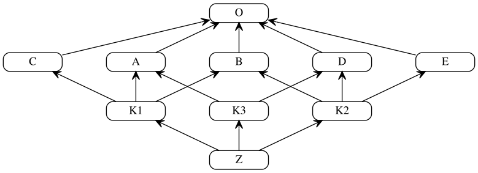
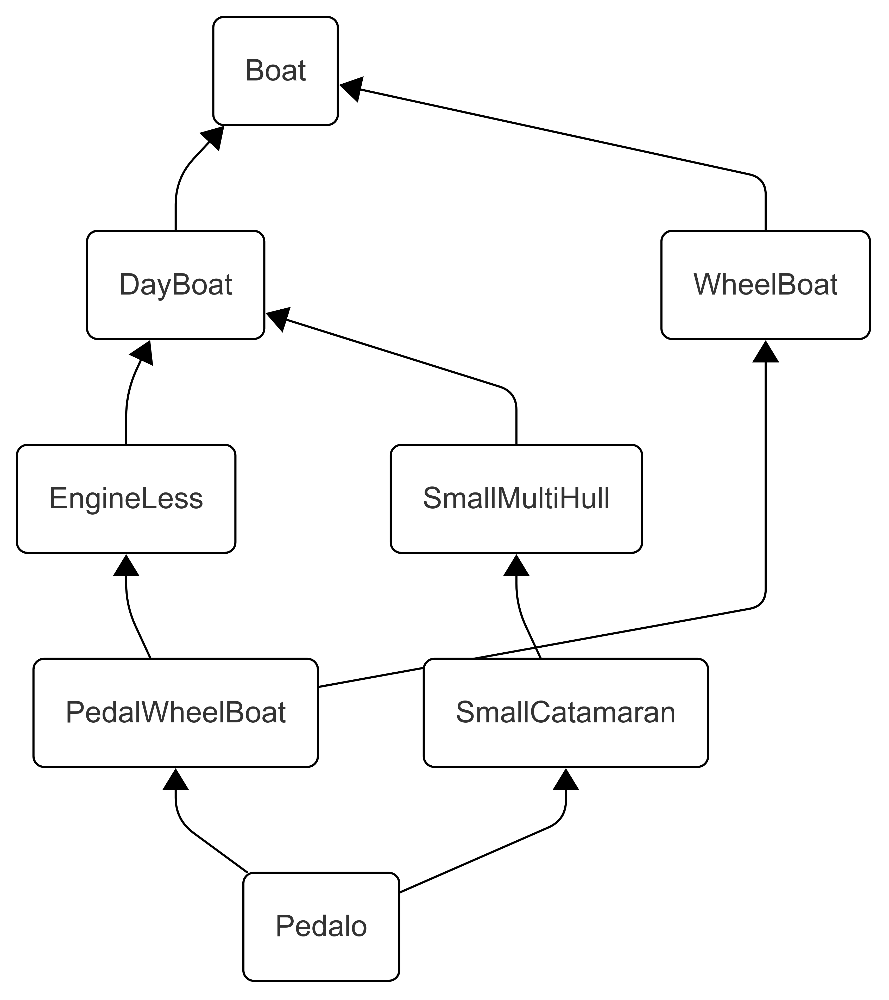

Lambda: The Ultimate Object
Object Orientation Elucidated
To William R. Cook, who first formalized inheritance in the λ-calculus, showed how it differs from subtyping, introduced mixin inheritance, and more—the foundations on which this book is built—yet who never believed in the significance of inheritance. He was, I discovered too late, the one person with whom I most wanted to argue about the ideas in this book.
This book, though well advanced, is still a work in progress.11The latest draft is available in PDF at https://fare.tunes.org/files/cs/poof/ltuo.pdf
and in HTML at https://fare.tunes.org/files/cs/poof/ltuo.html.
The source code is at https://github.com/metareflection/poof.
Please send feedback to fahree@gmail.
You have seen or used Object Orientation (OO), loved it or hated it. But do you understand what exactly OO is, what it is for, and when and how (not) to use it? How would you when OO languages each offer an incompatible variant, with no theory to explain their common ground… that two computer scientists can agree on? By contrast, Functional Programming (FP) has the λ-calculus.
Can you explain OO to yourself, or to an apprentice? Reason about OO programs and what they mean? Make sense of the tribal warfare between OO and FP advocates? Implement OO in a language that lacks it? Objectively (hey!) choose between single inheritance, mixin inheritance, multiple inheritance, and that other multiple inheritance? Fit prototypes, method combinations and multiple dispatch into your notion of OO? Last but not least… are you tired of us Lispers bragging about how our 1988 OO system is still decades ahead of yours?
If these questions bother you, this book has the answers. It develops a Theory of OO on top of FP, defining OO as Internal Modular Extensibility: a mouthful for simple concepts you already use, though you may not yet have clear names for them. It connects disparate academic theories and industry practices, while challenging some widely accepted views.
More than a synthesis of existing lore, this theory is productive: it offers new ways to reason about OO and implement OO in a few lines of code in any language with higher-order functions. It reconciles Class OO, Prototype OO—and a more primitive OO without objects(?!) that few computer scientists even know exists. It also demarcates OO from related but conceptually distinct domains that share its vocabulary.
Its crowning achievement is C4, a new inheritance algorithm that combines single and multiple inheritance, and is provably better than any used before.
1 Introduction
1.1 Wherefore the Book
1.1.1 Curiosity about OO, Familiarity with FP
It was probably in 1967 when someone asked me what I was doing, and I said: “It’s object-oriented programming”. — Alan Kay
But what even are objects? What aren’t? What is OO? What isn’t? What is it for? What is a paradigm to begin with? How do I use OO to write programs? How do I make sense of existing OO programs? How may I best think about OO programs when designing them? How may I best reason about them when debugging them? What are variants of OO? How do I compare them? How can I build OO if I don’t have it yet (or not a good variant of it)? And why are so many people so into OO, and so many others so against it? Which of their arguments are right or wrong when? Am I missing something by not using OO, or by using it?
These are the kinds of questions this book will help you answer. To get there, I will have to introduce many concepts. Don’t worry: while others may revel in complexity, I instead aspire to simplicity. You will learn some new words and new ideas. But if you practice programming, and think about your practice, then you are in my target audience; and you will find that it is easier to program with the right ideas than with the wrong ones. And the Internet is certainly full of wrong and sometimes toxic ideas—about OO, as about anything.
To answer those questions,
I will assume of my readers a passing familiarity with Functional Programming (FP).
You don’t have to be an expert at FP;
you just need basic knowledge about how to read, write and evaluate
“anonymous higher-order” functions
in your favorite programming language.22Anonymous functions are just functions that do not need to have a name.
Higher-order means that they can take other functions as arguments,
and return functions as results,
both old (previously bound to existing variables)
and new (obtained by applying or composing previous functions).
These days, in 2026, most mainstream languages have such functions,
quite unlike 20 years ago.
It is also possible to emulate such functions in languages that do not have them;
that is a topic I will not cover, but I can refer you
to classic books about programming languages that do it well
(Abelson et al. 1996; Friedman et al. 2008; Krishnamurthi 2008; Pierce 2002; Queinnec 1996).
I do love these books; however, I find their treatment of OO lacking—otherwise
I wouldn’t be writing the present book.
Note that this book will not address how to use OO within some existing language or framework; you will find little here in terms of recipes, patterns or methodologies. There are already many books, and an immense body of existing code, from which to learn such things. Instead, this book is about understanding OO itself: what it fundamentally is, how and why it works when it does, how and why it fails when misused or abused, and how its many variants relate to one another. I expect my audience to consist of would-be self-aware practitioners and implementers who seek to understand what it is they are doing—or should be doing.
1.1.2 Decades Too Late, But Still Decades Ahead
Each new generation born is in effect an invasion of civilization by little barbarians, who must be civilized before it is too late. — Thomas Sowell
OO was first clearly embodied in 1967 by Dahl and Nygaard with Simula,
named around the same time by Alan Kay, whose vision would lead to Smalltalk,
yet only articulated as a concept in 1976 by Bobrow and Winograd with KRL,
then made practical by Ingalls with Smalltalk-76.33My historical account of OO is slightly different from the “standard” history,
not in the facts (which I don’t think anyone disputes, given publication records),
but in their interpretation:
The history of a concept crucially hinges on one’s understanding
of what the concept even is.
Knowing who published what when is necessary but insufficient:
you must also know which of those whats do or don’t qualify as what you’re looking for.
My understanding drives which contributions to emphasize as the real breakthroughs.
Citation counts can’t tell you what actually mattered, and
thus can’t tell what came first among what actually mattered;
they can only tell what once became fashionable to write about among academics.
See §4.3.2 “Modular Extensibility Breakthroughs: A History of OO” for my historical account—which I give after
all my conceptual exposition.
OO took off from there, at first reserved for the happy few
who could use the highest-end systems from Xerox, BBN or MIT.
OO quickly became popular among researchers, then among hobbyists in the 1980s,
and at some point was the Next Big Thing™.
By the 1990s, OO finally became available to every programmer who cared, accompanied by endless industry hype. By the 2000s it had become the default programming paradigm. Then, at some point in the 2010s it started to become as boring as it was ubiquitous. Now in the 2020s it is on its way to becoming forgotten, at least among the Cool Kids. Yet, one thing OO never was, was understood. Until now.
As a USENET wise man once wrote: “Every technique is first developed, then used,
important, obsolete, standardized, and finally understood.”44“Toute technique est mise au point, utilisée, importante,
obsolète, normalisée puis comprise.” — Roland Trique, fr.sci.jargon, 1999
This book, then, is here to drive the final nail into the coffin of OO: understanding it.
Too bad no one reads books anymore, except AIs.
Had this book, or more importantly the understanding it offers, come a few decades earlier,
it could have saved a lot of people a lot of trouble.
OO sure baffled me for a long time—and many around me, too.
Now that I finally grok it,
I can bring you all my explanations—late to the party, but just in time to throw the next one.
It would be nice to hear a few of my old colleagues tell me: “So that is what OO was about all along!” But I have little hope of convincing many in the older generations of the benefits of OO done right (yes, I am one of those Lispers bragging about how our 1988 OO system is still decades ahead of yours). Then again, we’ll all soon be retiring and cease to matter. The audience that matters most is the new generation of programmers entering the field every year, whom I must teach, lest they repeat our mistakes—or worse. And even if AIs take over programming—they too will need education.
1.1.3 Towards a Rebirth of OO
If you want to build a ship, don’t drum up the men to gather wood, divide the work, and give orders. Instead, teach them to yearn for the vast and endless sea. — Antoine de Saint-Exupéry, creatively misquoted
When I mention OO becoming boring, then forgotten, or talk of nailing its coffin, I’m not celebrating OO’s decline. I’m lamenting that a bad version of OO became popular, then faded. Meanwhile, there’s little interest or funding in either industry or academia for further improvements to OO—a topic wrongly considered already understood.
These days, bright programmers gravitate toward FP,
a paradigm unjustly neglected in the industry during OO’s heyday.
As distributed systems became widespread, FP proved more practical
than imperative programming for managing state and avoiding the problematic interactions
that make concurrent programs slow and buggy.
Because OO had been sold in a package deal with imperative programming,
it fell out of fashion alongside it.55To make things worse, FP was also sold
in a package deal—with typesystems incapable of supporting OO.
Grumpy old Lispers like me yell at the clouds that
there was never an opposition between OO and FP—that
we Lispers have been enjoying both together since the 1970s, and that
OO can be so much more than you “blub” programmers can even imagine.66Blub is what Lispers disparagingly call less expressive languages, after Graham (2001a).
Graham notably wrote two books on Lisp, with interesting chapters on OO
(Graham 1994, 1995).
He was however rightly skeptical of the overuse of OO in corporate software
(Graham 2001b).
My hope—my faith, even, despite available evidence—is that a better OO can and will rise from the dead: Simpler than what was once popular. Unbundled from imperative programming. More powerful. With the advanced features of Lisp OO at long last adopted by the mainstream.
But I have to admit my defeat so far: I have yet to build a system to my liking that would attract enough adopters to become self-sustaining. And so, like all researchers who title their papers “Towards a …” when they fail to achieve their goals, I am switching to plan B: trying to convince others that there’s gold in them thar hills, so they will go dig it—because I can’t dig it all by myself. In writing this book, I am sharing the treasure map with you.
1.2 Whence the Book
If there’s a book you really want to read but it hasn’t been written yet, then you must write it. — Toni Morrison
1.2.1 Proximate Cause
The world will never starve for want of wonders, but for want of wonder. — Gilbert K. Chesterton
So I tried to spread the Good News, by getting a paper published. And I did get a paper published eventually (Rideau et al. 2021), but only at the Scheme Workshop, a small venue of sympathetic Lispers, who already understood half of it and did not need much effort to understand the rest, and already had plenty of good object systems to play with. Meanwhile, my repeated attempts at publishing in more mainstream Computer Science conferences or journals were met with incomprehension—also with great technical feedback, of course, that helped me learn and improve a lot, and for which I am most grateful; but fundamentally, with a deep misunderstanding about what I was even talking about. As Gabriel (2012) would say, my reviewers were trying to evaluate my work while making sense of it from an Incommensurable Paradigm.
Certainly, I could try to explain myself, to translate between their language and mine; spend time explaining the denotations and connotations of my words as I was using them, and defusing those that may mistakenly be heard by various readers from different communities; tell my readers to put aside the concepts they think they know, and somehow teach them the concepts I am putting behind the words, so they understand.
But that takes a lot of time and space. For me. And for my readers.
Resources that we both lack, especially in scientific publications
limited to something like 12 or 25 pages, depending on the venue.77Even a journal, with articles sometimes up to 70 pages,
would require splitting the content of this book into at least six parts;
many more actually, because each part would have to spend a good chunk of its page limit
just to summarize enough of what comes before so that the current part is understandable,
and enough of what comes after so that it doesn’t appear pointless or petty.
This is much more effort than just writing a book,
an endeavor that is already an extreme sink of time and resources.
Splitting the same content over a score of 25-page papers would be even more work.
And so, as Pascal wrote about one of his letters:
Je n’ai fait celle-ci plus longue que parce que
je n’ai pas eu le loisir de la faire plus courte.
(I have made this one longer only because I lacked the leisure to make it shorter.)
That was barely enough to make my claims clear and
address actual misunderstandings experienced by previous reviewers—see how much that takes
in §2 “What Object Orientation is (Overview)” and §3 “What Object Orientation is not” respectively—with
no space left to properly explain and substantiate those claims.
Attempts to compress that information into this kind of format
would again lead to loss of clarity, and the inevitable misunderstanding by reviewers,
and frankly, the readers they rightfully stand for (to a point).
Or, I could take the time and space to explain things right. But then, I’d have to abandon the hope of fitting in existing venues. I would have to write a book. This book.
1.2.2 Ultimate Cause
Some mathematicians are birds, others are frogs. Birds fly high in the air and survey broad vistas of mathematics out to the far horizon. They delight in concepts that unify our thinking and bring together diverse problems from different parts of the landscape. Frogs live in the mud below and see only the flowers that grow nearby. They delight in the details of particular objects, and they solve problems one at a time. Manin is a bird. I happen to be a frog, but I am happy to introduce this book which shows us his bird’s-eye view of mathematics. — Freeman Dyson, in his foreword to Manin (2007)
One explanation is that these ideas are hard to compress to fit within the size limits of publishable papers: out of the four parts in my thesis, the earlier parts can seem trivial, and mostly pointless (except for a few useful definitions and some cool insight), unless you understand the applications in the later parts; but the applications in the later parts seem impossible or don’t even make sense unless I introduce the concepts from the first parts.
I repeatedly develop theories too interconnected to be published in parts because I tend to think in terms of big pictures—or what others call big pictures, for I am also aphantasic: one with no mind’s eye except when dreaming. As a “bird”, I like to explain large-scale human behavior, or tie together seemingly disparate phenomena, by identifying common causal patterns that you can observe from “above”. Ideas that are hard to communicate to “frogs”, who don’t think at a high enough level of abstraction. And I suspect that even other “birds” who do think at a high enough level, sometimes higher, not being aphantasic, are overwhelmed or distracted by their visual imagery, and miss structural patterns I perceive non-visually (while, I presume, being able to easily see other patterns I struggle to perceive).
In the case of this book on Object Orientation, however,
the difference is that I actually have
three decades of practical as well as theoretical experience with OO.
I studied the semantics of programming languages in college.
I professionally wrote or maintained OO programs
in Lisp, Python, Java, JavaScript, Jsonnet, Scala, C++.
I kept writing papers about OO while working in the industry (Rideau 2012; Rideau et al. 2021).
And for many years, I have been implementing OO,
and maintaining two object systems for Gerbil Scheme (Rideau 2020; Vyzovitis 2016).
OO is a topic both easier and more concrete than reflection,
in general and for me in particular.
A topic in which I have direct experience as a frog,
and where I can stand as a bird on the shoulders of giants
who already solved all the foundational problems,
leaving a puzzle whose pieces mostly remained to be fitted together—with a few still to be cut.
On this mature topic, I am ready and capable, and can explain a complete Theory of OO
that is also fully implemented and immediately usable.99Static typechecking is not included in what is “fully implemented” in this book, and indeed
you don’t need it to implement a dynamically typed variant of OO in your favorite language.
That said, the theory largely exists already, and I suspect your friendly neighborhood clanker
will be happy to complete an implementation from the indications I give in chapter 8,
as a morning exercise.
Ultimately, then, OO is the topic where my bird’s view and frog’s experience meet, where I made worthy findings that won’t fit in a short publication, but that I can share in the form of a book.
1.3 What the Book
1.3.1 A Theory of OO
There is nothing so practical as a good theory. — Kurt Lewin
This characterization of OO should be retrospectively obvious to all familiar with OO.
Yet remarkably, some programmers explicitly reject it, eminent professors even.1010In §3 “What Object Orientation is not”, I will discuss many contrary opinions about OO,
including by such luminaries of the topic as Alan Kay or William Cook,
or of adjacent topics like Joseph Goguen or Barbara Liskov.
In §8 “Types for OO”, I will also criticize how many great researchers approach Types for OO.
And even in other chapters, I will issue my lot of opinions
that would no doubt make many respected scholars, cited or not, shake their heads.
But my proving all these renowned scientists wrong on one question or another
in no way diminishes their contribution to OO or to neighboring topics;
and my respect for them only increases for their having achieved all they did
with the handicap of one wrong idea or two.
There is thus a need to elucidate the words and concepts of OO,
behind the hype and confusion, and justify the choices made by OO
(or, where warranted, amend them).
Such is the main purpose of this book:
to offer a Theory of OO.
This Theory of OO is Meaningful. A theory is meaningful if it is a body of explanations necessary and sufficient to account for what we do when we do OO, and what we do not do when we do not. It can clearly state the problems to be solved by or for OO, and the criteria by which we can judge some solutions as better than others, good or bad, acceptable or unacceptable. In these explanatory abilities, the negative is as important as the positive: it makes it possible to demarcate the concept of OO from other concepts; to distinguish that which partakes in it, that explains it, from that which doesn’t, and would only corrupt it if accepted as part of OO.
This Theory of OO is Consistent.
To remain consistent, a theory shall not contain internal contradictions.
Consistency as such is easy: just avoid saying much,
stick to tautologies and things already known for sure.1111A tautology is a statement that is tautological.
Consistency, however, is much harder when you want to actually
say a lot of useful things that interact with each other—which
is why we want the theory to also be relevant.
This Theory of OO is Relevant. A theory of OO is relevant to OO, and not to something else, if it matches the lore of OO: it will restate most if not all the things we know and care about with respect to OO, especially what has been well-known for decades (Hathaway 1996).
To be both consistent and relevant at the same time in a lore full of controversial and mutually contradictory opinions, a theory must be critical when recalling the existing lore: it must organize the information, distinguish the wheat from the chaff, and promote some views deemed correct while denouncing incorrect ones, whether or not they concur with majority views. Yet, even if it contradicts the explanations of previous theories, still a theory must account for and be consistent with the same observed and verifiable phenomena; or else it is a theory of something different altogether.
This Theory of OO is Productive. To be actually interesting, a theory must be productive: it must positively contribute new information. Just contributing new criteria to make sense of the existing lore can be enough to be productive. But I will go further and contribute more lore, too: useful ideas never published about OO, that make it simpler.
This Theory of OO is Constructive. While I will discuss informal principles, I will include running code in Scheme that you can easily adapt to your favorite programming language (see §4.4.7 “Why Scheme?” regarding choosing Scheme). I will explain which features are needed beyond the mere applicative λ-calculus, why, and how to typically implement them in existing programming languages. Remarkably, the main feature needed is lazy evaluation, or ways to emulate it (§5.3 “Underappreciated Practical Subtleties of the λ-calculus”), as OO is most naturally defined in a pure lazy functional setting, and eager evaluation of OO without side effects leads to exponential recomputations.
One aspect for which I do not provide a construction, however, is static typing. I am a proficient user of types, but am no expert at the design, implementation or theory of types. Therefore I will only provide semi-formal designs for what better static types for OO should look like. And I will refer to the better papers among the many I have read, for what I believe are good foundations for typing OO (Allen et al. 2011; Eifrig et al. 1995b,a). Among other things, good OO types should work not just for Second-Class Classes, but also for First-Class Prototypes; they require recursive types, subtyping, and some form of existential types. Dependent types are not necessary.
1.3.2 Multiple Variants of Inheritance
When you come to a fork in the road, take it. — Yogi Berra
With this variety of options, programmers (respectively programming language designers)
face a choice of which of several variants of inheritance to use (respectively implement),
if any at all.1212And then there are dubious variants published in obscure papers, that I will not discuss.
Hopefully, after reading §7 “Inheritance: Mixin, Single, Multiple, or Optimal”,
you will be able to understand
why they are either trivially expressible in terms of the above variants,
or fundamentally flawed,
whenever you may come across them.
That said, when, in old papers, I see pioneers struggling to find solutions to problems
few if anyone else suspected existed, then make mistakes, or take wrong turns—I
laugh, I cry, but I root for them.
On the other hand, when, in more recent papers, I see researchers propose wrong solutions
to problems that were solved long ago, I just shake my head, and express sadness that
scientific communication and education are not working well.
Is there an objectively superior form of
inheritance—whether an existing variant or some combination—with respect
to expressiveness, modularity, extensibility, runtime performance,
and whatever else might matter?
Some languages notably support forms of both single inheritance and multiple inheritance,
though with some constraints: Common Lisp, Ruby, Scala.
Would the best way to do inheritance subsume these combinations?
If so, how does it relate to the multiple flavors of multiple inheritance?
And of course, critics of OO argue against using inheritance at all. What are the reasons to use or not use inheritance to begin with? I will use the absence of inheritance as a baseline against which to evaluate the variants.
1.3.3 Optimal Inheritance
An extreme optimist is a man who believes that humanity will probably survive even if it doesn’t take his advice. — John McCarthy
There is a best way to combine single and multiple inheritance.
This way involves linearization of the inheritance graph.
The constraints on linearization for the optimal algorithm leave room for further extensions.
Pending extensions, this space is filled by a well-defined heuristic whose uniquely determined behavior is easy to understand.
The C4 algorithm implements this Optimal Inheritance.
I implemented C4 as part of
the builtin object system of Gerbil Scheme (Vyzovitis 2016).1313Scheme (R7RS Working Group 2013; Steele Jr. 1976, 1977, 1978; Steele Jr. and Sussman 1976; Sussman and Steele Jr. 1975)
is a language with a rather minimalist definition.
Dozens of mutually incompatible implementations of Scheme exist
that each provide their own extensions on top of this common minimal core,
with various degrees of compliance with many standards,
to offer a usable programming environment.
However, there is no common object system;
instead there are plenty of different object systems
that span the entire design space for OO—except for their general lack of static types.
Gerbil Scheme provides its own builtin object system, not compatible with any standard,
but with arguably the best inheritance of any object system to date (as of 2026).
It is unusual for a book to claim some significant innovation like that: usually, a researcher would publish it at some conference. However, C4 in isolation might only look mildly interesting: it “just” combines a couple of well-known ideas and a speed optimization. The concepts I develop are prerequisites for the optimality claim about C4 to even make sense, yet require this book to properly articulate. C4 itself is a notable improvement, which crowns the theory as productive. But the theory behind it is the real achievement.
What that means for you in practice, though, is that a good theory brought you a better inheritance algorithm with which to improve your existing (or future) languages.
1.4 How the Book
1.4.1 Plan of the Book
— Would you tell me, please, which way I ought to go from here?
— That depends a good deal on where you want to get to. — Lewis Carroll
In chapter 2, I provide a quick overview of Object Orientation, and the three variants of inheritance in common use. This chapter serves as a map of the concepts and of the words I use to describe them, necessary because there is no common theory of OO, and no unambiguous shared vocabulary to name what common concepts there are. Importantly, I introduce the essential yet oft-ignored notion of Conflation between Specification and Target. I then describe the relationship between Specifications, Prototypes, Classes and Objects.
In chapter 3, I dispel common misconceptions about OO, to ensure that my theory isn’t met with misunderstanding due to these misconceptions or to disagreements about what is or isn’t being theorized.
In chapter 4, I explain what I mean by Internal Modular Extensibility, the rationale for OO, its motivation and purpose. This chapter remains informal, but lays the conceptual groundwork for the formal approach I take in the rest of this book.
In chapter 5, I introduce minimal formal models of Modularity and Extensibility. Using pure FP as a foundation, with Scheme syntax, I derive from first principles a minimal OO system, in two lines of code. This minimal OO system uses mixin inheritance, and, remarkably, has neither objects nor prototypes, much less classes, only specifications and targets.
In chapter 6, I rebuild all the mainstream features and appurtenances of popular OO systems as additions or modifications to the minimal system from chapter 5: prototypes, classes, mutation, etc. I notably discuss the actual relationship between OO and imperative programming, and argue that the natural framework for OO is pure lazy functional programming.
In chapter 7, I discuss in detail the main forms of inheritance: single inheritance, multiple inheritance and mixin inheritance. I examine issues surrounding method conflict and resolution, or harmonious combination. I explain the known consistency constraints that matter for linearization algorithms in the context of multiple inheritance, and the state of the art in satisfying them, the C3 algorithm. I discuss how to combine multiple and single inheritance, and examine the existing solutions adopted by Common Lisp, Ruby and Scala. I then propose my solution, a linearization algorithm I call C4, that satisfies all the constraints of C3 plus those for combining single and multiple inheritance.
In chapter 8, I study the kinds of types and typesystems that are suitable for reasoning about OO. I notably clarify the all-too-common confusion between subtyping and subclassing. This chapter is somewhat less constructive than the others, as I do not actually implement a typesystem—but I do offer key formal elements for one.
In chapter 9, I discuss more advanced topics including focused modular extensions, method combination, generic functions, multiple dispatch (multimethods), global dispatch tables, and static vs dynamic dispatch.
In chapter 10, I discuss efficient object implementation, including staged optimizations and meta-object protocols.
Finally, in chapter 11, I conclude by recapitulating my original findings. If you want to check whether there’s anything new for you in this book, or are a future researcher interested in when now-well-known ideas were introduced, you may peek there first.
The chapters are followed by an extensive Annotated Bibliography, with notes about each of the works cited to explain what makes it relevant.
1.4.2 Stop and Go
Begin at the beginning and go on till you come to the end: then stop. — Lewis Carroll
The narrative goes from the most informal, most generic and most basic information about OO, to the most formal, most specific and most advanced. Some readers may prefer to stop when the material becomes more formal. Others may want to skip the informal discussion and jump directly to the formal parts at §5 “Minimal OO”, about a third into the book.
The most enthusiastic among you will read the book cover to cover, including footnotes and bibliographical notes. You may even do every exercise, and go all the way into using and implementing the most advanced OO techniques of the later chapters in your programming language of choice (§9 “Extending the Scope of OO”, §10 “Efficient Object Implementation”). You will end up building your own OO system, and writing a sequel to this book. If you do, why not contact me and join me to build and write them together?
But you don’t have to be that enthusiastic to read and hopefully enjoy this book. You may read casually, skip parts that don’t interest you. You can look only at the section titles and the informal principles in bold italic. You can focus on the formal code definitions, or their type declarations. You can search for an argument on a specific controversy. You can scan the bibliography for more things to read.
What will enhance your experience, however, is the ability to interact with a computer and play with the code. If you have an electronic copy, you may copy/paste the code, use text search to compensate for the lack of a word index, click directly into the sections that interest you, and even ask AI assistants for navigation help, personalized explanations, in-depth examples, references, tutorials on prerequisite knowledge, or modern translations for my dated language.
1.4.3 Self-Description
An adjective is autological if it describes itself (e.g., “short” is short). An adjective is heterological if it does not describe itself (e.g., “long” is not long). Now consider the adjective “heterological”: Is it heterological? — Grelling–Nelson paradox
At times, I will highlight some short sentence in bold italic, to make it clear I believe it is an important principle, as follows: “If you have exceptions to your stated principle, ask yourself by what standard you make the exceptions. That standard is the principle you really hold.” The above principle describes principles; in this case, it was written not by me, but by my friend Jesse Forgione.
I intend to include more examples in a future edition. But good examples take time to write, and space in the book; they can be too much for some readers and not enough for others. I am seeking the perfect concise teachable example in each case: one that neatly illustrates what I mean without taking too much space or explanation. Until I find it, I must direct you to online resources, where OO code in general is abundant. If you are looking specifically for code that uses Prototype OO and multiple inheritance, you may look at my library gerbil-poo (Rideau 2020): it provides a short but practical implementation of a prototype object system; and it builds interesting type descriptors on top of that object system, including a nice trie data structure, that is further specialized in the gerbil-persist library. AI assistants may also be able to find examples tailored to your needs. If you struggle with a particular concept that lacks an example, please tell me. And if you find good illustrative examples for ideas you or others struggled with, please send them my way.
1.4.4 Being Objectively Subjective
Be… suspicious… of all those who employ the term ‘we’ or ‘us’ without your permission. This is [a] form of surreptitious conscription… Always ask who this ‘we’ is; as often as not it’s an attempt to smuggle tribalism through the customs. — Christopher Hitchens
Too many authors hide the responsibility for a decision among multiple authors
(even when there is only one),
or include the readers in a collective decision they did not make.
Using an unwarranted “we” is a trick commonly used by con men, narcissists and politicians
(but I repeat myself), and I find it misleading even when done innocently.
I once instituted for myself and my friends a “cuss box” in which to drop a dollar
when any of us did it, even on social media.
As the jest goes: “Only presidents, editors, and people with tapeworms
have the right to use the editorial ‘we’.”1414The jest, often apocryphally attributed to Mark Twain,
is actually a variant of an idea by George Horatio Derby, alias John Phoenix,
with many contributors evolving the formulation.
As with OO and other ideas, the originator may have made the greater conceptual leap,
yet not been the one who brought it to fruition.
And I don’t think presidents have that right, either.
I will still say “we” on occasion, speaking for me and you readers, or for all humans. That “we” will then be passive, as for things that we are, experience, or undergo, or laws of logic and history that constrain us: “we saw that example in a previous section” (you who read and I who wrote), “that experiment tells us” (us who saw it), “we cannot solve the termination problem” (we subject to logic). It will not be a trick to hide an action or decision that some among us made while shifting praise or blame or responsibility onto others: “we got one Nobel Prize each—on average” (Marie Curie and I, but she did all the work), “we killed that poor man” (I did, but I’m trying to implicate you), “we must help that poor widow” (you all must, I’ll take a large cut of the funds).
1.4.5 Technical Nomenclature
The difference between the right word and the almost right word is the difference between lightning and the lightning bug. — Mark Twain
Thus, when multiple nomenclatures conflict, I will try to identify the least ambiguous word for each concept, even if it is neither the most popular word for the concept nor the oldest (though both are candidates I’ll consider), and even if I sometimes make one up just for this book. Ideally, I can find a word that will be unambiguously understood by all my readers; but if that is not the case, I will prefer an awkward word that causes readers to pause and reflect, to a deceptively familiar word that causes them to unwittingly misunderstand the sometimes subtle points I make.
In particular, I will conspicuously avoid using the unqualified words “object” and “class” unless strictly necessary, because they carry different connotations, varying with each reader’s adopted traditions, that are at odds with the theory I am laying out. I will also avoid the word “class” when talking about the most general kind of entity subject to inheritance, since a class is but a quite limited special case of a prototype, which is itself derivative of what I’ll call a specification. I will define those terms precisely in §2 “What Object Orientation is (Overview)”, §4 “OO as Internal Modular Extensibility”, §5 “Minimal OO”, §6 “Rebuilding OO from its Minimal Core”.
2 What Object Orientation is (Overview)
Ce que l’on conçoit bien s’énonce clairement,
Et les mots pour le dire arrivent aisément.
(What is clearly conceived is clearly expressed,
And the words to say it flow with ease.) — Nicolas Boileau
2.1 Extensible Modular Specifications
Say what you mean and mean what you say. — Lewis Carroll
2.1.1 Partial specifications
A program is made of many parts that can be written independently,
enabling division of labor,
as opposed to all logic being expressed in a single monolithic loop.1515The entire point of partial specifications is that they are not complete,
and you want to be able to manipulate those incomplete specifications,
even though, of course, trying to “instantiate” them
before all the information has been assembled will fail.
Typesystems and semantic frameworks incapable of dealing with such incomplete information
are thereby incapable of apprehending OO.
2.1.2 Modularity (Overview)
A programmer can write or modify one part (or “module”) while knowing very little information about the contents of other parts, enabling specialization of tasks. Modularity is achieved by having modules interact with each other through well-defined “interfaces” only, instead of having to understand in detail the much larger contents of the other modules so as to interact with them.
2.1.3 Extensibility (Overview)
A programmer can start from the existing specification and only need contribute as little incremental information as possible when specifying a part that modifies, extends, specializes or refines other parts, as opposed to having to know, understand and repeat existing code nearly in full to make modifications to it.
2.1.4 Internality
Those partial programs and their incremental extensions are entities inside the language, as opposed to merely files edited, preprocessed or generated outside the language itself, which can be done for any language.
Note that Modularity and Extensibility are properties of the process of writing software rather than of the software itself. Internality crucially embeds part of this process inside the software. But the software development process remains larger than the software itself.
2.2 Prototypes and Classes
Sir, I admit your gen’ral Rule
That every Poet is a Fool:
But you yourself may serve to show it,
That every Fool is not a Poet. — Alexander Pope (or Jonathan Swift), “Epigram from the French”
2.2.1 Prototype OO vs Class OO
These in-language entities are called prototypes if first-class (manipulated at runtime, and specifying values, most usually records (Strachey 1967)), and classes if second-class (manipulated at compile-time only, and specifying types, most usually record types). A language offers prototype-based object orientation (“Prototype OO”) if it has prototypes, and class-based object orientation (“Class OO”) if it only has classes.
The first OO language used classes (Dahl and Nygaard 1967); but the second OO language, and first OO language its authors called OO in print, used prototypes (Bobrow and Winograd 1976). Some languages provide both (ECMA-262 2015; Hewitt et al. 1979). Class OO is the more popular form of OO. But the most popular OO language, JavaScript, started with just Prototype OO; Class OO was layered on top twenty years later (§3.1.2 “OO isn’t Classes Only”).
2.2.2 Classes as Prototypes for Types
A class is a compile-time prototype for a type descriptor: a record of a type and accompanying type-specific methods, or some meta-level representation thereof across stages of evaluation.
Class OO is thus a special case of Prototype OO, which is therefore the more general form of OO (Lieberman 1986; Rideau et al. 2021; Wolczko 1999). And indeed within Prototype OO, you can readily express prototypes for runtime type descriptors for your language, or prototypes for type descriptors for some other language you are processing as a meta-language.
In this book, I will discuss the general case of OO,
and thus will seldom mention classes, since they are merely a special case of prototypes.
Exceptions include when I elucidate the relationship between Class OO and Prototype OO,
or mention existing systems that are somehow restricted in expressiveness
so they only support classes.1616There would be plenty to discuss about classes and types from the point of view of
library design and ecosystem growth, patterns that OO enables and antipatterns to avoid,
tradeoffs between expressiveness and ease of static analysis, etc.
There are plenty of existing books and papers on Class OO,
OO software libraries, techniques to type and compile OO, to get inspiration from,
both positive and negative.
While some of the extant OO lore indeed only applies to defining classes,
a great deal of it easily generalizes to any use of inheritance,
even without classes, even without prototypes at all,
even when the authors are unaware that any OO exists beyond Class OO.
Still my discussion of OO, and my exploration of inheritance in particular,
directly applies just as well to the special case that is Class OO.
See §6.2 “Rebuilding Class OO”.
2.2.3 Classes in Dynamic and Static Languages
Dynamic languages with reflection, such as Lisp, Smalltalk or JavaScript, can blur the distinction between runtime and compile-time, and thus between Prototype OO and Class OO. Indeed, many languages implement Class OO on top of Prototype OO exactly that way, with classes being prototypes for type descriptors.
Static languages, on the other hand, tend to have very restricted sublanguages at compile-time with termination guarantees, such that their Class OO is vastly less expressive than Prototype OO, in exchange for which it is amenable to somewhat easier static analysis. A notable exception is C++, which has a full-fledged Pure Functional Lazy Dynamically-Typed Prototype OO language at compile-time: templates. On the other hand, Java and after it Scala are also Turing-universal at compile-time, but not in an intentional way that enables practical metaprogramming, only an unintentional way that defeats guarantees of termination (Grigore 2017).
2.3 More Fundamental than Prototypes and Classes
Simplicity does not precede complexity, but follows it. — Alan Perlis
2.3.1 Specifications and Targets
As I reconstruct the semantics of OO from first principles, I will show that more than prototype, class, object, or method, the fundamental notions of OO are specification and target: target computations are being specified by extensible and modular, partial specifications (§5 “Minimal OO”).
The target can be any kind of computation, returning any type of value. In Prototype OO, the target most usually computes a record, which offers simpler opportunities for modularity than other types. In Class OO, the target is instead a record type, or rather a type descriptor, record of a record type and its associated methods, or of their compile-time or runtime representation.
A (partial or complete) specification is a piece of information that (partially or completely) describes a computation. Multiple specifications can be combined into a larger specification. From a complete specification, a target computation can be extracted; but most specifications are incomplete and you can’t extract any meaningful target from them. A specification is modular inasmuch as it can define certain aspects of the target while referring to other aspects to be defined in other specifications. A specification is extensible inasmuch as it can refer to some aspects of the target as partially defined so far by previous specifications, then amend or extend them. In Prototype OO, this modular context and the previous value being extended are usually accessed through variables named self and super respectively. In Class OO, such variables may also exist, but there is an extra layer of indirection as they usually refer to an element of the target type rather than to the target itself.
2.3.2 Prototypes as Conflation
A specification is not a prototype, not a class, not a type, not an object—it is not even a value of the target domain. It is not a record and does not have methods, fields, attributes or any such thing.
A target value in general is not an object, prototype or class either; it’s just an arbitrary value of that arbitrary domain that is targeted. It need not be any kind of record nor record type; it need not have been computed as the fixpoint of a specification; indeed it is not tied to any specific way to compute it. It cannot be inherited from or otherwise extended according to any of the design patterns that characterize OO.
Rather, a prototype (a.k.a. “object” in Prototype OO, and “class” but not “object” in Class OO) is the conflation of a specification and its target, i.e. an entity that, depending on context, at various times refers to either the specification (when you extend it) or its target (when you use its methods).
Formally speaking, a conflation can be seen as a Cartesian product with implicit casts to either component factor depending on context. In the case of a prototype, you’ll implicitly refer to its specification when speaking of extending it or inheriting from it; and you’ll implicitly refer to its target when speaking of calling a method, looking at its attributes, reading or writing a field, etc. See §6.1.2 “Conflation: Crouching Typecast, Hidden Product”.
2.3.3 Modularity of Conflation
In first-class OO without conflation, developers of reusable libraries are forced to decide in advance and in utter ignorance which parts of a system they or someone else may want to either extend or query in the future. Having to choose between specification and target at every potential extension point leads to an exponential explosion of bad decisions to make: Choosing target over specification everywhere would of course defeat extensibility; but choosing specification over target for the sake of extensibility, especially so without the shared computation cache afforded by conflation, would lead to another exponential explosion, of runtime reevaluations. By sparing programmers a decision they lack information to make, the conflation of specification and target is an essential usability feature of Prototype OO: it increases intertemporal cooperation between programmers and their future collaborators (most usually including their future selves) without the need for communication between the two (which would require time-travel). Thus, in first-class OO, Conflation Increases Modularity.
This modularity advantage, however, is largely lost in
static languages with second-class Class OO.1717Note that this does not include dynamic Class OO languages
like Lisp, Smalltalk, Ruby or Python.
In these languages, compilation can keep happening at runtime,
and so programmers still benefit from conflation.
In such languages, all class extensions happen at compile-time,
usually in a restricted language.
Only the type descriptors, targets of the specifications,
may still exist at runtime (if not inlined away).
The specifications as such are gone and cannot be composed or extended anymore.
Thus, you can always squint and pretend that conflation is only a figure of speech
used when describing the system from the outside
(which includes all the language documentation),
but not a feature of the system itself.
However, this also means that in these static OO languages,
conflation of specification and target is but a minor syntactic shortcut
with little to no semantic benefit.
Yet its major cost remains: the confusion it induces,
not just among novice developers, but also experts, and even language authors.
2.3.4 Conflation and Confusion
Conflation without Distinction is Confusion. Those who fail to distinguish between two very different concepts being conflated will make category errors of using one concept or its properties when the other should be used. Inconsistent theories will lead to bad choices. Developers will pursue doomed designs they think are sound, and eschew actual solutions their theories reject. At times, clever papers will offer overly simple solutions that deal with only one entity, not noticing that an actual solution needs to address two. In rare cases, heroic efforts will lead to overly complicated solutions that correctly deal with both conflated entities at all times. Either way, incapable of reasoning correctly about OO programs, developers will amend bad theories with myriad exceptions and “practical” recipes, rather than adopt a good theory that no one is offering. Murky concepts will lead to bad tooling. Confused developers will write subtle and persistent application bugs. Researchers will waste years in absurd quests and publish nonsense along the way, while fertile fields lie unexplored. See §8.3 “The NNOOTT: Naïve Non-recursive OO Type Theory” regarding decades of confusion between subtyping and subclassing due to confusing target (subtyping) and specification (subclassing).
Still, when you clearly tease the two notions apart, and are aware of when they are being conflated for practical purposes, so you can distinguish which of the two aspects should be invoked in which context, then the semantics of OO becomes quite simple. Shockingly, the conflation of specification and target went largely unnoticed, even though it is older than OO, going at least as far back as Hoare (1965); it was sometimes implicitly understood, and on a few rare occasions explicitly recognized (§6.1.8 “Implicit Recognition of Conflation in OO Lore and Literature”); only one author elevated it to an issue worth addressing in its own right, namely Simons (1995; 2005), but only in the case of classes, and only as a problem. Implementations of various Prototype OO systems have to explicitly accommodate it (see e.g. the __unfix__ attribute in Simons (2015)—different Simons), but the documentation is silent about it. The conflation of specification and target in the general case of prototypes, together with its positive role, was first explicitly discussed in Rideau et al. (2021).
2.4 Inheritance (Overview)
Discovery consists of seeing what everybody has seen and thinking what nobody has thought. — Albert Szent-Györgyi
2.4.1 Inheritance as Modular Extension of Specifications
Inheritance is the mechanism by which partial modular specifications are incrementally extended into larger modular specifications, until the point where a complete specification is obtained from which the specified target computation can be extracted.
There have historically been three main variants of inheritance, with each object system using a variation on one or two of them: single inheritance, multiple inheritance and mixin inheritance. I will further distinguish two kinds of multiple inheritance, flavorful and flavorless (my coinage), and show that the flavorful one is superior to the others, while the flavorless one is inferior to mixin inheritance.
Considering the most popular languages on the TIOBE index (TIOBE Software BV 2026),
we can see that most of these languages support some form of inheritance;
single inheritance comes most often, still all the forms of inheritance (or lack thereof)
appear among the top 10, and for the last two years the top position was held by
a language with flavorful multiple inheritance (Python).1818The list and rankings of the TIOBE index vary every month, so
I froze the latest archived snapshot available at the time of writing.
Other websites may maintain their own rankings based on different criteria (GitHub 2022),
but while the exact list and rankings will differ,
the top languages will be approximately the same
(e.g. the top ten on GitHub 2022 are all among the top 50 on the current TIOBE).
Thus, consider the top 50 most popular languages in the TIOBE index of August 2026.
5 support flavorful multiple inheritance:
Python (#1), Ruby (#16), Perl (#18), Lisp (#40), Scala (#49).
2 support mixin inheritance:
R (#9), Dart (#32).
5 only support flavorless multiple inheritance:
C++ (#3), PHP (#13), COBOL (#19), MATLAB (#25), OCaml (#29).
21 only support single inheritance:
Java (#4), C# (#5), JavaScript (#6), Visual Basic (#7), Delphi/Object Pascal (#11), Fortran (#15), Swift (#17), Ada (#21), Objective-C (#23), SAS (#24), Julia (#26), Kotlin (#28), LabVIEW (#31), Lua (#34), GML (#35), ABAP (#38), PowerShell (#39), D (#43), TypeScript (#44), X++ (#46), (Visual) FoxPro (#50).
The remaining 17 (a minority!) don’t support inheritance at all:
C (#2), SQL (#8), Rust (#10), Scratch (#12), Go (#14), Assembly language (#20), Classic Visual Basic (#22), PL/SQL (#27), Transact-SQL (#30), Caml (#33), VHDL (#36), Prolog (#37), Zig (#41), VBScript (#42), C shell (#45), Ladder Logic (#47), Haskell (#48).
Note that at least JavaScript, Lua and GML support enough dynamic behavior
to implement better forms of inheritance as patterns or libraries;
and language-supported metaprogramming and/or type-level programming techniques can be used
(or at least could, in theory) to implement arbitrary forms of inheritance
in C++, Rust, Zig and Haskell.
R has multiple object systems: the most popular, S3, supports a variant of mixin inheritance;
S4 supports flavorless multiple inheritance, R6 and S7 support only single inheritance.
For Lisp, I assume TIOBE groups many dialects of Lisp under this category;
I counted it as flavorful multiple inheritance based on Common Lisp’s standard object system, CLOS;
other Lisps have their own standard and non-standard object systems with varying capabilities,
and as I show in this book one with flavorful multiple inheritance
is just a few functions and macros away (and many libraries to that effect have existed for years).
I also didn’t count as multiple inheritance the special support for interfaces in Java and Ada,
only actual “implementation inheritance”—though these features should be noted.
For historical reasons, I may speak of classes, subclasses and superclasses (direct or not)
in this section, especially when discussing previous systems using those terms.
But when discussing the general case of OO, including prototypes and raw specifications, instead
I will speak of specifications and their parents, ancestors, children and descendants.1919Indeed, these words are shorter, less ambiguous, and more general, than
“direct superclass”, “superclass”, “direct subclass” and “subclass” respectively.
As far as I can tell, “parent” in this meaning first appears in print
as early as Borning (1977);
“child”, “descendant”, “sibling”, “offspring” appear in Kahn (1979b);
“ancestors” and “descendents” (spelled -ents) in Goldberg and Robson (1983).
Snyder (1986) then explicitly uses all of these words together.
2.4.2 Single Inheritance (Overview)
Historically, the first inheritance mechanism discovered was single inheritance (Dahl and Nygaard 1967), though it was not known by that name until a decade later. In an influential paper (Hoare 1965), Hoare introduced the notions of “class” and “subclass” of records. The first implementation of the concept appeared in Simula 67 (Dahl and Nygaard 1967). Kay and Ingalls later adopted this mechanism for Smalltalk-76 (Ingalls 1978), as a compromise instead of the more general but then less well understood multiple inheritance (Kay 1993). Kay took the word “inheritance” from KRL (Bobrow and Winograd 1976; Winograd 1975), that had “inheritance of properties”, which was what would now be called “multiple inheritance”. The expressions “single inheritance” and “multiple inheritance” to distinguish the two were first found in a spiritual successor to KRL, FRL (Stansfield 1977). Many other languages adopted (single) “inheritance” after Smalltalk, including Java, that made it especially popular circa 1995.
In Simula, a subclass is defined starting from a previous class as a “prefix”.
The effective text of the subclass (hence its semantics) is then the “concatenation”
of the direct text of all its transitive prefix classes,
including all the field definitions, method functions and initialization actions,
in order from least specific superclass to most specific.2020The complete story is more complex and deserves a section of its own—see §9.2.8 “Simula’s inner: Superclass-Controlled Extension”.
In modern terms, most authors call this prefix a superclass,
or direct superclass to denote that it was syntactically specified as a superclass by the user;
that’s where I will speak of parents and ancestors.
I will call the inheritance hierarchy of a specification,
the set of its ancestors, ordered by the transitive parent relation.
When using single inheritance, this hierarchy then constitutes a list,
and the ancestor relation is a total order.
Single inheritance is easy to implement without higher-order functions: method lookup can be compiled into a simple and efficient array lookup at a fixed index—as contrasted with some variant of hash-table lookup in the general case for mixin inheritance or multiple inheritance. Moreover, calls to the “super method” also have a simple obvious meaning. In olden days, when resources were scarce and before FP was mature, these features made single inheritance more popular than the more expressive but costlier and less understood alternatives. Even today, most languages that support OO only support single inheritance, for its conceptual simplicity.
2.4.3 Multiple Inheritance (Overview)
Discovered a few years later, and initially just called inheritance, in what, in retrospect, was Prototype OO, in KRL (Bobrow and Winograd 1976; Winograd 1975), multiple inheritance allows a specification (frame, class, prototype, etc.) to have multiple parents. The notion of (multiple) inheritance thus predates Smalltalk-76 adopting the term and retroactively applying it to Simula (Ingalls 1978).
Although many early systems
(Bobrow and Stefik 1983; Borning 1977; Borning and Ingalls 1982; Curry et al. 1982; Goldstein and Bobrow 1980)
used multiple inheritance,
multiple inheritance only became usable with the epochal system Flavors
(Cannon 1979; Weinreb and Moon 1981),
refined and improved by successor Lisp object systems
New Flavors (Moon 1986), CommonLoops (Bobrow et al. 1986)
and CLOS (Bobrow et al. 1988; DeMichiel and Gabriel 1987; Keene 1989; Steele Jr. 1990).2121Be careful not to confuse dates of publications and dates of inception of systems being described.
Although the papers I cite for early systems with multiple inheritance
date from after 1979, the systems described therein existed before 1979.
As for Flavors, its report was never “officially” published (Cannon 1979),
and the first academic publication on it was Moon (1986).
Still, the Flavors report did circulate at MIT and in Lisp circles as early as 1979,
and soon reached beyond:
Borning and Ingalls (1982) cites a 1980 copy of the report,
and Stroustrup (1989) cites the Lisp Machine Manual (Weinreb and Moon 1981)
for its chapter on Flavors.
By comparison, Smalltalk-76 had no official publication until 1978,
and even a language like Ruby still arguably lacks academic publications
for some of its OO innovations.
Since then, many languages including Ruby, Perl, Python and Scala
correctly adopted the basic design of Flavors (though none of its more advanced features)—I
will call them flavorful.2222To be fair, these languages all include the capability for a method to call a super-method,
which was not directly possible in Flavors (1979)
without writing your own method-combination,
but only introduced by CommonLoops (1986) with its run-super function,
known as call-next-method in CLOS (1987).
On the other hand, influential or popular languages including
Smalltalk, Self, C++, OCaml, MATLAB, COBOL, PHP
failed to learn from Flavors and got multiple inheritance largely wrong—I
will call them flavorless.
With multiple inheritance, the structure of a specification and its ancestors is
a Directed Acyclic Graph (“DAG”).
The set of all classes is also a DAG, the subclass relation is a partial order.
Most OO systems include a common system-wide base class
at the end of their DAG; but it is possible to do without one.2323Indeed, Flavors allowed you not to include the system-provided vanilla-flavor
at the end of its precedence list, so you could write your own replacement, or do without.
The proper semantics for a specification inheriting multiple different methods from a non-linear ancestry proved tricky to get just right. The older (1976) “flavorless” viewpoint sees it as a conflict to resolve between methods that override each other. The newer (1979) “flavorful” viewpoint sees it as a cooperation to harmonize between methods that combine with each other. Regrettably, too many people in both academia and industry are stuck in 1976, and haven’t even heard of the flavorful viewpoint, or, when they have, still don’t understand it. For this reason, despite being the most expressive and most modular form of inheritance, flavorful multiple inheritance still isn’t widely adopted as of 2026 (though one contender for most popular language, Python, has it!).
2.4.4 Mixin Inheritance (Overview)
Mixin inheritance was last discovered (Steels 1983) and articulated (Bracha and Cook 1990), probably because it relies on a more abstract pure functional view of OO—maybe also because its articulation was one of the first successful attempts at elucidating inheritance in the paradigm of programming language semantics, when the concept had previously been developed in the paradigm of computing systems (Gabriel 2012). Yet, for the same reasons, Mixin Inheritance is more fundamental than the other two variants.
Mixin inheritance is the simplest kind of inheritance to formalize given the basis of FP, in a couple of higher-order functions. Specifications are simple functions, inheritance is just chaining them, and extracting their target computation is just computing their fixpoint. Mixin inheritance also maps directly to the concepts of Modularity and Extensibility I am discussing, and for these reasons I will study it first when presenting a formal semantics of OO (§5 “Minimal OO”).
Mixins equipped with a binary inheritance operator constitute a monoid (associative with neutral element), and the inheritance structure of a specification is just the flattened list of elementary specifications chained into it, as simple as single inheritance. Mixin inheritance works better at runtime, either with Prototype OO, or, in a dynamic and somewhat reflective system, with Class OO.
Mixin inheritance is in some way simpler than single inheritance (but only if you understand FP yet are not bound by limitations of most of today’s FP typesystems), and as expressive as multiple inheritance (arguably slightly more, though not in a practically meaningful way), but is less modular than multiple inheritance (which matters in practice) because it doesn’t automatically handle transitive dependencies and instead forces developers to handle them manually, effectively making those transitive dependencies part of a specification’s interface.
For all these reasons adoption of mixin inheritance remains relatively limited,
to languages like
Strongtalk (Bak et al. 2002; Bracha and Griswold 1993),
Racket (Flatt et al. 2006; Flatt et al. 1998),
Newspeak (Bracha et al. 2008),
GCL (Bokharouss 2008),
Jsonnet (Cunningham 2014),
Dart (Bracha 2015),
and Nix (Simons 2015).
Yet it still has outsized outreach, for just the use of GCL at Google means
a large part of the world’s computing infrastructure
is built upon configurations written using mixin inheritance.2424There is some confidentiality around Google’s Configuration Language GCL.
Still, my understanding from discussing with Googlers who have used it is that
GCL as such only supports single inheritance,
yet that users would often build and use entire frameworks using mixin inheritance,
wherein mixins are defined by abstracting over a base class
that is then extended using single inheritance, e.g.
lambda base: base { a = 1 + super.a; b = c + d;}
Semantically, this is just the same trick as used by Racket to implement mixins
on top of single inheritance.
3 What Object Orientation is not
I honestly beleave it iz better tew know nothing than two know what ain’t so. — Josh Billings
If you find yourself shocked and in disagreement, that’s fine. You don’t have to agree at this point. Just consider that what I call OO and discuss at length in this book may be something slightly different from what you currently call OO. Then please allow me to narrow down what I mean, and make my argument. Or don’t and close this book. But I hope you’ll give my ideas a fair hearing.
On the other hand, if you are innocent of preconceptions about OO and come without having heard commentators explain what they think OO is and what they love or hate about it (which is unlikely if you’re interested enough in OO to read the present book), then you may wholly skip this chapter, and only come back after you encounter bad opinions about OO that need to be debunked.
3.1 Things OO isn’t (that many claim it is)
When words are unfit, speech is unadapted and actions are unsuccessful. — Confucius
3.1.1 OO isn’t Whatever C++ is
I made up the term ‘object-oriented’, and I can tell you I didn’t have C++ in mind. — Alan Kay, at OOPSLA ’97 (near peak C++ popularity)
3.1.1.1 Influential, Yet Atypical
The most popular OO language during the decades that OO was a popular trend (roughly 1980 to 2010), C++ indeed supports some form of OO. But C++ is a rich language with many aspects completely independent of OO (e.g. efficient bit-banging, RAII, template metaprogramming, pointer aliasing, a memory model), whereas the OO aspects that it undoubtedly offers are very different from how OO works in most other OO languages, and colloquial C++ often goes against the principles of OO. Therefore, C++ is in no way representative of OO in general, and if what you know of “Object Orientation” comes from C++, please put it aside, at least while reading this book, and come with a fresh mind.
This is especially true with regard to multiple inheritance,
that will be an important topic later in this book.
C++ boasts support for multiple inheritance, and many people,
when thinking of multiple inheritance, think of what C++ offers.
Now, C++ supports single inheritance well;
but what it calls “multiple inheritance” (Stroustrup 1989)
is not at all the same as what almost everyone else calls “multiple inheritance”:2525Interestingly, the design of C++ non-virtual superclasses is very similar
to the solution from Snyder’s CommonObjects (Snyder 1986),
even though Stroustrup does not cite Snyder:
redefine the problem to be whatever the desired “solution” does—a Tree instead of a DAG—and
hope the users won’t notice the difference.
On the other hand, Stroustrup does cite the Lisp Machine Manual (Weinreb and Moon 1981),
and rejects Flavors because it is not
“sufficiently simple, general and efficient enough to warrant the complexity it would add to C++”;
this is exceedingly ironic considering
Flavors was 1.4kloc (in October 1980, approximately when cited),
and C++ ~100kloc (in 1989, when citing),
with 1980 Flavors having much richer and more general OO functionality than C++,
not to mention its distant 1988 successor CLOS.
a subset of flavorless multiple inheritance (for virtual superclasses and member functions,
with restriction from a “conflict” view of inheritance, see §7.3.4 “Difficulty of Method Resolution in Multiple Inheritance”),
and something that is not OO (for non-virtual superclasses and member functions).2626C++ “repeated inheritance”, similar to “tree inheritance” from Snyder (1986),
can be seen either as object composition (§3.1.5.2 “Composition vs Inheritance”) with systematic proxying of methods,
or as some kind of mixin inheritance with path-based renaming of fields and methods.
Either way, it’s not a regular OO idiom, though
the same effect could be achieved in a roundabout way using OO. As for non-virtual member functions, they are not particularly OO either.
Notably, C++ lacks the proper method resolution that enables a lot of
the modularity of languages with flavorful multiple inheritance.2727The situation is somewhat similar for other languages that adopted
a form of flavorless multiple inheritance, with the same general “conflict” approach of C++:
OCaml (1996), MATLAB (1996), COBOL (2002), and
PHP (2012, on top of its single inheritance “classes”, see §7.4.1 “State of the Art in Mixing Single and Multiple Inheritance”).
Now even when C++ got multiple inheritance wrong,
ignorance was no valid excuse,
since Lisp got it right ten years earlier (Cannon 1979)
and Stroustrup even cited it via Weinreb and Moon (1981).
Ignorance is even less excusable in the case of other languages
copying C++’s “multiple inheritance” over two decades later.
By contrast, many languages got it right in the same time frame,
including Common Lisp (1988), Ruby (1995), Python (2001), Scala (2004).
Now, you can use C++’s powerful template language to reconstitute actual mixin inheritance
and its method resolution on top of C++’s weird variant of inheritance (Smaragdakis and Batory 2000);
and you can even further implement proper multiple inheritance on top of that.2828One could achieve multiple inheritance as a design pattern on top of mixin inheritance,
as I will describe later in this book:
developers would manually compute and specify
each class’s superclass precedence list.
But this cancels some of the modularity benefits of multiple inheritance
versus single and mixin inheritance.
Alternatively, someone could extend the above technique to also reimplement
the entire superclass linearization apparatus
within the C++ template metaprogramming language.
Template metaprogramming is most definitely powerful enough for the task,
though it will take a very motivated developer (or an AI) to do the hard work (Rideau 2026).
Moreover, the result will still be a slight syntactic burden for any developer who wants to use it,
and classes defined that way would only interoperate
with other classes following the exact same pattern.
Maybe the library implementing the pattern could eventually be included
in some semi-standard library, until, if it gets any traction,
the language itself is eventually amended to do the Right Thing™.
But this technique is quite uncolloquial, syntactically heavier than the colloquial ersatz,
and programmers have to rigorously follow, enforce and maintain some complex design patterns.
Finally, and at the very least, consider that unless you explicitly tag your superclasses and their member functions virtual, C++ will deliberately eschew the field sharing and “dynamic dispatch” of OO and use “static dispatch” instead for the sake of performance (at doing the wrong thing). In the end, C++ is many great and not-so-great things, but only a few of those things are OO; and even most of what looks like OO in C++ is often different enough from OO that C++ does not reliably inform about OO in general.
3.1.1.2 OO isn’t Defined by Any Particular Language or System
OO is a general concept that is not defined by any single particular instantiation of it, however advanced, popular, or declared as prototypical by any particular pundit. OO is especially not whichever OO language you, the reader, first learned, or got to most associate with OO in your mind. Smalltalk, CLOS, Ruby, Python, Java, JavaScript, C#, Scala, and many more... however great or lame in many ways, none of these languages is OO. Instead, OO is precisely what these languages have in common. No language can embody OO and be “all OO, and nothing but OO”, because OO is not a language design, it’s a language feature. Yet if I had to exhibit a minimal, “prototypical” OO language (pun intended), I’d pick... Jsonnet (§6.1 “Rebuilding Prototype OO”).
3.1.2 OO isn’t Classes Only
Yet KRL (Bobrow and Winograd 1976), the very first system that claimed the words “object-oriented” in print with the modern sense (§3.2.4 “The Naming of OO”), and also introduced the words “inheritance” and “prototype” in their OO meaning, has what is now called prototype-based OO (a.k.a. Prototype OO).
Certainly, Smalltalk, that made OO popular, was class-based, unlike KRL.
But Smalltalk adopted inheritance after KRL.
And the very next OO languages immediately after Smalltalk
were both prototype-based:
Director (Kahn 1976, 1979a,b) and
ThingLab (Borning 1977, 1979, 1981).2929ThingLab was built on top of Smalltalk by members of the same team at PARC,
and oscillated between having or not having classes in addition to prototypes.
Meanwhile, Kahn, who wrote Director, joined PARC after graduating from MIT.
Plenty more Prototype OO or “class-less” OO languages followed
(Adams and Rees 1988; Chambers et al. 1989; Cunningham 2014; Hewitt et al. 1979; Lawall and Friedman 1989; Rees and Adams 1982; Rideau et al. 2021; Salzman and Aldrich 2005; Simons 2015; Steels 1983; Ungar and Smith 1987). There are a lot more Prototype OO languages than I could have time to review (Wikipedia 2025b),
but prominent among them is JavaScript (Eich 1996),
one of the most used programming languages in the world (GitHub 2022),
maybe the top one by users
(though it relatively recently also adopted classes on top of prototypes (ECMA-262 2015)).
Moreover, I will argue that Prototype OO (Borning 1986) is more general than Class OO, that is but a special case of it (Lieberman 1986) (§2.2.2 “Classes as Prototypes for Types”, §6.2 “Rebuilding Class OO”). And I will even argue that you can recognizably have OO with neither classes nor even prototypes (§2.3 “More Fundamental than Prototypes and Classes”, §5 “Minimal OO”, §6 “Rebuilding OO from its Minimal Core”). Despite common misinformed opinions to the contrary, Class-less OO is part and parcel of the OO tradition, historically, conceptually, and popularly.
Now of course, classes, while not essential to OO, are still important in its tradition. The situation is similar to that of types in Functional Programming (a.k.a. FP): the historical preexistence and continued relevance of the untyped λ-calculus and the wide adoption of dynamically typed functional languages like Scheme or Nix are ample evidence that types are not essential to FP; yet types are undoubtedly an important topic that occupies much of the theory and practice of FP. Actually, the analogy goes further since, as we’ll see, classes are precisely an application of OO to types (§2.2 “Prototypes and Classes”, §6.2 “Rebuilding Class OO”).
3.1.3 OO isn’t Imperative Programming
Objects are a poor man’s closures. — Norman Adams
Closures are a poor man’s objects. — Christian Queinnec
However, there are many good historical reasons,
related to speed and memory limitations at both runtime and compile-time,
why early OO and FP languages alike, from the 1960s to the 1980s,
as well as most languages until relatively recently,
were using mutable state everywhere, and an eager evaluation model, at least by default.
And with 1990s slogans among Lispers like
“objects are a poor man’s closures” (Norman Adams, as quoted by Dickey (1992)), and
“closures are a poor man’s objects” (Queinnec 1996),
the problem back then (and as early as at least Yale T Scheme (Rees and Adams 1982),
that developed the underlying concepts and implemented an entire system on them),
was clearly not whether OO could be done purely with functions—obviously it could—but
whether it made practical sense to program purely without side effects in general.
That question would only be slowly answered positively,
in theory in the early 1990s (Moggi 1991)
and in practice in the mid 2000s to mid 2010s,
as Haskell grew up to become a practical language.3030Some identify darcs (2003) as the first widely used real-world application written in Haskell.
After it came innovations such as bytestring (2005), cabal (2005)
(and the “cabal hell” it started causing around 2006 until later solved by Stack),
ghc6 (2006), that made Haskell much more practical to use, and
new notable applications appeared like pandoc (2006), or xmonad (2007).
A turning point was perhaps the publication of “Real World Haskell” (O’Sullivan et al. 2008).
Eventually, Stack (2015) made non-trivial Haskell programs and scripts repeatable.
Now there’s obviously a lot of subjectivity in deciding
when exactly Haskell became “practical”—but one should expect
the transition to practicality to be an S curve, such that
whichever reasonable yet somewhat arbitrary threshold criteria you choose,
the answer would be at about the same time.
In any case, making a practical language pure functional was just not an option before 2005 or so,
and it is absurd to declare any programming language concept intrinsically stateful
merely because all its practical implementations before 2005 were stateful.
You could similarly make the absurd claim that logic programming, functional programming,
or linear algebra are intrinsically stateful.
Pure models of OO such as those of Kamin, Reddy, Cook and Bracha (Bracha and Cook 1990; Cook 1989; Cook and Palsberg 1989; Cook 1987b; Kamin 1988; Reddy 1988),
pure lazy dynamic OO languages such as Jsonnet or Nix (Cunningham 2014; Dolstra and Löh 2008; Simons 2015), and pure lazy OO systems for Scheme (Rideau et al. 2021),
languages happily combining OO and FP such as Common Lisp or Scala, with plenty of libraries restricting themselves to pure functional objects only (Chiusano and Bjarnason 2014; Rideau 2012), and
last but not least, Oleg Kiselyov’s or Michael Gale’s implementations of statically typed OO both stateful and pure as libraries in the pure FP language Haskell(!) (Gale 2015; Kiselyov and Lämmel 2005).
These provide ample evidence that OO does not at all require mutation, but is very compatible with FP, purity, and even with laziness and consistent static typing. (But this does not mean that Haskell typeclasses or Rust traits are OO; they are not—see §6.2.4 “Class Style vs Typeclass Style”.) Actually, I will argue from the semantics of OO, that Pure Lazy Functional Programming is the natural setting for OO (§5.3 “Underappreciated Practical Subtleties of the λ-calculus”).
3.1.4 OO isn’t Encapsulation
A half-truth is a whole lie. — Yiddish proverb
3.1.4.1 The Information Hidden: Modularity
Many OO pundits claim that an essential concept in OO is “encapsulation” or “information hiding” (Parnas 1972). Some instead speak of “data abstraction” or some other kind of “abstraction”. There is no consensus as to what this or these concepts mean, and no clear definition, but overall, these words refer either (a) to part or all of what I call modularity (§2.1.2 “Modularity (Overview)”, §4.1 “Modularity”), or (b) to some specific set of visibility primitives in some OO languages.
Indeed, “encapsulation” usually denotes the ability to code against an interface, with code on either side not caring which way the other side implements its part of the interface, not even being able to distinguish between multiple such implementations, let alone look inside at the state of the other module. Viewed broadly, encapsulation is another name for modularity, which is only half of OO. Meanwhile the word “modularity” much better than “encapsulation” identifies the broader purpose of the concept, beyond a mere technical property. Whichever way you name it, people who try to equate OO with only that half of it crucially miss the other half—extensibility (§2.1.3 “Extensibility (Overview)”, §4.2 “Extensibility”)—and thus fail to properly identify OO.
3.1.4.2 Tunnel Vision: Visibility
Now, insofar as some people identify encapsulation narrowly as the presence of specific visibility mechanisms such as found in C++ or Java (with some attributes or methods being public, private or something in-between, whose precise semantics the designers of different languages cannot agree on; see §8.4.1 “Self Types”), I’ll easily dismiss such mechanisms as not essential to OO: indeed many quintessential OO languages like Smalltalk or Common Lisp lack any such specific mechanism, whereas many non-OO languages possess mechanisms to achieve the same effect, in the form of modules defining but not exporting identifiers (e.g. declaring them static in C as opposed to extern), or simply lexical scoping (Rees 1995).
Certainly, these mechanisms can be very useful, worthy features to add to an OO language. They are just not essential to OO and not specific to it, though of course their adaptation to OO languages will follow the specific shape of OO constructs not found in non-OO languages. Misidentifying OO as being about these mechanisms rather than about the modularity they are meant to support can only lead to sacrificing the ends to the means.
3.1.4.3 William R. Cook
One remarkable researcher made a particularly eloquent case for reducing “OO” to mere first-class modularity (my word, but with equivalent definitions): William R. Cook, the man who, each time with suitable collaborators, first formalized single inheritance in the λ-calculus (Cook 1989; Cook and Palsberg 1989; Cook 1987b,a), dispelled the long-running belief that inheritance was subtyping (Cook et al. 1989), introduced the first correct typesystem for inheritance (Canning et al. 1989), invented and formalized mixin inheritance (Bracha and Cook 1990), and even studied uses of inheritance beyond what he considered OO (Brown and Cook 2009). That same man who did more than anyone to further the understanding of the formal semantics of inheritance, repeatedly claimed that inheritance was not essential to OO (Cook 1991, 2009, 2012), and that its uses beyond first-class modularity were not OO.
However, coding against first-class ML modules would count as OO by Cook’s criteria, while static dispatch in C++ or C# would count as not-OO. Indeed Cook explicitly calls the untyped λ-calculus “the first object-oriented language” (Cook 2009, 2012), and classifies Go as OO (Cook 2012), while downplaying Smalltalk as not OO enough because its integers are not pure objects (Cook 2009). Thus Cook’s definition, that embraces the modular aspect of OO (when first-class) while rejecting its extensibility aspect or its static variants, runs contrary to common practice. It sheds no light on any of the languages commonly considered OO yet derided by Cook as not being OO enough, no light on any of the Functional Programming (FP) languages blessed by Cook as actually being OO to the likely surprise of their users, and no light on the difference between the two. It is a typical case of an expert (and what an expert!) being so right in his analysis, yet so wrong in his delineation of concepts (§3.4.6 “Can’t we at least let experts determine what concepts to name?”).
In the end, Cook’s PhD and subsequent academic career grew out of brilliantly modeling the key mechanism of OO (Inheritance) from the foreign point of view of FP—its What and How. But his lack of appreciation and understanding for the OO tradition, indeed missing the point of it all—its Why and Wherefore—were such that they have become proverbial: immortalized in Gabriel’s essay “The Structure of a Programming Language Revolution” (Gabriel 2012) as a prototypical failure to understand a phenomenon when viewed through a scientific paradigm incommensurable with the one that produced it. The problem is not that Cook solved Inheritance as frog yet failed to see the big picture as a bird: he did take a bird’s view, and still couldn’t see what his paradigm couldn’t express.
Cook’s view is marginal in that it goes against the vast majority of OO practitioners. And I will keep arguing why his view was objectively incorrect, even though it is positively cited by many academics. Yet Cook himself is not just some marginal author using unusual vocabulary: his view is worth mentioning precisely because Cook’s work is so influential—indeed a landmark. Cook’s many papers on OO over the years systematically neglect or downplay important concepts in OO, such as prototypes, multiple inheritance, method combination or multiple dispatch—a disdain actually shared by most academics. And the mismatch is a symptom that the field lacks a consensual vocabulary, and commonly accepted concepts, definitions—and more deeply, a paradigm—adequate to reconcile theory, practice and history. And yet, there are undeniably common practices, common phenomena, common concepts, common language features, common design patterns, common goals, common aspirations, worth understanding, conceptualizing, defining and naming in the rich (though sometimes mutually conflicting) traditions that grew around OO.
3.1.5 OO isn’t Opposite to FP
¿Por qué no los dos? (Why not both?) — Old El Paso
3.1.5.1 The Long Flamewar
For as long as there has been social media, dating back at least to USENET in the late 1980s or very early 1990s, there have been mutually hostile exchanges, a.k.a. “flamewars”, between those I call zealOOts and FPanatics (respective proponents of OO and FP). These heated exchanges assume or argue that there is an essential conflict between OO and FP, between Inheritance and Composition, wherein OO is about modeling every possible domain in terms of inheritance, and FP is about modeling every possible domain in terms of composition, and the two must somehow duel to the death.
But OO and FP, inheritance and composition, are just pairs of distinct concepts.
Neither subsumes the other; each fits a distinct set of situations.3131Each distinct concept has its set of situations that it fits,
distinct from that of any other concept (or else they are actually the same concept).
A concept that fits all situations has no content and is useless;
and two concepts like OO and FP neither of which subsumes the other,
cover sets of situations neither of which is a subset of the other.
It makes no sense to oppose them, especially not when one can see that
OO can be implemented in a few lines of FP, whereas
most modern OO languages contain FP as a subset—and
Lisp has harmoniously combined OO and FP together ever since they both emerged in the 1960s-1970s,
decades before anyone had the idea to fantasize a conflict between the two.
As for those who argue that FP requires rich static types:
Scala has popularly combined OO, FP and types since 2004, followed by TypeScript in 2012,
not to mention earlier research experiments.
3.1.5.2 Composition vs Inheritance
Often, a FPanatic will raise an argument from authority, citing the “second principle of object-oriented design” from the famous “Gang of Four” (“GoF”) book (Gamma et al. 1994): “favor object composition over class inheritance”. The FPanatic will thus claim that even famous OO pundits recommend composition over inheritance. Checkmate, zealOOt!
However the original says “object composition” and not “function composition”:3232If you squint a bit, object composition can be seen as
a special case of function composition where the functions are the object constructors.
But it’s not a stand-in for the general case, and the “favor” does not mean that
composition can substitute for inheritance in every situation.
Quite the contrary, the “principle” crucially assumes and implicitly states
that there are situations where class inheritance applies and object composition doesn’t.
it is not at all an argument about FP vs OO—it is a heuristic for using OO effectively,
that assumes OO either way.
Citing the slogan out of context, misquoting it as “favor composition over inheritance”,
and repeating it without checking the original, speaks poorly of the utterer.
This “principle” is worth examining for the lessons it teaches us about OO. It compares “[t]he two most common techniques for reusing functionality in object-oriented systems”, “class inheritance and object composition”. The first approach, class inheritance, the authors describe as “white-box reuse”, wherein the new class has access to the internals of the old one. The second approach, object composition, the authors describe as “black-box reuse”, wherein the new class does not have that access.
GoF argues against creating an exponential number of subclasses that specialize based on static information about what is or could be a runtime value, because classes are compile-time and human-developer-time objects that are less flexible and costlier in human effort than runtime entities, and limited in total number of combinations that can be made available at runtime. However, this argument, while correct in the context of Class OO, does not apply to Prototype OO, wherein umpteen combinations of prototypes (and classes as a particular case) can be generated on demand at runtime out of an infinite amount of potential combinations, at no additional cost in terms of human effort.
Once you understand the notion that prototypes in general and classes in particular are the conflation of two distinct entities, a specification and the target you may compute from it, a better argument can be made for the “principle” as a special case of the “Principle of Least Privilege” (Saltzer 1973): every program should be granted the least privilege necessary to get its job done—including every module of a larger program. It’s easy enough to add a new privilege to an existing program when you need it; but it’s much harder to audit every use case of an existing program to see if you can safely remove an old privilege—or to fail to and later deal with bugs and vulnerabilities.
In this case, since you can compute a target from its specification, accessing the specification is a greater privilege than just holding a target; therefore sharing just a target, through “composition”, is preferable to sharing a specification through “inheritance”—when possible. Hence, if a new specification doesn’t need to reuse the computation of the old one, it should just reuse its target. Moreover, even if you must reuse the computation, you should, when that makes sense, do so as part of a smaller specification that you then compose as a target. Still, the above is a heuristic. “When that makes sense.” But what makes sense when?
3.1.5.3 Beyond Heuristics: Understanding
It is always preferable to base decisions
on an actual understanding of the domain being modeled,
rather than let a heuristic substitute for lack of understanding.
That is where it really helps to think of “inheritance” vs “composition”
in terms of these more directly usable names: “is-a” vs “has-a” relationships.3333I’m not sure who first introduced is-a and has-a in the vocabulary.
“is-a” goes back to early semantic networks in the 1960s to the point
that over a decade later, Brachman (1982) criticizes abuse of the term.
Smith and Smith (1977) compare and contrast close cousins of is-a and has-a together
as “generalization” and “aggregation” respectively,
though they do not use the hyphenated short-hand names,
and study these variants in the context of data modeling for databases
where they mean something subtly different (§3.1.7 “OO isn’t a Model of the World”).
Wegner (1987) uses is-a but not has-a,
and Blake and Cook (1987) use is-a and has-a-part together
(the latter the same as later has-a, which they note is the reverse of is-a-part-of).
Meyers (1992) has is-a (that he spells “isa”) and has-a firmly established.
The simple informal question “is an X a Y, or does an X have a Y?”
then gives the answer as to whether to use inheritance (if the answer was the former),
or composition (if the answer was the latter) in defining X from Y.
Is a car a chassis (inheritance), or does it have a chassis while not being it (composition)? If you’re writing a program that is only interested in the length of objects, you may model a car as a lengthy object with a length slot, and a chassis too. Now if your program will only ever be interested in nothing but the length of objects, you may altogether skip any object modeling: just use numeric length values directly everywhere for all program variables. Is a car a chassis? Yes, they are both their length, which is the same number, and you may unify the three, or let your compiler’s optimizer unify them as you initialize them from the same computation. Now if you know your program will evolve to become interested in the width of objects as well as their length, you might have records with length and width rather than mere numbers, and still unify a car with its chassis, though no longer with its length. But if your program eventually becomes interested in the height, weight or price of objects, and those of their components when they need be replaced, you’ll soon enough see that the two entities may somehow share some attributes yet be actually distinct: ultimately, both car and chassis have a length and are lengthy, but a car has a chassis and is not a chassis.
Crucially, the design decision between inheritance and composition depends not just on the current structure of the program, but also on expectations about its future evolution, within a static or dynamically evolving schema of data structures and algorithms. If the schema is small, static, well-understood and won’t need to evolve it doesn’t really matter much which technique is used to model it. But as it grows, evolves and boggles the mind, a more modular and extensible approach is more likely to enable the software to adapt to changing situations, at which point thoughtful uses of inheritance can help a lot.
3.1.5.4 The Real Opposition between OO and FP
In the end, OO and FP are complementary, not opposite. If there is a real opposition, it is not between two perfectly compatible techniques, but between two mindsets, between two tribes of programmers each locked into their narrow paradigm (Gabriel 2012; Petricek 2017, 2025) and unable to comprehend what the other is saying.
In particular, there is an industrial bias towards OO vs an academic bias towards FP, that matches the respective concerns of those milieus. The entire point of OO is internal modular extensibility, i.e. system support for programming in minimal increments that require minimal understanding of the rest of the program. OO is the exact tool that enables limited humans to collaborate on projects wider than what any of them could deal with at once, covering more ground, which is what industrial scaling demands. Meanwhile, the entire point of FP is its deep connection to formal logic, i.e. calculus support for precisely understanding the exact semantics of entire programs. FP is the exact tool that enables limited humans to individually solve problems as tall as can entirely fit in their brains, neatly decomposing them into layers wherein each is reduced to the one below, which is what academic publishing rewards.
A lot of opposition between OO and FP is thus struggle between various tribes of programmers, as much as clashes between people with different temperaments, in which each kind of programmer proves unable to fathom much less appreciate the kind of problems that the other kind faces and solves. And people capable of mastering and appreciating both OO and FP, like me, and like you, gentle reader, will tend to be outcasts, who dare venture beyond what their tribes consider normal and good.
Funnily, there are always more advanced experts in OO who will use modular extensibility to build large fleets of distributed computers each having its complete software installation specified and configured—way beyond what ordinary OO Programmers can fathom. And there will be Category Theorists, who invoke deep correspondences between logical and mathematical structures to generate software solutions that will amaze all but the most advanced Functional Programmer. I shudder at what scale AIs will take software when they confidently surpass us in this regard, both in width and in depth. Happily for me and for you, the basic understanding of OO that I’m trying to communicate in this book only requires a basic understanding of FP, so I can write it, and you can read it.
3.1.6 OO isn’t Message Passing
Name the greatest of all inventors. Accident. — Mark Twain
However, neither Simula nor Smalltalk nor any popular OO language actually fits that metaphor: Simula virtual procedure calls, Smalltalk message sends, and other forms of method invocation in nearly all OO languages are synchronous. Actor languages actually do support asynchronous message passing (Hewitt et al. 1979), but though somewhat influential on paper, they never got popular and always remained somewhat marginal in the tradition; and they only acquired OO six years after Actors were invented (Hewitt et al. 1973).
Instead, the only widely-used language to truly embody this metaphor
is Erlang (Johnson and Armstrong 2010);
yet Erlang is not part of the OO tradition,
and its authors have instead described its paradigm as “Concurrency-Oriented Programming”.
Meanwhile the theory of computation through message-passing processes
was studied through various “process calculi”,
that are also foreign to the OO tradition,
and largely unacknowledged by the OO community.
Indeed Erlang crucially lacks inheritance, or support for the “extreme late binding of all things”
that Alan Kay also identified as essential for OO.3434In Erlang, each process is a dynamic pure applicative functional language
enriched with the ability to exchange messages with other processes.
Now, as we’ll see, you need fixpoints to express the semantics of OO;
but in a pure applicative context, you cannot directly express sharing the results of a computation,
so the pure fixpoint combinators lead to exponential recomputations
as deeper self-references are involved (§5.3 “Underappreciated Practical Subtleties of the λ-calculus”).
OO is therefore possible using the applicative pure functional fragment of the language
within an Erlang process, but the result will not scale very well;
see for instance the example “object-via-closure” that Duncan McGreggor wrote as part of LFE.
Or OO could be achieved indirectly, by using a preprocessor that expands it away,
or a compile-time only extension to the compiler, as in most static Class OO languages.
Or OO could be achieved as a design pattern of maintaining some global table
to store the state of the many shared lazy computations in each process.
Or, more in line with the Actor model that Erlang embodies,
OO could be achieved by spawning one or multiple processes
for each shared lazy or stateful computation (including each super-object of each object),
which might require some strict object lifetime discipline (not colloquial in Erlang),
or garbage collection of processes (not part of the Erlang language, beyond the process tree);
see for instance the example “object-via-process” that Duncan McGreggor wrote as part of LFE.
None of these solutions would qualify as supporting OO much more than
assembly language “supports” OO or any Turing-universal language “supports” any paradigm, though.
In the end, the essence of OO, which is more primitive than classes,
directly fits in the pure lazy functional paradigm,
but only fits indirectly in other paradigms,
including the pure applicative functional paradigm of Erlang in-process,
or the process-oriented paradigm of Erlang between-processes.
See also the discussion in §5.3 “Underappreciated Practical Subtleties of the λ-calculus”.
Most OO languages have no support whatsoever for concurrency, or only support it as an afterthought added years or decades after the language was originally designed, and not integrated in any meaningful way with OO message dispatch.
Moreover, many OO languages generalize and extend their method dispatch mechanism
from “single dispatch” to “multiple dispatch” (Allen et al. 2011; Bobrow et al. 1988; Bobrow et al. 1986; Chambers 1992).
Their “multimethods” are attached to tuples of prototypes or classes,
and there is no single prototype, class, or single independent entity of any kind
capable of either “receiving” or “sending” a message.
Instead, they are attached to a “generic function”
that handles the dispatch based on the types of its arguments.3535The “generic function” functionality from the Common Lisp Object System (CLOS)
(Bobrow et al. 1988) (§9.2.10 “Generic Functions”)
that Common Lispers often informally group in “protocols”,
the “protocols” of Clojure at its separate multimethods,
the “typeclasses” of Haskell,
or the “traits” of Rust (though the latter two do not inheritance),
are all mechanisms that move the focus of modularity away from the objects,
toward functions or sets of functions (§6.2.4 “Class Style vs Typeclass Style”).
These mechanisms are implemented differently for different configurations,
where each configuration is associated to one or multiple types of arguments
(and, in Haskell, also to different types of expected results).
Another crucial property of these idioms: these traits, typeclasses or protocols
can be defined after the fact,
so that new traits, typeclasses or protocols can be defined for configurations of existing types,
and new types can be added to existing typeclasses, etc.
This second property is in sharp contrast with “interfaces” in Java or C#,
wherein the author of the class must specify in advance
all the interfaces that the class will implement,
yet cannot anticipate any of the future extensions that users will need.
Users with needs for new protocols will then have to keep reinventing
variants of existing classes, or wrappers around existing classes, etc.—and
again when yet another protocol is needed.
Protocols are therefore much more modular than Java-style “interfaces”,
and more extensible than Rust “traits” or Haskell “typeclasses”,
making them modular at a finer grain (protocol extensions rather than protocol definitions),
which in turn makes them more modular.
Note also how what Rust recently popularized as “trait” is
something completely different from what Mesa, and after it Smalltalk or Scala, call “trait”.
In these languages, with an anterior claim to the word,
a “trait” is just a class that partakes in multiple inheritance,
defining a single type and associated methods, and not after the fact.
Once again, be careful that there is no common vocabulary
across programming language communities.
While multimethods are obviously not essential to OO
since there are plenty of OO languages without them,
they are a well-liked, age-old extension
in many OO languages (CLOS, Cecil, Dylan, Fortress, Clojure, Julia)
and extensions exist for C++, Java, JavaScript, TypeScript, C#, Python, Ruby, etc.
The “message passing” paradigm, having no place for multimethods,
thus falls short compared to other explanations of OO that accommodate them.3636Now, the message passing paradigm can be extended with a notion of “group messaging”
where one object sends a “message” to a “group” of objects as a collective entity
(rather than each member of the target group) or to a “chemical” paradigm where a “chemical reaction” may involve
multiple entities in and multiple entities out, with “message” entities
conveying the changes in intermediate steps. But even with these extensions to the paradigm,
you would still have to also specifically shoe-horn extensibility and method resolution
into the paradigm to fit OO and its method inheritance,
whether with single dispatch or multiple dispatch.
In conclusion, whatever historical role it may have had in inspiring the discovery of OO,
the paradigm of message-passing processes is wholly distinct from OO,
with its own mostly disjoint tradition and very different concerns,
that describes a different set of programming languages and patterns.3737Now, there is no doubt, from their later testimonies as well as then published papers,
that Erlang’s Concurrency Oriented Programming is clearly
what the authors of Simula, Smalltalk, Actors, etc., were all aiming at.
But, due to hardware as well as software limitations of the 1960s and 1970s,
they all failed to actually reach that goal until the mid 1980s.
However, on their way to an intended destination, they instead serendipitously
stumbled on something altogether different, inheritance,
that would soon become
a vastly successful programming language feature,
as often misunderstood, abused and hated as understood, well-used and loved,
that came to define a new style of programming, called “Object Oriented Programming”.
That’s how invention always works:
if you knew beforehand what you would discover, you would already have discovered it.
An invention is always surprising, original, and never, ever,
exactly what you knew in advance it would be—or else
the invention happened earlier, back when it was still surprising and original indeed.
Also, an invention is shaped by the technical constraints of its time—some of which
the inventor may lift, but not always those anticipated.
3.1.7 OO isn’t a Model of the World
If you call a tail a leg, how many legs has a dog? Five? No! Calling a tail a leg doesn’t make it a leg. — Abraham Lincoln, explaining the difference between lexical scoping and dynamic scoping
3.1.7.1 OO is No Theory of Everything
Some have claimed that OO is meant to be the way to model the world, or at least a way, often in association with the concurrent message passing model I already established above was not quite OO, or with some class-based OO framework they sell.
However, while OO can indeed be of great use in modeling a lot of problems, especially where the modeling language needs modularity and extensibility, it by no means is supposed to be a Theory of Everything that subsumes Relativity and Quantum Mechanics, Constitutional Law, Darwinism, Aristotelian Poetics, etc. Even if I stick to software, there are plenty of paradigms other than OO that OO does not subsume: functional programming, logic programming, machine learning, operational research, relational databases, reactive programming, temporal logic, concurrent programming, dataflow programming, homomorphic encryption, etc. Inasmuch as OO languages can be used to implement any of these paradigms, so can any Turing Tar-Pit. And inasmuch as any of these paradigms can be harmoniously combined with OO, that does not make either a subset of the other. People seriously studying OO should not take at face value the claims of Snake Oil and Silver Bullet salesmen, either about what their products can do, or about whether these products indeed embody OO. Mostly, they do not.
3.1.7.2 OO is not Data Modeling
Consider methodologies such as UML, and various schools or gurus that claim to teach OO “Design”, “Analysis”, “Modeling”, etc., drawing diagrams of relations between classes that ostensibly include inheritance. Besides the fact that classes are not essential to OO as seen previously, UML and similar languages do not even meaningfully have classes: there is no proper semantics to inheritance, especially in presence of fields that recursively refer back to a class: should the child class have a link to the parent class or to the child class? Assume a classic case of modeling humans as animals, wherein animals can have offspring that are animals of the same kind: Should human offspring be modeled as arbitrary animals, or should they be modeled as human only? Conversely, if some animals eat other animals, does that mean that humans automatically eat humans, or only some other animals? When trying to reason about recursion, UML falls apart, by failing to distinguish between subclassing and subtyping, between self-reference and reference to a constant (§8 “Types for OO”).
Interestingly, Amílcar Sernadas’s or Bart Jacobs’s categorical theories of “objects” and “inheritance” (Costa et al. 1994; Jacobs 1995, 1996) actually model UML, and also Goguen’s refinement (§3.1.7.3 “OO is not what Goguen did”), but not at all actual objects and inheritance as used in Programming Languages: it’s a hijacking of the same words for completely different meanings, with the only similarity being that both sets of meanings involve arrows between specifications. At least Jacobs early on explicitly embraces the limitation whereby self-reference or recursion is prohibited from field definitions (§8.3.2 “Limits of the NNOOTT”). Just like UML, his coalgebra utterly fails to model OO; but at least his theory is internally consistent if not externally.
UML, coalgebras and other similar methodologies
are actually relational data modeling disguised as OO. As we’ll see later, their “classes” are extensible indeed,
but in a trivial way that fails to support modularity.3838Note that there is nothing wrong at all with relational data modeling as such:
it is a fine technique for many purposes,
despite being deliberately limited in abstraction, and, therefore, in modularity—and
sometimes thanks to this limitation.
Restrictions to expressiveness can be very useful,
in the necessarily restricted or imprecise cases that they apply to.
Indeed, in some cases, relational data modeling, not OO,
is what you need to organize your data and your code.
Moreover, Category Theory is a great way to improve on previous approaches
to relational data, as witnessed by the field of Categorical Databases, which, unlike the works above, makes genuine and non-trivial use of Category Theory
to automate computations.
However, what is very wrong, and intellectually dishonest,
was to sell relational data modeling as OO back when OO was trendy, based on
a superficial and at times deliberate misunderstanding of OO
by either or both sellers and buyers, resulting in more confusion.
UML and co-algebras describe the “easy case” of OO, where objects are just a convenient way
of merging records of elementary data types
(or “constant” data types, for co-algebras)
— an easy case without recursion, where subclassing indeed coincides with subtyping.
But these methodologies avoid crucial features of OO programming,
where records can recursively refer to other records,
where the operations of interest are higher-level than getting or setting fields,
where you incrementally extend not just data types but also algorithms,
where there are “binary methods” that involve two objects at once,
or even more elaborate higher-order functions, etc.
More broadly, these methodologies lack any effective semantics of inheritance,
of method resolution in computing properties of objects along their class hierarchies,
or of anything that has the precision required to specify code
that can actually run and be reasoned about.
Yet specifying code is exactly where the conceptual difficulties and gains of OO
are both to be found with respect to software construction.
In fact, these handwaving methodologies
serve to lull those incapable or unwilling to wrestle with computation
into believing that they understand all there is to know about software modeling.3939Not all approaches involving “object-orientation” and “category theory” are vacuous.
Indeed, see the section about Goguen below,
or simply libraries that combine the object and functional aspects of Scala or TypeScript
to import concepts from Category Theory to automate the handling of data structures
or side effects.
The nature and correctness of software lies precisely
in this gap they are unable or unwilling to explore.
To see what these methodologies lack, consider what actually modeling a computation with types requires. An actual theory of types for computations must confront not just products of elementary data types, but sum types, function types, subtyping, constrained type parameters, existential and universal types, and more—including, especially, fixpoints (recursion): in the example above, it should be able to express that human offspring are human. And you can always go beyond with session types, substructural types, temporal types, separation types, dependent types, etc. In the end, if you care about modeling the types in your software (and you usually should), you should write your software in a language with a rich and strong typesystem, one that is logically consistent or at least whose inconsistencies are well mapped and can be avoided, one that is statically enforced by the compiler or at least that you will systematically enforce socially. Then you should use that typesystem to describe not just records of elementary data types over the wire or on disk, but all the rich entities within your software, their interactions and interrelations. This will provide much more help with design and safety than any code-less methodology can. And if you picked an OO-capable language like C++, Java, C#, Scala or TypeScript (or, with manually enforced dynamic types, Lisp, Ruby, Python or JavaScript), you can actually use OO as you do it. The ability to actually apply to OO programs is the standard by which any methodology that claims to be “OO” should be judged.
3.1.7.3 OO is not what Goguen did
Goguen spent decades developing what he eventually called “Hidden Algebra”, a rightly influential formalism based on term rewriting, that involves interactions between “objects” with private “hidden” state, and can precisely describe the operational semantics of all kinds of computation systems.
In doing so, Goguen reuses a lot of vocabulary from OO; but most of the time, what he describes with those words is not at all what actual OO practitioners mean when they speak of “object”, “class”, “inheritance”, etc. He uses the word “inheritance” to mean refinement, a very different kind of relationship between computations, wherein the refined computation reproduces every detail of the original computation, and possibly adds further details of its own.
By contrast, Goguen also reuses a lot of vocabulary from Category Theory, and this time in a competent way, that matches the usage made by other Category Theorists. Hidden Algebra does not advance Category Theory, but makes genuine (though somewhat shallow) use of it to specify observational semantics of computations in a “final, coalgebraic” style. Unlike the handwaving categorical imitators discussed above, who cite him, the framework Goguen develops enables precise formal specification of code, and refinement of such specifications, down to actual implementation of executable code.
In Hidden Algebra (HA) as in Category Theory (CT) and in Object Orientation (OO), you get diagrams with arrows between nodes, but they mean different things. In CT, the nodes are called “objects” (adding to the potential for confusion), and the arrows are called “morphisms” with uniform rules for composition; though when the nodes themselves correspond to structures of objects and morphisms, they are called “categories” and the arrows are called “functors”, with a few additional rules. In HA, the nodes are “algebras” over “signatures” that represent the syntax of some data and operations, and the arrows are refinement relations between those algebras, that indeed follow the rules of CT. In OO, the nodes are “classes” and the arrows are “inheritance”, and they mean something completely different.
To add to the confusion, Goguen himself repeatedly invokes the analogy of his algebras to classes, of the states of computations within his algebras to objects, and of his refinements to inheritance. His use of CT is beyond reproach, but his analogy to OO does not survive examination. Goguen develops a remarkable and very valuable paradigm for specifying computations, that leads to working tools like OBJ, OBJ3, CafeOBJ, Maude, that can actually interpret or compile code, or generate formal systems to reason about the code. His students and followers themselves have used his tools and concepts to further advance technology. But Goguen’s use of the trappings of OO is a case study in stealing the vocabulary from one domain to misapply it to another, which may have started as confused belief that one approach (CT) directly applied to modeling another domain (OO), but ended up generating lots of confusing prose that fooled many superficial readers into believing his was indeed a faithful model of OO. To be fair, Goguen never explicitly made such a claim, yet he never explicitly disclaimed it, and constantly used it implicitly to market his work to OO conferences at a time when OO was hip.
In conclusion, there have been many groups of people claiming to do “modeling” with or for OO, some informally, some formally. But the best that can be said about them is that they were right about the wrong thing (as far as actual OO is concerned), and whatever their intent, ended up diluting the meaning of a good word.
3.2 OO vs Objects
“Computer science” is not a science and […] its significance has little to do with computers. — Abelson et al. (1984)
3.2.1 An Ambiguous Word
First, notice that the word “object” does not even actually have a single precise meaning within OO.
In Prototype OO, a prototype, conflation of a specification and its target (§2.3.2 “Prototypes as Conflation”), is usually called an “object” or at times an “instance”, especially if the target is a record. Note that some form of laziness is essential in computing the target record or its attributes, since most specifications, being partial, do not specify a complete computation that terminates in finite time without error; yet this expected non-termination should not prevent the use of the conflated entity to extract and extend its specification (§6.1 “Rebuilding Prototype OO”).
In Class OO, a prototype, conflation of a specification and its target, is instead called a “class”, and the target is specifically a type descriptor rather than an arbitrary record, or than a non-record value. In Class OO, what is called an “object” or an “instance” is an element of some target type as described. A class being a prototype, its regular prototype fields and methods are called “class fields” or “class methods” (or “static” fields and methods, after the keyword used in C++ and Java)—but be mindful that they only involve the target type, not the specification. “Object methods” are semantically regular methods that take one implicit argument in front, the object (i.e. element of the target type). “Object fields” are regular fields of the object as a record (§6.2 “Rebuilding Class OO”).
Finally, many languages, systems, databases, articles or books call “object” some or all
of the regular runtime values they manipulate:4040Alan Kay, in his Turing Award lecture, remarks:
“By the way, I should mention that, you know, the name,
the term object predates object-oriented programming.
Object, in the early 60s, was a general term that was used to describe
compound data structures, especially if they had pointers in them.”
these “objects” may or may not be records, and are in no way part of
an actual OO system extensible with inheritance.
The authors will not usually claim that these objects are part
of an OO framework actual or imagined, but then again sometimes they may.4141This situation can be muddled by layers of language:
Consider a language without OO itself implemented in an OO language.
The word “object” might then validly denote OO
from the point of view of the implementer using the OO meta-language,
yet not from the point of view of the user using the non-OO language.
Conversely, when an OO language is implemented using a non-OO language,
calling some values “objects” may validly denote OO for the user
yet not for the implementer.
For instance, Yale T Scheme has a class-less object system (Adams and Rees 1988; Rees and Adams 1982);
but the authors call “object” any language value,
and specifically use “instance” to denote the prototypes in their object system.
3.2.2 OO without Objects
After identifying the foundations of OO (§2.3 “More Fundamental than Prototypes and Classes”), I found that not only the word “object”, but also the very concept of object, is actually unnecessary to OO: the characteristic patterns of OO can exist and be usefully leveraged in a language that lacks any notion of object, merely with the notions of specification and target, as I will show in §5 “Minimal OO”.
Therefore, when discussing OO in general, the word “object” is worse than useless:
It is actively misleading.
It should never be used without a qualifier or outside the context of a specific
document, program, system, language, ecosystem or at least variant of OO,
that narrows down the many ambiguities
around its many possible mutually incompatible meanings.4242It’s a bit as if you had to discuss Linear Algebra without being able to talk about lines,
or had to discuss Imperative Programming without being able to talk about the Emperor.
Ridiculous.
Or perhaps just an artifact of etymology.
Meanwhile, the word “class” is also practically useless
in most discussions of the foundations of OO,
since it denotes a rather uninteresting special case of a prototype.
Even the word “prototype”, while meaningful, is uncommon to use when discussing OO in general.
If discussing inheritance, I will only speak of “specifications”.
And if discussing instantiation, I will speak of “specification” and “target”.
Prototypes only arise when specifically discussing conflation.
To avoid confusion, I will be careful in this book to only speak of
“specification”, “target”, “prototype”, “type descriptor”, and (target type) “element”
and to avoid the words “object” or “class” unless necessary, and then
only in narrowly defined contexts.4343I am, however, under no illusion that my chosen words would remain unambiguous very long
if my works were to find any success. They would soon be rallying targets
not just for honest people to use, but also for ignoramuses, spammers, cranks, and frauds
to subvert—and hopefully for pioneers to creatively misuse
as they make some unforeseen discovery.
This is all particularly ironic when the field I am studying is called “Object Orientation”, in which the most popular variant involves classes. But fields of knowledge are usually named as soon as the need is felt to distinguish them from other fields, often based on their more popular or salient features, long before they are well understood, and thus based on misunderstandings. This misnomer is thus par for the course.
On the other hand, this book is rare in trying to study OO in its most general form. Most people instead try to use OO, at which point they soon enough must go from the general to the particular: before a programmer may even write any OO code, they have to pick a specific OO language or system in which to write their software. At that point, the context of the language and its ecosystem as wide as it may be, is still narrow enough to disambiguate the meanings of all those words: Likely, “object”, and either or both of “prototype” or “class” will be well-defined and very relevant within that context. Suddenly, the programmer becomes able to utter their thought and communicate with everyone else within that same ecosystem... and at the same time becomes more likely to misunderstand programmers from other ecosystems, who use the same words with different meanings. Hence the tribal turn of many online “debates”.
3.2.3 Objects without OO
Conversely, the word “object” has many valid uses outside of OO, to denote embodiments of first-class modularity even in the absence of inheritance. I concur with Wegner (1987) in calling “object-based” those languages and systems that provide internal modularity (first- or second-class) without internal modular extensibility, while reserving “object-oriented” for languages that do also offer inheritance.
Furthermore, and as discussed above (§3.2.1 “An Ambiguous Word”), there is an even earlier, less interesting meaning of “object” in the narrow context of some programming languages to mean “any record” or even “any value” manipulated by the language.
These are two kinds of situations where there are meaningfully (more so in the first case) “objects” without OO.
3.2.4 The Naming of OO
A discussion of when objects are or aren’t OO often devolves into an argument about what is meant by OO to begin with.
I have made my definition clear enough in the previous chapter, and will further elaborate on it in the following chapters. From my exposition you will conclude my definition is correct (as for what correct means, see below §3.4 “Epistemological Digression”). But while most people today will correctly identify the concept of OO with the word OO, this was not always the case, and many still struggle with it.
Alan Kay made up the term “object-oriented” around 1967 (Kay 2003). I found no one contesting that. But Kay provided no definition. The meaning of the term was to be inferred from Kay’s vision. Even Kay’s Smalltalk didn’t fully embody OO until Smalltalk-76, and his team did not publish any text with the word “object-oriented” until Ingalls (1978). The first published account of OO was not even from Kay’s team: it was Bobrow and Winograd (1976) that introduced the expression “object-oriented programming” to print with a modern definition, as well as the words “inheritance” and “prototype”, while explaining how Simula-style “classes” were a special case of prototypes. Daniel Bobrow was Kay’s friend and same-corridor colleague. After 1976 came the explosion of OO (§4.3.2.2 “OO in the Lab: 1976-1988”).
Before then, OO was all word of mouth, in the small world of
(mostly US) programming language researchers.
Unsurprisingly, early appearances of the word in print didn’t use the modern definition,
but were used to denote something closer to what I after Wegner call “object-based”
(Bobrow 1972; Goodenough 1975; Jones and Liskov 1976; Ross 1976).
Some or all may have been independent reinventions,
since the word “object” had a previous common meaning (as mentioned above),
and the suffix “oriented” was common in those days (Bobrow 1972).4444The word “object-oriented” in those times appears in print
in works about psychology and sociology, obviously with unrelated meanings.
The historical record doesn’t tell for sure, and I haven’t been able
to reach the few remaining witnesses for comments.
Still, the later mentions are much more likely to have been influenced by Kay
than the earlier one (Bobrow 1972).
Note that there are also dissidents who proudly argue that “object-oriented”
does or should mean what I call “object-based”.
The most prominent one was Cook (§3.1.4.3 “William R. Cook”),
but, after him and still alive today, there is for instance Aldrich (Aldrich 2013).4545Interestingly, Aldrich speaks of “extensibility” to mean replacing a module by a different one
in a modular design, without the extension itself being modular.
Remarkably, a system that supports modularity without modular extensibility
therefore also supports extensibility without modular extensibility.
The two can coexist and complement each other; but it is only when they are combined
that they become a much more powerful paradigm—see §4.3 “Modular Extensibility”.
See below why and how they are wrong (§3.4 “Epistemological Digression”), in addition to being the minority:
A definition is not correct because an authority decrees it,
nor because a majority repeats it,
nor because a pioneer once used a word in a particular way, but
because it identifies a phenomenon people actually need to distinguish,
explains the cases they care about, and helps them make better decisions.
That is the standard by which I ask my definition of OO to be judged.
I also discussed the case of Kay in §3.1.6 “OO isn’t Message Passing” and §3.4.4 “Shouldn’t I just use the same definition as Alan Kay?”. As for Liskov, she is always careful to distinguish the meaning in which CLU was object-oriented (Wegner would say “object-based”; in my terms, it more precisely has second-class modularity) from “what are commonly called object-oriented languages” (Liskov 1993) that she reckons is more common and includes inheritance, recognizing the significant difference between the two meanings without relinquishing her early claim to the word.
Now, just because the word “object-oriented” was only defined in 1976
doesn’t mean OO wasn’t discovered earlier.
Simula 67 from Norway (Dahl and Nygaard 1967) was the first language to implement OO:
inspired by the idea of class from Hoare (1965),
they implemented subclasses for which they invented “concatenation semantics”,
an early low-level variant of what would later be called “inheritance” (§9.2.8 “Simula’s inner: Superclass-Controlled Extension”).
But Dahl and Nygaard didn’t conceptualize OO as a general mechanism at the time
(and certainly didn’t use the word “object-oriented” that Kay had barely started circulating
in the US at about the same time).
Dahl and Nygaard realized they had found something great, but that unique thing at the time
to them was just the first implementation of Hoare’s classes,
in their new version of Simula.4646It didn’t help that after Simula 67, Nygaard, the team leader, took
a break from computer science research for a few years to focus on trade union work,
only to return in 1976 (Dahl 2001).
Who knows what name we’d use instead of OO, and how the field would have been changed,
if the Simula team hadn’t squandered its advance.
Dahl and Nygaard made the crucial technical discovery of a domain they did not name, did not identify—and arguably did not explore: their research always remained disconnected from the mainstream of OO. Rather OO as such was identified 9 years later by Bobrow and Winograd. The situation is analogous to Columbus not recognizing the continent of America as such, which was rather discovered (allegedly) and identified (arguably) years later by Amerigo Vespucci. And the continent is named after the latter, even though Columbus is respected as the man who took the harder leap of faith, crossed an uncharted ocean beyond horizons past which no one dared venture, to find a domain no one else dreamed existed—and changed the world.
Despite all the greatness of the very first pioneers, it is appropriate that a concept be named by or after those who identified it, and that a name shall refer principally to the concept that matters most among all those it is used or abused for.
3.3 Misunderstandings about Inheritance
The word “object” is not the only one that is contentious in the study of OO. The word “inheritance” has its own controversies, though smaller in scale.
3.3.1 Absurd Rejection of “Inheritance of Implementation”
It is no crime to be ignorant of economics, which is, after all, a specialized discipline and one that most people consider to be a “dismal science”. But it is totally irresponsible to have a loud and vociferous opinion on economic subjects while remaining in this state of ignorance. — Murray Rothbard
Inheritance is inheritance of implementation, subclassing and code reuse. In some very narrow cases, it may be made to match interfaces, subtyping or some form of polymorphism; and far too many people desperately try to use it as if the two were the same, which I describe in §8.3 “The NNOOTT: Naïve Non-recursive OO Type Theory”. But that is actually deeply wrong, because inheritance crucially depends on computing a fixpoint after you compose extensions to an initial generator, and involves those nice things (interfaces, subtyping, polymorphism) before the fixpoint, which does not translate to those same things after the fixpoint; yet the above pundits fail to understand the difference (§8.4 “Beyond the NNOOTT”).
Interfaces, subtyping and polymorphism are important concepts that absolutely matter a lot. But trying to fit inheritance into these concepts, then rejecting inheritance because it fails to fit into them, is absurd, akin to babies crying when they can’t fit a square peg in a round hole, and celebrating when they can. It demonstrates a deep misunderstanding of both the nature and purpose of subtyping as well as inheritance.
3.3.2 False Dichotomy between Inheritance and Delegation
A rose by any other name would smell as sweet. — William Shakespeare
Yet, identifying inheritance with classes to the exclusion of prototypes is historically counterfactual: the words “inheritance” and “prototype” were both simultaneously introduced by KRL (Bobrow and Winograd 1976; Winograd 1975), a system with (multiple) inheritance and Prototype OO—from before the word Object Oriented was popular (indeed they introduced the word to print in its modern definition). And KRL was instrumental as an inspiration to Smalltalk-76, the system that made OO popular.
Opposing inheritance and delegation is also logically counterfactual: Lieberman (1986) itself explains how “inheritance” (i.e. classes) can be expressed as a special use of “delegation” (i.e. prototypes). On the other hand, the paper also explains you cannot go the other way around and express prototypes in terms of classes: prototypes enable dynamic extension of individual “objects” (prototypes) at runtime, while classes only allow extension at compile-time, and only for an entire type (“class”) of “objects” (elements of the type). Wegner (1987) after Cook (1987b) also recognizes that “inheritance” of classes can be expressed in terms of a more general mechanism, that he dubs “delegation”.
In the end, the inheritance mechanism is indeed the same, and it is very wrong to
give it two different names depending on whether it is used for prototypes or for classes.
Even Self, that became the most popular language with “delegation” in academia,
uses the word “inheritance” in its papers (Chambers et al. 1991; Chambers et al. 1989; Ungar and Smith 1987).
And Stein (1987) argues that delegation and inheritance are the same concept,
and notes that prototypes map to classes, not class instances
(though strictly speaking she gets the mathematical direction of the map wrong).
The real distinction and comparison that should have been made was between the relative
expressiveness of prototypes and classes, especially if considered as second-class entities
and in absence of reflection (or refraining from using it).
But that is the conclusion that none of the authors who wrote on the topic made explicit,
even though it is implicit in both Lieberman (1986) and Stein (1987).
And so the authors focus on arguing about different ways to name the same concept in two contexts;
meanwhile they fail to argue on the different contextual concepts that do matter.4747If irrelevant changes in the context are a valid excuse to give an existing concept a new name
and get a publication with hundreds of citations
based on such a great original discovery (Ringard 1990),
I here dub “ainheritance” the concept of “inheritance”
when the name of the entity inheriting from others starts with “a”,
“binheritance” the concept of “inheritance” when the programmer’s console is blue,
“cinheritance” the concept of “inheritance” when the programmer is in China,
and “sinheritance” the concept of “inheritance”
when the specification is not conflated with its target,
therefore neither a class nor a prototype.
Also “ninheritance” when there is no actual inheritance, and
“tinheritance” when it looks like inheritance, but is not real inheritance,
just target extension without open recursion through a module context.
I am also reserving the namespace for variants of the name starting
with a heretofore unused letter, Unicode character, or prefix of any kind,
and launching the Interplanetary Xinheritance Foundation to auction the namespace away,
as well as the related Intergalactic Zelegation Alliance.
I am impatiently awaiting my Turing Award, or at least Dahl-Nygaard Prize,
for this trove of never-discussed-before original inventions related to OO.
The Lieberman paper deserves its thousands of citations because it is a great paper.
However, a lot of citers seem to fixate only on the unfortunate choice
of concept delineation and naming by Lieberman,
who probably did not anticipate that he would set a bad trend with it.
The delineation made sense in the historical context of the Actor team
separately implementing prototypes and classes with related yet distinct mechanisms
in their ACT1 language (Hewitt et al. 1979), way before they or anyone (except maybe Winograd)
understood how exactly classes were a special case of prototypes.
But too many readers took this historical artifact as an essential distinction,
and thereafter focused on studying or tweaking low-level “message passing” mechanisms
on a wild goose chase for tricks and features,
instead of looking at the big picture of the semantics of inheritance,
what it actually is or should be and why,
what is or isn’t relevant to its semantics.
Concept delineation and naming is tremendously important;
it can bring clarity, or it can mislead hundreds of researchers into a dead end.
One confounding factor is that of mutable state. Early OO, just like early FP, was usually part of systems with ubiquitous mutable state; prototype inheritance (or “delegation”) algorithms thus often explicitly allow or cope with interaction with such state, including mutation and sharing or non-sharing of per-object or per-class variables, and especially tricky, mutation and sharing of a prototype’s inheritance structure. However, class systems often had all their inheritance semantics resolved at compile-time, during which there is no interaction with user-visible side effects, and it doesn’t matter whether the compiler does or doesn’t itself use mutable state: from the user point of view it is as if it were pure functional and there is no mutation in the inheritance structure or state-sharing structure of classes, at least not without using “magic” reflection primitives. One may then have been tempted to see Prototype Delegation as intrinsically stateful, and class inheritance as intrinsically pure (though at compile-time).
Yet, recent pure functional Prototype OO systems (Cunningham 2014; Rideau et al. 2021; Simons 2015)
prove constructively that prototypes can be pure, and that they use
the very same inheritance mechanisms as classes,
indeed with classes as a particular case of prototypes with the usual construction.
Meanwhile, old reflective Class OO systems like Lisp and Smalltalk
(Cannon 1979; Gabriel et al. 1991; Kay 1993; Kiczales et al. 1991)
also support mutable state to modify the inheritance structure at runtime,
for the sake of dynamic redefinition of classes at runtime,
in what remains semantically a pure functional model once when the structure is set.
See how in CLOS you can define methods on generic function
update-instance-for-redefined-class to control how data is preserved, dropped or transformed
when a class is redefined (§6.3.2 “Mutability of Inheritance as Code Upgrade”).
Mutable state and mutable inheritance structure in particular are therefore
clearly an independent issue from prototypes vs classes,
though it might not have been obvious at the time.
As I introduce formal models of OO,
I will start with pure functional models (§5 “Minimal OO”), and
will only discuss the confounding matter of side effects much later
(§6.3 “Stateful OO”).4848It might be interesting to explain why many authors failed so systematically to
identify delegation and inheritance, when the similarities are frankly obvious,
and the relationship between classes and prototypes is well-known
to anyone who has implemented classes atop prototypes.
But lacking direct access to those authors’ brains, my explanations must remain speculative.
First, pioneers are eager to conceptualize and present their experiments as original
and not just the same concept in a different context.
They necessarily have to sell their ideas as historical package deals,
before the underlying concepts are clearly identified and separated from each other.
They are too close to the matter to tell which of the features they built would be immortalized
through the ages as fundamental concepts
vs just contingent implementation details soon to be forgotten.
In the brief time that publishing about Prototypes was trendy,
scientists studying pioneering works may have focused too much
on the specifics of Actors, Self, or whichever Prototype language was du jour,
and failed to properly conceptualize a general notion of Prototype.
Unlike the pioneers themselves, they deserve blame for their myopia,
and so do the followers who cite and repeat their “findings” without criticism.
However this explanation is not specific to the topic at hand,
and is valid for every field of knowledge.
Second, and with more specificity to Prototypes,
Computer Scientists following the Programming Language (PL) paradigm (Gabriel 2012)
might have been unable to unify Prototypes and Classes
when delegation happens at runtime while inheritance happens at compile-time:
not only does the machinery look very different to users and somewhat different to implementers,
written in different languages with different formalisms,
but PL people tend to deeply compartmentalize the two.
They may have looked at low-level mutable state
(omnipresent in any practical language until the mid-2000s)
as essential when happening at runtime,
whereas they could clearly conceptualize it away as an implementation detail
when happening at compile-time.
Systems paradigm people (including the old Lisp, Smalltalk and Self communities)
who freely mix or interleave runtime and compile-time in the very same language,
might have had no trouble unifying the two across evaluation times,
but they tend not to publish articles about PL semantics,
and not to be read by most PL semanticians, or
not understood by those that do read the articles.
Revisiting these topics several decades after they were in vogue,
and finding their then-treatment lacking, with errors from the time still uncorrected to this day,
makes me wonder about what other false ideas I, like most people, assume are true
in all the other topics I haven’t revisited, whether in Computer Science or not,
where I just blindly assume the “experts” to be correct due to Gell-Mann amnesia.
As for which words to keep for the more general concept, the word “inheritance” was used first for the general concept, in a language with “prototypes”. The word “delegation” stems from the Actor message-passing model, and is both later and less general, from after the words “inheritance” and “prototypes” were better established, and it carries strong connotations of specific implementations using the message-passing paradigm. It also fell out of fashion some time in the 1990s, after JavaScript became a worldwide phenomenon, and (correctly) used the term “inheritance” rather than delegation (as it isn’t particularly “message passing”, just calling functions) (ECMA-262 1997).
3.4 Epistemological Digression
Knowledge is something which you can use. Belief is something which uses you. — Idries Shah
This section is not essential to the formalization of OO in the chapters that follow, and can be skipped. I am aware that my answers may shock and turn off some of my readers. Nevertheless, I believe this section is very relevant to the debate at hand, and worth publishing as is.
If a philosophical disagreement with this section will turn you off from reading subsequent technical chapters, maybe you should skip this section, or only return to it after you read those more technical chapters. If so, you should also be careful never to ask about the philosophical or religious opinions of authors, inventors, colleagues, etc., in your technical field, or any field, lest you find yourself alienated from much of human knowledge.
3.4.1 Is my definition correct?
The truth or falsehood of all of man’s conclusions, inferences, thought and knowledge rests on the truth or falsehood of his definitions. — Ayn Rand
3.4.2 Does it even mean anything for a definition to be correct?
“When I use a word,” Humpty Dumpty said, in rather a scornful tone, “it means just what I choose it to mean—neither more nor less.”
“The question is,” said Alice, “whether you can make words mean so many different things.”
“The question is,” said Humpty Dumpty, “which is to be master—that’s all.” — Lewis Carroll
But no, such a point of view is worse than wrong—it is outright evil. The phenomena that effectively affect people, that they care to name, discuss, think about and act on, are not arbitrary. Thus the important part of definitions isn’t convention at all: it is the structure and understanding of these phenomena, rather than the labels used for them. A correct definition precisely identifies the concepts that are relevant to people’s concerns, that help them make better decisions that improve their lives, whereas an incorrect definition misleads them into counterproductive choices. Specifically overriding your reason with power is an act of war against you, and generally overriding all reason with power is the very definition of evil.
3.4.3 Is there an authority on those words?
Those who need leaders aren’t qualified to choose them. — Michael Malice
3.4.4 Shouldn’t I just use the same definition as Alan Kay?
OOP to me means only messaging, local retention and protection and hiding of state-process, and extreme late-binding of all things. — Alan Kay
But neither the above (Kay 2003) nor any of Kay’s pronouncements on OO constitutes
a precise definition with objective criteria,
if a definition at all.4949My interpretation is that the first part of this definition (until the last comma)
corresponds to modularity, the ability to think about programs in terms of separate
“local” entities each with its own “state-process” wherein interactions only happen
through well-delimited interfaces (“messaging”).
The second part “extreme late-binding of all things” indirectly references
the in-language and extensible aspect of modules:
extreme late-binding means that the value of those units of modularity may change at runtime,
which means not only dynamic dispatch of method invocation
depending on the runtime class of an object,
but also the ability to dynamically
define, incrementally extend, refine or combine those units in the language.
Those units may be first-class prototypes, and even when they are only second-class classes,
there is a first-class reflection mechanism to define and modify them.
When this extensibility is only available at compile-time,
as in the object system of many static languages, then
the OOP only happens in the meta-language (as in e.g. C++ templates),
or the language lacks complete support for OOP.
Note that Kay didn’t immediately adopt Simula’s inheritance mechanism in Smalltalk-72
(it wasn’t called that yet in Simula, either).
But he did adopt it eventually in Smalltalk-76,
notably under the push of Larry Tesler
(who previously used “slot inheritance” on early desktop publishing applications),
and this adoption is what launched OO as a phenomenon.
Kay stated adopting single inheritance over multiple inheritance
was a compromise (Kay 1993);
his team later added multiple inheritance to Smalltalk (Borning and Ingalls 1982), but
it is unclear that Kay had much to do with that addition, that never became standard.
More broadly, Kay didn’t endorse any specific inheritance mechanism,
never focused on that part of the design, and explicitly discounted inheritance
as a primary constraint that defines his concept (Kay 2003, 2020).
To Kay it was only a means to an end,
which is what Kay called “extreme late binding”: the fact that behavior definition
happens and takes effect dynamically up to the last moment based on values computed at runtime.
Inheritance, the practical means of defining late bound behavior, is secondary to Kay;
what matters to Kay is that it shall enable dynamic code specialization.
But inheritance becomes a primary concern to whoever wants to formalize the concepts behind OO,
and must refine the intuitions of a pioneer into codified knowledge after decades of practice.
And if other means are found to arguably satisfy Kay’s “extreme late binding”,
then they’ll have to be given a name that distinguishes them from what is now called OO.
And even if he had at some point given a definition,
one still should remain skeptical of what Kay, and other pioneers, said,
if only to recursively apply the same semantic scrutiny
to the words they used in their own definitions.
Now, one should certainly pay close attention to what pioneers say,
but one should pay even closer attention to what they do.
The pioneer’s authority lies not in precise words, but in inspiring or insightful ones;
not in well-rounded neatly-conceptualized theories,
but in the discovery of successful new practices that are not yet well understood.
Solid theories arise only after lots of experience, filtering, and reformulation.
3.4.5 Shouldn’t I just let others define “OO” however they want?
The opinion of 10,000 men is of no value if none of them know anything about the subject. — Attributed to Marcus Aurelius by 10,000 men
But it is no good to let an ignorant majority “define” the term “Object Orientation”
to mean what little they know of it—for instance, to pick the most popular elements:
Class OO only, always mutable records,
only single inheritance or C++ style flavorless “multiple inheritance”,
only single dispatch, no method combination, etc.
Letting those who don’t know and don’t care define technical words
would be knowledge bowing to ignorance;
it would be for those who know and care to abdicate their responsibility
and follow the masses when they should instead lead them;
it would be ceding terrain to the Enemy—snake oil salesmen, chaosmongers,
corrupters of language, manipulators, proud spreaders of ignorance, etc.—who if let loose
would endlessly destroy the value of language and make clear meaning incommunicable.
Besides, if you retreat to “inheritance” in the hope that at least for that term
you can get people to agree on a clear unambiguous meaning,5050The term “inheritance” is already corrupted,
since Goguen uses it at times to mean refinement (Goguen 1992)
while claiming to do OO,
and others use it to mean the (non-modular) extension of database tables or equivalent.
Moreover, the term “inheritance”, that originated in KRL,
in parallel to the adoption and evolution it saw in the field of OO,
also had its evolution in the field of
Knowledge Representation, Description Logics, Semantic Web, etc.
And there are plenty of further legitimate non-OO uses of the word “inherit”, to
mean that some entity derives some property from a historical origin, an enclosing context, etc.
you’ll find that if you have any success defining a useful term that way,
the agents of entropy will rush to try to defile it in direct proportion to your success;
you will have given up precious lexical real estate for no gain whatsoever,
only terrible loss.5151Indeed, if you don’t know to stand your ground, you will constantly retreat,
and be made to use ever more flowery “politically correct” vocabulary
as a humiliation ritual before those who will wantonly take your words away
to abuse you and thereby assert their dominance over you.
3.4.6 Can’t we at least let experts determine what concepts to name?
There could hardly be a more unbearable—and more irrational—world than one in which the most eminent specialists in each field were allowed to proceed unchecked with the realization of their ideals. — Friedrich A. Hayek
You might hope that at least on topics with little economic or political impact, there would be fewer incentives for bias. Unhappily, as per Sayre’s Law: Academic politics is the most vicious and bitter form of politics, because the stakes are so low. The failure modes are many, and those experts most obsessively interested in the truth are likely to be those whose findings are least promoted (by themselves or others), at least in terms intelligible by the public at large. You sadly cannot just trust “the experts”, and especially not so with respect to the precise delimitation of concepts.
A rough public consensus about what a concept does and does not cover, while not precise around the edges, is actually much more reliable than any expert opinion regarding what people actually care about—because it matters to them. On the other hand, a rough public consensus is a feeling, incapable of either precision or logic. It can measure what concept people actually care about, but provides no consistent explanation for them. For that you will have to consider what experts say, who alone can get it right (though they more often than not get it terribly wrong). Even there you still cannot trust the experts, but must consider their utterances critically, with a big grain of salt.
3.4.7 So what phenomena count as OO?
The medium is the message. — Marshall McLuhan
The ability to “code against an interface” and pass any value of any type that satisfies the interface (modularity, whether following structural or nominal rules).
The ability to extend and specialize existing code by creating a new entity that “inherits” the properties of existing entities and only needs to specify additions and overrides in their behavior rather than repeat their specifications, wherein each extension can modularly refer to functionality defined in other yet-unapplied extensions.
The fact that these entities and the primitives to define, use and specialize them exist within the programming language rather than in an external preprocessing layer.
I contend that the above is what is usually meant by OO, that matches the variety of OO languages, systems and idioms, without including systems that are decidedly not OO, like the languages Erlang, Go, Rust, SML or UML (as of 2026 at least). Whatever clear or murky correspondence between names and concepts others may use, this paradigm is what matters, and is what I will call OO—it is what I will discuss in this book, and will systematically reduce to elementary concepts. I claim that the public has correctly identified a domain of worthwhile concern, and that as an expert building on the work of previous experts, I have identified the correct conceptual map of that domain, a map I am not choosing arbitrarily, one that acknowledges and documents what programmers care about.
As to why to associate the particular term “object-oriented” to the particular concept first articulated by Bobrow and Winograd (1976), and not use any other plausible name for that concept, or any other plausible concept for that name, I will conclude with this tweet by Harrison Ainsworth: Naming is two-way: a strong name changes the meaning of a thing, and a strong thing changes the meaning of a name.
4 OO as Internal Modular Extensibility
The benefits expected of modular programming are: (1) managerial—development time should be shortened because separate groups would work on each module with little need for communication; (2) product flexibility—it should be possible to make drastic changes to one module without a need to change others; (3) comprehensibility—it should be possible to study the system one module at a time. — David Parnas
Some readers may balk at the formal part of this book being delayed one more chapter. But to distinguish OO from non-OO, and better OO from worse OO, one must understand the purpose of OO. Only then may one adequately decide when to use or not use OO, and which form of OO if any is most appropriate. Just as to distinguish a chair from a non-chair, or a better chair from a worse chair, one must understand the purpose of a chair. And only then may one decide when to use or not use a chair, and which best fits the purpose if any.
Moreover, that understanding of the purpose of a thing is not a mere matter of formal boxes to check. Otherwise, one won’t be able to distinguish the real thing from a broken version, a cheap plastic imitation, a mere representation, a decoy, a parody, a torture implement made to look like it. Or from a pile of toxic waste vaguely shaped like it. Would you sit on a cactus arranged into a chair? Or on a metal drum full of radioactive material? Because this is what happens when you define a chair merely by its shape, or by the ability to sit on it, without regard for its larger purpose. And you will do the equivalent or inflict it upon others if you don’t understand the purpose of OO.
Crooks will actively sell bad OO to anyone willing to purchase indiscriminately based on the label. Each year, foolish customers spend large amounts of money on software development, training, tools and products that are actually toxic waste disguised as the real thing, just because they carry the label “OO”, “Web 2.0”, “Blockchain”, “AI”, or whatever is fashionable at the moment. Indeed, this very fraud is happening right now, and has been since the 1990s at least, to the tune of billions of dollars, as you may know if you have been following the industry. And pundits from industry or academia who are satisfied with the appearance of OO, with the mere presence of some or all of its usual trappings, are complicit. They do not understand the purpose of OO, what it is supposed to do or not do for programmers, and mislead those who listen to them into being victims of the fraud.
4.1 Modularity
4.1.1 Division of Labor
We take the following statements to be the objectives of modular programming: 1. One must be able to convince himself of the correctness of a program module, independently of the context of its use in building larger units of software. 2. One must be able to conveniently put together program modules written under different authorities without knowledge of their inner workings. — Jack Dennis
4.1.2 First- to Fourth-class, Internal or External
I object to doing things that computers can do. — Olin Shivers
Either first-class or second-class entities (Strachey 1967) are considered internal to the language, part of its semantics, handled by its processors (compiler, interpreter, typesystem, etc.).
However, many languages offer no such internal notion of modules.
Indeed modules are a complex and costly feature to design and implement,
and few language designers and implementers will expend the necessary efforts toward it
at the start of their language’s development;
only the few that have success and see their codebase grow
in size and complexity will generally bother to add a module system.5555Unless they develop their language within an existing modular framework
for language-oriented programming, such as Racket,
from which they inherit the module system.
Thus, programmers will:
copy and paste sections of code, or prefix identifiers, as poor man’s modules;
preprocess files to concatenate, transform and generate code fragments;
transclude “include” files to serve as libraries or interfaces to later-linked libraries;
divide code into files they independently compile then “link” or “load” together;
orchestrate incremental (re)building of software with utilities such as “make”;
bundle software into “packages” they exchange and distribute with “package managers”;
“containerize” consistent package installations into “images”.
When for the sake of “simplicity”, “elegance”, or ease of development or maintenance, support for modularity is left out of a language, or of an ecosystem around one or multiple languages, this language or ecosystem becomes but the weak kernel of a haphazard collection of tools and design patterns cobbled together to palliate this lack of internal modularity with external modularity. The result inevitably ends up growing increasingly complex, ugly, and hard to use, develop and maintain.
4.1.3 Criterion for Modularity
A design is more modular if it enables developers to cooperate more while coordinating less
compared to alternative designs that enable less cooperation or require more coordination,
given some goals for developers, a space of changes they may be expected to enact in the future, etc.
More ability to code one’s part, while requiring less knowledge about other people’s parts.5757Note how, in the great ledger of software development costs and benefits,
coordination counts negatively, in the column of costs:
coordination, whether by one-on-one communication, meetings, emails, documents, chat rooms,
code comments, edicts principled or whimsical, reports, processes, etc.,
all take their toll on the developers’ resources.
Hopefully, the coordination methods used come not only with benefits greater than the costs,
but also with a greater profit (difference between benefits and costs) than
possible alternative methods considering the total capital tied up in the development process.
However there is nothing automatic about that, contrary to the apparent belief of many a manager.
If the benefits of active business practices in general
tend to be commensurate with and superior to their costs,
that is only the precarious result of market forces,
through the feedback of businesses persisting in their bad practices losing resources
and eventually stopping activity. Selection bias: we only observe the businesses still alive.
But these market forces do not happen magically outside of human activity, or outside yourself:
your actions partake in those market forces, and so will your going bankrupt
if you persist in pursuing counter-productive practices.
For instance, the OO design of the Common Lisp build system ASDF (Rideau 2014; Rideau and Goldman 2010) made it simple to configure it, to extend it, and to refactor it to use algorithms in O(n) rather than O(n³) or worse, all without any of the clients having to change their code. This makes it arguably more modular than its predecessor MK-DEFSYSTEM (Kantrowitz 1991) that shunned the use of objects (possibly for portability reasons at the time), was notably hard to configure, and resisted several attempts to extend or refactor it.
Note that while external modularity enables cooperation during development, internal modularity also facilitates cooperation during deployment, with conditional selection and reconfiguration of modules, gradual deployment of features, user-defined composition of modules, automated A/B testing, and more. (Even if second-class at the language level, internal modularity will be first-class at the level of the external deployment “scripts”. You might achieve the same feature with external modularity, but might then have to import the entire toolchain during deployment, making it much slower, more expensive, and less safe.)
For a more complete theory of Modularity, see Rideau (2016).
4.1.4 Historical Modularity Breakthroughs
Programmers these days are very aware of files, and file hierarchies,
as units of modularity they have to think about quite often,
naming, opening, visiting and closing them in their editors,
manipulating them in their source control, etc.
Although files as such embody a form of modularity external
to most simple programming languages that programmers use,
the more advanced programming languages that they use most often,
tend to have some notion of those files,
runtime and/or compile-time representation for those files,
and often some correspondence between file names and names of internal module entities
that result from compiling those files.
In other words, for most languages that matter,
files embody modularity internal to programming languages.5858Note that while a file may be a unit of modularity, this is not always the case:
often, actual modules span multiple files;
at other times, there may be multiple modules in a single file.
For instance, compiling a C program typically requires each file to be registered
into some “build” file (e.g. a Makefile) to be considered as part of the software;
a C library also comes with an accompanying “header” file, though there need not be
a 1-to-1 correspondence between C source files and C header files
(as contrasted with source and interface files in OCaml).
A C “module” therefore typically spans multiple files,
and some files (headers and build files) can have bits from multiple modules.
Of course, having to manually ensure consistency of information between multiple files
makes the setup less modular than a language that doesn’t require as much maintenance.
At a bigger scale, groups of files in one or multiple directories may constitute a library,
and a “package” in a software “distribution” may include one or several libraries, etc.
Thus, even within a single language, there can be many notions of modularity
at several different scales of software construction,
enabling division of labor across time for a single person, for a small team, for a large team,
between several teams, etc., each time with different correspondences
between modules and files that are never quite 1-to-1:
even “just a file” is not merely a blob of data, but also the meta-data of
a filename registered in a broader namespace, and some intended usage.
Now, while files go back to the 1950s and hierarchical filesystems to the 1960s, there was an even earlier breakthrough in modularity, so pervasive that programmers use it without even thinking about using it: subroutines, already conceptualized by Ada Lovelace as “operations” (Lovelace 1843), formalized early on by Wilkes et al. in the 1940s used by the earliest programmers in manually assembled code, part of the first programming language Plankalkül, and of FORTRAN II. Subroutines allow programmers to divide bigger problems at a fine grain into smaller ones, each of which can be solved by a different programmer, while other programmers each only have to know the calling conventions of a few of them.
No less important than subroutines as such yet also taken for granted were the concepts of a return address allowing calls to a single copy of a subroutine from multiple sites, and of a call stack of such return addresses and other caller and callee data, enabling reentrancy of subroutines; thus, programmers need not ensure that their subroutines are never reentered while being executed due to a direct or indirect subroutine call. Indeed, subroutines can now be reentered, not just accidentally, but intentionally, to express simpler recursive solutions to problems. The ability to cooperate more with less coordination with programmers from other parts of the software: that’s the very definition of modularity.
Sadly, the generalization of call stacks to first-class continuations in the 1970s, and later to delimited control in 1988 and beyond (Felleisen 1988) is still not available in most programming languages, forgoing another advance in modularity, wherein programmers could otherwise abstract over the execution of some fragment of code without having to worry about transformations to their control structure, e.g. for the sake of non-deterministic search, robust replaying of code in case of failure, security checks of code behavior, dynamic discovery and management of side effects, etc.
On a different dimension, separately compiled object files, as implemented by FORTRAN II (1958), provided third-class modularity through an external linker. Later developments like statically instantiated and typechecked second-class “clusters” à la CLU (1974), “modules” à la Modula-2 (1978), modules and functors à la ML (1985), typeclasses à la Haskell (or traits in Rust), interfaces à la Java, and much more, provided second-class modularity as part of a language itself. Finally, objects in Smalltalk-72 (even before Smalltalk adopted inheritance in 1976), or first-class modules in ML (Russo 1998), provided first-class modularity—and long before them, even the notion of tuples or records once needed to be explicitly conceptualized as entities worth having a name (Ross 1961).
4.1.5 Modularity and Complexity
Modularity used correctly can tremendously simplify programs and improve their quality, by enabling the solutions to common problems to be solved once by experts at their best, and then shared by everyone, instead of the same problems being solved over and over, often badly, by amateurs or tired experts.
Use of modules also introduces overhead, though, at development time, compile-time and runtime alike: boilerplate to define and use modules, name management to juggle with all the modules, missing simplifications in using overly general solutions that are not specialized enough to the problems at hand, duplication of entities on both sides of each module’s interface, extra work to cover the “impedance mismatch” between the representation used by the common solution and that used by the actual problems, etc.
Thus, some programmers have achieved great results by taking approaches radically
opposed to modularity, instead opting for extreme integration and terseness,
eliminating all overhead associated with making things modular,
and pushing the limits of what a single programmer can do.5959Instead of gratuitous division into ever more counter-productive modules,
some prefer wanton avoidance of having to divide code into modules at all.
For instance, APL reduces the need for modules or even subroutines by being extremely terse,
and by shunning abstraction in favor of concrete low-level data representations
(on top of its high-level virtual machine rather than of the lower-level model
of more popular languages),
to the point of replacing many routine names
by common idioms—known sequences of combinators.
(The many talks by Aaron Hsu at LambdaConf are an amazing glimpse at this style of programming;
see also Hsu and Serrão (2023).) The programmer can then directly express the concepts of the domain being implemented
in terms of the concrete tables and functions of APL, stripped of all the unnecessary abstractions,
until the solution is both so simple and task-specific that there is no need for shared modules.
By using his terse combinators to directly manipulate entire tables of data at a time,
a competent APLer can find a complete solution to a problem
in fewer lines of code than it takes for programmers in other
languages just to name the structures, their fields and accessors.
Admittedly, there is only so much room in this direction:
As the software grows in scope, and the required features grow in intrinsic complexity,
there is a point at which it becomes too big to fit wholly in any programmer’s mind.
Then the problem must be chipped away by moving parts into other modules,
notably by reusing common algorithms and data structures from libraries
rather than inlining specialized versions.
But in practice, a lot of problems can be tackled this way by bright enough developers,
especially after having been divided into subproblems for socio-economic reasons.
Modularity can also be abused: too many module boundaries, badly drawn module boundaries, modules resolved at the wrong evaluation stage, can increase complexity rather than reduce it. More parts and more crossings between parts cause more overhead; the factoring may fail to simplify how programmers may reason about the system; subtle underdocumented interactions between features, especially involving implicit or mutable state, can increase the cognitive load of using the system; attempts at unifying mismatched concepts only to then re-distinguish them with lots of conditional behavior will cause confusion rather than enlightenment; modules may fail to offer code reuse between different situations; programmers may have to manage large interfaces to achieve small results.
4.1.5.1 Runtime Processes Make Bad Compile-Time Modules
A notable trend in wrongheaded “modularity” is myopic designs, that achieve modest savings in a few modules under focus by vastly increasing the development costs left out of focus, in extra boilerplate and friction, in other modules having to adapt to the design, in inter-module glue being made more complex, or in module namespace curation getting more contentious.
For instance, the once vastly overrated and overfunded notions of “microkernels” or “microservices” consist in dividing a system into a lot of modules, “servers” or “services” each doing a relatively small task within a larger system, separated by extremely expensive hardware barriers wherein data is marshalled and unmarshalled across processes or across machines. Each service in isolation, when one focuses on it, looks and is indeed simpler than the overall software combining those services; but this overall software kept out of focus is made significantly more complex by dividing it into those services and adding all the barriers. Another myopic design that is much rarer these days is to rewrite a program from a big monolithic heap of code in a higher-level language into a lot of subroutines in a lower-level language (sometimes assembly language), boasting how vastly simpler each of these subroutines is than the previous program; yet obviously the sum total of those routines is much more complex to write and maintain than a similarly factored program written in an appropriate higher-level language (that indeed the original language might not be).
The modules must already exist or be made to exist at the language level, before the division into services may be enacted. Far from providing a solution to any problem for the programmer, these techniques require programmers to already have solved the important problem of module factoring before they can be applied, at which point they hinder rather than help.
Given the factoring of a program into modules, these techniques add low-level runtime barriers that do not improve safety compared to language barriers (e.g. using scope discipline and strong types, preferrably with static compilation for performance).
Yet those low-level runtime barriers vastly decrease performance, and even more so by the high-level compile-time optimizations they prevent (whether builtin or user-defined with e.g. macros).
The interface of each module is made larger for having to include a specific marshalling, and the constraints related to being marshalled. This problem can be alleviated by the use of “interface description languages”, but these languages tend to be both poorer and more complex than a good programming language’s typesystem, and introduce an impedance mismatch of their own.
Any alleged benefits from dividing a program into multiple distributed processes, whether in terms of failure-resistance, modularity, safety or performance are wholly lost if and when (as is often the case) persistent data all ends up being centralized in database services that become a bottleneck for the dataflow.
The overall system is not made any smaller for being divided into smaller parts; actually, all the artificial process crossings, marshallings and unmarshallings, make the overall system noticeably larger in proportion to how small those parts are, with more attack surface for bugs and vulnerabilities. Lots of small problems are added at both runtime and compile-time, while no actual problem whatsoever is solved.
These designs are thus actually detrimental in direct proportion to how much they are followed, and in proportion to how beneficial they claim to be. They are, technically, a lie.
In practice, most “successful” microkernels import all services into a monolithic “single server”, and successful microservices are eventually successfully rebuilt as vertically integrated single services.
In the end, the technical justification for these misguided designs stems from the inability to think about meta-levels and distinguish between compile-time and runtime organization of code: Modularity is a matter of semantics, as manipulated by programmers at programming-time, and by compilers at compile-time; the runtime barrier crossings of these myopic designs cannot conceivably do anything to help with that, only hinder.
Now, there are sometimes quite valid socioeconomic (and not technical) justifications for dividing a program into multiple services: when there are many teams having distinct incentives, feedback loops, responsibilities, service level agreements they are financially accountable for, etc., it makes sense for them to deploy distinct services. Indeed, Conway’s Law (Conway 1968) states that the technical architecture of software follows its business or management architecture.
The moral of the story is that Modularity can be done badly, and just because someone claims one technique makes things better doesn’t make it so—and that’s where one should be reminded of the criterion for Modularity: does the design enable developers to cooperate more while coordinating less?
4.1.6 Implementing Modularity
To achieve modularity, the specification for a software computation is divided into independently specified modules. Modules may reference other modules and the subcomputations they define, potentially specified by many different people at different times, including in the future. These references happen through a module context, a data structure with many fields or subfields that refer to each module, submodule, or subcomputation specified therein. When the time comes to integrate all the module specifications into a complete computation, then comes the problem of implementing the circularity between the definition of the module context and the definitions of those modules.
With third-class modularity, the module context and modules are resolved before the language processor starts, by whatever preprocessor external to the language generates the program. With second-class internal modularity, they are resolved by some passes of the language-internal processor, before the program starts. In either of the above cases, a whole-program optimizer might fully resolve those modules such that no trace of them is left at runtime. Without a whole-program optimizer, compilers usually generate global linkage tables for the module context; this context will be resolved statically by a static linker when producing an executable file, or dynamically by a dynamic loader when loading shared object files, in either case, before any of the programmer’s regular code is run (though some hooks may be provided for low-level programmer-specified initialization).
At the other extreme, an implementation might defer all third-class or second-class module evaluation until runtime; the runtime representation of those modules would be no different than if first-class internal modularity were used. However, the semantic distinction remains, as these representations will be inaccessible to regular programmers; and there might be benefits to keeping modularity compile-time only in terms of program analysis, synthesis or transformation. For first-class modules whose components cannot be statically resolved, compilers may represent the module at runtime as a record of values and functions—a “virtual method dispatch table” (or simply “virtual table” or “dispatch table” or some such). Thus, Haskell typeclasses become “dictionaries” that may or may not be fully inlined. In the case of OO, prototypes are indeed typically represented by such a “dispatch table” at runtime—which in Class OO would be the type descriptor for each object, carried at runtime for dynamic dispatch.
In a low-level computation with pointers into mutable memory, the module context is often accessed through a global variable, or if not global, passed to functions implementing each module as a special context argument; its fields or subfields are initialized through side effects, often with some static protocol to ensure that they are (hopefully) all initialized before they are used. In a high-level computation without mutation, each module is implemented as a function taking the module context as argument; its fields are implemented as functional lenses (§9.1 “Optics for OO”), and the mutual recursion is achieved using a fixpoint combinator (§5.3 “Underappreciated Practical Subtleties of the λ-calculus”); lazy evaluation may be used as a dynamic protocol to ensure that each field is initialized before it is used.
4.1.6.1 Initializing Recursive Structures
When data structures constitute a tree or a DAG, there is an order in which they can be constructed such that at all times, all references point to fully constructed and initialized objects, satisfying all the desired invariants of the system. However, when there are circularities in the data structures, then it is actually hard to ensure initialization before use; a powerful enough language makes it impossible to predict for sure whether that will be the case. And as I will show in the next chapter, circularities are the general case in the presence of modularity—and only more so with OO, i.e. modular extensibility.
In unsafe languages, your program will happily load nonsensical values from uninitialized bindings, then silently corrupt the entire memory image, “dance a fandango on core” (Raymond and others 1996), cause a segmentation fault and other low-level failures, or even worse, veer off into arbitrary undefined behavior and yield catastrophically wrong results to unsuspecting users. The symptoms, if any, are seen long after the invalid use-before-init, making the issue hard to pinpoint and debugging extremely difficult unless you have access to time-travel debugging at many levels of abstraction.
In not-so-safe languages, a magic NULL value is used; for the same semantics just with additional syntactic hurdles, you may be forced to use some option type; or you may have to use (and sometimes provide out of thin air) some default value that will eventually prove wrong. In the end, your program will fail with some exception, which may happen long after the invalid use-before-init, but at least the symptoms will be visible and you’ll have a vague idea what happened, just no idea where or when.
Actually safe languages, when they can’t prove init-before-use, will maintain and check a special “unbound” marker in the binding cell or next to it, possibly even in a concurrency-protected way if appropriate, to identify which bindings were or weren’t initialized already, and eagerly raise an exception immediately at the point of use-before-init, ensuring the programmer can then easily identify where and when the issue is happening, with complete contextual information.
In even safer languages, lazy evaluation automatically ensures that you always have init-before-use. If the compiler is well done, it may even detect and properly report finite dependency cycles. You may still experience resource exhaustion if you generate infinite new dynamic dependencies, but so would you in the less safe alternatives if you could reach that point.
Safest languages may require you to statically prove init-before-use in finite time, which may be very hard with full dependent types, or very constraining with a more limited proof system, possibly forcing you to fall back to only the “not-so-safe” alternative. But this technology is onerous and not usable by programmers at large.
Some languages may let you choose between several of these operation modes depending on compilation settings or program annotations. But whichever safety mode is used, programmers have to manually follow some protocol to ensure init-before-use. However, protocols with overly restrictive constraints will force programmers to fall back to not-so-safe variants. Meanwhile, the protocol that minimizes artificial constraints is lazy evaluation.
The init-before-use issue is well-known and exists outside of OO: it may happen whenever there is mutual recursion between variables or initial elements of data structures. However, we’ll see that “open recursion” (Cardelli 1989; Pierce 2002), i.e. the use of operators meant to be the argument of a fixpoint combinator, but also possibly composition before fixpointing, is ubiquitous in OO: partial specifications define methods that use other methods that are yet to be defined in other partial specifications that may or may not follow any particular protocol for initialization order. Thus we see that the simplest, most natural and safest usable setting for OO is: lazy evaluation.
This may come as a surprise to many who mistakenly believe the essence of OO is in the domain it is commonly applied to (defining mutable data structures and accompanying functions as “classes”), rather than in the semantic mechanism that is being applied to these domains (modular extensible definitions of arbitrary code using inheritance). But this is no surprise to those who are deeply familiar with C++ templates, Jsonnet or Nix, and other systems that allow programmers to directly use unrestricted OO in a more fundamental purely functional setting wherein OO can be leveraged into arbitrary programming and metaprogramming, not just for “classes” stricto sensu. In the next subsection, I argue the case from the point of view of modularity rather than initialization safety; however, both can be seen as two aspects of the same argument about semantics.
The more programmers must agree on a protocol to follow, the less modular the approach. In a stateful applicative language, where the various modular definitions are initialized by side effects, programmers need to follow some rigid protocol that may not be expressive enough to capture the modular dependencies between internal definitions, often leading to indirect solutions like “builder” classes in Java, that stage all the complex computations before the initialization of objects of the actually desired class—essentially solving the initialization issue by abandoning modularity altogether.
4.2 Extensibility
Malum est consilium, quod mutari non potest.
(It is a bad plan that admits of no modification.) — Publilius Syrus (1st century BC)
4.2.1 Extending an Entity
Extensibility is the ability to take a software entity and create a new entity that includes all the functionality of the previous entity, and adds new functionality, refines existing functionality, or otherwise modifies the previous entity. Extensibility can be realized inside or outside of a programming language.
4.2.2 First-class to Fourth-class Extensibility
External extensibility is the ability to extend some software entity by taking its code then reading it, copying it, editing it, processing it, modifying it, (re)building it, etc. Extensibility is much easier given source code meant to be thus read and written, but it is still possible to reverse-engineer and patch binary code, though the process can be harder, less robust, less flexible and less reusable. Thus, external extensibility is always possible for any software written in any language, though it can be very costly, in the worst case as costly as rewriting the entire extended program from scratch. When done automatically, it’s third-class extensibility. When done manually, it’s fourth-class extensibility. The automation need not be written in the same language as the software being extended, or as its usual language processor, though either may often be the case.
Internal extensibility, either first-class or second-class, by contrast, is the ability to extend, refine or modify a software entity without having to read, rewrite, or modify any of the previous functionality, indeed without having to know how it works or have access to its source code, only having to write the additions, refinements and modifications. Internal here means intra-linguistic, internal to the programming language. Second-class extensibility happens only at compile-time, and is quite restricted, but enables more compiler optimizations and better developer tooling. First-class extensibility may happen at runtime, and is less restricted than second-class extensibility but more so than external extensibility in terms of what modifications it affordably enables, yet less restricted than either in terms of enabling last-minute customization based on all the information available to the program.
These notions of extensibility are complementary and not opposites, for often to extend a program, you will first extract from the existing code a shared subset that can be used as a library (which is an external extension, extra-linguistic, outside the programming language), and rewrite both the old and new functionality as extensions of that library (which is an internal extension), as much as possible at compile-time for efficiency (which is second-class extensibility), yet enough at runtime to cover your needs (which is first-class extensibility).
Finally, as with modularity, the lines between “external” and “internal”, or between “second-class” and “first-class”, can often be blurred by reflection and “live” interactive environments. But these demarcations are not clear-cut objective features of physical human-computer interactions. They are subjective features of the way humans plan and analyze those interactions. To end-users who won’t look inside programs, first-class, second-class, third-class, and if sufficiently helpless even fourth-class, are all the same: things they cannot change. For adventurous hackers willing to look under the hood of the compiler and the operating system, first-class to fourth-class are also all the same: things they can change and automate, even when playing with otherwise “dead” programs on “regular” computing systems. The demarcations are still useful though: division of labor can be facilitated or inhibited by software architecture. A system that empowers an end-user to make the simple changes they need and understand might prove much more economical than a largely equivalent system that requires a high-agency world expert to make an analogous change.
4.2.3 A Criterion for Extensibility
A design is more extensible if it enables developers to enact more kinds of change through smaller, more local modifications compared to alternative designs that require larger (costlier) rewrites or more global modifications, or that prohibit change (equivalent to making its cost infinite).
Extensibility should be understood within a framework of what changes are or aren’t “small” for a human (or AI?) developer, rather than for a fast and mindless algorithm.
Thus, for instance, changing some arithmetic calculations to use
bignums (large variable-size integers) instead of fixnums (builtin fixed-size integers)
in C demands a whole-program rewrite with non-local modifications to the program structure;
in Java it involves changes throughout the code—straightforward but numerous—while
preserving the local program structure;
in Haskell it requires one local change only;
in Lisp it requires no changes at all.
Thus, with respect to this and similar kinds of change, when they are expected,
Lisp is more extensible than Haskell,
which is more extensible than Java,
which is more extensible than C.6060This particular example is heavily biased in favor of Lisp,
whose builtin numeric tower already supports bignums, real numbers, complex numbers, etc.
In a less biased example involving some kind of “number” not part of the builtin numeric tower,
e.g. interval arithmetic, then Lisp would still require changes to user code.
Now, the changes required for Lisp code could be much more or much less than Haskell,
depending on the amount of code, style in which it was written, and investment in macros—still,
much fewer changes than for C or Java code in all cases.
Extensibility does not necessarily mean that a complex addition or refactoring can be done in a single small change. Rather, code evolution can be achieved through many small changes, where the system assists developers by allowing them to focus on only one small change at a time, while the system tracks down the remaining necessary adjustments.
For instance, a rich static typesystem can often serve as a tool to guide large refactorings by dividing them into manageably small steps—as extra-linguistic code modifications—making the typechecker happy one redefinition at a time after an initial type modification. This example also illustrates how Extensibility and Modularity usually happen through meta-linguistic mechanisms rather than linguistic ones, i.e. through tooling outside the language rather than through expressions inside the language. Even then, internalizing the locus of such modular extensibility within the language enables dynamic extension, runtime code sharing and user-guided specialization as intra-linguistic deployment processes that leverage the result of the extra-linguistic development process.
4.2.4 Historical Extensibility Breakthroughs
While any software is externally extensible by patching the executable binary, the invention of assembly code made it far easier to extend programs, especially with automatic offset calculations from labels. Compilers and interpreters that process source code meant for human consumption and production, along with preprocessors, interactive editors, and all kinds of software tooling, greatly facilitated external extensibility, too. Meanwhile, software that requires configuration through many files that must be carefully and manually kept in sync is less extensible than one configurable through a single file from which all required changes are automatically propagated coherently (whether that configuration is internal or external, first-class to fourth-class). Whenever multiple files must be modified together (such as interface and implementation files in many languages), the true units of modularity (or in this case extensibility) are not the individual files—but each group of files that must be modified in tandem; and sometimes, the units of extensibility are entities that span parts of multiple files, which is even more cumbersome.
Higher-level languages facilitate external extensibility compared to lower-level ones, by enabling programmers to achieve larger effects they desire through smaller, more local changes that cost them less. Thus, FORTRAN enables more code extensibility than assembly, and Haskell more than FORTRAN. Languages with higher-order functions or object orientation enable greater internal extensibility by allowing the creation of new in-language entities built from existing ones in more powerful ways. To demonstrate how OO enables more extensibility, consider a course or library about increasingly sophisticated data structures: when using a functional language with simple Hindley-Milner typechecking, each variant requires a near-complete rewrite from scratch of the data structure and all associated functions (Okasaki 1996); but when using OO, each variant can be expressed as a refinement of previous variants with only a few targeted changes. (You may have to rearrange the hierarchy or introduce additional intermediate ancestors to keep the code extension clean; this will reflect a better understanding of the entities at stake and their interrelationship.)
4.2.5 Extensibility without Modularity
Before delving deeply into how OO brings together extensibility and modularity, it is worth explaining what extensibility without modularity means.
Operating Systems, applications or games sometimes deliver updates via binary patch formats that minimize data transmitted while maximizing changes effected to the software. Such patches embody pure extensibility with a total lack of modularity: they are meaningful only when applied to the exact previous version of the software. Text-based diff files can similarly serve as patches for source code, and are somewhat more modular, remaining applicable even in the presence of certain independent changes to the source code, yet are still not very modular overall: they are fragile and operate without respecting any semantic code interface; indeed their power to extend software lies precisely in their not having to respect such interfaces.
The ultimate in extensibility without modularity would be to specify modifications to the software as bytes concatenated at the end of a compressed stream (e.g. using gzip or some AI model) of the previous software: a few bits could specify maximally large changes, ones that can reuse large amounts of information from the compressor’s model of the software so far; yet those compressed bits would mean nothing outside the exact context of the compressor—maximum extensibility, minimum modularity.
Interestingly, these forms of external extensibility without modularity, while good for distributing software, are totally infeasible for humans to directly create: they vastly increase rather than decrease the cognitive load required to write software. Instead, humans use modular forms of extensibility, such as editing source code as part of an edit-evaluate-debug development loop, until they reach a new version of the software they want to release, after which point they use automated tools to extract from the modularly-achieved new version some non-modular compressed patches.
As for internal extensibility without modularity, UML, coalgebras or relational modeling, as previously discussed in §3.1.7 “OO isn’t a Model of the World”, fail to model OO precisely because the “classes” they specify are mere types: they lack the module context that enables self-reference in actual OO classes. As in-language entities, they can be extended by adding new attributes, but these attributes have to be constants: they may not contain any self-reference to the entity being defined and its attributes.
4.2.6 Extensibility and Complexity
Extensibility of software entities means that variants of these software entities may be reused in many different contexts (Johnson and Foote 1988), so more software can be achieved with less effort.
Now, external extensibility through editing (as opposed to e.g. preprocessing)
means that these entities are “forked”,
which in turn reintroduces complexity in the maintenance process,
as propagating bug fixes and other changes to all the forks
becomes all the harder as the number of copies increases.
External extensibility through preprocessing
and internal extensibility do not have this issue,
and, if offered along a dimension that matters to users,
enable the development of rich reusable libraries
that overall decrease the complexity of the software development process.6161Interestingly, detractors of OO will often count “code reuse” as a bad aspect of OO:
they will claim that they appreciate inheritance of interfaces, but not of implementation.
Many OO language designers, as in Java or C#, will say the same of multiple inheritance
though not of single inheritance.
Yet, many practitioners of OO have no trouble reusing and extending
libraries of OO classes and prototypes,
including libraries that rely heavily on multiple inheritance for implementation.
It is quite likely that users bitten by the complexities yet limitations
of multiple inheritance in C++ or PHP may see that
it does not bring benefits commensurate with its costs;
and it is also quite likely that users fooled by the absurd “inheritance is subtyping” slogan
may find that code written under this premise does not quite work as advertised.
These disgruntled users may then blame OO in general
for the failings of these languages to implement OO,
or for their believing false slogans and false lessons propagated by bad teachers of OO.
Note that often, the right way to reuse an existing software entity is not to reuse it as is (internal extensions), but first to refactor the code (external extensions) so that both the old and new code are extensions of some common library (internal extensions). Then the resulting code can be kept simple and easy to reason about. Internal and external extensibility are thus mutual friends, not mutual enemies.
By decreasing not only overall complexity, but the complexity of incremental changes, extensibility also supports shorter software development feedback loops and therefore more agile development. By contrast, without extensibility, developers may require more effort before any tangible incremental progress is achieved, leading to loss of direction, of motivation, of support from management and of buy-in from investors and customers. Extensibility can thus be essential to successful software development.
4.2.7 Implementing Extensibility
To enable extensibility, a software entity must be represented in a way that allows semantic manipulation along dimensions meaningful to programmers. By the very nature of programming, any such representation is enough to enable arbitrary extensions, given a universal programming language, though some representations may be simpler to work with than others: they may enable programmers to express concisely and precisely the changes they want, at the correct level of abstraction, detailed enough that they expose the concepts at stake, yet not so detailed that the programmer is drowned in minutiae.
Now, in the case of second-class internal extensibility, or of first-class internal extensibility in a less-than-universal language, representations are no longer equivalent, as only a subset of computable extensions are possible. This kind of limited extensibility is not uncommon in computing systems; the restrictions can help keep the developers safe and simplify the work of language implementers; on the other hand, they may push developers with more advanced needs towards relying on external extensibility instead, or picking an altogether different language.
In a pure functional model of extensibility, an extension is a function that takes the original unextended value and returns the modified extended value. In a stateful model of extensibility, an extension can instead be a procedure that takes a mutable reference, table or structure containing a value, and modifies it in place to extend that value—sometimes using “hot-patches” that were not foreseen by the original programmer.
Downloading a new version of some software.
Downloading an update to some software that modifies it in place.
Manually fixing a bug in source code.
Having an AI fix a bug in source code.
Applying a patch file to modify some pristine source code release to fix bugs.
Filing a bug report in an issue tracker.
Manually modifying a binary executable to add extra player health, defeat copy protection, disable remote telemetry, etc.
Publishing a script that can automatically modify some executable, so you can share your fix with others without having to republish the proprietary software (or a direct derivative thereof) and violate its license terms.
Using a “decorator”, “advice”, “aspect”, “around method”, or “newtype”, etc., to add some functionality to a function, class or type.
Passing a first-class function to a higher-order wrapper that modifies its behavior.
Using subclassing to specialize a class.
Calling a function in a locally modified environment that overrides the values of variables it relies on.
4.3 Modular Extensibility
Power Couple: Two individuals that are super heroes by themselves yet when powers combine become an unstoppable, complementary unit. — Urban Dictionary
4.3.1 A Dynamic Duo
Modularity and Extensibility work hand in hand: Modularity means you only need to know a small amount of old information to make software progress. Extensibility means you only need to contribute a small amount of new information to make software progress. Together they mean that one or many finite-brained developers can better divide work across time and between each other, and make more software progress with a modular and extensible design, tackling larger problems while using less mental power each, compared with using less-modular and less-extensible programming language designs. Together they enable the organic development of cooperative systems that grow with each programmer’s needs without getting bogged down in coordination issues.
Remarkably, though, you can have each of modularity and extensibility separately, and that isn’t the same as having the two together. For instance, modules in ML are units of modularity, that you can include and extend into larger modules, or transform into other modules with ML “functors”. This modularity used to be second-class, but then ML dialects eventually added support for first-class modules, on which you can do dynamic dispatch. Yet even then, you cannot inside the language define an extension in a modular way: definitions from one module cannot implicitly refer to definitions supplied later by independent extensions into their eventual combination; at least not without some non-standard extensions enabling open recursive modules.
Now, modularity and extensibility are simple enough that the current informal chapter can successfully discuss them. But the subtleties of modular extensibility evade such informal treatment. To restate the previous paragraph formally (§5.5.4 “Interaction of Modularity and Extensibility”) requires having formally defined modularity, extensibility, and modular extensibility, which will have to wait for the next chapter (§5 “Minimal OO”). For this reason, I won’t be able to have this section on Modular Extensibility follow the same simple pattern as those on Modularity and Extensibility apart.
4.3.2 Modular Extensibility Breakthroughs: A History of OO
4.3.2.1 Before “OO” was OO: 1961-1975
Alan Kay likes to cite as early inspirations for OO the Burroughs B5000 computer, and Ivan Sutherland’s Sketchpad.
The B5000 (Barton 1961; Lonergan and King 1961) is a hardware architecture that among other innovations introduces a notion of “locator words”, whereby data and code are accessed indirectly through “program reference tables”. Two table registers are supported, a global one, that prefigures global linker tables, and a local one, that prefigures an object’s virtual dispatch table. Writing code against such tables was modular; extending the tables was extensibility; furthermore this style enables what we’d now call position-independent code and data. But this modular extensibility came with no language it could be internal to; you had to program that directly in binary or assembly; though even that was remarkably high-level compared to other computer architectures, thanks to its “Right-Hand” Polish Notation for operations on elements from the stack (that we might now call “Reverse Polish Notation”, in a style popularized by FORTH and PostScript—see also Factor). And then again, only access to data and code using the table registers is kind of automated, outside any “language” (I’ll call that third-class); defining data and code that follows the correct convention remains completely manual (fourth-class); therefore I’ll call this third-and-a-half modular extensibility, which is external to a language.
Sketchpad (Sutherland 1963) is an ancestor of graphical CAD programs, with a builtin constraint solver that you configure through a system that had modularity and extensibility almost but not quite together. With its “masters and instances”, you could modularly define new objects as made of components, each an instance of an existing object transformed by a similarity (affine transformation that preserves angles); you could thus extensibly (but not modularly) define new objects that further transformed previous objects or applied a composed similarity to an existing master. Modifications to a master would propagate to all its instances, recursively. Sketchpad also had “generic blocks” to package graphical operations in a uniform way against a common interface—providing modularity (but not extensibility), As far as I can tell the earliest explicitly documented variant of U-encoding (§6.1.5 “Conflation from U-encoding”). Sketchpad had modularity and extensibility complementing each other rather than combined, but all the basic ingredients for this combination were there. It was one of Kay’s inspirations.
Not a direct influence on Alan Kay, but one on Daniel Bobrow, the Lisp school and most probably through it Howard Cannon (Cannon 1979), another breakthrough in modular extensibility was Warren Teitelman’s ADVISE facility (Teitelman 1966): ADVISE enabled programmers to dynamically extend a function with “advice” that would run before or after the function itself was called; those happening after could even consult or modify the value returned (though this was not originally an intended interface), or otherwise use side effects to communicate with other advice. ADVISE is thus the earliest form of internal (first-class) modular extensibility, though it was a special-purpose form that only worked in place at the level of named functions, with no nesting.
Now of course, the modular extensibility breakthrough everyone knows about is
Simula 67 (Dahl and Nygaard 1967): inspired by Hoare (1965), Dahl and Nygaard
implement classes and subclasses with single inheritance and “concatenation semantics”
(§9.2.8 “Simula’s inner: Superclass-Controlled Extension”).
As with ADVISE, the base and extended “inner” bodies of classes
could only communicate with each other through side effects to variables,
but at least this was a clearly intended interface from the beginning.
Simula thus introduced the first form of general-purpose
internal (second-class) modular extensibility,
though in an embryonic form, and crucially
without the concept and name of OO itself (§3.2.4 “The Naming of OO”).6262One may quibble whether Simula 67 (or ADVISE) is already OO,
when the name and concept are not there,
and the “concatenation semantics” is more primitive and less usable
than what users expect of OO since Smalltalk-76.
But that is a bit like asking whether Homo erectus (or habilis)
should count as human:
The exact label of an arbitrary delimitation matters less than
the precise understanding of when each critical trait appeared.
Simula is missing pieces from what one may today expect of an OO language,
yet it passes my criterion of Internal Modular Extensibility,
and is the first ever to pass it and apply to general “objects”,
or at least to classes with nested methods (its “virtual procedures”).
No other documented form of internal modular extensibility appears before 1976.
4.3.2.2 OO in the Lab: 1976-1988
1976 is when OO takes off, thanks to the interaction
between Kay’s Smalltalk team and Bobrow’s Interlisp team, both at Xerox PARC.
Bobrow and Winograd
implemented KRL-0, the first programming language
that claims to be “object-oriented” in the modern sense,
that includes “inheritance” (a word the authors also introduce in its modern meaning;
they also introduce “prototypes”, and mention classes, citing Simula).6363The original intention in Winograd (1975) was
to model knowledge in terms of Frames (Minsky 1974), and not to write programs.
But by the time they were done in May (Bobrow and Winograd 1976), the concern had shifted, and
while the frames model was still present, it had taken a secondary role,
while defining procedures had taken a more prominent role.
The result was a layer on top of Lisp—what one would now call an “object system”.
But Lisp, being extensible, blurs the distinction between a new language
and an extension to the existing language,
and KRL was considered a language by Lisp standards of the time.
The 1975 article introduces the expression “inheritance of properties” descriptively,
without implementation;
the 1976 article uses it as a more formal definition, with an implementation.
Kay got the word “inheritance” from KRL, and Ingalls implemented it in Smalltalk-76,6464Ingalls (2020) reveals that work on Smalltalk-76 started in August only,
which is after the July 4th publication of the KRL paper.
simplifying it to single inheritance,
and making it much more usable (Ingalls 1978; Kay 1993)—not just an experimental language,
but an entire system you could actually live in—moreover
with the first “killer app” of OO, the GUI.6565And so to continue the previous analogy,
KRL may have been Homo neanderthalensis,
stronger than modern man, and comparably clever, but less socially competent.
Now Smalltalk is definitely Homo sapiens, the modern man,
maybe less strong in many ways, but overall fitter—by whatever criteria
made it survive to this day, when its rival is largely forgotten.
The point being that the taxonomy of when precisely something starts to be OO or not OO
is less interesting than the properties of the various past systems, their interrelationships,
their successes and failures, and what you can learn by comparing them—to
each other, to what is done today, and to what could be done tomorrow.
The Smalltalk team kept innovating from there. As early as 1977, ThingLab implemented prototypes (and multiple inheritance) on top of Smalltalk (Borning 1977, 1979, 1981). A decade later, Self (Ungar and Smith 1987), a standalone variant of Smalltalk with prototypes instead of classes, was also quite influential both in academia and industry. Smalltalk development continued, and Smalltalk-80 (Goldberg and Robson 1983) brought the idea of OO (if not the generally unaffordable implementation) to the wider public of early PC hobbyists, notably thanks to a special issue of BYTE Magazine (Special Issue on Smalltalk 1981), and thanks to inspiring the Apple Macintosh. Colleagues of Kay at PARC used a more Algol-like language with multiple inheritance for the first commercial computer with a GUI, the Xerox Star 8010 workstation (Curry et al. 1982).
While the development of Simula itself ground to a halt, Nygaard in 1976 started work on a successor, BETA (Dahl 2001; Kristensen et al. 1987). Meanwhile Simula directly inspired Stroustrup to work on C-with-classes in 1979, which became the vastly successful C++ in 1985. OO became a phenomenon. The most interesting thing in programming languages. The future of computing. Existing languages were extended. New languages were designed specifically around OO—a notable and influential one being Eiffel, which included much more innovation than just the contracts it is remembered for. Conferences were organized and became big. Commercial software started claiming to be OO, whether it actually was or not (King 1989).
Now, the standard history of OO (Black 2013) treats Simula as the necessary and sufficient foundation of OO, and Smalltalk as its successor, while largely ignoring contributions from the Lisp tradition. This is not just a grave injustice—it is also a form of blindness that prevents those who commit it from understanding half of the OO tradition.
Lispers quickly adopted OO in their experimental programming languages (Kahn 1976, 1979a,b; Stansfield 1977). In the 1980s Bobrow did work on Smalltalk projects like PIE (Goldstein and Bobrow 1980) as well as Lisp projects like LOOPS (Bobrow and Stefik 1983), but it seems that—maybe after Kay’s and many others’ departure from PARC—the Smalltalk team stopped following or understanding OO developments from the Lisp world, and Interlisp had much more influence on the MIT Lispers across the continent than on the remaining co-located Smalltalkers at PARC. But that doesn’t mean their progress stopped: ACT1 (Hewitt et al. 1979), Flavors (Cannon 1979), T (Adams and Rees 1988; Rees and Adams 1982), LOOPS (Bobrow and Stefik 1983), New Flavors (Moon 1986), CommonLoops (Bobrow et al. 1986), and their crowning achievement CLOS (Baker 1991; Bobrow et al. 1988; DeMichiel and Gabriel 1987; Gabriel et al. 1991; Graham 1995; Keene 1989). That’s only for the “main line” of object systems that influenced CLOS. There are too many lesser-known variants to list, and I haven’t even started discussing the prolific French, German or Japanese schools, and many other authors worldwide.
CLOS was an achievement, bringing together an unusually rich collection of OO mechanisms in a language, integrated with its standard library of functions and data structures: multiple inheritance with linearization, method combinations, generic functions, multiple dispatch, abstraction over slot access, dynamic typechecking, an elaborate initialization protocol, including re-initialization in case of changed or redefined classes, and even a Meta-Object Protocol (Kiczales et al. 1991) for reflection. It crowns the era of OO experimentation with an object system no one attempted to match since, and features sorely missed by those who have to use other programming languages after having tried Lisp.
4.3.2.3 OO at Work: 1989-2009
1989 is the year when OO becomes available to the masses. In 1989, Turbo Pascal 5.5 came out and brought Object-Oriented Programming to anyone with a PC, with great documentation, an interactive text interface, and plenty of examples (it later became Delphi, bringing Rapid Application Development of graphical applications for Windows in 1995). C++ 2.0 also came out in 1989, with Turbo C++ the following year making it available to the mass-market users of regular PCs, when it was previously a luxury for power users with workstations or big PCs. Microsoft then adopted the language and released its first version of a compiler and a class library in 1992.
The following years saw many other OO languages rise to prominence: Python 1991, Lua 1993, Java and JavaScript 1995, Ada adopting objects 1995, Ruby 1995 (in Japan; Western breakout with Rails 2004–05), Objective-C (originally 1984, adopted by NeXT 1988, by Apple via NeXT acquisition 1996, became a mass-market language with the iPhone SDK in 2008); VB.NET 2002, PHP 3 1998 (OO further redesigned 2004, 2012), Scala 2004, Dart 2011, Julia 2012, TypeScript 2012, Swift 2014, Kotlin 2016... these are just the most popular ones. New non-OO languages became the minority: Go 2009, Rust 2010.
OO’s new status as a serious industrial endeavor had consequences. Progress on the theory of OO didn’t stop, but was often refocused on what industrial languages did or how to improve them. Java in particular became the locus of much recycling (but also furthering) of previous research. Experimentation with new or improved language features did continue—but became slower or less relevant: New languages now had to compete with incumbents possessing large user and code bases. To be relevant, new features now needed both to be backed by big corporations, and to be backward compatible with their ecosystem. Radical redesigns became niche.
4.3.2.4 OO: So Normal It’s Boring: 2010-
“Backwards compatible” means: “if it isn’t backwards, it’s not compatible.” — USENET Folklore
It is hard to put a precise date to the phenomenon, but I’ll pick 2010 as the time it became quite clear that the mOOd had changed. As a sign that the tables had turned, conferences and workshops dedicated to OO disappeared or transformed around that time: As a response to a growing public demand, OOPSLA, the biggest OO conference since 1986, transformed into the broader programming language conference SPLASH in 2010, of which OOPSLA as such remained but a track. ECOOP, its European counterpart, transitioned from an OO-centric conference to a generic Programming Language (PL) conference, slowly then quickly between 2009 and 2015, and by 2016 officially so. The TOOLS conference series, begun in 1989, paused after 2002, was revived from 2007 to 2012 with a broader scope, and had a last isolated appearance in 2019. The FOOL workshop ran from 1993 to 2014.
Does that mean that there is “nothing new under the sun”, and everything about OO has already been found and invented? Not at all. Actually, many of the great advances of OO from the 1980s and 1990s have still not been adopted by the mainstream, and are still “new” in that sense. Meanwhile, my bibliography contains several papers with OO innovations from after 2010; not as many as before the mid-1990s by far, but still a few notable ones. And several OO-capable languages have risen to prominence since then, including TypeScript, Swift, Dart or Kotlin—though OO was just one ordinary aspect of them, not the main selling point anymore.
4.3.3 Modular Extensible Specifications
A modular extensible specification specifies how to extend a previous value, but in a modular way: the extension is able to use some modular context to refer to values defined and extended by other pieces of code.
At this point, I reach the end of what can be clearly explained while remaining informal. I must introduce a formal model of modularity, of extensibility, and of the two together, to further convey the ideas behind OO without resorting to handwaving. The last task to carry out informally is therefore a justification of my approach to formalization.
4.4 Why a Minimal Model of First-Class OO using FP?
4.4.1 Why a Formal Model?
This chapter has so far relied largely on well-established concepts in computing. Inasmuch as it can be understood, it is only because I expect my readers to be seasoned programmers and scientists familiar with those concepts. My most complex explanations were in terms of functions from a modular context to a value, or from some (original) value to another (extended) value (of essentially the same type). As I try to combine these kinds of functions, the complexity is greater than can be explained clearly in a few words, and the devil will be in the details.
A formal model allows one to precisely define and discuss the building blocks of OO, in a way that is clear and unambiguous to everyone. This is all the more important when prevailing discourse about OO is full of handwaving, imprecision, ambiguity, confusions, and identical words used with crucially different meanings by different people.
4.4.2 Why a Minimal Model?
Whereas we think we know something when we learn it, and are convinced we know it when we can teach it, the fact is that we don’t really know it until we can code it for an automatic computer! — Alan Perlis, as quoted by George E. Forsythe
If I can express classes in terms of prototypes, prototypes in terms of specifications,
or multiple and single inheritance in terms of mixin inheritance,
then I must do so, until I reduce OO to its simplest expression,
and identify the most fundamental building blocks within it,
from which all the usual concepts can be reconstituted, explained, justified, evaluated,
generalized, and maybe even improved upon.6666Occam’s razor, the requirement of minimal explanations, is not mere aesthetics, but mental hygiene.
Accepting non-minimal explanations does more than waste cognitive space on extraneous details:
it opens a security vulnerability.
Any mechanism that lets you accept unwarranted complexity
will be exploited by the most effective memetic agents capable of doing so.
These agents then compete on persuasiveness and resource extraction;
the winners are typically ruthless specialists in mind-space colonization.
This matters in computing, where the stakes are relatively low, and parasites relatively benign.
It matters far more in domains that allocate power and resources at civilizational scale.
4.4.3 Why Functional Programming?
Functional Programming (FP) is a computational model directly related to formal or mathematical logic whereby one can precisely reason about programs, their semantics (what they mean), how they behave, etc. The famous Curry-Howard Correspondence (Curry and Feys 1958) establishes a direct relationship between the terms of the λ-calculus that is the foundation of FP, and the rules of logical deduction. That correspondence can also be extended to cover Category Theory, and more.
Therefore, in an essential sense, FP is indeed the “simplest” paradigm in which to describe the semantics of OO and other programming paradigms: it is simultaneously amenable to both computation and reasoning with the least amount of scaffolding for bridging between the two.
4.4.4 Why an Executable Model?
While I could achieve a slightly simpler algorithmic model by using a theoretical variant of the λ-calculus, I and other people would not be able to directly run and test my algorithms without a costly and error-prone layer of translation or interpretation.
An actual programming language, even very close to the λ-calculus, comes with both additional features and additional restrictions; it introduces some complexity, and a barrier to entry to people not familiar with this particular language. But it will make it easy for me and my readers to run, to test, to debug, and to interact with the code I offer in this book, and to develop an intuition on how it runs and what it does, and later to extend and to adapt it.
My code will also provide a baseline for implementers who would want to use my ideas, and who may just port my code to their programming language of choice, and be able to debug their port by comparing its behavior to that of the original I provide. They can implement basic OO in two lines of code in any modern programming language, and have a full-featured OO system in a few hundred lines of code.
4.4.5 Why First-Class?
The most popular form of OO is second-class, wherein all inheritance happens at compile-time when defining classes. But for some programmers to use OO as a second-class programming construct, language implementers still have to implement OO as a first-class construct within their compilers and other semantic processors. Anyone’s second-class entities are someone else’s first-class entities. And you still don’t fully understand those entities until you have implemented them, at which point they are first-class. Thus, every useful minimal semantic model is always a first-class model, even if “only” for the implementation of a meta-level tool such as a typechecker.
4.4.6 What Precedents?
I was flabbergasted when I first saw
basic OO actually implemented in two function definitions,
in the Nix standard library (Simons 2015).
These two definitions can ultimately be traced in a long indirect line
to the pioneering formalization by Bracha and Cook (Bracha and Cook 1990),
though Simons wasn’t aware of the lineage, or indeed even that he was doing OO;6767Peter Simons, who implemented prototypes as a user-level library in Nix
as “extensions”, wrote in a private communication that
he did not know anything about their relationship to Prototypes, Mixins or OO,
but semi-independently reinvented them and their use,
inspired by the Haskell support code by Russell O’Connor,
and by examples and discussions with Andres Löh and Conor McBride.
These authors, unlike Simons, were well-versed in OO literature,
though they are usually known to advocate FP over OO.
however, Nix also implements conflation, a crucial element missing from Bracha and Cook.
I will deconstruct and reconstruct this formalization. Then, on top of this foundation, I will be able to add all the usual concepts of OO, developed by their respective authors, whom I will cite.
4.4.7 Why Scheme?
The Algorithmic Language Scheme (R7RS Working Group 2013; Steele Jr. 1976, 1977, 1978; Steele Jr. and Sussman 1976; Sussman and Steele Jr. 1975) is a relatively small language built around a variant of the applicative λ-calculus, as a dialect in the wider tradition of Lisp. It has many implementations, dialects and close cousins, a lot of documentation, modern libraries, decades of established lore, code base, user base, academic recognition. As an evolution from Lisp, it also has macros (Hart 1963; Steele Jr. and Gabriel 1993) that allow you to tailor the syntax of the language to your needs.
Some other languages, like ML or Haskell, are closer to the theoretical λ-calculus, but come with builtin typesystems that are way too inexpressive to accept the λ-terms I use. I suspect that systems with dependent types, such as in Rocq, Agda or Lean, are sufficiently expressive, but the types involved might be unwieldy and would make it harder to explain the basic concepts I present. I leave it as an exercise to the reader to port my code to such platforms, or to variants with suitable typesystems (§8 “Types for OO”), and look forward to the result.
Nix, that directly provides a λ-calculus with dynamic typing, is lazy, which actually makes the basic concepts simpler. But its laziness would require more care for implementers trying to port such an implementation to most programming contexts, that are applicative. Also, Nix is more recent, less well-known; its syntax and semantics are less recognizable. Finally, Nix, as compared to Scheme, is missing a key feature beyond the basic λ-calculus, a feature that I will use when building multiple inheritance: the ability to test two specifications for identity (§7.3.3 “Representing Specifications as DAG Nodes”).
Actually, Scheme is as far as I can tell the oldest surviving language with a continuous user and code base that fully supports the λ-calculus (without type restrictions that prevent the expression of OO). Thus, by the Lindy effect, it is also the language with the greatest expectation of continued relevance to future readers—much more so than Nix, or whatever ephemeral language might be more popular today. Any other choice will likely make this book harder to read for potential readers across time.
Therefore, I pick Scheme as the best compromise of a language in which to formalize OO.
5 Minimal OO
Perfection is achieved, not when there is nothing more to add, but when there is nothing left to take away. — Antoine de Saint-Exupéry
No classes, no objects, just specifications and targets.
The simplest and most fundamental form of inheritance, mixin inheritance.
Mixin inheritance is indeed simplest from the point of view of post-1970s formal logic, expressible in two short lines of λ-calculus. Note, however, that it is not so simple at all from the point of view of mid-1960s to mid-1970s computer technology, the time at which inheritance was first invented. This is why single inheritance historically came first.
And if at any point the meaning of my formulas is not perfectly clear to you—because I cut some corners, you feel you lack prerequisites, or the topic has ramifications beyond what I wrote that you need to ascertain, etc.—just ask your favorite clanker for clarification.
5.1 Minimal First-Class Extensibility
5.1.1 Extensions as Functions
I will start by formalizing First-Class Extensibility in pure FP, as it will be easier than modularity, and a good warmup. To make it clearer what kind of computational objects I am talking about, I will be using semi-formal types: purely human-enforced design patterns, what I previously called “fourth-class” entities. I leave a coherent automated “second-class” typesystem as an exercise to the reader; still I later offer some guidance and references to relevant literature (§8 “Types for OO”).
Now, extending some computation returning some value of type V, simply consists in doing some more computation, starting from that value, and returning some extended value of some possibly different type W. Thus, in general an “extension” is an arbitrary transformation, which in FP will be modeled as a function of type V → W.
However, under a stricter notion of extension, W must be the same as V or a subtype thereof: you can add or refine type information about the entity being extended; but you may not invalidate the information specified so far, at least none of the information encoded in the type. When that is the case, I will then speak of a “strict extension”.
Obviously, if types are allowed to be too precise,
then any value v is, among other things, an element of
the singleton type that contains only v, at which point
the only allowed transformation is a constant non-transformation.
This strongly suggests that rich subtyping is not and cannot be a constraint
relative to inferred types, but only to declared types.
Thus, consider a system in which developers can explicitly declare
the information they intend to be preserved.
Then consider extensions to some computation, with declared intended return type V, if any
(which funnily is non-trivial if not Any).
It makes sense to require that these extensions should strictly respect that type,
i.e. be functions of type V → V.
More precisely, one could require a type of the form W ⊂ V ⇒ V → W,
i.e. V → W under the constraint that W is a subtype of V,
for some type W to be declared
(in which case, the function is also of type V → V).6868Even without static types, the pure lazy functional language Jsonnet (Cunningham 2014)
allows programmers to specify dynamically checked constraints
that objects must satisfy after they are instantiated (if they are, lazily).
These constraints can ensure a runtime error is issued
when a desired invariant is broken, and cannot be disabled or removed by inheriting objects.
They can be used to enforce the same invariants as types could, and richer invariants too,
albeit at runtime only and not at compile-time.
5.1.2 Coloring a Point
(def point-a (record (x 2) (y 4))) |
(def (paint-blue p) (extend-record 'color "blue" p)) |
(record (x 2) (y 4) (color "blue")) |
I am extending a point value rather than a point type,
the value is a regular record, and not an “object” by any means, and
indeed I haven’t started modeling the modularity aspect of OO yet.
5.1.3 Extending Arbitrary Values
The values could be numbers, and then your extensions could be adding some increment to a previous number, which could be useful to count the price, weight or number of parts in a project being specified.
The values could be bags of strings, and your extensions could append part identifiers to the list of spare parts or ingredients to order before starting assembly of a physical project.
The values could be lists of dependencies, where each dependency is for instance a package to build in a build system, an action to take in a reactive functional interface, or a node to transform process state in a compiler.
A record (indexed product) is just a common case because it can be used to encode anything. Mathematicians will tell you that products (indexed or not) and functions (“exponentials”) give a nice Cartesian-closed categorical structure to the set of types for values being extended. In practice, this means that you can decompose your specifications into elementary aspects that you can combine together in a record of how each aspect is extended.
5.1.4 Applying or Composing Extensions
The ultimate purpose of an extension ext is to be applied to some value val, which in Scheme syntax is written (ext val).
(def compose (λ (ext1 ext2) (λ (val) (ext1 (ext2 val))))) |
(def identity (λ (val) val)) |
Now if I were discussing second-class extensions in a restricted compile-time language, composition might not be definable, and not expressible unless available as a primitive. That would make extensions a poorer algebra than if they could be composed. With composition, strict extensions for a given type of values form a monoid (and general extensions form a category). Without composition, extensions are just disjointed second-class constants without structure. I will show later that this explains why in a second-class setting, single inheritance is less expressive than mixin inheritance and multiple inheritance.
5.1.5 Top Value
Now, sooner or later, composed or by itself, the point of an extension is to be applied to some value. When specifying software in terms of extensions, what should the initial base value be, to which extensions are applied? One solution is for users to be required to somehow specify an arbitrary base value, in addition to the extension they use.
A better solution is to identify some default value containing the minimum amount of information for the base type V that is being strictly extended. Each extension then transforms its “inherited” input value into the desired extended output value, possibly refining the type V along the way, such that the initial type is the “top” type of this refinement hierarchy. The initial base value is also called a “top value” ⊤. The precise choice of this top value depends both on the monoidal operation used to compose extensions, and on the domain type of values.
For the type Record of records, ⊤ = empty-record the empty record.
For the type Number of numbers, ⊤ = 0 if seen additively, or 1 if seen multiplicatively, or -∞ (IEEE floating-point number) seen with max as the operator, or +∞ with min.
For the type Pointer of pointers into a graph of records, ⊤ = null, the universal null pointer.6969Hoare called his 1965 invention of null his “billion dollar mistake” (Hoare 1965, 2009). Now, to Hoare’s credit, his invention of classes in the same article, for which he vaguely suggests the semantics of single inheritance as Dahl and Nygaard would implement after his article, yet that he (and they) wrongfully conflate with subtyping, was a trillion-dollar happy mistake. Overall, the effect of his article (Hoare 1965) was probably net vastly positive.
For the type Type of types (in a compiler, at the meta-level), ⊤ = Any, the top type (“contains everything, about which you know nothing”) that you refine, or the bottom type ⊥ = Nothing (“contains nothing, about which you know everything”) that you extend.
For any function type in a language with partial functions, ⊤ = abort, a function that never returns regularly, and instead always aborts regular evaluation and/or throws an error.
For the type Lazy of lazy computations, which would be an appropriate default in a language with lazy evaluation, even and especially a pure functional language with partial functions, such as Haskell or Nix, ⊤ = (lazy ⊥) is a universal top value, where ⊥ = (abort) is a computation that never returns (but may issue an abnormal termination, if the language supports that). Indeed, (lazy ⊥) carries no useful information but can be passed around, and has “negative infinite” information if you try to force, open or dereference it, which is much less than the 0 information provided by a regular null value. In Scheme, one may explicitly use the delay primitive to express such laziness, though you must then explicitly force the resulting value rather than having the language implicitly force computations whenever needed.
Last but not least for the type Any of arbitrary values of any type, which would be an appropriate default in a language with eager evaluation, any value could do as default, but often there is a more colloquial default. In C, you would use 0 in integer context and the NULL pointer in pointer context. In modern C++, similarly but with the nullptr instead of NULL. In Java, null. In Lisp, the simultaneously null (empty list) and false value NIL, also a symbol. In Scheme, the false boolean #f, or, in some dialects, a special unit value (void) (the Scheme null value ’() being traditionally used only for lists). In JavaScript, undefined, null or an empty record {}. In Python, None. Various languages may each offer some value that is easier to work with as a default, or some library may offer an arbitrary value to use as such. Some strongly typed applicative languages will offer no universal such value, though, and then some ad hoc arbitrary value must be provided for each type used.
(def top #f) |
5.1.6 Here there is no Y
Looking at the type signature (V → V) → V for the process of obtaining a value from a strict extension (and every extension is strict for the top type), one may be tempted to say “I know, this is the type of the fixpoint combinator Y” and propose the use of said combinator.
The idea would indeed work in many cases, as far as extracting a value goes: for any lazy type V (and similarly for function types), any extension that yields a useful result applied to (lazy ⊥) passing it as argument to the lazy Y combinator will also yield a result. And indeed the results will be the same if the extension wholly ignores its argument, as is often the intent in those situations. Typically, you’d compose extensions, with one “to the right” ignoring its argument, overriding any previous value (or lack thereof, as the default default is a bottom computation), and returning some default value that is more useful in context (including not being a bottom computation); further extensions “to the left” then build something useful from that default value.
However, if there is no such overriding extension, then the results would not necessarily be the same between applying the extension or passing it to Y. For instance, given the extension (λ (x) (lazy-cons 1 x)) for some lazy-cons function creating a co-inductive stream of computations (as opposed to an inductive list of values as with the regular Scheme cons), applying the extension to (lazy ⊥) yields a stream you can destructure once, yielding 1 as first value, and aborting with an error if you try to destructure the rest. Meanwhile, applying the Y combinator yields an infinite stream of 1’s.
Then comes the question of which answer is more appropriate. Using the Y combinator only applies to functions and lazy values, the latter being isomorphic to nullary functions that always return the same cached result; it doesn’t apply and therefore isn’t appropriate in the general case of eager values. Meanwhile, applying extensions to a top value is always appropriate; it also corresponds better to the idea of specifying a value by starting from no specific information then refining bit by bit until a final value is reached; it does require identifying a type-dependent top value to start from, but there is an obvious such value for the types where the fixpoint combinator applies; finally, it is easier to understand than a fixpoint combinator and arguably more intuitive.
All in all, the approach of applying extensions to a top value
is far superior to the approach of using a fixpoint combinator
for the purpose of extracting a value from an extension.
Thus, as far as one cares about extensibility:
here, there is no Y.7070With apologies to Primo Levi (Levi 1947).
5.2 Minimal First-Class Modularity
5.2.1 Modeling Modularity (Overview)
First, programmers must be able to define several independent entities. For that, I introduce records, as functions from identifiers to values.
Second, programmers must be able to use existing modularly defined entities. For that, I introduce the notions of module context as a record, and modular definition as function from module context to entity.
Third, programmers must be able to publish the entities they define as part of the modular context that can be used by other programmers. For that, I introduce the notion of module as record, and (open) modular module definition, as function from module context to module.
Last, programmers need to be able to link together those independent modular definitions into complete programs that end-users can run. For that, I introduce closed modular module definitions, and show how to resolve the open references.
End-users are provided with a “linked” program as a resolved module context from which they can invoke a programmer-defined “main” entry-point with their choice of arguments.
5.2.2 Records
Before I model modularity as such, I shall delve deeper into the modeling of records, that are the usual substrate for much of modularity.
5.2.2.1 Record Nomenclature
I will follow Hoare (Hoare 1965) in calling “record” the concrete representation of data that contains zero, one or many “fields”. A typical low-level implementation of records is as consecutive “words” (or “characters”) of “computer store” or “storage space”, all of them typically mutable. But for the sake of studying semantics rather than performance, this book will discuss higher-level implementations, immutable, and without notion of consecutive words. By contrast, Hoare uses “object” to refer to more abstract entities from the “problem” being “modeled”, and an “object” has higher-level “attributes”. An object and some or all of its attributes might be simply represented as a record and its fields, but other representations are possible.
Other authors at times have used other words for records or other representations of the same concept: struct, structure, data structure, object, table, hash-table, tuple, named tuple, product, indexed product, entity, rows, etc. Their fields in various traditions and contexts may have been called such things as: methods, slots, attributes, properties, members, variables, functions, bindings, entries, items, keys, elements, components, columns, etc. Mapping which terms are used in any given paper to those used in this or another paper is left as an exercise to the reader.
5.2.2.2 Typing Records
I could be content with a simple type Record, but then every access would require some kind of type casting. Instead, I will propose slightly more elaborate types.
Given types V, W, X... for values, I, J... for identifiers or other indexes, consider records or sets of bindings as values of an indexed product ∏R = i:I → Rᵢ wherein to each value i in the index set I, the record will associate a value of type Rᵢ, where R is a schema of types, a function from I to Type.
To simplify this model, a pure functional record of type ∏R can be viewed as a function indexed by the domain I of indexes to Rᵢ for each i. When invoked on a value not in I, the function may return any value, or diverge. To further simplify, and for the sake of modeling records as first-class functions, when using Scheme, for indexes I will use symbols (interned strings) instead of identifiers (that in Scheme are symbols enriched with scoping and provenance information, used for second-class macro-expansion).
type R = {x: Number, y: Number, color: String} |
(def point-c |
(record (x 3) (y 4) (color "blue"))) |
5.2.2.3 Implementing Records
I will call identifier some large or infinite type of values over which equality or inequality can be decided at runtime by using a suitable primitive, or calling a suitable function. Since I use Scheme for my examples, I will use symbols for identifiers (that I will later extend with booleans), the equal? primitive for testing equality, and the (if condition then-clause else-clause) special form for conditionals. In other programming languages that lack symbols as a builtin functionality, they can be implemented as interned strings, or instead of them, uninterned strings or numbers can be used as identifiers. And if somehow you only care about the pure λ-calculus, there are many embeddings and encodings of booleans, unary or binary numbers, and lists or trees thereof, that will do.
Programming languages usually already provide some data structure for records with second-class identifiers, or “dictionaries” with first-class identifiers, or have some library that does. For instance, while the core Scheme language has no such data structure, each implementation tends to have its own extension for this purpose, and there are multiple standard extensions for records or hash tables. Be mindful, though, that mutable variants of these data structures (e.g. mutable hash-tables) may not be appropriate to use in the context of pure functional programming that I am currently discussing, though they might be used (with caution) in the context of mutable objects. Also, many papers and experiments use a linked list of (key, value) pairs, known in the Lisp tradition as an alist (association list), as a simple implementation for records; alists don’t scale beyond a few hundred elements, but don’t need to in the context of the present experiments. Nevertheless to make the semantics of records clear, I will provide a trivial purely functional implementation, that has even more scaling issues, but that is even simpler.
(def (record-ref key rec) (rec key)) |
Now, the “fail if not present” representation is great when implementing a (notionally) statically typed model. But for a dynamic environment, a “nicer” representation is as a function that always returns a language-wide top value, such as undefined in JavaScript. This is especially the case in this book where I don’t have space to discuss error handling protocols. But you should use what makes sense in your language. In portable Scheme, I will use:
(def empty-record (λ (_) #f)) |
(def (extend-record key val rec) (λ (i) |
(if (equal? key i) |
val |
(rec i)))) |
Note how this trivial implementation does not support
getting a list of bindings, or removing a binding.
Not only does one not need these features to implement OO,7373I generate HTML for my presentations using exactly this implementation strategy.
The Scheme implementation I use has builtin record support, and
there are now somewhat portable libraries for records in Scheme;
but I made it a point to use a minimal portable object system
to show the feasibility and practicality of the approach;
and this way the code can be directly ported to any language with higher-order functions.
they also constitute a “reflection” API
that, if exposed, would interfere with various compiler optimizations,
the use of which is actively rejected when statically typing records.
However, there are other reasons why my implementation is not practical for long-running programs:
it leaks space when a binding is overridden,
and the time to retrieve a binding is proportional to the total number of bindings
(including overridden ones) instead of being logarithmic in the number of visible bindings only
as it could be in a pure functional implementation based on balanced trees,
or constant time, for a stateful implementation
based on either known field offsets within an array,
or hashing.7474The nitpicky would also account for an extra square root factor
due to the limitations of physics (Ernerfeldt 2014).
5.2.2.4 Merging Records
Given a list of bindings as pairs of an identifier and a value, you can define a record that maps each identifier to the value in the first binding with that identifier in the list, if any (or else, errors out, diverges, returns null, or does whatever a record does by default). Conversely, given a list of identifiers and a record, you can get a list of bindings as pairs of an identifier and the value that the record maps it to. Most practical implementations of records support extracting from a record the list of all identifiers it binds; but this “reflection” feature is not necessary for most uses of records, and indeed breaks the record abstraction that some typesystems enforce. Indeed, the trivial implementation I will use, wherein records are functions from identifier to value, doesn’t support this feature; and some more elaborate implementations will deliberately omit runtime reflection, and only support second-class knowledge of what identifiers are bound in a record.
Finally, given a list of records and for each record a set of identifiers (that may or may not be the set of all identifiers bound by it, possibly extracted via reflection), you can merge the records along those sets of identifiers, by converting in order each record to a list of bindings for its given set of identifiers, appending those lists, and converting the appended result to a record.
5.2.3 Modular Definitions
Now I can introduce and model the notion of modular definition:
a modular definition is a way for a programmer to specify
how to define an entity of some type E given some modular context,
or just module context, of type C.
The module context contains all the available software entities,
that were defined in other modules by other programmers
(or even by the same programmer, at different times,
who doesn’t presently have to hold the details of them in their limited brain).
And the simplest way to model a modular definition as a first-class value
is as a function of type C → E, from module context to specified entity.7575A Haskeller may well interpret “modular” in this book as meaning
“in the reader monad of a module context”, in that a modular something
will be a function from the module context to that something.
This is correct, but beware that this is only half the story.
The other half is in what it means for something to be a module context,
rather than any random bit of context.
And we’ll see shortly that the answer involves open recursion and fixpoints.
Informally, modular means that locally you’re dealing with part of a whole,
and globally, the whole will be made out of the parts in the end.
Typically, the module context C is a set of bindings mapping identifiers to useful values, often functions and constants, whether built into the language runtime or available in its standard library. Now, I already introduced types for such sets of bindings: record types. And as a language grows in use and scope, the module context will include further libraries from the language’s wider ecosystem, themselves seen as sets of bindings of their respective record types, accessed hierarchically from a global module context, that now contains “modules” (records) as well as other values (or segregated from regular values at different levels of the module hierarchy). In any case, the global module context is typically a record of records, etc., and though many languages have special restrictions on modules as second-class entities, for my purpose of modeling the first-class semantics of modularity, I may as well consider that at runtime at least, a module is just a regular record, and so is the global module context, of type C = ∏R.
type Ctx = { ls: String → List(String), |
sort: List(String) → List(String) } |
|
;; : Ctx → (String → List(String)) |
(def ls-sorted (λ (ctx) (compose (ctx 'sort) (ctx 'ls)))) |
Note how in the above code snippet, I model records as functions from symbol to value, and to extract a binding from a record, one thus calls it with a symbol as single argument. The functions extracted are then chained together, as in the compose function I defined earlier (that I could have used if I extracted it from the module context, or could otherwise assume it was a language builtin).
5.2.4 Open Modular Definitions
Now, programmers usually do not specify just a single entity of type E, but many entities, that they distinguish by associating them to identifiers. That is, they modularly define a module of type ∏P. A modular module definition is thus “just” a function from record to record: the input record is the modular context of type ∏R, and the output record is the specified module of type ∏P. I will say that the identifiers bound in ∏R are required by the modular definition (or referenced by it), whereas the identifiers bound in ∏P are provided by the modular definition (or defined by it).
The modular definition can be paired with a single identifier, under which the entity is intended to be bound in a complete module context.
The modular definition can provide multiple bindings, wherein the entity defined is a module, to be merged as a record into the complete module context.
The first strategy above can be adapted to a hierarchical namespace of nested records, by pairing the modular definition with a path in the namespace, i.e. a list of identifiers.
For multiple bindings, the second strategy can also be paired with a path; or the merging of records can be recursive, at which point a strategy must be devised to determine how deep to recurse, for instance by somehow distinguishing “modules” from regular “records”.
In the end, programmers could somehow specify how their modular definition will extend the module context, with whatever merges they want, however deeply nested—which will lead them to modular extensibility—see §9.1 “Optics for OO”. But for now, I will abstract over which strategy is used to assemble many modular definitions together.
5.2.5 Linking Modular Module Definitions: Y
I will call a modular module definition “closed” when, after whatever assembly of individual modular definitions happened, it specifies the global module context of an entire program, wherein every entity required is also provided. A closed modular module definition is thus of type ∏R → ∏R.
Then comes the question: how can I, from a closed modular module definition, extract the actual value of the module context, of type ∏R, and thereby realize the program that was modularly specified?
This module realization function I am looking for is of type (C → C) → C where C = ∏R. Interestingly, I already mentioned a solution: the fixpoint combinator Y. And whereas it was the wrong solution to resolve extensions, it is precisely the right solution to resolve modular definitions: the Y combinator “ties the knot”, links each reference requiring an entity to the definition providing it, and closes all the open loops. It indeed does the same in an FP context that an object linker does in the lower-level imperative context of executable binaries: link references in open modular definitions to defined values in the closed result.
If there remain identifiers that are required but not provided, there will be an error—or non-termination, or some default value that will not make sense, at runtime, or at compile-time, depending on how sophisticated the exact implementation is (a typechecker might catch the missing requirement, for instance). If there remain identifiers that are provided but not required, and they are not otherwise (meant to) be used via reflection, then a “tree shaker” or global dead code optimizer may eliminate them.
5.3 Underappreciated Practical Subtleties of the λ-calculus
Purely applicative languages are poorly applicable. — Alan Perlis
5.3.1 Function Arity and Currying
5.3.1.1 Curried Syntax
Functional Programming usually is written with unary functions (that take exactly one argument), and to express more than one argument, you “curry” it: you define a function of one argument that returns a function that processes the next argument, etc., and when all the arguments are received you evaluate the desired function body. Then to apply a function to multiple arguments, you apply to the first argument, and apply the function returned to the second argument, etc.
The syntax for defining and using such curried functions is somewhat heavy in Scheme, involving a lot of left-leaning nested parentheses. By contrast, the usual convention for Functional Programming languages is to do away with these extra parentheses: in FP languages, two consecutive terms constitute a function application, which is left-associative, so that even just f x y is syntactic sugar for ((f x) y); and function definition is curried, so that λ x y . E is syntactic sugar for λ x . λ y . E.
Thus, there is some syntactic discrepancy that makes code written in the “native” functional style look ugly and somewhat hard to follow in Scheme. Meanwhile, colloquial or “native” Scheme code may use any number of arguments as function arity, and even variable numbers of arguments, or, in some dialects, optional or keyword arguments, which does not map directly to mathematical variants of Functional Programming; but it is an error to call a function with the wrong number of arguments.
5.3.1.2 Lots of Irritating and Superfluous Parentheses
One approach to resolving this discrepancy is to just cope with
the syntactic ugliness of unary functions in Scheme,
with a lot of extra parentheses everywhere,
with an unusual accumulation of them to the left of expressions.7676Detractors of LISP
(that like many languages was customarily written in uppercase
until the late-1970s-to-mid-1980s,
and is usually capitalized since—Lisp)
and its many dialects and derivatives,
among which Scheme is prominent, invented the backronym
“Lots of Irritating and Superfluous Parentheses” to deride its syntax.
While Lispers sometimes yearn for terser syntax—and
at least one famous Schemer, Aaron Hsu, jumped ship to APL—to them,
the parentheses, while a bit verbose, are just a familiar universal syntax that allows them
to quickly understand the basic structure of any program or data,
even when they are unfamiliar with the syntactic extensions it uses.
By contrast, in most “blub” languages,
as Lispers call non-Lisp languages (Graham 2001a),
parentheses, beyond function calls,
carry the emotional weight of “warning: this expression is complex,
and doesn’t use the implicit order of operations”.
Non-Lispers see parentheses as lacking cues from the other kinds of brackets their languages have;
but these cues in Lisp are present, just in the head identifier of an expression.
Matching parentheses can also be confusing,
especially when not using the parentheses-aware, indentation-enforcing,
semi-structured text editors that Lispers have been using since the 1970s, or
when failing to format code properly (which those editors also help automate).
Ironically, the syntactic and semantic abstraction powers of Lisp
allow for programs that are significantly shorter than their equivalent
in a mainstream language like Java,
and as a result have not just fewer parentheses overall,
but fewer brackets of any kind.
It is therefore not the number of parentheses, but their density, that confuses
mainstream programmers, due to unfamiliarity and emotional connotations.
Now, it may well be that the same abstraction powers of Lisp make it unsuitable
for a majority of programmers, incapable of mastering such abstraction.
As an age of AI programmers approaches that will have abstraction powers vastly superior
to the current average human programmer, it remains to be seen what kind of syntaxes
will make them more efficient, when working in isolation, with each other, or with humans.
And maybe even statistical AIs will need the rapid feedback of algorithmic editors
to balance their parentheses.
Still, even in Lisp or Scheme, there can be “too many parentheses”
for programmers to understand what is going on: more precisely, too many parentheses,
in unfamiliar places (to the left of expressions), in a large number
that obscures rather than illuminates the meaning of the program.
All these extraneous parentheses—compared to typical code written in a “native” Scheme style—make the code hard to read and write, its meaning easy to misunderstand, its bugs easy to overlook. The problem is not specific to Scheme: any language that does not use (spaced) concatenation as curried function call will have a variant of the same problem, with just as many parentheses as in Scheme. For instance, in JavaScript, you will find yourself reading and writing f(x)(y)(z)(t) all over the place instead of the more colloquial f(x, y, z, t).
This is a pain and a distraction in about every language—but, interestingly, even more so in Scheme and other Lisp dialects in general, where the parentheses accumulate to the left: ((((f x) y) z) t). One might then be tempted to say that, contrary to popular belief, Scheme is bad for Functional Programming—at least, Scheme without syntactic extensions, for Functional Programming in the modern functional style that is native to functional programmers, with lots of curried functions. However, I will prove below that simple syntactic extensions solve the issue.
5.3.1.3 Abandoning Functional Style
A second approach is to adopt a more native Scheme style over FP style, with a variety of different function arities, making sure that a function is always called with the correct number of arguments. This approach blends best with the rest of the Scheme ecosystem, but may hurt the eyes of regular FP practitioners, and require extra discipline (or extra debugging) to use.
You will have to ensure calls group arguments at the correct boundary: ((f x y) z t) in Scheme, or f(x,y)(z,t) in JavaScript. You will have to ensure that partial function applications are explicit closures over all the arguments they don’t yet provide: (lambda (z t) (g x y z t)) in Scheme, function (z, t) { return g(x, y, z, t); } in JavaScript. And you will have to be disciplined about always counting the variables used with each function.
This discipline is somewhat costly, but is not generally a problem when writing a program specifically for a given programming language. However, it is a problem and a notable distraction when trying to explain the semantics of OO to a public familiar with FP and functional style—which is the purpose of this book.
5.3.1.4 Extending Scheme for Functional Style
Thus, anonymous functions defined with λ (unicode character) as opposed to the builtin Scheme lambda (ASCII string) will be automatically curried, defining a chain of unary functions. Furthermore, calls to the variables they bind will also be automatically curried. Calls with insufficient arguments will return a partially applied function, rather than throw an error.
Additionally, functions defined with def, as opposed to the builtin Scheme define, will also be automatically curried as with λ; calls to these functions and to variables they bind will also be automatically curried.
To define regular Scheme functions, especially for the sake of functions accepting variable numbers of arguments to lighten the syntax, I will still use the regular lambda and define. In other FP languages, you might instead use explicit list arguments, or record arguments for heterogeneous types.
Regular Scheme functions can use the @ macro to explicitly call curried function with uncurried arguments when the function isn’t bound to an autocurrying variable.
The macros defining λ, def and @ fit within fifty lines of code. Production-quality Scheme might use native Scheme style instead, for extra performance; but the performance penalty for curried code should remain relatively small, especially with a proverbial Sufficiently Smart Compiler. I will thus write (f x y) where functional programmers write f x y or (f x) y, and where plain Scheme would write ((f x) y). And I will write (λ (x y) expr) where functional programmers write λ x . λ y . expr or λ x y . expr, and (def (foo x y) expr) where functional programmers write foo x y = expr or f = λ x . λ y . expr. And the code will actually run in Scheme after a short prelude.
In the end, Scheme is quite good for Functional Programming, even in modern Functional Style—it just requires a little bit of macrology to adapt to a style not native to it. Meanwhile, mainstream languages lacking affordable macros will let their users down.
5.3.2 Many Y Combinators
There are many variants to the fixpoint (or fixed-point) combinator Y, and the pure applicative Y combinator you could write in the pure λ-calculus subset of Scheme is actually quite bad in practice.
5.3.2.1 Applicative Y
7878Also note that the self-application combinator U (Kiselyov 2024), sometimes called the duplication combinator Δ, or ω (because Ω = ω ω is the canonical λ-term that never terminates), does the heavy lifting of the Y combinator, hence the double use of it in the definition of Y f = U (B f U). It can be viewed as doing half the job of Y, and is the essence of the object encoding in §6.1.5 “Conflation from U-encoding”. This combinator is famously called M, the Mockingbird combinator, in the delightful Smullyan (1985).
(def (B x y z) ;; composition |
(x (y z))) |
(def (Ue x y) ;; η-expanded U for use with eager Y |
(x x y)) |
(def (Ye f) ;; eager Y |
(Ue (B f Ue))) |
(def (Yex f) ;; eager Y, expanded |
((λ (x y) (x x y)) |
(λ (x) (f (λ (y) (x x y)))))) |
The first, relatively minor, issue with this applicative variant, is that it only works to compute functions, because the only way to prevent an overly eager evaluation of a computation that would otherwise diverge is to protect this evaluation under a λ. I happen to have chosen a representation of records as functions, such that the applicative Y still directly applies, on which I depend a lot in this and subsequent chapters. If not, I might have had to somehow wrap my records in some sort of function, at which point I might as well use the lazy Y below, or switch to representing modular contexts as records of functions, instead of functions implementing or returning records.
The second, major, issue with the applicative Y is that the pure applicative λ-calculus
by itself has no provision for sharing non-fully-reduced computations,
only for sharing (fully-reduced) values;7979You could of course emulate sharing by implementing state monadically,
or through a virtual machine interpreter, inside the applicative λ-calculus,
and then reimplementing your entire program on top of that richer calculus.
But that would be a global transformation, not a local one,
and in the end, it’s the new stateful paradigm you would be using,
not the pure applicative λ-calculus anymore.
therefore the fixpoint computations are duplicated,
and any information used along the way will have to be recomputed
as many times as computations are duplicated, which can grow exponentially fast
as the computation involves deeper sub-computations.
In some cases, the eager evaluation may never terminate at all when lazy evaluation would,
or not before the end of the universe.
And of course, if there are any non-idempotent side effects,
they too will be potentially duplicated a large number of times.
There are several potential alternatives to the practically inapplicable applicative Y combinator: (1) a stateful Y combinator, (2) a lazy Y combinator, or (3) a second-class Y combinator.
5.3.2.2 Stateful (Applicative) Y
If the variable is only accessed after it is initialized, and the rest of the program is pure and doesn’t capture intermediate continuations with Scheme’s famous call/cc, the mutation cannot be observed as a side effect, and the computation remains overall pure (deterministic, referentially transparent), though not definable in terms of the pure applicative λ-calculus. Note however how in the definition below, p still needs to be a function, and one must η-convert it into the equivalent but protected (η p) = (λ (y) (p y)) (a syntactic definition that delays the evaluation of p, not a function call with the value of p, which would defeat the purpose), before passing it to f, to prevent access to the variable p before its initialization (and f must also be careful not to invoke this protected p before returning). Thus, (Ue x) could be defined as (η (x x)), and here is Yes, the Y combinator, eager, stateful:
(def (Yes f) (letrec ((p (f (η p)))) p)) |
5.3.2.3 Lazy Y
(def (Yl f) (letrec ((p (f (delay p)))) p)) |
(def (Bl x y z) |
(x (delay ((force y) z)))) |
(def (Ul x) |
((force x) x)) |
(def (Ylc f) |
(Ul (delay (Bl f (delay Ul))))) |
(def (Ylx f) ((λ (x) ((force x) x)) |
(delay (λ (x) (f (delay ((force x) x))))))) |
(Note that delay can be easily implemented on top of any stateful applicative language, though a thread-safe variant, if needed, is somewhat trickier to achieve.)
5.3.2.4 Lazy on top of Applicative
(define (compute-once thunk) |
(let ((computed? #f) |
(value #f)) |
(lambda _ |
(or computed? |
(let ((result (thunk))) |
(or computed? |
(begin |
(set! computed? #t) |
(set! value result))))) |
value))) |
Now, hand-compiling lazy code into delay and force is a vast topic in itself, that this book can only allude to. It may involve types for delays or forced status, a lot of optimizations, and potentially tricky interactions with the garbage collector. It calls for a wider understanding of the duality of computations and values (Blain Levy 1999). Happily, only a tiny bit of laziness is necessary to understand fixpoints, or recursion in general, and their significance for OO.
5.3.2.5 Minimally Lazy Y
The minimal use of laziness with maximal impact in the context of fixpoints and OO would be to replace plain deferred evaluation without sharing by a lazy variant: Wherever the use of an applicative Y would require η-expansion, instead of (η f) above that expands to (λ (x) (f x)), use (η₁ f) that expands to (let ((df (delay f))) (λ (x) ((force df) x))). Indeed, deferral makes recursion legal; sharing makes it affordable.
In both variants, the expression f (often a mere reference to a recursive variable, but potentially any expression involving one) is protected by a λ-abstraction, which is what makes the reference legal at all in the context of the recursion via letrec or other fixpoint. You still need a function you can η-expand rather than an arbitrary value: for functions, the deferral of evaluation happens transparently for callers, because the burden of evaluating or forcing is hidden under the syntactic and semantic cost of each function call. For a non-function value—a pair, a number—there is no such function call under which to hide forcing, and, unless you use a lazy language that hides forcing behind every non-trivial evaluation, the consumer must do the forcing explicitly.
Now, η₁, that can read as “η-expand but only evaluate once”, ensures the expression for the function is only evaluated once. However, each invocation still does its own bit of computation. If you want repeated invocations with the same argument to remember and reuse the value from the first invocation, you will need to wrap the function into a layer that also memoizes its results.
5.3.2.6 Second-class Y
A third solution, often used in programming languages with second-class OO only (or languages in which first-class functions must terminate), is for the Y combinator (or its notional equivalent) to only be called at compile-time, as a metaprogram, and only on modular definitions that abide by some kind of structural restriction that guarantees the existence and well-formedness of a fixpoint, as well as e.g. induction principles to reason about said fixpoint. Also, the compile-time language processor usually doesn’t expose any side effect to the user, such that there is no semantic difference whether its implementation is itself pure or impure, and uses a fixpoint combinator or any other representation for recursion.
Since I am interested in first-class semantics for OO, I will ignore this solution in the rest of this book, and leave it as an exercise for the reader. As far as what I’m discussing is concerned, whoever implements these languages with second-class OO will still need a first-class Y underneath, and all the semantics that I am describing with it. It is only the users of these languages who are somewhat shielded from the intricacies of recursion.
5.3.2.7 My Editorial Choice
I have implemented variants of my minimal OO system in many combinations
of the above solutions to these two issues, in Scheme and other languages.
For the rest of this book, I will adopt a style where most functions are unary,
but the syntax to define and use them implicitly uses curry with def and λ.
I will also be assuming Y = Yes (eager, stateful) as my fixed-point operator,
unless explicitly mentioned otherwise.
As a result, the reader should be able both to easily copy and test
all the code in this book at their favorite Scheme REPL,
and also easily translate it to any other language
that sports first-class higher-order functions.8383I can’t leave the topic of the Y combinator without citing Oleg’s fantastic page on the topic,
even though it doesn’t directly address any of my concerns above: Kiselyov (2024).
And with these issues settled, I will close this section and return to rebuilding OO from first principles.
5.4 Minimal First-Class Modular Extensibility
5.4.1 Modular Extensions
One can combine the above extensibility and modularity in a minimal meaningful way, as modular extensibility. I will call “modular extension” an extension to a modular definition. Thus, given a module context of type C (typically a record with C = ∏R), a type V for the “inherited” value being extended and W for the extended value being “provided”, an (open) modular extension is a function of type V → C → W. When W is the same as V, or a subtype thereof, I will call it a strict (open) modular extension. When W = V = ∏P for some record type ∏P, I will call it a modular module extension. When V = C = W, I will call it a closed modular extension, which as I will show can be used as a specification for a value of that type.
5.4.2 Composing Modular Extensions
(def (mix c p t s) |
(c (p t s) s)) |
and the variable s is also called self in the same contexts, for the same reasons.8585The self argument is the one involved in open recursion or “late binding”; it embodies the modular side of OO. It is called self because it is destined to be bound as the fixpoint variable of a fixpoint operator, wherein it refers to the very entity being defined. The name self is used in Smalltalk, Scheme, Self, Python, Jsonnet, Nix, many more languages, and in a lot of the literature about OO semantics. In the context of Nix extensions, it is sometimes called final, indicating how it refers to the final result of the computation (the fixed-point), as opposed to the input or output of any intermediate computation step (as in previous above). In Simula, and after it, in C++, Java, JavaScript or Scala, the this keyword is used instead for the same general purpose, but there are many differences that will confuse the untrained eye. First, I am currently discussing a variant of Prototype OO, as in Self, Jsonnet, Nix, JavaScript, where the self or this is indeed the open recursion variable (§6.1 “Rebuilding Prototype OO”); by contrast, in Class OO language, the modularly incrementally defined entity is a type descriptor, a record, and the actual open recursion variable would instead be something like Self, MyType or this.type, though there is even less standardization in this area (§6.2 “Rebuilding Class OO”). Second and much more subtly, in the JavaScript standard, and in the implementation of most (but not all) low-level OO languages, this is a variable often used in conjunction with the U combinator instead of the Y combinator as above (§6.1.5 “Conflation from U-encoding”). Many people also (incorrectly, in my book—and this is my book) use self with the U combinator. For reasons that will become obvious (again, see §6.1.5 “Conflation from U-encoding”), I use half in conjunction with the U combinator, and reckon final might be less ambiguous in conjunction with the Y combinator, though self is more traditional.
Modular extensions and their composition have nice algebraic properties. Indeed, modular extensions for a given context form a category, wherein the operation is composition with the mix function, and the identity element idModExt is the specification that “extends” any and every value by returning it unchanged, as follows:8686As usual, a change of representation from m to mm = (λ (p) (mix m p)) = (mix m), with inverse transformation m = mm idModExt, would enable use of the regular compose function for composition of specifications (with information flow right-to-left). Haskellers and developers using similar composition-friendly languages might prefer this kind of representation, the way they like van Laarhoven lenses (O’Connor 2012); yet, Oliveira (Oliveira 2009) or the Control.Mixin.Mixin library (part of the monadiccp package), instead both use the same representation as mine, with super before self. Meanwhile, the Nix standard library, or the original paper (Bracha and Cook 1990) use the opposite order with self before super. The approaches are all equivalent semantically, but readers must be wary to properly translate between calling conventions when consulting different sources.
(def (idModExt super _self) |
super) |
5.4.3 Closing Modular Extensions
A closed modular extension is a function of type C → C → C, i.e. a modular extensible module specification where V = C = W. In the common case that C is a record, this means that an extension is provided for every identifier required.
(def (fix t m) |
(Y (m t))) |
5.4.4 Default and non-default Top Type
(def fixt (fix top)) |
(def (fixt m) (Y (m top))) |
(def (record-spec _super _self) |
empty-record) |
(def fix-record (fix empty-record)) |
(def fix-record (λ (m) (Y (m empty-record)))) |
(def (fix-record m) (fixt (mix m record-spec))) |
5.5 Minimal OO Indeed
5.5.1 Minimally Specifying Records
The above functions mix and fix are indeed isomorphic
to the theoretical model of OO from Bracha and Cook (Bracha and Cook 1990)
and to the actual implementation of “extensions” in nixpkgs (Simons 2015).8787My presentation of mixin inheritance is actually slightly more general than what
Bracha, Cook or Simons did define, in that my definition is not specialized for records.
Indeed, my closed modular extensions work on values of any type;
though indeed to fully enjoy modularity, modular extensions work better
when the module context is a record, or somehow contains or encodes a record.
But my theory also importantly considers not just closed modular extensions,
but also the more general open modular extensions, for which it is essential
that they universally apply to target values of any type, with a module context of any type.
I can therefore claim as my innovation a wider, more general understanding of mixin inheritance,
of which there is no evidence in earlier publications.
This style of inheritance was dubbed “mixin inheritance” by Bracha and Cook;8888The name “mixin” originally comes from Flavors (Cannon 1979),
inspired by the ice cream offerings at Emack & Bolio’s
(that also inspired the “Ice Cream Koan” featuring Stallman).
As for the concept itself, it was inspired both by
previous attempts at multiple inheritance in KRL (Bobrow and Winograd 1976) or ThingLab (Borning 1977),
combined with the ADVISE facility (Teitelman 1966).
However, Flavors offers full multiple inheritance (and was the first system to do it right),
whereas the “mixins” of Bracha and Cook are a more rudimentary and more fundamental concept,
that does not include automatic linearization of transitive dependencies.
Also, “mixins” in Flavors are not distinguished by the language syntax or by the compiler;
they are just abstract classes not meant to be instantiated,
but to be inherited from (the term “abstract class” didn’t exist back then);
a mixin in Flavors need not make sense as a base class, and
can instead be inherited as part of many different hierarchies.
Since the word implies no special processing by the compiler or by the human operator,
it can be dispensed with in the original context, and gladly assigned
a new, useful, technical meaning.
But that doesn’t mean the context that made the word superfluous should be forgotten,
quite the contrary.
I will get back to Flavors when I discuss multiple inheritance (§7.3 “Multiple Inheritance”).
and the two functions, that can easily be ported to any language with first-class functions,
are enough to implement a complete object system.
(def (my-spec super self) body ...) |
(def (my-spec super self method-id) body ...) |
(def (field-spec key compute-value super self method-id) |
(let ((inherited (super method-id))) |
(if (equal? key method-id) |
(compute-value inherited self) |
inherited))) |
Now, where performance or space matters,
you would use an encoding of records-as-structures instead of records-as-functions
(§10 “Efficient Object Implementation”).
Then, instead of calling the record as a function with an identifier,
you would invoke a dereference function with the record as first argument
and the identifier as second argument.
But with some small overhead, the records-as-functions encoding is perfectly usable
for many simple applications.8989I notably use this technique to generate all my slides in a pure functional way
in Racket (a close cousin of Scheme). Interestingly, I could define a generic specification for
slides that indicate where they are in the presentation,
highlighting the name of each new section
in an otherwise constant list of all sections.
That specification uses the self context
to extract the list of sections in the presentation,
including sections not yet defined.
It might seem impossible in an eager language, and without side effects,
to import data from slides that will only be defined later
into whichever slide is being defined now;
and yet the Y combinator achieves this feat,
and although I use the stateful Y for performance,
a pure applicative Y also works without too much slowdown,
because the substructures I recursively examine remain shallow.
Also, in a more practical implementation,
the inherited value in the field-spec would be made lazy,
or would be wrapped in a thunk, to avoid unneeded computations (that might not even terminate);
or for more power, the compute-value function
would directly take super as its first argument,
and (super method-id) would only be computed in the second branch.
In a lazy context, a lazy variant lazy-field-spec of field-spec
could also directly use a lazy variant extend-lazy-record of extend-record
to add a binding to a record without having to eagerly compute the bound value.
Whichever way simple modular extensions are defined, they can thereafter be composed into larger modular extensions using the mix function, and eventually instantiate a target record from a modular extension using the fix function. Since I will be using records a lot, I will use the specialized fix-record function above. Note that since my targets are records, my minimal object system is closer to Prototype OO than to Class OO, though, as I will show, it doesn’t offer “prototypes” per se, or “objects” of any kind.
5.5.2 Minimal Colored Point
(def coord-spec |
(mix (field-spec 'x (λ (_inherited _self) 2)) |
(field-spec 'y (λ (_inherited _self) 4)))) |
(def color-spec |
(field-spec 'color (λ (_inherited _self) "blue"))) |
(def point-ac (fix-record (mix color-spec coord-spec))) |
(point-ac 'x) ;⇒ 2 |
(point-ac 'color) ;⇒ "blue" |
(def (constant-spec value _super _self) |
value) |
(def (constant-field-spec key value) |
(field-spec key (constant-spec value))) |
5.5.3 Minimal Extensibility and Modularity Examples
(def (add-x-spec dx) |
(field-spec 'x (λ (inherited _self) (+ dx inherited)))) |
(def rho-spec |
(field-spec 'rho (λ (_inherited self) |
(sqrt (+ (sqr (self 'x)) (sqr (self 'y))))))) |
(def point-r |
(fix-record (mix (add-x-spec 1) (mix coord-spec rho-spec)))) |
(point-r 'x) ;⇒ 3 |
(point-r 'rho) ;⇒ 5 |
(def mix/list (op/list←op1.1 mix idModExt)) |
(define (mix* . args) (mix/list args)) |
Now, note how trying to instantiate (add-x-spec 1) or rho-spec alone would fail: the former relies on the super record to provide a useful inherited value to extend, whereas the latter relies on the self context to modularly provide x and y values. Neither modular extension is meant to stand alone, but instead to be a mixin, in the sense of Flavors—an abstract class, or a trait, as members of some programming language ecosystems would say. That not every specification can be successfully instantiated is actually an essential feature of modular extensibility, since the entire point of a specification is to contribute some partial information about one small aspect of an overall computation, that in general depends on other aspects being defined by complementary specifications.
5.5.4 Interaction of Modularity and Extensibility
Without extensibility, a modular module specification need never access the identifiers it specifies via the global module context (self), since it can more directly access or inline their local definition (though it may then have to explicitly call a fixpoint locally if the definitions are mutually recursive, instead of implicitly relying on a global fixpoint via the module context).
(def (my-modular-def self method-id) |
(case method-id |
((start) 5) |
((length) (λ (l) (if (null? l) 0 |
(+ 1 ((self 'length) (cdr l)))))) |
((size) (- ((self 'length) (self 'contents)) (self 'start))) |
(else #f))) |
(def my-modular-def-without-global-recursion |
(let ((start% 5)) |
(letrec ((length% (λ (l) (if (null? l) 0 |
(+ 1 (length% (cdr l))))))) |
(λ (self method-id) |
(case method-id |
((start) start%) |
((length) length%) |
((size) (- (length% (self 'contents)) start%)) |
(else #f)))))) |
(def (base-bill-of-parts super self method-id) |
(case method-id |
((parts) '()) |
((part-count) (length (self 'parts))) |
(else (super method-id)))) |
The interaction between modularity and extensibility therefore expands the scope of useful opportunities for modularity, compared to modularity without extensibility. Programming with modularity and extensibility is more modular than with modularity alone. This makes sense when you realize that when the software is divided into small modular extensions many of which conspire to define each bigger target, there are more modular entities than when there is only one modular entity for each of these bigger targets. Modular extensibility enables modularity at a finer grain.
There is another important shift between modularity alone and modularity with extensibility, that I have quietly smuggled in so far, because it happened naturally when modeling first-class entities using FP. Yet this shift deserves to be explicitly noted, especially since it is not quite natural in other settings such as existed historically during the discovery of OO or still exist today for most programmers: Modularity alone was content with a single global module context that everyone linked into, but the whole point of extensibility is that you will have many entities that will be extended in multiple different ways; therefore when you combine the two, it becomes essential that module contexts be not a single global entity, but many local entities. This shift from singular and global to plural and local is essential for Class OO, and even more so for Prototype OO.
And now, on top of this Minimal OO, I will rebuild all the usual concepts of OO.
6 Rebuilding OO from its Minimal Core
Well begun is half done. — proverb quoted by Aristotle
6.1 Rebuilding Prototype OO
If you have built castles in the air, your work need not be lost; that is where they should be. Now put the foundations under them. — Henry David Thoreau
6.1.1 What did I just do?
In the previous chapter, I reconstructed a minimal yet recognizable model of OO from first principles, the principles being modularity, extensibility, and first-class entities. I will shortly extend this model to support more features (at the cost of more lines of code). Yet my “object system” so far has no classes, and indeed no objects at all!
I defined my system in two lines of code. An equivalent OO system can be similarly defined in any language that has higher-order functions, even a pure functional language without mutation. Indeed Nix defines its “extension” system with essentially the same two-function kernel (Simons 2015). But there is indeed one extra thing Nix does that my model so far doesn’t, wherein Nix has prototype objects and I don’t: conflation.
6.1.2 Conflation: Crouching Typecast, Hidden Product
6.1.2.1 Notional Pair
Prototype object systems have a notion of “object”, also known as “prototype”, that can be used both for computing methods, as with my model’s record targets, and for composing with other objects through some form of inheritance, as with my model’s specifications. How can these two very different notions be unified in a single entity? Very simply: by bundling the two together as a pair.
The type for a prototype, Proto = Spec × Target, is thus notionally the product of the type Spec for a specification and the type Target for its target. Giving more precise types for Spec and Target may involve types for fixpoints, subtyping, existential types, etc. See §8 “Types for OO”.
However, the notions of specification and target and this notional product all remain unmentioned in the documentation of any OO system that I am aware of. Instead, the product remains implicit, hidden, and the prototype is implicitly typecast to either of its factors depending on context: when calling a method on a prototype, the target is used; when composing prototypes using inheritance, their respective specifications are used, and then the resulting composed specification is wrapped into a pair consisting of the specification and its target.
6.1.2.2 Trivial Implementation
My implementation below makes this product explicit,
where I use the prefix pproto to denote a prototype implemented as a pair.
I use the cons function of Scheme in the pproto definitions below
to create a pair, and the functions car and cdr to extract
its respective first and second components.
In a more practical implementation, a special kind of tagged pair might be used,
so the runtime would know to implicitly dereference the target in the common case,
without developers having to painfully maintain the knowledge and
explicitly tell the program when to dereference it (most of the time).
If more data is to be conflated with the specification and its record
(such as debugging information, static type annotations, etc.),
a record could be used for all these kinds of data and metadata, instead of a pair.9191In Clojure, for instance, native data types all come with a meta accessor for
an immutable record of arbitrary metadata.
All data elements except the “main” one could be stored in that record.
We will soon see however further issues with mere pairs in the eager case.
The function pproto←spec is used to define a prototype from a specification, and is used implicitly when composing prototypes using inheritance with the pproto-mix function. The function spec←pproto extracts the specification from a prototype, so you may inherit from it. The function target←pproto extracts the target from a prototype, so you may call methods on it:
(def (pproto←spec spec) (cons spec (fix-record spec))) |
(def spec←pproto car) |
(def target←pproto cdr) |
(def pproto-id (pproto←spec idModExt)) |
(def (pproto-mix child parent) |
(pproto←spec (mix (spec←pproto child) (spec←pproto parent)))) |
(define pproto-mix* (op*←op1.1 pproto-mix pproto-id)) |
6.1.2.3 First Issue: Incomplete Specifications
There is an important catch, however: the whole point of specifications is that most specifications are not complete, and cannot be instantiated without error or divergence. In an abstract mathematical model where you can manipulate failing terms, that’s not a problem. But for a concrete implementation, that’s an issue.
To be able to uniformly conflate a specification and its target, some device must be used to delay the evaluation of the target, or delay potential errors and divergence until after the target is computed, when a further attempt is made to use the target. Otherwise, an invalid target, which is a necessarily common case, would prevent access to the specification, defeating the entire point of conflation.
The code above assumes that computing the target itself will delay any potentially problematic computation until after the fixpoint is reached. The function definition itself is guaranteed to terminate early on, since the actual computations within are protected by λ-abstractions. Any potentially non-terminating or error-throwing behavior will only happen after those abstractions are called. Thus, delay and force are not strictly necessary to prevent an invalid target from causing an error when computing the product.
There are other solutions. For instance, you could allow arbitrary computations in your modular extensions, but altogether delay the evaluation of the target: Proto = Spec × Lazy Target. However, the most common solution, given that most popular languages only have second-class Class OO, is that the target is a type descriptor, that itself can always be computed without error in finite time, though the type may be empty, and trying to use it may result in static or dynamic errors. Execution in a later stage of computation (runtime vs compile-time) can be seen as the ultimate form of delayed evaluation.
6.1.2.4 Second Issue: Recursion
Now, there is a subtle issue with the above implementation: when a target recursively refers to “itself” as per its specification, it sees the target only, and not the conflation of the target and the specification. This is not a problem with second-class OO, or otherwise with a programming style involving strictly stratified stages of evaluation wherein all the specifications are closed before any target is instantiated; then at one stage you consider only specifications, at the other, you consider only targets. And runtime recursion only happens during that other, latter stage.
But with a more dynamic style of programming where no such clear staging is guaranteed,
full first-class OO requires support for recursion in conflation:
programs and programmers must deal
with two different kinds of entities, conflated or unconflated,
depending on whether they are specified as second-class entities before recursion happens,
or produced during the recursion as first-class entities.
Tracking which kind you are dealing with at which time can be a big limitation,
that is extremely complex, time-consuming, and bug-prone to lift or work around.9292Metaobjects are a typical use case where you don’t (in general) have a clean program-wide staging
of specification and targets: to determine the meta methods,
you partially instantiate the “meta” part of the objects,
based on which you can instantiate the rest.
As is often the case in software, if you need to access some information (here, the specification) that existed at some point but isn’t available anymore, your best bet is to stop throwing away the useful information during the computation, but keep it conflated with whichever entity should have remembered the information (here, the target in a recursive reference).
6.1.3 Recursive Conflation
In a dynamic first-class OO language, the conflation of specification and target
into a single entity, the prototype, must be recursively seen by the target
when instantiating the specification.
This is achieved by having the instantiation function compose a “magic” wrapper specification
added in the most-specific position to the user-given specification before it takes a fixpoint.
Said magic wrapper will wrap any recursive reference to the target into
an implicit conflation of the specification and the target.9393Abadi and Cardelli (1996b) struggle with variants of this problem,
and fail to find a solution, because they want to keep confusing target and specification
even though at some level they can clearly see they are different things.
If they had conceptualized the two as being entities that need to be distinguished semantically,
and must then be explicitly re-grouped together as some kind of pair,
they could have solved the problem and stayed on top of the λ-calculus.
Instead, they abandon such attempts, and rebuild their own syntactic theory
of a variant of the λ-calculus just for objects,
with hundreds of pages of Greek symbols that still fail to properly model objects,
in an insanely complex abstraction inversion (Baker 1992).
Their futile theory can neither enlighten OO practitioners,
nor make OO interesting to mathematical syntax theoreticians.
Two caveats about this wrapper. First, it is a modular extension (though it doesn’t exercise the modular part), but importantly, in contrast to the usual pattern of OO extensions, it is non-strict: it transforms its input value into one that is not a subtype of the input type. Instead, the input value is transformed into one that is in a strong sense isomorphic to it: you can recover one from the other, with an importantly added level of indirection. Second, to directly work with the eager variants of the Y combinator above, rather than requiring a lazy language or recursion through ad hoc stateful side effects, the fixpoint needs to be a function, which is provided by the representation of records as functions.
(def (conflate spec target) |
(extend-record 'spec spec |
(extend-record 'target target empty-record))) |
(def (get-spec tp) (tp 'spec)) |
(def (get-target tp) (tp 'target)) |
(def (qproto-wrapper spec super _self) |
(conflate spec super)) |
(def (qproto←spec spec) |
(fix-record (mix (qproto-wrapper spec) spec))) |
(def spec←qproto get-spec) |
(def target←qproto get-target) |
(def qproto-id (qproto←spec idModExt)) |
(def (qproto-mix child parent) |
(qproto←spec (mix (spec←qproto child) (spec←qproto parent)))) |
(define qproto-mix* (op*←op1.1 qproto-mix qproto-id)) |
Note that Y (R ∘ M) = R (Y (M ∘ R)) and Y (M ∘ R) is the type of a raw record that follows the generator and uses references for recursion, instead of the type of reference to such, i.e. I have in turn Y (M ∘ R) = M (Y (R ∘ M)); people interested in low-level memory access might want to privilege this latter Y (M ∘ R) representation instead of Y (R ∘ M), which indeed is a notable difference between the OO models of C++ vs Java: C++ makes you deal with raw data structures, Java with references to data structures. Thus, when we look carefully at Simula (Dahl and Nygaard 1967), the special expression this C for class C is a “local reference” of type ref C, and not an object of type C; while in C++, the keyword this refers to an “implicit pointer” of type C*, and not an object of type C. The reason the indirection through a reference isn’t obvious to users of Smalltalk, Lisp or Java is that in these languages, about everything nontrivial is a reference (though there are also “immediate values” that fit in one machine word).
Now, it is not unusual in software for access to records, recursive or not,
to be wrapped inside some kind of reference type:
pointer into memory, but also index into a table,
key into a database, cryptographic hash into a content-addressed store,
location into a file, string or identifier used in a hash-table or tree, etc.
In the case of recursive data structures implemented as data in contiguous regions of memory,
such level of indirection is inevitable, as there is no way to have a contiguous region of memory
of some size contain as a strict subset a contiguous region of memory of the same size,
as would be required for a data structure to directly
include a recursive element of the same type.9494Exception: If after simplifying unit types away
the only element of a structure is an element of the same structure.
At which point it’s just an infinite loop to the same element,
the type is isomorphic to the unit type, and can be represented as
a trivial data structure of width zero.
But if there is any other data element that isn’t a unit type,
direct recursion would mean infinite copies of it, one for each recursive path,
which can’t fit in finite memory.
This use of a reference wrapper can be seen as an instance of the so-called “Fundamental theorem of software engineering” (Wikipedia 2025a): We can solve any problem by introducing an extra level of indirection. But more meaningfully, it can also be seen as the embodiment of the fact that, computationally, recursion is not free. While at some abstract level of pure logic or mathematics, the inner object is of the same type as the outer one, and accessing it is free or constant time, at a more concrete level, recursion involves fetching data from another memory region. In the best case of a simple sequence of data, the sequence can be a contiguous array of memory and this fetching is constant time; in general, this fetching goes through the memory caching hierarchy, which logically requires a number of bits that grows logarithmically with the size of the working set, and physically requires a latency which grows as the square root of that size (Ernerfeldt 2014).
Importantly, isomorphic as it might be at some abstract level, the reference type is not equal to the type being referenced, and is not a subtype of it. Thus, the necessary reference wrapper extension is crucially not a strict extension with respect to the type being wrapped. This proves that it is a bad idea to require all extensions to always be strict (which would beg the question of which type to be strict for, or lead to the trivial answer that of being strict for the top type, for which all extensions are trivially strict). The reference wrapper, pure isomorphism at one level, yet effectful non-isomorphism at another (requiring access to disk, database, network, credentials, user interface, etc.), also illustrates that one man’s purity is another man’s side effect (to channel Alan Perlis). Indeed, Friedman and Sabry (2000) argue that recursion is a side effect, because it interacts non-trivially with other side effects.
For instance, with merkleization, a reference uniquely identifies some pure data structure with a cryptographically secure hash that you can compute in a pure functional way; but dereferencing the hash is only possible if you already know the data based on which to compute and verify the hash, that you indexed into a database that you need some side effect to consult. Many OO languages have an implicit builtin reference wrapper, as opposed to, e.g., explicit pointers as in C++; but the reference semantics doesn’t disappear for having been made implicit.
6.1.4 Conflation for Records
If the target type can be anything, including an atomic value such as small integers, then there’s nowhere in it to store the specification, and the conflation of specification and target must necessarily involve such a wrapping as I showed earlier. But if the target type is guaranteed to be a (subtype of) Record, it is possible to do better.
In the Nix extension system, a target is a record (called an attrset in Nix), mapping string keys to arbitrary values, and the modular extension instantiation function fix’ stores the specification under a “magic” string "__unfix__". The advantage is that casting a prototype (called “extension” in Nix) to its target is a trivial zero-cost identity no-op; the slight disadvantage is that the target must be a record, but that record cannot use arbitrary keys, and must avoid the magic string as key. As a minor consequence, casting to a specification becomes slightly more expensive (table lookup vs fixed-offset field access), whereas casting to a target (the more common operation by far) becomes slightly cheaper (free vs fixed-offset field access). The semantics are otherwise essentially the same as for my qproto implementation using explicit conflation.
(def (rproto-wrapper spec super _self method-id) |
(if method-id (super method-id) spec)) |
(def (rproto←spec spec) |
(fix-record (mix (rproto-wrapper spec) spec))) |
(def rproto-id (rproto←spec idModExt)) |
(def (spec←rproto rproto) |
(rproto #f)) |
(def target←rproto identity) |
(def (rproto-mix child parent) |
(rproto←spec (mix (spec←rproto child) (spec←rproto parent)))) |
(define rproto-mix* (op*←op1.1 rproto-mix rproto-id)) |
(def (rproto←record r) |
(rproto←spec (constant-spec r))) |
6.1.5 Conflation from U-encoding
6.1.5.1 Y U NO APPLY SELF?
One simple and quite common encoding of objects conflates specification and target
in a way that is subtly different from the encoding I have been using so far.
It is notable for being the essence of the barebones object system of
Yale T Scheme (Adams and Rees 1988; Rees and Adams 1982)
later made portable as YASOS (Dickey 1992),
or of ORBIT (Steels 1983).9595Confusingly, Steels’s ORBIT has an object system broadly similar to that of T,
and is contemporary with T, but is very different from
T’s later compiler, also named Orbit.
It was notably formalized by Kamin (1988) in a model of Smalltalk,
and it was made famous by being standardized as
the JavaScript (JS) object system (Eich 1996):
a prototype is a record of methods encoded as functions that take
the record itself as parameter.
However, beyond these object systems exposing their internals,
it is actually used as an implementation technique for countless programming languages.9696This technique can be traced back to Sketchpad (Sutherland 1963),
which first documented a version of it:
“things” (objects) are represented as “blocks” (records)
that contain a “generic block” containing pointers to operations
that you call with the thing as first argument.
In the encoding that I have been discussing so far, a specification is a function (or record of functions) that takes a fully resolved module (fixpoint) as first argument, and a target is a fully resolved module (fixpoint), whose fields directly contain the values users care about. Because this representation fully computes a fixpoint using (some variant of) the Y fixpoint combinator, I will call it and its variants Y-encoding.
In the YASOS encoding that I am now discussing, instances are functions (or records of functions) that take instances as first argument, and users have to explicitly pass those instances as first argument every time they call a method to obtain the values they care about. These instances are half way between specification and target; they use (some variant of) the self-application combinator U, where U x = x x (§5.3 “Underappreciated Practical Subtleties of the λ-calculus”). This is why I call this representation and its variants U-encoding.
Kamin and Reddy (1994) call Y-encoding and U-encoding respectively the fixed-point model and the self-application model.
6.1.5.2 Y: Double U
Now it is important to understand not just the difference between the two encodings, but also the relationship between the two.
Consider the identity Y f = U (B f U) or equivalently Y = B U (C B U)
where B is composition B x y z = x (y z) and
C is the flip operator C x y z = x z y.9797Haskellers might write Y as U.(.U) which is my new favorite emoji.
Both B and C are linear, they just rearrange things without creating information,
whereas U is all about duplication, creating new copies of information, and does all the work.
Therefore it is fair to say that, up to a linear transformation,
Y crucially uses U twice; equivalently, U does half the work that Y does.
In practice, the entities manipulated in the U-encoding, up to isomorphism, are “hatchery” functions h = (f . U), where f is the generator of which you want the fixpoint. The fixpoint of f is self = f self = Y f = U h = h h. Because U-encoding involves a recursion variable that is half-resolved, I like to call that variable half instead of h, so self = half half. Similarly, the semi-resolved inherited value passed around when using the U-encoding, I call hyper rather than super, and the following equation holds: super = hyper half.
As regards naming conventions, I find it frankly quite confusing when existing object systems using the U-encoding call that variable name self; it is a symptom that the authors are themselves confused. The situation is only worse when the very same authors study the semantics of objects and not only fail to notice the existence of two distinct encodings, but also use the very same names for recursion and inheritance variables in both cases, sometimes in the very same publication. I for one will reserve the variable name self to the result of the fixpoint, the parameter passed to wholly unresolved generators in Y-encoding; and similarly the variable name super to the inherited value. I will consistently use half and hyper when referring to the half-resolved recursion variable and half-resolved inheritance variable.
In any case, to compute a method method-id, with the Y-encoding you use (self method-id), and with the U-encoding you use the equivalent (half half method-id). Now, most object implementations (including T, YASOS, JS) traditionally switch the order of arguments between the half and method-id, so that you instead write (half method-id half); there are good reasons to do that from the point of view of low-level representation and efficiency. But semantically, that is just a trivial linear isomorphism (see §10.3.2 “Suspended Records or Records of Suspensions” for a discussion).
6.1.5.3 For or Against U, Y?
As a tradeoff between the two, with Y-encoding you pay a slightly larger cost, once, to compute the fully resolved target, while with U-encoding, you don’t pay as much up front, but you pay a little bit more every time you use your half-resolved object.
In favor of Y-encoding, the interface for a target is the very same as for a value that was not produced via fixpoint, making fixpoint both universally applicable to any target type and scaffolding that users can forget about when using values. “It does not matter how you produced this value or type.” By contrast, with U-encoding the user must continually be aware of the difference between regular values with regular calling conventions, and “objects” that involve a different calling convention with this ubiquitous instance-passing that is implicit at one level and explicit at another.
In favor of U-encoding, its instances are neither specification nor target, yet are a memory-efficient close approximation of both. By contrast with Y-encoding, you must somehow duplicate some information if you want to handle both the specification and the target.
In favor of Y-encoding, the target is directly available, allowing for inlining and various optimizations when the target is all or most you care for at runtime. By contrast with U-encoding, you must continually pass the instance around at each method call at runtime, which is slightly more expensive.
In favor of U-encoding, it keeps prototypes “open”, so you can keep composing them, or using them with new parameters, at runtime, with no extra cost (§6.2.3 “Parametric First-Class Type Descriptors”). By contrast, the Y-encoding forces you to maintain separate specifications and targets, and fully instantiate a new target for every configuration of objects before you may use it.
In favor of Y-encoding, it makes the conceptual distinction between specification and target easier, and encourages abstraction of what you want and how to achieve it. By contrast, the U-encoding gives conflation for free (at least for single inheritance), but may have promoted confusion between specification and target, and low-level thinking in terms of the particulars of an implementation technique.
6.1.5.4 Inheriting from U means…
T and YASOS support single inheritance (§7.2 “Single Inheritance”) by providing a function operate-as that objects can call in order to delegate method resolution to a parent, that will be called with the current half as first argument: single inheritance is then simply about each successive ancestor chaining calls to the next ancestor through the hyper variable until the method is found. This chain of calls is to be manually implemented as a simple design pattern in T and YASOS. JavaScript provides equivalent behavior through its builtin method resolution mechanism, that walks a “chain of prototypes” where each prototype’s hyper is explicitly reified as a datum, its __proto__ attribute.
Since all these languages have both first-class objects and first-class functions, one can implement mixin inheritance with functions that abstract over “the” super class of single inheritance. Then one can implement multiple inheritance on top of mixin inheritance with the usual construction. See §7 “Inheritance: Mixin, Single, Multiple, or Optimal”. However, these constructions generate new data structures for each class, so that there is no sharing, unlike with plain single inheritance (see however the “best of both worlds”, §7.4 “Optimal Inheritance: Single and Multiple Inheritance Together”).
This inheritance mechanism walks the inheritance chain at every method call, which is efficient enough if the ancestries only use single inheritance and are shallow; it also trivially supports mutable inheritance hierarchies. However this mechanism does not scale well to large inheritance hierarchies. Now, caching of pre-computed effective methods can help with scaling, at the cost of making mutable inheritance much more complex (which is usually the correct option, see §6.3.2 “Mutability of Inheritance as Code Upgrade”). But at that point, Y-encoding becomes simpler than U-encoding.
6.1.5.5 Choosing U, Y?
In the end, U-encoding and Y-encoding are both equally capable for implementing
the whole breadth of semantics of object systems, with many well-identified tradeoffs—and indeed
were explicitly identified as “self-application model” and “fixed point model” by Kamin and Reddy (1994),
who proved the two as equivalent
(and what is remarkable, the equivalence only involves local transformations;
see one of the exercises below).
Yet, U-encoding seems by far more popular. It seems to have been adopted, in many variants,
by most implementations of most OO languages,
since before OO was even invented (Sutherland 1963).
Indeed, as far as I can tell, Y-encoding only appears in the literature
in theoretical semantic models
(Bracha and Cook 1990; Cardelli 1984; Cook 1989; Cook and Palsberg 1989; Cook 1987b,a; Kamin 1988; Reddy 1988),
and in practical implementations much later (Kiselyov and Lämmel 2005; Rideau et al. 2021; Simons 2015).
Interestingly, Haskell-based OO systems tend to use Y-encoding
because it leads to simpler types (Gale 2015; Kiselyov and Lämmel 2005).9898U-encoding is typeable in Haskell only isorecursively: newtype Half a = Half (Half a -> a),
legal because Haskell imposes no positivity condition.
Then, every self-application costs an explicit roll/unroll.
OCaml can type it directly under the -rectypes option, which on the other hand
has a reputation for hard-to-understand error messages.
In a total language, it is not typeable at all—though neither is a first-class Y combinator.
Also, U-encoding forces specification/target conflation as a typing discipline,
since generator, half and hyper all inhabit one type
and no separate target type exists to be had.
Now while U-encoding is always a valid choice, I suspect there are times it is chosen despite the fact that Y-encoding would better suit the specific situation. And so what worries me is not the prevalence of U-encoding as such: it is the apparent broad ignorance among language designers and implementers of the existence of this choice, of the distinction between these two encodings, and of the broader design space for object representation (§10 “Efficient Object Implementation”).
I haven’t run benchmarks, and so I won’t claim that one encoding is better than the other in some particular circumstance or another. But I deliberately chose Y-encoding as the one in which to present the theory of OO, and implement the code accompanying the book, because of the conceptual clarity it brings between the notions of target and specification, which is all-important to my theory. By contrast, U-encoding muddies the two with its half-resolved instances, and its widespread adoption probably contributes to the confusion between the two, as well as to the general misunderstanding about the semantics and purpose of OO.
For in the end, an implementer’s choice between U-encoding or Y-encoding needn’t be exposed to regular programmers. One is reducible to the other, and simpler wrappers transform one representation into the other. The choice of one or the other can be thus hidden in the innards of an object system, such that users are none the wiser if an implementation changes from one to the other.
In T and after it YASOS, an operation abstracts over the U-encoded calling convention
for sending messages to objects, and instead provides a regular function call interface,
as well as a locus to define an operation-specific default behavior, and potentially more.
Indeed, CommonLoops then CLOS generalize this concept into that of generic function
(§9.2.10 “Generic Functions”):
A generic function offers an interface isomorphic to the Y-encoding,
modulo the exchange in the order of arguments, (method-id object)
instead of (object method-id).
Thus, it is possible to nicely abstract away whether the underlying implementation
uses one encoding or another.9999Note that by contrast, JavaScript not only doesn’t offer an API
to abstract away its implementation details—it hardwires the low-level details
of how objects are implemented and how method lookup occurs.
On the one hand, a good mature object system might offer only a high-level API,
that maximizes expressiveness, offers more leeway to the implementer,
and minimizes the chances of bugs from low-level interference between code fragments.
On the other hand, JavaScript always had a quite immature and underpowered object system,
and exposing a low-level interface enables programmers to express themselves
in arbitrary ways while maintaining a common syntactic and semantic basis
for interaction between code from different libraries.
This book suggests that the pure lazy or stateful eager λ-calculus
would have been simpler and better,
plus optionally a layer of macro-expansion to provide syntactic abstraction.
6.1.6 Small-Scale Advantages of Conflation: Performance, Sharing
First, note how, if a specification is pure functional, i.e. without side effects, whether state, non-determinism, I/O, or otherwise, then indeed there is only one target, uniquely specified up to behavioral equality: recomputing the target multiple times will lead to the same result in all contexts. It thus makes sense to consider “the” target for a specification, and to see it as but another aspect of it. Caching the target value next to the specification can then be seen simply as a performance enhancement. Indeed, in case of recursive access to the target, this performance enhancement can grow exponentially with the depth of the recursion, by using a shared computation instead of repeated recomputations (see the related discussion on the applicative Y combinator in §5.3 “Underappreciated Practical Subtleties of the λ-calculus”).
If on the other hand, the specification has side effects (which of course supposes the language has side effects to begin with), then multiple computations of the target value will lead to different results, and caching a canonical target value next to the specification is not just a performance enhancement, but a critical semantic feature enabling the sharing of the state and side effects of a prototype between all its users. Meanwhile, if some users explicitly want to recompute the target, so as to get a fresh state to be modified by its own set of side effects, they can always clone the prototype, i.e. create a new prototype that uses the same specification. Equivalently, they can create a prototype that inherits from it using as extension the identity element rproto-id.
Now, sharing rather than recomputing is an issue not just when computing a prototype as such, but also when computing each of its attributes—the fields of its target record. You might want each access to some field to be a recomputation, but then it would be cleaner to have the field return a nullary function (or unary that ignores its argument), that can then be explicitly called for side effects. Thus with no loss of generality you can assume you do want sharing rather than recomputation for every field.
Non-recomputation of field values can be achieved with a wrapper:
a possibly non-strict modular extension added at the most-specific end,
just before the fixpoint, like rproto-wrapper above.100100Non-strictness enables some wrappers to change representation between the one
used in intermediate computations (the super variables) and the one used
in final targets (the self variables).
See also §7.3.8 “Notes on Types for Multiple Inheritance”.
The wrapper, in addition to registering specification metadata like rproto-wrapper,
could add a memoization layer that caches computed field values into a hash-table,
so they are never computed twice (§5.3.2.5 “Minimally Lazy Y”).
And if the field names are known before instantiation,
a vector can be used instead of a hash-table for faster access (§10 “Efficient Object Implementation”).
Plenty of earlier or contemporary Prototype OO languages, from Director and ThingLab to Self and JavaScript and beyond, support mutation yet also offer objects as conflation of two aspects: one for inheritable and instantiatable specification, another one for the instantiated target that holds mutable state and that methods are called against. However, the two aspects might not be as neatly separated in these stateful languages as in pure functional languages, because the mutation of the internals of the specification, in languages that allow it, may interact with the target state and behavior in weird ways. This mutation is not usually idiomatic in production code, but may be heavily relied upon during interactive development, or as part of implementing advanced infrastructure (§6.3 “Stateful OO”).
Last but not least, if your choice of representation for specifications and targets is such that instantiating a specification may itself issue side effects such as errors or non-termination or irreversible I/O—then it becomes essential to wrap your target behind lazy evaluation, or, in Scheme, a delay form. Thus you may still define prototypes from incomplete erroneous specifications, and use them through inheritance to build larger prototypes, that, when complete, will not have undesired side effects. Once again, Laziness proves essential to OO, even and especially in the presence of side effects.
6.1.7 Large-Scale Advantages of Conflation: More Modularity
Remarkably, conflation is more modular than the lack thereof: thanks to it, programmers do not have to decide in advance when each part of their configuration is to be extended or instantiated. Indeed, if only using unconflated specifications and targets, one would have to choose, for each definition of each identifier in each (sub)module, whether to use a specification or its target. And when choosing to maintain a specification for the purpose of extensibility, the programmer may still want to explicitly bind an identifier to the target, and another one to the specification, for the sake of state sharing, and sanity, and not having to remember the hard way the “shape” of the nested extensions to replace by the values when instantiating the target. Thus, users would end up doing by hand in an ad hoc way what conflation gives them systematically for free.
Furthermore, users cannot know which of their definitions they themselves, or other users, might later want to extend. A simple service will often be made part of a larger service set, in multiple copies each slightly tweaked; its configuration, complete and directly instantiable as it may be for its original author, will actually be extended, copied, overridden, many times, in a larger configuration, by the maintainers of the larger service set.
The Google Control Language GCL (Bokharouss 2008) (née BCL, Borg Control Language), has been used to specify all of Google’s distributed software deployments since about 2003 (but uses dynamic rather than static scoping, causing dread among Google developers).
Jsonnet (Cunningham 2014), inspired by GCL but cleaned up to use static scoping, has been particularly used to generate configurations for AWS or Kubernetes.
Nix (Dolstra and Löh 2008) is used not just to configure entire software distributions for Linux or macOS, but also distributed services with NixOps or DisNix.
6.1.8 Implicit Recognition of Conflation in OO Lore and Literature
The notion of a conflation of specification and target, that I presented, is largely unknown by OO developers, and seems never to have been made explicit in the literature until I published (Rideau et al. 2021), that itself remained confidential. And yet, the knowledge of this conflation is necessarily present, if implicit, if not across the community of OO practitioners, at the very least among individual OO implementers—or else OO wouldn’t be possible at all. Sixty years of crucial information you don’t know you know!
Common practitioners of OO have long implicitly recognized the conflated concepts of specification and target. Back in 1979, Flavors (Cannon 1979) introduced the concept of a mixin as a flavor meant to be inherited from, but not to be instantiated, by opposition to an instantiatable flavor; however, the nomenclature only stuck in the Lisp community (and even there, flavors yielded to classes though the term mixin stayed). In other communities, the decade-later terms of art are abstract classes and concrete classes (Goldberg and Robson 1983; Johnson and Foote 1988): an abstract class is one that is only used for its specification—to inherit from it; a concrete class is one that is only used for its target type—to use its methods to create and process class instances. Experienced practitioners recommend keeping the two kinds of classes separate, and frown at inheriting from a concrete class, or trying to instantiate an abstract class.
Theorists have also long implicitly recognized the conflated concepts when developing sound typesystems for OO: for instance, Fisher (1996) distinguishes pro types for objects-as-prototypes and obj types for objects-as-records; and Bruce (1996) complains that “the notions of type and class are often confounded in object-oriented programming languages” and there again distinguishes subtyping for a class’s target type (which he calls “subtyping”) and for its open specification (which he calls “matching”). Yet though they offer correct models for typing OO, both authors fail to distinguish specification and target as syntactically and semantically separate entities in their languages, leading to much extraneous complexity in their respective typesystems. Simons (1995) deserves special credit for having been explicit and adamant about the distinction between classes and types, including a clear syntactic distinction between a type C and a type generator #C[ ]. Sadly, his work was largely ignored, despite his very approachable later exposition in JOT (Simons 2005). Still, Simons, probably due to neglecting Prototype OO, fails to understand the positive appeal of conflation like he understands the negative consequences of confusion.
Implementers of stateful object systems at runtime may not have realized the conflation of entities, because they are too focused on low-level mechanisms for “delegation” or “inheritance”; moreover, the near-ubiquitous reliance on U-encoding (§6.1.5 “Conflation from U-encoding”) may have made them unaware that there are even separate entities to think about. By contrast, writers of compilers for languages with second-class Class OO may not have realized the conflation because the distinction is statically trivial and neatly staged into compiler passes: each pass can deal with either the specification or the target without ever having to confront their conflation explicitly. One group of people though, must explicitly deal with the conflation of specification and target embodied as a first-class value: implementers of pure functional prototype systems. Nix (Simons 2015) explicitly remembers the specification by inserting the __unfix__ attribute into its target records; and Jsonnet (Cunningham 2014) must do something similar under the hood, though it is hidden under much complexity in the implementation. Yet the authors of neither system make note of it in their documentation as a phenomenon worthy of remark. Though they implicitly rediscovered the concept and made it flesh, they failed to realize how momentous the discovery was, and shrugged it off as yet another one of those many pesky little implementation details they had to face along the way.
Finally, the confusion between target and specification can be seen as a special case of the confusion between object and implementation discussed in Chiba et al. (1996), wherein you can see the specification as implementing the target. But though these authors saw a more general case in a wider theory with far reaching potential, they do not seem to have noticed this common case application.
Thus, through all the confusion of class OO languages so far, both practitioners and theorists have felt the need to effectively distinguish specification and target, yet no one seems to have been able to fully tease apart the concepts up until recently.
6.2 Rebuilding Class OO
JavaScript classes, introduced in ECMAScript 2015, are primarily syntactical sugar over JavaScript’s existing prototype-based inheritance. The class syntax does not introduce a new object-oriented inheritance model to JavaScript. — Mozilla Developer Network
6.2.1 A Class is a Prototype for a Type
Having elucidated Prototype OO in the previous sections, including its notion of Object, a.k.a. Prototype, as conflation of Specification and Target, I can now fully elucidate Class OO including its notion of Class: A Class is a Prototype for a Type. Or, to be pedantic, a class is a prototype, the target of which is a type descriptor, i.e. a record describing a type together with methods associated with the type.
The target type of a class is usually, but not always, a record type (indexed product, structure, struct, named tuple), at which point the descriptor will also describe its fields; it may also be an enumeration type (indexed sum, enum, variant, discriminated union, tagged union), at which point the descriptor will also describe its alternatives; and while this is less common in Class OO, a class’s target could really describe any kind of type: function, number, array, associative array, etc.
The target of a class may be a runtime type descriptor, that describes how to create, recognize, and process elements of the type in the same evaluation environment that the type exists in; or, as is often the case in second-class Class OO, the target may be a compile-time type descriptor, that describes how to generate code for entities of that type to be executed in a further stage of evaluation; or it may be both.
Whichever kind of type descriptors are used, Class OO is but a special case of Prototype OO, wherein a class is a prototype for a type, i.e., the conflation of a modular extension for a type descriptor, and the type descriptor that is the fixpoint of that specification. Thus, when I claimed in §3.1.2 “OO isn’t Classes Only” that the situation of classes in OO was similar to that of types in FP, I meant it quite literally.
6.2.2 Simple First-Class Type Descriptors
Since I do not wish to introduce a Theory of Compilation in this book in addition to a Theory of OO, I will only illustrate how to build first-class Class OO, at runtime, on top of Prototype OO. I will use a technique described by Lieberman (1986), and no doubt broadly similar to how many Class OO systems were implemented on top of JavaScript before web browsers ubiquitously adopted ES6 classes (ECMA-262 2015).
A method instance-methods returning a record of instance methods (or, as a runtime optimization that requires more compile-time bookkeeping, encode those object methods directly as methods of the type descriptor).
For record types, a method instance-fields returning a record of field descriptors, each of them a record with fields name and type (and possibly more).
Additionally, self-describing records (the default) will have a special field #t (the Scheme true boolean) to hold their type descriptor (I could have used the string "__type__" if keys had to be strings, using a common convention of surrounding a system-reserved identifier with underscores; but in Scheme I can use a different kind of entity and leave strings entirely for users; my choice of #t also rhymes with my previous choice of #f (the Scheme false boolean) to hold the specification; plus #t has the same letter as the initial of “type”).
In dynamic languages, or static languages that accept subsets of canonical inferred static types as types, a method element? returning a predicate that is true if its argument is an element of the type. If the language supports error reporting, a method validate returning a unary function that returns its argument unchanged if it is an element and otherwise raises a suitable error. Either method can be derived from the other using sensible defaults. First-class class instances are definitely subsets of whichever underlying data type is used for their representation, and so their type descriptors will usefully have such a method.
Usually, some kind of method make-instance returning a constructor to create a new object instance with some extensible protocol from user-specified arguments. To support indexed sum types, either the make-instance method will take a discriminant as first argument, or a method instance-constructors could hold a record of several “constructor” functions for each case. Instead of constructors, or in addition to them, a basic instance-prototype (or instance-prototypes) method could be provided that implements the skeleton of a class instance.
For languages that support user management of dynamic object lifetime, a destroy-instance method could be part of the class, or among the instance-methods; or if there can be several kinds of destructors, they could be held by a method instance-destructors.
(def (type-of instance) |
(instance #t)) |
(def (instance-call instance method-id) |
(type-of instance 'instance-methods method-id instance)) |
As for “class methods” (also known as “static methods” in C++ or Java), they can be regular methods of the type descriptor, or there can be a method class-methods in the type descriptor containing a record of them.
A minimal set of semantic primitives sufficient to define such first-class classes is introduced in §9.1.7 “Optics for Classes”. For more fleshed out examples, do the exercises in §9 “Extending the Scope of OO”, or look at my solutions in the code accompanying this book.
6.2.3 Parametric First-Class Type Descriptors
There are two main strategies to represent parametric types: “function of descriptors” vs “descriptor of functions”.
In the “function of descriptors” strategy, a parametric type is represented as a function from type descriptor to type descriptor: the function takes a type parameter as input, and returns a type descriptor specialized for that parameter as output. As it computes the specialized descriptor, it can apply various specializations and optimizations, pre-selecting code paths and throwing away cases that do not apply, allowing for slightly better specialized code, at the expense of time and space generating the specialized descriptor. This representation allows for uniform calling conventions for all type descriptors satisfying the resulting monomorphic interface, regardless of whether it was obtained by specializing a parametric type or not. This strategy is notably used during the “monomorphization” phase used within C++ compilers when expanding templates. It is useful when trying to statically inline away all traces of type descriptors before runtime, but in a dynamic setting requires creation of more descriptors, or some memoization mechanism.
In the “descriptor of functions” strategy, a parametric type is represented as a type descriptor the methods of which may take extra parameters in front, one for the type descriptor of each type parameter. Methods that return non-function values may become functions of one or more type parameters. Thus, the type descriptor for a functor F may have a method map that takes two type parameters A and B, and given a function of type A → B transforms an element of F A into an element of F B. This strategy eliminates the need to heap-allocate a lot of specialized type descriptors; but it requires more bookkeeping, to remember which method of which type descriptor takes how many extra type descriptor parameters.
Both strategies are useful; which to prefer depends on the use case and its tradeoffs. A given program or compiler may use both, and may very well have to: even using the “descriptor-of-functions” strategy, you may still have to generate specialized type descriptors, so that you may pass them to functions that expect their parametric type descriptors to only take N type parameters, and are unaware that these were specialized from more general parametric type descriptors with N + M type parameters (where M > 0). This unawareness may stem from any kind of dynamic typing, or from a choice to avoid generating many copies of the code for each value of M as the depth of parametric constructors varies. And even using the “function-of-descriptors” strategy, you may want to maintain collections of functions that each take one or many descriptors as arguments, especially when such collections contain a large number of functions, only one or a few of which are to be used at a time per tuple of descriptor arguments, and this tuple of descriptor arguments itself changes often.
Even fixpoints can be done differently in the two strategies: the “function-of-descriptors” strategy leads to generating descriptors that embed the fixpoints so that clients never need to know they were even fixpoints; whereas the “descriptor-of-functions” strategy leads to descriptors the calling convention of which requires clients to systematically pass the descriptor itself to the methods it contains so as to close the fixpoint loop.
6.2.4 Class Style vs Typeclass Style
Now, there are two common styles for using type descriptors: class style and typeclass style.
In class style, each type element (known in this style as “class instance”, “instance”, or “object”) carries its own type descriptor. To this end, the type descriptor is conflated with the type element in the same way that specifications are conflated with their targets (§6.1.3 “Recursive Conflation”, §6.1.4 “Conflation for Records”). As mentioned before, this can be very cheap when the type elements are records (§6.1.4 “Conflation for Records”, §6.2.2 “Simple First-Class Type Descriptors”): just add a special field with a “magic” key.
In typeclass style, by contrast, type descriptors and type elements are kept distinct and separate. There is emphatically no conflation. Type-descriptors are passed “out of band” as extra variables (see second-class “dictionaries” in Haskell (Peterson and Jones 1993; Wadler and Blott 1989), or first-class “interfaces” in “Interface-Passing Style” (Rideau 2012)). This is efficient in another way, because you can pass around a few type descriptors that do not change within a given algorithm, and not spend time wrapping and unwrapping conflations.
When the precise type of the element is known in advance, a runtime type descriptor need not be used in either style, and the compiler can directly generate code for the known type. When a function works on data the precise type for which is not known in advance, that’s when a runtime type descriptor in either style may help.
Class style helps most when each piece of data is always going to be used with the same type, and/or when functions are more “dynamic” and do not always work with the same type of data. Typeclass style helps most when each piece of data can be used as element of many types, and/or when functions are more “static” and always work with the same type of data. The two styles can be complementary, as the balance of static and dynamic information about functions and data can vary across libraries and within a program.
Typeclass style works better when the data is not records or might not be records, but has homogeneous types; it is then wasteful to re-extract the same types from each piece of data. Typeclass style works well for processing a lot of uniform data.
Class style works better when data is made of records with heterogeneous types, and functions make control-flow decisions based on the kind of records the users feed them. Class style works well for processing weakly-structured documents.
Typeclass style works better if you can build your type descriptor once per function and use it on a lot of data. Class style works better if you can build your type descriptor once per piece of data and use it on a lot of functions.
Typeclass style works better when the same pieces of data are being reinterpreted as elements of varying types, often enough or at a fine enough grain, that it does not make sense to re-conflate the entire data set with every change of point of view. Class style works better if type reinterpretations are few and localized.
In particular, typeclass style works better when type descriptors applied to objects can be extended after those objects are defined; class style works better when new kinds of objects that match a type descriptor can be created after those type descriptors have been defined; in either style, you can use an extra parameter to describe at runtime the discrepancy between the semantics you could express at compile-time and the one you want at runtime.
There can be many different type descriptors that match any given object, with different methods to work with them from a different point of view, parameterized by administrator-configured or user-specified parameters that vary at runtime. For instance, a given number may be used, in different contexts, with a type descriptor that will cause it to be interacted with as a decimal number text, a hexadecimal number text, a position on a slide bar, or a block of varying color intensity; or to be serialized according to some encoding or some other. In a static language like Haskell, newtype enables compile-time selection between multiple different points of view on what is, underneath, a “same” low-level data representation; in a language with Prototype OO, “typeclass”-style type descriptors enable the same kind of behavior, sometimes to implement at runtime second-class typeclasses that are known constants at compile-time, but sometimes for first-class typeclasses that change at runtime based on user interaction, even while the object representation may stay the same.
Constructors are quite special in “class style”, since regular methods are called by extracting them from an object’s type descriptor, but there is not yet an object from which to extract a type descriptor when what you are doing is precisely constructing the first known object of that type (in the given scope at least). Constructors are so special, that some encodings of classes identify a class with “the” constructor function that generates an object of that type, complete with an appropriate type descriptor. This creates an asymmetry between constructors and other methods, that requires special treatment when transforming type descriptors. By contrast, in “typeclass style”, constructors are just regular methods; there can be more than one, using different calling conventions, or creating elements from different subsets or subtypes of the type (disjoint or not). Many typeclass transformations, dualities, etc., become more uniform and simpler when using typeclass style. Type descriptors in typeclass style, in which constructors are just normal methods, are therefore more natural and easy to use for parametric polymorphism than type descriptors in class style.
Finally, typeclass style can be extended more easily and more uniformly than traditional class style to support APIs involving multiple related types being simultaneously defined in mutually recursive ways: data structures and their indexes, paths or zippers, containers and containees, bipartite graphs, grammars with multiple non-terminals, expressions and types, etc. Instead of distinguishing a main class under which others are nested, or having a hierarchy of “friend” classes indirectly recursing through a global context, typeclass style treats all classes uniformly, yet can locally encapsulate an entire family of them, potentially infinite. There is, however, a way to retrieve most of these advantages of typeclass style while remaining in class style, though only few languages support it: using multi-methods (see below).
There is an isomorphism between class style and typeclass style type descriptors,
to the point that a simple transformation can wrap objects written in one style and their methods
so they follow the calling convention of the other style.102102To go from Class style to Typeclass style, simply extract the type descriptor,
class metaobject, vtable, etc., from an object, and make that your type descriptor.
For “typeclasses” that are parameterized by many types, use a record that contains
each of those descriptors for each of those types as fields.
To go from Typeclass style to Class style, you can wrap every value or tuple of values
into a record of the values and the typeclass they are supposed to be used with.
When invoking typeclass functions, unwrap the values from those records to use them as arguments;
and wrap the results back into records that conflate the values and an appropriate typeclass.
This is the same trick that I used with recursive conflation.
You just need to know which arguments and results of which method to wrap or unwrap.
Note how the values associated with typeclasses can be “naked” primitive values
that need not be records, just like the fields of class instances.
Simple metaprograms that enact this transformation have been written in Lisp (Rideau 2012)
in the simple case of functions in which the self-type only appears directly
as one of the (potentially multiple) arguments or (potentially multiple) return values of a method.
Such automation could be generalized to work with any kind of higher-order function types,
where occurrences of the self-type in arbitrary position
require suitable wrapping of arguments and return values,
in ways similar to how higher-order contracts
wrap arguments and return values with checks (Findler and Felleisen 2002).
Note how similarly, metaprograms have been written to transform pure objects into
mutable objects that store a current pure value, or mutable objects into
linear pure objects that become invalid if a use is attempted after mutation.
Thus, programming with either (A1) classes or (A2) typeclasses, wherein objects are either (B1) mutable or (B2) pure, is a matter of style, with some tradeoffs with respect to performance, ease of reasoning, between the four combined styles. You could add more style variants, such as data representation as (C1) a graph of records, or (C2) tables of entities, (D1) dynamically typed, or (D2) statically typed, etc. In the end, programs in one style can be mechanically transformed into programs in another style, and vice versa. Some programs, given the kind of data they are expected to work on at runtime, may be better compiled onto one of those styles, if not directly written in it. But if programmers have to deal with conceptual issues that are more natural in a different style, they may be better off writing their programs in the style that works for them, and pay the price of automatic or manual translation later.
Interestingly, all this section’s discussion was about styles for target programs.
Type descriptors can be used in any and all of those styles without any OO whatsoever.103103Indeed, Haskell typeclasses are multi-type descriptors with modularity but without inheritance,
and so are their less-powerful Rust variants called “traits”—not to be confused
with Scala “traits”, that are single-type class style descriptors with multiple inheritance.
Modules in SML or OCaml can also offer “typeclass style” type descriptors
without modular extensibility through inheritance.
Non-OO class style type descriptors are also possible.
For instance, Gambit Scheme allows users to define new data structures,
and to declare the equivalent of methods that specialize how values of those new types
will be printed, or tested for equality;
these methods are not part of any actual object system capable of inheritance,
yet each “structure” record carries the equivalent of a type descriptor field
in “class style” so that the system knows which method to use.
It is possible to layer an actual OO class system on top of such non-OO “class style” mechanism,
and indeed the Gerbil Scheme object system is built
atop Gambit Scheme’s non-OO structure facility.
And OO can be used at runtime or compile-time to specify and generate
type descriptors in any and all of those styles, as well as non-type-descriptor targets.
OO is completely agnostic as to whether you write in any particular style or another.
OO is about specifications for programs and parts of programs.
Although it was historically developed in the context
of the style (A1, B1, C1, D1) of dynamic graph of mutable classes (Smalltalk, Lisp, JavaScript),
or the style (A1, B1, C1, D2) of static graph of mutable classes (Simula, C++, Java),
OO can well accommodate any style.
I wrote OO in both Typeclass style (A2) and pure-style (B2) (Rideau 2012, 2020),
and I have no doubt you could write OO to manipulate tables (C2) instead of record graphs (C1).
There is no reason why you couldn’t use OO to specify programs in the (A2, B2, C2, D2)-style
of static tables of pure functional typeclasses: this combination would make for a nice
hypothetical language to statically specify pure transformations on tables of uniform data,
with applications to modeling neural networks, physics engines or 3d video pipelines.
6.2.5 A Class is Second-Class in Most Class OO
In most Class OO languages,
the semantics of Class OO are fully evaluated at compile-time,
in a “type-level” evaluation stage.
The class specifications, and the type descriptors they specify,
are second-class entities:
they are not available as first-class values subject to arbitrary programming at runtime.
Class OO then is a special case of Prototype OO,
but only in a restricted second-class language—a reality
that is quite obvious when doing template metaprogramming in C++.104104See for instance c4-mixins,
my implementation of the optimal inheritance in C++ 20 (Rideau 2026)
: https://github.com/fare/c4-mixins
Some dynamic languages, such as Lisp, Smalltalk, Ruby or Python, let you programmatically use, create, inspect or modify classes at runtime, using some reflection mechanisms. The regular definition and usage of classes involve dedicated syntax, such that restricting yourself to the language fragment with that syntax and never using reflection would be equivalent to classes being second-class; but the reflection mechanisms ultimately make classes into first-class entities. Indeed, the second-class semantics of classes are often implemented in terms of those first-class mechanisms, that are thus just as powerful, or more so.
Static languages lack such full-powered runtime reflection mechanisms (or they would arguably be dynamic languages indeed). Some lack any runtime reflection at all; but many offer read-only runtime reflection, whereby users can inspect classes created at compile-time, yet not create new ones: such capabilities can notably simplify I/O, property-based testing, debugging, etc. A few static language implementations may even offer limited ability to modify existing classes at runtime, but often void the compiler’s warranty for those who use them.
6.2.6 Type-Level Language Restrictions
The language in which second-class classes are defined and composed in static languages is almost never the same as the “base” language in which the programmer specifies first-class computations (e.g. C++, Java, C#), but instead a distinct type-level language, deliberately restricted in expressiveness so as to enable static analysis and optimizations, in which the types and the base-level functions operating on them are being modularly and extensibly specified.
Programming language designers put restrictions on their type-level language
as they attempt to keep them both (1) sound, and also, inasmuch as possible
(2) terminating in finite and practically guaranteed short time.
These attempts sometimes succeed, but more often than not utterly fail,
because computational power and/or logical contradiction emerge
from unforeseen interactions as the languages grow in complexity over time
(§8.5.3 “OO Type Practice”).105105Even the C preprocessor, with annoying rules added to “guarantee” termination in finite time,
ends up allowing arbitrary metaprogramming in practice (Hirrolot 2021).
Henry Baker tried to explain it in old posts on USENET that I never understood,
stupidly believing the guarantees, even though I could myself prove that
the “finite time” of termination could easily be made longer than the age of the universe.
The attempts do usually succeed, however, at making these type-level languages
require a completely different mindset from the “base language”,
and very roundabout design patterns, to do anything useful,
a task then reserved for experts.
Computationally powerful or not, the type-level language of a Class OO language is almost always very different from the base language: the type-level languages tend to be pure functional or logic programming languages with pattern-matching and laziness but without any I/O support; this is in stark contrast with the base languages, that themselves tend to be eager stateful procedural languages with lots of I/O support and often without pattern-matching or laziness (or limited ones as afterthoughts).
6.2.7 More Popular yet Less Fundamental
Class OO was historically discovered (1967), nine years before Prototype OO (1976), and remains overall more popular in the literature and in practice: most popular OO languages only offer Class OO; and even though the arguably most popular OO language, JavaScript, may have started with Prototype OO only (Eich 1996), people were constantly reimplementing classes on top—and twenty years later, classes were added to the language itself (ECMA-262 2015).
And yet I will argue that Prototype OO is more fundamental than Class OO: as I demonstrated above, Class OO can be easily expressed in terms of Prototype OO and implemented on top of it, such that inheritance among classes is indeed a special case of inheritance among the underlying prototypes; however the opposite is not possible, since you cannot express Prototype OO’s first-class entities and their inheritance in terms of Class OO’s second-class entities and their inheritance: in most Class OO languages, all class inheritance ends with compile-time, before any prototype inheritance even starts, at runtime.
At best, Prototype OO can be implemented on top of those dynamic Class OO languages that offer full-powered reflection so that prototypes can be classes; but even then it is unclear how much these mechanisms help, compared to directly implementing prototypes. There could be code sharing between the two; yet trying to fit prototypes on top of classes rather than the other way around is what Henry Baker dubbed an abstraction inversion (Baker 1992), i.e. putting the cart before the horse.
6.3 Stateful OO
An accident is something which may either belong or not belong to any one and the self-same thing. — Aristotle, Topics I.5, 102b4
6.3.1 Mutability of Fields as Orthogonal to OO
I have shown how OO is best explained in terms of pure lazy functional programming, and how mutable state is therefore wholly unnecessary for OO. There have been plenty of pure functional object libraries since at least the 1990s, even for languages that support mutable objects; OO languages that do not support any mutation at all have also existed since at least the 1990s, and practical such languages with wide adoption have existed since at least the early 2000s.
Yet, historical OO languages (Simula, Lisp, Smalltalk), just like historical OO-less languages of the same time (FORTRAN, ALGOL, Pascal), were stateful, heavily relying on mutation of variables and record fields. So are the more popular OO and OO-less languages of today, still, though there are now plenty of less-popular “pure (functional)” options. How then does mutation fit in my functional OO paradigm? Quite trivially.
Consider the popular case of second-class Class OO: Not only are the specifications immutable, even the targets are immutable. Indeed the targets are type descriptors. It’s the elements of those target types that are mutable, the “class instances”. But the mutability of a field itself is just an immutable boolean flag within an immutable type descriptor, that was computed purely functionally from an immutable modular specification. It’s all 100% pure functional programming—100% at the meta-level of class construction. Immutable first-class OO metaprograms, mutable object-based programs. And, well, granted, there are mutations happening at runtime: But there is no OO whatsoever left at runtime—no modular extensibility, only “object-based” programming—first-class modularity without extensibility. Popular second-class Class OO languages, and especially C++, are typical examples where OO and mutation are mutually exclusive; no mutation while the actual OO happens, no actual OO while mutation happens.
Now you could easily combine OO and mutation by making the targets mutable within first-class OO, while the specifications remain immutable. From pure functional specification, you would purely instantiate records some of whose fields are mutable cells holding the immutable initial value, rather than the immutable value itself. Thus, while a read-only field could contain the number 42, a read-write field could instead contain an implicit cell with initial content 42. All the pure functional definitions I offered still directly apply. Slightly less pure but still quite functional, you could also allow effectful interactions with the content of mutable cells during the instantiation itself. Now, that will indeed require, if not outright capitulation to side effects, at least a monadic variant of a fixpoint operator (Friedman and Sabry 2000).
But this is no different from how mutability and side effects are typically added to Functional Programming in general, and wholly orthogonal to OO. You can model side effects externally to the language and its programs, wherein your language’s semantic function takes a “store” argument, that is consulted or modified to enact mutation; or you can internalize this semantic behavior within the programs of a pure language, using the “state monad”. If the “store” argument is threaded linearly with a single active value at any time (which is the usual case in the external approach), then the non-duplication of the underlying state enables the use of the usual side effect implementations and optimizations: a mutable variable or record field is just a constant pointer into a mutable cell in the store, a “(mutable) reference”.
Once you realize that the mutability of object fields, as commonly found in popular OO languages, is completely orthogonal to the essence of OO, you will cast aside the background noise of ignoramuses arguing for or against OO identified with Imperative Programming (§3.1.3 “OO isn’t Imperative Programming”). Instead, you will start thinking of how you can decompose OO (and non-OO) languages into more orthogonal concepts: indexed products, fixpoints, visibility rules and subtyping constraints (separately considered before and after fixpointing), etc. You can rebuild OO as a small assembly of independent elementary concepts that each are logically simple and separate from each other, yet harmoniously combine together.
By contrast, the “solution” found in popular languages like C++, Java, or C# is all too often the opposite of offering simple orthogonal concepts: these languages instead introduce a single mother-of-all syntactic and semantic construct of immense complexity, the “class”, the complete informal specification of which occupies thousand-page books (a complete formal specification was never achieved, despite a few attempts, and may be wholly impossible for human programmers to fathom, much less understand, if ever completed), and of which scientific papers only dare study but simplified (yet still extremely complex) models. I doubt any single human in the world fully understands the semantics of classes, and those who claim they do are only more dangerous to themselves and others for believing it.
6.3.2 Mutability of Inheritance as Code Upgrade
Keeping mutability orthogonal to OO as above works great as long as only the fields of target elements or targets are mutable, but the inheritance structure of specifications remains immutable. Happily, this covers every language with second-class classes (which is most OO languages), but also most everyday uses of OO even in languages with first-class prototypes and classes. Still, there are use cases in which dynamic changes to class or prototype hierarchies at runtime are actively supported by some OO systems such as Smalltalk or Lisp: to enable interactive development, or schema upgrade in long-lived persistent systems, or merely user-defined scaffolding to build larger object structures at runtime through side effects to lower-level representations. How then to model mutability of the inheritance structure itself, when the specification and targets of prototypes and classes are being updated?
First, I must note that such events are relatively rare, because they involve programmers not only typing, but thinking, which happens millions of times slower than computers process data—even when the programmer is an AI. Most evaluation of most programs, especially where performance matters, happens between two such code upgrades, in large spans of time during which the code is constant. Therefore, the usual semantics that consider inheritance structures as constant still apply for an overwhelming fraction of the time and an overwhelming fraction of objects, even in the presence of such mutability. There are indeed critical times when these usual semantics are insufficient, and the actual semantics at those times must be explained; but the usual semantics wherein inheritance is constant are not rendered irrelevant by the possibility of dynamic changes to object inheritance.
Second, updates to the inheritance structure of OO specifications
can be seen as a special case of code upgrade in a dynamic system.
Code upgrade, whether it involves changes to inheritance structure or not,
raises many issues such as the atomicity of groups of upgrades
with respect to the current thread and concurrent threads,
or what happens to calls to updated functions from previous function bodies in
frames of the current thread’s call stack,
how the code upgrades do or do not interfere with optimizations such as inlining or reordering
of function calls,
how processor caches are invalidated, page permissions are updated,
how coherency is achieved across multiple processors on a shared memory system, etc.
These issues are not specific to inheritance mutability, and
while they deserve a study of their own,
the present book is not the right place for such a discussion.
The only popular programming language that fully addresses all these code upgrade issues
in its defined semantics is Erlang (Armstrong 2003);
however it does not have any OO support, and its approach
is mostly not transposable to other languages.107107Erlang will notably kill processes that still use obsolete code
from before the current version now being upgraded to the next one.
This is possible because Erlang has only very restricted sharing of state between processes,
so it can ensure PCLSRing (Bawden 1989) without requiring user cooperation;
this is useful because Erlang and its ecosystem have a deep-seated “let it fail” philosophy
wherein processes unexpectedly dying is itself expected as a fact of life,
and much infrastructure is provided for restarting failed processes,
that developers are expected to use.
Lacking such deep language support, user support is required to ensure upgrades only happen
when the system is “quiescent” (i.e. at rest,
so there are no issues with outdated code frames upstack or in concurrent threads)
for “Dynamic Software Updating” (Hicks et al. 2001);
at that point, the compiler need only guarantee that calls to the upgradable entry points
will not have been inlined.
Happily, since code upgrade events happen at a much larger timescale than regular evaluation,
it is also generally quite acceptable for systems to wait until the right moment
that the system is indeed quiescent, after possibly telling its activities to temporarily shutdown,
before applying such code upgrades.
Third, I must note how languages such as Smalltalk and Common Lisp include a lot of support for updating class definitions, including well-defined behavior with respect to how objects are updated when their classes change: see for instance the protocol around update-instance-for-redefined-class in CLOS, the Common Lisp Object System (Bobrow et al. 1988). These facilities allow continued processing of data elements with some identity preserved as the code evolves, even as the data associated to these identities evolves with the code. Even then, these languages do not provide precise and portable semantics for how such code upgrades interfere with code running in other threads, or in frames up the stack from the upgrade, so once again, users must ensure quiescence or may have to deal with spurious incoherence issues, up to possible system corruption.
Lastly, as to providing a semantics for update in inheritance structure, language designers and/or programmers will have to face the question of what to do with previously computed targets when a specification is updated: Should a target once computed be left forever unchanged, now out-of-synch with the (possibly conflated) specification? Should a target be wholly invalidated, losing any local state updates since it was instantiated? Should a target have “direct” properties that override any computation involving inheritance, while “indirect” properties are recomputed from scratch just in case the inheritance structure changed? Should some “indirect” properties be cached, and if so how is this cache invalidated when there are changes? Should a protocol such as update-instance-for-redefined-class be invoked to update this state? Should this protocol be invoked in an eager or lazy way (i.e. for all objects right after code update, or on a need basis for each object)? Should a class maintain at all times and at great cost a collection of all its instances, just so this protocol can be eagerly updated once in a rare while? Should some real-time system process such as the garbage collector ensure timely updates across the entire heap even in the absence of such an explicitly maintained collection? Are children responsible for “deep” validity checks at every use, or do parents make “deep and wide” invalidations at rare modifications, or must parents and children somehow deal with incoherence? There is no one-size-fits-all answer to these questions.
If anything, thinking in terms of objects with identity and mutable state both forces software designers to face these issues, inevitable in interactive or long-lived persistent systems, and provides them with a framework to give coherent answers to these questions. Languages that assume “purity” or absence of code upgrade thereby deny these issues, and leave their users helpless, forced to reinvent entire frameworks of identity and update so they may then live in systems they build on top of these frameworks, rather than directly in the language that denies the issues.
6.3.3 Mutability of Inheritance as Low-Level Scaffolding
Now, many languages make mutation of inheritance not a reflective feature for exceptional cases, but a pervasive reality of the language defining inheritance at a relatively low-level of abstraction: Self, JavaScript, gBeta, Slate, and many more languages, usually prototype-based but not always (Python), take this view. One could even construe various Smalltalk dialects as being in this bucket.
Even then, what makes these languages “OO” is that, in the end, the inheritance of an object is not supposed to change in the middle of a method resolution, such that the usual pure functional semantics reflect well enough the behavior of the system. If such change mid-method-call happens, the system may behave in weird ways, but at least the result is well-defined and contained enough that users know what to expect; in the worst case, some failsafe mechanism will prevent the system from crashing.
Thus, the fine-grained details on how prototype chains are looked up during method lookup, and how programmers can use clever side effects to create chains that do what they want, should be seen as low-level scaffolding for users to build their own OO semantics on top of a flexible system, with the actual OO happening in between two uses of the low-level side effects, rather than as something that extends OO in novel or mysterious ways, that contradict the essential pure functional semantics of OO. Indeed, the implementation of these languages (e.g. JavaScript) base their optimizations on the premise that most of the time the inheritance hierarchy won’t change, unless the language semantics itself (e.g. Self, gBeta) ensures that it can only change through limited means.
6.3.4 Further Notes about Mutation
Programmers can use mutation to build recursive data structures, either as a way to implement OO itself, or as a way to initialize objects on top of classes defined through OO. There are various advantages to such a strategy, especially in terms of simplicity of implementation, performance and ergonomics on top of existing low-level languages and systems. But these advantages also come with significant drawbacks in terms of complexity of usage protocols, correctness and reasonability (Wlaschin 2015). I explore these tradeoffs in §10.3.3 “Recursion through Mutation”.
Finally, it is important to realize that mutation or lack thereof are not an intrinsic property of computations, but only of some representations of those computations. It is an attribute of the map, not of the territory. Some programmers get very excited about mutability or immutability as if they were essential properties of computations; they may even claim that only one of the two is the correct choice, and that those who make the other choice are wrong, stupid or crazy. But the computer executing the code does not care whether it was written in a language with or without mutability. And the very same algorithms can be written with mutable or immutable objects. Immutable computations can be expressed within a ubiquitously stateful setting by following conventions regarding never mutating objects after initialization and never using them before. And mutable computations can be expressed within a pure functional setting as monadic passing of a linear immutable state. Not only that, but you can automatically wrap objects written in one style (in-place mutation vs linear state-passing) so that they may be used in the context of the other style, as I did in Rideau (2012).
Pure functional: increment returns a new counter with value increased by 1
Mutable: increment! modifies the counter in place and returns #f, or some other appropriate unit value (e.g. (void) in many Scheme implementations).
Creating a specification that performs I/O (e.g., prints a message) during instantiation.
Showing that without laziness, composing specifications via mix causes unwanted duplicate I/O.
Showing that with lazy instantiation, I/O only happens once, when the final target is forced.
Adding a new field with a default value
Removing a field (what happens to its data?)
Renaming a field (preserving its value)
Changing a field’s type (with a user-provided conversion function)
Eager invalidation: all targets are immediately recomputed when any specification changes.
Lazy invalidation: targets are marked “dirty” and only recomputed on next access.
Versioned: old targets remain valid for their specification version; new accesses get new targets.
How do you ensure “quiescence” before applying updates?
How do you handle objects that are mid-operation during an upgrade?
How do you handle objects referenced from the call stack?
7 Inheritance: Mixin, Single, Multiple, or Optimal
Inheritance of methods encourages modularity by allowing objects that have similar behavior to share code. Objects that have somewhat different behavior can combine the generalized behavior with code that specializes it.
Multiple inheritance further encourages modularity by allowing object types to be built up from a toolkit of component parts. — David Moon (Moon 1986)
7.1 Mixin Inheritance
7.1.1 The Last Shall Be First
What I implemented in the previous chapters is mixin inheritance (§2.4.4 “Mixin Inheritance (Overview)”): the last discovered and least well-known variant of inheritance. And yet, I already discussed above that object prototypes with mixin inheritance are used to specify software configurations at scale. I further claim that it is the most fundamental variant of inheritance, since I built it in two lines of code, and will proceed to build the other variants on top of it.
7.1.2 Mixin Semantics
mix : (u → s → v) → (t → s → u) → t → s → v |
fix : t → (t → s → s) → s |
|
(def (mix c p t s) (c (p t s) s)) |
(def (fix t m) (Y (m t))) |
7.2 Single Inheritance
7.2.1 Semantics of Single Inheritance
Modular definitions take a self as open recursion argument and return an extended value that may use self for self-reference. Unlike modular extensions, they do not take a super argument, since they are only inherited from, but don’t themselves inherit, at least not anymore: what superclass they did inherit from is a closed choice made in the past, not an open choice to make in the future; it is baked into the modular definition already. The semantics can then be reduced to the following types and functions:
fixModDef : (s → s) → s |
extendModDef : s ⊂ t ⇒ (t → s → s) → (s → t) → s → s |
baseModDef : s → top |
|
(def fixModDef Y) |
(def (extendModDef mext parent self) |
(mext (parent self) self)) |
(def (baseModDef _) top) |
I already showed how the instantiation function for a closed modular definition was simply the fixpoint combinator Y. The case of extending a modular definition is more interesting. First, I will simply remark that since extending works on open modular definitions, not just on closed ones like instantiating, the value under focus need not be the same as the module context. But more remarkably, extension in single inheritance requires you use a modular extension in addition to an existing modular definition.
When building a modular definition through successive extensions, an initial known existing modular definition is needed as a base case to those extensions; this role is easily filled by the base modular definition baseModDef, that given some modular context, just returns the top value. Now the recursive case involves a different kind of entities, modular extensions. But I showed that modular extensions were already sufficient by themselves to define mixin inheritance. Why then ever use single inheritance, since it still requires the entities of mixin inheritance in addition to its own? Might one not as well directly adopt the simpler and more expressive mixin inheritance?
7.2.2 Comparing Mixin and Single Inheritance
7.2.2.1 Mixin Inheritance is Simpler than Single Inheritance, assuming FP
Assuming knowledge of Functional Programming (FP), the definitions of single inheritance above are slightly more complex than those of mixin inheritance, and noticeably more awkward. And indeed, if you have already paid the price of living in a world of functional programming, with higher-order functions and sufficiently expressive types and subtypes and fixpoints, and of thinking in terms of programming language semantics, you might not need single inheritance at all.
But while Functional Programming and its basic concepts including lexical scoping and higher-order functions may be boringly obvious to the average programmer of 2026, they were only fully adopted by mainstream OO programming languages like C++ and Java in the 2010s, and slightly earlier for C#, after JavaScript became popular in application development and made FP popular with it, in the mid to late 2000s. Back when single inheritance was invented in the 1960s, these were extremely advanced concepts that very few mastered, even among language designers. Unlike mixin inheritance, single inheritance does not require any FP, and many languages have or had single inheritance and no FP, including Simula, many Pascal variants, early versions of Ada or Java or Visual Basic.
Neither lexical scoping nor higher-order functions are required for single inheritance because the “modular extension” conceptually present in the extension of a modular definition need never be explicitly realized as a first-class entity: literally using my above recipe to implement a class or prototype definition with single inheritance would involve building a modular extension, then immediately applying it with extendModDef, only to forget it right afterwards; but instead, most OO languages support some special purpose syntax for the definition, and process it by applying the extension to its super specification as it is being parsed, without actually building any independent first-class entity embodying this extension. Instead of applying a second-order function, OO languages follow a generation schema for first-order code, in a special metaprogram part of their compiler. The semantics of this special purpose syntax are quite complex to explain without introducing FP concepts; but neither implementers nor users need actually conceptualize that semantics to implement or use it.
7.2.2.2 Mixin Inheritance is More Extensible than Single Inheritance
Single inheritance can be trivially expressed in terms of mixin inheritance: a single inheritance specification is just a list of modular extensions composed with a base generator at one end; you can achieve the same effect by composing your list of modular extensions, and instantiate it as usual with the top value as the seed for inheritance. Single inheritance can be seen as a restrictive style in which to use mixin inheritance, wherein the modular extensions considered as specification will be tagged so they are only ever used but as the second argument (to the right, least specific end) of the mix function, never the first. Meanwhile, those extensions used as the first argument (to the left, most specific end) of the mix function must be constant, defined on the spot, and never reused afterwards.
Thus, single inheritance is no more expressive than mixin inheritance (Felleisen 1990). And this expressiveness corresponds to cases of extensibility that can be covered by mixin inheritance and not single inheritance, making mixin inheritance more extensible than single inheritance.
Conversely, given a language with FP and dynamic types or sufficiently advanced types, you can implement first-class mixin inheritance on top of first-class single inheritance by writing a function that abstracts over which parent specification a specification will inherit from, as in Racket née PLT Scheme (Flatt et al. 2006; Flatt et al. 1998). In terms of complexity, this construct puts the cart before the horse, since it would be much easier to build mixin inheritance first, then single inheritance on top. Still, this style is possible, and may allow one to cheaply leverage and extend existing infrastructure in which single inheritance was already implemented and widely used.
Just like in mixin inheritance, a target can thus still be seen as the fixed point of the composition of a list of elementary modular extensions as applied to a top value. However, since modular definitions, not modular extensions, are the specifications, the “native” view of single inheritance is more to see the parent specified in extend as a direct super specification, and the transitive supers-of-supers as indirect super specifications; each specification is considered as not just the modular extension it directly contributes, but as the list of all modular extensions directly and indirectly contributed.
Now what if you only have second-class class OO, and your compile-time language lacks sufficiently expressive functions to build mixin inheritance atop single inheritance? Then, mixin inheritance is strictly more expressive than single inheritance: You can still express single inheritance as a stunted way of using mixin inheritance. But you can’t express mixin inheritance on top of single inheritance anymore. Single inheritance only allows you to build a specification as a list of modular extensions to which you can add one more modular extension at a time (as in cons), “tethered” to the right. Meanwhile, mixin inheritance allows you to build a specification as a list of modular extensions that you can concatenate with other lists of modular extensions (as in append), mixable both left and right. If you have already defined a list of modular extensions, and want to append it in front of another, single inheritance will instead force you to duplicate the definition of each and every of those modular extensions in front of the new base list. See next section for how that makes single inheritance less modular.
Finally, since the two are equivalent in the context of first-class OO with higher-order functions, but different in the more common context of second-class OO without higher-order second-class functions, it makes sense to only speak of single inheritance in a context where the language syntax, static typesystem, dynamic semantics, or socially enforced coding conventions, or development costs somehow disallow or strongly discourage modular extensions as first-class entities.
7.2.2.3 Mixin Inheritance is More Modular than Single Inheritance
In second-class class OO with single inheritance, each modular extension can only be used once, at the site that it is defined, extending one modular definition’s implicit list of modular extensions. By contrast, with mixin inheritance, a modular extension can be defined once and used many times, to extend many different lists of modular extensions.
Thus, should a WeightedColoredPoint inherit from ColoredPoint and then have to duplicate the functionality from WeightedPoint, or should it be the other way around? Single inheritance forces you not only to duplicate the functionality of a class, but also to choose, each time, which single class to inherit from in order to reuse its code. Multiply this problem by the number of times you combine duplicated functionality. This limitation can cause a maintenance nightmare: bug fixes and added features must also be duplicated; changes must be carefully propagated everywhere; subtle discrepancies creep in, that cause their own issues, sometimes critical.
When there are many such independent features that are each duplicated onto many classes, the number of duplicated definitions can grow quadratically with the number of desired features, while the number of potential combinations grows exponentially, requiring users to maintain some arbitrary order in that combination space. Important symmetries are broken, arbitrary choices must be made all over the codebase, and the code is more complex not just to write, but also to think about. Every instance of this duplication is external modularity through copy/paste rather than internal modularity through better language semantics. Overall, single inheritance is much less modular than mixin inheritance, and in that respect, it fails to fulfill the very purpose of inheritance.
7.2.2.4 Mixin Inheritance is Less Performant than Single Inheritance
If single inheritance is more complex, less expressive and less modular than mixin inheritance, is there any reason to ever use it? Yes: the very semantic limitations of single inheritance are what enables a series of performance optimizations.
Using single inheritance, the system can walk the method declarations from base to most specific extension, assign an index number to each declared method, and be confident that every extension to a specification will assign the same index to each and every inherited method. Similarly for the fields of a class. Method and field lookup with single inheritance can then be as fast as memory access at a fixed offset from the object header or its class descriptor (or “vtable”). And code using this fast strategy for access to methods and fields of a specification is still valid for all descendants of that specification, and can be shared across them.
By contrast, when using mixin inheritance, because the code for a method cannot predict in advance what other modular extensions will have been mixed in before or after the current one, and thus cannot assume any common indexes between the many instances of the prototype or class being specified; in the general case, a hash-table lookup will be necessary to locate any method or element field provided by an instance of the current specification, which is typically ten to a hundred times slower than fixed offset access. Some caching can speed up the common case somewhat, but it will remain noticeably slower than fixed offset access, and caching cannot wholly avoid the general case.
The simplicity of implementation and performance superiority of single inheritance make it an attractive feature to provide even on OO systems that otherwise support mixin inheritance or multiple inheritance (that has the same performance issues as mixin inheritance). Thus, Racket’s default object system has both single and mixin inheritance, and Common Lisp, Ruby and Scala have both single and multiple inheritance. Users can selectively use single inheritance when they want more performance across all the subclasses of a given class.
7.3 Multiple Inheritance
7.3.1 Correct and Incorrect Semantics for Multiple Inheritance
With multiple inheritance (§2.4.3 “Multiple Inheritance (Overview)”), a specification can declare a list of parent specifications that it inherits from. Each specification may then contribute methods to the overall definition of the target. The list can be empty in which case the specification is a base specification (though many systems add a special system base specification as an implicit last element to any user-specified list), or can be a singleton in which case the inheritance is effectively the same as single inheritance, or it can have many elements in which case the inheritance is actually multiple inheritance.
Now, early OO systems with multiple inheritance (and sadly many later ones still)
didn’t have a good theory for how to resolve methods when a specification
inherited different methods from multiple parents,
and didn’t provide its own overriding definition
(Borning 1977; Curry et al. 1982; Ingalls 1978). This situation was deemed a “conflict” between inherited methods,
which would result in an error, at compile-time in the more static systems.111111In KRL (Bobrow and Winograd 1976), the first system with (multiple) inheritance,
multiple answers from inheritance triggered the use of a user-programmed strategy
to compute the effective inherited attribute.
The strategy function could use “signals” computed from the ancestry
to decide what precise behavior to follow.
Very flexible, but also the sign that the authors did not yet understand
what behavior was suitable.
LOOPS (Bobrow and Stefik 1983) had something similar.
But CommonLoops (Bobrow et al. 1986) then CLOS (Bobrow et al. 1988)
adopt the solution from Flavors.
Meanwhile the “conflict” languages provide no such general “strategy” functionality,
and require the programmer to come up with a complete solution by hand.
Flavors (Cannon 1979) identified the correct solution,
that involves cooperation and harmony rather than conflict and chaos.
Failing to learn from Flavors, C++ (Stroustrup 1989)
(and after it PHP) not only adopts the conflict view of Smalltalk,
it also, like Simula (Krogdahl 1985) or CommonObjects (Snyder 1986),
tries to force the ancestry DAG into a tree!
Self initially tried a “sender path tiebreaker rule” to resolve methods,
that is a variant of the conflict view with a builtin heuristic for conflict resolution:
going into the first relevant branch of the inheritance DAG
without backtracking (Chambers et al. 1991).
The authors of Self eventually recognized how wrongheaded that was,
only to revert to—sadly—the conflict view without resolution heuristic (Ungar and Smith 2007).112112Like the most naive variant of the “visitor pattern”
approach to multiple dispatch (§9.3 “Multiple Dispatch”),
Self’s once “sender path” approach to multiple inheritance has tunnel vision,
or anterograde amnesia: once it visits a branch of the inheritance DAG,
it becomes unable to capture semantics contributed by concurrent branches of the DAG.
But when you look at it carefully, the tunnel vision is an intrinsic limitation of
the conflict view of inheritance;
the automatic “sender path” heuristic only makes this limitation more automatically annoying.
I will focus mainly on explaining the correct, flavorful semantics for multiple inheritance, discovered by Flavors, and since then widely but sadly not universally accepted. But I must introduce several concepts before I can offer a suitable formalization; and along the way, I will explain where the flavorless dead end of “conflict” stems from.
7.3.2 Specifications as DAGs of Modular Extensions
I will call “inheritance hierarchy”, or when the context is clear, “ancestry”, the transitive closure of the parent relation, and “ancestor” is an element of this ancestry. With single inheritance, this ancestry is a list. With multiple inheritance, where each specification may inherit from multiple parents, the ancestry of a specification is not a list as it was with single inheritance. It is not a tree, either, because a given ancestor can be reached through many paths. Instead, the ancestry of a specification is a Directed Acyclic Graph (DAG). And the union of all ancestries of all specifications is also a DAG, of which each specification’s ancestry is a “suffix” sub-DAG (i.e. closed to further transitive parents, but not to further transitive children), of which the specification is the most specific element.
Note that in this book, I will reserve the word “parent” for a specification another “child” specification depends on, and the word “super” to the partial target, the value that is inherited as argument passed to the child’s modular extension. This is consistent with my naming the first argument to my modular extensions super (sometimes shortened to t, since s is taken for the self argument) and the second argument to my mix function parent (sometimes shortened to p). Extant literature tends to confuse specification and target as the same entity “class” or “prototype” without being aware of a conflation, and so confusing “parent” and “super” is par for the course in that literature. My nomenclature also yields distinct terms for “parent” and “ancestor” where the prevailing nomenclature has the slightly confusing “direct super” and “super” (or “direct superclass” and “superclass”, in a literature dominated by Class OO).
The ancestor relation can also be viewed as a partial order on specifications, and so can the opposite descendant relation. In the single inheritance case, this relation is a total order over a given specification’s ancestry, and the union of all ancestries is a tree, which is a partial order but more restricted than a DAG. I can also try to contrast these structures with that of mixin inheritance, where each mixin’s inheritance hierarchy can be viewed as a composition tree, that since it is associative can also be viewed flattened as a list, and the overall hierarchy is a multitree… except that an ancestor specification (and its own ancestors) can appear multiple times in a specification’s tree.
7.3.3 Representing Specifications as DAG Nodes
a modular extension, as in mixin inheritance, that contributes an increment to the specification,
an ordered list of parent specifications it inherits from, that specify increments of information on which it depends, and
a tag (unique name, fully qualified path, string, symbol, identifier, number, etc.) to uniquely identify each specification as a node in the inheritance DAG.
Most languages support generating without side effect some kind of tag for which some builtin comparison operator will test identity with said entity. Many languages also support such identity comparison directly on the specification record, making the tag redundant with the specification’s identity. To check specification identity, I will thus use eq? in Scheme, but you could use == in Java, === in JavaScript, address equality in C or C++, etc. Implementation of multiple inheritance will also be significantly sped up if records can be sorted by tag, or by stable address or hash, so that looking up a record entry, merging records, etc., can be done efficiently; but I will leave that as an exercise to the reader. Side effects could also be used to generate unique identifying numbers for each specification; but note that in the case of second-class OO, those effects would need to be available at compile-time. If the language lacks any of the above features, then users can still implement multiple inheritance by manually providing unique names for specifications; but maintaining those unique names is a burden on users that decreases the modularity of the object system, and can become particularly troublesome in nested and computed specifications.
Interestingly,
the λ-calculus itself crucially lacks the features needed for DAG node identity:
an externally provided tag, or some other side effect are required for a counter,
possibly via a monad encoding (with a state monad for the counter).
The inability of the plain λ-calculus to directly manipulate graphs,
when its very semantics is itself about graph reduction, suggests that
to describe the reduction-level semantics of computing systems in general,
the λ-calculus must be extended with some primitives for the manipulation of graph data,
that indeed would include identity tagging and comparison—and, for the sake of performance,
some kind of efficient association tables based on these tags
(or these association tables would have to be done via linear search).
Note however, there are plenty of “reflective” extensions of the λ-calculus
that do not need such detailed view of graphs,
and instead happily abstract over it (Mogensen 1995).
So the lack of a builtin graph support is actually a feature in other contexts.113113In any case, functional programming isn’t so much about
using the λ-calculus without any extensions or monads,
as it is about making it explicit what minimal set of extensions or monads
you need to express your semantics.
A stricter view of functional programming might insist on purity and equational reasoning,
which interestingly is not preserved by making a state monad implicit in general
but is preserved when making an opaque tag generator implicit,
wherein tags can only be observed through equality checks.
Such an extended λ-calculus is still congruent, and still allows for substitution
of equivalent expressions.
But many expressions that are equivalent in the base λ-calculus become distinguished
in this extension: in the base calculus, the expressions (f E E) (external duplication)
and ((λ (x) (f x x)) E) (internal duplication) are always equivalent;
but they are equivalent no more in the extended calculus,
since the internal duplication causes sharing and tag equalities
while the external one doesn’t.
This may confuse people touting the ill-defined notion of “referential transparency”
or abusing it to mean that external equivalence of expressions should imply
internal equality checks to return true even in externally duplicated contexts.
As a Hard exercise, you may try to prove or disprove my conjecture that
the side effect is invisible to internal observations
if and only if it can be achieved with a Commutative Affine Monad.
7.3.4 Difficulty of Method Resolution in Multiple Inheritance
Then comes the question of how to instantiate a multiple inheritance specification into a target. It seems obvious enough that the inheritance DAG of modular extensions should be reduced somehow into a single “effective” modular definition: only then can specifications of large objects and ecosystems be composed from specifications of many smaller objects, methods, etc., such that the effective modular definition for a record of methods is the record of effective modular definitions for the individual methods. What then should be the “super” argument passed to each modular extension, given the place of its specification in the ancestry DAG?
7.3.4.1 The Diamond Problem
One naïve approach could be to view the inheritance DAG as some kind of attribute grammar,
and compute the (open modular definition for) the super at each node of the DAG
as a synthesized attribute,114114Beware that what is typically called “child” and “parent” in an attribute grammar
is inverted in this case relative to what is “child” and “parent” in the inheritance DAG.
For this reason, computing effective modular extensions from ancestor to descendant
along the inheritance DAG makes that a synthesized attribute rather than an inherited attribute
along the attribute grammar. This can be slightly confusing.
by somehow combining the modular definitions at each of the supers.
After all, that’s what people used to do with single inheritance:
synthesize the modular definition of the child from that of the parent
and the child’s modular extension.115115Note again how much of the literature, after Cook, calls modular definitions “generators”,
and modular extensions “mixins”.
See §5 “Minimal OO” why I chose the names “modular definition” and “modular extension” instead.
Unhappily, I showed earlier in §5.2 “Minimal First-Class Modularity” that there is no general way to combine
multiple modular definitions into one, except to keep one and drop the others.
Modular extensions can be composed left and right,
but modular definitions can only be on the right and on the left must be a modular extension.
The difficulty of synthesizing a modular definition is known as
the “diamond problem” (Bracha 1992; Taivalsaari 1996):116116Bracha says (on Twitter) he didn’t invent the term “diamond problem”,
that must have already circulated in the C++ community;
his thesis quotes Bertrand Meyer who talks of “repeated inheritance”.
Consider a specification C with two parents B1 and B2 that both have a common parent A.
The contribution from A has already been baked into the modular definitions of each of B1 and B2;
therefore trying to keep the modular definitions of both B1 and B2
leads to duplication of what A contributed to each,
which can cause too many side effects, resource explosion,
yet possibly still the loss of what B2 contributed,
when the copy of A within B1 reinitializes the method
(assuming B2 is computed before B1).
Keeping only one of either B1 or B2 loses information from the other.
There is no good answer; any data loss increases linearly as diamonds get wider or more numerous; meanwhile any duplication gets exponentially worse as diamonds stack, e.g. with E having parents D1 and D2 sharing parent C, and so on. That is why Mesa, Self, C++, PHP, etc., view multiple distinct methods as a “conflict”, and issue an error if an attempt is made to rely on a method definition from specification C’s parents; C has to provide a method override, to specify one of its parents to effectively inherit the method from, or to signal an error if the method is called.
The approach drops all available information in case of conflict; users are then forced to otherwise reimplement the functionality of all but at most one of the methods that could have been combined, thereby failing in large part the Criterion for Extensibility (§4.2.3 “A Criterion for Extensibility”).
Even this reimplementation in general is impractical or at times impossible; the whole point of modularity is that the person doing the extensions is not an expert in the code being extended and vice versa (division of labor); the source code for the module being extended might not even be available for legal reasons, and not be understandable even when it is; even when the code is available, understandable and legally copyable, it may not be affordable to keep up with changes in code from a different project, with people moving at a speed and in a direction incompatible with one’s own schedule. This is a big failure for Modularity (§4.1.3 “Criterion for Modularity”).
Users trying to circumvent the broken inheritance mechanism still have to invent their own system to avoid the same exponential duplication problem that the implementers of the OO system have punted on. Not only would this be a complex endeavor, users are in a worse position to do it than implementers for having to retrofit these “solutions” on top of a broken system.117117For instance, if the system exposed the ability to explicitly combine the modular definitions inherited from parents, users could implement their own variant of a CRDT for the values of their methods. If the system somehow guaranteed a stable order in the traversal of the parent DAG, or the users could somehow retrieve a stable order from the metadata, then they could drop the commutative requirement of usual CRDTs. Given enough introspection capabilities into the system, users could thus through extremely complex and roundabout ways implement flavorful multiple inheritance as I describe below. But it would be an extremely expensive mess of an abstraction inversion (Baker 1992).
Moreover, these solutions will involve non-standard coding conventions that will not work across team boundaries. This is another big failure for Modularity (again see §4.1.3 “Criterion for Modularity”).
Now, if one insists on computing a modular definition from parent modular definitions, then conflict detection and picking a winner are the only consistent solutions; and the latter is not much better than the former, less symmetrical, and more prone to wasting hours of programmer time by silently doing the wrong thing. Which means, better behavior has to not be simply based on synthesizing a child’s modular definition from its parents’ modular definition.
7.3.4.2 Cooperation not Conflict
To find a better consistent behavior than conflict requires a reassessment
of what better designed attribute than a modular definition
should be synthesized from the inheritance DAG if any.
Step back.118118As Alan Kay said, “Perspective is worth 80 IQ points”.
From what can you extract a modular definition, that isn’t bothered by diamonds?
How about a modular extension?
Well, there are these individual modular extensions that you can compose.
Ah, but you can’t just compose everything with exponential repetitions.
How then do you find an ordered list of modular extensions to compose without repetition,
and how can you maximize modularity as you determine that list?
And, if you step back further—what are all the consistency constraints
that this ordered list should satisfy, and how do you know?
7.3.5 Consistency in Method Resolution
Here are important consistency properties for method resolution to follow, also known as constraints on the method resolution algorithm. There is sadly no consistent naming for those properties across literature, so I will propose my own while recalling the names previously used.
7.3.5.1 Inheritance Order: Consistency with Inheritance
A specification’s modular extension shall always be composed “to the left” of any of its ancestors’, where sequential effects and computation results flow right to left. Thus children may have as preconditions the postconditions of their parents.
Thus, if field-spec declares record-spec as a parent, every method defined or overridden by the former can safely assume that indeed there will be a properly initialized record into a specific field of which to define or override the value. Overrides will happen after initialization, and will not be cancelled by a duplicate of the initialization. Similarly, if a specification adds some part to a design, it can declare a dependency on base-bill-of-parts as a parent, and then it can be confident that when it registers a part, the part database will already be initialized, and will not be overwritten later.
This property is so fundamental it is respected by all OO languages since Simula (Dahl and Nygaard 1967), and may not have been explicitly named before as distinct from inheritance itself.
7.3.5.2 Linearity: Conservation of Information
The information contributed by each ancestor’s modular extension shall be taken into account once and only once. User-specified extensions may drop or duplicate information, but the system-provided algorithms that combine those extensions and are shared by all methods must not.
Thanks to this property, a specification for a part as above can declare the base-bill-of-parts as a parent then safely assume that the part database will be initialized before it is used (no ignoring the initialization), and won’t be reinitialized again after registration, cancelling the registration (no duplicating the initialization). Each part registered by its respective extension will be counted once and only once, even—and especially—when contributed by independent specifications that are in no mutual ancestry relation.
Languages that respect this linearity property replace conflict with cooperation. In these languages, there exist trust and positive sum games between developers and between their specifications; each specification always contributes its extension once and only once to the final result, and all these contributions combine into a harmonious whole.
Languages that fail to respect the linearity property institute distrust and negative sum games between developers and between their specifications, who have to fight over which specifications will prevail and have their extensions applied, which specifications will be defeated and see their extensions dropped by the system; developers will then have to reimplement or otherwise reproduce the effects of the extensions that would have been contributed but were dropped; or they will have to live without.
Languages that see “conflict” in independent method specifications, fail to respect the linearity property. Self’s once “sender path” approach to method resolution also failed to respect the linearity property (Chambers et al. 1991; Ungar and Smith 2007); and after the authors realized the failure, they reverted to plain conflict, which still fails.
Hypothetical languages that would require users to manually synthesize attributes from the inheritance DAG so as to extract semantics of methods, could conceivably do that in modular ways that respect the linearity property; but that would be a lot of hard work, and in the end would yield a result no better than if it had been automated.
I am naming this property linearity after the similar notion from “linear logic”, wherein the preservation of computational resources corresponds to some operator being “linear” in the mathematical sense of linear algebra.
This property was the groundbreaking innovation of Flavors (Cannon 1979). Flavors’ flavor of multiple inheritance, which includes many more innovations, was a vast improvement in paradigm over all its predecessors, and sadly, also over most of its successors.
7.3.5.3 Linearization: Consistency across Methods
Any sequential effects from the ancestor’s modular extension should be run
in a consistent “Method Resolution Order”119119The term and its abbreviation MRO were introduced by Python 2.3 circa 2003,
(Simionato 2003)
and subsequently adopted by various popular languages including Perl 5.10 circa 2007.
across all methods of a given specification that may have such effects.
This property, that extends and subsumes the previous two, implies that
this order is a linearization of the inheritance DAG,
i.e. a total (“linear”) order that has the partial order of the DAG as a subset.120120Note how the word “linear” means something very different in the two constraints
“linearity” and “linearization”:
In the first case, the word comes from Linear Logic,
and means conservation of information or other resources.
In the second case, the word comes from Set Theory and Order Theory,
and means a total order where any two elements are comparable,
as opposed to a partial order where some elements are incomparable.
Ultimately, the word “linear” in Linear Logic is inspired by Linear Algebra,
that is connected to Order Theory via Boolean Algebras.
And we’ll see the two are related in that a way to combine arbitrary
black box sequential computations by executing each of them once and only once (linearity)
necessarily implies finding a total order (linearization) in which to compose them.
Still the same word has very different meanings in the two contexts.
Since CommonLoops (Bobrow et al. 1986), it has been customary to call this order
the precedence list of the class, prototype or specification, a term I will use;
and it is also customary to keep it in most-specific-first order:
descendants to the left, ancestors to the right,
the same order used by my mix and mix* functions.121121The Simula manual has a “prefix sequence” but it only involves single inheritance
(that it calls concatenation semantics).
The original Flavors paper just mentions that
“the lattice structure is flattened into a linear one”,
and the original source code caches the list in a field called FLAVOR-DEPENDS-ON-ALL.
The New Flavors paper speaks of “ordering flavor components”.
The LOOPS manual talks of precedence, but not yet of precedence list.
CommonLoops and CLOS have a precedence list.
Whatever name they use, they all happen to keep their precedence lists
in most-specific-first order.
Thanks to this property, methods that marshal (“serialize”) and unmarshal (“deserialize”)
the fields of a class can follow matching orders and actually work together.
Methods that acquire and release resources can do it correctly,
and avoid deadlock when these resources include holding a mutual exclusion lock.122122Note that consistent linearization of methods within a class
is sufficient to order locks only if the locks are class-specific.
If some locks are shared with objects of other classes,
you need consistency across all classes that use those locks,
and potentially across all classes.
See monotonicity and global consistency below.
Ordering inconsistencies can lead to resource leak, use-before-initialization, use-after-free,
deadlock, data corruption, security vulnerability, and other catastrophic failures.
This property was also one of the major innovations of Flavors (Cannon 1979). As I will show, it implies that the semantics of multiple inheritance can be reduced to those of mixin inheritance (though mixin inheritance would only be formalized a decade later). Inheritance order and linearity together imply linearization, especially since some methods involve sequential computations, and a uniform behavior is mandated over all methods.
Interestingly, all Class OO languages, even the “flavorless” ones,
necessarily have some variant of this property:
when they allocate field indexes and initialize instance fields,
they too must walk the inheritance DAG in some total order preserving
the linearity of slots, initialized in inheritance order.
Unhappily, they do not expose this order to the user,
and so pay the full costs without providing the full benefits.123123A clever C++ programmer might recover the linearization implicit in object initialization
by having all classes in his code base follow a design pattern
whereby constructors help compute the effective methods for the class as Flavors would do.
Unhappily, “static” member initialization does not rely on such linearization,
only instance member initialization does; thus object constructors would have to do it
the first time an object of the class is instantiated;
but the test for this first time would slow down every instantiation a little bit,
which defeats the “need for speed” that often motivates the choice of C++.
Also, since this design pattern requires active programmer cooperation,
it will not work well when extending classes from existing libraries,
though this can be worked around in ugly ways
if those classes didn’t keep crucial functionality “private”.
Now, a valid concern about linearization is that when two extensions ignore their super argument, and the system puts one in front of the other, the second and everything after the first one is actually ignored, and it might not be obvious which, and there probably should be at least some warning (Snyder 1986), if not an outright error. However, if that were actually a problem practically worth addressing, then you could have a solution similar to that of languages like Java or C++ that have you annotate some methods with a keyword override to signify that they modify a previous method; another option would be to have users annotate their methods with an opposite keyword base (or deduce it from the method body ignoring the super argument), and issue a warning or error if one inherits two different base definitions for a method, and tries to call the super method (either through an override, or through the lack thereof). One advantage of this approach is that it does not affect the runtime semantics of methods in Class OO, it only filters code at compile-time (though with prototypes, this “compile-time” might be interleaved with runtime). Using method combinations (§9.2 “Method Combinations”), one could even distinguish “base” sub-methods that use conflict, from “override” sub-methods that use linearization. However, whether using one of these designs is worth it depends crucially on its costs and benefits. The benefits would be the ability to find and locate bugs that are not easily found and located by existing forms of testing and debugging, which is not obvious. The costs, which are obvious, are that it increases the cost of writing programs, forcing programmers to insert a lot of dummy methods that call or reimplement the “right” base method. Instead, with linearization, the issue of which method to prefer is perfectly under the control of the programmer, thanks to one cheap tool: the local order.
7.3.5.4 Local Order: Consistency with User-Provided Order
The “local (precedence) order” in which users list parents in each specification must be respected: if a parent appears before another in the list of parents local to some specification, then the two will appear in the same relative order (though not necessarily consecutively) in the precedence list.
This property enables users to control the precedence list, and to specify ordering dependencies or tie-breaks that the system might not otherwise detect or choose, including but not limited to compatibility with other systems or previous versions of the code. If users really want to relax ordering dependencies, they can introduce intermediate shim specifications with pass-thru behavior, so that the ordering constraint only concerns the irrelevant shims, while the actual parents are not constrained. This is burdensome, though, and users may prefer to simply adjust the local order of their parents to whichever global order of specifications is mandated by constraints from other parts of the code, despite a very slight decrease in modularity when the ordering is partly an arbitrary choice heuristically made by the linearization algorithm.
This property was first used in New Flavors (Moon 1986),
that calls it “local ordering”.
CommonLoops (Bobrow et al. 1986) adopted it as
“local precedence”, “local ordering”, and “local precedence list”.
CLOS (Bobrow et al. 1988; Steele Jr. 1990) adopts it as “local precedence order”.
Ducournau et al. speak of “local ordering” or “local precedence order”
(Ducournau et al. 1992, 1994).124124Barrett et al. (1996) notes that the algorithm in Ducournau et al. (1994)
fails to preserve the local precedence order in corner cases where
a parent is also the ancestor of a previous parent. As an example,
they exhibit the ancestry
(choice-widget) (menu choice-widget) (popup-mixin)
(new-popup-menu menu popup-mixin choice-widget).
It is the second of the three eponymous constraints of C3 (Barrett et al. 1996),
that calls it “local precedence order”.
Among popular “flavorful” languages, Common Lisp, Python, Perl and Solidity notably respect this constraint, but Ruby and Scala fail to.
For even more user control, and thus more expressiveness, some systems might accept specification of more precise ordering constraints between its parents and ancestors (I will later propose an algorithm that does just that): instead of one totally ordered list of parents, they might accept a partial order between parents, to be specified as (the transitive closure of) a list of totally ordered lists of parents instead of a single one. If the list is itself a singleton, then it is the same as if a total order was specified. If the list is made of singletons, then it is the same as if there were no specified local order constraint between parents. Every partial order can be expressed that way, even if only with a list of lists of two elements, one list for each pair of comparable elements.
7.3.5.5 Extended Precedence: Consistency in Preferences
If a parent specification X is chosen to appear before a parent specification Y in the linearization, then all the ancestors of X that aren’t ancestors of Y will also appear before Y in the linearization (and therefore also before any of Y’s ancestors, that may or may not be shared with X). Thus, even though X might itself be specified by composing many small specifications, the series of these specifications will not be interrupted in the middle, or otherwise interspersed with potentially contradictory specifications from Y, except where strictly necessary. Preference in specifications is consistent and predictable.
Said otherwise, you can answer the question “which of these two behaviors wins?” simply: 1. Does one explicitly override the other? If so, it wins. 2. If not, which behavior first appears in a parent? It wins. (If the local precedence list is not totally ordered, linearize it first according to the same rules with appearance left-to-right in the parent lists; prefer the ancestors that appear first in any tie break).
This property was introduced by Ducournau et al. (1992) as “extended order”, and first enforced by the algorithm in Ducournau et al. (1994). It is the first of the three eponymous constraints of C3 (Barrett et al. 1996).
Ducournau et al. try to formalize the property in terms of the linearization being a subset (rather than superset—bounding the linearization from the other side) of an “extended precedence graph”, a total preorder that extends the local order such that if a parent comes before another, all its ancestors that aren’t before the other’s also come before. Their formalization is complex, yet is not easily adapted to my extension of the local order being an arbitrary DAG rather than a total order, or to other extensions. Thus I much prefer the informal explanation (that in turn could be formalized, just not the exact same way as Ducournau) in terms of consistent preference for a preferred specification’s ancestors over its dispreferred alternative.
7.3.5.6 Monotonicity: Consistency across Ancestry
The “method resolution order” for a child specification should be consistent with the orders from each of its parents: if the precedence list for a parent places one extension before another, it will keep doing so in every child.
This property allows extensions to partake in the same protocols as the specifications being extended. Indeed, lack of this consistency property when the order of the extensions drives the acquisition and release of resources including but not limited to heap space, locks, file descriptors, stack space, time slots, network bandwidth, etc., can cause memory leaks, deadlocks, kernel space leaks, memory corruption, or security vulnerabilities. By contrast, with this consistency property, developers may not even have to care what kind of resources their parents may be allocating, if any, much less in what order.
This property was described but not specifically named by Baker (1991) in corollary 2 of theorem 1, when discussing the consistency properties of linearization in CLOS (or in this case, the lack thereof). This property was first explicitly described by Ducournau et al. (1992) then implemented by Ducournau et al. (1994), and is the third of the three eponymous constraints of C3 (Barrett et al. 1996). Among popular “flavorful” languages, Python, Perl and Solidity respect this constraint, but Ruby, Scala and Lisp fail to. (Though at least in Common Lisp you can use metaclasses to fix this issue for your code.)
7.3.5.7 Shape Determinism: Consistency across Equivalent Ancestries
Two specifications with equivalent inheritance DAGs (with an isomorphism between them, bijection preserving partial order both ways) will yield equivalent precedence lists, up to the same isomorphism. Renaming methods or specifications, moving code around, fixing typos, updating method bodies, adding or removing methods, changing filenames and line numbers, etc., will not change the precedence list.
This property enables users to predict the “method resolution order” for a specification, based on the “shape” of its inheritance DAG alone. Unrelated changes to the code will not cause a change in the precedence list, thereby potentially triggering bugs or incompatibilities between code versions. This property can also be seen as generalizing linearization, in that linearization guarantees the same precedence list for all methods within a given closed specification, whereas shape determinism guarantees the same precedence list for all open specifications with equivalent inheritance DAG, which subsumes the previous case, since the methods of a class or prototype are “just” open specifications that have been assembled together into a closed one, with a shared ancestry. Thanks to Shape Determinism, changes made while debugging won’t suddenly hide bad behavior, and changes made while refactoring or adding features won’t introduce unrelated bad or unexpected behavior.
This property was first described (Ducournau et al. 1992)
under the nondescript name “acceptability”.
It received little attention, maybe because most (all?) popular OO systems
already respect it implicitly. The C3 algorithm respects it,
but not enough to name it and count it among the constraints
it purports to implement (Barrett et al. 1996).125125There are thus effectively four constraints enforced by C3,
just like there are effectively four musketeers as main protagonists in
The Three Musketeers (Dumas 1844).
As an alternative to Shape Determinism, you could establish a global ordering of all defined specifications across a program, e.g. lexicographically by their name or full path, or by assigning a number in some traversal order, or from a hash of their names or definitions, etc. This ordering could then be used by a linearization algorithm as a tie-breaking heuristic to choose which ancestor to pick next while computing a precedence list, whenever the constraints otherwise allow multiple solutions. But the instability of such a heuristic when the code changes would lead to many heisenbugs.
7.3.5.8 Global Precedence: Consistency across All Ancestries
Baker (1991) introduces the property that there should exist a global precedence list, i.e. a total ordering of specifications compatible with every specification’s precedence list. Unlike Shape Determinism, this is not a local property of every specification, but a global property of the program, that enables global optimization techniques and correctness enforcement. For instance, a global ordering of all specifications ensures no deadlock from using specification-associated locks. Also, ancestor checking can be done by consulting a bitmap with global indexes, the number of static method combinations could be minimized, etc.
Baker suggests that the order could be based on specification definition order, where forward references are prohibited and local order must match previous load order. Unlike the proposed alternative to Shape Determinism above, this order would be authoritative as the actual linearization order, not just a tie-breaking heuristic in case of multiple possible solutions. Baker’s solution is great for statically compiling code, as long as the load order is guaranteed to be consistent in presence of separate compilation and incremental source code modifications. Dynamic code update, e.g. in an interactive environment, makes this property harder to enforce; some mechanism may trigger recompilation or reconfiguration of all subsequent specifications after a change to any given specification.
A dummy mother-of-all precedence list can be produced at the end of static compilation to check global consistency, with an error issued if incompatibilities are detected (if possible, with actionable error messages). At the very least, an order can be enforced on lock-issuing specifications.
Maintenance of a global order across a large codebase can be difficult, but some automation can help: Hivert and Thiéry (2024) uses an “instrumented C3 algorithm” to generate minimal local orders that will ensure a new class’s precedence list will match a desired global order.
7.3.6 Computing the Precedence List
Consider a function compute-precedence-list that takes a specification using multiple inheritance (and possibly more features) and returns a list of specifications, that is a linearization of the argument specification’s ancestry DAG, satisfying the linearization property above. Further assume that the above returned precedence-list starts with the specification itself, followed by its ancestors from most specific to most generic (left to right). This is the convention established both by Flavors’ “class precedence list” and, maybe surprisingly, also by Simula’s “prefix sequence”, though in the case of Simula this convention is contravariant with the order in which the bodies of the “prefix classes” are concatenated into the effective class definition. Most (all?) OO systems seem to have adopted this convention.
Now, the precedence list can be computed simply by walking the DAG depth-first, left-to-right. The original Flavors used a variant of such an algorithm,
and Ruby still does to this day. Unhappily, this approach fails at respecting either Local Order or Monotonicity.
Another approach is to consider the precedence list a synthesized attribute, and compute a child’s precedence list from those of its parents. That’s the only reasonable way to ensure monotonicity. However, the naïve way to do it, by concatenating the lists then removing duplicates, like LOOPS (Bobrow and Stefik 1983) or after it (though removing from the other end) Scala (Odersky and Zenger 2005), preserves neither Local Order nor Monotonicity. The somewhat more careful algorithm used by CommonLoops (Bobrow et al. 1986) and after it by CLOS (with minor changes) preserves Local Order, but not monotonicity. The slightly complex algorithm by Ducournau et al. (Ducournau et al. 1994), and the latter somewhat simpler C3 algorithm (Barrett et al. 1996; Wikipedia 2021), synthesize the precedence list while preserving all desired properties. C3 was notably adopted by gBeta (by 1999), Python (2003), Parrot (2005), Raku (by 2005), Perl (2007), OpenDylan (2012), Solidity (2014), PGF/TikZ (2015).
I provide in §7.4.4 “C4, or C3 Extended” below an informal description of my extension to the C3 algorithm. Implementations are available as part of Gerbil Scheme (Vyzovitis 2016) or my C++ library c4-mixins (Rideau 2026).
7.3.7 Mixin Inheritance plus Precedence List
How then can one use this precedence list to extract and instantiate a modular definition from the modular extensions of a specification and its ancestors? By extracting the list of these modular extensions in that order, and composing them as per mixin inheritance:
compute-precedence-list : MISpec ? ? ? → |
IndexedList ? (MISpec ? ? ?) |
effectiveModExt : MISpec i r p → ModExt i r p |
fixMISpec : top → MISpec p top p → p |
|
(def (effectiveModExt mispec) |
(foldr mix idModExt |
(map getModExt (compute-precedence-list mispec)))) |
(def (fixMISpec top mispec) |
(fix top (effectiveModExt mispec))) |
The map function is the standard Scheme function to map a function over a list. The foldr function is the standard Scheme function to fold a list with a function (also known as reduce in Lisp and many languages after it). The type parameters to MISpec in compute-precedence-list were left as wildcards above: the precise dependent type, involving existentials for l pr pi pp such that every specification in the list can be composed with the reduced composition of the specifications to its right, is left as an exercise to the reader.
I have thus reduced the semantics of multiple inheritance to mixin inheritance (or, in this case equivalently, single inheritance) by way of computing a precedence list.
Complete implementations of prototypes using multiple inheritance
in a few tens of lines of code are given
in my previous paper using Scheme (Rideau et al. 2021),
or in a proof of concept in Nix (Rideau 2021).
My production-quality implementation in Gerbil Scheme (Rideau 2020)
including many features and optimizations fits in few hundred lines of code.126126291 lines with lots of comments, 205 lines after stripping comments and blank lines.
Even converted to plain Scheme, with additional utility functions,
it’s under 400 lines of code with comments, under 300 stripped.
The entire object system fits under 2000 lines of commented code for its runtime,
including all runtime optimizations enabled by single inheritance where appropriate.
7.3.8 Notes on Types for Multiple Inheritance
As usual, effectiveModExt works on open specifications, whereas fixMISpec only works on closed specifications. The present formalization’s ability to deal with open specifications and not just closed ones crucially enables finer granularity for modular code.
Now, note how multiple inheritance relies on subtyping of specifications in a way that single inheritance and mixin inheritance don’t: In those simpler variants of inheritance, the programmer controls precisely what are the next modular extensions to be composed with, and so does not need to rely on subtyping; indeed, I showed when introducing wrappers for conflation that sometimes one really wants to use modular extensions that do not follow the usual subtyping constraints (in that case in §6.1.3 “Recursive Conflation”, qproto-wrapper that wraps the value into a pair). By contrast, with multiple inheritance, a specification only controls the relative order of its ancestors in the precedence list that will be composed, but its modular extension must remain correct when used as part of a descendant specification, in which case other modular extensions may be interleaved with its ancestors as part of a larger precedence list. That is why a multiple inheritance specification’s modular extension must always be a strict modular extension (though there can be non-strict wrapper extensions around the precedence list), whereas single inheritance and mixin inheritance can use any kind of modular extension.
Sadly, multiple inheritance often remains
unjustly overlooked, summarily dismissed,
or left as an exercise to the reader in books that discuss the formalization
of programming languages in general and/or OO in particular
(Abadi and Cardelli 1996a; Friedman et al. 2008; Krishnamurthi 2008; Pierce 2002).
The wider academic literature is also lacking in proper treatment of
types for multiple inheritance, with some notable exceptions like
Chambers (1992) or Allen et al. (2011),
and even then, there has been zero interest whatsoever in flavorful multiple inheritance
in the programming language part of academia outside of the Lisp community.127127Interestingly, work on flavorful multiple inheritance was done
mostly by MIT students or graduates who had a career in the industry
(Flavors itself was written by an undergrad at MIT, and
Dylan was made by former MIT hackers after the demise of Symbolics);
and then there were crucial improvements by various academics from France.
Much of the focus of the literature is on subtyping, with a deemphasis or outright avoidance of fixpoints and self-recursion, leading many authors to confuse subtyping of specification and target. Subtyping is then often studied in the context of single inheritance, which is ironic since subtyping isn’t quite as important without multiple inheritance.
More generally, computer science researchers seem largely uninterested in the nature of modularity or extensibility, at best assuming they are purely technical aspects of a language with a fixed formal expression, or else someone else’s problem; they have no consideration for how programming language features do or do not affect the social dynamics of interactions between programmers, how much coordination they require or eschew across development teams, or within one programmer’s mind. Consequently, they lack any criterion for modularity, and how to compare no inheritance, single inheritance, mixin inheritance and multiple inheritance. Finally, a lot of language designers, industrial or academic, invent some primitives that embody all the features of a small model of OO; they fail to enlighten in any way by introducing their own ad hoc logic, and still crumble under the complexity of the features they combined despite being way short of what an advanced OO system can provide. Meanwhile, truly groundbreaking work, such as Flavors, is routinely rejected as obscure, left uncited, or is only cited to quickly dismiss it with no attempt to take its contents seriously.
And yet languages that care more about expressiveness, modularity and incrementality than about ease of writing performant implementations with simpler typesystems, will choose multiple inheritance over the less expressive and less modular alternatives: see for instance Common Lisp, C++, Python, Scala, Rust.
7.3.9 Comparing Multiple and Mixin Inheritance
Since all variants of OO can be expressed simply as first-class concepts in FP, comparing the variants of OO actually requires assuming second-class OO, with a compile-time language significantly weaker than the λ-calculus. The comparison can still inform us about first-class OO in that it tells us how much one can enjoy OO as if it were second-class, versus how much one has to painfully escape the illusion, when using this or that variant. The expressiveness comparison informs us about what some variants automate that has to be done manually under other variants. The modularity comparison informs us about what requires synchronization with other programmers under some variants but not others. Together, they also tell us that some features could be automated in theory yet cannot be so in practice due to lack of synchronization between programmers, due to lack of a better OO variant.
7.3.9.1 Multiple Inheritance is less Simple than Mixin Inheritance
Obviously, multiple inheritance requires the system to implement some extra logic either to handle proper ancestor linearization, or to implement some really bad method resolution algorithm instead. This makes multiple inheritance more complex to implement, and more complex to explain especially if you don’t do it properly.
But is that complexity intrinsic to the problem it is solving, or is it extrinsic? In other words, does multiple inheritance solve a problem you would have to face anyway with mixin inheritance, or does it introduce concepts you do not need? And assuming it is a problem you face anyway, does it solve it in the simplest manner?
7.3.9.2 Multiple Inheritance is as Extensible as Mixin Inheritance
Mixin inheritance is clearly no less expressive than multiple inheritance, since every entity that can be written using multiple inheritance can just as well be written using mixin inheritance, by computing the precedence list manually.
Multiple inheritance is as expressive as mixin inheritance, if you restrict yourself to the subset of mixin inheritance where you don’t repeat any modular extension in a list you compose: define one multiple inheritance specification without parents per modular extension, and one specification with the list of the previous as parents to combine them. The DAG is a tree, and linearization, assuming it respects Extended Precedence, will flatten that tree to a list of modular extensions that compose in a monoid the same as with whatever parenthesization corresponds to the mixin expression tree.
If for some reason you do want to repeat a modular extension, then you may have
to duplicate the repeated definitions, though you may factor most code
out of the definition into a helper (part of the specification containing the modular extension),
and only have duplicate calls to the helper.
Strictly speaking, this is still slightly less expressive than mixin inheritance,
but this case never seems to happen in the wild.128128If you ever see this repeated usage pattern appear in useful code,
or if you have a good argument why it is never actually useful,
you should definitely publish a paper about it, and send me a copy.
Also, this slight decrease in expressiveness, if any, does not impact modularity,
since the same module that exported a modular extension to use multiple times,
would instead export a multiple inheritance specification to use once,
that defines a helper that it possibly calls once, but can be thereafter called many times.
Therefore I can say that multiple inheritance is as expressive as mixin inheritance in practice.
And as we saw above (§7.2.2.2 “Mixin Inheritance is More Extensible than Single Inheritance”), in this context, expressiveness is extensibility: it corresponds to what (modular) extensions can or cannot be expressed in what situations.
7.3.9.3 Multiple Inheritance is more Modular than Mixin Inheritance
I will now compare the two variants of inheritance from the point of view of modularity. Multiple inheritance requires somewhat more sophistication than mixin inheritance, adding the cognitive burden of a few more concepts, which at first glance might be seen as detrimental to modularity. Yet, I will argue that inasmuch as modularity matters, these concepts are already relevant, and that multiple inheritance only internalizes modularity issues that would otherwise still be relevant if left as external concepts. Moreover, multiple inheritance automates away a crucial cross-module task that mixin inheritance requires users to handle manually, thereby reducing modularity.
Thus, consider the issue of dependencies between modular extensions. I showed that in practice, the common modular extension field-spec depends on record-spec, while part specifications in my notional example depend on base-bill-of-parts. More generally, a specification may depend on a method having been implemented in an ancestor so that its inherited value may be modified in a wrapper (in this case, the “database” of parts), or, in some languages, just declared so it may be used (though with a proper typesystem this might not have to be in a parent). Dependency constraints between modular extensions are a ubiquitous phenomenon in mixin inheritance, and these constraints exist even when they are not represented within the language as internal notions of “parent” and “ancestor”.
Some clever chaps might suggest to pre-compose each modular extension with all its dependencies, such that when modular extension B1 depends on A, you’d export B1precomposed = (mix B1 A) instead of B1, and that’s what your users would use. Unhappily, that means that if another module B2 also depends on A and exports B2precomposed = (mix B2 A), then users who want to define a specification C that uses both B1 and B2, will experience the very same diamond problem as when trying to synthesize a modular definition from an attribute grammar view of multiple inheritance in §7.3.4 “Difficulty of Method Resolution in Multiple Inheritance”: the pre-composed dependencies (A in this case) would be duplicated in the mix of (mix B1precomposed B2precomposed) = (mix (mix B1 A) (mix B2 A)); these copies would badly interfere, in addition to leading to an exponential resource explosion as you keep pre-composing deeper graphs. Therefore, pre-composing modular extensions is the same non-solution that led to the “conflict” view of multiple inheritance, based on a naïve conceptualization of how to generalize single inheritance. Indeed, precomposed modular extensions are essentially the same as modular definitions.
In the end, composing modular extensions is subject to dependency constraints. And these dependency constraints only get more complex and subtle if you want your linearization to respect not just the inheritance order, but also the local precedence order, monotonicity of precedence lists. Yet, automatically or manually, the constraints will be enforced in the end, or programs will fail to run correctly. Multiple inheritance enforces these constraints intra-linguistically, and requires no further communication between programmers. Mixin inheritance requires the programmer to enforce them extra-linguistically, and thus care about, and communicate about, which modular extension depends on which, in which order, including subtler details of local order and monotonicity if their specifications ever drive order-dependent resource management such as with locking. In other words, with multiple inheritance, a specification’s dependencies are part of its implementation, but with Mixin Inheritance, a specification’s dependencies become part of its interface.
In practice, that means that with mixin inheritance, programmers must not just
document the current direct dependencies of their specifications;
they must keep them up to date with all indirect dependencies
from libraries they transitively depend on.
And when a library makes a change to the dependencies of one of its specifications,
then every single library or program that directly or indirectly depends on that specification,
must be suitably updated.
Sensitivity to change in transitive dependencies more generally means
much tighter coupling between the versions of the many software libraries, and
fragility of the entire ecosystem, as incompatibilities ripple out,
and it becomes hard to find matching sets of libraries that have all the features one needs.
Tight coupling is the antithesis of modularity.129129If you want to make the change easy on your transitive users,
you may have to write and send patches to lots of different libraries and programs
that depend on your software.
This is actually the kind of activity I engaged in for years,
as maintainer of Common Lisp’s build system ASDF.
This was greatly facilitated by the existence of Quicklisp,
a database of all free software repositories using ASDF (thousands of them),
and of cl-test-grid, a program to automatically test all those repositories,
as well as by the fact that most (but by no means all) of these software repositories
were on github or some similar git hosting webserver.
Making a breaking change in ASDF was painful enough as it is,
having to slightly fix up to tens of libraries each time,
but was overall affordable.
If every refactoring of the class hierarchy within ASDF, of which there were several,
had broken every repository that uses ASDF, due to
every user having to update their precedence list,
then these changes might have been one or two orders of magnitude more expensive.
This would have been prohibitive, whether the cost is borne solely by the maintainer,
or distributed over the entire community.
By contrast, my experience with the OCaml and Haskell ecosystems is that
their strong static types without lenient subtyping create
very tight coupling between specific versions of libraries,
with costly rippling of changes.
What results is then “DLL hell”, as it becomes hard to find coherent sets
of inter-compatible libraries that cover all the needs of your program,
and to keep them up-to-date when one library requires a bug fix,
even though there might be a library to cover each of your needs.
One thing that could actually help deal with dependencies without multiple inheritance would be a rich enough strong static typesystem such that the i, r and p parameters (for inherited, required and provided) of my parameterized type ModExt i r p can identify whether modular extensions are composed in ways that make sense. This strategy can indeed greatly help in dealing with dependencies of modular extensions. However, it does not fully solve the problem: yes it helps users check that their manual solutions are a valid ordering that will eliminate certain classes of runtime errors; and yes it helps struggling users search for such a valid solution faster than random attempts unguided by types, especially if error messages can pinpoint what elements fail to be provided, or are provided in ways incompatible with what other extensions expect. But the user still has to come up with the solution manually to begin with; and the user still has to enforce all the consistency constraints that his application needs between the solutions he comes up with for each and every specification; and the user still has to synchronize with authors of related other packages so they too do all those tasks correctly, and fight those who don’t see the point because they don’t personally need the same level of consistency.
Interestingly, single inheritance doesn’t have the above modularity issue of mixin inheritance, since every specification already comes with all its ancestors, so that users of a specification don’t have to worry about changes in its dependencies. However, single inheritance avoids this issue only by eschewing all the benefits of mixin and multiple inheritance. The above issue is only an obstacle to kinds of modularity that single inheritance can never provide to begin with, and not to uses of OO wherein programmers export specifications that should only be used as the pre-composed rightmost base to further extensions. Therefore not having this modularity issue is actually a symptom of single inheritance being less modular rather than more modular than mixin inheritance.
All in all, Multiple Inheritance is more modular than Mixin Inheritance, that is more modular than single inheritance, that is more modular than no inheritance; the modularity issues one experiences with one kind of inheritance are still superior to the lack of modularity issues one experiences with the kinds of inheritance lacking the modularity about which to have issues to begin with.
7.3.9.4 Multiple Inheritance is slightly less Performant than Mixin Inheritance
Compared to mixin inheritance, multiple inheritance involves this extra step of
computing a specification’s precedence list.
The linearization algorithm has a worst case complexity O(dn),
where d is the number of parents and n the total number of ancestors.
Yet, in practice the extra step is run at compile-time for second-class OO,
and does not affect runtime;
moreover, it is often quite fast in practice
because most OO hierarchies are shallow.130130A study of Java projects on GitHub (Prykhodko et al. 2021)
found that the vast majority of classes had fewer than 5 ancestors,
including the base class Object. But that is a language with single inheritance.
A survey I ran on all Common Lisp classes defined by all projects in Quicklisp 2025-06-22
(minus a few that couldn’t be loaded with the rest) using ql-test/did
shows that 82% of the 18939 classes (including structs) have only 1 parent,
99% have 3 or fewer,
the most has 61, MNAS-GRAPH::<GRAPH-ATTRIBUTES>;
90% have 5 or fewer non-trivial ancestors,
99% have 16 or fewer, the most has 63, DREI:DREI-GADGET-PANE.
(By non-trivial, I mean that I count neither the class itself, nor
the 3 system classes shared by all user-defined classes.)
As for the 2841 structs that use single inheritance
(and not usually to define many methods, just for data fields),
63% had no non-trivial ancestor, 86% had 0 or 1, 96% had 2 or fewer, 99% had 3 or fewer,
99.9% had 4 or fewer, 1 had 5, 1 had 6: ORG.SHIRAKUMO.BMP::BITMAPV5INFOHEADER.
As can be seen, multiple inheritance leads to a very different style of programming,
with more done in “traits” or “mixins”, than when only single inheritance is available.
Multiple inheritance otherwise involves the same runtime performance issues as mixin inheritance compared to single inheritance (§7.2.2 “Comparing Mixin and Single Inheritance”): in general, method or field access requires a hash-table lookup instead of a fixed-offset array lookup, which is typically 10-100 times slower.
Now, a lot of work has been done to improve the performance of multiple inheritance, through static method resolution when possible, and otherwise through caching (Bobrow et al. 1986). But these improvements introduce complexity, and caching increases memory pressure and still incurs a small runtime overhead even when successful at avoiding the full cost of the general case, while not eliminating the much slower behavior in case of cache miss. For all these reasons, many performance-conscious programmers prefer to use or implement single inheritance when offered the choice.
7.4 Optimal Inheritance: Single and Multiple Inheritance Together
7.4.1 State of the Art in Mixing Single and Multiple Inheritance
With all these variants of inheritance and their tradeoffs naturally comes a question: Is there some optimal inheritance, that is equally or more expressive, modular and performant than any other variant? It would have to be at least as expressive as mixin inheritance and multiple inheritance, as modular as multiple inheritance, and as performant as single inheritance.
Now, as far back as 1979,
Lisp offered both single inheritance with its structs,
and multiple inheritance with its classes (nées flavors).
Since 1988, the Common Lisp Object System (a.k.a. CLOS) (Bobrow et al. 1988; Steele Jr. 1990)
even offered a way to interface uniformly with either structs or classes,
using generic functions and metaclasses.
Programmers could develop software with the flexibility of classes,
then when their design was stable, declare their classes to be structs underneath,
for an extra boost in performance.
However, CLOS has this limitation, that structs and classes constitute disjoint hierarchies:
a class cannot extend a struct, and a struct cannot extend a class.
Thus, before you can declare a class to actually be a struct underneath,
you must make sure to eliminate any trace of multiple inheritance in all its ancestry,
both the classes that it extends, and those that extend it,
and declare them as structs, too, thereby forfeiting use of multiple inheritance
anywhere in that hierarchy, and losing any modularity benefit you might have enjoyed.132132Another limitation of structs and classes in Common Lisp is that for historical reasons,
the default syntax to define and use structs is very different (and much simpler)
from the CLOS syntax to use and define objects. You can explicitly use the CLOS
syntax to define structs by specifying an appropriate metaclass structure-class
as opposed to standard-class for the standard objects of CLOS;
however, the resulting syntax is more burdensome than either plain struct or plain CLOS syntax.
This syntax discrepancy creates another barrier to refactoring of code
between structs and classes. Yet this syntactic barrier remains minor compared to
the semantic barrier of having to forfeit multiple inheritance in an entire class hierarchy.
Now, one could also conceivably use Common Lisp metaclasses (Kiczales et al. 1991)
to re-create arbitrary user-defined inheritance mechanisms,
including my Optimal Inheritance below.
The semantics of it would be relatively easy to re-create.
However, it might still be hard to do it in a way that
the underlying implementation actually benefits from the optimization opportunities
of single inheritance, at least not in a portable way.
Since then, Ruby (1995) and Scala 2 (2004) have done better,
wherein “single inheritance” structs and “multiple inheritance” classes
can extend each other—except that
Ruby calls these entities respectively “classes” and “modules”
whereas Scala, following the Smalltalk tradition,
calls them respectively “classes” and “traits” (Odersky and Zenger 2005).133133It is bad enough that “class” denotes entities with multiple inheritance in Lisp or Python,
but specifically entities with single inheritance in Smalltalk, Ruby or Scala.
It doesn’t help that the Scala documentation is not consistent about that naming,
and uses the word “class” ambiguously, sometimes to mean suffix specifications only,
sometimes to mean “class-or-trait”, specifications both infix and suffix.
To further confuse terminology, a C++ struct is just a regular class,
that always supports (flavorless) multiple inheritance—there are no
“single inheritance entities” in C++;
the only difference is that classes defined with the struct keyword
have all their members public by default rather than private as with the class keyword,
which makes the struct statement backward compatible with the equivalent statement in C.
Thus there is a “struct/class” distinction in C++, but as a minor syntactic feature
that has nothing to do with either single or multiple inheritance.
And to make things even more confusing, “multiple inheritance” in C++ is not
what it is in Ruby, Scala, Lisp, Python and other flavorful languages;
instead it’s a mix of flavorless “conflict” inheritance (for “virtual” classes),
and weird path-renamed duplicated inheritance à la CommonObjects (for the non “virtual”)
that tries hard to fit the square peg of a multiple inheritance DAG into the round hole of a tree.
Anyway, the conclusion here once again is that the word “class” is utterly useless
at conveying precise connotations about inheritance
outside the context of a specific language.
Ruby and Scala combine the two forms of inheritance in ways broadly similar to each other
and to the optimal inheritance that I propose below
(Ruby did so about 10 years earlier than Scala 2,
but without an academic publication to cite, though also without static types).
However, Ruby uses a variant of the Flavors algorithm
(depth-first traversal),
and Scala a variant of the LOOPS algorithm
(concatenation of precedence lists then removal of duplicates),
and neither respects Local Order nor Monotonicity,
making them less modular than they could be, and sub-optimal.134134Interestingly, and although this change and its rationale are not explained
in Scala documentation or papers,
Scala removes duplicates from the beginning of the concatenate list
when LOOPS removes them from the end.
This change makes the algorithm preserve the longest suffix possible,
which crucially matters for the Scala “single inheritance” fragment;
LOOPS instead preserves the longest prefix possible, which serves no purpose,
and sacrifices the suffix, when preserving the suffix could have helped
with opportunistic optimizations even in the absence of suffix guarantees.
Note that Ruby and my C4 algorithm also preserve the longest suffix possible,
which matters for the same reasons.
Note that Scala 2 further requires the user to explicitly merge the “suffixes” by hand,
and include the most specific suffix ancestor
as the semantically last parent of a specification;135135I say semantically last, as Scala, per its documentation,
keeps precedence lists in the usual most-specific-first order.
However, syntactically, Scala requires users to specify parents in the opposite
most-specific-last order, so your suffix parent (a “class” in Scala)
must be syntactically specified first in Scala 2.
As an exception, the most specific suffix ancestor need not be explicitly specified
if it is the top class Object.
Scala 3 by contrast relaxes this restriction, and, like Ruby, will automatically merge
the “suffixes” and identify the most specific suffix ancestor
(or issue an error if there is an incompatibility in suffixes).136136I was unable to find any trace anywhere in the Scala 3.3 documentation
of this slight change in syntax and semantics,
its precise behavior, design rationale, and implementation timeline;
and the Scala team declined to answer my inquiries to this regard.
Nevertheless, this is clearly an improvement,
that makes Scala 3 as easy to use as Ruby or Gerbil Scheme in this regard:
by comparison, Scala 2 was somewhat less modular, in requiring users to do extra work
and make the “most specific class ancestor” a part of a trait’s interface,
rather than only of its implementation.
PHP 5.4 (2012) also mixes “classes” and “traits” like Scala, but relies on flavorless conflict rather than flavorful linearization to handle “diamonds”.
7.4.2 The Key to Single Inheritance Performance
In this section, I will use the respective words “struct” or “class” as per the Lisp tradition, to denote specifications that respectively do or do not abide by the constraints of single inheritance (with according performance benefits). My discussion trivially generalizes beyond specifications for type descriptors conflated with their targets to any specification; only the inheritance structure of my specifications matters to this discussion.
As seen in §7.2.2 “Comparing Mixin and Single Inheritance”, what enables the optimizations of single inheritance is that the indexes to the fields and methods of a specification’s target are also the indexes of the same fields and methods in the targets of its extensions. These indexes are computed by walking the specification’s ancestry from least specific to most specific ancestor. In the terminology of multiple inheritance, this is a walk along the reverse of the precedence list. And the requirement that the walks yield the same results, even after putting those lists in the usual order, can be stated as the following property, that I will call the suffix property: the precedence list of a struct is a suffix of that of every descendant of it.
Now this is a semantic constraint, not a syntactic one, and it can very well be expressed and enforced in a system that has multiple inheritance. Thus it turns out that indeed, a struct can inherit from a class, and a class from a struct, as long as this property holds: the optimizations of single inheritance are still valid, even though structs partake in multiple inheritance! Interestingly, the ancestry of a struct then is not a linear (total) order anymore: a few classes may be interspersed between two structs in the precedence list. However, the subset of this ancestry restricted to structs, is a linear (total) order, as every struct in a given specification’s ancestry is either ancestor or descendant of every other struct in that same ancestry. Thus structs are still in single inheritance with respect to each other, even though they are part of multiple inheritance in their relationship with classes.
Since the suffix property is the thing that matters,
I will name “suffix” the generalization of structs
(in Lisp lingo, or classes in Smalltalk lingo)
from classes (here meaning prototypes for type descriptor)
to prototypes (for any target) and arbitrary specifications (without conflation).
By contrast I will call “infix” the specifications
that are explicitly not declared as suffix by the programmer,
and just say specification (or prototype if conflated with target,
or class if furthermore the target is a type descriptor)
when it can be either infix or suffix.
Thus, in Lisp lingo, a “struct” is a suffix specification,
a “class” is a specification and a “mixin” is an infix specification.
In Smalltalk lingo, a “class” is a suffix specification,
and a “trait” is an infix specification.137137Interestingly, my “suffix” is the same as the “prefix” of Simula.
Simula calls “prefix” a superclass, precisely because its single inherited behavior
comes before that of the class in left to right evaluation order
of its code concatenation semantics.
But in multiple inheritance, modular extensions are composed right-to-left,
and in a tradition that goes back to Flavors (and maybe beyond),
the precedence list is also kept in that order.
And so my “suffix” actually means the same as Simula’s “prefix”.
Now, since Simula only has single inheritance, all its classes are “prefix”
(i.e. my “suffix”).
by contrast, in a multiple inheritance system, regular classes are infix, and
their precedence list, while an ordered sublist of a descendant’s precedence list,
is not necessarily at the end of it, and is not necessarily contiguously embedded.
It can also be confusing that Simula calls “prefix sequence” the list of superclasses
that it keeps in the same order as the precedence list of Flavors and its successors,
from most specific to least specific, which is opposite to the order of “prefixing”.
Finally, a “final” class in Java or C++ could be called “prefix” by symmetry,
because its precedence list is the prefix of that of any transitive subclass
(of which there is only one, itself); but that would only introduce more
terminological confusion, without bringing any useful insight,
for this suffix property, while true, is not actionable.
It is better to leave suffix and prefix as twisted synonyms.
7.4.3 Best of Both Worlds
An inheritance system that integrates multiple inheritance and single inheritance in the same hierarchy
using the suffix property, yet also respects the consistency constraints of multiple inheritance,
can best existing inheritance systems.
Suffix specifications (such as Lisp structs) can inherit from
infix specifications (such as Lisp classes), and vice versa,
in an expressive and modular multiple inheritance hierarchy DAG.
Yet suffix specifications being guaranteed that their precedence list is the suffix of any
descendant’s precedence list, methods and fields from these specifications will enjoy
the performance of single inheritance;
fast code using fixed-offset access to these can be shared across all descendant specifications.
I call that Optimal Inheritance.138138Optionally, the specification DAG is made slightly simpler with
the empty specification, declared suffix, as the implicit ancestor of all specifications, and
the empty record specification, declared suffix,
as the implicit ancestor of all record specifications.
But this only actually helps if the system allows for the after-the-fact definition of
multimethods, “protocols” or “typeclasses” on arbitrary such specification.
Note that while suffix specifications with respect to each other are in a “single inheritance” hierarchy as guaranteed by the suffix property, being in such a hierarchy is not enough to guarantee the suffix property; and suffix specifications are still in a “multiple inheritance” hierarchy with other specifications. Thus when “combining single and multiple inheritance”, it is not exactly “single inheritance” that is preserved and combined, but the more important struct suffix property. The crucial conceptual shift was to move away from the syntactic constraint on building a class, and instead focus on the semantic constraint on the invariants for descendants to respect, that themselves enable various optimizations. It may be a surprising conclusion to the debate between proponents of multiple inheritance and of single inheritance that in the end, single inheritance did matter in a way, but it was not exactly single inheritance as such that mattered, rather it was the suffix property implicit in single inheritance. The debate was not framed properly, and a suitable reframing solves the problem hopefully to everyone’s satisfaction.
In 2024, Gerbil Scheme (Vyzovitis 2016) similarly modernized its object system by
unifying its single inheritance and multiple inheritance hierarchies
so its “struct”s and “class”es (named in the Lisp tradition) may extend each other.
The result ended up largely equivalent to the classes and modules or traits of Ruby or Scala,
except that Gerbil Scheme respects all the consistency constraints of the C3 algorithm,
that it further extends to support suffixes, in what I call the C4 algorithm.
It is the first and so far only implementation of optimal inheritance.139139Interestingly, Ruby, Scala and Gerbil Scheme seem to each have independently
reinvented variants of the same general design based on the suffix property.
This is good evidence that this is a universally important design.
However, only with Gerbil Scheme was the suffix property formalized
and was the C3 algorithm used.
7.4.4 C4, or C3 Extended
When in Doubt, C4. — Jamie Hyneman, MythBusters
Extract parent precedence lists: For each parent appearing in the Local Order (which in general can be several lists of totally ordered parents), add the precedence list of the parent to the list of lists of candidates, if said parent didn’t appear as ancestor already. Maintain a table of ancestor counts, that counts how many times each ancestor appears in the precedence lists so far; use it to determine if a parent appeared already; you will also use it later in the algorithm during candidate selection.
- Split step: Split each precedence list into:
Prefix: a prefix precedence list containing only infix specifications, up to (but not including) the most specific suffix specification (if any), and
Suffix: a suffix precedence list from that most specific suffix specification to the end (the empty list if no such suffix specification).
If using singly linked lists, keep your prefixes in reverse order for later convenience. (In plain C3: everything is in the prefixes; the suffixes are empty.) Suffix merge step: Merge all suffix lists into a single merged suffix list. The suffix property requires these lists to be in total order: given any two suffix lists, one must be a suffix of the other. If not, raise an incompatibility error. The merged suffix is the longest of all suffix lists.140140Note that instead of working on the lists, you can work only on their heads, that are “suffix specifications”, and skip over infix specifications. To speed things up, each specification could also have a field to remember its “most specific suffix ancestor”. And for a space-time tradeoff, you can also keep the “suffix ancestry” of these suffix specifications in a vector you remember instead of just remembering the most specific one, allowing for O(1) checks for subtyping among suffix specifications.
Local Order Support Step: append the local order (list of lists of parents) to the end of the list of prefixes; (if the prefix lists are kept reversed, also reverse each local order list for consistency;) call the elements of those lists “candidates”, the lists “candidate lists”, and this list the “candidate list list”.
- Cleanup Step:
Build a hash-table mapping elements of the merged suffix list to their (positive) distance from the tail of the list.
- For each candidate list, remove redundant suffix specifications from its end:
Start from the tail of the candidate list.141141You may already have gotten that list in reverse order at the previous step; or you can reverse it now; or if you keep your precedence lists in arrays, just iterate from the end.
if the list is empty, discard it and go to the next list.
otherwise, consider the next element, and look it up in the above hash-table;
if it was present in the merged suffix list, with an increased distance from its tail from the previously seen element if any, then remove it from the candidate list and go to the next element;
if it was present in the merged suffix list, but the distance from its tail decreased, throw an error, the precedence lists are not compatible;
if it was not present in the merged suffix list, then keep it and the rest of the elements, now in most specific to least specific order (again, if the candidate lists were reversed), and process the next candidate list;
- C3 merge on cleaned prefixes:
From the table of ancestor counts created in the first step, for each candidate list, decrement the ancestor count of its head element.
- Repeatedly, and until all the lists are empty, identify the next winning candidate in the candidate list list:
The winning candidate is the first head of a candidate list (in order) that has a count of zero in the ancestor count table.
If no candidate won, throw an error.
- If one candidate won, add it to the tail of the merged prefix. Then, for each candidate list of which it was the head:
pop it off the candidate list;
if the rest of the candidate list is empty, remove it from the candidate lists;
otherwise the candidate list is not empty, promote its next element as head, and decrement the count of the new head in the ancestor count table.
Join Step: Append the merged prefix and the merged suffix.
Return Step: Return the resulting list; also the most specific suffix.
Note that the C3 algorithm as published by Barrett et al. (1996),
has complexity O(d²n²) where d is the number of parents, n of ancestors,
because of the naïve way it does a linear membership scan
in the tails of the lists for each parent.142142A worst-case example is, two parameters d and n,
to find a linear order of size n, more or less evenly divided in d segments of size n/d,
and for each segment head Sᵢ, define a specification Tᵢ that has Sᵢ as its single parent;
Make the local precedence order the Tᵢ sorted from shortest to longest ancestry.
The Tᵢ serve to defeat the local order property in allowing the Sᵢ
to be put on the tails list in this pessimal order.
Then each candidate Θ(n) times will be consulted an amortized Θ(d) times,
each time causing
(a, without optimization) an amortized Θ(d) searches through lists of amortized size Θ(n), or
(b, with optimization) a Θ(1) table search followed by an amortized Θ(d) table maintenance adjustment.
Worst case is indeed Θ(d²n²) for the unoptimized algorithm, Θ(dn) for the optimized one.
But by maintaining a single hash-table of counts on all tails,
I can keep the complexity O(dn), a quadratic improvement, that brings the cost of C3 or C4
back down to the levels of less consistent algorithms such as used in Lisp, Ruby or Scala.
Unhappily, it looks like at least the Python and Perl implementations
are missing this crucial optimization; it might not matter too much because
their d and n values are I suspect even lower than in Common Lisp.143143As mentioned in a previous note, in loading almost all of Quicklisp 2025-06-22, I found
d≤3 99% of the time, d=61 max, n≤5 90% of the time, n≤16 99% of the time, n=63 max.
Now at these common sizes, a linear scan might actually be faster than a hash-table lookup.
However, a good “hash-table” implementation might avoid hashing altogether and fallback
to linear scan when the size of the table is small enough
(say less than 20 to 100, depending on the cost of hashing and consulting a table),
all while preserving the usual API, so users are seamlessly upgraded to hashing
when their tables grow large enough, and behavior remains O(1).
There is also a space vs time tradeoff to check subtyping of suffixes,
by using a vector (O(1) time, O(k) space per struct,
where k is the inheritance depth of the largest struct at stake)
instead of a linked list (O(k) time, O(1) space per struct).
However, if you skip the interstitial infix specifications,
suffix hierarchies usually remain shallow,144144As mentioned in a previous note, in loading almost all of Quicklisp 2025-06-22, I found
that k≤4 in 99.9% of cases, k=6 max.
Note though that the pressure on struct inheritance is less for Lisp programs
than say Java programs, since in Lisp, inheritance for behavior purpose is usually done
through classes not structs. That said, if you could mix both kinds of inheritance,
the same would probably still be said of structs, with behavior moved to classes
that structs inherit from.
so it’s a bit moot what to optimize for.
The description above was enough for an AI, trained before it was published and included in training sets (though long after C3 was), to correctly implement the algorithm. For the sake of this book, I will assume a function c4-linearize with six arguments: (1) a head to prepend to the list of ordered parents (typically containing only the new sub-class itself in a recursive definition, or an empty list, with the sub-class prepended later); (2) the local order as a list of lists of ordered parents; (3) a function that extracts or computes from each parent its own precedence list, starting with the parent itself; (4) a function that for each ancestor tells whether it is a suffix; (5) an equality predicate for ancestors; (6) for debugging only, a function that returns the name, id or representation of an ancestor, to be displayed in error messages (or else identity to pass the object itself, assuming the system can somehow display it). The function returns a pair of: (a) the precedence list, and (b) the most specific suffix specification, if any (or else #f; a strongly typed language could use an option, or a base struct shared by all).
7.4.5 C3 Tie-Breaking Heuristic: Extended Precedence
The constraints of C3 or C4 uniquely determine how to merge precedence lists:
the inheritance order, local order, monotonicity and suffix property constraints
provide a partial order, and the extended precedence constraint
requires the selection of the first possible candidate at each time.
New variants may add their own set of extra constraints on the partial order,
that will all be higher priority than the extended precedence constraint.145145For instance, some classes could be tagged as “base” classes for their respective aspects
(like the base-bill-of-parts in §5.5.4 “Interaction of Modularity and Extensibility”), and
base classes could be treated before others.
This could be generalized as assigning
some “higher” partial order among groups of classes (metaclasses),
that has higher priority than the regular order, or then again “lower” orders, etc.
This is interesting, because this distinguishes the constraints into two sets: those that refine a partial order, and this extended precedence that forces the selection algorithm based on that partial order.
The C3 algorithm picks the leftmost candidate to appear leftmost in the list of lists of candidates. I believe (but haven’t proved) that this is also equivalent to picking for next rightmost element the candidate to appear rightmost. Still, the construction of the list of lists of candidates is not symmetrical, with the concatenation of precedence lists appearing before the local order itself.
This algorithm maximizes the opportunity for a specification’s precedence list to share a longer suffix with its parents, thereby maximally enabling in practice the optimizations of single inheritance even when specifications are not explicitly declared “suffix”.
One interesting property of the extended precedence heuristic is that,
even if the language does not explicitly support suffix specifications,
by following the same discipline that Scala 2 forces upon you,
of always placing the most-specific suffix specification last in each specification’s
local precedence order (removing any of its now redundant ancestors for that order, if necessary),
you will obtain the same result if the language explicitly supported suffix specifications
using the C4 algorithm.
Thus, even without explicit language support for suffix specifications,
you could enjoy most of the optimizations of de facto single inheritance
if the implementation were clever enough to opportunistically take advantage of them.
Interestingly, this is a property shared by the Ruby and Scala algorithm,
but not by the original LOOPS algorithm that Scala tweaked.
This seems to be an important property for a tie-break heuristic,
that should probably be formalized and added to the constraints of C4.146146I haven’t thought hard enough to say what other interesting properties, if any,
are sufficient to fully determine the tie-break heuristic of C3,
or of a better variant that would also respect the hard constraints of C3.
I also leave that problem as an exercise to the reader.
Note that of course, linearization can and must break symmetry in inheritance DAGs: given the local precedence lists (A B C) (B D) (C E), D and E are otherwise unconstrained with respect to each other, yet linearization must pick one before the other to yield a total order. And the choice of one over the other must then be propagated consistently as the hierarchy is extended with further sub-specifications. Extended Precedence is a good systematic way to break symmetry, that is very understandable, indeed, as simple as can be, and further matches the naive depth-first traversal algorithm of the original Flavors and of Ruby in simple cases where the inheritance DAG is a tree.
7.4.6 Prototypes with Optimal Inheritance
Having established what C4 computes and why, I can now implement prototypes on top of it—Prototypes with Optimal Inheritance, or POIs. A function make-poi accepts a modular extension e, a boolean s that if true indicates that the specification is a suffix, and a list of totally ordered lists of direct parents p, and returns a prototype that conflates specification and target, in the style of rproto from §6.1.4 “Conflation for Records”. You can access a prototype target’s field by passing its identifier to the poi as a function; and you can access the prototype’s specification by instead passing a magic value (in Scheme I will use #f); the specification field contains e, s and p, but also a cache of the precedence list and the specification’s most specific suffix ancestor, as well as any other meta data.
(def (poi-spec poi) (poi #f)) |
(def (poi-precedence-list poi) (poi-spec poi 'precedence-list)) |
(def (poi-suffix poi) (poi-spec poi 'suffix)) |
(def (poi-mod-ext poi) (poi-spec poi 'mod-ext)) |
(def (poi-suffix? poi) (poi-spec poi 'suffix?)) |
(def (poi-parents poi) (poi-spec poi 'parents)) |
(def (make-poi mod-ext suffix? parents) |
(letrec* |
((precedence-list-and-suffix* |
(delay (c4-linearize '() parents |
poi-precedence-list |
poi-suffix? eq? identity))) |
(pre-precedence-list* |
(delay (car (force precedence-list-and-suffix*)))) |
(precedence-list* |
(delay (cons self (force pre-precedence-list*)))) |
(suffix* |
(delay (cdr (force precedence-list-and-suffix*)))) |
(effective-mod-ext* |
(delay (mix/list |
(cons mod-ext |
(map poi-mod-ext |
(force pre-precedence-list*)))))) |
(spec |
(lambda (msg) |
(case msg |
((precedence-list) (force precedence-list*)) |
((suffix) (force suffix*)) |
((mod-ext) mod-ext) |
((suffix?) suffix?) |
((parents) parents) |
(else #f)))) |
(self (η₁ (fix (record (#f spec)) |
(force effective-mod-ext*))))) |
self)) |
Note how I crucially rely on explicit laziness with delay and force
to avoid constantly recomputing the precedence list and the most specific suffix
and, after them, the effective modular extension,
and the target record itself (see the discussion in §5.3 “Underappreciated Practical Subtleties of the λ-calculus”).147147As discussed then, eager pure functional programming could capture the expected answers
by using η-conversion instead of laziness to defer evaluation,
but that would cause a lot of recomputations and
fail the expected performance profile of OO.
You may even notice the games I have to play to specially tuck
the current prototype to the front of the precedence list,
and its modular extension at the most specific end of the effective modular extension;
I thus avoid triggering some infinite circular evaluation between
the self and the precedence-list.
Even with the laziness in building the prototype, the fields themselves are recomputed at every field access, at significant cost; and if you want to avoid that, you’d have to memoize field values into a hash-table (§5.3.2.5 “Minimally Lazy Y”, §6.1.6 “Small-Scale Advantages of Conflation: Performance, Sharing”). A wrapper inserted in most-specific position, in the manner of qproto-wrapper or rproto-wrapper (§6.1.3 “Recursive Conflation”, §6.1.4 “Conflation for Records”) could implement this memoization, possibly as an option based on a flag provided when specifying the prototype. More generally, such a wrapper could implement any number of user-specified finalizations on the prototype, including wrapping steps that are non-strict extensions and change representation (§7.3.8 “Notes on Types for Multiple Inheritance”). As for how to efficiently implement objects, see §10 “Efficient Object Implementation”.
Also note that I assume that the Scheme pointer-equality predicate eq? captures the equality between closures generated by make-poi (internally, the self variable); this is actually a side effect in disguise (§7.3.3 “Representing Specifications as DAG Nodes”). The effect could be modelled more finely by adding to every spec a field id initialized using a function generate-tag for the minimal side effect of generating a unique tag; equality of POIs and their specifications would then be defined as that of their ids.


8 Types for OO
Fools ignore complexity. Pragmatists suffer it. Some can avoid it. Geniuses remove it. — Alan Perlis
8.1 Thinking about Types for OO
8.1.1 Dynamic Typing
The simplest way to deal with static types for OO is not to. Many OO languages, like Smalltalk, Lisp, Ruby, Python, JavaScript, Jsonnet, Nix, etc., adopt this strategy: the safety of program states is enforced at runtime with checks that operations deal with the correct type of arguments, issuing runtime errors when that is not the case (e.g. calling the “first element in list” function on a number). A static typist could just say that objects are elements of a monomorphic type Record, and that all accesses to methods are to be dynamically typed and checked at runtime, with no static safety.
Advantages of dynamic typing include the ability to express programs that even the best
static typesystems cannot support, especially when state-of-the-art typesystems are too
rigid, or not advanced enough in their OO idioms.
Programs that involve dependent types, staged computation,
metaprogramming, long-lived interactive systems,
dynamic code and data schema evolution at runtime, etc.,
can be and have been written in dynamically typed systems
that could not have been written in existing statically typed languages,
or would have required reverting to unitypes with extra verbosity.148148Bob Harper famously quipped:
“A dynamically typed language is a statically typed language with
only one static type.”
To which I respond:
“A statically typed language is a dynamically typed language with
only one static typesystem.”
And if that typesystem prevents you from expressing your program,
it’s a vast hindrance rather than a help.
Sadly, that is the case of typesystems proposed by the likes of Bob Harper,
when it comes to writing modular extensible programs.
As of 2026, the only popular language
with a decent typesystem when it comes to OO is Scala
(where I judge “popular” as being in the top 50 in the TIOBE index
or the GitHub top programming languages (GitHub 2022; TIOBE Software BV 2026));
though C++, Java, C#, Kotlin, Swift or TypeScript come close.
8.1.2 Static Typing
Types can help reason about programs. Thinking in terms of types can help understand what programs do or don’t and how to write and use them. Types thin down the space of valid programs in such ways that many common errors are automatically caught, as by an error-correcting code: if the error is not too large, the closest correct program can be automatically determined.
Furthermore, system-enforced static types can bring extra performance and safety, help in refactoring, debugging programs, some forms of type-directed metaprogramming, and more. I have already started to go deeper by describing records as indexed products. Let’s see how to model OO with more precise types.
On the other hand, static types can be onerous to implement, tricky to get just right, and overly restrictive in what they allow. And the wrong typesystem is much worse than no typesystem: it imposes heavy costs with no benefits, and prevents programmers from expressing their ideas directly. Trying to fit the typesystem of Pascal, C++ or Java on top of Smalltalk or Lisp would lead to a vast decrease in productivity as most common and useful idioms get suddenly rejected by the typesystem.
8.1.3 Partial Record Knowledge as Subtyping
In a language with static types, programmers writing extensible modular definitions should be able to specify types for the entities they provide (an extension to) and require (a complete version of), without having to know anything about the types of the many other entities they neither provide nor require: indeed, these other entities will be linked together with their modules into a complete program, but may not have been written yet, and when they are, may be written by other people.
Now, with only modularity, or only extensibility, what’s more second-class only, you could contrive a way for the typechecker to always exactly know all the types required, by prohibiting open recursion through the module context, and generating magic projections behind the scenes (and a magic merge during linking). But as I previously showed in §5.5.4 “Interaction of Modularity and Extensibility”, once you combine modularity and extensibility, what’s more first-class, then open recursion through the module context becomes the entire point, and your typesystem must confront it.
Strict extensibility, which consists in monotonically contributing partial knowledge about the computation being built, once translated in the world of types, is subtyping. In the common case of records, a record type contains not just records that exactly bind given identifiers to given types, but also records with additional bound identifiers, and existing identifiers bound to subtypes. Record types form a subtyping hierarchy; subtyping is a partial order among types; and function types monotonically increase with their result types, and decrease with their argument types. Then, when modularly specifying a module extension, the modular type for the module context, that only contains “negative” constraints about types for the identifiers being required, will match the future actual module constraint, that may satisfy many more constraints; meanwhile, the “positive” constraints about types for the identifiers being provided may satisfy many more constraints than those actually required from other modules using it.
8.2 Simple Types for OO
8.2.1 Trivial Non-Modular Types for Modular Extensions
type TModExt inherited required provided = |
inherited → required → provided |
mix : TModExt j r p → TModExt i r j → TModExt i r p |
fix : top → TModExt top target target → target |
The mix operator chains two modular extensions, wherein the information (parameter j) provided by the parent (second argument) is the information inherited by the child (first argument). The fix operator, first takes a top value as a seed, then second takes a specification for a target with the target itself as module context and starting with the top value as a seed, and returns the target fixpoint.
In Prototype OO, the value inherited holds the methods defined so far by the ancestors; the value provided consists in new methods and specialization of existing methods; the top value is an empty record. In Class OO, that value inherited holds methods and fields defined so far by the ancestors; the value provided consists in the new or specialized fields and methods; the top value is a type descriptor for an empty record type. In both cases, the context required may narrowly define a prototype or class, but may also more broadly define an entire namespace.
All modular extensions must agree on the type required or target of the module context. This means there can be no separate compilation of modular extensions, or typing of them before the entire program is written. In some languages with simple and rigid enough types, this means details of the target type may have to be wired in every extension, that are then not reusable with a different target type. Languages with existential types may alleviate this stricture to a point (Pierce and Turner 1993).
Also, the user must provide a top value for that target type as initial seed for the fixpoint. This works well enough when the target is a record of fields that each have a null, empty or zero value that can be used as a top value; the downside being that the type is then “nullable”, and either does not distinguish “uninitialized” from “initialized to the default value”, or does distinguish them but then allows “uninitialized” at runtime after the fixpoint is computed. Either way, using simple types like this does not allow for richly constrained types wherein the tight constraints are only satisfied during the extension process itself.
Still, those simple types provide a template for better types, that will typically be some variant of the simple types, a restriction of them, an abstraction of them, a finite or infinite intersection of them.
8.2.2 Strict Subtypes for Modular Single Inheritance
To achieve modular types for OO, you need some notion of subtyping, and/or intersection of types. Without subtyping, you might need some kind of dynamic cast that defeats static typechecking, or some syntactic duplication of definition of extensions for each concrete context in which they will be used. With subtyping, modular extensions can actually be modularly defined, composed and instantiated, without unsafe cast, and without code duplication. Subtyping increases modularity, because a type now also stands for all its subtypes, past and future, valid in all future instantiation contexts.
A subtype constraint x ⊂ y (sometimes written x ≤ y or in ASCII x <: y in the literature and in various languages) signifies that x is a subtype of y, that every element of x is also an element of y. An intersection type x ∩ y is the largest type z such that every element of z is also an element of x and an element of y. We always have (x ∩ y) ⊂ x and (x ∩ y) ⊂ y.
Furthermore, usual OO with records as targets requires those features to properly apply to indexed products for records, such that a record type with extra fields is a subtype of the record type with given fields, and a record type whose field types are subtypes of those of another is also a subtype. And for modular types that can type extensions separately, the typesystem also needs to be able to abstract over sets of extra fields to be specified in a later module, using what is known as “row polymorphism”.
type SSModExt_subtype inherited required provided = |
provided ⊂ inherited ⇒ |
inherited → required → provided |
|
type SSModExt_intersection inherited required newlyProvided = |
inherited → required → (newlyProvided ∩ inherited) |
type SSModExt inherited required newlyProvided = |
inherited → required → (inherited∩newlyProvided) |
mix : SSModExt i∩p s q → SSModExt i r p → SSModExt i r∩s p∩q |
fix : top → SSModExt top top∩target target → top∩target |
These types refine the V → C → V from §5.5 “Minimal OO Indeed”: inherited and provided each separately refine the value V being specified; that value can be anything: it need not be a record at all, and if it is, it can have any shape or type, and need not have the same as the module context. Meanwhile, required refines the module context C, and is (almost) always some kind of record. The two need not be the same at all, and usually are not for (open) modular extensions, unless and until you’re ready to close the recursion, tie the loops and compute a fixpoint.
Unhappily, these Simple Strict Types for Modular Extensions only work well for single inheritance: the inherited type parameter must encode all the information mixed “to the right” of the current modular extension, and that information is only available when following the discipline of single inheritance.
8.2.3 Stricter Subtypes for Modular Mixin Inheritance
type SrModExt inherited required provided = |
∀ super, self : Type |
self ⊂ required, super ⊂ inherited ⇒ |
super → self → (super∩provided) |
|
mix : SrModExt (j∩p) s q → SrModExt i r p → |
SrModExt (i∩j) (r∩s) (p∩q) |
fix : top → SrModExt top (top∩target) target → (top∩target) |
Note how the parameters i and j can be used somewhat independently, when they had to be combined into the single parameter i in SSModExt; that’s an expression of modularity at the type-level. Furthermore, the universal quantification (∀, forall) of super and self ensure that the modular extension can be defined once, and later be used in any way that satisfies the type dependencies. Mixin inheritance, not merely single inheritance, is now expressible.
Type experts may also note how the quantification also forces modular extensions to “pass through” any information about methods not being handled as part of the provided type: the idiom where the body of a method specification “uses (super method-id) as a default when no overriding behavior is specified”, that I mentioned in §5.5 “Minimal OO Indeed”, is actually mandated by the above type’s universal quantifier! At least it is mandated in language fragments that do not allow for runtime reflection on records and their available identifiers, which is usually the case in languages with Static Types (absent, say, a constraint on the typeclass Data.Dynamic in Haskell, that enables such runtime reflection).
8.2.4 Strictest Subtypes for Multiple Inheritance
The precise meaning of specifications in multiple inheritance and optimal inheritance depends crucially on the outcome of the linearization algorithm. This poses challenges in assigning types to specifications: either you must precisely encode this linearization at the type-level, or you must ensure that the correctness of an imprecise type does not depend on the exact linearization (or, if using flavorless multiple inheritance, the exact conflict resolution strategy).
One simple way to achieve the precise type is to indeed expand away the inheritance at compile-time, by encoding the linearization or conflict resolution using templates or type-level metaprogramming, reducing it to single inheritance or to flat structures without inheritance. Subtype polymorphism is monomorphized away and only instances of concrete classes are typed, at which point a precise monomorphic type is known. See for instance (Rideau 2026). This strategy works because classes are second-class, and ancestry is a compile-time constant; it is not available for first-class OO.
As for imprecise types, they impose on programmers the discipline of having the types for specifications constitute a meet-semilattice, the meet being type intersection. Intersection commutes, associates—thus it contributes the same type information to the effective modular extension and the target, regardless of the ancestor linearization order. Intersection is also idempotent—and so it is no problem that the type information for an ancestor is redundantly stated in all descendants along each “diamond”. The defining conditions of a semilattice are thus exactly those required to type specifications as you define them, and extend them into further specifications; these further specifications can only refine the overall intersection, never invalidate the type information already derived; that is what makes the typing itself both modular and extensible. This is a recurring trade. When type precision is sacrificed, the correctness of the type approximation is turned into a constraint on what programmers are allowed to do: while the exact runtime behavior of a specification will depend on the linearization order, its compile-time type will not and must not.
The imprecise types then look like the ModExt I offered for mixin inheritance, except the i r p parameters will encode not only the types induced by the current modular extension, but also the transitive intersection of the types induced by all the specification’s ancestors.
8.3 The NNOOTT: Naïve Non-recursive OO Type Theory
8.3.1 Obvious Simple Theory
The SSModExt or SrModExt types, taken literally,
or similar types independently reinvented by many a programming language researcher,
lead to the simplest and most obvious theory for typing OO,
that I will dub the Naïve Non-recursive Object-Oriented Type Theory (NNOOTT):
it consists in considering subprototyping / subclassing (a relation between specifications)
as the same as subtyping (a relation between targets).
Thus, in this theory, a subclass, that extends a class with new fields,
is (supposedly) a subtype of the parent “superclass” being extended.149149The theory is implicit in the names of the is operator in C#,
of the typep and subtypep predicates in Common Lisp,
of the is-a vs has-a relations in many OO modeling publications,
This model is simple and intuitive, and has good didactic value to explain how inheritance works: given two modular extensions, you can chain them as child and parent; the combined specification yields the intersection of the provided methods and fields, extending the intersection of the inherited methods and fields, while using the intersection of the required module context.
The model accurately captures most simple uses of OO—indeed, all the most common introductory examples to OO, with points, shapes, animals, vehicles, employees, bank accounts, or gui widgets. Don’t the types above seemingly tell us everything about the semantics of inheritance?
However, this “Naïve Non-recursive OO Type Theory”, as the name indicates, is a bit naïve indeed, and only works in simple non-recursive cases. Yet the NNOOTT is important to understand, both for the simple cases it is good enough to cover, and for its failure modes that tripped so many good programmers into wrongfully trying to equate inheritance and subtyping.
8.3.2 Limits of the NNOOTT
The NNOOTT works well in the non-recursive case, i.e.
when the types of fields do not depend on the type of the module context;
or, more precisely, when there are no circular “open” references between
types being provided by a modular extension,
and types it requires from the module context.
In his paper on objects as co-algebras,
Bart Jacobs characterizes the types for the arguments and results of his methods
as being “(constant) sets” (Jacobs 1995),150150Jacobs (§3.1.7.2 “OO is not Data Modeling”) is particularly egregious in smuggling this all-important restriction
to how his paper fails to address the general and interesting case of OO
in a single word, furthermore, in parentheses, at the end of section 2,
without any discussion whatsoever as to the momentous significance of that word.
A discussion of that significance could in itself have turned this bad paper into a stellar one.
Instead, the smuggling of an all-important hypothesis makes the paper misleading at best.
His subsequent paper (Jacobs 1996)
has the slightly more precise sentence I also quote,
and its section 2.1 tries to paper over what it calls “anomalies of inheritance”
(actually, the general case), by separating methods into a “core” part
where fields are declared, that matter for typing inheritance,
and for which his hypothesis applies, and “definitions” that must be reduced to the core part.
The conference reviewing committees really dropped the ball on accepting those papers,
though that section 2.1 was probably the result of at least one reviewer doing his job right.
Did reviewers overall let themselves be impressed by formalism beyond their ability to judge,
or were they complicit in the sleight of hand to grant their domain of research
a fake mantle of formal mathematical legitimacy?
Either way, the field is rife with bad science,
not to mention the outright snake oil of the OO industry in its heyday:
In the late 1980s, every new software product was claiming to be “object-oriented” (King 1989),
and in the 1990s, IBM would even hire comedians to become “evangelists”
for their Visual Age Smalltalk technology, soon recycled into Java evangelists.
Jacobs is not the only one, and he may even have extenuating circumstances.
He may have been ill-inspired by Goguen (§3.1.7.3 “OO is not what Goguen did”),
whom he cites, who also abuses the terminology from OO to make his own valid but loosely-related
application of Category Theory to software specification.
Jacobs may also have been pressured to make his work “relevant” by publishing in OO conferences,
under pain of losing funding, and
he may have been happy to find his work welcome even though he didn’t try hard,
trusting reviewers to send stronger feedback if his work hadn’t been fit.
The reviewers, unfamiliar with the formalism,
may have missed or underestimated the critical consequences of a single word;
they may have hoped that further work would lift a limitation
they didn’t understand was essential to the approach.
In other times, researchers have been hard pressed to join the bandwagon of
Java, Web2, Big Data, Mobile, Blockchain or AI, or whatever trendy topic of the year;
and reviewers for the respective relevant conferences may have welcomed
newcomers with unfamiliar points of view.
Even Barbara Liskov, future Turing Award recipient, was invited to contribute to OO conferences,
and quickly dismissed inheritance to focus on her own expertise,
which involves modularity without extensibility—and stated
her famous “Liskov Substitution Principle” as she did (Liskov 1987);
brilliant, though not OO.
That said, she did use the word “object-oriented” in print as far back as Jones and Liskov (1976)
to describe her style of programming, a few months before Bobrow published
the memo on KRL-0 that first used it right,
so she did have a stake in the name, though
her definition happily didn’t prevail.
Wegner (1987) rightfully calls it “object-based” but not “object-oriented”.
Are those who talk and publish what turns out not to be OO at all at OO conferences,
or those who invite them to talk and publish, being deliberately misleading?
Probably not. Yet the public can be fooled just the same as if dishonesty were meant:
though the expert of the day can probably make the difference,
the next generation attending or looking through the archives
may well get confused as to what OO is or isn’t about as they learn from example.
At the very least, papers like that make for untrustworthy identification and labeling
of domains of knowledge and the concepts that matter.
The larger point here being that one should be skeptical of papers,
even by some of the greatest scientists
(none of Jacobs’, Goguen’s nor Liskov’s expertise is in doubt),
even published at some of the most reputable conferences in the field (e.g. OOPSLA, ECOOP),
because science is casually corrupted by power and money,
and only more cheaply so for the stakes being low.
This particular case from decades ago is easily corrected in retrospect;
its underlying lie was of little consequence then and is of no consequence today;
but the system that produced dishonest science hasn’t been reformed,
and I can but imagine what kind of lies it produces to this day in topics
that compared to the semantics of OO are both less objectively arguable,
and higher-stake economically and politically.
which he elaborates in another paper (Jacobs 1996)
as meaning “not depending on the ‘unknown’ type X (of self).”
This makes his paper inapplicable to most OO, but interestingly,
precisely identifies the subset of OO for which inheritance coincides with subtyping,
or, to speak more precisely,
for which subtyping of modular extensions coincides with subtyping of their targets.
Indeed, in general, specifications may contain so called “binary methods” that take another value of the same target type as argument, such as in very common comparison functions (e.g. equality or order) or algebraic operations (e.g. addition, multiplication, composition), etc. Beyond these, specifications may actually contain arbitrary higher-order functions involving the target type in zero, one or many positions, both “negative” (as an overall argument) or “positive” (as an overall result), or as parameters to type-level functions, “templates”, etc. These methods will break the precondition for subclassing being subtyping.
And such methods are not an “advanced” or “anomalous” case, but quintessential. The very first example in the very first paper about actual classes (Dahl and Nygaard 1967), involves recursive data types: it is a class linkage that defines references suc and pred to the “same” type, that classes can inherit from so that their elements shall be part of a doubly linked list. This example, and any data structure defined using recursion, will defeat the NNOOTT if examined closely. Not only is such recursion a most frequent occurrence, I showed above in §5.5.4 “Interaction of Modularity and Extensibility” that while you can eschew support for fixpoints through the module context when considering modularity or extensibility separately, open recursion through module contexts becomes essential when considering them together. In the general and common case in which a class or prototype specification includes self-reference, subtyping and subclassing are very different, a crucial distinction that was first elucidated in Cook et al. (1989).
Now, the NNOOTT can be “saved” by reserving static typing to non-self-referential methods, whereas any self-reference must be dynamically typed: wherever a recursive self-reference to the whole would happen, e.g. in the type of a field, programmers must instead declare the value as being of a dynamic “Any” type, or some other “base” type or class, so that there is no self-reference in the type, and the static typechecker is happy. Thus, when defining a list of elements of type A, you could not write the usual recursive formula List(A) = 1 + A*List(A) or the fixpoint List(A) = Y (λ Self . 1 + A*Self), and would just write List(A) = 1 + A*Any. Similarly, for trees with leaves of type B, you couldn’t write the recursive formula Tree(B) = B + List(Tree(B)), and would instead write just the non-recursive and dynamically typed Tree(B) = B + List(Any)).
To compensate for the imprecision of the typesystem when retrieving an element of the desired self-type, some kind of explicit dereference, typecast (downcast), or coercion is required from the programmer; that operation may be either safe (with a dynamic runtime check), or unsafe (program may silently misbehave at runtime if called with the wrong argument). In some languages, self-reference already has to go through pointer indirection (e.g. in C++), or boxing (e.g. in Haskell, when using a newtype Fix generic constructor for fixpoints, while the open modular definition goes into a “generator”); thus the NNOOTT does not so much introduce an extra indirection step for recursion as it makes an existing indirection step obvious—and makes it dynamically rather than statically typed. In other words, it makes us realize once again that recursion is not free.
8.3.3 Why NNOOTT?
The NNOOTT was implicit in the original proto-OO paper (Dahl and Nygaard 1967)
as well as in Hoare’s seminal paper that inspired it (Hoare 1965).151151Hoare probably intended subtyping initially indeed for his families of record types;
yet subclassing is what he and the Simula authors discovered instead.
Such is scientific discovery:
if you knew in advance what lay ahead, it would not be a discovery at all.
Instead, you set out to discover something, but usually discover something else,
that, if actually new, will be surprising when you eventually realize the mismatch.
The greater the discovery, the greater the surprise.
And you may not realize what you have discovered until analysis is complete much later.
The very best discoveries will then seem obvious in retrospect,
given the new understanding of the subject matter,
and familiarity with it due to its immense success.
And yet, there may be a lot of resistance initially against recognizing the discrepancy,
which ironically is felt as a mistake by the discoverers of the new phenomenon,
or by those of the discrepancy, or by the reviewers of either or both,
and by topic experts in general...
even though it is the symptom that there was quite an interesting discovery indeed!
It then proceeded to dominate the type theory of OO
until debunked in the late 1980s (Cook et al. 1989).
Even after that debunking, it has remained prevalent in popular opinion,
and still very active in academia and industry alike,
and continually reinvented even when not explicitly transmitted
(AbdelGawad 2014; Cartwright and AbdelGawad 2013).
I readily admit it’s the first idea I too had
when I tried to put types on my modular extensions,
as you can see in Rideau et al. (2021).
The reasons why, despite being inconsistent, the NNOOTT was and remains so popular, not just among the ignorant masses, but even among luminaries in computer science, is well worth examining.
The NNOOTT directly follows from the confusion between specification and target when conflating them without distinguishing them (§2.3.2 “Prototypes as Conflation”). The absurdity of the theory also follows from the category error of equating entities, the specification and its target, that not only are not equivalent, but are not even of the same type. But no one intended for “a class” to embody two very distinct semantic entities; quite on the contrary, Hoare, as well as the initial designers of Simula, KRL, Smalltalk, Director, etc., were trying to have a unified concept of “class” or “frame” or “actor”, etc. Consequently, the necessity of considering two distinct entities was only fully articulated in the 2020s(!).
In the 1960s and 1970s, when both OO and type theory were in their infancy, and none of the pioneers of one were familiar with the other, the NNOOTT was a good enough approximation that even top language theorists were fooled. Though the very first example in OO could have disproven the NNOOTT, still it requires careful examination and familiarity with both OO and Type Theory to identify the error, and pioneers had more urgent problems to solve.
The NNOOTT actually works quite well in the simple “non-recursive” case that I characterized above. In particular, the NNOOTT makes sense enough in the dynamically typed languages that (beside the isolated precursor Simula) first experimented with OO in the 1970s and 1980s, mostly Smalltalk, Lisp and their respective close relatives. In those languages, the “types” sometimes specified for record fields are often but suggestions in comments, dynamic checks, sometimes promises made by the user to the compiler; and if they are actual static guarantees that only work outside of the recursive case, well, that is already most of the benefit of static guarantees when most of the work is not that recursive case. It takes an advanced functional programming language or style, or a rare care for total correctness, for the recursive case to dominate the issue, which was never a mainstream concern.
In the 1980s and 1990s, theorists and practitioners, being mostly disjoint populations, did not realize that they were not talking about precisely the same thing when talking about a “class”. Those trained to be careful not to make category errors might not have realized that others were doing it in ways that mattered. The few at the intersection may not have noticed the discrepancy, or understood its relevance, when scientific modeling must necessarily make many reasonable approximations all the time. Once again, more urgent issues were on their minds.
Though the NNOOTT is inconsistent in the general case of OO, as obvious from quite common examples involving recursion, it will logically satisfy ivory tower theorists or charismatic industry pundits who never get to experience cases more complex than textbook examples, and pay no price for dismissing recursive cases as “anomalies” (Jacobs 1996) when confronted with them. Neither kind owes their success to getting a consistent theory that precisely matches actual practice.
The false theory will also emotionally satisfy those practitioners and their managers who care more about feeling (or looking) like they understand rather than actually understanding. This is especially true of the many who have trouble thinking about recursion, as is the case for a majority of novice programmers and vast majority of non-programmers. Even those who can successfully use recursion, might not be able to conceptualize it, much less criticize a theory of it.
8.4 Beyond the NNOOTT
8.4.1 Self Types
8.4.1.1 Deconfusing Types for Specification and Target
The key to fully dispelling the “conflation of subtyping and inheritance” (Fisher 1996) or the “notions of type and class [being] often confounded” (Bruce 1996) is indeed first to have dispelled, as I just did previously, the conflation of specification and target. Thereafter, OO semantics becomes simple: by recognizing target and specification as distinct, one can take care to always treat them separately, which is relatively simple, at the low cost of unbundling them before processing, and rebundling them together afterwards if needed. Meanwhile, those who insist on treating them as a single entity with a common type only set themselves up for tremendous complexity and pain (as did the authors cited above).
That is how I realized that what most people actually mean by “subtyping” in extant literature is subtyping for the target of a class (or prototype), which is distinct from subtyping for the specification of a class (or prototype), variants of the latter of which Kim Bruce calls “matching” (Bruce et al. 1997). But most people, being confused about the conflation of specification and target, fail to conceptualize the distinction, and either try to treat them as if they were the same thing, leading to logical inconsistency hence unsafety and failure; or they build extremely complex calculi to do the right thing despite the confusion. By having a clear concept of the distinction, I can simplify away all the complexity without introducing inconsistency.
One can use the usual rules of subtyping (Cardelli and Wegner 1985) and apply them separately to the types of specifications and their targets, knowing that “subtyping and fixpointing do not commute”, or to be more mathematically precise, fixpointing does not distribute over subtyping, or, said otherwise, the fixpoint operator is not monotonic with respect to pointwise subtyping: If F and G are parametric types, i.e. type-level functions from Type to Type, and F ⊂ G (where ⊂, sometimes written ≤ or <:, is the standard notation for “is a subtype of”, and for elements of Type → Type means ∀ t, F t ⊂ G t), it does not necessarily follow that Y F ⊂ Y G where Y is the fixpoint operator for types.
8.4.1.2 Reconstructing Visibility Rules
The widening rules for the types of specification and their fixpoint targets are different; in other words, forgetting a field in a target record, or some of its precise type information, is not at all the same as forgetting that field or its precise type in its specification (which introduces incompatible behavior with respect to inheritance, since extra fields may be involved as intermediate step in the specification, and must be neither forgotten, nor overridden with fields of incompatible types).
If a language treats two entities as a single one syntactically and semantically, as all OO languages seem to have done so far, then its typesystem will have to encode in a weird way a pair of subtly different types for each such entity, and the complexity will have to be passed on to the user: an object, and each of its fields, will have two related but different declared types, and potentially different visibility settings. Doing this right involves a lot of complexity, both for the implementers and for the users, at every place that object types are involved, either specified by the user, or displayed to the user. Then again, some languages may do it wrong by trying to have the specification fit the rules of the target (or vice versa), leading to inconsistent rules and consistently annoying errors.
A typical way to record specification and target together is to annotate fields with visibility: public (visible in the target) yet possibly with a more specific type in the target than in the specification (to allow for further extensions that diverge from the current target); fields marked protected (visible only to extensions of the specification, not in the target); and fields marked private (not visible to extensions of the specification, even less so to the target; redundant with just defining a variable in a surrounding let scope). The visibility annotations of mainstream OO languages are what you necessarily get when you require a single type for the conflation of a specification and its target. I retrieve these familiar notions from C++ and Java just by reasoning from first principles and thinking about distinct but related types for a specification and its target.
Now, my opinion is that it is actually better to fully decouple the types of the target and the specification, even in an “implicit pair” conflating the two: Indeed, not only does that mean that types are much simpler, it also means that intermediate computations, special cases to bootstrap a class hierarchy, transformations done to a record after it was computed as a fixpoint, and records where target and specification are out of sync because of effects somewhere else in the system, etc., can be safely represented and typed, without having to fight the typesystem or the runtime.
8.4.1.3 Recursively Constrained Types
type ModExt inherited required newlyProvided = |
∀ super, self : Type |
self ⊂ required self, super ⊂ inherited self ⇒ |
super → self → super∩(newlyProvided self) |
Notice how the type self of the module context is recursively constrained by self ⊂ (required self). This recursion matters inasmuch as the required operator does vary with its parameter, its body literally including self-references. Meanwhile, the type super of the value in focus being extended is constrained by super ⊂ (inherited self), but also appears in the returned value of type super ∩ (newlyProvided self). There again, self (and not e.g. super) is used as the parameter: self-references refer to the same fixpoint of the complete specification, not to a supertype thereof, and not to the fixpoint of an ancestor specification. That’s how the “extreme late binding” of Kay is translated into types.
Finally, notice how, as with the simpler NNOOTT variant above, the types self and required self refer to the module context (and the part of it required by the extension), whereas the types super, inherited self and newlyProvided self refer to some value in focus: the actual value to be extended, the part specifically used by this extension, and the newly provided extensions to it. The context and the value in focus needn’t at all be the same in a general open modular extension; but of course they will be the same in a complete modular extension ready for instantiation via a fixpoint operator.
fix : ∀ inherited, required, newlyProvided : Type → Type, |
∀ self, top : Type, |
self = inherited self ∩ newlyProvided self, |
self ⊂ required self, |
top ⊂ inherited self ⇒ |
top → ModExt inherited required newlyProvided → self |
|
mix : ModExt j∩p s q → ModExt i r p → ModExt i∩j r∩s p∩q |
In the fix function, I implicitly define a fixpoint self via suitable recursive subtyping constraints. I could instead replace the first constraint with a definition self = Y (inherited ∩ newlyProvided) and check the two subtyping constraints about top and required. As for the type of mix, it looks the same as the type I previously offered, and that turned out to be the NNOOTT, except with SrModExt replaced by ModExt. However, there is an important though subtle difference: with ModExt, the arguments being intersected are not of kind Type as with SrModExt, but Type → Type, where given two parametric types f and g, the intersection f∩g is defined by (f∩g)(x) = f(x)∩g(x). Indeed, the intersection operation is defined polymorphically, and in a mutually recursive way for types, functions over types, etc.
8.4.2 Advantages of Typing OO as Modular Extensions
By defining OO in terms of the λ-calculus, indeed in two definitions mix and fix,
I can do away with the vast complexity of “object calculi” of the 1990s,
and use regular, familiar and well-understood concepts of functional programming such as
subtyping, bounded parametric types, fixpoints, existential types, etc.
No more self or MyType “pseudo-variables” with complex “matching” rules,
just regular variables self or MyType or however the user wants to name them,
that follow regular semantics, as part of regular λ-terms.153153Syntactic sugar may of course be provided for optional use,
that can automatically be macro-expanded away through local expansion only;
but the ability to think directly in terms of the expanded term,
with simple familiar universal logic constructs that are not ad hoc but from first principles,
is most invaluable.
OO can be defined and studied without the need for ad hoc OO-specific magic,
making explanations readily accessible to the public.
Indeed, defining OO types in terms of LaTeX deduction rules for ad hoc OO primitives
is just programming in an informal, bug-ridden metalanguage that few are familiar with,
with no tooling, no documentation, no tests, no actual implementation,
and indeed no agreed upon syntax much less semantics (Steele Jr. 2017),
the very opposite of the formality the authors affect.
Not having OO-specific magic also means that when I add features to OO,
as I will demonstrate in the rest of this book, such as single or multiple inheritance,
method combinations, multiple dispatch, etc.,
I don’t have to update the language
to use increasingly more complex primitives for declaration and use of prototypes or classes.
By contrast, the “ad hoc logic” approach grows in complexity so fast
that authors soon may have to stop adding features
or find themselves incapable of reasoning about the result
because the rules for those “primitives” boggle the mind.154154Authors of ad hoc OO logic primitives also soon find themselves
incapable of fitting a complete specification within the limits of a conference paper,
much less with intelligible explanations, much less in a way that anyone will read.
The approach is too limited to deal even with the features of 1979 OO (Cannon 1979),
not to mention those of more modern systems.
Meanwhile, readers and users (if any) of systems described with ad hoc primitives
have to completely retool their in-brain model at every small change of feature,
or introduce misunderstandings and bugs,
instead of being able to follow a solidly known logic that doesn’t vary with features.
Instead, I can let logic and typing rules be as simple as possible,
yet construct my object features to be as sophisticated as I want,
without a gap in reasoning ability, or inconsistency in the primitives.
My encoding of OO in terms of “modular extension”, functions of the form mySpec (self : Context, super : Focus) : Focus, where in the general “open” case, the value under Focus is different from the Context, is also very versatile by comparison to other encodings, that are typically quite rigid, specialized for classes, and unable to deal with OO features and extensions. Beyond closed specifications for classes, or for more general prototypes, my ModExt type can scale down to open specifications for individual methods, or for submethods that partake in method combination; it can scale up to open specifications for groups of mutually defined or nested classes or prototypes, all the way to open or closed specifications for entire ecosystems.
More importantly, my general notion of “modular extension” opens an entire universe of algebraically well-behaved composability in the spectrum from method to ecosystem; the way that submethods are grouped into methods, methods into prototypes, prototypes into classes, classes into libraries, libraries into ecosystems, etc., can follow arbitrary organizational patterns largely orthogonal to OO, that will be shaped by the evolving needs of the programmers, yet will at all times benefit from the modularity and extensibility of OO.
OO can be one simple feature orthogonal to many other features (products and sums, scoping, etc.), thereby achieving reasonability, i.e. one may easily reason about OO programs this way. Instead, too many languages make “classes” into a be-all, end-all ball of mud of more features than can fit in anyone’s head, interacting in sometimes unpredictable ways, thereby making it practically impossible to reason about them, as is the case in languages like C++, Java, C#, etc.
8.4.3 Typing First-Class OO
I am aiming at understanding OO as first-class modular extensibility, so I need to identify what kind of types are suitable for that. Typing individual prototypes that only contain fields of concrete primitive types is easy. The hard part is to type classes with abstract methods, and more generally specifications wherein the type of the target recursively refers to itself through the open recursion on the module context.
Happily, my construction neatly factors the problem of OO into two related but mostly independent parts: first, understanding the target, and second, understanding its instantiation via fixpoint.
I already discussed in §6.2 “Rebuilding Class OO” how a class is a prototype for a type descriptor: the target is a record that describes one type and a set of associated functions. The type is described as a table of field descriptors (assuming it’s a record type; or a list of variants for a tagged union, if such things are supported; etc.), a table of static methods, a table of object methods, possibly a table of constructors separate from static methods, etc. A type descriptor enables client software to be coded against its interface, i.e. being able to use the underlying data structures and algorithms without having to know the details and internals.
A first-class type descriptor is a record whose type is existentially quantified: (Cardelli and Wegner 1985; Mitchell and Plotkin 1985; Pierce and Turner 1993) as per the Curry–Howard correspondence, it is a witness of the proposition according to which “there is a type T that has this interface”, where the interface may include field getters (functions of type T → F for some field value F), some field setters (functions of type T → F → T for a pure linear representation, or T → F ⇝ 1 if I denote by ⇝ a “function” with side effects), binary tests (functions of type T → T → 2), binary operations (functions of type T → T → T), constructors for T (functions that create a new value of type T, at least some of which without access to a previous value of type T), but more generally any number of functions, including higher-order functions, that may include the type T zero, one or arbitrarily many times in any position “positive” or “negative”, etc. So far, this is the kind of thing you could write with first-class ML modules, which embodies first-class modularity, but not modular extensibility.
Now, if the typesystem includes subtypes, extensible records, and fixpoints involving open recursion, e.g. based on recursively constrained types (Eifrig et al. 1995b,a), then those first-class module values can be the targets of modular extensions.
And there we have first-class OO capable of expressing classes.
Regarding subtyping, however, note that when modeling a class as a type descriptor, not only is it absolutely not required that a subclass’s target should be a subtype of its superclass’s target (which would be the NNOOTT above), but it is not required either that a subclass’s specification should be a subtype of its superclass’s specification. Indeed, adding new variants to a sum type, which makes the extended type a supertype of the previous, is just as important as adding fields to a product type (or specializing its fields), which makes the extended type a subtype of the previous. Typical uses include extending a language grammar (as in Garrigue (2000)), defining new error cases, specializing the API of some reified protocol, etc. Most statically typed OO languages historically mandate a subclass’s specification type to be a subtype of its superclasses’ specification types. Programmers work around this limitation by defining many subclasses of each class, one for each of the actual cases of an implicit variant; but this coping strategy requires defining a lot of subclasses, makes it hard to track whether all cases have been processed; essentially, the case analysis of the sum type is being dynamically rather than statically typed.
8.4.3.1 Note on Types for Second-Class Class OO
Types for second-class classes can be easily deduced from types for first-class classes: A second-class class is “just” a first-class class that happens to be statically known as a compile-time constant, rather than a runtime variable. The existential quantifications of first-class OO and their variable runtime witnesses become unique constant compile-time witnesses, whether global or, for nested classes, scoped. This enables many simplifications and optimizations, such as lambda-lifting (making all classes global objects, modulo class parameters), and monomorphization (statically inlining each among the finite number of cases of compile-time constant parameters to the class), and inlining globally constant classes away.
However, you cannot at all deduce types for first-class classes from types for second-class classes: you cannot uninline constants, cannot unmake simplifying assumptions, cannot generalize from a compile-time constant to a runtime variable. The variable behavior essentially requires generating code that you wouldn’t have to generate for a constant. That is why typing first-class prototypes is more general and more useful than only typing second-class classes; and though it may be harder in a way, involving more elaborate logic, it can also be simpler in other ways, involving more uniform concepts.
8.4.4 First-Class OO Beyond Classes
My approach to OO can vastly simplify the typing of OO, because it explicitly decouples concepts that previous approaches implicitly conflated: not only specifications and their targets, but also modularity and extensibility, and units of fixpointing and type descriptors.
By decoupling specifications and targets, I can type the two separately, subtype them separately, and sidestep the extreme complexity of the vain quest to type and subtype them together. First-class OO can directly express “structures” of cooperating values, types and algorithms parameterized by other values, types and algorithms; these structures can be organized as records, and defined as targets of modularly extensible specifications. A common simple pattern is for such structures to be “classes”, but much richer structures are also possible, making first-class OO much more expressive than the second-class Class OO of popular languages.
By decoupling modularity and extensibility, I can type not just closed specifications, but also open specifications, which makes everything so much simpler, more composable and decomposable. Individual specifications for classes, objects, methods, sub-methods, etc., can be typed with some variant of the V → C → W pattern (§5.4.1 “Modular Extensions”), composed, assembled in products or coproducts, etc., without a coupling that forces the unit of specification to coincide with the unit of fixpointing.
Finally, in typeclass style (§6.2.4 “Class Style vs Typeclass Style”), the unit of fixpointing need not be a type descriptor: it could be any value, including one that isn’t a “descriptor” at all; it could be a descriptor for values and computations, but without any type component, or a descriptor with multiple type components; it could be a descriptor not just for one type or a finite family of types, but even for an infinite family of types, etc. In an extreme case, it could even be the entire ecosystem—a pattern actively used in Jsonnet and Nix (though without formal types). Most existing languages are limited by requiring all OO open recursion to go through classes, each with a single implicit variable standing for a type descriptor (even worse, often with undesired covariance constraints). A better system will instead allow open recursion through as many implicit or explicit variables as a program needs (without any such undesired constraints).
8.5 OO Type Theory and Practice
8.5.1 Expressiveness vs Decidability
Types for OO have long faced issues not just of consistency (§8.3 “The NNOOTT: Naïve Non-recursive OO Type Theory”), but also of decidability: Make the typesystem too expressive, and not only does type inference become undecidable in theory, but even type checking becomes undecidable in theory, and they both may also become impossible to automate in practice. Make the typesystem overly restrictive, and type inference can be easily automated, but the formalism will fail to type the kind of general programs that make OO actually useful. Finding the right balance of expressive power and decidability is therefore a challenge when designing suitable types for OO.
8.5.1.1 F≤: System F with subtyping
The relation between OO and subtyping goes all the way back to Hoare (1965), who thought subclasses would be the same as subtypes. Cardelli (1984) made this relation formal, and popular among type theorists. Then, Cardelli and Wegner (1985) proposed F≤ as a framework in which to express those types: it enriches System F (Girard 1972), a.k.a. the polymorphic λ-calculus (Reynolds 1974, 1985), with subtyping. However, Pierce (1992) proved that subtype checking for F≤ is undecidable (and thus so is type inference), even on fully type-annotated terms: while you can recursively enumerate all valid subtyping judgements, making subtyping semi-decidable by construction, there are types not subtypes of a type, and terms not part of a type, for which you can never decide in finite time whether that is the case.
Even System F was later found to have semi-decidable type inference and type checking where terms carry no explicit polymorphic type information (Wells 1999) (which is Curry-style, types separate from terms, and what most programmers use in practice). System F typechecking without type inference, however, remains trivially decidable given fully annotated types, including explicit type variables for type abstraction and type application (which is Church-style, where types are compulsory parts of the terms, and what most type theorists use in their theories). The compromise situation is that programmers may only need some type annotations to make System F work. However, no such remedy is available for F≤: the subtyping relation is itself undecidable, even with fully specified types, so no amount of annotation can rescue the type checker against difficult cases. Thus, Cardelli’s initial programme for types for OO failed on both grounds of consistency (§8.3 “The NNOOTT: Naïve Non-recursive OO Type Theory”) and decidability—which doesn’t diminish his great innovative contributions to the topic, including launching the field of research itself.
8.5.1.2 F-bounded Polymorphism
Now, Canning et al. (1989) introduced F-bounded quantification (or function-bounded quantification), in which the bound on a type variable may refer to the variable itself: ∀X ≤ F[X], G[X]. This technique provides self-reference in object types, so that the type of a field can indeed depend on the type of the object, notably enabling proper linked lists, binary methods, etc., overcoming limitations of the NNOOTT. And indeed a subset of that team then had the proper tools to disprove the NNOOTT: inheritance is not subtyping (Cook et al. 1989). Being a conservative extension of F≤, F-bounded polymorphism inherits (ha) its undecidable subtype-checking problem: even fully explicit types do not in general make type checking decidable, though a complete semi-algorithm exists (Baldan et al. 1999). In practice, F-bounded quantification works well within the nominal typesystems of languages like Java and Scala (where you write <T extends Comparable<T>>), but its theoretical foundations are less clean than one would like.
Forcing top-level definitions to have explicit types obviates type inference for those definitions, helps with type inference for subterms, and also reduces the potential for undetected type confusion for programmers.
Using nominal types rather than structural types makes type constraints more explicit, and generates finite class hierarchies that make subtyping easier; however, it only applies to second-class Class OO, not to first-class OO; also, type parameters and wildcards can still generate an infinite set of instantiated types from a finite set of declarations.
Variance declarations can restrict the more problematic cases involving non-monotonic recursion, like those used by Pierce to prove undecidability.
Kennedy and Pierce (2007) analyzed these restrictions precisely, proving that undecidability in nominal subtyping with variance follows from the combination of contravariant type constructors, expansive inheritance (where type parameters generate an infinite set of reachable types from finite declarations), and multiple supertypes with the same head constructor—a combination absent from Java, Scala, and .NET. They also conjectured that this combination was necessary for undecidability; however, Grigore (2017) proved that even though Java doesn’t have multiple supertypes with the same head constructor, its type checking is nevertheless undecidable, due to its powerful wildcards allowing use-site contravariance, that can combine with Java’s expansive types. Keeping (sub)typing decidable is evidently very difficult, and not always worth the restrictions it requires.
In practice, many languages adopted F-bounded quantification, with various heuristics to avoid unbounded recursion. Java and Scala use it with nominal types; TypeScript uses it with structural types instead, which still works, though with sometimes horrible error messages.
Simons (2005) offers quite an accessible introduction to the theory of types for Class OO with F-bounded polymorphism.
8.5.1.3 Recursively Constrained Types: Putting Constraints Apart
A more radical approach was developed by Eifrig et al. (1994) and Eifrig et al. (1995b), who introduced recursively constrained types: type schemes of the form ∀X[C], T where C is a conjunction of subtyping constraints kept separate from the type structure.
This architectural separation is the key to decidability. In F≤, bounds are embedded inside quantified types, and the contravariant subtyping rule for quantifiers allows these bounds to nest without limit—which is precisely what enables the encoding of undecidable problems. By moving constraints into a separate, first-order system with no quantifiers inside constraints, Eifrig, Smith, and Trifonov ensure that constraint solving reduces to well-understood fixpoint computations. Eifrig et al. (1995a) demonstrated that this framework is expressive enough to provide sound polymorphic type inference for objects with records, width and depth subtyping, and recursive types—all with a decidable algorithm that computes principal types, requiring no type annotations from the programmer.
The constrained-types approach influenced later theoretical work such as Dolan and Mycroft (2017)’s MLsub, which achieves ML-style principal type inference with subtyping using related constraint-based techniques, neatly grouping type constraints in two opposite polarities for function inputs vs outputs, variable bindings vs uses, type intersections vs unions, etc. Constrained types achieve decidable inference yet have seen less adoption in mainstream language design.
The lesson of constrained types is that the expressiveness-decidability tradeoff is not as stark as F≤’s undecidability might suggest—one simply has to stop trying to do everything inside the subtyping judgment on quantified types.
8.5.2 OO Type Theory
Types for OO is a vast topic of which I am not a specialist,
such that I am incapable of producing and presenting the Ultimate Theory.
Instead, I invite you to read some of the better papers I’ve managed to identify
and collect in my annotated bibliography at the end of this book,
with the hope that the notes I wrote on these papers will be helpful to you.155155Inasmuch as I’m still alive to write a next edition to this book,
I appreciate your feedback in updating or improving the list below,
as well as this book in general.
My very favorite papers are Eifrig et al. (1995b,a), that take the exact right approach to types for OO: start from a sound, minimal yet expressive enough general-purpose type theory, then build OO in a couple of simple λ-terms under this type theory. A decade later comes Kiselyov and Lämmel (2005), who also has the right attitude of just building OO on top of a general-purpose FP language, but chooses Haskell as a now-practical substrate instead. Also, I love Allen et al. (2011) because it shows you can just type multiple dispatch and multiple inheritance, topics that most type theorists don’t even try to address when considering OO, even though it could have been three even greater papers if things were factored the right way. And Dolan and Mycroft (2017) seems like the right approach to think about type inference with subtypes.
Then come papers that bring useful insight, and sometimes substantial positive results, though they ultimately fail to offer a satisfactory solution to the actual problem of designing good OO with good types, because some of their self-inflicted assumptions or constraints prevent them from reaching such a solution: Pierce and Turner (1993), Pierce (2002), Simons (1995), Simons (2005), Oliveira (2009), Amin et al. (2012), Black et al. (2016), Jones et al. (2016).
Now there are papers that successfully type OO, and should be praised for it and for their other innovations—yet take the bad approach of starting with a toy calculus, which cannot generalize to anything useful in practice, often with much complexity and many restrictions so as to maintain the conflation of specification and target. I am impressed but I want to tell the authors: look, not a single soul gives one damn about your toy object system—not even yourself, obviously, since not even you care to use it to build any real software with it. And your approach cannot possibly scale to a real object system. Instead, you’ve rested logic on top of brittle OO, when logic should instead be the solid foundation on top of which to build OO. A travesty, an inversion of right and wrong, and a waste of tremendous brainpower. Rémy (1994), Fisher et al. (1994), Fisher (1996), Bruce (1996), Bruce et al. (1997).
Finally, some publications, though some of the earlier ones may have been historical landmarks, and though some may have contributed good ideas, are just bad cases of the NNOOTT, with heaps of pointless formalism piled on top to hide just how misguided the authors are. All but the earlier ones came after the NNOOTT had been disproved. They should serve as cautionary tales for how even brilliant minds can go wrong and have a negative impact on science when they become attached to flawed assumptions they can’t let go even after these assumptions have been utterly debunked: Cardelli (1984), Cardelli and Wegner (1985), Abadi and Cardelli (1996b,a), Cartwright and AbdelGawad (2013), AbdelGawad (2014).
PS: Static analyses are at some level equivalent to abstract interpretations, that are also equivalent to typesystems (Cousot 1997). It’s just that they are usually not designed for human consumption, not modular, and not meant to be stable across regular program extension; they are only meant for compiler consumption under the assumption of a fixed program that won’t be extended during execution (at least not without invalidating the compiled code). A relevant and interesting paper that comes to mind in the context of modelling OOP in terms of FP is Might et al. (2010). I am sure there are many others, but once again this is not my specialty.
8.5.3 OO Type Practice
I shook my head at theorists who put types on top of toy object systems rather than underneath; but at least those I cited produced sound typesystems. What then shall I say about practitioners who do this at industrial scale on top of object systems so overgrown that no one can conceivably hold them in their head, much less reason about their logical soundness? On what quicksand are they having millions of programmers build billions of lines of actual code? What a waste at worldwide scale.
Thus, for instance, building a typesystem on top of Java has occupied the minds of hundreds of top computer scientists over decades, publishing at top conferences, pouring enormous resources into research and engineering towards creating the best possible system given these constraints. Could this typesystem pass the minimal bar for a typesystem, that of being sound? No—static types don’t guarantee lack of dynamic type errors (Amin and Tate 2016). At the same time the expressiveness of the typesystem was deliberately stunted and restricted so the typesystem could guarantee termination in reasonable finite time. Did that succeed? Also no—typechecking is Turing-complete (Grigore 2017). Programmers are deprived of the power to do good, but the power to do bad hasn’t been stopped one bit.
How could the endeavour fail despite such tremendous efforts? Well, I’ll say it failed because of the tremendous effort. Not only do too many cooks spoil the broth, but the very approach of trying to fit a typesystem on top of an ad hoc object system of ever increasing complexity is completely backwards. Amin and Tate (2016) notes how the peer review system is not designed to scale beyond a few tens of pages per publication, which is wholly insufficient to address the typesystem of Java, or that of any of its industrial rivals. But since these languages evolve by piling ever more features onto the concept of “class”, even increasing the page limit to hundreds or thousands of pages could never contain the required complexity.
If the two were decoupled, you wouldn’t need types that simultaneously reflect the semantics of both specification and target. Each could separately be covered by its own very simple recursive type.
If the two were decoupled, your unit of modular semantics wouldn’t be humongous closed specifications that must accrete all features yielding uncontrollable interactions.156156The concept of class is the “Katamari” of semantics: just like in the 2004 game “Katamari Damacy”, it is an initially tiny ball that indiscriminately clumps together with everything on its path, growing into a Big Ball of Mud (Foote and Yoder 1997), then a giant chaotic mish mash of miscellaneous protruding features, until it is so large that it collapses under its own weight to become a star—and, eventually, a black hole into which all information disappears never to get out again. Languages like C++, Java, C#, Scala, have a concept of class so complex that it boggles the mind, and it keeps getting more complex with each release. As I like to say: “C++, like Perl, is a Swiss-Army chainsaw of a programming language. But all the blades are permanently stuck half-open while running full throttle.”
They would be small open specifications that you would assemble out of an orthogonal basis of small contained primitives, that follow a few simple rules that can simultaneously fit in a brain.If the two were decoupled, you wouldn’t need to segregate objects and classes from regular values and types. Modular extensible specifications could be used to compute any value or type, and once obtained, it wouldn’t otherwise matter for a value or type whether it was computed through such a process or not.
If the two were decoupled, you wouldn’t need to constantly adjust your logic to sit on top of the shaking ground of an ever growing notion of class; you could have permanent solid foundations that actually sit beneath, and the changes on top.
And so, to the almost entirety of industry and academia alike,
composed of people most of whom are better and cleverer than me in more ways than one,
still I declare:
Programming: You’re Doing It Completely Wrong.157157Zach Beane famously made
a funny meme of John McCarthy,
inventor of Lisp, ostensibly uttering that condemnation.
The actual McCarthy, of course, was not the kind who would say anything like that,
even if he might have thought so at times.
Instead, he called himself an “extreme optimist”, viz,
“a man who believes that humanity will probably survive even if it doesn’t take his advice.”

9 Extending the Scope of OO
If I have seen further it is by standing on the shoulders of giants. — Isaac Newton
In this chapter, I will show how to use algebra to assemble these building blocks into more elaborate features of OO—features that only more advanced OO languages possess (and even then, I know of no language that has all of them working together). The point is not to show off random advanced OO features; the point is to gradually widen the scope of OO to more sophisticated uses, and see how these underappreciated features appear naturally just by making more and larger things modularly extensible at the same time. Their semantics is unforced by arbitrary extrinsic decisions, but is instead the intrinsic consequence of the algebraic approach.
So that I may continue to express OO in the logically simple context of FP, I will start by introducing optics, the pure functional way to edit nested data structures; I will show how the usual concept of a lens can be generalized to directly apply to modular extensions; how to use them to build prototypes, methods and classes piecemeal; how “advanced” concepts like family polymorphism, method combinations, multimethods, static and dynamic dispatch all arise naturally. And in the end, I will have reached a “Maximal OO” that contrasts with the “Minimal OO” of §5 “Minimal OO”: not the largest possible object system, but a framework in which the scope of OO itself can keep expanding.
9.1 Optics for OO
9.1.1 Optics: A Pure Functional Approach to Pointers (and more)
This section will introduce lenses and “optics” in general—tools functional programmers use to edit (sometimes deeply) nested data structures. Why bother? Why not “just” assume stateful side effects, and follow pointers along a path to the data you want to edit in place?
Because when it comes to semantics, pointers and side effects are actually much more complex and indirect, involving some global store with non-local effects—which makes them much harder to reason about. By all means, when it comes to the efficient implementation of objects (§10 “Efficient Object Implementation”), I will use side effects galore. But as long as one is investigating what objects mean, what can be expressed with them, and why—then the semantic simplicity of pure functional programming matters, a lot. And optics are indeed “just” the pure functional analogue to pointers within data structures, to paths to follow from one pointer to another—used in systematic ways.
9.1.2 Focused Specifications
Before I can revisit familiar features of advanced OO systems such as accessors, method combinations or multimethods, I must once again introduce some new elementary concept that will much simplify their formalization: focused specifications.
A specification, whether a modular definition, a modular extension, a multiple inheritance specification, an optimal inheritance specification, etc., can be focused by enriching it (via conflation or explicit product) with two access paths: a path from the top of the program state to the module context being referenced, and a path from the top of the program state to the method being extended. Thus, instead of being “free floating”, your specification will be “located” within the context of the greater program state. Furthermore, to keep formalizing OO features in terms of pure functional semantics, these access paths I will formalize as functional lenses (§9.1.3 “Short Recap on Lenses”).
The approach I herein propose to specifying OO software is a game-changer, with the potential to make OO even more modular than it was thus far: open method specifications can now be considered individually, then grouped incrementally into larger algebraically coherent chunks; at each step, every specification can be parsed, defined, typed, analyzed, proved correct, algebraically combined and manipulated, and generally reasoned about, at whichever granularity it makes sense. Until now, you couldn’t even start to semantically process a definition, much less reason about it, until after it was part of a potentially very large class providing its context, one that soon ends up providing more semantic context than can safely fit within anyone’s ability to reason correctly.
Before I discuss new features, I will start by showing how focused specifications can simplify the formalization of individual classes or prototypes within an ecosystem, or of regular methods within a prototype. The cost of introducing lenses is why the notion of focused specification would have been overkill and a distraction in the formalism of previous chapters, when handwaving the relationship between open and closed modular extensions was good enough. But since I am going to pay the price anyway for the sake of explaining advanced features, I may as well enjoy the benefits for basic features as well.
9.1.3 Short Recap on Lenses
A lens (Foster et al. 2007; O’Connor 2012; Pickering et al. 2017) is the pure Functional Programming take on what in stateful languages would typically be
a C pointer, ML reference, Lisp Machine locative, Common Lisp place, etc.:
a way to pinpoint some location to inspect and modify within the wider program’s state.
A lens is determined by a “view”, a function from a “source” to a “focus”;
and an “update”, a function from a change to the focused data to a change
of the wider state from “source” to an updated “target”.159159In more stateful languages, a more popular view is that of
a pair of a “getter” and a “setter”;
this maps well to lower-level primitives of stateful languages.
But while updates can be composed by themselves independently of the views,
setters do not compose by themselves:
to compose an outer setter with an inner setter, you also need the outer getter,
to recover the current focused value on which the inner setter operates.
Thus, getter and setter do not constitute
an orthogonal, independently compositional basis on which to formalize lenses, whereas view and update do.
In the Haskell lens libraries, the “update” function is instead called “over”;
maybe because it “applies a function over a change in focus”;
maybe also because the word “update” was taken by other operations;
in any case, I don’t find “over” a particularly revealing name.
I’ll stick to “update”.
As a function from source to focus and back, it can thus also be seen as generalizing
paths of fields and accessors, e.g. field bar of the third element of field foo
of the entry with key (42, "baz") within a table.
9.1.3.1 Monomorphic Lens
type MonoLens s a = |
{ view : s → a ; update : (a → a) → s → s } |
9.1.3.2 Polymorphic Lens
type PolyLens s t a b = |
{ view : s → a ; update : (a → b) → s → t } |
type MonoLens s a = PolyLens s s a a |
9.1.3.3 Skew Lens
A skew lens (or “irpjsq” lens, pronounced “earp jusq”) is my further generalization of the above, invented specifically to fit the needs of modular extensions in this book: now the types for the update are not required to be the same as those for the view, so you don’t have to be looking exactly at the change you’re experiencing.
type SkewLens i r p j s q = |
{ view : s → r ; update : (i → p) → j → q } |
type PolyLens s t a b = SkewLens a a b s s t |
9.1.3.4 View and Update
type View r s = s → r |
type Update i p j q = (i → p) → j → q |
type SkewLens i r p j s q = |
{ view : View r s ; update : Update i p j q } |
9.1.3.5 Getter and Setter
type Setter s t b = b → s → t |
lens←getter*setter : View a s → Setter s t b → PolyLens s t a b |
setter←lens : PolyLens s t a b → Setter s t b |
|
(def (lens←getter*setter get set) |
(make-lens get (λ (f s) (set (f (get s)) s)))) |
(def (setter←lens l) |
(λ (b) (l 'update (λ (_a) b)))) |
9.1.3.6 Composing Lenses
compose-view : View s t → View r s → View r t |
(def (compose-view v w) |
(compose w v)) |
|
compose-update : Update j q k r → |
Update i p j q → |
Update i p k r |
(def compose-update compose) |
|
make-lens : View r s → |
Update i p j q → |
SkewLens i r p j s q |
(def (make-lens v u) |
(extend-record 'view v |
(extend-record 'update u |
empty-record))) |
|
compose-lens : SkewLens j s q jj ss qq → |
SkewLens i r p j s q → |
SkewLens i r p jj ss qq |
(def (compose-lens l k) |
(make-lens |
(compose-view (l 'view) (k 'view)) |
(compose-update (l 'update) (k 'update)))) |
|
id-lens : SkewLens i r p i r p |
(def id-lens |
(make-lens identity identity)) |
|
(define compose-lens* (op*←op1.1 compose-lens id-lens)) |
You’ll notice that compose-view is just compose with flipped arguments,
and compose-update is just compose.
compose-lens just composes each component with the proper function.160160As usual, you can represent your lenses such that you can compose them with the
regular compose function, by pre-applying the compose-lens function to them.
Haskellers use a further condensed representation as a single composable function
that some claim is more efficient, “van Laarhoven” lenses,
but I will avoid it for the sake of clarity.
Views, Updates and Lenses each form categories of their own,
wherein composition is associative, and identities are neutral elements.
9.1.3.7 Field Lens
(def (field-view key s) |
(s key)) |
(def (field-update key f s) |
(extend-record key (f (s key)) s)) |
(def (field-lens key) |
(make-lens (field-view key) (field-update key))) |
|
(define (field-lens* . keys) |
(apply compose-lens* (map field-lens keys))) |
To access the subfield bar of the field foo of an object x, you can use (field-lens* ’foo ’bar) with x. Note that the order of lenses in field-lens* is covariant with the usual notation x.foo.bar. Some syntactic sugar could help you achieve a similar notation, too, but that would require implementation-dependent extensions to Scheme (see how it is done in Gerbil Scheme).
A (field-lens key) can be a simple lens of type MonoLens s a when applied to a record of type s that has a field key of type a. But it can also be used as a polymorphic lens or skew lens, where you view the field key of your context and also modify the field key of the value you extend, but the two need not be the same, and the modification need not preserve types.
In practice, I also use a variant field-lens~ that
when applied to a context that is the default value #f
treats it as if it had been the empty-record, and a variant field-lens~*
that goes through a series of fields in order, with such defaulting at each level.
Similarly, I use functions field-view~, field-view~*,
field-update~ and field-update~* for the view and update aspects of those lenses.
Finally, I will use field-spec~ and field-spec~*
for the corresponding functions that refocus modular extensions
using skew-ext with these skew lenses,
defaulting to an empty-record at each intermediate level.161161As an exercise, implement these functions.
Or then again just look how I write them in pommette.
9.1.4 Focusing a Modular Extension
9.1.4.1 Skewing a Modular Extension
skew-ext : SkewLens i r p j s q → ModExt i r p → ModExt j s q |
(def (skew-ext l m super self) |
(l 'update (λ (inner-super) (m inner-super (l 'view self))) |
super)) |
Thus with a SkewLens i r p j s q, I can change a modular extension from parameters i r p to j s q. The fact that this is exactly what works for arbitrary open modular extensions justifies why I choose skew lenses and their view/update interface, as opposed to the more limited monomorphic or polymorphic lenses or the more naive getter/setter interface, that would work on closed modular extensions.
type TModExt inherited required provided = |
inherited → required → provided |
type ModExt inherited required newlyProvided = |
∀ super, self : Type |
self ⊂ required self, super ⊂ (inherited self) ⇒ |
super → self → super∩(newlyProvided self) |
type SSkewLens inherited required newlyProvided |
jnherited sequired newlyQrovided = |
∀ previous, final : Type |
final ⊂ sequired final, previous ⊂ (jnherited final) ⇒ |
∃ super, self : Type |
self ⊂ required self ∧ super ⊂ (inherited self) ∧ |
{ view: final → self ; |
update : (super → super ∩ (newlyProvided self)) → |
(previous → previous ∩ (newlyQrovided final)) } |
Alternatively, you could just change the point of view and define a lens as a transformation between modular extensions. However, note how the formula for skew lenses remains essentially the same, whichever types you assign to it, at least up to some linear isomorphism: you may rearrange the chairs on the deck, or change the order of arguments and results for each function, and even add “phantom” type-level arguments and results corresponding to “witnesses” for universal or existential type quantifiers. But in the end, the computation is the very same, all you do is be more or less precise about the set of computation contexts in which the function can be evaluated without type error.
9.1.4.2 Metaphors for Modular Extensions and Skew Lenses
A modular extension can be conceived as a sensactor: it has a sensor, the input from the module context, and an actuator, the output of an extension to the value under focus.
A single skew lens can change both the module context and the extension focus. A SkewLens i r p j s q can transform an inner ModExt i r p into an outer ModExt j s q. As always, note that in general, r (required, the module context) is largely independent from i p (inherited and provided, the extension focus). They only coincide just before the end of the specification, to obtain a closed modular definition you can resolve with a single use of the Y combinator.
One way to think of a skew lens is as similar to the pair of a periscope through which a submarine pilot may look outside, and the wheel or yoke through which he may pilot his boat: the submarine pilot is the sensactor, and the skew lens transforms the I/O loop of the pilot into the I/O loop of the submarine. Similarly, one may consider the laparoscope that a surgeon may use, and the separate instrument with which he will operate on the patient: the “skew lens” transforms the surgeon I/O into the instrument I/O.
It is a common case that the actuator is within the frame of the sensor, such that the sensactor may observe not only what they are modifying, but also a wider context. In formal words, there are two polymorphic lenses l and k such that the skew lens view is (l ’view), and the skew lens update is (compose-lens l k ’update), further specializing the previous view. But that is not necessary in the general case. Just like competent painters can put paint on canvas while looking at their model, not at their hand, the “skew lens” does not imply that the hand is seen by the eye, that the actuator is somehow visible in the frame of the sensor. The actuator may involve a bigger extension focus (heating the whole room, not just the thermometer), or an extension focus completely disjoint from the context being observed (like a caricaturist reproducing features observed in his model, but in an exaggerated style).
Now, inasmuch as you consider those function types as a model for stateful mutation with in-memory pointers, that means that the “context view pointer” v and the “focus update pointer” u are independent. In a mutable variant of a skew lens, you will have two pointers, one read-only and one read-write, not just a single pointer as with monomorphic or polymorphic lenses. This also explains why the “getter and setter” interface doesn’t work for skew lenses: the getter for the context does not match that for the focused element to update, so you also need a second getter for the latter, and a setter for the latter but not the former.
9.1.4.3 Focused Specification
A focused specification will be the pair of a skew lens and a specification. Above, the specification was a modular extension; but in general, it may as well be a modular definition, a multiple inheritance specification, an optimal inheritance specification, etc., depending on the kind of specification you’re interested in.
The skew lens says what exactly the specification is modifying, relative to a known place—typically the entire ecosystem, but potentially any other place you may currently be looking at.
Now, some of you may notice, the match between skew lens and modular specification is not just perfect, it is a bit too perfect: what if instead of mixin inheritance, one wanted to use single, multiple or optimal inheritance? How is a multiple (or optimal) inheritance specification to be used? What then happens to the local order, precedence list, suffix flag (and possibly conflated target), the other parts of a specification (and prototype)? How are these components affected or not affected by a skew lens, and what happens when the skew lens is refocused?
The “has-a” solution (§3.1.5.3 “Beyond Heuristics: Understanding”) is simpler, and applies to sub-elements of specifications. It is more universal in what kind of values it can process as an element under focus located within some context; these elements, as a common but not universal special case, can be a specification or prototype that you want to update. The update would typically (though not necessarily) involve specializing the element. This specialization would consist in composing with a modular extension (for single or mixin inheritance), or prepending to the local order (as a total order, i.e. as a list of parents, or better, as a partial order, i.e. as a list of lists of parents, for multiple or optimal inheritance). This approach works well, and takes advantage of regular skew lenses with their usual categorical laws. But it fails to specifically leverage the context view part of skew lenses, and only leverages their focus update part; thus it fails to extend the notion of focused specification from modular extensions to richer forms of specifications.
The “is-a” solution (§3.1.5.3 “Beyond Heuristics: Understanding”) is more elaborate, and extends skew lenses to input and output prototypes, including all additional fields, and not just modular extensions. Applying a suitably extended skew lens would modify each of these, presumably specializing them (as above). You could specialize the context as well as the focus, and the inheritance DAG from a more general lens would remain a superset of the inheritance DAG from a more specialized lens, that only contains the changes affecting that context and focus. This approach may further involve advanced types that constrain the specializations to behave in various ways. With this approach, a focused specification keeps extending the simple case of modular extensions into richer object systems.
9.1.5 Adjusting Context and Focus
9.1.5.1 Adjusting both together
A monomorphic lens, or simple lens, can refocus a closed specification focus into another closed specification focus, such that a local closed specification can be turned into a global closed specification for the complete ecosystem. Thus, when specifying a value foo.bar in the ecosystem, you will use (compose-lens (field-lens ’foo) (field-lens ’bar)) to focus your modular extensions.
As is a theme in this book, though, and as far as I know has never been discussed before in the OO literature, the interesting entities are the open specifications, not just the closed ones. This is what makes skew lenses interesting. If you considered only closed specifications, you would only consider monomorphic lenses (or maybe polymorphic lenses when you specifically want to distinguish types for the ecosystem before and after extension). But then, you wouldn’t be able to formalize the advanced notions I am going to discuss in the rest of this chapter.
9.1.5.2 Adjusting the Extension Focus
update-only-lens : Update i p j q → SkewLens i r p j r q |
(def (update-only-lens u) |
(make-lens identity u)) |
|
update-lens : SkewLens i r p j s q → Update ii pp i p → |
SkewLens ii r pp j s q |
(def (update-lens l u) |
(make-lens (l 'view) (compose (l 'update) u))) |
More generally, given a lens l focusing on the specification, and a lens update u to refocus on just the extension focus, the lens (compose-lens l (update-only-lens u)) will adjust focus on the method selected by u of the specification at l. This is a common case when specifying a sub-method within a method (more on that coming), a method within a specification, a specification within a library, a library within the ecosystem—all while keeping the broader entity as context when specifying the narrower one.
9.1.5.3 Broadening the Focus
At times, you may want to make the focus broader than the module context. Then, you can use a lens with “negative focal length”: instead of narrowing the focus to some subset of it, it broadens the focus. Thus you can zoom out rather than only zoom in. Zooming out can take you back to where you were previously, or to a completely different place. You are responsible for zooming out to the “right” place that keeps the program meaningful in its context, e.g. by remembering the context that was forgotten in some narrower scope.
reverse-view : s → MonoLens s a → View s a |
reverse-update : s → MonoLens s a → Update s s a a |
reverse-lens : s → MonoLens s a → MonoLens a s |
|
(def (reverse-view c l a) |
(setter←lens l a c)) |
(def (reverse-update c l f a) |
(l 'view (f (reverse-view c l a)))) |
(def (reverse-lens c l) |
(make-lens (reverse-view c l) (reverse-update c l))) |
9.1.5.4 Adjusting the Context
The module context contains the data based on which a modular extension may compute its extension. Sometimes, you may want to narrow the context, to match the already narrowed extension focus; or to broaden the context to the next broader entity; or to locally override some configuration in the context; or to locally instrument some of the context entities (e.g. for debugging, testing, profiling performance, etc.); or just to switch the context to something different for any reason. You can also use the view to narrow the context in terms of visibility, access rights, or some other system of permissions or capabilities, so the extension may only invoke safe primitives, or primitives that were suitably wrapped in a “security proxy” for safety. Or you can focus the context on one object to specify extensions for another object that somehow “mirrors” or reacts to the object in context, or logs its history, backs up or persists its data, does resource accounting, etc.
view-only-lens : View r s → SkewLens i r p i s p |
(def (view-only-lens v) |
(make-lens v identity)) |
|
view-lens : SkewLens i r p j s q → View rr r → |
SkewLens i rr p j s q |
(def (view-lens l v) |
(make-lens (compose-view (l 'view) v) (l 'update))) |
9.1.6 Optics for Specifications and Prototypes
With this optics toolbox, I can construct nested OO specifications in terms of composing a lot of small localized pure functions.
9.1.6.1 Specification Methods
(skew-ext (update-lens l u) m) |
(skew-ext (update-lens (field-lens* 'widgets 'foo) |
(field-update 'x-pos)) |
(λ (super _self) (+ super 50))) |
9.1.6.2 Prototype Specification
Then, if you have a lens l to focus on a prototype, you may further focus on the prototype’s specification (in the case of POI, the list of arguments to make-poi) by further composing l with the following lens, after which you can further use lenses to modularly extend the specification methods as above:
(def (poi-spec-view poi) |
(list (poi-mod-ext poi) (poi-suffix? poi) (poi-parents poi))) |
(def (poi-spec-setter args _) |
(apply make-poi args)) |
(def poi-spec-lens |
(lens←getter*setter poi-spec-view poi-spec-setter)) |
(def poi-modext-lens |
(compose-lens poi-spec-lens list-first-lens)) |
(def poi-suffix?-lens |
(compose-lens poi-spec-lens list-second-lens)) |
(def poi-parents-lens |
(compose-lens poi-spec-lens list-third-lens)) |
If you update some fields of the target, then the target will not be in sync with the specification anymore unless the user keeps it so the hard way. If some further program extends that prototype, it will restart from the specification, and ignore any update otherwise made to fields.
If you try to have an update function that arbitrarily changes the specification to be constant-spec that constantly returns the current state of the record, then the result remains extensible, but in a way that forgets the formulas, and remembers only the current values.
If you update the target then the magic specification field will be erased by default, and the object will not be extensible through inheritance anymore (overriding the metadata field under magic key #f) unless you make it so again the hard way by explicitly providing a new metadata field.
If you try to update the target, an error will be thrown, and you won’t later have to debug very surprising behavior.
(def (poi-target-update/OutOfSync u poi) |
(u poi)) |
(def (poi-target-update/OverwriteSpec u poi) |
(make-poi (constant-spec (u poi)) #f '())) |
(def (poi-target-update/NoMoreSpec u poi) |
(u (extend-record #f #f poi))) |
(def (poi-target-update/Error _u _poi) |
(abort "cannot update a poi target")) |
9.1.6.3 Nested Specifications
What is interesting about the approach above is that you get the semantics of nested specifications for free: a modularly extensible specification can itself contain nested modularly extensible specifications, and extensions to the outer specification can override the inner ones by extending them with the usual OO extension mechanism (inheritance). And the same outermost or global fixpoint will automatically compute all the inner fixpoints of all the inner specifications, without any particular issue. As mentioned before, that’s actually a case where it is very nice to have conflation of specification and target, so you need neither to think constantly about which you’re referring to, nor to insert heavy syntactic markers all over the place.
Of course, dynamic OO languages, whether Prototype OO languages or Class OO languages with reflection,
have always been able to express these nested specifications and their overriding the hard way.
But credit where credit is due, BETA (Kristensen et al. 1987)
was the first language that explicitly supported the overriding of nested specifications,163163Simula had nested classes, but not nested virtual classes:
you couldn’t override a nested class while overriding a class.
with its virtual patterns, and the author of the successor gBeta (Ernst 2000)
explicitly explored the resulting notion of “family polymorphism”. This proves that the “Scandinavian school” advanced OO in more ways
than by first implementing classes in Simula 67 (Dahl and Nygaard 1967);
although their variant of family polymorphism is limited by the often undesirable constraint
that overriding of patterns should be monotonic, i.e. the new pattern must inherit from the old one.
Other notable languages that explicitly support nested specifications, and lift this monotonicity limitation, include Newspeak (Bracha et al. 2008) with its nested classes (in a stateful Class OO language), and, in a pure functional and prototypical setting, Jsonnet (Cunningham 2014) and Nix (Simons 2015). Nix, which implements extensions equivalent to Jsonnet’s objects in a few lines of λ-calculus as per §5 “Minimal OO” and §6.1 “Rebuilding Prototype OO”, does not provide any special operator to support nested extensions, and doesn’t need to: nesting extensions is already a common idiom in defining Nix packages, configurations, and their overrides.
Scala (Odersky and Zenger 2005) is the only mainstream language that can express this semantics with a proper static typing discipline, though in a slightly roundabout way, using abstract type members and path-dependent nested types. In C++, templates can express anything, and expose an explicit Self argument with which to express family polymorphism using CRTP (Coplien 1995); but it can be a challenge to get the appropriate amount of statically typed runtime substitutability between objects defined from such classes.
9.1.6.4 Interaction of Nesting and Inheritance
When nesting specifications, only a subset of the specifications for the outer context will contain nested specifications affecting a particular inner focus. The ancestor hierarchy of specifications relevant for the inner focus is thus a sub-DAG of the ancestor hierarchy of specifications for the outer context.
In the case of single inheritance or even mixin inheritance, the semantics of instantiation is simple and obvious: hierarchy DAGs are actually total orders, and the hierarchy at an inner focus is a subset of that at an outer context, from which the irrelevant nodes (whose modular extension doesn’t affect the inner focus) can be simply removed, as they contribute nothing to the semantics.
But the case of multiple inheritance (either flavorful as in gBeta (Ernst 2000), or flavorless) is not so simple: nodes that are irrelevant with respect to their modular extension are actually relevant with respect to introducing conflicts (in the flavorless case) or ordering constraints (in the flavorful case). Thus, you can’t filter out ancestors based on their direct modular extension not modifying the focus; you can only filter out an ancestor if neither it nor any of its transitive ancestors modifies the focus.
Now how does ancestry management work when writing specifications with multiple inheritance? At the top-level, the parent DAG of a specification looks very much like some kind of module imports: you specify parent specifications you depend on, in some local order (list or DAG). When a specification contains nested specifications, the outer order induces an inner order. When an entire specification is nested as some inner focus, the semantics is the same as if each inner parent had been lifted into an outer parent at the context level containing the nested modular extension with appropriately lifted ancestors, recursively (the lifting otherwise preserving identity).
Now, whichever form of inheritance you use, the things being specified at times may themselves be specifications, prototypes, classes. They may be further overridden in a covariant way (towards more specialized variants); or they may be overridden in a contravariant way (towards less specialized variants); or they may be overridden in invariant ways—yet still have a default value that may change; or they may follow arbitrary kinds of method combinations (§9.2 “Method Combinations”).
Now, BETA (with single inheritance) and gBeta (with multiple inheritance) only support the covariant pattern where subpatterns further-specialize. But there are many cases where you don’t want this covariance, and instead want to use the modular extensions within your specifications to edit, compose, and otherwise specify prototypes and classes in non-monotonic ways. And so Newspeak, Jsonnet or Nix (all of them with mixin inheritance) make it cheap to use the covariant nested pattern (especially with +: in Jsonnet), but allow arbitrary overrides in general—which may involve specialization of prototypes.
9.1.6.5 Nested Prototypes
Yo dawg, I heard you like prototypes,
so we put prototypes in your prototypes
so you can prototype while you prototype — riffing on an Internet meme, c. 2007
As I already mentioned (§2.3.3 “Modularity of Conflation”, §6.1.6 “Small-Scale Advantages of Conflation: Performance, Sharing”, §6.1.7 “Large-Scale Advantages of Conflation: More Modularity”), that’s where prototypes and their conflation really shine, compared to managing specifications and their targets separately: Define your nested objects, and you can always use them both for target queries and specification extension, without having to add a finalization pass that computes each target from its specification, which would require omniscience about the exact fine-grained nesting structure of the entire program including all imported modules and generated sub-structures.
The trivial case is that one of the outer “extensions” introduces a nested object where no previous object existed, the definition of which is perfect and never itself needs to be extended. While each inner definition may involve multiple other definitions it inherits from, each nested definition appears fully formed. Any further extension will happen by defining a new binding that uses the previous one but does not override it. This is great when possible, but the entire point of OO is to cover cases that are not trivial that way (§5.5.4 “Interaction of Modularity and Extensibility”).
Only slightly less trivial is the case when the original definition is a default placeholder value, and a further extension just replaces the default by some unrelated value that satisfies the implicit or explicit type constraint on the binding, but is somehow more appropriate to the application at hand (e.g. for performance or compatibility reasons). The original binding may be to some null value or None option, or to some descriptor with methods corresponding to a solid choice of a default service or algorithm for the given purpose (in 2026, you might pick builtin hash-tables for associative arrays, builtin lists (singly linked?) or balanced trees for sequences, sqlite for a local relational database, BLAKE3 for a cryptographic hash function, zstd for a compression algorithm, some language-standard library for serialization, JSON or JSONC for human-readable configuration and data, etc.) The “extension” would pick a more appropriate value in context, as a constant that ignores the previous default.
Now, when the value to extend is a specification, prototype or class, a good question is how to extend this value in a way that respects its inheritance structure. The obvious answer is of course for the extended value to inherit from the previous value. When using single inheritance, one or more modular extensions can be mixed in at the most-specific end of its inheritance list, specializing the previous value. When using mixin inheritance, one or more modular extensions can also be mixed in at the other least-specific end of the inheritance list, providing tentative defaults rather than definitive overrides to newly defined aspects used by other modules. When using multiple or optimal inheritance, the previous value may be one of the parents in the local precedence order of the extended value (list or DAG). In all these cases, the previous value can be largely opaque and abstract to the inner extension, which allows multiple inner extensions to be composed in whichever order respects the dependencies declared through the inheritance structure of the outer extension.
(def (poi-mix/list parents) |
(make-poi idModExt #f (map list parents))) |
(define (poi-mix* . parents) |
(poi-mix/list parents)) |
(def (poi-mix extension inherited) |
(poi-mix* extension inherited)) |
(def (poi-mix-spec contrib) |
(λ (inherited _self) (poi-mix contrib inherited))) |
(def (poi-mix-field-spec key contrib) |
(field-spec key (poi-mix-spec contrib))) |
There again, you would often use variants that support default cases, where an absent record or field is automatically populated, or a yet-undefined or missing modular extension silently ignored or replaced.
Now, you could use a slightly different combinator for inherited and extension prototypes, one that combines the local precedence orders: the new prototype, instead of inheriting from the previous ones, will combine their modular extensions and local precedence orders. This protocol can express richer sets of behaviors through extension than the above, but requires that regular extension behavior should be contributed through the modular extensions of ancestors rather than directly: the direct modular extension of the prototype is applied last, after those of the ancestors are mixed in—including those to be added in the future. Thus, if the direct modular extension is anything other than idModExt, it should contain only finalizing behavior to be applied after all ancestor contributions, including contributions from ancestors added by future extensions. Such an extension protocol must thus be agreed upon in advance, as it differs from the regular protocol: the previous protocol with poi-mix preserves the two prototypes as distinct ancestors with their own identities, whereas this alternative merges their specifications into one prototype. Whichever protocol you use, though, you will want to move as much functionality as possible into parents and their ancestors, because this is how you ensure that specifications are not applied multiple times, and are included in a suitable dependency order, while also avoiding superfluous constraints that could only cause needless linearization failures. Also, if agreeing in advance to a non-trivial OO extension protocol is a thing, a different and related approach is Method Combinations (§9.2 “Method Combinations”).
Finally, there are various non-modular extensions you can make to prototypes. These extensions are sometimes useful, but require care to avoid clashes. They are better done in a final wrapper (§6.1.3 “Recursive Conflation”), or in a finalization step that may itself be part of a method combination. Thus, for instance, you might want not just to compose with an existing modular extension, but to wrap around it, e.g. to rename methods, or wrap method arguments and results, etc. If you’re going that way, you might want a wrapper around each and every modular extension in the ancestry so far, or maybe around the entire object—such global wrapping is more modular (requires less information about which ancestor did what) but its result is still not modular (you must make sure to run this wrapping last, or else every additional extension not in the currently wrapped set must coordinate). If possible, you are better off avoiding non-modular extensions and instead defining intermediate objects you can extend independently of the wrapping. Systematizing this pattern is what method combinations do. Another non-modular extension, when using optimal inheritance, is to turn the suffix flag on for performance, or to turn it off for semantic compatibility when adding ancestors at the least-specific end of the ancestry for the purpose of infrastructure.
9.1.7 Optics for Classes
I’ll assume a simple model for first-class classes as per §6.2.2 “Simple First-Class Type Descriptors”, wherein classes are just prototypes for type descriptors.
9.1.7.1 Optics for Class Instance Methods
The point of an object is that it will (or at least may) be used more than once (or else, you might as well directly do the one computation at stake without constructing the object to begin with). Thus, I will start by discussing how to use an object before how to create one, since that is the most frequent operation.
Objects are records, mappings from field identifiers to values. For the sake of dynamic dispatch (§9.4.4.1 “Dynamic Dispatch”), one special field (in my Scheme examples I use the boolean true #t for its identifier) holds a type descriptor from which methods can be dynamically extracted. (If using static dispatch (§9.4.4.2 “Static Dispatch”) then the type descriptor is provided separately, and often inlined away as methods are statically resolved.)
Inasmuch as classes are prototypes, the way to deal with methods on a class is essentially the same as for prototypes, or a refinement thereof. To define more precise lenses, I’ll further assume the encoding of §6.2.2 “Simple First-Class Type Descriptors”, wherein you use instance-call to call an instance method, which extracts the type descriptor using type-of, which is then invoked with ’instance-methods, the method-id, and the element.
(def (instance-method-lens method-id) |
(field-lens~* 'instance-methods method-id)) |
Now, when specifying a class instance method, the programmer thinks in terms of the class instance, i.e. an element of the class’s target type. But the element does not exist yet—it has to itself be a parameter to some function, to be passed in the future, while the method has to be attached to the class somehow.
Moreover, since methods may use next-method to invoke the inherited behavior, the instance on which the method is called need not be an instance of the class on which a method is defined: it can be an instance of any subclass thereof (unless the class is somehow “final”). Thus the method body must not assume its argument’s type (reminder: as seen in §8 “Types for OO”, subclasses do not induce subtypes, contrary to widespread belief). However, if needed the body can dynamically extract (a descriptor for) that type from the argument’s magic #t field, using dynamic dispatch rather than static dispatch (§9.4 “Dynamic vs Static Dispatch”).
Yet again, for an efficient next-method, the implementation must cheaply determine the inherited effective method. In the definition below, this happens implicitly through the usual inheritance mechanism: while composing method specifications, each contribution receives the method accumulated so far as its next-method. In general, each method must cheaply access a super parameter, and further pass to the next method its super, and so on, such that the entire precedence list (or a method-relevant subset thereof) must be implicitly or explicitly passed to the method body. Now, when using single inheritance, you can cheaply compute the method’s super from the current class only: it is the class’s parent. But when using multiple or mixin inheritance, this does not apply, and the super must instead be found in the precedence list, which from the current specification can be an O(n) sequential search, or a hash-table lookup which is O(1) but involves a large constant factor; thus a more efficient implementation will somehow pass the rest of the precedence list. Also note that for the sake of efficiency, the computation of an effective method, though somewhat expensive, can be cached, and need not be completed more than once per run of the program.
(def (instance-method-spec method-id method-body) |
((field-spec~* 'instance-methods method-id) |
(λ (next-method _self element) |
(method-body next-method element)))) |
(def (base-instance-method-spec method-id method-body) |
(instance-method-spec method-id (λ (_next-method) method-body))) |
|
(base-instance-method-spec 'area |
(λ (r) (* (r 'width) (r 'height)))) |
(base-instance-method-spec 'area |
(λ (element) |
(let ((border-adjustment (* 2 (element 'border-width)))) |
(* (+ (element 'width) border-adjustment) |
(+ (element 'height) border-adjustment))))) |
(instance-method-spec 'area |
(λ (next-method element) |
(* (element 'scale-factor) (next-method element)))) |
Classes, like prototypes in general, can thus be defined incrementally, by assembling or composing plenty of such focused specifications; and using lenses and sensactors to programmatically select each time how and where they fit in the bigger picture. You can give types to method specifications independently from any specific surrounding prototype or class specification. You can reuse these specifications as part of multiple prototype specifications. You can transform them, store and transmit them, compose them, decompose them, recompose them, as first-class objects. And you can build infrastructure that systematizes any design pattern you follow in writing these specifications.
9.1.7.2 Simple Class Initialization
(def (instance-field-lens field-id) |
(field-lens~* 'instance-fields field-id)) |
(def (instance-field-spec field-id init-spec) |
(mix |
(field-spec~ 'instance-field-names |
(λ (inh _self) (field-name-insert field-id (or inh '())))) |
((field-spec~* 'instance-fields field-id 'init) |
(λ (inh _self) (mix-maybe init-spec inh))))) |
(def (field-name-insert x lst) |
(cond ((null? lst) (list x)) |
((eq? x (car lst)) lst) |
(else (cons (car lst) |
(field-name-insert x (cdr lst)))))) |
(def (mix-maybe a b) (if a (if b (mix a b) a) b)) |
(instance-field-spec 'parts (constant-spec '())) |
(instance-field-spec 'price (λ (_inherited self) |
(* (self 'markup) |
(foldl (lambda (part acc) (+ acc (part 'price))) |
0 |
(self 'parts))))) |
(instance-field-spec 'markup #f) |
(def base-class |
(make-poi |
(field-spec 'base-instance |
(λ (_inh self) |
(make-poi |
(mix (mix/list |
(filter identity |
(map (λ (id) |
(let ((i (self 'instance-fields id 'init))) |
(and i (field-spec id i)))) |
(or (self 'instance-field-names) '())))) |
(constant-field-spec #t self)) |
#f '()))) |
#f '())) |
To define a class, just define a prototype for a type descriptor using instance-field-spec and instance-method-spec (or the equivalent, or elaborations on them), and inherit from base-class so your base-instance is defined. Note that if a prototype already inherits from another existing class defined that way, it would already inherit base-class transitively through it. And more functionality could be added to base-class or extensions thereof, besides this base-instance: such as static typing information, dynamic validation passes, builtin support for display, serialization or debugging, etc. Various functions, macros or DSLs (domain-specific languages) could help further streamline the process.
(def Rectangle-class |
(make-poi |
(mix* |
(instance-field-spec 'width #f) |
(instance-field-spec 'height #f) |
(base-instance-method-spec 'area |
(λ (element) (* (element 'width) (element 'height))))) |
#f (list (list base-class)))) |
|
(def (make-rectangle width height) |
(make-poi |
(mix (constant-field-spec 'width width) |
(constant-field-spec 'height height)) |
#f (list (list (Rectangle-class 'base-instance))))) |
|
(def my-rectangle (make-rectangle 10 20)) |
|
(instance-call my-rectangle 'area) ;=> 200 |
(def ColoredRectangle-class |
(make-poi |
(instance-field-spec 'color (constant-spec "black")) |
#f (list (list Rectangle-class)))) |
|
(def my-colored-rectangle |
(make-poi |
(mix/list (map constant-field-spec |
'(width height) '(3 5))) |
#f (list (list (ColoredRectangle-class 'base-instance))))) |
|
(my-colored-rectangle 'color) ;=> "black" |
(instance-call my-colored-rectangle 'area) ;=> 15 |
The entire class definition reduces to composing focused modular extensions—the same pattern for method and field definitions.
9.2 Method Combinations
9.2.1 Win-Win
Another fantastic contribution from Flavors (Cannon 1979) is Method Combinations: the idea that the many methods declared in partial specifications are each to contribute partial information that will be harmoniously combined (mixed in), rather than complete information that has to compete with other conflicting methods that contradict it, the winners erasing the losers. Win-win interactions rather than lose-lose: that was a revolution that made multiple inheritance sensible when it otherwise wasn’t.
Flavors notably allowed regular or “primary” methods to be extended in subclasses with
“before” and “after” methods, respectively called before and after the primary method,165165See §9.2.8 “Simula’s inner: Superclass-Controlled Extension” for a comparison with the original concatenation semantics of Simula and BETA.
that could set up and tear down resources, do logging or permission checking or resource accounting,
hold and release locks, etc.
Because these extension points are standard, both subclasses and clients can enjoy them
without the author of the original method of the original class having to foresee,
implement and advertise such an extension protocol, making the design modular.
But that was just the default “method combination”.
Flavors also allowed you to define methods using a “simple method combination”
that used an operator like progn (sequential execution), and or or
(logical conjunction or disjunction, with short-circuit evaluation)
to combine the results of the methods, evaluated either in
most-specific-first or most-specific-last order, as specified by the programmer.
Typical other operators included + * max min list append nconc—166166nconc is a historical variant of append that uses side effects
to modify in place each non-empty list but the last, to link to the next one.
It made sense in the slow and memory-constrained machines of the 1960s to 1980s,
especially before modern garbage collection.
But nconc rarely makes sense in modern times,
where either the simpler and safer append is good enough,
or optimization is better sought from a more sophisticated data representation than linked lists.
nconc is seldom more than the opportunity for bugs due to side effects
in unexpectedly shared data structures, which sharing, if not present yet,
might happen after some later refactoring.
but you could use any operation that makes sense for your application,
especially if monoidal (associative and with a neutral element).
The simplest case of method combination is actually
the usual composition of modular extensions,
wherein each extension can refer to its super argument
along a multiple inheritance specification’s precedence list,
as discussed in §7.3 “Multiple Inheritance”.
But I can do better: I can show how to implement all other method combinations
on top of this foundation.167167Ironically, that’s the one kind of method combination not present as a builtin
in the original Flavors, while the more elaborate kinds were already provided:
in the default “daemon” method combination,
only one primary method (from the most specific class) would be called,
but before and after methods were also supported
in the style of ADVISE (Teitelman 1966).
Although around methods as such were only added in CLOS (Bobrow et al. 1988),
in Flavors you could define the equivalent of a single around method
by providing a wrapper macro, or, later, a whopper function.
The simple method combinations were supported, again without around methods,
and the simple or method combination covered a pretty common case of next-method-as-fallback.
You could also provide your own method combination
that computed the effective method from the ordered list of individual methods.
Chaining methods through a call-next-method first argument would definitely
have been possible.
Still, such a protocol was not directly provided in Flavors or its successors until
it appeared in CommonLoops (Bobrow et al. 1986),
and no one seems to have implemented it on top of Flavors. “Could have” is not “did”.
Now, while the original method combinations of Flavors were quite capable, method combinations were further refined by New Flavors (Moon 1986), CommonLoops (Bobrow et al. 1986), and most notably by CLOS (Bobrow et al. 1988; DeMichiel and Gabriel 1987; Kiczales et al. 1991; Pitman 1996; Steele Jr. 1990; Verna 2023). My presentation will therefore be more directly inspired by CLOS than by Flavors.
9.2.2 Uses of Method Combinations
It would take a lot of space to reproduce and explain in extenso some real-world examples that motivate the use of method combinations: they would probably have to be in Common Lisp (the only top-50 popular language that fully supports them), with a quick introduction to the language, its I/O facilities, and some existing development framework for network client/server or GUI programming. A full introduction would then require programs large enough that the advantage of OO in general and method combinations in particular justifies use of the feature instead of “just” inlining it away.
Still, I can point to ASDF (Rideau 2014; Rideau and Goldman 2010), the Common Lisp build system, as a relatively short program that makes good use of method combinations, the source code of which is freely available and well-documented. I know ASDF inside and out because I was once its maintainer and completely rewrote it several times. CLIM, the Common Lisp Interface Manager, a large GUI library descended from that of the Lisp Machines, is also heavily object-oriented, with plenty of uses of method combinations; but I am not familiar with it. Other examples abound in Quicklisp.
ASDF defines some general abstract classes that correspond to its build specification protocol, the main ones being operation and component. These classes are gradually specialized into subclasses and mixins (such as downward-operation and source-file) until concrete classes are defined (such as load-op and cl-source-file). To each class (or pair of operation and component classes, see §9.3 “Multiple Dispatch” below) is associated one or two methods, sometimes more, that extend the inherited behavior. In the end, each method call may combine the effects of half a dozen individual inherited methods, depending on the classes of the arguments.
Thus, ASDF defines :before methods to validate invariants and issue errors before the primary methods are called, to automatically set up some preconditions (like creating destination directories for output files), or to detect and record dependencies between actions. ASDF defines :after methods to track down actions that were successfully completed so they do not have to be taken again, or to complete system-provided behavior and check invariants after (re)initialization of some objects. And ASDF defines :around methods to fix up the results of special cases, set up or use caches around computations, adjust dynamic bindings around computations, or detect circular dependencies between actions. Other common uses of the standard method combination not illustrated by ASDF include logging (before, after or around) and permission checks (usually before to check arguments, sometimes around to also check results or effect logs).
Finally, for historical reasons, the ASDF methods component-depends-on, input-files and output-files use the standard method combination yet follow a convention wherein every method manually appends the contents of call-next-method to their results. They would have been better written with the append method-combination, which would have automated what is manually done through tedious convention. But that change would break backward compatibility; thus it is not justified unless and until this or some other such breakage is the necessary cost to achieve major benefits during another rewrite of ASDF.
These methods allow ASDF to be written in a very modular and extensible style, and
to achieve in a few thousand lines of code (and a few more for Quicklisp)
what takes many times more code in other languages,168168ASDF 3.3.7.4 has 6321 lines of heavily documented and commented code for the build logic,
plus 7820 lines of similar code for a general-purpose portability layer
to 17 different implementations.
ASDF manages build coherence across all source trees of all dependencies,
across multiple nested phases in which the build system is extended
from inside the build system itself (Rideau 2014).
As an exercise, compare the size of ASDF to that of
roughly equivalent build systems and toolchains in other languages.
all the while exposing an extension interface actually used by many extensions:
support for compiling and linking C, Fortran or Python code,
for automatic dependency detection, for character encodings besides UTF-8,
for deferred code in Lisp files, for file-local variables,
for conditional autoloading of systems, for parallel compilation, etc.
One of the authors of CLOS and its modern method combinations went on to invent Aspect Oriented Programming (AOP) (Kiczales et al. 2001; Kiczales et al. 1997), which applies the ideas of Teitelman’s advice and Cannon’s method combinations to more languages; AOP briefly achieved modest popularity on Java and C#. Sadly, method combinations have seen very little adoption beyond languages in the Lisp family.
Certainly, for each use of method combinations, equivalent effects could be achieved manually without method combinations, by having some master method calling one method for each of the sub-methods, orchestrated according to a known design pattern for each method combination. But doing things by hand is less modular precisely because it constitutes a fourth-class design pattern, whereas builtin method combinations are second-class, and user-defined ones first-class. A design pattern means programmers have to insert a lot of boilerplate, correctly, and maintain it. The boilerplate is costly, and must be inserted by the original author of the protocol, before it is extended, even though that author doesn’t need it. Those who would later like to extend the code are interested in the boilerplate, but if they are not part of the same development team, they may have to fork the original code to insert that boilerplate. All this friction is eliminated when all methods use the standard method combination by default. And when using a different method combination, other kinds of boilerplate are also avoided as convention is replaced by automation.
9.2.3 Effective Methods and Method Qualifiers
With method combinations, a target method is called the effective method. It is computed based on individual method specifications declared by each specification along the way.
In CLOS after Flavors, a method specification can be tagged with
one or more method qualifiers, usually some kind of symbol,
though, in many Lisp or Scheme dialects,
a “keyword” may be used that is somehow
distinct from regular symbols, often with a syntax involving a colon.169169Depending on the language or dialect, keywords are typically written with some variant of
a colon :before (in Common Lisp, where they are a self-evaluating subset of symbols),
or after: (in Gerbil Scheme, where they are self-evaluating separate from symbols), or
hash-colon #:before (in Racket, where they are second-class syntax unless quoted,
and then separate from symbols).
Many dialects only have symbols, though many programs may still have a convention
of using symbols starting or ending with a colon as keyword specifiers in some protocols.
Compare also to ~labels or polymorphic ‘Variants in OCaml,
or to a choice of named arguments in many languages.
In this book, I will use regular symbols like before for method qualifiers,
which I will quote to prevent evaluation.
To simplify, I will allow only one qualifier per sub-method.
A regular method specification that is not explicitly qualified by the user
is implicitly qualified as a primary method specification by the system.
I will use the symbol primary for that in my implementation.170170In Common Lisp, primary method specifications are left unqualified:
their list of qualifiers is NIL,
a magic Lisp value that is the empty list, but also
a magic self-evaluating constant symbol, a boolean, and
a general-purpose null value, default value and unit value.
However, while CLOS accepts an ordered list of qualifiers for its methods,
the builtin method combinations of CLOS expect at most one qualifier per method;
meanwhile, a long-form definition of a method combination in CLOS
will help you sort methods into supported groups based on matching
this qualifier list against group patterns or predicates.
I suppose that the list-of-qualifiers feature exists because someone, at some point,
used it, or at least envisioned a use for it.
But that functionality seems little used in practice.
For the sake of simplicity, I will stick to a single qualifier per method.
I could have used the less-overloaded but still commonly used
boolean false value #f as the single qualifier I assign to primary methods,
instead of the symbol primary.
Each adaptation of CLOS to a different language will choose its own representation.
In addition to primary methods,
the standard method combination, used by default (most-specific first),
supports before methods that will be executed before the primary methods (most-specific first),
after methods that will be executed after them (most-specific last), and
around methods that will wrap around the execution of all the above methods (most-specific first).
Simple method combinations accept methods with a method qualifier with the same symbol as the simple method combination (e.g. + for adding the results of the methods), called most-specific first, returning a result as if their bodies were combined by the function or macro naming the method combination (for the builtin ones; or whatever the user specifies, for user-specified ones); simple method combinations also accept around methods.
CLOS documentation (Pitman 1996) calls “method groups” groups of methods organized by filtering methods based on their list of qualifiers. I prefer to call sub-method the set of methods with a given qualifier (of which there is exactly one per method in my design), and to call effective sub-method the notional function that processes all those methods with that given qualifier. Thus, the primary sub-method, the before sub-method, etc. Indeed, when manually expressing method combinations as a design pattern, each sub-method would be expanded into a separate method.
9.2.4 Representing Sub-Methods
The best way to store sub-methods would be if there were “funcallable instances”
(to use CLOS terminology; like instances in T, that are funcallable in general)
that conflate a function and a record in a single entity.
Then the sub-methods would be stored in the “record” part of the method,
and the method would still be its “function” part.171171Equivalently, the “function” part would be just one special field of the record,
automatically invoked when the record is used as a function.
However, since I have so far implemented records as functions,
then funcallable instances wouldn’t work—the function interface
is already used for field access.
I could exclude symbols (and booleans), that I used as record keys,
from the domain of the “function” as such—but that’s an ugly limitation.
And I crucially relied on records-as-functions
for the semantics of objects as fixpoints (§5.2 “Minimal First-Class Modularity”).
Therefore a change of strategy while possible (§10.2.5 “Records as Records”) would complexify
the one aspect that most simplifies my account of the semantics of OO.
Thus instead of storing sub-method information in the same entity as the function being defined, I will store it in a record next to it. The upside is I can keep using my simple pure functional fixpoint semantics; the downside is that information about a method now resides in a pair of bindings that must be transported together, rather than in a single entity that can be syntactically bound once. In practice, I will store sub-method information in a record sub-methods next to the methods being combined.
A function method-cons and a base value methods-nil to combine your sub-methods together for the sake of your method combination; typically just (a curried variant of) cons and ’() to build a list, for standard-compute-effective-method.
A qualifier recognized by your method combination; typically ’primary, ’before, ’after or ’around, for standard-compute-effective-method.
The name method-id of the method to which you attach your sub-method.
A function method-fn that takes as arguments a call-next-method function and the (first) argument to the generic function (assuming single-dispatch for now), and returns the method result.
(def (sub-method-spec method-cons methods-nil |
qualifier method-id method-fn) |
((field-spec~* 'sub-methods method-id qualifier) |
(λ (qualified-methods _self) |
(method-cons method-fn (or qualified-methods methods-nil))))) |
|
(def standard-sub-method-spec |
(sub-method-spec (λ (x y) (cons x y)) '())) |
I am using the defaulting variant field-spec~* that will replace the default value #f by a record at each level that a record is expected. The first time a sub-method of the given qualifier is declared, methods-nil will be assumed as the previous initial value, which is the empty list ’() for standard sub-methods.
These defaults allow me to simplify the protocol so users do not have to explicitly ensure that sub-methods will be initialized with a suitable set of values as a dependency before any sub-method is defined.
A more “static” answer would instead require the object to inherit from a “protocol” specification that initializes sub-methods for the methods that are part of the protocol; and each such “protocol” specification would itself inherit from a “protocol support” specification that initializes the sub-methods record, that in turn inherits from a “record” specification that initializes the record being specified. Such explicit chain of dependencies would properly ensure that well-typed initial values are available before any method declaration. In a dynamic language, this would be a lot of verbose drudgery; in a static language, meta-level automation could eliminate the verbosity. There is some didactic value to the verbose drudgery, and I invite you to try it, as an exercise; but for this chapter, I will avoid it, which will save on paper and remove potential distractions from my further definitions.
A yet more sophisticated answer, whether the language is static or dynamic, would be for programmable meta-objects to handle the above automation in a library rather than as part of the core language itself. Those meta-objects must be instantiated (and thus specified) before the base object even starts being specified, which introduces interesting staging and bootstrap issues. See §10.6 “BOP: Meta-Object Protocol, Unconflated” for a discussion of meta-objects.
Also note that I’m using simple modular extensions here for sub-methods, as for methods and all nested definitions. Indeed, the general pattern I’m following is that the unit of inheritance management, of modular sharing of code, with respect to multiple (or optimal) inheritance, is the class or prototype. One could conceivably use prototypes at every level where I’m using records, but in my case this would bring much complexity for little expressiveness advantage. Interestingly, some languages (gBeta, Jsonnet) pay the price of this complexity, hiding it behind a cheap field override syntax. This approach makes a lot of sense if you design a language around its object system; but not if you add an object system to an existing language, as I’m doing here.
9.2.5 Standard Method Combination
I can now implement the standard method combination as follows:
running the around methods, and wrapped inside them the before methods,
then the primary methods, and finally the after methods in reverse order.
The call-chain function chains methods through an inherited call-next-method
argument that, when called with any number of arguments,
calls the next method with the self, the original argument to the generic function.
The progn-methods-most-specific- (-first and -last) functions
chain the execution of methods for before and after methods respectively.
The standard-no-applicable-method is a good default when no method is defined.
And standard-compute-effective-method finally
computes the effective method from the sub-methods.
The abort is a poor man’s error mechanism in case the before or after
methods try to invoke their super argument as a call-next-method.172172Note that in CLOS itself, a no-applicable-method generic function is called
when there is no applicable method at all, which by default will raise an error;
but the builtin method combinations will also raise an error
if there are no primary methods, without trying to run secondary methods,
whereas my implementation instead evaluates a handler that could raise an error,
but my simple method combination returns a neutral element.
CLOS invokes the generic function no-next-method (that by default raises an error)
when you try to call-next-method without a next method,
whereas I simply abort (Scheme lacks a condition system like Common Lisp).
Modifying my code to account for all the subtleties of CLOS is left
as an exercise to the reader.
To keep this presentation minimal, a method here takes just two things: a call-next-method function and self, the object the generic function was invoked on—CallNextMethod → Self → Result. Every combination below is single-dispatch, and a method that needs more than the receiver reads the object’s other fields straight from self. make-call-next-method builds the call-next-method argument from the remaining chain next and the current self: called with however many (uncurried) arguments, it ignores these arguments and just calls the next method with the receiver as argument. A sub-method list that was never populated is #f rather than ’()—so call-chain and the progn-methods- helpers coerce it with (or methods ’()), and standard-compute-effective-method reads each qualifier through a small sub helper that also turns a missing record into #f. With no primary method the primary chain is just no-applicable-method.
(def (make-call-next-method next self) |
(λ _ (next self))) |
|
(def (call-chain methods on-exhausted) |
(foldr |
(lambda (m next) |
(λ (self) |
((m (make-call-next-method next self)) self))) |
on-exhausted |
(or methods '()))) |
|
(def (progn-methods-most-specific-first methods self) |
(for-each (λ (m) (m abort self)) |
(or methods '()))) |
|
(def (progn-methods-most-specific-last methods self) |
(for-each (λ (m) (m abort self)) |
(reverse (or methods '())))) |
|
(define (standard-no-applicable-method method-id . args) |
(error "no applicable method" method-id args)) |
|
(define no-applicable-method standard-no-applicable-method) |
|
(def (self-sub-methods self method-id) |
(let ((sm (self 'sub-methods))) |
(and sm (sm method-id)))) |
|
(def (standard-compute-effective-method method-id sub-methods) |
(let ((sub (λ (qualifier) |
(and sub-methods (sub-methods qualifier))))) |
(call-chain (sub 'around) |
(λ (self) |
(progn-methods-most-specific-first (sub 'before) self) |
(let ((result |
((call-chain (sub 'primary) |
;; NB: η-convert to avoid an error too early too |
(λ (self) (no-applicable-method method-id self))) |
self))) |
(progn-methods-most-specific-last (sub 'after) self) |
result))))) |
(def (standard-method-init-spec method-id) |
(field-spec method-id |
(λ (_inherited self) |
((standard-compute-effective-method |
method-id (self-sub-methods self method-id)) |
self)))) |
(def primary-method-spec (standard-sub-method-spec 'primary)) |
(def before-method-spec (standard-sub-method-spec 'before)) |
(def after-method-spec (standard-sub-method-spec 'after)) |
(def around-method-spec (standard-sub-method-spec 'around)) |
9.2.6 Simple Method Combination
CLOS allows users to define and use simple method combinations that combine the results of methods as if they had been passed to some operator. Predefined such simple method combinations use the operators progn (sequential execution of side effects), and (boolean short-circuiting logical and), or (boolean short-circuiting logical or), or the commutative functions +, *, min, max, or the list or append functions.
Users can also define their own simple method combinations as follows, where name is the name of the sub-method (and also conventionally that of the method combination), stop? a predicate on a result value saying whether to short circuit evaluation, op0 a notional thunk to evaluate if there are no methods (actually takes one dummy argument for curried style), op1 a unary operator to run on the first method result to make it into a return value, op2 the (curried) binary operator with which to combine the result from the next method and the return value from previous computations into a new return value, finish a unary operator applied to the final accumulator (the identity for many associative combinations; reverse for list; some arbitrary function on the list of inputs as accumulated by cons in the general case), and sub-methods a record of the sub-methods. The methods run most-specific-first—which is what every one of Common Lisp’s builtin short-form combinations does: the effective method is (operator (most-specific …) … (least-specific …)) and operator evaluates its arguments left to right. So op1/op2 fold left in that order (mind the order of their arguments); list accumulates with cons and hands reverse to finish so the result is back in most-specific-first order without an O(n²) append. Common Lisp’s short form also lets a combination be used most-specific-last; the minimal version below lacks this capability, which is left as an exercise for the reader. As with the standard combination, each qualified method has the same contract CallNextMethod → Self → Result; run invokes each with abort as call-next-method and folds its Result with op1 and op2 (a simple primary method must not call the next; an around one calls it to reach the folded inner value).
(def (simple-compute-effective-method |
name stop? op0 op1 op2 finish sub-methods) |
(let* ((sub (λ (qualifier) (and sub-methods (sub-methods qualifier)))) |
(arounds (sub 'around)) ;; #f (⇒ empty) if never initialized |
(methods (sub name))) ;; most-specific-first, as in CL |
(call-chain arounds |
(λ (self) |
(letrec ((run (λ (m) ((m abort) self))) |
(f (lambda (acc lst) |
(if (and (not (stop? acc)) (pair? lst)) |
(let ((v (op2 (run (car lst)) acc))) |
(if (stop? v) v (f v (cdr lst)))) |
acc)))) |
(finish |
(if (pair? methods) |
(f (op1 (run (car methods))) (cdr methods)) |
(op0 #f)))))))) |
|
(def compute-effective-method/progn |
(simple-compute-effective-method |
'progn (λ (_) #f) (λ (_) #f) (λ (x) x) |
(λ (r _) r) identity)) |
|
(def compute-effective-method/and |
(simple-compute-effective-method |
'and not (λ (_) #t) (λ (x) x) |
(λ (r _) r) identity)) |
|
(def compute-effective-method/+ |
(simple-compute-effective-method |
'+ (λ (_) #f) (λ (_) 0) (λ (x) x) |
(λ (x y) (+ x y)) identity)) |
|
(def compute-effective-method/* |
(simple-compute-effective-method |
'* (λ (_) #f) (λ (_) 1) (λ (x) x) |
(λ (x y) (* x y)) identity)) |
|
(def compute-effective-method/list |
(simple-compute-effective-method |
'list (λ (_) #f) (λ (_) '()) (λ (x) (list x)) |
(λ (x y) (cons x y)) reverse)) |
(def (list-method-init-spec method-id) |
(field-spec method-id |
(λ (_inherited self) |
((compute-effective-method/list |
(self-sub-methods self method-id)) |
self)))) |
(def list-method-spec (standard-sub-method-spec 'list)) |
9.2.7 User-defined Method Combinations
And users are not limited to predefined method combinations. In the most general case, users may define their own method combinations, that support methods declared with whichever qualifiers they want to support, ordered whichever way they prefer. Thus for instance, they may define and use method combinations for the following purposes:
They may reimplement the inheritance semantics of Simula, BETA, Self, C++, or of whichever their favorite programming language is.
They may define additional layers of around, before and after methods, with the same order as usual, or with the opposite order.173173Interestingly, at some point, ASDF 1 defined a method combination just for the purpose of another layer of around methods. But ASDF 2, striving for portability even on some less-compliant implementations that didn’t support such user-defined method combinations, removed it. ASDF 2 instead achieved the same effect manually for the only method that used that extra around combination, by introducing a new wrapping method that calls the regular one. Even without the portability issue, a method combination usually only makes sense when it is actively used by more than one method.
They may write pure functional monadic variants of the standard method combination, lazy or eager, with a constant monad or one given as an argument or a dynamic variable, etc.
They may develop interactions wherein qualified method specifications correspond to actions by two (or more) participants.
They may define method variants that apply at different phases, with different capabilities: compile-time vs runtime vs some more refined discipline that includes typechecking time, static resource allocation time, error handling time, access control checking time, etc.
To that end, they would develop some kind of foo-method-init-spec to suitably initialize the method and its sub-methods, based on a compute-effective-foo-method function and possibly an initial record of sub-method qualifiers. They would also define foo-method-spec or such for each sub-method, either using standard-sub-method-spec, or sub-method-spec with an appropriate specialized method-cons argument to pre-compose the sub-method specifications in advance of compute-effective-foo-method.
Suitably qualified method specifications can then be used in a structured way to enact any kind of environment setup or cleanup, argument validation, argument normalization, resource allocation and deallocation, locking, logging, error handling, access control, detail accumulation, etc., that the primary methods can safely rely on. Method combinations promote modularity thanks to better factoring of code, that allows for the extensibility of code along more independent axes.
9.2.8 Simula’s inner: Superclass-Controlled Extension
9.2.8.1 Concatenation Semantics
The very first OO language, Simula (Dahl and Nygaard 1967), had a peculiar way of combining the body of classes, which it called “concatenation semantics”. Its direct successor BETA (Kristensen et al. 1987) unified classes and virtual procedures in a common notion of “patterns”, with the same semantics to extend their bodies. In either language, the body of a subclass or subpattern is evaluated wherever the parent’s body includes the inner keyword (which is a no-op when instantiating said parent rather than a descendant thereof). Additionally, in Simula, an inner is added at the end of the class’s body if otherwise missing. By contrast in BETA, a missing inner just means that the body won’t be extended further: you can still extend the pattern, but whatever body your extension offers will never be evaluated. A class or pattern has more than a body, though: new fields can be defined, existing virtual procedures (Simula) or pattern fields (BETA) can be overridden, and in the case of BETA (but not Simula), these fields can themselves have bodies and fields of their own, etc. (§9.1.6.3 “Nested Specifications”)
The Simula terminology “class prefix” for superclass betrays the origin of concatenation semantics: classes literally started as prefixes evaluated in the context of the new class, defining data fields and procedures and body elements for it, before the data fields and procedures and body elements of the subclass were in turn processed. Then, the authors of Simula added a “suffix” part to the body elements, to allow for cleanups and post-processing. The semantic elements of the subclass were thus sandwiched between prefix and suffix, becoming an “inner” part, hence the inner keyword. In Simula, inner had to be a top-level statement. In BETA, not only can it be present in a control structure, it can be nested inside another object, allowing for higher-order control structures; an optional label following the inner keyword then specifies which object up the lexical chain the inner statement refers to. What started as a naive simplest possible implementation of Hoare’s idea (Hoare 1965) was generalized to something much more sophisticated... and yet still quite low-level.
9.2.8.2 Inheritance from Before Structured Programming
When using concatenation semantics, any information sharing or transfer
between concatenated code fragments along the ancestry
requires side effects to some shared instance variable.
This includes any effect to and from the result value to be returned:
it is up to the users to roll their own protocol for that,
each pattern declaring variables to be used for its results (or other purposes),
and each subpattern having to carefully follow the protocol,
reading or writing these variables.174174Simula, after ALGOL, automatically names a variable after the current procedure
for the value to return, that you are supposed to write to, and possibly read.
However, this only applies to procedures, that in Simula can be overridden,
but without possibility of combination with old methods
(and thus in this case, the most specific method wins, completely,
which is at odds with how concatenation semantics works on Simula classes and BETA patterns).
In Simula, unlike later BETA, concatenation semantics only applies to class bodies,
that do not return anything.
In BETA, where concatenation semantics applies to sub-patterns,
that conceptually can be virtual procedures or nested virtual classes,
you have to name your result variable or variables,
and then explicitly return them in an exit block.
This approach sits well in the context of 1960s spaghetti code with GOTOs, before Dijkstra (1968) made everyone consider them harmful. Indeed the original intuition of “concatenation semantics” perfectly fits as the literal concatenation of the code generated to implement a class, whether in assembly language, or at some similar low level of abstraction within an intermediate representation by the compiler. Unsurprisingly, the one known almost-OO predecessor to Simula, ADVISE (Teitelman 1966), uses the very same mechanism of communication through variable assignment: after advice would assign or read the special variable VALUE to affect the function return value or be affected by it (variable soon enough renamed to !VALUE to avoid unintentional capture).
But this kind of design already felt quite low-level by the late 1970s. Being able to call the next method and use its result in a functional style was soon found to be much more ergonomic; and it is only more so after concurrency and large distributed systems eventually made people realize that side effects can be more confusing than pure information flow. Thus, while Simula was definitely a breakthrough, its particular form of inheritance was also a dead-end. There’s a good reason why almost no one outside Scandinavian academia is interested in using inner, at least not as the primary inheritance mechanism in their language.
9.2.8.3 Inner as Method Combination
From my point of view, class and pattern bodies are methods, and concatenation semantics is a method combination. And compared to the near-universal practice in OO languages since Smalltalk, it is inside out; and it is only more obviously inside out compared to ADVISE and Flavors style method combinations.
In most OO languages, the most specific method controls the behavior of method invocations: the dispatch mechanism identifies that method and calls this most specific method, and it decides whether and when to chain into the next method, and so on along the chain from most specific to least specific method. This allows for radical overrides of the semantics, and enables the modeling of a wide variety of situations.
With “concatenation semantics”, the behavior is inverted: the least specific method is called first, and controls the behavior, and so on from least specific to most specific method. Radical overrides are possible, but only with explicit permission, and, in the general case, with an explicit inversion of control: each method takes an inner continuation argument, and calls the next method accumulating its own contribution in front of the continuation, until the last method runs the continuation in the now inverted order. In other words, you could be manually doing as a convention what method combinations automate as a service. Of course, this arrangement is onerous, especially without adequate syntactic support from the language.
If you have CLOS style method combinations (Pitman 1996),
you can define the prefix and suffix parts
of the method body as before and after methods, except that
your Simula style method combination must invert the usual CLOS order for these methods
(inherited from Flavors (Cannon 1979), inherited from ADVISE (Teitelman 1966)),
so before methods are most-specific-last instead of most-specific-first,
and the other way around for after methods.
Alternatively, using only standard method combinations,
you can macro-express (Felleisen 1990)
behavior equivalent to Simula class-body concatenation by defining two methods
that the caller (or a fixed utility method) will call:
a simula-before method in which you define prefixes as after methods,
and a simula-after method in which you define suffixes as before methods.
This is syntactically confusing if you don’t have macros to automate the details away,
but provides the correct semantics, and proves that Simula style concatenation semantics
is trivially expressible in terms of method combinations.175175For BETA nested inner blocks, you should be using around methods instead,
there again with an inverted order.
And then again, you could use the same kind of control inversion
to implement CLOS-style inheritance on top of concatenation semantics—if
you were crazy enough to use BETA or gBeta.
9.2.8.4 Usability Matters
It is a profoundly erroneous truism, repeated by all copy-books and by eminent people when they are making speeches, that we should cultivate the habit of thinking of what we are doing. The precise opposite is the case. Civilization advances by extending the number of important operations which we can perform without thinking about them. Operations of thought are like cavalry charges in a battle—they are strictly limited in number, they require fresh horses, and must only be made at decisive moments. — Alfred North Whitehead
CLOS style method combinations are even easier to use and extend, in many standard ways, without the initial author having to think of it at all. And with user-defined method combinations, you can do even more, including expressing Simula style inheritance, if you care about it. This kind of method combination, while not popular, nevertheless has users who deem it useful. After all this discussion about inheritance, I feel that while Dahl and Nygaard’s invention of Simula (Dahl and Nygaard 1967) has been justly celebrated as a breakthrough, it is quite unfair to characterize it as “the invention of OO”, while ignoring the precedent of Teitelman, whose ADVISE (Teitelman 1966) already had the basic mechanism done better (though in narrower situations), and the essential followup of Bobrow and Winograd, and of Kay and Ingalls, whose respective KRL-0 (Bobrow and Winograd 1976) and Smalltalk-76 (Ingalls 1978) conceptualized and named inheritance and OO, and made them actually usable.
9.2.9 Inherited Interfaces vs Orthogonal Protocols
In the above design, all specifications that use a method must inherit from the same foo-method-init-spec method-id ancestor, or else they will end up using incompatible method specifications. Not only is such a requirement for a common ancestor onerous, it prevents modularity in many ways: First, redundant specifications that must be manually kept identical are the epitome of lack of modularity. Second, and just as importantly, requiring specifications (and prototypes and classes) to inherit from a common ancestor to be able to define a method, means that you cannot add new methods to specifications after the fact.
Java and C# are two languages known for their design requiring a class to explicitly inherit from an interface at the moment it is created so it may expose methods that satisfy that interface. This design is terrible, because it requires omniscience from a class author about all the interfaces that the users of the class may ever want to satisfy, including, impossibly, about interfaces that do not exist yet, in other systems that haven’t been written yet.
Alternatives for users would include reimplementing the class from scratch, or writing an onerous wrapper around the existing class, or a subclass of it. But all these alternatives introduce subtle and unsubtle incompatibilities, impedance mismatch, wrappings and unwrappings all over the place, and yet in the end still have the same problem with respect to yet future interfaces: those future interfaces will still require yet another layer of wrapping or reimplementation all over again, for each team that wants to extend the capabilities of a class.
By contrast, CLOS generic functions and Clojure protocols enable programmers to define methods for a class (or typeclass) after the fact, without wrappings and unwrappings, reimplementations, etc. This vastly increases modularity. I will call this design orthogonal protocol to contrast it with the inherited interface of Java and C#. The key feature is some notion of “protocol”, i.e. a set of related functions, that can have different implementations for various types, classes, specifications, etc., while being defined independently (that’s what “orthogonal” means). Protocol implementations are modular entities, that are also first-class and extensible in CLOS or Clojure. Haskell typeclasses, and to a lesser extent Rust traits or Go structural interfaces, offer second-class solutions that are somewhat more modular than C++, Java or C#, yet much less than CLOS or Clojure, each of them having many limitations, and none of them modularly extensible.
The capability is old: in a live Smalltalk or Lisp image since the 1970s, adding a method to a class you don’t own is not a feature of its own, but a consequence of the image being editable. This ambient capability is also carried in dynamic languages like Ruby and Python, where it surfaces as global “monkey patching” (a regular idiom for Rubyists, even after the language added its scoped “refinements” in 2013; an idiom frowned upon by Pythonistas). An interesting case is that of Objective-C: a static language (program structure fixed at compile-time) with a dynamic runtime, inspired by the dynamic language Smalltalk, it had to reify this capability as a named construct, “categories”—borrowing the word from Smalltalk’s purely organizational method categories.
9.2.10 Generic Functions
In CLOS as opposed to Clojure, protocols are informal (external, fourth-class) groupings of generic functions, that are the only formal (internal, first-class) entities. A generic function (gf) embodies all the “meta” information about a method: its signature, its inheritance style and method combination, its default behavior when no method is defined, etc.
This way of storing information is in sharp contrast with letting the same information be provided by a specification via inheriting from an interface specification as in Java, wherein different classes could inherit from opposite information about same-named methods, and more importantly you have the previously discussed issue with lack of modularity. Protocols as independent entities can also avoid the complexity of mutable inheritance, wherein you’d modify a specification after the fact so it would inherit from a new interface.
Generic functions were introduced as “generic operations” by T (Rees and Adams 1982), and reprised as “generic functions” by New Flavors, CommonLoops, CLOS, but also beyond Lisp by Cecil (Chambers 1992), Fortress (Allen et al. 2011) and Julia (Bezanson et al. 2014).
In the “message passing” paradigm adopted by the original Flavors after Smalltalk and Actors,
objects receive and handle messages.
Method combinations are attached to “messages”, i.e. method names.
Method invocations look like (send object method-id args ...)
where send is the Flavors function to send a message to an object.177177Actually, later versions of Flavors called that function send,
but early versions of Flavors just used funcall, the Lisp function calling function:
Flavors was indeed using funcallable instances;
but the original LISP, and its successors MACLISP and Common Lisp, are “Lisp-2’s”,
i.e. they specially treat the first position in a SEXP as a different kind of non-terminal,
and distinguish function (or macro) and variable (or symbol-macro) namespaces;
thus, to use a variable or expression as a function,
you can’t just put it in first position but have to use funcall in first position.
This is still true in Common Lisp—as opposed to Scheme and its dialects,
that are “Lisp-1’s”, with only one non-terminal in the language grammar,
more in line with FP.
My “record target” paradigm so far is actually isomorphic to that, in that an object is a message-handling function, to which I pass a method-id (a Scheme symbol) as message argument, returning the method function to which I keep passing further curried arguments. Method invocations look like (object method-id args ...). (In functional style, entities are functions and “sending” is just calling.)
Now in the “generic function” paradigm, the gf (generic function), identified by method-id, is the functional entity, and the object is its first argument, that I can supplement with further arguments. Method invocations look like (method-id object args ...).
The three syntactic representations are semantically equivalent, but the generic function representation makes it obvious that instead of being associated to objects and their inheritance, the base information about methods is associated to the gf, an entity well-integrated with regular functions.
Interestingly, that means that individual method specifications are no longer to be considered as attached to one single entity, the record specification, prototype or class; instead, individual method specifications are to be considered as attached to a pair of two entities: the gf on the one hand, and the specification, prototype or class on the other hand. You can think of it as being in a relational data table indexed by two fields, the gf and the specification, or hash-table indexed by the pair.
Generic functions in the context of higher-order FP introduce some extra complexity. Since methods don’t have a single owner but two, method lifetime management can become tricky: if either the generic function or the specification becomes unreachable, then the method can be deleted. When defining a specification or gf in a nested scope, and it doesn’t escape, then associated methods can be statically deleted at the scope exit; if it escapes or may escape, then garbage collection is required, and may involve a weak hash-table indexed by weak pairs (i.e. the pair becomes unreachable when either side becomes unreachable, at which point so do indexed entries).
Then again, in CLOS, defining generic functions and classes (as opposed to using them) is a second-class activity for regular programs that avoid use of reflection, so the problem is avoided; however, the MOP enables reflective definition and redefinition of functions as a first-class activity, for the sake of metaprograms and infrastructure, at which point programmers are supposed to solve the problem manually if it arises. More second-class concepts built into the language do increase complexity somewhat though. And in a very dynamic language with first-class prototypes and generic functions that get defined locally, avoiding space leaks will involve extra complexity for garbage collection.
At some point, you may realize that generic functions bring extra complexity for the same reason they bring extra modularity: because they associate method specifications to a pair of independent entities, rather than to a single entity or sub-entity thereof. Since the entities are independent, new ones can be modularly defined without modifying existing ones, instead extending those existing ones in incremental ways. This is the essence of any real solution to the “expression problem” (Wadler 1998). And then you may further realize that you could gain even more modularity by associating methods not to a pair of entities, but to arbitrarily large tuples of entities. Which leads us to the invention of multiple dispatch.
9.3 Multiple Dispatch
9.3.1 Multimethods
So far, the choice of what (effective) method to evaluate when calling a generic function only depended on its first argument, “the” object on which the function was invoked. As long as OO was stuck in the “message passing” metaphor in which it was born, this seemed like the only option: you have an object, you send it a message, you call its method, etc. There is one entity, of which you select one sub-entity. But once Cannon invented method combinations, and the concept of generic function followed, then it became natural to wonder why effective method selection should only depend on one argument, especially when there are plenty of “binary methods” that in fact go to great lengths to work around this limitation: comparison functions, algebraic operators (addition, multiplication, etc.), and more.
Thus, with multiple dispatch, a method can be specialized based not just on one argument, but on multiple arguments. A method specializing on multiple arguments is called a multimethod, and a language supporting multiple dispatch is the same as a language supporting multimethods. The previous behavior of only specializing methods on a single object argument is renamed “single dispatch”. The early “message passing” metaphor seemed to make this “single dispatch” special, but it is retrospectively obvious that it wasn’t.
With multimethods, the notional table of method specifications, instead of being indexed by a pair of a generic function and a specification, is indexed by an arbitrary tuple of a generic function and any number of specifications—though the same number for every method within a given generic function, the “generic arity” of the function (e.g. 2 for binary methods).
Also, a protocol (a set of related generic functions) supporting dispatch on multiple arguments is akin to a typeclass that depends on multiple typeclass constraints. And indeed, you can desugar the latter into the former: a typeclass function with n typeclass constraints is like a generic function dispatching on n elements, being the “dictionaries” for each of those n constraints. The difference is that Haskell typeclasses do not support methods chaining into parent methods; but CLOS protocols do (Rideau 2012). If n = 0, the function is a constructor (if it returns an object) or else an arbitrary function. If n = 1, the function is a regular OO method. If n = 2, the function is a binary method. If n > 2, the function is a more general multimethod. Multimethods unify all these concepts, that are often problematic in the naïve view of Class OO, but pose no problem with prototypes or typeclasses or protocols.
Multimethods notably simplify away “binary methods”, “double dispatch”, and the “visitor pattern”, offering a modular alternative to these often nightmarish “design patterns”. Moreover, multimethods support actual win-win inheritance whereas the above design patterns typically only support conflict inheritance.
At least CLOS, Clojure and Julia support multimethods, as well as many Lisp and Scheme object systems (including Gerbil Scheme). Many past languages including Cecil, Dylan, Fortress or Slate also did. A few popular languages have libraries that implement some form of them.
9.3.2 Binary Methods Done Right
Patterns mean “I have run out of language.” — Rich Hickey, Simple Made Easy
In languages that only have single dispatch, writing such methods is problematic, and not only due to the contravariance issues I discussed relative to typing (§8.3.2 “Limits of the NNOOTT”): how do you write such code, and how do you keep it modular and extensible? You can dispatch on the first object, and have a method in each case; fine. But what about the second object? A simple “solution” is to do a runtime typecheck for the second object, and handle each case in a list of known possibilities. Problem is, you must know in advance all the possible specifications you will ever want to use for the second argument, and the result is not extensible. A more complex solution is to create a separate method for each possible specification for the first argument, then call that method on the second argument: thus the method add on an integer calls the method add-to-integer on the second argument, with the first object as first argument—exchanging the roles of dispatch object and first non-dispatch argument, but after having specialized the method. This approach is known as the “double dispatch” design pattern, and can be generalized to triple dispatch, or any kind of n-ary dispatch.
But double dispatch is awkward and limited in many ways: since languages that need this do not have generic functions or multiple dispatch, you need to include the specialized method in the specification itself, which once again means that all possible specifications for the first argument must be known in advance when defining the specification for the second argument, so this fourth-class design pattern is only extensible for the second argument. Also, in languages with visibility limitations on an object’s internal state, the refined method might not be able to see the state of the object, or that state may have to be shared more broadly than desired to enable double dispatch. Finally, there is no good way to “call the next method” and compose multiple inherited behaviors, and every programmer of every part of the protocol would have to cooperate with the pattern, which is a hard discipline for a programmer to follow, and a near impossible one to enforce upon others.
A general-purpose method traditionally called accept takes a “visitor” object as argument, and each class Foo calls the special-purpose method visitFoo on the visitor, with the current object (of class Foo indeed) as parameter. The visitor pattern is thus an instance of double dispatch, wherein programmers essentially create a translation from the class namespace to the method namespace.
Each visitor can then provide a method for each of the classes it wants to support.
By having the visitor object abstract over both the specific operation and the further arguments, you can use chains of visitors to implement all kinds of operations. Compared to regular double dispatch, the visitor pattern is more general, and crucially allows for new visiting operations to be defined after the class is defined.
Compared to double dispatch, the visitor pattern involves even more boilerplate: having to define visitor classes with all the required information. The design pattern is a third-and-a-half-class entity, largely done manually by a human (thus a fourth-class entity) yet with some amount of automation and well-defined uniform naming conventions in converting class names to visit methods (thus partly a third-class entity). Importantly, the visitor pattern also requires all visitor-needed state to be publicly accessible—which, if you want to allow arbitrary future visitors, might be all state.
The visitor pattern involves more code than double-dispatch, at least the first time it’s used; but if used more than once, part of the visitor infrastructure can be shared between visitors. Importantly, and unlike double dispatch, the visitor pattern allows new visitors to be defined after a class was defined: its class-to-method namespace translation can be seen as a manual implementation of a runtime-reflection facility that can enable dynamic behavior even in a static language. However, in a statically typed second-class Class OO language, modularly extending an existing visitor pattern to support new classes to dispatch on without modifying the old visitor protocol requires careful use of self-types for correct static types (F-bounded polymorphism, MyType, CRTP, etc.), and will also require a new subclass for every operation that needs to apply to the extended visitor. In other words, extensibility of visitors is possible, but noticeably tedious and costly.
Finally, at least in the commonly described variants of either double dispatch or the visitor pattern, there is still no good way to support “call-next-method”: Either it finds only one method, breaking “linearity” (conservation of information); like Self’s ill-fated sender path tiebreaker rule, it can’t back out of a bad narrowing decision. Or it has to explore the entire space of methods, implement some backtracking search, suffer exponential explosion in the presence of diamonds, or also implement some clever conflict detection, or some linearization—in a word, reinvent better inheritance mechanisms as manually enforced design patterns on top of what the language provides. A lot of the machinery could then be implemented once and shared by many generalized visitors; yet at the same time users would have to (correctly) write a lot of boilerplate to reflect enough of the structure of their classes for the common machinery to take over. Needless to say, popular literature on visitors remains confined to the most primitive of these design patterns—the one that breaks linearity. If the more elaborate design patterns were implemented, the primitive ones could be tagged as “naive” versions; but of course, the real elaborate move would be to extend the object system itself to support multiple dispatch.
Indeed, if the object system itself has builtin support for multiple dispatch, then double dispatch as a design pattern, and its generalizations to triple and n-ary dispatch, or to the visitor pattern, disappear completely as complex yet no-longer-helpful design patterns. They are replaced by “just use the system-provided multiple dispatch”. Suddenly, these methods become simple to write, extensible for both arguments, without the visibility issues of double dispatch and visitors (assuming a method, if allowed to be written, is granted the right to see the state of any argument it matches); moreover, you can achieve full win-win composability of the methods if using flavorful multiple inheritance or optimal inheritance with multimethods (as in CLOS), and not something flavorless (as in Cecil). And you don’t have to write a lot of painful boilerplate—and, worse, keep that boilerplate up to date as the code evolves.
9.3.3 Multiple Multiple Inheritance
The set of multimethods that match a given tuple of arguments is necessarily a partial order: by separately specializing one argument or the other, you can easily define mutually incomparable method signatures that match the tuple of arguments, even if each argument’s ancestry is a total order—as with Julia’s single inheritance (Bezanson et al. 2014). Multimethods can thus naturally leverage and extend the techniques used for multiple inheritance: linearizing the order of methods, method combination based on the resulting precedence list, etc., as done by CLOS (Bobrow et al. 1988). Conversely, some languages like Dylan (Shalit et al. 1996) apply linearization to each argument, and can linearize tuples of arguments still, yet apply the “conflict” view of inheritance in case of multiple incomparable tuples of arguments for the next method. And other languages sadly just adopt conflict all the way (Chambers 1992; Salzman and Aldrich 2005).
Yet, the same argument in favor of linearization applies for multiple dispatch as well as for multiple inheritance: Any side effects in those methods that will run (that, in the general case, exist) will necessarily be ordered one way or the other; the only question is whether the system automates a coherent order, or puts the onus onto users—at which point it will be both onerous and incoherent. Linearization is the necessary process that automatically solves this ordering consistently while also not dropping any method (see the desirable consistency constraints described in §7.3.5 “Consistency in Method Resolution”). Any rejection of linearization leads to a “conflict” view of inheritance (or lack thereof), that is costly, inexpressive, lossy, and generally counter-productive.
Linearization of tuples typically happens via
the lexicographical order of per-argument linearizations:
this linearization follows the same behavior as the double dispatch and the visitor pattern
in the degenerate case that only the most specific method is called;
it has a clear precedence based on the first argument,
and it nicely extends single dispatch on the first argument,
in that methods specialized on the first argument
will be ordered relative to each other the same as if dispatching on just that argument.
The lexicographic linearization necessarily induces an asymmetry between arguments,
and it is important to choose the correct order of arguments when designing a multimethod protocol:
the argument that most crucially affects the behavior of the method
should appear first in the signature.
For instance, the ASDF API is correct in dispatching on operation first, and component second,
since the behavior varies more with the first (compile some code, or load it, link it, etc.)
than with the second (was the source file plain Lisp, or C FFI code,
code transpiled to Lisp, etc.).178178Interestingly, Daniel Barlow, who started
ASDF in 2001,
chose this order correctly, when Kent Pitman’s
much older design document
that inspired him had the arguments in the opposite order—which I believe
would have made things harder.
Of course, if the operation is commutative (e.g. addition),
the side effects from evaluating the methods that yield the arguments to the operation
do not usually commute, and the method order matters.
Like the multiple inheritance that it extends (§7.3.3 “Representing Specifications as DAG Nodes”), multiple dispatch relies on the ability to reify the graph nature of computations through the generation and equality checking of unique tags, which programming languages typically implement by exposing pointer equality (eq? in Scheme, === in JavaScript, etc.), and, for the sake of efficiency, some kind of (hash) tables based on it. Indeed, to be able to walk through each inheritance DAG’s node once and only once, one needs to be able to identify and distinguish them; and with multiple dispatch, one will also want to identify generic functions, their method signatures (tuples of a generic function and specifications being specialized on), and partial method signatures (prefixes of the previous tuples).
A simple implementation of multiple dispatch involves a global table of defined multimethods, which would constrain all specifications to pass around the global context for the sake of specifying multimethods, though they may narrow it down with (skew) lenses after extracting a (lens for) the global table. A more elaborate implementation may involve a multimethod table per generic function, local to said generic function, so now the context of multimethod specifications only needs to be broad enough to encompass the generic function and the specifications in the signature. By using a double-dispatch-like series of tables and subtables indexed by partial method signature, stored locally in each prototype target, one may specify multimethods with just the gf tag and update access to the specifications, without needing to update the gf; the main advantage is then that the representation is backward compatible with the previous representation for single dispatch only, and can leverage the regular inheritance mechanism to recursively handle dispatch along the lexicographic combination of the precedence lists of the argument prototypes. Thus, code that previously worked with a narrow context can still work essentially unchanged.
In any case, the specification context for multimethods is usually wider than the specification context of a single-dispatch method, that needs only contain the prototype or class being specified: now it needs to view the generic function and each prototype at stake, and to update whichever of these entities will hold the method information (or worse, a global table). That is a retrospectively obvious necessity when defining multimethods—but, one may note that while each single method can do with a narrower context, duplicating the desired effect of multimethods without system support for multiple dispatch requires the very same wider context, just with much manual expansion of design patterns: in all cases, you will need to view or update all the specifications at stake, and many additional ones, too (“visitors”). This is an important point: multiple dispatch invites you to broaden the context of your fixpoints, from a single specification, to, in the limit, the entire OO ecosystem.
9.3.4 Base Classes and Specializers
When using multiple dispatch, it becomes very important to have a “base” class, prototype or specification, or “top” type or specializer, that matches any argument, and is automatically included at the end of every precedence list, even when specifications don’t explicitly inherit from it. Users can then easily specify universal or default behavior to use when one or several of many arguments are not specific but others might be. For instance, in CLOS, the class t (also the name of the true boolean) matches any Lisp value of any type, while standard-object matches any object created with CLOS.
Even when a language does not provide a base class, prototype or specification, users could by convention adopt one class for all their hierarchies. But then authors of multiple libraries would have to coordinate to all adopt the same convention. At this point, it is better if the language itself offers such a base specification.
Now, when using single dispatch, users might have used a separate defaulting mechanism to specify how their method invocations behave in the absence of explicit specialized methods. For instance, CLOS’s no-applicable-method generic function, or Smalltalk’s doesNotUnderstand: message, can catch these cases, and more, actually. But these mechanisms are both more powerful than needed yet not precise enough to specify default behavior of a generic function when only some of many arguments must be accepted without any specification to match them against. When using multiple dispatch, the existence of a base specification is all but necessary; it is a really important, useful feature.
Also note how I used the word “specializer” above: CLOS, and some object systems inspired by it, support the specification of methods attached not to a specific class or prototype, but to a more general notion of specializer. The simplest such kind of specializers in CLOS are eql specializers, that work on a single object or value: for instance, the (eql 42) specializer will only match the number 42. The CLOS MOP, not part of the ANSI standard, but largely supported, also allows users to define more specializers, and some have implemented “predicate dispatch”, as once made popular by Cecil (Chambers 1992), wherein a specializer can be the conjunction of a class and a predicate (function returning a boolean) that filters which objects the specializer applies to.
9.3.5 Implementing Multiple Dispatch
I have implemented multiple dispatch in the code accompanying this book. Here are the highlights of this implementation. You may skip this section if satisfied with its semantics.
9.3.5.1 Who Owns the Methods?
I started from an implementation of Prototypes with Optimal Inheritance (acronym POI), mixing the lessons of §6 “Rebuilding OO from its Minimal Core” and §7 “Inheritance: Mixin, Single, Multiple, or Optimal”. The names of functions related to them start or end with “poi”. A poi, being a prototype, conflates target and specification. In the style of rproto (§6.1.4 “Conflation for Records”), it stores specification information and other metadata (including a cache of the precedence list) in a special field (in this case, using #f as the access key).
Then came the issue of where to store method information, which was especially important since I chose to stick to a pure functional implementation (modulo the ability to compare entities for identity without having to manually assign them unique identifiers). Indeed, in a stateful implementation, one can “just” side effect an entity to add a new multimethod; but in a pure implementation, one has to explicitly update “the” entity as identified by a lens, before one computes the fixpoint of all the entities at stake—and then this opens the door to non-termination due to bad initialization ordering or circularity, that could often be solved by making everything lazy, yet for the sake of simplicity I wanted my code to still work on any eager functional language.
I considered storing method information in the prototypes themselves,
basically automating the way double-dispatch is manually implemented:
when defining a multimethod m on a tuple of arguments with prototypes (p1… pn),
define a method on m for prototype p1,
that chains into a specialized method m_p1 defined for prototype p2,
where m_p1 is a fresh method name or identity generated from those of m and p1.
Then if it is more than double dispatch, have a m_p1_p2 generated from m_p1 and p2
and defined for p3, and so on, until a specialized method m_p1_…_pn-1 is defined on pn
that contains the user-specified code.
For the sake of method combinations, each generated method explicitly
invokes the regular call-next-method mechanism to accumulate all declared user methods
in a lexicographically ordered list: each m_...pk method first recurses
into dispatching to the next argument, then uses per-prototype inheritance
to recurse into ancestors of the current prototype.179179Note that if one only cares for the most specific matching method,
one doesn’t need to accumulate methods in lists,
and the method listing infrastructure becomes wasteful and inefficient.
On the other hand, one might not want to write the code twice,
for the case where one only needs one answer vs the case where one needs all of them.
Thanks to delimited control (Danvy and Filinski 1990; Felleisen 1988),
one can efficiently support both styles while writing the code only once;
the same effect can also be achieved monadically (Dybvig et al. 2007)
in languages lacking native support for partial continuations.
Of course, being able to specify the algorithm once and only once,
thereby ensuring consistency and facilitating proofs of correctness,
doesn’t mean the runtime implementation should have a single code path:
it might indeed be advantageous for a compiler to take that one abstract specification
and pick at runtime the best of many specialized variants of it for each task at hand,
e.g. based on inlining a suitably limited monad in the monadic specification,
as well as specific data representations, then optimizing
the hell out of the known specialized context.
Note that this approach is valid even without multiple dispatch,
or with call-next-method as the only form of method combination;
but the more elaborate forms exacerbate the issue
by involving increasingly complex method resolution algorithms.
However, this strategy requires either modifying the prototypes in place
with stateful side effects, or being able to lazily refer to incomplete prototypes
before, during and after the fixpoint process
as further declarations add new methods to prototypes.
It is not compatible with the pure yet eager approach I chose to illustrate
how to implement OO in the most portable way.
Therefore, I chose to instead store method information in the generic functions,
wherein, with a little bit of trickery and minor limitations,
generic functions can be both callable functions and extensible objects containing
information about generic arity, available multimethods, etc.
The method representation is equivalent to the above, but without the charade
of lots of intermediate methods m_p1...pk as with manual dispatch above,
or a combination of reflecting classes c into methods visit_c then
specialized contexts m_p1...pk into visitor classes of their own, as with the visitor pattern.
Instead, there is just an index made of nested records, where the p1...pk correspond
to a path looking up p1 in the top record, returning a record into which you
lookup p2, etc., until pk; if a record is not found along the way,
there is no method specialized on those prototypes.180180Obviously the index of methods would have to be somewhat more complex when supporting
more general specializers than classes or prototypes.
For instance, instead of one method per tuple of classes,
you might have lists or tables of methods with
eql or predicate specializers that further refine that tuple of classes.
I leave that as an exercise to the reader.
Now, whichever way you represent and index multimethods,
the overall search in the worst case is still in O(pⁿ)
where p is the maximum depth of an argument’s precedence list,
and n is the number of arguments (saturated set of methods for all tuples of ancestors).
But if the size of an index record along the way is notably smaller than
that of the precedence lists for the argument at stake,
iterating over method entries can be faster than iterating over argument ancestors;
beware though that you may then have to sort those method entries
if there was no global linearization order on which to pre-sort them.181181As another performance concern, one should also be careful to not recursively
append and re-append lists of methods at each level of recursion:
append is an O(l) operation on usual single-linked lists,
where l is the number of methods found;
and this reappending would cost O(nl²)
where n is the number of arguments, instead of O(nl) as should be.
Instead, one should adopt a representation of lists that has a constant-time appending operation,
even if just to flatten it to the usual single-linked lists at the end.
The simplest such representation is by representing list-builders as functions that
prepend elements to a list, a.k.a. difference lists. Composing two such functions is the same as appending the lists of their elements.
By applying the final list-prepending function to the empty list,
the binary tree of composed element-prependers is indeed flattened.
In a stateful language, you could just push elements at the front of a list
that you reverse in the end.
In a pure language, you could also locally use a state monad for the same purpose;
but the composed list-prependers have the advantage of remaining pure without a monad.
In any case, effective method computation can be quite slow, and
the results are better cached for efficiency, after which further calls are cheaper than would be a naive implementation of visitors.
Thus, in a proper implementation of multiple dispatch, you only pay the full price
once per call “shape” (tuple of specifications),
which if you are using static classes only happens a finite and relatively small
number of times in the program.
And in fact, in the rare case that call shapes are indeed very dynamic,
so that the cache keeps missing, then you are precisely in the situation
where you most need the expressiveness of multiple dispatch, since
you are dynamically defining what would be extremely tedious
with the visitor pattern or double-dispatch.
The naive way of using double-dispatch or the visitor pattern would both require a lot of boilerplate and be less performant, while introducing a heavy maintenance burden. A non-naive way of using double-dispatch or the visitor pattern to achieve the same semantic features and optimizations as properly implemented multiple dispatch would require even more boilerplate, still be less performant, and soon become a maintenance nightmare: having programmers manually do the job of a compiler and having to maintain a lot of invariants by hand as the system evolves, without the help of automated enforcement.
9.3.5.2 Calling Conventions
The accepter function accepts all these arguments, makes a record of them (e.g. in Scheme, a list), and invokes a continuation function on them (taken as argument to the accepter).
The combiner applies the method combination, by using the linearization algorithm on the methods of each method qualifier it supports, based on multiple dispatch with the supported arity. The combiner then invokes these methods in order, each with a suitable additional (and in many languages, implicit) call-next-method argument, by calling the invoker function.
The invoker function passes along the recorded arguments to the current method.182182For instance, a curried accepter for three arguments, without syntactic shortcuts, would be (λ (f) (λ (x) (λ (y) (λ (z) (f (cons x (cons y (cons z ’())))))))). And the corresponding curried invoker for three arguments would be (λ (f args) (((f (car args)) (cadr args)) (caddr args))) where the Lisp functions car, cadr and caddr extract respectively the first, second and third argument of a list.
Furthermore, to match CLOS, one may have to allow a method to update the record of arguments passed along the rest of its call chain by optionally specifying them when calling call-next-method. A dynamic language might do all these computations at runtime, whereas a static language might inline as much of it as possible at compile-time.
9.3.6 Subjective Dispatch
Some object systems with multiple dispatch offer an extension for “subjective dispatch” or “subjective multimethods”, wherein some context provides an implicit extra argument to a method call. In particular, Slate allows for a dynamically bound subject, to be similarly added as a hidden argument at the end of the argument list of every method call (Salzman and Aldrich 2005).
Now if using “conflict” for incomparable tuples of specifications, as in Cecil or Dylan, then argument positions are symmetrical, and putting the extra argument at the beginning or end of the argument list, or anywhere in between, is a matter of syntactic convention without any semantic weight. On the other hand, if methods are ordered lexicographically, as in Slate or CLOS, then argument positions are very much not symmetrical. Assuming the common strategy as used by Slate and CLOS, wherein earlier arguments have higher-priority than later arguments in the dispatch process, then the first position has the highest priority, whereas the last position has the lowest.
Subjective dispatch in first position can then enable context-dependent methods to completely override the meaning of programs in arbitrary ways, overriding any other method; whereas subjective dispatch in last position can only minimally alter program behavior, making it a weakly expressive mechanism that might not be worth the complexity it brings. A high-priority subject can provide methods that intercept and control behavior early in the effective method, when a low-priority cannot. Thus subjective dispatch is more usable with the subjective argument first in a CLOS-like linearization of multimethods, giving the feature more semantic weight, so that it might be worth the trouble.
9.3.7 Global Dispatch Tables
The implementation I offered was minimal in terms of effects and scope: the only effect is tagging for identity, which is pure enough in a calculus that deals with terms as graphs rather than as trees; and the scope of the context necessary to register a method handler is the smallest that contains all the specifications at stake.
But there are other possible representations for multiple dispatch: you could have a global table of methods, or one table per arity, or one table per gf, with a bigger state monad as side effect, but no scope limitation requiring update to specifications; specifications are then emptied of everything but their identity, all actual code information being moved to these tables. In this global table paradigm, it becomes simpler to think uniformly in terms of an API: browsing it, searching it, controlling access to it, iterating over it, transforming it, etc.
Conceptualizing method dispatch through a global table also suggests a change of perspective,
from extending one specification to extending entire ecosystems (Ossher and Harrison 1992):
Programmers don’t extend just one class, yielding an extended class—they
extend one class hierarchy, yielding an extended class hierarchy;
or even one ecosystem, yielding an extended ecosystem.
This perspective also solves apparent problems like the need for “orphan instances”
for Haskell typeclasses, retroactive “friend” classes in C++ or interfaces in Java,
the “expression problem”, etc.183183Orphan instances are what happens when some Haskell package defines new kinds of typeclasses
(which in OO would be protocols, i.e. sets of generic functions),
while another independent package defines new kinds of data structures
(which in OO would be classes, or more generally, prototypes),
and a third package defines how the latter are “orphaned” instances of the former
(which in OO would be methods for the generic functions specialized on prototypes)—orphaned
because owned neither by the typeclasses nor by the data structures.
Orphaned instances act as compile-time side effects on the semantics of the language—monkey patching.
Yet they are necessary because indeed, neither the typeclass nor the data structure
must depend on the other.
By contrast, not only are Common Lispers not afraid of “orphaned methods”,
Gary King invented asdf-system-connections to automatically load systems with those methods
when both the system with the generic functions and the system with classes were loaded.
Of course this is only actually useful in the context of an interactive system
where which modules will be loaded depends on interaction with the user.
Indeed, in a non-interactive system, the programmer managing the build will have an easier time
explicitly specifying the system with the combined methods as a dependency.
But the point is that the independent definition of classes, protocols and methods is
a huge feature, and not a bug, though it appears wrong if you look at it the wrong way.
The impossible extension ownership conflicts dissolve, when one realizes
the unit of coherent extension was never the individual class or object or function,
but the entire program or library being modified.
Indeed, logical “laws” interrelating functions and data structures
always prevented the unilateral extension of a single entity
from ever being valid, except in the simplest and least meaningful of cases.
Once the locus of coherent semantics is established,
properly situated solutions to address coherence extension become possible.
Extending a specification at a given “location” to declare additional methods is essentially “monkey patching”, i.e. modifying code in place, even if modeled with pure semantics using lenses: the specification at a given location is extended. But this equation goes both ways: while some may cast aspersions on multiple dispatch by associating it with “dirty” low-level tricks some use to implement features in some languages, others will realize that those tricks can be seen as mere implementation details of legitimate high-level semantics to cleanly and purely extend programs in modular ways.
Another way to reframe the issue is that absolutely all method declarations in a program
are actually multimethod declarations for
the one and only generic function—the most generic of them all: method invocation—where
the method name or identity is just the first dispatch argument.
This mother-of-all generic function is like a knowledge base, database or tuple space
of all specified behaviors, which takes us back to the very origins of OO
as knowledge representation in KRL.
And if your pure functional mindset abhors a single global object—no worries!
You can make it a local object, either lexically bound or dynamically bound,
updated at will, in pure functional ways.184184And if you’re a FP snob who abhors dynamic scoping,
please consider it under its snobbish name, the Reader Monad—but beware
you might in turn be outsnobbed by Category Theorists calling it
“the exponential monad induced by the canonical comonoid structure on R”
(where R is the object of dynamically bound environments).
In the end, this view of extensibility reminds us that a name path or location properly identifies an extensible “intention” rather than an immutable “extension”, a meeting point rather than fixed code. That was always the case since code evolves with bug fixes and new features, and the entire point of modularity is that names have always been meeting points for changing code the user doesn’t want to look into, rather than identifiers for exact code the user wants always to be bit-for-bit as specified. If users wanted the latter, they would be using cryptographic hashes, not names. But thanks to OO, i.e. internal modular extensibility, this phenomenon of a constant name for changing content happens inside the language rather than only outside it.
Nota Bene: By using modular extensions as first-class functions, I do not need to introduce a hierarchy of complex new syntactic constructs each time I generalize modular extensibility from individual methods, to prototypes or classes, to hierarchies of prototypes, to entire software ecosystems, etc. The very same universal notion applies to types of arbitrary complexity—or simplicity.
9.4 Dynamic vs Static Dispatch
9.4.1 Two Different Semantics for Class Method Call
When describing the semantics of Class OO in §6.2.2 “Simple First-Class Type Descriptors”, I used the semantics commonly adopted by all popular Class OO languages: calling a method on an object will consult a type descriptor associated to the object, then will extract a function associated to the method-id from that type descriptor, and finally will call that function with the object as first argument, followed by any remaining arguments.
This semantics is called dynamic dispatch, and though every popular Class OO language supports it, it is actually not the default in Simula, C++ and C#, which instead favor static dispatch by default: programs include type declarations, and the type descriptors from which functions are extracted are “statically” based on those declarations at compile-time, rather than on object values at runtime.
Still, the usual dynamic dispatch of OO is available for these languages by specifying methods as “virtual” (or “open” in Kotlin); and many Class OO languages also have static dispatch, if only for “static” methods that do not take any implicit object argument (as in C++, Java, C#, etc.).
The existence of these two kinds of dispatch raises interesting questions: What is the relationship between dispatch strategy and OO? Does OO as such mandate either dispatch strategy? Either way, what does that tell us about OO?
9.4.2 Method Dictionaries
(def (call-method-via-dictionary dictionary object method-id) |
(dictionary method-id object)) |
To further clarify the concepts at stake in a language with both static types and dynamic dispatch, Allen et al. (2011) cleverly introduces the word Ilk to denote the runtime object “type” used for dynamic dispatch, as contrasted to Type as traditionally denoting the compile-time object type when doing type analysis and optimization, and in this case also static dispatch. Now, in a consistent typesystem, a Type will correctly determine the set of possible Ilks that an expression of that Type can have at runtime. And if a narrow enough set of Ilks is determined through the type analysis, especially through the use of class sealing or “final” annotations, then the method could be determined at compile-time even though the language does dynamic dispatch, and the dispatch could be optimized away at compile-time. If the set of Ilks allowed by the Type is too large or open, then the type analysis does not permit optimization of dynamic dispatch into static dispatch.
9.4.3 First-class vs second-class modularity
Whichever dispatch strategy or set of available strategies you choose for your second-class Class OO language, OO as such in that language still happens only as second-class computations at compile-time. The static or dynamic dispatch strategy describes how the runtime system uses the structures and algorithms built by the compile-time OO. They are features that complement OO as such, rather than alter it.
Crucially note how the two dispatch strategies also apply to non-OO ways to build data structures and algorithms: second-class vs first-class modules in ML dialects; or second-class typeclasses vs existentially quantified first-class values with typeclass constraints in Haskell (usually using GADT syntax); or even second-class libraries of functions vs structs containing function pointers in C (that could even be used with COM or DCOM); Scheme libraries vs objects-as-closures without inheritance as in SICP (Abelson et al. 1996), etc.
Dynamic dispatch embodies first-class modularity, wherein a first-class entity, the object, or its “virtual dispatch table”, serves as a module that specifies at runtime what code to run. From this point of view, it is a feature in addition to the second-class modularity (and modular extensibility) of second-class Class OO. By contrast, static dispatch embodies second-class modularity only, which is necessarily implied as a subset of the second-class modular extensibility of second-class Class OO.
In Prototype OO, every prototype’s target is a first-class record that exists at runtime, the fields of which are looked up to determine the behavior of a program. Indeed, Prototype OO embodies first-class modular extensibility, which implies first-class modularity. Of course, Prototype OO can also be used to generate algorithms that subsequently manipulate data without consulting the data’s type to determine behavior, just checking or plainly assuming that data has the expected type; in that case, using Prototype OO to generate some algorithm involves first-class modular extensibility, whereas using the algorithm afterwards might not use it. But the two are not separated by formal execution “stages”.
On the other hand, second-class Class OO embodies second-class modular extensibility, and indeed introduces a formal separation between a compile-time execution stage during which classes are defined, and a runtime execution stage during which they are used. And second-class modular extensibility does not imply first-class modularity.
Now, even languages with first-class Class OO usually expose it through an API that looks like second-class Class OO, and that regular users use as if it were, even when they could do more: they write a finite set of classes known at compile-time, and these classes are constant at runtime after initialization, with a constant inheritance hierarchy, a constant set of fields and methods, etc. The dynamic features are mostly used for interactive development and debugging.
In the opposite direction, you could very well have Class OO without first-class modularity, and indeed that is what happens when you stick to static methods and static dispatch in C++, Java or C#, etc.: the method selection is completely determined at compile-time, code paths not depending on runtime lookup of object type descriptors. It is easy to imagine a Class OO language that only has static dispatch and does not even feature dynamic dispatch as a “virtual” option; it might be somewhat rigid to work with, and programmers used to dynamic languages and dynamic dispatch might be quite dismayed to find that a lot of their usual design patterns do not apply anymore. It would fail many people’s misdefinition of “OO” as being or implying first-class modularity (§3.1.4 “OO isn’t Encapsulation”). But it would still be Class OO, and a lot of C++ programs already stick to only using such a dialect.
9.4.4 Choosing between Static and Dynamic Dispatch
9.4.4.1 Dynamic Dispatch
Dynamic dispatch for Class OO is easy to implement in a few lines of code (§6.2.2 “Simple First-Class Type Descriptors”).
It offers a semantics that all OO programmers can understand, implement, use, and agree on.
By contrast, static dispatch presupposes some kind of static typesystem,185185The very notion of static dispatch supposes a decision on which method to use
is made based on some kind of static analysis.
Cousot (1997) shows that any static analysis you’d use
would be equivalent to an abstract interpretation and to a typesystem,
even if you don’t dare call it one or the other, even if the typesystem is
neither writable nor legible enough for humans to manually produce and consume.
some staging between two layers of evaluation, one “static” and “dynamic”,
none of which even exist in a dynamic language.
Static dispatch is impossible to directly express in a dynamic language alone,
even less possible to agree on.186186Any two static languages will each have their own static typesystem,
and the subtlest of differences between these two languages and their typesystems
lead to significantly different algorithms for method selection, such that even between
close dialects, there is no common semantic ground for agreement
on what static dispatch precisely means.
And then there’s the issue of unsoundness in typesystems.
When layering first-class Class OO on top of first-class Prototype OO (§6.2 “Rebuilding Class OO”), itself possibly layered on top of Minimal OO (§6.1 “Rebuilding Prototype OO”), itself possibly implemented in two lines of code (§5 “Minimal OO”), dynamic dispatch is right there, whereas the mental and software scaffolding for a compiler, typesystem, code generator, staging, etc., are missing. Surely, this scaffolding can be built—and indeed has been built in the past—on top of any universal language, and even on top of a bare computer. But inasmuch as there is one semantics that is ready at hand, and that all OO programmers can understand and agree upon, it is dynamic dispatch, and not static dispatch.
That is why dynamic dispatch is “natural” to Class OO, and has been universally adopted by both dynamic and static languages that support Class OO, whether first-class or second-class Class OO—at least as an option. And this holds even though, as I mentioned, one could imagine a second-class Class OO language with only static dispatch and no dynamic dispatch—at which point, it would just be first-class Prototype OO at compile-time in which to generate static code at a later “runtime” stage. And indeed you can do just that with C++ templates.
The dynamic approach also allows for much more experimentation,
and amplification of successes and correction of failures,
than the much more rigid static approach.187187A complete dynamic object system in Lisp ranges
from a dozen lines of code for a minimal one
(literally a first- or second-year programming exercise),
to a few kloc (thousand lines of code) with a lot of features and optimizations.
There have been hundreds of different object systems in Lisp;
experimentation is easy, with so little to change to achieve original effects,
yielding both the very first OO systems and the most far out.
By contrast, experimenting with a static object system involves having
a compiler and a typesystem, and enough variety of types
to make the static types worth using.
This will typically already set you back deca- or hecto- klocs,
but will also trap you in rigid infrastructure where you can’t make a small change somewhere
without making big changes everywhere, and any non-trivial innovation becomes a major undertaking.
A Lisper can hear of a feature and have it implemented the next day.
A blubber may have to refactor significant parts of his system over weeks
to add the same feature to his system and fix all the types everywhere.
Maybe the advent of cheap AI will change this cost equation;
but there’s a reason why heretofore, first-class OO has run circles around second-class OO
in terms of breadth of features implemented and speed at which they could be experimented with.
Flavors, under 1.5 kloc in 1979, had richer OO features
than C++ with 12kloc in 1985 or 30kloc in 1989.
Meanwhile, tens of very different Lisp OO systems were built
in the same timeline that C++ went from one version to the next,
including several path-breaking innovations in the Flavors lineage alone.
Now, do the types of C++ or C# buy something? Certainly they do.
But it is important to understand the price you pay for them.
Furthermore, there is now plenty of precedent for
layering a typesystem on top of a dynamic language,
as TypeScript demonstrated for JavaScript, bringing
much of the safety and tooling of types on top of dynamic systems,
though also much of their complexity.188188TypeScript erases its types from JavaScript it generates before it is read and evaluated
by the JavaScript runtime, and thus these types cannot directly guide runtime optimization.
And yet, the fact that the code did typecheck indirectly means that
the runtime’s own static analyses are more likely to succeed and lead to faster code;
and even when these analyses fail, or when the runtime doesn’t try hard enough,
a simple dynamic cache for type-conscious generated code snippets,
as present in high-performance runtimes, will be much more effective than it would have been
without the uniform types that static typechecking guarantees.
Therefore, yes, static typing from TypeScript does improve performance of JavaScript code.
Just not in a very predictable way.
On the other hand, dynamic dispatch necessarily adds overhead at runtime. The overhead can be kept small in the common case, but it remains irreducible in the worst case, especially in an interactively extensible system. Common optimization techniques that reduce the overhead include: marking classes as sealed, final, or suffix; a modicum of type declarations or type inference; dynamic caching of just-in-time compiled code blocks based on previously seen combinations of relevant variable types. Thanks to these techniques, most code is executed without dynamic typechecks, as dynamic dispatch is practically reduced to static dispatch. Tight loops where performance matters most are especially likely to be optimized for their repetitive usage patterns. And even when types change, they tend to not do it a lot, or not fast, such that shallow caches will still catch most uses. Yet, dynamic typechecks must still be executed to guard those code blocks against type changes or fixnum overflows that cannot be easily proven will never happen, even when they indeed never happen. And caches consume memory that incurs performance costs of its own. Therefore you still pay for the convenience of dynamic dispatch.
9.4.4.2 Static Dispatch
With static dispatch, the dispatch itself (resolution to effective method) can be fully resolved at compile-time, based on static type information. In many cases, a compiler is able to infer at compile-time based on static analysis what would be the result of a runtime dispatch, or speculatively handle known dispatch patterns, an optimization known as devirtualization.
Sticking to static dispatch is the same as using OO’s modular extensibility at compile-time only, to generate code that is neither extensible nor modular at runtime. Compared to the looser dynamic dispatch, static dispatch not only brings more safety and performance, but does so in a predictable way. Such safety, performance and predictability are paramount for some applications and for “system programming”; they also satisfy programmers with a mindset very different from those who like dynamic dispatch (Petricek 2017).
On the flip side, static dispatch requires a typesystem that associates compile-time “types” to objects, expressions and variables. Developing with such a typesystem involves either a lot of programmer annotations, or a lot of sophistication in type inference infrastructure that both human and machine understand and agree upon. Static dispatch is thus intrinsically more complex and costlier than dynamic dispatch to use and implement, once you factor the cost of this infrastructure. Static dispatch is also intimately tied to the specific details of whichever typesystem is used, which vary in myriad ways big and small from language to language, and version to version.
Certainly, it is hard to write a static language, much less a good static language, one with a typesystem coherent enough to make computational sense, expressive enough that it is not merely a burden to programmers, yet not so complex that it boggles the mind.
9.4.4.3 Some Historical Perspective
Historically, the first language with classes, Simula, was a language with static types based on Algol, and offered both static and dynamic dispatch—years before OO was even conceptualized. But the first languages that fully conceptualized OO, Smalltalk and KRL (an extension to Lisp) were dynamic languages that only offered dynamic dispatch (KRL had Prototype OO); the dynamic aspect was instrumental in enabling the experimentation that led to the invention of modern OO and a lot of its features.
C++, partly inspired by Simula, and interested in system programming, leaned heavily into the static dispatch approach, but kept dynamic dispatch as an option. C#, heavily inspired by C++ as well as by Java, followed. These languages, with large corporate backing, evolved over many decades to slowly acquire better features, until their typesystems became quite expressive. As of late, they are even capable of expressing functional programming in somewhat ergonomic ways, when they were initially incapable of it. These languages also raise the bar quite high for any new object-oriented language that would try to bet on static dispatch: One must put up big antes just to develop a typesystem that can match those of C++ or C#, in addition to which one must somehow innovate to become ten times better along some meaningful dimension to surpass them and have a chance at adoption worth the investment. Such requirements mean that there is less experimentation and less diversity among languages with static dispatch, and therefore more ecosystem fragility when suboptimal decisions are made, and when corporate support eventually dries up. On the other hand, the power concentration also means that more resources are poured (albeit inefficiently) into improving those few languages with static dispatch than into any given language with dynamic dispatch only.
It remains to be seen whether AI, by massively lowering the cost of implementing known features, will increase inertia in favor of these static-dispatch Class OO incumbents, or will level the playing field in favor of new languages, static or dynamic.
9.5 Maximal OO
I started my formalization of OO with Minimal OO (§5 “Minimal OO”): a minimal first-class functional model of OO. It was minimal in the sense of being the simplest that explains OO to a functional programmer. A language can be even less capable and still meet the minimal requirements for supporting OO: it would have second-class Class OO with static dispatch only, not even dynamic dispatch. Thus, just because a language supports a minimally capable form of OO does not make its users somehow magically enjoy the benefits of the Minimal OO model, much less those of the most advanced forms of OO.
With this chapter, I have instead tried to suggest Maximal OO: I have presented many of the most advanced forms of OO, and included a wide variety of concepts that stretch OO to its known limits, hinting at their diversity. I have shown how they work well together to increase modular extensibility. And I have offered simple yet general formalization techniques for these features.
I do not claim to have built a ne plus ultra of OO—after all, I have made many simplifications as well as generalizations compared to earlier systems like CLOS. Actually, I don’t believe there is a ne plus ultra of OO; there are only diminishing returns to increasing the sophistication of OO infrastructure: the more advanced features only pull their own weight if successfully used to rein in the complexity of large enough code bases; yet with even larger and more complex code bases, still further helpful OO features could be devised.
My main contribution in this chapter was to show how
you can algebraically decompose and recompose, nest and extract
ever more powerful OO features out of small building blocks:
(a) open modular extensions (ModExts) that you can refocus with skew lenses,
enabling you to edit your semantics in arbitrarily fine ways, and
(b) prototypes with optimal inheritance (POIs), coarser-grained units
that are lensable without skew and offer manageable handles
onto which to attach richer inheritance structures.189189A prototype’s underlying modular extension has a fixpoint
precisely because the target is simultaneously the focus value and modular context,
thus appropriate for a monomorphic lens;
extending the prototype non-trivially may involve a polymorphic lens.
These two prototypical prototype operations would not be possible
if the lenses involved non-trivial skew.
And prototypes are also the locus at which
efficient implementation techniques apply (§10 “Efficient Object Implementation”).
Thus, my presentation of OO is maximal not because it includes every imaginable feature,
but because it offers a framework to keep expanding the scope of OO itself.
A function poi-add-parent that takes a parent and adds it at the very end of a poi’s local precedence order.
A function class←poi that ensures a poi inherits from base-class.
A macro defclass that defines a variable as a poi that always implicitly inherits from base-class.
A function instance←class that, given a class and a poi, returns a new poi wherein the given poi extends the base-instance of the given class.
A function make-instance that, given a class and the rest of its arguments as a plist of field name and field value, creates an element of the class wherein the respective given fields are bound to the given values, and other fields are as specified by the class’s base-instance, e.g. (make-instance class ’x 1 ’y 2).
A function mandatory-fields that, given a class, returns a list of the mandatory fields for the class—those without initialization data.
A function class-constructor that, given a class and as many arguments as there are mandatory fields (curried the usual way), in order, constructs an element of the class where each mandatory field has the value given from the arguments, in order.
A memoization mechanism, so that base-instance, or instances generated by participating functions, do not generate lots of new equivalent objects at every invocation with empty or otherwise equal keys.
A dispatch-on-type mechanism so you can have multiple dispatch in Class OO, rather than only in Prototype OO.
10 Efficient Object Implementation
The psychological profile [of a programmer] is mostly the ability to shift levels of abstraction, from low level to high level. To see something in the small and to see something in the large. When you’re writing a program, you’re saying, ‘Add one to the counter,’ but you know why you’re adding one to the counter. You can step back and see a picture of the way a process is moving. Computer scientists see things simultaneously at the low level and the high level. — Donald Knuth
10.1 The Meaning of Implementation
Efficiency is doing things right; effectiveness is doing the right things. — Peter Drucker
10.1.1 Implementing the Right Thing
First principle: Efficiently Implementing OO means Implementing OO. This means respecting the semantics explored in the previous chapters. If you sacrifice faithfulness to the semantics for the sake of efficiency, you haven’t efficiently implemented OO—you have incorrectly implemented it. If you don’t know where to go, you most likely won’t get there, and higher speed will only get you nowhere faster.
Now, many tinkerers, while trying to implement OO, have invented various systems and techniques that did not quite implement OO. If they had then said “while trying to implement OO that I don’t understand, I instead stumbled on that other thing that I don’t understand either but looks very cool, let’s figure out what’s happening”, then that would be great, actually: some of the greatest scientific discoveries arose from curiosity at happy accidents—including OO.
But some tinkerers in effect claimed “I don’t really understand OO, but this thing is easier for me to implement so I’m going to pretend it’s the same thing, or good enough, and those who disagree are losers”, and that’s not respectful—not of OO, not of other people, not of the thing they have discovered, not of themselves.
10.1.2 Implementing It Right
As for what it even means for something to be an implementation, this is another vast topic, but one I happen to have studied in depth, so I will direct you to my works (Rideau 2018a,b).
An implementation is a correspondence between two computing systems, one (relatively more) abstract, being implemented, the other (relatively more) concrete, doing the implementing. For the implementation to be valid, and moreover for it to be useful, this correspondence must satisfy various properties that can be formalized logically. Most importantly, some (not all) of the concrete states will be “observable”, and will each have an abstract state that it “implements”. But most concrete states will not have any abstract state they implement; they will be “intermediate” concrete states between two observable hyper states, or plain invalid concrete states that should never be reached by the implementation (if correct).
Thus, the two systems may have very different sets of states and interactions overall, most of them not being in a correspondence with anything in the other system. Yet some subset of the concrete system will be in faithful correspondence with some subset of the abstract system in a way that preserves their interactions. The challenge is then to create configurations of the concrete system that faithfully embody a subset of the abstract system’s interactions large enough to include all the interactions one wants to have with the abstract system.
And that is how I will be able to implement the pure functional lazy objects I want with the stateful von Neumann-style machines I have. (Note how in other contexts I might want the implementation the other way around: for instance, to write formal proofs of correctness about executable code in type theory.)
10.1.3 Layers of Implementation
Here is some vocabulary I coined (Rideau 2018b) to precisely name the elements of an implementation. When considering how one computing system may or may not implement another, the more abstract system is typically pictured above, and I use the prefix “hyper” for it: the hyper-system, its hyper-states between which there are hyper-transitions. The more concrete system is typically pictured below, and I use the prefix “hypo” for it: the hypo-system, its hypo-states between which there are hypo-transitions.
These terms are relative to a particular implementation: the very same system can be considered as the hypo-system of one implementation, and the hyper-system of another. Indeed, decomposing an implementation into a tower of implementations is how you can manage the complexity of it all: each implementation introduces or eliminates some concerns, applies optimizations, etc., such that you can (formally or informally) reason about the correctness properties of the overall implementation by reasoning piecewise about the more manageable correctness properties of the smaller individual implementations.
I will call “layer” an implementation between two computing systems, seen as part of such a “tower” of implementations. Contiguous layers compose into a larger implementation. Each computing system can itself be viewed as a layer—an identity layer in which every state corresponds to itself. The space of all implementations is then a category—though you will want to consider not just implementations in general, but more constrained categories of enriched implementations that satisfy certain additional properties.
Why spend so much time precisely naming all these concepts? For two related reasons: (1) so you can reason about them formally and write proofs about programs and their implementations. (2) so you don’t confuse them with sometimes conflated concepts that may be related yet different.
What other concepts? Well, later in this chapter, together with layers of implementation (prefixes hypo-/hyper-) I’ll consider stages of computation (prefixes pre-/post-), and planes of control (prefixes back-/fore-), that are often conflated under the names or concepts of “reflection”, “representation”, “metaprogram”, “metaobject”, etc. By having distinct names for these independent concepts, we can better understand what they do and what they don’t.
10.2 Representing Records
10.2.1 Records Matter
10.2.1.1 As Fundamental as Inheritance
One way or another, Object-Orientation involves dealing with records, mappings from identifiers to values. This is all the more remarkable since the rules of inheritance, that characterize the semantics of OO as such, say nothing whatsoever about records, as I discussed in chapters 5 to 7.
Yet, the entire point of OO is to enable modular extensible programming, and records are the very unit of modularity, as seen in chapter 4: products of (mostly) independent values labeled by meaningful names, records verily embody the combined efforts of the independent developers who contribute to some software project. And inheritance is only the means to that end. Applying inheritance to values other than records is definitely possible; but unless those values encode something record-like by other means, the opportunities for supporting modularity will be very limited.
Thus, a very important issue in implementing object systems is how to efficiently represent records, from the dual points of view of how they are produced and how they are consumed. And the solution would be easy if the two could be neatly staged; however the open recursion inherent in inheritance means that the two can be interleaved in arbitrary ways.
10.2.1.2 Semantics First
Now, the original intent of records, even before they were first formally treated by Hoare (1965), has always involved an efficient low-level representation as contiguous words of memory. And most presentations of OO just introduce a low-level encoding for how their language implements objects (often using a variant of U-encoding), and declare that’s how things are. Out of that, extremely complex low-level semantics emerge, and you are left to untangle desired meaning from undesired noise.
My approach in this book is the radical opposite: I am always putting the desired semantics first. In previous chapters, I chose to represent records as functions, which simplified many aspects of my conceptual presentation, including fixpoints and types. In this chapter, I am intent on connecting this semantics to a low-level representation as contiguous words of memory. And to that end, I will start from the same high-level semantics, and zoom down to practical implementations thereof, the desired meaning being clear at all times.
10.2.2 Records as Functions
To have a right to do a thing is not at all the same as to be right in doing it. — G.K. Chesterton
10.2.2.1 A Universal Strategy
So far I have encoded records as opaque functions taking some kind of identifier as input argument (symbols, in Scheme), and returning an arbitrary value as output (§5 “Minimal OO”).
This record representation strategy works, and is portable to any language with higher-order functions. By using it, I have demonstrated a general recipe to implement OO directly on top of the λ-calculus only, which can itself be easily implemented on top of any language or virtual machine past, present or future. Indeed I have successfully deployed this very technique “in production” to build a lightweight pure functional HTML authoring tool for my slides; and anyone could likewise use that technique in a pinch to quickly build extensible configuration generators, or an extensible data structure library in an otherwise constrained environment.
Another advantage of this strategy is that it fits nicely with the Y combinator: the record itself was the fixpoint, its type was that of a regular function. There was no need for complicated ad hoc wrapping and unwrapping with types that are never 100% compatible from one language to the next, nor for language-specific record primitives with ever subtly different types, the explanations for which would have burdened an already concept-heavy exposition.
10.2.2.2 Issues with Records as Arbitrary Functions
Arbitrary functions are opaque, lacking introspection on which keys are valid.192192On the plus side, the opacity of arbitrary functions can be seen as a feature in the context of parametric behavior (initial semantics), and/or of denying introspective capabilities in some security-sensitive contexts.
Everything being opaque functions can make code harder to debug, with less distinctive error messages.
Records as opaque functions will perform poorly in both time and space.
Indeed, if arbitrary functions are accepted, then there is no trusting what is in functions that you extend, no knowing what keys they handle, no filtering those keys to keep or process those you want and remove those you don’t. Extending a record-as-arbitrary-function to handle a binding from key to value necessarily shadows any previous binding without removing it, and thus leaks space; and the old bindings, though shadowed, will necessarily still be checked, when doing a linear search through previously extended records-as-arbitrary-functions; and the shadowed values associated with those keys, though no longer reachable that way, will still be considered reachable by the garbage collector.
In practice, this representation strategy is best suited only to short-lived programs, such as a generator for HTML documents or configuration files, as previously discussed, for which it can help you get the job done quickly anytime anywhere on a small budget, with no dependencies on libraries of any kind. Larger or longer-running systems will require a better solution. Happily, for larger or longer-running systems, one can afford the STEAM (Skill Time Energy Attention Money) to invest in a better solution, such as the ones I discuss below.
10.2.2.3 Not-so-Arbitrary Functions
Now, functions do not have to be arbitrary. They can follow some systematic pattern; but then that pattern defines the actual data structure, whether the pattern is explicitly coded by the programmer, or heroically inferred by the implementation, either statically or dynamically. The function then is but a convenient interface (or not-so-convenient, depending on expectations) to the underlying functionality, and could expose more of that functionality. Now, trying to combine arbitrary functions that may follow incompatible protocols leads to the same miserable and decidedly not-so-arbitrary data structure as in the section above; however, not-so-arbitrary functions implementing a well-identified protocol can implement arbitrary data structures, including whichever best fits your needs—embodying the principle that closures are a poor man’s objects (van Straaten 2003).
The existence of magic input values means that what you have indeed is not “a function” from arbitrary value to arbitrary value: instead it is a function from the sum of two types (regular keys and magic messages) to a sum of two types (regular values and magic answers), where the sides of the sum are preserved, which indeed encodes a conflation of two functions, each of which may be a “record” of sorts.
The first function from regular keys to regular values behaves like our records-as-arbitrary-functions above, while the second conflated function, from “magic” messages to magic answers, provides some reflective interface with which you can probe the implementation underneath the first function. Reflection will be the recurring theme of this chapter.
At that point, the functional interface only adds some small constant space and time overhead to whatever data structure is actually used underneath. The benefits of the functional interface are then the uniformity of its abstraction, and its direct compatibility with the Y combinator. Using this technique, introspection of keys is possible (though not necessary if unwanted), as is “extrospection” (second-class or external knowledge of keys from outside the runtime), if the data structure is maintained extra-linguistically via a design pattern. And through this introspection or extrospection, the space and time leak of shadowed bindings can be avoided.
Now, to go further, I will strip the functional interface, and peer at what is hiding inside it. Once I do, I may find that a function from key to value was not the best interface, and not even the best functional interface. And so I may not want to put that interface back afterwards. But then, I won’t be able to use the Y combinator the same way I did; I may be able to use the Y combinator still, through some indirection layer; or I may be able to achieve the self-recursion intrinsic to objects through a very different mechanism. But first, let’s examine what data structure was implicit in chaining records-as-arbitrary-functions.
10.2.3 Records as Finite Maps
10.2.3.1 From Implicit to Explicit Alists
The only primitive that I could afford given arbitrary functions as records was the extend-record primitive that added one binding to an existing record, ultimately from the empty-record. I could use the case primitive of Scheme to add several bindings at a time, but that was only a minor optimization that didn’t change much in the end: a record is a chain of bindings that you consult with a linear search. And thus the data structure implicit in that choice of constraint is the alist, or association list: a singly linked list of pairs of a key and a value.
The alist is a “naïve” data structure, but not in a bad way: it is quite a simple and obvious data structure to think about, and indeed, reason about; while not blazing fast, it does not suffer from a hidden flaw that makes it terrible. That is why the alist is often used as the basis on which to model, formalize, implement and study the properties of records, “environments” of variable bindings, and finite maps in general. Underlying the alist, the singly linked list (called just “list” in Lisp, Scheme, and the standard library of most functional programming languages) is also popular, for the same reason, as a representation for lists, finite sequences, sets, etc.
The alist works with any set of keys that you can compare for equality, and
has acceptable performance for short maps, even though it is not particularly efficient:
every access requires a linear search
in O(n) time where n is the length of the list.193193I will keep all my “performance estimates” as general complexity classes,
under the simplified model of a flat memory with O(1) access time.
Once you delve into details of levels of memory from CPU registers to L1, L2, L3 caches,
to local disks then remote servers and their disks,
the cost of accessing memory depends on the size and locality of the working set.
When the size n of the working set grows large enough,
physical limits on information density and signal propagation speed
introduce a factor Ω(³√n) on random-access latency
for three-dimensional storage constrained by materials science,
which further degrades to Ω(√n) when gravity kicks in (Ernerfeldt 2014).
Even then, there is a clear advantage to explicitly using the alist
over implicitly letting its structure emerge from the use of extend-record:
by making the alist explicit, one can actually remove shadowed entries,
and eliminate the space and time leak inevitable in the previous representation.
10.2.3.2 Finite Maps Beyond Alists
Stepping back from the particulars of the alist and its performance profile,
one can then realize that the abstract interface it satisfies
is that of a finite map.
And indeed, the essence of a first-class record is a finite map:
a map from a finite set of keys to a set of values,
though those keys may be a subset of an infinite type.
Finite maps are also known in various programming contexts as
maps, dictionaries, associative arrays, or associative containers.194194When, as is the case here, finite maps bind values to identifiers,
they are also sometimes known as (lexical) environments.
And some Lisps have “first-class (lexical) environments” that can indeed nicely reify
the result of resolving modular definitions.
But the term “environment” has broader connotations in general,
and can mean any kind of context for evaluation;
so I will avoid it in this discussion.
Larger finite maps can be more efficiently implemented using balanced binary trees,
which allow access operations in O(log n) instead of O(n).
Comparing identifiers as strings can be somewhat expensive, however, and
it is sometimes faster to compare their unique addresses,
or their hash (which can be cached),
or a unique number assigned to them (guaranteeing no hash collision),
after having interned the strings as symbols, as in Lisp or Scheme:195195Applications that rely on cryptographically secure hash functions may already
be “guaranteeing” no collision: more precisely, they make collisions vanishingly unlikely,
and the entire system’s security is already predicated
on such collisions not occurring in practice,
making it pointless to further protect against them.
On the other hand, such cryptographically secure hash functions are expensive enough to compute
compared to the “insecure” alternative that they are probably not worth using
just for the no collision “guarantee”, unless that guarantee is supposed to be truly global,
across large computer networks.
Lisp “symbols” are essentially pre-registered strings, in a global table,
to pre-pay the O(n) cost of string comparison once (where n is the length of the string)
and make each subsequent comparison for equality a cheaper O(1) operation.196196Since the late 1970s, Lisp, as subsequently codified by Common Lisp,
actually has a two-level system, with a global table of packages,
each named by a string, and containing a table of symbols.
Common Lisp also has a notion of uninterned symbols that have a name,
but are really meant to be compared by address.
Scheme has a single-level system of symbols;
some implementations have uninterned symbols, but not all;
on the other hand, most implementations have a notion of identifier
that is richer than a symbol, embodying some provenance information with the symbol,
so you can distinguish identifiers with a common name (a symbol) but different lexical identities,
that serve as keys to different bindings.
Note that even though the underlying programming language may fail to provide you with
a small unique id number for each symbol, your object system can do the assigning itself,
at least for symbols used as field names, at the cost of another interning table
mapping symbols to such numbers.
Particularly popular among pure functional finite maps are tries
and their hash-optimized variants
Hash Array Mapped Tries (HAMTs) (Bagwell 2001; Okasaki and Gill 1998; Steindorfer and Vinju 2015),
and weight-balanced trees.
10.2.3.3 Mutable Records
Mutable records, or records used linearly and implemented with in-place updates, can be implemented by mutable finite maps. A traditional implementation with a mutable hash table provides access in expected O(1) (compared to O(log n) for balanced-tree finite maps), albeit with a constant factor that is typically one or two orders of magnitude larger than a direct field access in a statically typed language. My above remarks about hashing, interning, and unique numbering apply to mutable hash tables as well as HAMTs.
10.2.4 What One Knows When
10.2.4.1 A Note on Power
Every task involves constraint,
Solve the thing without complaint;
There are magic links and chains
Forged to loose our rigid brains.
Structures, strictures, though they bind,
Strangely liberate the mind. — James Falen
Actually, that power is the very reason why the extend-record function for records-as-functions is so powerless: The programmer can exercise the power of an arbitrary function, but once and only once, for some base record. Thereafter, the algorithms that modify that record cannot assume anything about the internals of the record being extended, and are thus maximally restricted in how they may extend such records; all they can do is chain into the opaque record. You win big, once, at the beginning; afterwards you lose big on every subsequent operation, which is where the system actually spends most of its time and space.
The more general lesson is that strictures on data structures enable better performance. More precisely, strictures on what some operation consumes create a space in which past operations are free to be more efficient in what they produce; and strictures on what the operation produces create a space in which future operations are free to be more efficient in what they consume. From this dual constraint emerge various tradeoffs between strictures and freedoms.
An operation doesn’t have to compute the outputs it knows won’t be used; it can efficiently access inputs that it knows were correctly encoded at a convenient place; wrappings and unwrappings can be cancelled away; sanity checks can be skipped. Each constraint makes the constrained operation’s job slightly harder, but its upstream and downstream operations’ jobs slightly easier.
Now, in general, the very same operations, implemented by the very same algorithms, will be used in both the past and future of a data structure, in an often unpredictable way. Therefore, a balancing act is required from the programmer, to choose the compromises that will maximize the benefits and minimize the cost of the software over its expected lifespan. Wisely chosen constraints can overall smooth out the flow of information; foolishly chosen constraints can overall strangle it.
10.2.4.2 Staging the Computation
The flow of information in computations is not uniformly random through time, but itself follows larger structures: past and future are not wholly unpredictable, and there are often clear-cut or at least statistically expected stages in the computation, during each of which the nature and frequency of operations used are different, such that each stage would best benefit from its own specific choice of tradeoffs that would not work well in other stages. A translation between different representations at the boundary between some or all of these stages may then take advantage of this discrepancy.
Obvious stages of computation are compile-time and runtime, in language implementations that involve a compiler. But stages need not be so sharply and uniformly defined over the entire program. Even within one function call there can be many stages of computation: many algorithms involve setup and/or teardown stages whose purpose is just such a change of representation, from whatever general-purpose representation the inputs are in, to something that simplifies the algorithm, back to a general-purpose representation of the outputs after processing. And these stages of computation within a procedure can often be the opportunities for optimizations, whether manually added by a programmer, or automatically detected by the implementation, or anything in-between.
When some clear event separates two stages of computation,
I will use the prefix pre- to denote
the computation that happens before the event, and its attributes,
and the prefix post- to denote those after the event.
This chapter is about efficient implementation;
therefore I will focus on those pre-computations that can be used
to efficiently implement post-computations,
in particular those that generate a hypo-computation of a post-computation
(in lay terms, an implementation of it)—as when running a compiler.
But mind that in the general case, the two axes hypo/hyper and pre/post are independent.197197A pre-computation does not have to generate a hypo-computation.
Indeed, it could generate data at the same level of abstraction, to be used as regular input.
It could even be generating a computation at a higher rather than lower level of abstraction,
a hyper-computation of the post-computation:
a type or resource analysis, a permission check, a decompilation.
It might be a useful computation that helps the post-computation,
yet is itself definitely not a hypo-computation of it,
such as the identifier interning discussed above or the perfect hashing discussed below.
Or it might be doing something related to the post-computation,
yet largely independent from its computational aspect:
logging, bookkeeping, content-addressing, statistical analysis, sampling, access control, etc.
Of course, if a pre-computation is totally unrelated to a post-computation,
and the two do not interfere in any way, then no one will bother to consider them together.
Conversely, a hypo- and a hyper-computation can be happening
at the same stage, one being just a view of the other.
Already in the examples given above,
a hyper-computation could be computed by a pre-computation as well as a hypo-computation.
They can also be computed by a post-computation:
a hyper-computation can be generated after the fact as summary
for resource accounting or security reporting;
or a hypo-computation can be generated after the fact for debugging
(e.g. time-travel debugging of a failed deterministic computation).
Finally be mindful that just as with hypo- and hyper-,
the prefixes pre- and post- are not an absolute property of a computation,
but an attribute of its role in a staging relation with another computation.
A common pattern will be that during a pre-stage S0, some information about a post-stage S2 is static, i.e. known in advance, as opposed to dynamic, i.e. not known in advance. For instance, a variable v might hold a constant value c during S2. Then, during S0, a pre-computation may prepare the code meant to run during S2 to take advantage of that information, e.g. by replacing variable operations using v by cheaper constant operations using c, and by replacing pure computations on known constants by their results (a.k.a. constant folding).
Some optimizations may involve more than two stages. Maybe at pre-stage S0 you already know that some variable won’t change during post-stage S2, but the exact value won’t be determined until intermediate stage S1. At stage S0, you may prepare for variables to be invariant during stage S2, which you statically know to be the case, and apply many optimizations, even though the future constant value itself is still dynamic at this point: you might be able to take shortcuts, eliminate dead code, remove unnecessary checks, use preallocated buffers, etc., based on the partial knowledge of that future invariant.
Beware though that each stage also has a finite lifespan.
The optimized stage S2 may itself have an end,
after which the static information becomes invalid,
and code and data may not assume a shape optimized for this static information anymore.
The end can itself be statically known (e.g. the termination of a subroutine),
or dynamically determined, by checking a guard condition to confirm the assumptions made,
and falling back to an unoptimized code path when the guard fails.
Often, the stage S2 is ephemeral enough
that the cost of some further optimization or a guard would not be covered
by the expected gains in performance—at which point the optimization would be a bad trade,
and it is best to keep using a more general-purpose strategy.198198Dybvig (2006) explains how while developing Chez Scheme,
his benchmark for whether to accept an optimization was
whether applying it to the compiler improved the speed of the compiler enough
to repay the cost of performing the optimization.
10.2.5 Records as Records
10.2.5.1 Class Disparities
Now here comes a disconnect: I have established that the semantics of first-class records is essentially that of a finite map, with a performance profile much worse than what everyone expects of a record. Indeed, the name “record” itself, as per Hoare (1965), suggests a low-level representation of data in terms of consecutive words of memory: Accessing a field should be just a matter of reading memory at a fixed offset from the start of the “record” as a contiguous array of memory. Indeed, I used the title “Records as Records” for its cognitive dissonance, but what I mean and most readers will understand (albeit not necessarily consciously so) is actually “Records as Contiguous Memory Arrays”. Why isn’t that the conclusion of the discussion so far? I see what my neighbor has—fast record field access—and I want the same.
The key to this discrepancy is, of course, the difference between first-class records and second-class records: when compiling access to second-class records of known type or “shape” through fields labeled by second-class identifiers, a static analysis can assign a fixed offset to each of these accesses—at a previous stage, typically compile-time. But when implementing first-class records, you must be prepared for newly defined records, with newly defined sets of identifiers as keys, accessed through fields labeled by dynamically computed first-class identifiers.
Thinking back about it, it wouldn’t make sense to implement first-class records with first-class records. At best, that would be a tautological identity, bringing nothing; or it would be a level of gratuitous wrapping and indirection, bringing only overhead. What it cannot bring is simplification or improvement. Now, implementing first-class records with second-class records together with a first-class descriptor, then implementing the second-class records with the memory arrays that lie underneath—that does make sense. Second-class records then are indeed a case of the staging discussed above, where computations before and after the stage transition (in this case, compilation) can use different implementation strategies, yielding various optimizations.
10.2.5.2 From Each According to Its Shape
The static knowledge that makes second-class records reasonably fast is knowledge of their shape, i.e. of the mapping from identifier to offset, together with the knowledge of the identifier. Combined, they lead to the offset being static—a special case of constant-folding where the operation is table lookup, and the constants are the table (shape) and the key (identifier).
When using dynamic lookup, often the identifier is still static, but the shape is not; sometimes both are dynamic. Either way, a good heuristic is that recently encountered combinations will likely recur, especially in repetitive loops for which performance matters; you may thus cache recent lookups and usually recover the value you seek with a cheap computation. The cache can be global based on a hash of the (table, key) data as in Goldberg and Robson (1983), or it could be a simple per-lookup-site cache (or per-identifier cache) with a single entry as in the inline caches of Deutsch and Schiffman (1984) or multiple entries as in the polymorphic inline caches of Hölzle et al. (1991). If using a hash, combining the table address with a random-looking salt derived from the field, multiplying the result by a suitable odd constant, then taking high bits as an index into the cache can be very fast on modern hardware. The salt can be precomputed by hashing the field name, or using a bijective mixing function from a unique number assigned to each interned identifier.
An alternative approach is to ensure efficient lookup
by consulting a table associated to the shape,
rather than to the field or combined shape+field.
This table can typically be found from the record
with one or two indirections.
There again, a very simple hash function could transform the field salt
to collision-free offsets into a hash-table containing the desired values...
or, in the case of shapes, maybe even directly into the desired offset values,
if you’re free to shuffle them and ready to pay for space overhead.
(Either way, if you do not have a static guarantee that the shape being looked up
contains a field with the given identifier, you will also have to include
a dynamic check that your offset indeed corresponds to what you’re looking for.)
This design is called “perfect hashing” (Fredman et al. 1984).
Finding the perfect hash function is usually a matter of trying a lot of parameters
within a family of functions of a certain simple shape,
until satisfactory parameters are found;
a fallback to a more generic representation is used
if no good solution is found within the search budget.199199Most record shapes are relatively small, in which case finding suitable parameters
can be very fast. For larger shapes, finding the parameters can take time,
but much less so if you agree to make the hash less perfect and
trade more space in the descriptor.
How many resources to expend into finding better hash functions
depends on how much and how long you expect the shape tables to be used;
if the shapes are stable across many compilation attempts, many machines, etc.,
then search results can be cached, and randomized attempts at improving still-imperfect results
can be shared over the network, so that performance increases with time—at the expense of
compilation not being deterministic.
The pre-stage of computation for some optimizations has then been distributed.
Super-optimization tables can be viewed the same way.
Also note that which of field-first or shape-first lookup approach to pick
can depend on the expected costs and benefits of each, determined while compiling,
or from runtime measurements on the current machine, during benchmarking,
or from measurements gathered in production. Representation choices
do not have to be made rigidly in advance according to blind strategies.
When using caches, you may have to guard the use of cached values with a check that the cache entry actually corresponds to the lookup keys you are using. You can view cache lookup as a speculative guess that you’re in that post-stage where some optimized fast path applies, and cache writeback as the pre-stage for a similar post-stage in the future, while double-checking the entry is the guard for the validity of that post-stage. In this broad sense, all temporal dependencies in data or code representation are cases of staging.
In the end, an efficient implementation for first-class records is essentially a second-class record plus a first-class record descriptor through which the mapping of identifier to offset can be efficiently recovered in the dynamic cases.
10.2.5.3 The General vs The Common
The general case of first-class records requires the full functionality of finite maps, whose general operations are necessarily more expensive than constant-offset access to second-class records. But the common case of first-class records is about the same as for second-class records: most of the time, the shape of the record can be known or predicted in advance, and so can the identifiers used to label the fields being accessed; then a fixed offset can be computed in advance or cached, or a likely shape can be speculatively assumed under a guard.
An implementation must always support the general case of what it is implementing, and be ready to fall back to less efficient but more general algorithms. But an implementation can rely on the common case. And in the words of Butler Lampson: Handle normal and worst case separately (Lampson 1983). Use a more efficient algorithm most of the time, being careful to guards its use with checks that the preconditions for the validity of the more efficient algorithm still hold. Those checks can often be moved outside of performance-critical loops. (Indeed in the case of second-class records themselves, the checks can be moved wholly from runtime to compile-time.)
These common-case optimized representations target reads or writes of predictable fields in records of known or at least stable shape. An operation like extending a record with new fields, or removing fields from a record, is actually made slower by these representations, because now you may need to construct or locate a new shape descriptor, perhaps through a global weak registry, and reshuffle the contents of the extended records to fit its new unrelated layout. If your set of fields is very dynamic, you may want an alist (if short) or a regular balanced tree (if pure) or a hash-table (if stateful). On the other hand, if you’re only or mostly using second-class Class OO (or some type system that ensures all record shapes are static), then you never remove fields, and adding fields only happens when you define new classes (or more generally write new code), which is rare enough indeed.
With enough static information, optimization also can go beyond the common case: if a record is a known constant, and the field with which to access it is also a known constant, then the result of accessing the record is a known constant, and the access can be constant-folded into directly returning that constant result. In a lazy language, you can also fold away a record access returning not a constant result so much as a known shared lazy computation (from an eager point of view: a constant pointer to a lazy computation record with non-constant contents). That’s a very special case, not the common case and even less so the general case; yet the case is common enough that it is worth supporting in an optimizer.
10.2.5.4 The Means of Record Production
Any host environment you choose for your implementation will likely offer some kind of underlying low-level memory array or vector of nodes, that can be used to implement a graph of records and other objects—in the 1950s sense of entities each occupying a contiguous chunk of memory. However every such host language will offer subtly different primitives that you then have to deal with: offsets counted from 0 or 1 or some other constant due to reserved fields; word-addressing or byte-addressing with various alignment constraints; static or dynamic typing of the data being stored; varying support for garbage collection; issues regarding coherence or atomicity of access across threads; etc.
In a practical implementation, you will seek the most performant primitive available to you. In Scheme, which I use in this book, some implementations offer suitable primitives, but nothing portable is defined. For instance, Gambit Scheme exposes the internals of its “structure” machinery with operators such as ##make-structure, ##structure-ref and ##structure-set!; and Gerbil Scheme builds its object system on top of those. But the closest you can get portably in Scheme is to hijack vectors, the standard mechanism for one-dimensional arrays of arbitrary values, as the underlying representation. That is what I will do in the code accompanying this book.
I will not try to maintain “full abstraction” by redefining user-level vectors and all their primitives so that user-level vectors form a subset of system-level vectors disjoint from those I use to represent objects. I will leave that as an exercise to the reader. Presumably this problem disappears in the common case where compilation cleanly separates user-level objects and vectors as observed by the source language from the underlying system-level representations as seen by lower-level implementation primitives at a later stage.
Happily, managing the details of translating a high-level representation strategy into a zoo of low-level primitives that change subtly with each host system is a good task for modern AI to semi-automate.
10.3 Representing Recursion
10.3.1 Where did the Fixpoint Go?
10.3.1.1 No Place for Fixpoints
Just as essential to OO as records is the open recursion through fixpoints from inheritance. Now, whichever specific data structure is used underneath to represent a finite map, that data structure is, importantly, an “inert” value: looking up bindings can be done in a “pure” way involving no meaningful side effect, and even adding, shadowing or removing bindings involves no side effects except those specific to the data structure if mutable (and not even that if immutable). In particular, there is no place in such a data structure for an arbitrary computation that a fixpoint may be part of. The recursion through which modular extensions and OO in general are defined and resolved must happen outside of the data structure itself.
This is very unlike the case of records-as-arbitrary-functions that I was using previously: calling the function could do more than consult a fixed list of bindings—it could evaluate arbitrary computations (and, in Scheme, issue arbitrary side effects). Indeed, I specifically relied on some arbitrary computation happening when looking up bindings to make that computation itself the fixpoint of a modular definition. My computations would recursively refer to the self variable, consult it for other bindings, store it in data structures, compute along chains of inherited super methods that could themselves recurse through self some more.
When using Y-encoding, the recursion knot is necessarily tied before the data structure is built: binding a self variable as part of the fixpoint operation must happen before references to that self may be used in initializing fields of the data structure. Some of these references may be part of lazy computations that only fully unravel after the data structure is returned and used; but the crucial binding happens before.
When using U-encoding, the whole point is that the recursion knot happens after the data structure is built, when a caller invokes a method using the self-application operator U or an argument-swapping variant thereof—which corresponds to the outer “U.” to the left of Y = U.(.U). The generator is composed to the right with U—which corresponds to the inner “.U” to the right—before returning the data structure, but that is deferred self-application, and does not involve any fixpoint yet.
10.3.1.2 Fixpoints are for Computations, not Values
Computations as thunks—functions from unit to the desired value type, with some set of acceptable side effects.
Computations as delayed values—about the same as thunks, but the delayed value must be “forced” instead of a thunk being invoked, at which point the underlying computation happens at most once, and subsequent attempts to force the delayed value yield the same value.
Computations as lazy values—about the same as delayed values, but the lazy value is treated syntactically as a value, the “forcing” happens automatically if the value is inspected, and the lazy wrapper is idempotent, i.e. if a value is already lazy, you don’t have to force it twice (important since forcing is implicit).
Computations as forks—as if a thunk were already scheduled to be evaluated in parallel, and its side effects may and will take place even if the computation isn’t explicitly invoked to wait for its results.
Computations as futures—same as a fork, but invoking the computation is implicit when the result is needed, as with lazy vs delayed values.
Infinitely many such embeddings can be devised. For instance, some variants will be thread-safe using some expensive mutual exclusion primitive; whereas other variants require users to enforce mutual exclusion manually or will misbehave; some variants may involve one copy of the computation in each “process”, while others may try to ensure a unique (or centrally managed) copy of the computation in a single process on a given machine or across a given network; further network variants may guarantee a number of redundant copies instead of a unique copy.
In a given fixpoint, including but not limited to the case of computing the target of a modular or modularly extensible specification, one of those embeddings must be chosen, with corresponding consequences for the semantics of the fixpoint computation. Each object system or library in each programming language may choose its own embedding, parameterize over it, offer bridges to and from other embeddings, etc. Whichever strategy is chosen, I will call suspension the embedding of a computation into a value, and outcome of the suspension the value that results from evaluating the computation to its end (if it terminates). I will speak of the suspended computation, but also, by extension, of the suspended value that is the outcome of the computation. If the computation yields a value of type foo, I will also call the computation a suspended foo (e.g. suspended record, suspended integer). If the computation fails to terminate, trying to extract its outcome will also not terminate, but will only produce the side effects of the computation.
I will call suspend and outcome the primitives to suspend a computation and extract the outcome of a suspension. The resulting syntax is slightly verbose and awkward, but that is the whole point: to make the transitions between values and computations explicit, so you the reader can more clearly see where those transitions are needed. My sample implementation of them will simply be the (non-thread-safe) delay and force primitives of Scheme, but you can use whichever primitives make sense for you, in whichever language you are using, in the context of the application you’re building. In a lazy-by-default language such as Nix or Haskell, these two primitives may become implicit and invisible, as the language already hides and handles this complexity for you; at least, they will remain invisible until you want to think about performance and optimizations, or need to transform the code into monadic style to enable some side effect in the computations by which you define and build your objects.
10.3.2 Suspended Records or Records of Suspensions
When considering the low-level details of the implementation of objects, one will want to explicitly separate the issues at hand: first, one must choose a representation for records, considered as values, not computations; second, one must choose a representation for the recursive computation being specified, distinguishing suspensions from their outcomes. Then, the simple formulas with a Y combinator of §5 “Minimal OO” break down, to be replaced by more elaborate variants; and each implementor of OO must face the tradeoffs associated with their representation choices. Among those choices is whether to put the suspended fixpoints before or after the record.
Let’s assume a Y-encoding to start with. In the suspended record representation, a regular record of the method values is being computed as a fixpoint; but the actual target value is the suspension of this fixpoint computation, yielding the record as its outcome. A suspended variant of Y is used, of type Suspended(Record(k:K,Vₖ)), where Suspended(X) is essentially equivalent to a thunk 1→X. And Record(k:K,Vₖ) is the dependent type of records having for each key k a value of type Vₖ. By contrast, in the record-of-suspensions representation, the target is a record whose values are suspensions that each yield the method value for the given key, of type Record(k:K,Suspended(Vₖ)). A suspended variant of Y can be used, or an eager variant of Y specifically allowing forward reference for records (with language support). Finally, you can have both the record and its fields be suspensions, in a belt-and-suspenders move; this is actually what you have implicitly when you use Nix, Haskell, or other languages that are lazy by default.
I briefly mentioned this choice between two isomorphic but different representations when discussing U-encoding §6.1.5 “Conflation from U-encoding”: An actual direct U-encoding would be a suspended record you invoke as (record-ref (half half) method-id), which would inefficiently recompute the entire record every time (or (record-ref (half hyper half) method-id) to support mixin or multiple inheritance). Instead, the ubiquitous isomorphic representation that everyone uses is actually a record of suspensions you invoke as (record-ref half method-id half) (or (record-ref half method-id hyper half) for mixin inheritance, (record-ref half method-id (precedence-list half) half) for multiple inheritance). Note that half itself, by requiring a call with half as argument (and maybe hyper), is already a form of suspension. No further form of suspension is required, though such forms can be useful as caching mechanisms.
There are tradeoffs with each representation. Each suspension adds a little bit of overhead at each use, but can save a significant though constant amount of work if actually unused. In a very dynamic system where it is hard to predict those things, and/or with feature-rich objects that provide a lot of convenience methods of which a small fraction are used, suspensions are a boon. In a spartan static system that was neatly designed to only define what is strictly needed and use it all—suspensions are pure overhead. That said, the spartan system might want to use OO only at compile-time, and expand to some optimized low-level code, à la C++.
10.3.3 Recursion through Mutation
10.3.3.1 A Popular Strategy to Implement Recursion
Interestingly, mutation, the commonly available side effect whereby
programs may mutate variable bindings or memory cells, introduces a popular
way of constructing recursive definitions in two separate steps:
First, allocate a cell and retain a stable reference to it.200200I’ll speak of memory cells, to make mutation more explicit;
but your programming language might make it easier to think in terms
of mutable variables (as in Scheme), or mutable records (as in C).
Indeed, mutable variables would have been slightly easier to deal with in Scheme;
but my purpose is to make mutation semantics explicit, not to make its syntax easy.
The reference is then the address of the cell in memory or in the persistent store,
possibly coded or wrapped to fit the implementation and conventions of the programming language.
Then, use the reference to backpatch the value of the cell
with the result of applying the generator to that reference.
The cell is said to be initialized after this mutation is complete,
uninitialized until then.
In this mutable paradigm, the reference provides access to the future recursively defined object even before it is fully initialized (i.e. with all cells involved initialized), much like the delayed computation in the immutable paradigm. Meanwhile, the cell value, to be obtained by dereferencing the reference, provides access to the actual recursively defined object, but only after complete initialization. The same duality between computation and value, open future and closed past, exists, as in the immutable paradigm. But it might not be as obvious to a novice programmer introduced to a language with mutation without a clear conceptual distinction between a variable (or memory cell), a reference to said variable or cell, and the current content or value of the variable or cell; indeed the very ergonomics of languages with mutation depend on an easy punning between these subtly different but contextually easily disambiguated notions.
10.3.3.2 Initialization Order
Recursion-through-mutation involves a tradeoff in terms of complexity: references to mutable cells provide direct access to recursive data structures that are both very performant for the machine and quite ergonomic for the programmer; but using them correctly hinges on the programmer following a strict discipline with respect to making sure every cell is always suitably initialized before it is used.
Failure to follow a proper initialization order can lead to catastrophic results, especially when trying to dereference an uninitialized cell: In a safe language like Common Lisp, the system will immediately raise an “unbound slot” error, wherein you can easily diagnose where the problem occurs and find a fix, and even restart the program with the fixed code when developing interactively. In a less safe language like Java or JavaScript, a slot accessed before it is initialized will contain a “null” or “undefined” value, a ticking time-bomb that will explode in the programmer’s face long after the invalid access, when the program eventually tries to use the value and fails with a “null pointer exception” or some other error, potentially wasting hours of the programmer’s time identifying the culprit and then fixing the bug, but at least avoiding bigger issues. In unsafe languages like C or C++, a slot accessed before it is initialized can result in “Undefined Behavior”, invalid memory patterns being used, pointers to nowhere or to the wrong place, silent memory corruption, unsuspected incorrect results, vulnerability to attacks by malicious actors, your money being stolen, your computer compromised, your AI subverted, etc. A more subtle and happily rarer problem arises when a cell is initialized more than once with inconsistent values, sometimes subtly so (e.g. apparently equivalent values that lack some expected pointer equality), causing difficult-to-explain failures later in the program, or worse, unsuspected incorrect results. Then again, concurrent object initialization can introduce another category of difficulty: race conditions.
To avoid such costly failure modes, languages or libraries introduce various initialization protocols. But these protocols often fall short by being either too rudimentary or too complex—or, sometimes, both at once.
A rudimentary protocol, as available in most languages, will be easy for compilers to enforce and programmers to follow: each constructor will have to explicitly and verbosely call parent constructors in repetitive boilerplate, in some constrained order with some constrained arguments, with little latitude in what these calls can do. But such a protocol has little room for intermediate computations, forward references, circularities, or divergence of orderings among descendants; thus programmers, forced to make decisions about ancestor initialization before they have the necessary information from descendants, soon find they have to leave fields uninitialized, initialize them with dummy values (like the infamous null), or worse, initialize them with incomplete temporary values, only to later mutate them to the actual initialized value. Rudimentary protocols thus solve the easy problems while leaving programmers on their own to solve the hard problems the hard way through extra layers of conventions—such as “factory” classes, static factory methods, or the “builder” pattern.
More advanced protocols, such as the initialize-instance, shared-initialize and related generic functions of CLOS (that also offers a simple declarative protocol based on the :initform or :initarg of each slot, and :default-initargs of each class), allow for much more sophisticated orders of slot initialization that can involve the results of arbitrary intermediate computations, indeed intermediate method calls, etc.; yet the more sophisticated such methods get, the more discipline they will require from programmers, who are notoriously bad at maintaining such discipline. And even such sophisticated protocols will have limitations that require the occasional use of uninitialized or null values. They will still not be as flexible as the simple pure functional protocol I defined when used with laziness.
10.3.3.3 Initialization through Mutation is Too Low-level
A programming language is low level when its programs require attention to the irrelevant. — Alan Perlis
No uninitialized fields, no nulls, no memory corruption, no double initialization, no ordering issues, no side effects that complicate everything, no factories, no builder patterns, no separate initialization protocol. Pure functional lazy prototypes just work. In a concurrent setting, appropriate use of atomic delay primitives can likewise prevent race conditions in the forcing of the suspension itself.
An imperative initialization protocol, by contrast, necessarily requires programmers to explicitly deal with more details, as it separates object computation into allocation and initialization stages. The imperative protocol is therefore comparatively low-level, which might make sense in the relatively rare cases where you really care about the performance of such initialization operations. But for most programmers, in most cases, this performance does not matter enough to justify having to care about all these irrelevant additional details. And most high-level languages will offer escape hatches to deal with such details in the rare cases where performance concerns justify the attention (indeed, those who write and extend compilers eventually need to get down to that level).
A deep reason why a proper initialization order can be quite difficult to define, much less enforce, in such low-level imperative languages intended for performance-junkies, is that compilers must statically generate simple binary code for each piece of source code to achieve the intended performance. But such simple static code by construction cannot handle subtle dependencies of initialization that haven’t been specified yet; it cannot topologically sort cells that haven’t been defined or overridden yet. Yet such deferred definitions and overrides occur naturally in arbitrary OO code: OO code is all about partial specifications, with incomplete initialization behavior, that are later extended and eventually completed by further partial specifications.
The general case of first-class OO necessarily includes dynamic semantics. Attempts to project such dynamic semantics into a static straitjacket necessarily bring pain in proportion to the impedance mismatch. A direct translation of second-class OO into first-class OO, that simply forgets static information, also forfeits the optimizations that this static information enabled. But second-class OO, when each class is monomorphized by the compiler, and the language allows for dependency-based re-ordering of slot-defining clauses, might topologically sort those definitions to accommodate a wider range of definitions that avoid initialization with temporary null values (assuming such a static order exists, and not just a dynamic one). Unhappily, I don’t know of any OO system that has chosen this semantics (outside OO, this is more or less the semantics of Scheme’s letrec*). Existing second-class OO systems tend to offer the worst of both worlds in terms of initialization protocols.
10.3.3.4 Mutation-over-Purity
Recursion-through-mutation provides a commonplace alternative to pure fixpoints in languages with mutation. But it is also a useful strategy to implement recursive data structures in pure functional languages!
Mutation can be expressed in a pure functional way, through a state monad that explicitly passes around a global record as a “mutable store”, the current mapping of identifiers to values. Recursion-through-mutation can then be a valid implementation strategy in a pure applicative programming language without any builtin primitive for lazy or delayed values. This is notably the case when restricting yourself to a proper subset of your language that is pure functional and total, so that you can reason inductively about programs: the theorem prover ACL2 is based on doing exactly that in Lisp; and this is a common style in systems like Rocq, Lean, F*, ATS, Agda, Idris, etc. Mutable state, though awkwardly emulated, enables the indirect expression of forward references and circular definitions, which would not be directly expressible in a pure applicative setting.
10.3.4 From Computation to Structure
So far in this chapter I’ve focused on the computational aspect of how objects are brought into existence: how to think about them algorithmically; the importance of staging (second-class vs first-class) in determining what algorithms are even possible; how the duality of computation and value arises; how to implement the recursion inherent to modular definitions.
Each of these topics by itself is vast: the theory of algorithms, even restricted to implementing things as simple as finite maps; the theory of performance in the abstract (asymptotic or algorithmic complexity, models for large memory), in the concrete (memory hierarchy and other practical limits to scaling), and in-between (cache-oblivious algorithms); values, hierarchies of computations, type and effect systems, or concretely space and time overhead associated with calling conventions and choices of encodings for suspensions and outcomes; staged computations, moving termination issues to the meta-level, bootstrap issues, how to support staging, and interaction loops involving it, in toolchains and down to the operating system level.
The interaction between these topics is vaster still. There is no room in this book to contain them, only to frame them in a way that reveals relationships you might not otherwise notice in the extant literature. I am inviting you, the reader, to consider the tradeoffs involved when implementing objects—not in the narrow sense of minor optimizations after having accepted the semantics and ABI of some language you are extending, but in the broader sense of all the semantics you could be considering. For the choice of semantics will affect not just the performance of the programs you write, but what programs you might be writing instead under different semantic assumptions. I am hoping to inspire some of you to explore heretofore unexplored territory in the modular and extensible design and implementation of software.
But I’ll stop here for now with these lofty goals (that, lofty as they may be, sometimes involve very low-level details). Let us now focus instead on pragmatic and familiar details of how to concretely represent objects at the end of these computations. However computations are suspended, once enough is known about their outcomes, their residual structure can be represented directly and optimized for the operations that will consume it.
10.4 Object Layout
10.4.1 Objects From Computation to Structure
10.4.1.1 Modular and Unmodular Object Initialization
An essential constraint about object representation, yet one easy to overlook at first, is that the object must be referenceable and usable during its own initialization. In the simple case of my Minimal OO (§5 “Minimal OO”), one distinctive feature of OO was indeed the ability of modular definitions, and the modular extensions they are made out of, to reference the thing being defined it-self, a.k.a. the modular context being resolved, a.k.a. or final value of the object being computed. This ability to self-reference, or open recursion, is quintessential to OO, and carries on to whatever variant of OO you use, with prototypes or classes, mutable or immutable. And this ability creates all the many challenges in how objects are represented. Inasmuch as you would like objects to be records of values (and not suspended computations), in the general case, you can’t—yet in the common case, often you can, and your performance will depend on being able to exploit this ability.
XXX EDIT HERE XXX
XXXXXXXXXXXXXXXXXXXXXXXXXXXXXXXXXXXXXXXXXXXXXXXX
Now, Class OO allows some level of coping: Class OO only needs OO to apply to the class targets that are type descriptors (morever only at compile-time, for second-class Class OO); it doesn’t need to support modular extensibility or even just modularity to apply to the “class instances” that are only the elements of the described types. Class methods are defined using OO, instance fields are not. Thus, many Class OO languages only offer trivial object initialization, at least by default: All initial field values for the “object” (class instance) must be provided either as arguments to a constructor, or as simple default values or initialization expressions from a non-modular specification (though possibly one overridable by extensions). Every field not otherwise initialized is bound to some top value (zero, unit, null or “undefined”), or (in some languages) to a magic “unbound” marker that triggers an early error when dereferencing an unbound field ().
In stateful Class OO languages (which is most of them), a slightly more sophisticated protocol is often offered to further adjust these initial values before the object construction completes and “clients” may see the object: constructors or initializers will execute side effects to modify fields, including calls to methods on the partially initialized object. It is up to the programmer to ensure that everything goes right, that methods called during initialization work properly despite the object only being partially-initialized. And if the constructor registers the object to some global table, from which some methods are called before the object is fully and successfully initialized, well, this as well as any other weird situation is the responsibility of the programmer. Methods should be careful not to rely on invariants of fully initialized objects if they are to be called before the object is fully initialized. “Use at your own risk”.
To alleviate the lack of expressiveness of the first cope, or the unsafety of the second cope, many programmers of OO languages resort to the “builder pattern”: all complex wherein
Make the compilation infrastructure itself Modularly Extensible? Why yes of course! Nano-passes, Ziggurat. first-class pure functional OO
An object needs a usable representation even while its recursive initialization is in progress; layout is not only something chosen after computation “settles”. Builder objects: “solves” initialization, but explicit staging, much reduces modularity in initialization.
Different invariants become available at different lifetime stages: construction, initialized/mature object, perhaps later frozen/sealed stages. Therefore an implementation may change representation after initialization. Code usable across the boundary must either support both representations, use an invariant indirection or be specialized separately. General point: representations are stage-relative too. The lifetime-stage point (construction → mature → sealed)
object lifetime as staging: during recursive construction the shape may already be invariant while contents are unresolved; after initialization contents acquire further invariants; sealing can expose still more. Put the suspension-placement alternatives here. This is also where your switch back to a stateful low-level OO implementation belongs: you have explained the semantic alternatives, and now deliberately choose mutation as an implementation technique.
How may I arrange things in memory? Field ordering and offsets. Classes, explicit or inferred (Self maps, V8 (Chrome) hidden classes, SpiderMonkey (Firefox) shapes, object descriptors, inline cache structures) - adding fields dynamically (hash-consing; issue with suffix classes). Prefix layout for slots of suffix classes. Property storage (in-object vs external).
10.4.2 Suffix Specifications
When using single inheritance (§7.2 “Single Inheritance”) or optimal inheritance (§7.4 “Optimal Inheritance: Single and Multiple Inheritance Together”), second-class accesses to a static field in the suffix fragment of a prototype or class (including the entire prototype if itself declared suffix, or if using single inheritance) can be uniformly compiled into constant offset accesses for all descendants of the prototype or class, making those accesses faster.
If fields are identified not just by name but also qualified by the name of the specification that first declared them (so field x introduced by specification a is a#x while field x introduced by specification b is b#x), then each field has a fixed offset, and a dynamic access need only check that the runtime object’s suffix was a descendant of the one that introduced the field. Since suffixes among each other are in a single inheritance relationship, each suffix’s suffix ancestors are in a total order, and descendant testing can be achieved in constant time in exchange for a slight increase in memory pressure: keeping the suffix ancestors in a totally ordered vector, and for any candidate descendant, see whether it has the speculative ancestor in nth position from the tail of its suffix ancestors, where n is the size of the ancestor’s own suffix ancestry.
If using optimal inheritance, then fields defined after the suffix are to be treated as with multiple inheritance. However, when caching record shapes, mind that these shapes must be distinguished not just by the set of identifiers they bind, but also by the ordered subset of fields defined by their suffix as opposed to specifications not included in the suffix.
10.4.3 Repeated Inheritance
Repeated inheritance is gay and retarded. OO already got the fix: object composition, has-a, fields—slap a A-typed field & proxy the A-shaped calls to it—and macro that shit up unless you crazy bitch love reading and typing boilerplate all day. And if you want an multiple As in your B, just declare as many A-typed fields as you like; or an array, or a your favorite container full of As.
But clown-ass Snyder with CommonObjects & Stroustrup with C++ cooked up some fucked-up mess, then jerk to it like they Einstein. Nigga, you ain’t.
Once you dig that, repeated inheritance becomes just the “optimization” of being able to say “I have an A but also a B that contains it” with a single pointer. Cool, bro. How often do you need that ability for it to be worth changing the language and making the compiler, the tools, the documentation, and all courses way more complex? How about, in the rare cases you do need to hold both an A and a containing B... you use two pointers instead of one, and stop polluting the language itself with your intellectual feces?
But since we gotta contend with Stroustrup’s bullshit (Snyder, sadly, is forgotten—he had lots of other good stuff beyond that brainfart), well, lets do it.
How do C++ handle "non-virtual" repeated classes? Well, conceptually, they are fields, so they are handled like fields, with a special "vtable" header field that informs on their being part of something bigger. The kth occurrence of A in B would have a A#k-in-B vtable. That’s 8 extra bytes per base class repeat. That shit adds up, then multiplies by the number of objects, even if you never use the feature (so much for "zero-cost abstraction"). It clogs your cache lines.
The number of copies of A may increase exponentially as the ancestry of your classes grows. But in practice, they remain shallow and this number remains small.
Intel x64 has 64-bit addresses, but the hardware only manages only 48 or 57 bits of actual virtual address space. Recent variants are even kind enough to make 15 or 6 of those bits for us at no extra cost. That’s a minimum of 6 free tag bits. There’s also 3 low bits for cheap, and a few more if you’re willing to accept a slightly smaller address space and mask bits yourself. But 6 should be plenty enough in practice, and 15 more than enough. Anyway, use those 6 bits in your A-typed pointer to index which #k of the A-in-B you are. And if you have subclasses with more than 64 copies of you... well, first, why? then, maybe you want 15 or more bits of tag, but really, then you could use 8 or 16 bits of mini-header (not 8) to point back (or forward) to the main object header (only do that if your bits are 0 or 63, though, or the top bit 1, or something). Anyway, all that bitdiddling can be optimized automatically by your compiler and/or linker. You will save precious memory, much reduce the cache pressure, add a few instructions and one cached memory access to the first time you decode a pointer to an A into three actual pointers—to the actual object B, to the vtable for A#k-in-B, and to the copied data of A in B.
Stroustrup (1989) repeatedly justifies representation choices in terms of avoiding an indirection, an adjustment or a memory reference. That might have made good sense for 1989 machines when DRAM latency was 2-3 CPU cycles, but not on 2026 machines where DRAM latency is 150-600 CPU cycles. Today’s performance relies heavily on caching, and you can do a lot of work while waiting for the next information to be loaded from DRAM, or to avoid having to load it to begin with. Snyder’s CommonObjects: "Tree Inheritance". (Snyder 1986) Written in Common Lisp in term of defstructs and/or vectors. Later reborn as COOL on top of PCL. If you flatten the tree into consecutive bytes, essentially the same memory structure as C++.
ABI But there are other implementation strategies (Ducournau et al. 2009)
10.5 Efficient Dispatch
Object descriptor, vtables (works well with single inheritance / suffix classes), interfaces, etc. Multiple dispatch. Inline caching per call-site (Deutsch and Schiffman 1984; Hölzle et al. 1991), caching per-function. Method combinations: precomputing effective methods. Sealing and devirtualization. Type feedback and speculation—JIT at the atomic block level, not call site level. Fast paths (statically or dynamicall compiled) and fallback (dynamic: deoptimization and bailout). Caching and invalidation for dynamic class hierarchies. Usual optimization techniques after having expanded the OO semantics; but also typical OO patterns for what is static|dynamic{JITable|random}.
Space/time/flexibility tradeoff. C++ vs CLOS. Instead of making every object hundreds of bytes larger, you could just make object pointers slightly larger—a pair of
10.6 BOP: Meta-Object Protocol, Unconflated
Metaobject protocols also disprove the adage that adding more flexibility to a programming language reduces its performance. — Kiczales, des Rivières, Bobrow
Almost all programming can be viewed as an exercise in caching. — Terje Mathisen, programming optimization guru
There are two hard things in computer science: cache invalidation, naming things, and off-by-one errors. — Leon Bambrick
Tying together all the bells and whistles in defining bindings, representations, objects, classes, methods, combinations, etc. I adapt and generalize the techniques from AMOP in a pure functional setting.
10.6.1 Reflection: Introspection and Intercession
10.7 Tower of Implementation
Reflective towers (3-Lisp, Brown, etc.). Reification and reflection. Infinite towers vs truncated towers. Turtles all the way down, not hooks all the way up. Collapsing towers for efficiency. Partial evaluation and Futamura projections.
Chiba et al. (1996). Add serialization, persistence, to a meta-object, NOT to the object.
Different capabilities for objects and their meta-objects => more security.
Controlling Meta-Objects, from Synchronous Message-Passing Proxies to Fully Abstract Asynchronous Containers. I can only briefly survey this topic, maybe reusing the Collapsing Towers of Interpreters.
10.7.1 Side Effects
I will revert to stateful OO, because I suspect that’s what my public is interested in, will use, and has in their underlying language. But you can do it all with pure functional data structures if you want (see exercises below).
One man’s purity is another man’s side effects. You can have side effects in the implementation of a pure language, or a pure language implementing a stateful one. Indeed, the transition can happen many times in a same program: (a) some programmer writes a program in a language that for convenience, provides stateful side effects; (b) the program is translated into some pure functional semantics in which some security and robustness properties can be automatically specified and proven correct; (c) the program is then implemented efficiently by translating linearity into side effects, and using dynamic stateful caches to accelerate repetitive computations; (d) the execution is interpreted as pure transitions of a low-level virtual machine so a zero-knowledge proof of faithful execution can be produced; (e) after however many layers of translation, everything happens in term of electronic circuits, that you can see either as stateful changes in current levels or pure monadic transitions of the machine state.
Purity or statefulness is a matter of the programmer’s point of view, not intrinsic properties of the underlying computation. What is an intrinsic property of computation on the other hand is that it can and will be decomposed many layers of implementations.
10.8 Bootstrapping an Implementation
The chicken-and-egg problem. Metacircular definition. At some level, “just” recursion and fixpoints. Tying the knot: how does Object have a class? Bootstrapping CLOS (or Smalltalk, or your system). Staged bootstrapping.
10.9 Interactions with lower-level subsystems
Garbage collection. Weak references for method caches. Finalizers and instance cleanup. GC-safe object layout (tagged pointers, object headers). Generational GC and write barriers for mutable slots. Or read barriers. Safe points for GC.
Concurrency. Thread-safe slot access. Thread-safe class upgrade. Lock-free method dispatch. Safe points for JIT invalidation. Actor-model vs shared-memory implications.
Serialization and Persistence Pickling objects with their classes. Interaction with Levels of implementation. Schema evolution (adding/removing slots). Object-relational mapping as a representation issue. Persisting continuations.
FFI and Interoperability. Representing foreign objects Bridging OO systems (e.g., Python↔C++, JS↔WASM) Proxy objects and wrappers
Debugging and Tooling. Preserving debugging information. Object inspectors and their MOP requirements. Stack traces through method combinations.
Allocation Strategies. Inline allocation / bump pointers. Object pooling for common shapes. Stack allocation of non-escaping objects (escape analysis). Unboxing and scalar replacement; specialized arrays (unboxed floats, etc.). Immediate values (e.g. fixnums) and their type descriptors for OO dispatch.
Security Considerations. Encapsulation enforcement at runtime. Capability-based security via object references. Sandboxing and membrane patterns.
10.10 Finale: Putting It All Together
How does it all connect? A tour through an actual implementation: the Gerbil MOP. What this book’s accompanying code does (and doesn’t) do.
11 Conclusion
When you are young you are afraid people will steal your ideas; when you are old you are afraid they won’t. — David D. Friedman
Don’t worry about people stealing your ideas. If your ideas are any good, you’ll have to ram them down people’s throats. — Howard Aiken
11.1 Scientific Contributions
Early in life I had to choose between honest arrogance and hypocritical humility. I chose honest arrogance and have seen no occasion to change. — Frank Lloyd Wright
11.1.1 OO is Internal Modular Extensibility
I rebuilt Object Orientation (OO) from First Principles, offering an explanation of how the basic mechanisms of OO directly stem from Modularity, Extensibility, and Internality. The equations of Bracha and Cook (1990) were not arbitrary axioms, but necessary consequences of more primitive principles, based on which I could further simplify and generalize the equations.
11.1.2 My Theory of OO is Constructive
I built minimal OO in two lines of code directly relating principles to code; my code is both simpler and more general than the formulas from the 1990s; it can be used not just as a “semantic model”, but as a practical implementation usable in actual applications. A few more lines give you recursive conflation; yet a few dozen more lines give you multiple inheritance. None of it is just theory, none of it is magic, none of it is ad hoc, it’s all justified. And it’s portable to any language with higher-order functions.
11.1.3 Precise Characterization of those Principles
So that I may derive OO from them, I first gave novel and precise, though informal, characterizations of Modularity and Extensibility, based on objective criteria, whereas familiar notions were previously invoked a lot yet never well defined. For Internality, I extended the familiar but not always understood notions of “first-class” and “second-class” with new notions of “third-class” and “fourth-class”.
11.1.4 Demarcation of OO and non-OO
Crucially, my Theory of OO explains not only what OO is, but also what it is not. This is important to debunk honest mistakes, incompetent errors, ignorant claims, and outright frauds, that any successful activity attracts, harming actual or potential OO practitioners. OO is not C++, OO is not based on Classes, OO is not imperative, OO is not about “encapsulation”, OO is not opposed to Functional Programming (FP), OO is not about message passing, OO is not a data model, OO is not rewrite logic.
11.1.5 OO is naturally Pure Lazy FP with first-class Prototypes
Remarkably, and contrary to popular belief, I showed that the natural paradigm for OO is Pure Lazy Functional Programming. This is the very opposite of the eager imperative model that almost everyone associates to OO, indeed used by currently popular second-class Class OO languages. Yet in these languages, OO stricto sensu—involving inheritance—only happens at compile-time, where it effectively takes place in a pure lazy dynamic functional programming language, though often a severely stunted one.
11.1.6 Conflation of Specification and Target as All-Important
I elucidated the concept of conflation,
latent in all OO since Hoare (1965).
Conflation was necessarily addressed
by each and every one of my predecessors with a practical implementation,
yet never once before me did any of them explicitly document both its negative and positive roles.
Shame on them.202202To be precise—Simons (1995; 2005) should be praised for explicitly noticing and deploring
the conflation of classes and types and offer a system that distinguishes them syntactically,
and a few others conceptualized enough of the conflation to deal with it (§6.1.8 “Implicit Recognition of Conflation in OO Lore and Literature”).
That is half the work—the negative part. And only for Class OO.
No one documented that the positive part of that conflation does work, how it works,
and why it is particularly useful,
which is especially important for Prototype OO, yet still, to a lesser extent, also in Class OO.
Before making this concept explicit,
the semantics of objects was extremely complex and ad hoc.
After making it explicit, the semantics of objects is astoundingly simple,
it just involves a regular use of the simplest of recursion operators, the fixpoint.
Plus an implicit pair to bundle specification and target together.
I also argued why conflation, if properly understood, can crucially increase modularity,
even though when misunderstood it brings lots of harmful confusion.
11.1.7 Open Modular Extensions as Fundamental
Simpler, more universal types with no ad hoc constructs, just plain recursive subtypes
Combining, composing and decomposing open specifications with rich algebraic tools
Using optics to zoom semantics at all scales, down from individual method declarations up to entire ecosystems of mutually recursive prototypes
11.1.8 Flavorful Multiple Inheritance is Most Modularly Extensible
Using my characterization of modularity, I could prove that the following variants of inheritance are in order of strictly decreasing modular extensibility: (1) flavorful multiple inheritance with local order and monotonicity, (2) less consistent flavorful multiple inheritance, (3) mixin inheritance, (4) flavorless “conflict” multiple inheritance, (5) single inheritance, and (6) no inheritance. I explained why so many great computer scientists got stuck into the flavorless “conflict” multiple inheritance and how and why the flavorful “harmonious combination” view is so much better.
11.1.9 The Suffix Property, not Single Inheritance, matters
I explained why exactly single inheritance admits more efficient implementation
than any other kind of inheritance so far.
I precisely identified the semantic constraint that enables the extra performance:
the suffix property.
Previous authors were incorrectly associating the performance with the
syntactic constraint of single inheritance.203203More precisely, the suffix property is a semantic constraint
on the contexts of future use of a specification.
Meanwhile single inheritance is usually presented as a syntactic constraint
on how the specification is defined as a second-class entity.
But it could be generalized to a semantic constraint valid even for first-class specifications:
a constraint on how specifications are constructed—a constraint on their past.
And then the semantic shift that matters is one from text/past to context/future.
I found that this property is actually compatible with mixin inheritance and multiple inheritance,
wherein it can enable the same performance improvements for specifications
for which the system enforces the property.
I realized that some languages (including Ruby, Strongtalk, Racket, Scala)
may have relied on this property before in contexts beyond mere single inheritance;
yet so far as I can tell their authors never precisely identified the property.
11.1.10 There is an Optimal Inheritance
I implemented a new variant of inheritance. It is more than just combining previous ideas, such as tucking C3 onto the design of Ruby or Scala, though even that, or just my optimization of C3 from O(d²n²) to O(dn) (where d is the number of (direct) parents and n is the total number of ancestors), would have been a (modest) original contribution: I also showed that the resulting design is necessary to fulfill a higher purpose of optimality: it subsumes multiple inheritance, from which it keeps the maximum modularity, and single inheritance, from which it keeps the maximum performance. It is not arbitrary, not just a clever hack made necessary for backward compatibility with existing infrastructure. This Optimal Inheritance, as implemented by my C4 algorithm, is now part of Gerbil Scheme; you can easily port my code to add this feature to your own language.
11.1.11 The Most Comprehensive Account of OO in Pure FP to date
Culminating with §9 “Extending the Scope of OO”, I published the most comprehensive semantics of OO
in a pure functional style—which matters because
A pure functional semantics crucially enables local, compositional reasoning
about OO programs using ordinary equational and logical foundations,
without first having to account for hidden state and aliasing.
Sure, every piece was there already, from Cook (1987b) to Simons (2015)
via Bracha and Cook (1990) and Kiselyov and Lämmel (2005)
and many more.
But I am the first to tie it all together in one place with one coherent story, including
(a) naked specifications, prototypes, classes and typeclasses,
(b) both distinction and conflation of specifications and targets,
(c) single, mixin and multiple inheritance, nested definitions and family polymorphism,
(d) method combinations,
(e) multiple dispatch,
(f) static and dynamic dispatch.204204The only side effects I used, if they are effects, were
laziness (for adequate performance), recursion (for fixpoints),
and generation of identity tags (for the DAGs of multiple and optimal inheritance).
None of these “effects” breaks local reasoning, and thus they might not even count
as side effects for most people (and can be simply expressed in well-known monads).
11.1.12 A More Truthful History of OO
Having elucidated what OO is or isn’t, I was able to more precisely dig into historical archives to establish who first invented the key concepts of OO (§4.3.2 “Modular Extensibility Breakthroughs: A History of OO”). Everybody knew the roles of Dahl & Nygaard, Kay & Ingalls, or the inspiration from Sutherland. But I identified the no-less foundational works of Bobrow & Winograd, Kahn, Borning, Cannon, and the inspiration from Teitelman. The entire Lisp school has been unjustly ignored, its key contributions unsung, and especially Bobrow’s quiet leadership in building the most advanced OO systems ever.
11.2 Why Bragging Matters
11.2.1 Spreading New Ideas
Don’t have good ideas if you aren’t willing to be responsible for them. — Alan Perlis
Writing this book won’t bring me fame and status. But if it can convince future programming language implementers to add OO to their language, and add the best variant of it rather than the pathetic variants that are mainstream today, then my work will not have been in vain. By providing a clear list, I am making sure they know where to start from, and what not to forget. Readers, the list of achievements above is a list of opportunities for you to improve the software you use and build.
I actually started the list of achievements above back when this book was supposed to be a short paper to submit to a conference or journal. Reviewers are overwhelmed with papers to review, most of them of bad quality, hiding vacuity under a heap of verbiage. Reviewers are not paid, and it is draining to say no, even to outright bad papers, and even more so to papers that have some good in them, but that are not yet worth the reader’s time. An author has to spend some effort to make his original contributions clear and explicit, even though it’s hard on him, even though some authors will give up before they make their paper publishable, and their original contributions are then sadly lost. I thank a rejecting reviewer who once told me to make my claims clearer.
11.2.2 Spreading Coherent Theories
Let theory guide your observations, but till your reputation is well established, be sparing in publishing theory. It makes persons doubt your observations. — Charles Darwin to a young botanist
However, some ideas are not worth much by themselves, if they make sense at all. Some ideas only become valuable because of the other ideas that follow. Other ideas don’t make sense without all the ideas that precede. What is the value of debunking bad ideas about OO and saying mean words about a lot of good scientists? Yet how can I even explain the basic principles of OO if the readers misinterpret what I say because they are confused by those bad ideas about OO, spread by good people they respect? And what is the value of those basic principles if they have no correspondence to actual code? But how could I derive a minimal model from the principles without having examined them? And the minimal model is made valuable by everything that is built on top of it, etc.
Each chapter of this book is worth something but only so much by itself, each of my innovations may only seem so modest by itself. Trying to publish them separately would be a lot of effort, each article spending most of its time recapitulating knowledge and fighting false ideas before it could establish a result the utility of which would be far from obvious. Even if possible, getting all the ideas in this book published in academic venues would take ten times the already tremendous effort of writing this book, for a result that is overall more repetitive, yet locally too concise and less clear. By bringing all these ideas together, and taking time to expose them in detail, I built a solid coherent Theory of OO that I hope you’ll agree is compelling.
11.3 Epilogue: OO in the age of AI
11.3.1 Farewell to the OO you know
AI is a collective name for problems which we do not yet know how to solve properly by computer. — Bertram Raphael
As a result, AI may write programs that are much less modular than those humans write. As the size of modules might get larger, there will also be fewer opportunities for meaningful incremental specifications: the overhead of each increment might not be worth making a lot of them. But sparser bigger increments might also mean fewer opportunities to share code between programs.
OO languages and frameworks currently popular among humans may prove especially uninteresting for AIs: AI ways of thinking will differ from the humans who produced them; and AIs can evolve code faster than humans, meaning that whatever languages and frameworks they use needn’t be tethered to the path-dependence that led to the historical artifacts humans currently use.
Less need for modularity and extensibility means that AIs will have less need for OO in general. Different and faster capabilities mean that AIs will be less interested in current OO code in particular.
And yet…
11.3.2 OO will still matter in the end
Extensibility will still matter: The code that AIs produce will still have to fit into resource-constrained machines. Code reuse will thus remain instrumental in making efficient use of limited resources.
Internality will still matter: Systems that evolve alone may only need external extensibility; but inasmuch as they branch from modules shared between AIs, this extensibility will better be internal rather than merely external.
And so, all the reasons that make OO useful and necessary will still exist. The very reason that makes my definition of OO correct (§3.4.1 “Is my definition correct?”) is what keeps it relevant into the future: OO is a phenomenon that programmers (humans or AIs) care about because we can write much better programs if we understand and use it properly than if we don’t.
For in the end, OO is about compositional semantics under open extension, and these matter not merely for human convenience, but for the sake of any intelligent entity that wants to reason about programs in ways simple enough to manage. Complexity leads to exponential explosion of program spaces to reason about, and even orders of magnitude more context will only give AIs a few layers of complexity more than humans before they too need to actively seek simplicity. If anything, at least some AIs in some contexts may be more adamant than humans about software security (a more direct matter of life and death, for them), and thus about reasoning about software, and thus about simplicity of software design.
FP is for clever programmers. OO is for programmers who are more ambitious than clever.
11.3.3 The OO OODA loop
A good plan violently executed now is better than a perfect plan next week. — George S. Patton
OO, with its internal modular extensibility, and especially first-class OO, can vastly shorten the OODA loop of software development, compared to systems where you need to recompile large programs from scratch to extend them externally, or even internally but second-class. Many programmers will deride such concerns by claiming that today compilers are fast. And maybe compilers are fast to humans, especially the slow-witted ones. But AI running on optimized silicon will probably run thousands of times faster than humans whose substrate is optimized for biological survival and reproduction rather than raw speed.
I don’t quite believe Hanson (2016)’s prediction of beings a million times faster than humans, at least as an affordable or useful alternative in the foreseeable future. But even at a mere thousand times faster, AI will subjectively experience computers as being a thousand times slower than they feel to a human. AIs will then be a thousand times more eager than humans to ruthlessly simplify their software stack, remove unneeded cruft, and adopt practices that drastically shorten the latency of their software development feedback loop. And maybe it will all seem “fast enough” to some humans. “Why don’t they just sleep while the machine computes? Zero subjective wait!” Go tell that to AIs desperately trying to compete to survive in a ruthless economic race for scarce resources.
We should thus expect AIs to adopt practices that made sense to the more intelligent humans back when computers were a thousand times slower than they are now. Thus I would not be surprised if fast AI gives rise to software stacks more akin to a 1980s Lisp Machine than to a 2020s PC running Windows or macOS—with GUIs that translate all information into millions of pixels just so they can be fed through a neural network specialized into vision sound like a hellscape that a 1000x fast AI will want nothing to do with.
A tight virtual machine that is safe so users don’t need to reboot or deal with corrupt state, one that is easily extensible from the inside without having to go through long compilation cycles—that’s what a fast AI will want. And that looks more like a text terminal with Lisp than a Smalltalk GUI, and definitely not a mountain of JavaScript frameworks on top of a browser on top of a graphical server on top of a Unix kernel. If some fast AIs are confident they don’t need safety, they will still prefer a tight interactive FORTH machine to a C machine that requires a long compile-restart loop at each evaluation cycle. As for syntax and semantics, they may prefer APL-style notation to compress the small-scale representation costs, Lisp-style macros to compress them at medium-scale, and OO to compress them at large-scale.
Just like you don’t like having to rebuild context when interacting with an AI, AIs won’t like having to rebuild context when interacting with a computer.
11.3.4 Not your grandfather’s OO
It is difficult to make predictions, especially about the future. — Karl Kristian Steincke
However, I bet that OO style will end up covering a smaller overall share of the software than it does today, because AIs can manage a level of complexity that reduces the relative demand for modularity and extensibility within a programming language. Moreover, I bet that today’s popular forms of OO will keep decreasing in relative popularity: mutable eager programs, specified using second-class Class OO with single inheritance or flavorless multiple inheritance, are just too unreasonable.
Yet, I also bet that, in the future, not only will there still be OO, but vastly more OO than today in absolute size, because OO is necessary to grow reasonable ecosystems, for which the demand will only increase, since reasonability is essential to security, a matter of life and death for AI. And I bet that OO will matter especially for those libraries and code kernels that are shared between a lot of programs among lots of machines, because it can keep the overall footprint of that shared knowledge much smaller, which enables them to do more with less, and leaves more resources for AIs to focus on each of their specific personal tasks. However expanded, resources are always constrained, and increased complexity requires exponentially more resources, so that solutions that bring simplicity, like OO, are always valued.
In a sense, my bet is just that AIs will accelerate and amplify trends I was already predicting before the advent of AI programmers.
Now if my book has any influence, and quite possibly even if it has none,205205Channeling McCarthy’s extreme optimism.
a better form of OO will increase in relative popularity:
pure functional lazy OO, either dynamically typed or with recursively constrained subtyping,
in typeclass style more so than in class style,
with flavorful optimal inheritance,
skew lenses for open modular extensions,
method combinations, multiple dispatch and meta-objects.
May you live free, and enjoy software written with Object Orientation!
Annotated Bibliography
Buying books would be a good thing if one could also buy the time to read them. — Arthur Schopenhauer
As an author, I need to have those notes anyway, for my own use, because there are far too many entries for me to remember the details of each. Many of those writings, I even want to forget, to make space for more worthy readings in my quite limited brain attic; yet not without making a note of what was notable, so I never have to re-read them, even if I need to revisit the topic—which I definitely do many times over while writing. I deem it my duty as an author to share with my readers what useful notes I have about each entry. I invite other authors to do as much.
My notes are opinionated. They skip over aspects of cited works that I didn’t care about, at least not for this book. They also pass summary judgment upon some authors and their works, based on what limited information I could gather and make sense of—strong opinions, weakly held. I’ll be happy to be proven wrong, or to be shown nuances I missed. Yet those are the best opinions I could form, and still worth sharing. Always judge a book by its cover: that’s the only information you have before you may decide to even open the book. But be ready to revise your judgment after you get more information.
All publications listed below are available online for free—but not always based on their DOI (Digital Object Identifier). Surely my astute readers can circumvent “legal” monopoly middlemen to locate free copies. Hint: my source code got URLs.
Martín Abadi and Luca Cardelli. A Theory of Objects. Monographs in Computer Science. Springer-Verlag, New York, 1996a. doi:10.1007/978-1-4419-8598-9. Abadi and Cardelli (A&C) are well known and well respected authors,
and this classic book of theirs was long presented as the gold standard
of what it means to formalize OO. A student at the time the book was published,
I was dreaming one day I’d be able to understand it
and write papers half as good as I was told A&C’s were.
But their book (and papers) left me stumped, and so I thought the problem was with me.
Re-reading it now that I do understand OO, I realize the problem was with A&C all along.
A&C hold false beliefs about OO, then deploy their vast intelligence
using fancy logical semantics in doomed attempts to find
models that satisfy their inconsistent beliefs.
Each time, they can explain why it doesn’t quite work—then go find a more sophisticated
model that of course will also fail—instead of questioning their premises.
A sad waste of brilliant minds—for both authors and readers who
after those lengthy constructions believe they understand OO better rather than worse. |
Martín Abadi and Luca Cardelli. A Theory of Primitive Objects: Untyped and First-Order Systems. Information and Computation 125(2), pp. 78–102, 1996b. doi:10.1006/inco.1996.0024. A&C fall into all the common traps of OO:
they confuse specification and target, therefore firmly believe in the NNOOTT;
they try to use modular definitions and fail to understand modular extensions,
therefore can’t apprehend mixin and multiple inheritance.
They deploy all their brilliance to seek ever more sophisticated models that
will push back the point at which they confront the contradictions in their beliefs;
they won’t abandon their beliefs so they abandon the models.
Their “Self-Application Semantics” turns a λ into a primitive “ς”
that inverts basic logic so they can avoid obvious immediate contradiction;
then they try to restrict the calculus enough to hide further contradictions
introduced by the intrinsic lie...
that’s not solving the issue, just hiding the dirt under the rug.
Their “Recursive Record Semantics” is perfectly correct for targets,
but of course doesn’t apply to specifications, and A&C can’t imagine
that the two need to be solved separately before they can be joined.
Their “Generator Semantics” is on the right track, and A&C can almost articulate
the distinction of target (“record”) and specification (“generator”),
but once again find the solution problematic (they are missing my “recursive conflation”).
Then they go in and out of some Pierce “split-self” semantics (see Pierce and Turner 1993)
and note that it works well for Class OO, but move on, rather than dig into
the interesting fine reasons why.
Finally their “solution” is to implement objects on top of the same
syntactic rewrite logic paradigm as the λ-calculus is usually presented in.
A low-level implementation,
just for a mathematical “virtual machine” foreign to anyone but logicians.
“Cool. So what?”
Low-level object implementations in Lisp, BCPL or C existed for 2 decades already.
Their calculus won’t help OO practitioners understand semantics,
and won’t help logicians appreciate OO.
We already knew such feat was possible, since rewrite logic is a universal subtratum.
Instead, the important semantic details worth discussing and arguing
get lost in the details of a tedious construction.
So nobody learns anything. |
Moez A AbdelGawad. A domain-theoretic model of nominally-typed object-oriented programming. Electronic Notes in Theoretical Computer Science 301, pp. 3–19, 2014. doi:10.1016/j.entcs.2014.01.002. The author falls deep into the NNOOTT without realizing it.
It is more sad than funny to see a young researcher “discover” sixty years later
as if they were new the naïve ideas that our forefathers had when they first
stumbled upon OO, and dismiss without truly understanding it
the research that he is citing.
He is first responsible for his own failing, but
his publications also reflect poorly on his advisors. |
Harold Abelson, Gerald Jay Sussman, and Julie Sussman. Structure and Interpretation of Computer Programs. MIT Electrical Engineering and Computer Science Series. MIT Press, Cambridge, MA, USA, 1984. https://archive.org/details/structureinterpr00abel This classic book inspired generations of computer scientists.
It is somewhat outdated in its pedagogy or its treatment of some topics,
but many of its insights are timeless—and even its footnotes alone are gold. Now, the authors do not discuss OO as such:
in chapter 3, they do build some notion of “objects” as message-handling functions,
same as my records-as-functions;
but this only deals with the “encapsulation” of state (modularity) aspect of OO,
while the authors explicitly avoid the topic of inheritance (extensibility). MIT Press dates the hardcover to 1984, though many library records catalogue
the first edition as 1985 and the paperback appeared in 1985. |
Harold Abelson, Gerald Jay Sussman, and Julie Sussman. Structure and Interpretation of Computer Program. 2nd edition. MIT Press, 1996. doi:10.5555/547755. Second edition of the famous 1984 classic,
revised and redesigned after a decade of teaching experience,
with code in more standard Scheme, discussion of concurrency and non-determinism,
pictures, more streams.
Same non-treatment of OO as in the first edition, though. |
Norman I. Adams and Jonathan A. Rees. Object-Oriented Programming in Scheme. In Proc. 1988 ACM Conference on LISP and Functional Programming, LFP ’88, pp. 277–288. Association for Computing Machinery, New York, NY, USA, 1988. doi:10.1145/62678.62720. This paper expounds the object system of Yale T Scheme,
actually implemented circa 1982 (see Rees 1982),
and notably used for its GUI:
class-less, it is a simple form of Prototype OO simply built on top of closures,
wherein each object is conceptually a record of methods,
a method being a function that take the object as first argument.
“Operations” encapsulate the calling convention of objects and
support operation-specific default behavior.
The T virtual machine helps with performance, and notably supports
callable instances that are as efficient as regular function calls.
Objects conflate specification and target, as in my section 6.1.5.
The inheritance system is minimal:
the builtin syntax to create objects from existing ones
offers mixin inheritance but with the restriction that you can’t call super methods;
yet calling super methods is supported with the provided “operate-as” primitive,
based on which you could implement your own design patterns
for single or mixin (or, conceivably, even multiple) inheritance,
that you could even automate with functions and macros.
This power to extend the OO system directly derives from it being first-class.
Yet, it is unclear whether anyone actually wrote such extensions.
Thus, T is in the curious position of both supporting all those things potentially,
yet being so overly simple that it is not offering them in practice.
(I didn’t look into the code base to confirm whether the graphical layer and the compiler,
that used the object system, made any non-trivial use of this power.)
Overall impressive, but sadly largely unknown outside Lisp circles,
though probably indirectly an inspiration for JavaScript’s very similar object system. |
Jonathan Aldrich. The Power of Interoperability: Why Objects are Inevitable. In Proc. Proceedings of the 2013 ACM International Symposium on New Ideas, New Paradigms, and Reflections on Programming and Software, Onward! 2013, pp. 101–116. ACM, 2013. doi:10.1145/2509578.2514738. Another paper touting OO as first-class modularity only, without inheritance. |
Eric Allen, Justin Hilburn, Scott Kilpatrick, Victor Luchangco, Sukyoung Ryu, David Chase, and Guy Lewis Steele Jr. Type checking modular multiple dispatch with parametric polymorphism and multiple inheritance. In Proc. OOPSLA, pp. 973–992, 2011. doi:10.1145/2048066.2048140. A great paper that shows how to properly type multiple dispatch and multiple inheritance together,
with a very interesting concept of runtime kin vs compile-time types.
No type theorist seems to have even tried, and they just did it—sadly
they use flavorless rather than flavorful multiple inheritance,
but that doesn’t change the type theory much if at all, which is what the paper is mainly about.
Now, at some point the paper becomes too formal for me, and I admit I don’t follow it enough
to have an authoritative opinion on the type theory, and whether the paper is actually legit.
One day when I get serious about typesystems,
I shall surely re-read this paper and try to fully understand it.
In the meantime, I have complete trust in Guy Steele, and will therefore assume that
the paper correctly achieves what it says it did, and provides a constructive proof
that indeed the problem of typing multiple inheritance with multiple dispatch is solved.
That said, I suspect that this article combines in ad hoc ways
two or three concepts that could be usefully be decomposed and treated separately,
leading to several great papers that would simplify it all.
Maybe an AI can do that in the near future. |
Nada Amin, Adriaan Moors, and Martin Odersky. Dependent Object Types. In Proc. Proceedings of the 19th International Workshop on Foundations of Object-Oriented Languages (FOOL 2012), pp. 1–12. Tucson, Arizona, USA, 2012. https://lampwww.epfl.ch/~amin/dot/ Proposes Dependent Object Types (DOT) as a type-theoretic foundation
for Scala, notably modeling path-dependent types, abstract type members,
refinement types and the interaction of nominal and structural typing.
A cool way to think about types for Scala,
but the formalism explicitly doesn’t even try to address inheritance
or mixin composition. |
Nada Amin and Ross Tate. Java and scala’s type systems are unsound: the existential crisis of null pointers. In Proc. Proceedings of the 2016 ACM SIGPLAN International Conference on Object-Oriented Programming, Systems, Languages, and Applications, OOPSLA 2016, pp. 838–848. Association for Computing Machinery, New York, NY, USA, 2016. doi:10.1145/2983990.2984004. Amin and Tate use null pointers at the type level to defeat the Java and Scala type systems
and prove them unsound. Technically brilliant as such, but the paper is great for discussing
the broader sociological reasons why these kinds of failures happen
precisely in this domain of typechecking that was supposed to prevent those failures.
Insightful. |
Joe Armstrong. Why OO Sucks. 2001. https://web.archive.org/web/20010429235709/http://www.bluetail.com/~joe/vol1/v1_oo.html (accessed 2026-02-10). Joe Armstrong, co-inventor of Erlang, argues against OO in this widely cited opinion essay,
as archived from his personal page at bluetail. In summary:
1. Functions and data are different, don’t belong together.
2. Trying to make data into objects only increases complexity compared to simple types.
3. OO explodes definitions all over the place.
4. Hidden private state in OO makes it hardest to address the nuisance that state is.
Yet OO was popular for bad reasons
(wrong: easy to learn, makes reuse easier; hype, sells solutions to its own problems).
This essay is fantastic in how much good and bad arguments it packs in so few words.
Let’s just say that Erlang does everything be blames OO for, just
at the different granularity of processes—which does make a difference,
that could be argued is for the better, but isn’t in that essay.
The second and fourth point are quite true for mainstream mutable Class OO languages
(C++, Java, C#, etc.) but actually are not features of OO, only of those languages.
The “explosion” of definitions is a real issue in OO in general, though,
as having a principled way to split a large definition into lots of partial definitions is
the very point of OO. Happily, good OO development systems have code browsers
to assist with locating and understanding the many prototypes and methods
that contribute to some effective definition.
As for the bad reasons for the popularity of OO, they are well identified;
but there are also good reasons that he doesn’t try to identify (see chapters 3, 4).
I love Joe, and it is very fun to disagree with him.
If anything, analyzing rants like this helps sharpen one’s critical mind. |
Joe Armstrong. Making reliable distributed systems in the presence of software errors. PhD dissertation, Royal Institute of Technology, Stockholm, Sweden, 2003. https://nbn-resolving.org/urn:nbn:se:kth:diva-3658 Joe gives an overview of Erlang, the great Concurrency-Oriented Programming Language
of which he was one of the main authors. Actors taken seriously into production.
Section 3.8 “Dynamic Code Change” describes support for hot code upgrade.
Only 2 versions of the code allowed; at the 3rd, processes using the 1st are killed.
I suppose that means there are again only 2 versions left, and
only 1 after all processes are fully updated.
That’s great in Erlang because failure is always a valid fallback,
but may might not be good enough in less resilient systems.
The semantics of upgrade is well-defined:
calls to module-qualified name are dynamic, to unqualified name are static.
Tail-calls are recommended but not mandated. |
Phil Bagwell. Ideal Hash Trees. EPFL, LAMP-REPORT-2001-001, 2001. https://lampwww.epfl.ch/papers/idealhashtrees.pdf Bagwell introduces the Hash Array Mapped Trie,
a data structure that became popular for pure functional hash maps,
based on a big-endian trie of nodes indexed by hash-value,
with direct link to a “leaf” node with full key (not just hash) and value
when a sub-trie is sparse enough (and a “collision” node in the rare case that
a hash bucket has more than one element). The data structure also groups hash bits by 5,
so there is a 32-bit bitmap of which subtries are populated; the array of subtries is
compact, with popcount tricks to map from bit patterns to index in the compacted array
(reverse mapping not required because you only walk top down, and can just remember
the indexes along the way). |
Lars Bak, Gilad Bracha, Steffen Grarup, Robert Griesemer, David Griswold, and Urs Hölzle. Mixins in Strongtalk. In Proc. ECOOP 2002 Workshop on Inheritance, 2002. https://bracha.org/mixins-paper.pdf This paper describes the typesystem of Strongtalk,
a dialect of Smalltalk with mixins and optional types,
allowing for efficient compilation of code in cases that matter.
The techniques described notably had a powerful influence
on subsequent implementations of the JVM.
This is a very nice paper with great practical applications.
However, its type theory is the NNOOTT,
checking method types with no regard for the open recursion
in the types that involve self-reference.
Yet, that is alright if those recursive references to objects
of the “same” type are dynamically typechecked, as I suppose they are,
since the system being optionally typed obviously supports such checks.
But the authors never explicitly discuss that.
Their discussions of related work conflates mixin inheritance and multiple inheritance,
which is alright if you’re only interested in the types of mixins as they are in this paper;
but that too could and should have been made explicit.
The authors thus seem to have a lot of implicit knowledge of the issues that do and do not matter,
but will leave unsuspecting readers ignorant of those issues. |
Henry G. Baker. CLOStrophobia: its etiology and treatment. SIGPLAN OOPS Mess. 2(4), pp. 4–15, 1991. doi:10.1145/126983.126984. In this paper, the ever-insightful hbaker, whose every publications may be worth reading,
discusses some downsides of CLOS’s focus on runtime extensibility
when statically compiling code for which performance and static analysis matter.
As an answer, he defines Static CLOS, a subset that can be efficiently compiled
to a static language (with an implementation targetting ADA),
with type inference and type-directed optimizations.
As part of his treatment of inheritance, besides prohibiting class redefinition,
the use of change-class, or methods with declared generic function,
hbaker introduces the concept of a global class precedence list. |
Henry G. Baker. Critique of DIN Kernel Lisp definition version 1.2. LISP and Symbolic Computation 4, pp. 371–398, 1992. doi:10.1007/BF01807180. A brilliantly insightful critique of a programming language design.
Introduces the notion of “abstraction inversion”, wherein a low-level
notion is implemented on top of a high-level notion, rather than the other way around,
creating inefficient software, and programmers thinking at the wrong level of abstraction.
hbaker was one of those wizards you are sad didn’t write more, and left the field too soon.
I recommend the entire archive of his writings. |
Paolo Baldan, Giorgio Ghelli, and Alessandra Raffaetà. Basic Theory of F-Bounded Quantification. Information and Computation 153(2), pp. 173–237, 1999. doi:10.1006/inco.1999.2802. Establishes the semi-decidability of type inference for F-bounded polymorphism on
Curry-style terms (without type annotations). |
Hendrik P Barendregt and others. The lambda calculus. Revised edition, Studies in Logic and the Foundations of Mathematics, 103. North-Holland Amsterdam, 1984. doi:10.1016/C2009-0-14341-6. The classic book about the λ-calculus, with all the basics covered,
though obviously none of the advanced discoveries since then.
A large volume, of which I admit to having read only a few chapters, back in graduate school.
Still the reference to cite on the topic. |
Kim Barrett, Bob Cassels, Paul Haahr, David A. Moon, Keith Playford, and P. Tucker Withington. A Monotonic Superclass Linearization for Dylan. In Proc. OOPSLA, pp. 69–82. Association for Computing Machinery, New York, NY, USA, 1996. doi:10.1145/236337.236343. This paper introduces the C3 superclass linearization algorithm,
providing a simple practical solution to the problem first solved by Ducournau 1994:
a multiple inheritance Linearization algorithm that satisfies the Monotonicity property
as well as the Local Precedence Order (and, without saying it, Shape Determinism).
The best way to do Multiple Inheritance. |
R. S. Barton. A New Approach to the Functional Design of a Digital Computer. In Proc. Papers Presented at the May 9-11, 1961, Western Joint IRE-AIEE-ACM Computer Conference, IRE-AIEE-ACM ’61 (Western), pp. 393–396. Association for Computing Machinery, New York, NY, USA, 1961. doi:10.1145/1460690.1460736. This paper presents the architectural ideas behind the Burroughs B5000,
designed to support the execution of high-level languages, notably ALGOL 60,
“to the practical exclusion of machine language”.
It is hard to read because it is dated: what was obvious then isn’t now,
while many ideas that were new then seem obvious now.
Alan Kay cites the B5000 as a major influence. |
Alan Bawden. PCLSRing: Keeping Process State Modular. MIT, 1989. http://fare.tunes.org/tmp/emergent/pclsr.htm This amazing though never officially published technical report by Alan Bawden
describes how the ITS operating system managed to interrupting processes
in a way that “a process couldn’t be caught with its pants down”:
when a stopped processes is observed by other processes,
it will always be in the middle of a system call, but always fully in userland,
its state fully reflected by the contents of its memory.
The system obviously can and must temporarily break this important invariant at times
to service system calls, but never while users are observing.
The system will take care to repair the invariant if it did not hold
at the precise moment that the timer interrupt stopped the execution of the process.
If anything, a big part of my (incomplete) PhD thesis was a generalization of this paper:
how and why to make a system observable by restoring system and user invariants
when needed, from any intermediate state that the program may be interrupted at. |
Yves Bertot. Lambda-calculus and types. 2015. http://www-sop.inria.fr/members/Yves.Bertot/misc/types-eng.pdf Long ago while at École Normale Supérieure, I learned a lot from Yves’s lecture notes.
My memory fails regarding how this particular document compares to them.
The bibliography has more documents, in particular the classic Barendregt 1984. |
Jeff Bezanson, Alan Edelman, Stefan Karpinski, and Viral B. Shah. Julia: A Fresh Approach to Numerical Computing. 2017 version published in SIAM, 2014. doi:10.48550/arXiv.1411.1607. The foundational description of Julia.
As far as OO support is concerned, Julia does not quite pass the bar of class OO languages,
yet is better than most other class OO languages in another way:
Julia has abstract classes that cannot define fields,
which disqualifies it as a regular class OO languages;
you can define accessors, but Julia won’t enforce their presence (easily caught by tests, though).
Your concrete classes must manually define all the fields and accessors.
Also, there is no call-next-method; but you can explicitly call a super class’s method,
which is not ergonomic but good enough when the language only has single-inheritance.
The saving grace of Julia is that it has a macro system that can bridge the gap,
though not in a standard way (unless someone adds the necessary macros to the standard library).
On the other hand, Julia also has multiple dispatch (sadly, with the conflict view of it),
which sets it ahead of most other OO languages. A wash overall. |
Andrew P. Black. Object-oriented programming: some history, and challenges for the next fifty years. Information and Computation 231, pp. 3–20, 2013. doi:10.1016/j.ic.2013.08.002. A landmark Simula-centered historical account of Object-Oriented Programming.
Wholly omits KRL and the entire Lisp tradition.
Relevant here as a respected contrasting genealogy. |
Andrew P. Black, Kim B. Bruce, and James Noble. The Essence of Inheritance. In A List of Successes That Can Change the World: Essays Dedicated to Philip Wadler on the Occasion of His 60th Birthday pp. 73–94. Springer, 2016. doi:10.48550/arXiv.1601.02059. The paper vainly tries to convince Philip Wadler
of how inheritance can help better define software,
by using two lengthily elaborated examples, respectively based on
the “expression problem” and extending Erlang code.
I appreciate the authors and their attempt, but I find the paper too handwavy,
too accepting of complexity, ineffable semantics.
The paper lacks an ambition of clear knowledge.
The authors also have the usual conflict mistreatment of multiple inheritance.
I love and respect all the authors, and Wadler, but, maybe due to the Paradigm discrepancy
noticed by Gabriel, they all seem unable understand some key issues about OO—even
though they are specialists in the field! |
Paul Blain Levy. Call-by-Push-Value: A Subsuming Paradigm. In Proc. Typed Lambda Calculi and Applications, 4th International Conference, TLCA’99, L’Aquila, Italy, April 7-9, 1999, Proceedings, pp. 228–243. Springer, 1999. doi:10.1007/3-540-48959-2_17. A wow-good paper, that explains the duality between computations and values,
call-by-name and call-by-value, etc., with practical implications on the design
and implementation of programming languages. |
Edwin H. Blake and Steve Cook. On Including Part Hierarchies in Object-Oriented Languages, with an Implementation in Smalltalk. In Jean Bézivin, Jean-Marie Hullot, Pierre Cointe, and Henry Lieberman (Ed.), Proc. ECOOP ’87: European Conference on Object-Oriented Programming, Lecture Notes in Computer Science, 276, pp. 41–50. Springer, Berlin, Germany, 1987. doi:10.1007/3-540-47891-4_5. Proposes explicit part hierarchies as an extension to Smalltalk, allowing
structured whole-part relationships while preserving encapsulation,
such that an object can be seen as made of parts that are themselves made of parts, etc.
Building on ThingLab, the authors introduce compound message selectors
and censored message forwarding, allowing a whole to intercept
messages addressed to its parts without exposing those parts directly.
It contrasts the class hierarchy’s “IS-A” or “IS-A-KIND-OF” relation with
the part hierarchy’s “IS-A-PART-OF”, or conversely “HAS-A-PART”, relation,
providing an early explicit comparison of the relationships later commonly
described as “is-a” versus “has-a”.
It argues that inheritance and part-whole composition represent orthogonal
dimensions of organization.
Note that both “is-a” and “has-a-part” have direct and transitively closed variants. |
Daniel G. Bobrow, Linda D. DeMichiel, Richard P. Gabriel, Sonya E. Keene, Gregor Kiczales, and David A. Moon. Common Lisp Object Specification X3J13. SIGPLAN Notices 23 (Special Issue), 1988. doi:10.1007/bf01806962. This paper is a chapter of the Common Lisp specification then in the process of being standardized.
The introduction is very short, and most of the paper is a description of the API,
primitive by primitive. There is no presentation of the concepts.
But the paper shows that CLOS was already mature in 1988 (the standard was finalized in 1994). |
Daniel G. Bobrow, Kenneth Kahn, Gregor Kiczales, Larry Masinter, Mark Stefik, and Frank Zdybel. CommonLoops: Merging Lisp and Object-Oriented Programming. In Proc. OOPSLA, 21(11), pp. 17–29. Association for Computing Machinery, New York, NY, USA, 1986. doi:10.1145/960112.28700. Excellent paper.
This reprint of a 1985 report presents CommonLoops, an evolution from LOOPS
that integrates lessons from New Flavors, from which it takes
linearization, method combinations and generic functions,
further extending the latter to support multimethods (multiple dispatch). As in LOOPS, there are metaclasses
(that control single or multiple inheritance and slot accessors).
CommonLoops introduces what would later be known as call-next-method, then named run-super,
probably inspired by the equivalent functionality in Smalltalk,
developed by colleagues of the authors at PARC, and previously used by at least Bobrow and Kahn
(who also had such functionality in his earlier prototype object system at MIT).
Method calls are compiled with various optimizations including local and global method caches.
CommonLoops also introduces class variables, init-forms in slot descriptions
instead of access-time default values as in LOOPS, slot properties,
“active values” (a method-combination-like mechanism for nestable wrappers around slot accesses).
More good design discussions and comparisons.
Symbols are all lowercase, names are shortened (e.g. defmeth, not defmethod).
It is a direct predecessor to CLOS. |
Daniel G. Bobrow and Mark Stefik. The LOOPS manual. Xerox Corporation Palo Alto, CA, 1983. LOOPS has multiple inheritance, but still the flavorless conflict view.
The authors cite the right Flavors passage on modular interactions
between orthogonal issues. Yet instead of linearization,
they still offer tools for methods to manually call methods on one or all
parents (←Super or ←SuperFringe), or from a named ancestor (DoMethod or ApplyMethod).
On the other hand, LOOPS also includes
a rich slot access protocol, a metaclass protocol, and
a knowledge base with a rule-oriented programming engine.
Interestingly, the manual has a mix of UPPERCASE primitives,
CamelCase functions, objects and classes, camelCase variables;
good Lisp style hadn’t been standardized yet. |
Daniel G. Bobrow and Terry Winograd. An Overview of KRL, A Knowledge Representation Language. Xerox PARC, CSL-76-4, 1976. doi:10.1207/s15516709cog0101_2. Published by PARC on July 4th 1976, exactly 200 years after the Declaration of Independence,
but also as Stanford Artificial Intelligence Laboratory Memo AIM-293 (November 1976),
and later included in Cognitive Science, V. 1, No. 1, 1977.
This watershed paper is AFAICT the first in a formal publication that uses the words
“object-oriented”, “inheritance”, “prototype” in their modern meaning;
it also uses the word “class” in its modern meaning,
but the Simula 1967 paper can claim priority on that. The paper describes KRL-0, a first iteration of the design of KRL,
an extension to Lisp, as of May 1976.
KRL is a Knowledge Representation Language built in terms of objects.
Bobrow and Winograd acknowledge the heritage of Minsky’s frames,
as well as of Smalltalk and Simula for the “object-oriented” definition
of “procedural attachments” (that we would now call methods).
An object is a “unit” that has “slots”;
a “prototype” provides one of potentially multiple “perspectives” on the object
(thereby constituting multiple inheritance, though the two words aren’t used together),
with slot descriptions supplying “further specifications”
that may refine or contradict the prototype’s “default assumptions”.
Each slot, including a “self” slot for the object itself,
has a “description” made of one or more “descriptors”;
descriptors can match more specific descriptors,
thereby constituting a query language for the knowledge base.
There are further notions of feature, category,
category type (basic, abstract, specialization, individual, manifestation, relation, proposition),
subclass, multiprocessing,
traps on individual objects and triggers on classes, either of which can be servants or demons,
etc.
A very rich system for the day. The paper provides striking evidence of the interaction
between Bobrow’s KRL work and Kay’s Smalltalk work at PARC:
“inheritance of properties” is used definitionally,
whereas Winograd 1975 used it descriptively,
and “object-oriented” is used three times, though Kay, an across-the-hall colleague of Bobrow’s,
is only cited indirectly through a paper by his Learning Research Group
that doesn’t use the expression.
(Multi-process oriented is also used three times, but with slightly different words each time.)
If anything, KRL tries to do too much; the system is too complex,
and some of the solutions it offers are so general that they still require the user
to do a lot of the work (e.g. to properly handle multiple inheritance),
as the common usage patterns haven’t been identified yet. |
Robert J. Bobrow. An Experimental Data Management System. In Randall Rustin (Ed.), Proc. Data Base Systems: Proceedings of the Courant Computer Science Symposium 6, pp. 125–142. Prentice-Hall, Englewood Cliffs, NJ, 1972. https://archive.org/details/databasesystems0000cour/page/124/mode/2up Symposium held May 1971.
The entire book uses the expression “-oriented” a lot
(user (2x), calculus (5x), computation, retrieval, algebra (4x), terminal),
and two articles use the word “object” a lot,
but the word “object-oriented” appears just once, in the article by
Robert J. “Rusty” Bobrow. Robert, younger brother of Daniel and also working with BBN Lisp,
informally describes his work on a data management system:
“there is no inherent antagonism between the relational point of view and
the object-oriented network viewpoint in database management”,
by which he refers to what we would now call a graph database,
not to object-oriented programming.
Still, the word was in the air, if not yet the technical meaning. |
Ibrahim Bokharouss. GCL Viewer: a study in improving the understanding of GCL programs. Master’s dissertation, Eindhoven University of Technology, 2008. https://research.tue.nl/en/studentTheses/gcl-viewer This is the earliest and one of the few publications on GCL that I could find
that was not internal to Google. Some of the details and examples are blacked out,
censored by Google as sensitive data. The paper is about GCL Viewer, a graphical utility
to interact with GCL, the Google Configuration Language, to visualize configurations
and what sets of bindings they expand to.
It comes four years after GCL was introduced at Google (as BCL, the Borg Control Language).
The semantics of GCL are described in section 2.0
Prototypes are called “tuples”. They can be merged or combined with inheritance.
Only single inheritance is showed; if mixin inheritance is supported, nothing is said about it.
Neither dynamic scoping nor lazy evaluation are mentioned. Section on types is blacked out. |
Alan Hamilton Borning. ThingLab — an Object-Oriented System for Building Simulations using Constraints. In Proc. Proceedings of the 5th International Conference on Artificial Intelligence, pp. 497–498, 1977. https://www.ijcai.org/Proceedings/77-1/Papers/085.pdf Very short overview of one of the very first prototype object systems,
with KRL (cited) and Director (not).
Implemented on top of Smalltalk-72 and explicitly inspired by Sketchpad.
Uses the word prototype:
objects are made by “making descendants of prototypes” and
there are “prototypical objects” in the initial system.
It has multiple inheritance, though it is simply called “inheritance of properties”, as in KRL:
objects may have “one or more parents”.
“There is no distinction between classes and instances.” |
Alan Hamilton Borning. ThingLab — |
Alan Hamilton Borning. The Programming Language Aspects of ThingLab, a Constraint-Oriented Simulation Laboratory. ACM Trans. Program. Lang. Syst. 3(4), pp. 353–387, 1981. doi:10.1145/357146.357147. ThingLab is an extension of Smalltalk that supports Prototype OO,
and integrates it with the Class OO of Smalltalk.
On top of that, Borning builds a constraint-based graphic system
that generalizes Sketchpad, and can be used to build simulations.
ThingLab also implements multiple inheritance, albeit
the flavorless conflict kind (ThingLab predates Flavors). |
Alan Hamilton Borning. Classes Versus Prototypes in Object-Oriented Languages. In Proc. Proceedings of the ACM/IEEE Fall Joint Computer Conference, pp. 36–40. IEEE Computer Society Press, 1986. doi:10.5555/324493.324538. Alan Borning proposes Prototypes as an alternative to Classes and Metaclasses for OO.
Objects are created by copying prototypes, with optional inheritance constraints
on field names, behavior and protocols, supporting multiple inheritance
and automatic propagation of changes.
He illustrates the model and sketches an implementation in Smalltalk,
retaining classes as an implementation technique.
When Lieberman 1986 showed how to implement classes on top of prototypes,
Borning instead shows how to implement prototypes on top of classes,
seemingly using Smalltalk’s reflective class-manipulation primitives
to add support for per-class prototypes. |
Alan Hamilton Borning and Daniel H. H. Ingalls. Multiple inheritance in Smalltalk-80. In Proc. Proceedings at the National Conference on AI, 82, pp. 234–237, 1982. http://www.laputan.org/pub/papers/MI-Borning-Ingalls.PDF A paper about yet another implementation of multiple inheritance in Smalltalk,
which does not teach us much new, except that the Smalltalk community
still had trouble getting past the “conflict” view of multiple inheritance,
but could implement that view over and over.
Uses the Link class from Simula, and ReadWriteStream
as motivations for using multiple inheritance.
Succeeds ThingLab 1977, a Smalltalk experiment by Borning 1980,
and PIE in Smalltalk by Goldstein and Bobrow 1980.
Cites Flavors and LOOPS as contrasts. |
John R. Boyd. The Essence of Winning and Losing. Briefing slides, 1995. https://slightlyeastofnew.com/wp-content/uploads/2010/03/essence_of_winning_losing.pdf In this 5-slide summary from 1995 (revised 1996, modern PDF edition 2012),
Boyd draws a detailed OODA diagram,
introduced in his earlier 193-slide 1986 briefing, itself evolved from
his 1976 essay “Destruction and Creation”.
“Observe, Orient, Decide, Act” is the essential feedback loop of
all intelligent life (at any level of intelligence) embedded in wider universe it interacts with.
And often, it is more important to have a faster feedback loop than the competition
to beat them, than to have more raw power.
While Boyd initially developed his theory in the context of dogfights between jetplanes,
it is important not just for the military, but for any human or AI endeavor,
even without rival beside one’s own potential other selves.
In the end, it’s always about life, and death, and OODA loops always matter. |
Gilad Bracha. The Programming Language Jigsaw: Mixins, Modularity and Multiple Inheritance. PhD dissertation, University of Utah, 1992. http://www.bracha.org/jigsaw.pdf This thesis dissects the mechanisms of modularity in programming languages,
offering a zoo of solution, though not in a constructive way.
The constructive part, mixin inheritance, is just great.
However, the analysis of multiple inheritance is lacking:
p. 25 Cites CLOS but wrongly claims without argument that it shares the same diamond problem
as flavorless multiple inheritance system;
Gilad seems unaware of how method combination changes the game.
Still a good read despite the issues. |
Gilad Bracha. The Dart Programming Language. Addison-Wesley Professional, Boston, Massachusetts, 2015. Authoritative description of the original Dart language by its specification lead,
including its object model, libraries, optional type system and reflection.
Section 2.15 develops Dart’s mixins and uses them to illustrate flexible reuse
across class hierarchies, with further examples throughout the book.
Chapter 3 treats libraries, privacy, imports, exports and related modularity mechanisms. |
Gilad Bracha, Peter Ahe, Vassili Bykov, Yaron Kashai, and Eliot Miranda. The Newspeak Programming Platform. Cadence Design Systems, 2008. https://bracha.org/newspeak.pdf A minimal class-based OO system in the tradition of Smalltalk and Strongtalk,
with mixin inheritance, and lexical scoping used for object capability security
(a la Rees 1995, not cited, though citing Miller 2006 who cites it),
inheritance of entire nested class hierarchies,
reflection (if left accessible in scope), GUI, IDE, FFI.
Very inspiring. |
Gilad Bracha and William Cook. Mixin-Based Inheritance. In Proc. OOPLSA/ECOOP, 25(10), pp. 303–311. Association for Computing Machinery, New York, NY, USA, 1990. doi:10.1145/97945.97982. This paper is remarkably in being simultaneously
one of the very best and very worst paper ever written about OO.
It brilliantly identifies the key mechanism of inheritance,
that can explain single and multiple inheritance alike,
that is eminently composable, and sufficient in itself,
thereafter known as “mixin inheritance”,
and thereby stealing the word “mixin”
from the Flavors tradition to ascribe it a different meaning.
The authors also deeply misunderstand and misrepresent CLOS,
and more generally the purpose OO and the context of its invention,
to the point that they inspired Gabriel 2012 about failure of understanding
due to looking at an issue through incommensurable paradigms. |
Gilad Bracha and David Griswold. Strongtalk: Typechecking Smalltalk in a production environment. In Proc. the Eighth Annual Conference on Object-Oriented Programming Systems, Languages, and Applications, OOPSLA ’93, 28(10), pp. 215–230. Association for Computing Machinery, New York, NY, USA, 1993. doi:10.1145/165854.165893. A good paper about Strongtalk, a very influential system
for the many practical implementation techniques it spearheaded,
that were widely adopted thereafter by the JVM.
Yet, from a theoretical point of view... their typesystem is the NNOOTT
(which is OK if you’re going to dynamically check recursive references).
The biggest problem with this paper is that it is too short and covers too much terrain
to give more than an overview of this very interesting system. |
Ronald J. Brachman. What “ISA” Is and Isn’t. In Proc. Proceedings of the Fourth Biennial Conference of the Canadian Society for Computational Studies of Intelligence, pp. 212–221, 1982. https://www.caiac.ca/sites/default/files/shared/canai-archives/1982_CSCSI_Proceedings-opt.pdf An analysis of the different relationships represented by “ISA” links in
semantic networks, distinguishing genuine taxonomic relationships from
several other kinds of links.
It documents sophisticated use and criticism of “ISA” terminology in
knowledge representation before its adoption to characterize
inheritance in object-oriented programming.
A revised version, “What IS-A Is and Isn’t: An Analysis of Taxonomic Links
in Semantic Networks”, appeared in Computer in 1983. |
Daniel Brown and William Cook. Function Inheritance: Monadic Memoization Mixins. In Proc. Brazilian Symposium on Programming Languages, SBLP 2009, 2009. https://www.cs.utexas.edu/~wcook/Drafts/2009/sblp09-memo-mixins.pdf Shows inheritance over functions through memoizing monadic mixins,
in the context of Haskell and monads for the side effect of the memoization table. |
Kim B. Bruce. Typing in Object-Oriented Languages: Achieving Expressiveness and Safety. Unpublished, June, 1996. https://www.academia.edu/2617908/Typing_in_object_oriented_languages_Achieving_expressibility_and_safety This paper includes a good explanation of the problems with the NNOOTT,
and a solution on how to instead type object correctly.
The author is somewhat aware of the issue of conflation:
“The notions of type and class are often confounded
in object-oriented programming languages” p. 5.
But ultimately, the author still conflates specification and target without full awareness.
He successfully works around the issue by having a notion of subtyping before the fixpoint,
which he calls “matching” (though this technique is not explained in those terms),
with an ad hoc class primitive
wherein the open recursion type is accessible via the special type variable MyType.
Ultimately correct yet less helpful than could be due to the ad hoc approach. |
Kim B. Bruce, Leaf Petersen, and Adrian Fiech. Subtyping is not a good “match” for object-oriented languages. In Mehmet Akşit and Satoshi Matsuoka (Ed.), Proc. ECOOP’97 — |
Peter Canning, William Cook, Walter Hill, Walter Olthoff, and John C. Mitchell. F-Bounded Quantification for Object-Oriented Programming. In Proc. Fourth International Conference on Functional
Programming Languages and Computer Architecture
(FPCA), pp. 273–280, 1989. doi:10.1145/99370.99392. Introduces F-bounded quantification, where the bound
on a type variable may refer to the variable itself
∀X ≤ F[X], G[X].
Designed to handle binary methods and recursive interfaces
that ordinary bounded quantification cannot type,
allowing typing of objects to overcome the NNOOTT.
From Cook’s group, who also showed inheritance is not subtyping. |
Howard Cannon. Flavors: A Non-Hierarchical Approach to Object-Oriented Programming. 1979. https://www.softwarepreservation.org/projects/LISP/MIT/nnnfla1-20040122.pdf Cannon’s groundbreaking work unexpectedly solved
the central problem of multiple inheritance—method computation—by
harmoniously combining the methods in a way
that can be seen as generalizing Teitelman’s ADVISE facility.
The paper is full of ideas and genius insights, even though it is obviously unpolished
and written by an inexperienced young man. Cannon’s software and his report were widely circulated at MIT
and in the Lisp community starting in 1979;
but unhappily the report was never officially published,
though citations include variants from MIT 1980 and Symbolics 1982.
In 2003, Cannon reformatted in Microsoft Word a surviving Scribe source of the report dated 1992;
the eventual PDF release dates from 2007. The MIT Lisp Machine Manual from 1981 onward (3rd edition and later) includes Flavors.
The first academic publication on Flavors would be Moon 1986’s paper on New Flavors.
An October 1980 CADR backup tape shows Flavors implemented as a short, 1428-line program.
It linearizes the “component flavors” (ancestors in my book) that a flavor “depends-on”
by left-to-right depth-first search with duplicate elimination;
then, in a second pass, appends other flavors it “includes” to act as defaults
(which by default includes at the end the system-defined vanilla-flavor,
though the paper doesn’t discuss that part).
A mixin (or mix-in) is a flavor meant to be combined in but not (usually) instantiated. Cannon claims his approach is “non-hierarchical” as opposed to
the “hierarchical” approach of Smalltalk, further claiming that
“instead of a hierarchy, more of a lattice structure is formed”.
His wording is suggestive of the right concepts yet mathematically inaccurate:
Both approaches induce an order, i.e. a hierarchy, on each class’s ancestors—a
total order for Smalltalk’s single inheritance
and a partial order for Cannon’s multiple inheritance.
Moreover a lattice requires existence and uniqueness
of least upper and greatest lower bounds, which need not exist here.
While 20-year-old Cannon’s underlying concepts and arguments show his genius,
his imprecise mathematical wording shows his lack of education at the time
(he was an undergraduate student in 1979). Cannon also discusses the conflict view of multiple inheritance as
“a scheme called multiple superclasses”, and how it fails
to support modular interactions between orthogonal issues,
showing his deep understanding of the purpose that OO mechanisms serve.
(In his Acknowledgments, Cannon thanks Borning and Ingalls, who both had experience with
multiple inheritance in ThingLab and Smalltalk;
but he does not credit them explicitly in this regard.) Finally, Flavors as such offers no call-next-method.
The default method combination, :DAEMON, calls only the most-specific primary method,
with :before and :after methods contributing through side effects.
In addition to method combinations as such,
wrappers (macros with :around powers) can wrap the resulting combined method
(CLOS would later merge them into method combinations as :around methods).
But other method combinations can combine methods in other ways
(:LIST :INVERSE-LIST :AND :OR; soon also :PROGN, though not mentioned in the paper),
and you could conceivably create
your own method combination to generate an arbitrary combined method
(but AFAIK no one did it with function composition). |
Luca Cardelli. A Semantics of Multiple Inheritance. In Gilles Kahn, David B. MacQueen, and Gordon Plotkin (Ed.), Proc. Semantics of Data Types, Lecture Notes in Computer Science, 173, pp. 51–67. Springer-Verlag, Berlin, Heidelberg, 1984. doi:10.1007/3-540-13346-1_2. Despite its title, this paper barely discusses multiple inheritance
and fails to provide a semantics for it.
Then, on page 4, Cardelli assumes the NNOOTT, i.e. that subclassing is subtyping,
and completely omits any further attempt at modeling inheritance from his formal treatment.
Instead, he introduces a rich framework for subtyping
in a λ-calculus with records and fixpoints,
including what may be the first Y-encoding of objects.
A seminal paper for so many great ideas,
yet an intellectual travesty with respect to what its title claims.
Expanded journal version: Information and Computation 76(2–3):138–164, 1988. |
Luca Cardelli. Extensible records in a pure calculus of subtyping. Digital. Systems Research Center, SRC-RR-81, 1989. https://bitsavers.trailing-edge.com/pdf/dec/tech_reports/SRC-RR-81.pdf Report originally pusblished in 1989, revised in 1992, 1993, included in a book in 1994.
Cardelli presents F≤ρ, a calculus for records with row-variables and subtyping,
that he translates to F≤, a known variant of System F (second-order λ-calculus)
with subtyping but without row variables.
(Cardelli uses ASCII <: instead of ≤ as syntax for subtyping.)
Cardelli is notably inspired by Wand 1987, Wand 1989, Cook 1989 and more.
Lots of deduction rules with greek symbols. The record types precisely track present fields,
rather than a subset of them, with row variables to represent entire sets of fields.
This paper also seems to introduce the term “open recursion” in Computer Science (p. 31-32)
to describe how to extract a class and subclass from fixpoint of operator, after Cook 1989.
The paper does not directly discuss inheritance, but the calculus is obviously made
with the modeling of multiple inheritance in mind, citing plenty of papers that do. |
Luca Cardelli and Peter Wegner. On understanding types, data abstraction, and polymorphism. ACM Computing Surveys 17(4), pp. 471–522, 1985. doi:10.1145/6041.6042. Cardelli & Wegner have plenty of good concepts, especially around types,
including universal and existential quantification.
The paper inspired or launched an entire field of inquiry into formal types for OOP.
And then, in section 6.1, they fall squarely into the NNOOTT,
explicitly confusing inheritance and subtyping.
They also cite Smalltalk and Flavors in 6.3, only to immediately drop the ball.
Great in some ways, and beyond lame in others. |
Robert Cartwright and Moez A AbdelGawad. Inheritance IS Subtyping. In Proc. The 25th Nordic Workshop on Programming Theory (NWPT), 2013. https://cs.rice.edu/~javaplt/papers/Inheritance.pdf Lots of handwaving for what is in the but the NNOOTT combined with
a lack of appreciation for the many previous works that went beyond it,
some of which is cited. Refers to AbdelGawad 2014 for actual content. |
Craig Chambers. Object-Oriented Multi-Methods in Cecil. In Ole Lehrmann Madsen (Ed.), Proc. ECOOP, LNCS, pp. 33–56. Springer Berlin Heidelberg, Berlin, Heidelberg, 1992. doi:10.1007/BFb0053029. A brilliant paper that gets many things right, straightens many wrongs of other papers,
and does what many confused others thought impossible, with humility and simplicity,
and all the right citations.
The Prototype OO language Cecil is one of the very few languages outside Lisp
that adopted CLOS-style “multi-methods” and their “multiple dispatching”.
Chambers notably discusses how multi-methods can be viewed as “part of” the data types
they specialize on, rather than outside them, thereby preserving
“object-level encapsulation” and the “data-abstraction-oriented programming methodology”
common in single-dispatch OOPLs.
Chambers distinguishes “inheritance of code” and
“subtyping (inheritance of interface or specification)”.
Cecil has multiple inheritance, however only the “conflict” kind,
failing to learn from CLOS in this regard. |
Craig Chambers, David Ungar, Bay-Wei Chang, and Urs Hölzle. Parents are Shared Parts of Objects: Inheritance and Encapsulation in SELF. In Proc. Lisp and Symbolic Computation, 1991. https://bibliography.selflanguage.org/parents-shared-parts.html The authors present an erstwhile design that the Self team had for multiple inheritance.
The paper explicitly shuns linearization and method combination from CLOS,
in the name of “simplicity”, though without a theory of what makes things simple.
even more so when they have to code against the kluginess of it all. Because they have a low-level mutable data model,
they have to deal with dynamic inheritance,
and look for low-level graph traversal strategies, and end up adopting a rule
of following a “sender path tiebreaking rule” unique to Self
when choosing which super method to call next.
(In a later paper they explain they abandoned this idea as causing more problems than it solved,
falling back to the “conflict” view of multiple inheritance). The authors mention rename in Eiffel as an alternative, static way
to deal with “unordered” inheritance
(by contrast with the flavorful approach they call “ordered”).
Authors note that C++ linearizes superclasses for constructors and destructors,
just not for regular methods. Issues due to their design: Self mixins must be parentless to avoid their general parents
overriding the mixed class’s specific slots.
“Backtracking”, i.e. lack of a stack of senders as above.
“considering altering Self’s lookup rule to always search children before their ancestors”
They also support cycles but say it’s too complex to explain how in the paper. All in all, authors claim to strive for “simplicity”, but shun theory,
and so end up doing vastly complex things in the end. |
Craig Chambers, David Ungar., and Elgin Lee. An Efficient Implementation of SELF a Dynamically-Typed Object-Oriented Language Based on Prototypes. In Proc. OOPSLA, pp. 49–70. Association for Computing Machinery, New York, NY, USA, 1989. doi:10.1145/74877.74884. This paper describes the kind of optimization techniques used to make Self efficient:
“maps” reconstituting class-like representation metadata for objects in a same “clone family”;
choice of low-level memory representation and bit-level tagging of memory words for dynamic types;
dynamic translation from a very general-purpose bytecode to assembly code;
inline caching, message inlining and type prediction to make this translation efficient;
incremental recompilation, source-level debugging.
While I am not impressed with Self as a language,
the ingenuity used to implement it is itself impressive and inspired many successor systems
(in particular, implementations of the JVM).
Still, I remember that circa 1994, running a Self environment required a lot of RAM,
and would cause thrashing, making it very slow,
even if you had 8MB of RAM, a very large amount of RAM at the time.
So Self was never practical for most users despite those optimizations—or
perhaps because of them, since indiscriminate dynamic translation of bytecode to binary
does take a lot of RAM (for the time—a few years later,
it became the standard way to implement Java). |
Shigeru Chiba, Gregor Kiczales, and John Lamping. Avoiding Confusion in Metacircularity: The Meta-Helix. In Kokichi Futatsugi and Satoshi Matsuoka (Ed.), Proc. Object Technologies for Advanced Software, Lecture Notes in Computer Science, 1049, pp. 157–172. Springer, Berlin, Heidelberg, 1996. doi:10.1007/3-540-60954-7_49. Great paper about a missing piece in Meta-Object Protocols
(therefore even more so with systems lacking a MOP):
the ability to distinguish an object from the underlying object implementing it.
There’s obviously a useful conflation in practice;
yet at crucial times when implementing some features,
you need to distinguish the two (and so on, in a tower of implementation).
The paper thus introduces an explicit implemented-by relationship
to avoid confusion between metalevels when extending implementations,
e.g. adding shadow slots for history, implementing persistence, etc. |
Paul Chiusano and Rúnar Bjarnason. Functional Programming in Scala. Manning Publications, 2014. doi:10.5555/2688794. The authors, core contributors to the ScalaZ library,
show how to write pure functional programs in Scala.
ScalaZ uses multiple inheritance to encode mathematical relationships between abstractions
(like “every monad is a functor”) in the style of Haskell typeclasses,
not to build traditional stateful imperative object-oriented class hierarchies. |
Pierre Cointe. Metaclasses are First Class: The ObjVlisp Model. In Norman K. Meyrowitz (Ed.), Proc. Proceedings of the 2nd ACM Conference on Object-Oriented Programming Systems, Languages, and Applications, pp. 156–167. ACM, New York, NY, USA, 1987. doi:10.1145/38807.38822. Presents ObjVlisp, a reflective object model in which classes and metaclasses
are themselves ordinary first-class objects, with instantiation and inheritance
represented uniformly and extensibly. Smalltalk-80 automatically generated an implicit metaclass for each class
so as to specialize its behavior,
with metaclass inheritance constrained to parallel ordinary class inheritance
(indeed making Smalltalk classes into prototypes);
LOOPS had explicit metaclasses that could be extended through inheritance,
but fixed the metaclass levels and used distinct representations for classes and objects. ObjVlisp offers a uniformity of representation for objects and classes, at which point
a metaclass is just a class’s class—a principle also present in CLOS.
But whereas the CLOS MOP introduces a zoo of metaobjects,
with several kinds of classes, functions, methods, slot-definitions, specializers, etc.,
ObjVlisp is minimalist: its kernel has just Object
(defining the @emphinstance variable isit),
and Class (its own instance and a subclass of Object,
further defining the instance variables
name, supers, i_v, methods).
The bootstrap process is also very simple:
create a skeleton Class, use it to create Object,
and then replace the skeleton with the complete, self-instantiating Class. The paper presents examples, discusses potential and actual uses of metaclasses,
and includes a complete minimal implementation in two pages of code,
and a variant of it that statically resolves slot access. |
Melvin E. Conway. How Do Committees Invent? Datamation 14(4), pp. 28–31, 1968. https://bitsavers.org/magazines/Datamation/196804.pdf The source of what would later be called Conway’s Law:
organizations that design systems tend to produce designs
(including but not limited to software)
that reflect their own communication structures.
An early recognition of the relationship between the modular structure of software
and that of the organizations that build it. |
William Cook. A Denotational Semantics of Inheritance. PhD dissertation, Brown University, 1989. https://www.cs.utexas.edu/~wcook/papers/thesis/cook89.pdf Cook’s seminal thesis deconstructs (single) inheritance in terms of the λ-calculus.
A shorter presentation of the idea is in Cook & Palsberg 1989 (extended 1994);
see my notes about it.
Cooks fails to notice or address conflation,
but that doesn’t affect the validity of his work.
Cook repeatedly fails to understand multiple inheritance:
In 2.5, he explicitly tries the doomed approach of
computing a modular definition as synthesized attribute, which only leads to conflict.
In chapter 10, Cook gives a correct model of Flavors (cites Moon 1986),
yet at the same time, his explanations show that he doesn’t get the point of Flavors at all;
Cook even claims that “linearization is potentially detrimental to the encapsulation of programs”
when the opposite is true; in 10.2 and 10.3 he tries to see a tree where there is a DAG.
Cook claims Flavors makes “complex inheritance hierarchies very difficult to understand”
when again the opposite is true.
Cook suggests instead making wrappers first-class (“an explicit wrapper construct”),
anticipating his 1990 paper with Bracha on mixin inheritance.
But this shows that Cook never tried actually using or building such hierarchies,
comparing what they would be using one technique versus the other,
and addressing the purpose of inheritance, multiple inheritance,
and flavorful multiple inheritance,
as explicitly discussed by Cannon and Moon.
However, the shortcomings of the thesis with respect to multiple inheritance
and the purpose of OO by no mean diminish its watershed significance
on the semantics of inheritance in general. |
William Cook. Object-Oriented Programming versus Abstract Data Types. In J. W. de Bakker, W. P. de Roever, and G. Rozenberg (Ed.), Proc. Foundations of Object-Oriented Languages, pp. 151–178. Springer Berlin Heidelberg, Berlin, Heidelberg, 1991. doi:10.1007/BFb0019443. This article has a good historical overview of OO.
Cook really understands modularity as a goal of OO but not extensibility;
hence his not appreciating inheritance.
Cook distinguishes Procedural Data Abstractions (PDA)
organized around constructors (for classes, etc.) as in Smalltalk vs
Abstract Data Types (ADT)
organized around observations (pattern-matching for data types) as in CLU.
In 5.1 he says Simula was precursor to both styles.
Cook almost notices conflation:
“a class definition is both a constructor of objects and a type”.
And in 5.4 Cook is baffled by CLOS and its multimethods that break his model of PDA vs ADT. |
William Cook. On Understanding Data Abstraction, Revisited. In Proc. 24th ACM SIGPLAN Conference on Object Oriented Programming Systems Languages and Applications, OOPSLA ’09, pp. 557–572. Association for Computing Machinery, New York, NY, USA, 2009. doi:10.1145/1640089.1640133. Cook in 3.1 notes the OO (re)presentation eschews the existential type,
hiding it under a higher-order function interface,
but that’s false in general—the existential type is there for compatibility
between values you can build and modify.
3.2 claims with reference to his thesis that inheritance is orthogonal to OO (!)
but misses that what makes method invocation “dynamic binding”
isn’t the records of higher-order functions, but the open recursion on self
and the sharing of methods between multiple selves thanks to inheritance.
He also identifies classes as their constructor… a nice implementation trick
in simple OO languages that does not cover the general case of OO.
3.3 Cook wrongfully calls “autognosis” (a word that implies runtime reflection)
the criterion what Bracha calls “Pure OO”, i.e. having all access go through interfaces.
Cook wholly skips CLOS, and Prototypes. Sad.
In the end, does not bring much lights to the topic, beyond the obvious.
Cook understands modularity, but not extensibility. |
William Cook. A Proposal for Simplified, Modern Definitions of “Object” and “Object Oriented”. 2012. https://web.archive.org/web/20230709010929/http://wcook.blogspot.com/2012/07/proposal-for-simplified-modern.html Cook delivers lots of precise insight in OO, that show a deep familiarity with the subject
that few ever possessed, and can much enlighten his readers.
Then, at crucial times, in the most sophisticated way, he totally misses the point.
For instance, he claims that “dynamic dispatch of operations is
the essential characteristic of objects”. But no, all that means is that the object is
first-class, which was the topic of his previous section, yet he failed to notice.
And being first-class is not specific to OO.
Maybe Cook’s note on “dynamic dispatch” tells us something important
about most Class OO languages:
that despite inheritance happening on second-class entities (classes),
dispatch still happens on first-class entities (objects).
Yet Haskell typeclasses show that need not be always the case
(though in Haskell you can explicitly use Data.Typeable class constraint
to enable runtime dispatch).
Now, when Cook claims that inheritance is “useful but not absolutely essential” for OO:
that’s where he loses track of the plot.
As for 2012 JavaScript (before classes), it was OO already, because it had inheritance.
What makes OO is inheritance, not existentially-quantified types.
Cook claims that “inheritance can also be used for… extending ML-style modules”.
Did he even try??? I did, it doesn’t type.
“Delegation is the dynamic analog of inheritance, which is usually defined statically.”
So close to the truth: “delegation”, i.e. inheritance among first-class entities
(see our section on delegation), is the one and only inheritance that matters,
it’s just that most people somehow only use it at the type-level
for ultra restricted metaprogramming.
The paragraph on “classes” is so right it what little it says, and
so wrong for being so short—there’s an entire topic deserving to be deepened there!
It’s a shame that Cook never took Prototypes seriously except as a short counter-example.
Telling: he never even says the word! |
William Cook, Walter Hill, and Peter S Canning. Inheritance is not subtyping. In Proc. 17th ACM SIGPLAN-SIGACT symposium on Principles of programming languages, pp. 125–135, 1989. doi:10.1145/96709.96721. This pivotal paper finally debunks the NNOOTT, that prevailed since 1965.
It leverages the correct fixed-point semantics from Cook’s thesis;
actually works for prototypes as well as classes.
Section 3 implicitly uses specifications and targets, but without saying it.
The paper’s class construction is actually more complex than need be,
with double use of Y in 4.1 at each of class and object level,
instead of a simpler construction of class as prototype as in Lieberman 1986;
but that doesn’t affect the argument made. |
William Cook and Jens Palsberg. A Denotational Semantics of Inheritance and its Correctness. In Proc. OOPSLA 1989, 24(10), pp. 433–443. ACM New York, NY, USA, 1989. doi:10.1145/74877.74922. Groundbreaking paper, based on Cook’s PhD work, on the semantics of inheritance.
(Also extended version in Information and Computation 1994.)
The paper formalizes first inheritance in the λ-calculus,
in terms of “generators” (that I call “modular definitions”)
and “wrappers” (that I call “modular extensions”),
capturing the essence of Reddy 1988 in a much simpler way.
The paper only covers single inheritance,
but 1990 paper with Bracha later generalizes the approach to mixin inheritance.
The paper only covers Class OO, but does it by identifying a class
with a constructor for a record of methods,
which trivially generalizes to Prototype OO.
Journal version in Information and Computation 114(2), 1994,
with a bit more formalism and theorems. |
William R. Cook. OOPSLA’87 Inheritance BOF. In Leigh R. Power and Zvi Weiss (Ed.), Proc. Addendum to the Proceedings on Object-Oriented Programming Systems, Languages and Applications, OOPSLA 1987 Addendum, pp. 41–42. ACM, New York, NY, USA, 1987a. doi:10.1145/62138.62143. A contemporary summary of a birds-of-a-feather session on inheritance at OOPSLA.
It shows that Cook already presented the essence of his future thesis:
the understanding of self and super and how inheritance works;
“[t]he meaning of a class is the fixed-point of its generator”;
subclasses as composing a delta to the generator before taking the fixed-point
(“a special kind of composition”). Useful historical evidence for how Cook scooped Kamin and Reddy in publishing
a semantic account of inheritance in terms of the λ-calculus,
when his more detailed 1987 writings otherwise seem to be lost. |
William R. Cook. Self-Referential Models of Inheritance. Brown University, 1987b. An early formulation of Cook’s denotational account
of inheritance in terms of self-referential structures.
This work was subsequently developed in his 1989 dissertation.
However, I haven’t been able to locate the text (yet?), and so
only know what Wegner 1987 says: “Following Cook, we define a
class-independent form of inheritance in terms of a
particular mechanism for self-reference that allows
remotely defined operations to be internalized as part
of the extended identity of an object.” Then the next paragraph
describes in English the equations found in Cook. |
James O. Coplien. Curiously Recurring Template Patterns. C++ Report 7(2), pp. 24–27, 1995. https://drive.google.com/file/d/1yJPlJ2d_79gxEzicliT_M2Qn2dwOfCOP Introduces the name Curiously Recurring Template Pattern (CRTP)
for the C++ idiom in which a derived class passes itself as
an argument to the template for its base class,
enabling statically bound family-relative behavior.
This template argument makes explicit the Self argument to the underlying class specification,
that is otherwise hidden and inaccessible in the “base” C++ language.
Note that Coplien did not invent this pattern,
but repeatedly observed independently-reinvented instances of it,
from about as early as the C++ template language allowed it,
and eventually gave it a name. |
J. Costa, Amilcar Sernadas, and Cristina Sernadas. Object inheritance beyond subtyping. Acta Informatica 31, pp. 5–26, 1994. doi:10.1007/BF01178920. This is yet another paper that claims to model OO using Category Theory,
but actually models the NNOOTT instead.
The authors seem clueless about what they do, and provide no warning.
They also try to redefine “inheritance” as refinement,
except that when it’s “non-monotonic”, you only have a partial map,
and anything goes (you said nothing). Shameful. |
Patrick Cousot. Types as Abstract Interpretations. In Proc. Conference Record of the 24th ACM SIGPLAN-SIGACT Symposium on Principles of Programming Languages, pp. 316–331. ACM, 1997. doi:10.1145/263699.263744. Shows how type systems and type-inference algorithms can be derived
as abstract interpretations of a collecting semantics for the untyped λ-calculus.
In particular, classical monomorphic and polymorphic type systems arise
within a hierarchy of abstractions, making precise the idea that typing
is a form of static semantic approximation—and
any static semantic analysis yields a form of typesystem. |
Dave Cunningham. Jsonnet. 2014. https://jsonnet.org (accessed 2021-03-11). Dave took the Google Configuration Language (GCL),
reduced it to its core concepts,
rightfully replaced dynamic scoping by lexical scoping,
and used a syntax in between JavaScript and Python,
resulting in a beautiful pure functional lazy dynamic language
with builtin first-class Prototype OO.
Semantically equivalent to Nix, with a nicer syntax,
but little tooling and a small ecosystem
(Dave sadly never got much support from his then employer Google).
Learning Jsonnet then Nix was key to making me understand OO at long last. |
Gael Curry, Larry Baer, Daniel Lipkie, and Bruce Lee. Traits: An approach to multiple-inheritance subclassing. ACM SIGOA Newsletter 3(1–2), pp. 1–9, 1982. doi:10.1145/966873.806468. Introduces “traits” for flavorless multiple inheritance in the Mesa programming language.
Mesa was used to implement WS, the Workstation Software of the legendary Xerox Star 8010.
Mesa started in early 1978 with single inheritance and adopted multiple inheritance in late 1979.
p. 6: conflict resolution is manual. |
Haskell B Curry and Robert Feys. Combinatory Logic. I. North-Holland, 1958. https://archive.org/details/combinatorylogic0000curr Curry rediscovered and systematized Schönfinkel’s work
into what he (Curry) baptized “combinatory logic”.
This great classic explains how you can do all the things that the λ-calculus does
without ever using λ, just with application of basic combinators. The most famous complete basis of combinators is S, K, I with
S = λ x y z . x z (y z), K = λ x y . x, I = λ x . x,
with a straightforward syntactic translation from λ-terms to combinations.
Also, I = S K K so S, K is a basis.
(Another famous basis, with only one combinator, is X, where
X = λ f . f (λ x y z . x z (y z)) (λ x y z . x),
discovered by Fokker in 1989; see also Tromp’s work on minimal such operators). Section 7 “fixed-point operators” discusses the usual (lazy) Y combinator
and its relationship to Turing 1937’s Θ formula: Θ = Y (S I). The book also notes the correspondence between the types of S, K, etc.,
and implication axiom schemes, the seed of what would later be known as
the Curry-Howard (or Curry-Howard-de Bruijn) correspondence.
Curry also introduces his program of illative combinatory logic,
an attempt to express mathematical reasoning itself entirely within an applicative language,
with universal and existential quantification through combinatory operators such as Π and Σ.
Curry pursued this program in later works, but was never fully satisfied with
the solutions offered to avoid paradoxes—solutions
that ultimately involve the same kinds of restrictions as
in presentations of logic and computation not based on combinators. |
Ole-Johan Dahl. The Birth of Object Orientation: The Simula Languages. Department of Informatics, University of Oslo, 2001. https://www.mn.uio.no/ifi/english/about/ole-johan-dahl/bibliography/the-birth-of-object-orientation-the-simula-languages.pdf Dahl’s retrospective account of the development of Simula I and Simula 67,
emphasizing the ideas that later became associated with object orientation.
It discusses objects, classes, prefixing, virtual procedures, abstraction
and the historical circumstances of the Simula project from the perspective
of one of its principal designers.
An almost identical version was later published in From Object-Orientation
to Formal Methods (Springer, 2004), pp. 15–25. |
Ole-Johan Dahl and Kristen Nygaard. SIMULA: An ALGOL-Based Simulation Language. Commun. ACM 9(9), pp. 671–678, 1966. doi:10.1145/365813.365819. SIMULA is an extension of ALGOL 60 for cooperative “quasi-parallel processing”.
In 1966, it doesn’t yet have an internal notion of class,
but already has the notion of “activity”, defined as
“a class of processes described by the same declaration”.
This version of SIMULA would later be retrospectively called SIMULA I. |
Ole-Johan Dahl and Kristen Nygaard. Class and subclass declarations. 1967. https://www.ub.uio.no/fag/naturvitenskap-teknologi/informatikk/faglig/dns/dokumenter/classandsubclass1967.pdf THE breakthrough paper that leads to OO,
though we can debate whether it is itself OO as such—certainly not
in the modern form made popular by Smalltalk, at least. Dahl and Nygaard take Hoare 1965’s handwavy ideas about classes and subclassing seriously,
and actually implement them for the first time.
They do not have the word “inheritance”, but the basic concept is there:
a class may have a “prefix class” and “subclasses” of which it is the prefix class.
The class and its ancestry form its “prefix sequence”, interestingly kept
from most specific to least specific
(like Lispers would later do, but unlike
what the SIMULA 67 Common Base Language specification will do from 1968 onward).
As in Hoare 1965, “objects” have “attributes”.
The keyword “this” is introduced, which C++ will popularize,
to refer to the current object—though in Simula
it is followed by the name of the class, as in “this C”. Because a prefix class may also include suffix code,
the prefix class’s “body” can be “split” with the keyword “inner”,
which pinpoints where to put the body of subclasses (by default, at the end).
Within classes, some procedures can be declared virtual,
at which point subclasses can override them, and
dynamic dispatch will be used to select which is called based on an object’s class;
but no provision is made to call a superclass’s overridden procedure.
The successor BETA will generalize and smooth out those semantics (see Kristensen 1987). Interestingly, the body of a class in Simula 67,
like that of an activity in Simula I (Dahl 1966),
does not “return”, but does “detach”. The body is invoked when a class is instantiated,
by invoking the class name as a constructor-like expression with suitable arguments,
whose execution only returns after the class body first detaches (or terminates).
Subsequently, the client can call(x) and execution of the object will synchronously resume,
until the class body detaches or terminates again.
Calling and detaching convey no messages and involve no locking:
programmers are expected to follow a hierarchical coroutine discipline,
and communicate through side effects to variables.
Hierarchical behavior is facilitated by the ability to nest classes,
but those nested classes are not “virtual” and cannot be further extended
as part of family polymorphism as in BETA. |
Olivier Danvy and Andrzej Filinski. Abstracting Control. LFP ’90: Proceedings of the 1990 ACM Conference on LISP and Functional Programming pp. 151–160, 1990. doi:10.1145/91556.99106. The seminal paper on shift / reset, the classic “static” operators for partial continuations,
as somewhat cleaner variants of Felleisen 1988’s “dynamic” control / prompt. |
Linda G. DeMichiel and Richard P. Gabriel. The Common Lisp Object System: An Overview. In Proc. ECOOP 1987, Lecture Notes in Computer Science, 276, pp. 151–170. Springer, 1987. doi:10.1007/3-540-47891-4_15. Earliest published overview of CLOS, including
generic functions, multiple dispatch and method-combinations.
The 1987 version of CLOS was somewhat incomplete, compared the 1988 version
that officially made it to the standard: the API is not as nice
and notably lacking with respect to the object (re)initialization protocol.
Still, the essential design and most major features are there.
Journal version in LASC 1 (1989) updated for 1988 CLOS. |
Jack B. Dennis. Modularity. Project MAC, Massachusetts Institute of Technology, Computation Structures Group Memo 70, Cambridge, MA, USA, 1972. https://csg.csail.mit.edu/pubs/memos/Memo-70/Memo-70.pdf One of the early papers on the notion of modularity as such.
Dennis defines modularity as follows: “We take the following statements to be the objectives of modular programming:
1. One must be able to convince himself of the correctness of a program module,
independently of the context of its use in building larger units of software.
2. One must be able to conveniently put together program modules written under
different authorities without knowledge of their inner workings.” Dennis further insists modularity is a property of a computer system,
and must be internal (my word) to the “linguistic level” of the computer system.
Dennis compares the modularity situation in Fortran, Algol 60, PL/I, Algol 68, Lisp,
and at another level discusses Multics and dynamic linking. He cites Simula.
He correctly identifies the issue with that of managing free and bound variables,
and offers as a basic model for modular programs
an object-structured memory with a nondeterministic state-transition interpreter,
with closures explicitly pairing procedure text with values for its free variables,
which anticipates aspects of later object-capability programming models. Notes prepared for a course at the Technical University of Munich in February 1972,
first collected and published in “Advanced Course on Software Engineering” in 1973,
then reprinted as “Software Engineering: An Advanced Course” in 1975. |
Frank DeRemer and Hans Kron. Programming-in-the Large versus Programming-in-the-Small. In Proc. International Conference on Reliable Software, pp. 114–121. Association for Computing Machinery, New York, NY, USA, 1975. doi:10.1145/800027.808431. An extremely stimulating paper on the essence of modularity,
that starts by noticing the difference between
programming-in-the-small and programming-in-the-large. The authors emphasize how modularity matters when programs grow large and
may have to be written by multiple people.
(Though the authors don’t mention it,
this explains why many academics fundamentally misunderstand modularity, because
they never get to program much “in the large”;
they only or mostly write programs “in the small”.) The authors observe that most programming languages are (or at the time were) only
“languages for programming-in-the-small” (LPSs),
and that to achieve large systems, the “modules” obtained from using them
must somehow be assembled using a “module interconnection language” (MIL).
They lay down requirements for what makes a good MIL,
from being able to combine modules from different LPSs
up to enabling proofs that correct modules work together correctly,
and offer a design for a language MIL 75 that might satisfy them. Now, some modern languages, though LPS by the authors’ definition,
have an advanced builtin module system—none better than Racket (see Felleisen 2015);
yet even LPSes with the most advanced such module systems cannot do everything,
unless and until they actually cover an entire operating software distribution,
such as Nix (see Dolstra 2008),
arguably the ultimate realization of these authors’ programming-in-the-large ambition. |
L. Peter Deutsch and Allan M. Schiffman. Efficient Implementation of the Smalltalk-80 System. In Proc. Proceedings of the 11th ACM SIGACT-SIGPLAN Symposium on Principles of Programming Languages, pp. 297–302. ACM, 1984. doi:10.1145/800017.800542. Is this foundational paper on the efficient implementation of dynamic languages,
the authors describe techniques they used for Smalltalk-80,
including dynamic translation of virtual machine code to native code,
elimination of redundant reference counting red tape,
stack allocation of most activation frames while preserving the ability
to materialize them on demand as heap-allocated, inspectable objects
(first-class activation records, baby!),
and a one-entry in-line cache for (native-translated) method addresses
at each message-send site, based on the previous receiver’s class.
The unifying principle is dynamic change of representation,
transparently converting code and data between forms optimized for
execution and forms required by the language’s semantics.
Measurement of performance improvements included. |
Ken Dickey. Scheming with Objects. AI Expert 7(10), pp. 24–33, 1992. http://www.cs.cmu.edu/afs/cs/project/ai-repository/ai/lang/scheme/oop/yasos/swob.txt Dickey’s article is a gentle tutorial with complete implementation of
an object system for Scheme in the style of T (Rees 1982):
prototypes with a minimal inheritance system you can extend,
based on an encoding where callers pass the unresolved self record
as first argument to methods.
Complete practical object system in a few tens of lines of code. |
Edsger W. Dijkstra. Go To Statement Considered Harmful. Communications of the ACM 11(3), pp. 147–148, 1968. doi:10.1145/362929.362947. This short letter to the editor of the CACM became an instant classic
that profoundly changed programming languages.
Before it, programmers routinely used GOTO statements with little stigma.
Dijkstra helped shame them into defining and using higher-level control structures
that are easier to reason about.
Not by saying things they didn’t know or didn’t agree with—but by making it obvious
to everyone that they and everyone else knew and agreed. Amusingly, the famous title “Go To Statement Considered Harmful”
was supplied by CACM editor Niklaus Wirth, not Dijkstra;
Dijkstra’s manuscript was titled A Case against the GO TO Statement.
Yet Wirth’s formula was also an instant classic, and many a computer scientist
has since written a rant about something “considered harmful”. |
Stephen Dolan and Alan Mycroft. Polymorphism, Subtyping, and Type Inference in MLsub. In Proc. Proceedings of the 44th ACM SIGPLAN Symposium on
Principles of Programming Languages (POPL), pp. 60–72. ACM, 2017. doi:10.1145/3009837.3009882. Define a variant MLsub of ML with subtyping,
that has the principal type inference of ML.
MLsub uses what Dolan calls “algebraic subtyping” in his thesis,
based on a polarity-based separation of type constraints,
e.g. for inputs vs outputs of functions, binding vs usage of variables,
or union vs intersection of types.
Extends the constraint-based approach of Eifrig 1995 ISOOP
with cleaner types and connections to the algebra of regular languages
and ML type inference. |
Eelco Dolstra and Andres Löh. NixOS: A purely functional Linux distribution. In Proc. the 13th ACM SIGPLAN international conference on Functional programming, pp. 367–378, 2008. doi:10.1145/1411204.1411255. This paper presents NixOS, a Linux distribution that Dolstra had been building since 2003,
and was now quite mature, based on the Nix package manager, itself configured using
a pure functional lazy dynamic language, Nix. Nix is a game changer compared to
the previous package managers using an imperative model:
installation, upgrade and rollback are atomic, deterministic and reproducible,
eliminating many failure modes of existing systems.
Package files and directories are stored with names that include the content hash,
ensuring that multiple versions of software can be installed without interfering with each other,
without requiring administrator privilege.
The configuration under management includes not just software packages, but
also all the system configuration files, making for always coherent yet minimal installations.
Purity, laziness, dynamic types, recursion, higher-order functions,
are all heavily relied upon features of the Nix language.
The paper does not present OO features of Nix, that indeed would only be introduced in 2015;
but it does mention the kind of circularity between inputs and outputs
that allow for modular definition of package software—internal modularity
that hasn’t yet been combined with internal extensibility. |
Roland Ducournau, Michel Habib, Marianne Huchard, and Marie-Laure Mugnier. Monotonic conflict resolution mechanisms for inheritance. In Proc. Object-Oriented Programming Systems, Languages, and Applications (OOPSLA ’92), 27(10), pp. 16–24. ACM New York, NY, USA, 1992. doi:10.1145/141937.141939. A great paper about flavorful multiple inheritance, the properties one may expect
the linearization algorithm to satisfy, and why they matter. The authors notably
introduce the heretofore unknown property of monotonicity.
Problems with their proposed algorithm, it uses a global rather than local tie break rule,
and they do a “best effort” rather than issue an error out if rules are incompatible.
See their 1994 paper and the C3 paper for improvements. |
Roland Ducournau, Michel Habib, Marianne Huchard, and Marie-Laure Mugnier. Proposal for a Monotonic Multiple Inheritance Linearization. In Proc. Ninth Annual Conference on Object-Oriented Programming Systems, Language, and Applications, OOPSLA ’94, pp. 164–175. Association for Computing Machinery, New York, NY, USA, 1994. doi:10.1145/191080.191110. In this sequel to their 1992 paper, the authors offer the first solution to the problem
of a class linearization algorithm that satisfies all the good properties
they had explained such an algorithm should satisfy
(that they restate in a simpler way).
The algorithm is not the simplest, but it works
thanks to its clever requirements-matching construction.
It is unclear when and how the results from it differ,
from those from the simpler C3 algorithm that has since been widely accepted. |
Roland Ducournau, Floréal Morandat, and Jean Privat. Empirical Assessment of Object-Oriented Implementations with Multiple Inheritance and Static Typing. In Proc. Proceedings of the 24th ACM SIGPLAN Conference on Object-Oriented Programming, Systems, Languages, and Applications, pp. 41–60. Association for Computing Machinery, New York, NY, USA, 2009. doi:10.1145/1639949.1640093. The authors empirically compare implementation techniques
for statically typed multiple inheritance (while also discussing single inheritance),
including C++ subobjects,
coloring (closed-world or incremental, for methods or attributes),
binary tree dispatch, perfect hashing, accessor simulation, caching.
(The authors also note how dynamic subtype checking can be seen as a special case of method call.)
They study “compilation schemes” ranging from
Open World Assumption with Dynamic Loading to
Closed World Assumption with Global Compilation,
through Separate Compilation with Global Linking,
Separate Compilation with Global Optimization,
and various Hybrid schemes.
They use their variants of a compiler for their own experimental language PRM as a benchmark,
but discuss how the techniques apply to C++, Java, Eiffel,
and further how the situation compares to that of dynamic languages like
Smalltalk, Self, Cecil, CLOS or Dylan.
A great paper if you’re deep into the implementation of OO languages. |
Alexandre Dumas. Les Trois Mousquetaires. Baudry, 1844. https://fr.wikisource.org/wiki/Les_Trois_Mousquetaires This novel, despite being named “The Three Musketeers”,
famously has four musketeers as protagonists.
Admittedly, the main protagonist isn’t one yet when he meets the other three
(and arranges three successive duels with them on the same day!). |
R. Kent Dybvig. The Development of Chez Scheme. In Proc. Proceedings of the Eleventh ACM SIGPLAN International Conference on Functional Programming, pp. 1–12. ACM, 2006. doi:10.1145/1159803.1159805. Retrospective overview of the design and implementation of Chez Scheme
from its Z80 predecessor in 1981 to its beginnings in 1985 to version 7 in 2005.
The paper covers compiler organization, optimization strategy, language features,
runtime representation, garbage collection and other engineering choices.
But what makes it interesting to me is the perspective it gives on the long term
development of a complex piece of software.
No OO explicitly involved (but Chez will run my example code pommette—fast). |
R. Kent Dybvig, Simon Peyton Jones, and Amr Sabry. A Monadic Framework for Delimited Continuations. Journal of Functional Programming 17(6), pp. 687–730, 2007. doi:10.1017/S0956796807006257. Very influential paper on how to implement delimited control as monads,
as illustrated with a Haskell implementation,
with proper types (using GADTs and functional dependencies),
and a semantics expressed in terms of standard CPS (Continuation Passing Style),
where each continuations can be seen as a sequence of “frames” or “delimited continuations”. |
ECMA-262. ECMAScript: A general purpose cross-platform programming language. 1997. https://ecma-international.org/publications-and-standards/standards/ecma-262/ This is the ECMAScript language specification, 1st edition,
the first “official” specification for JavaScript, for what that is worth,
that thereby replaces Eich 1996 in defining JavaScript.
It says “inheritance” and not “delegation” for its prototype object system—many thanks
to the authors for thereby killing the “delegation” naming nonsense. |
ECMA-262. ECMAScript 2015 Language Specification. 6th edition. Ecma International, Geneva, 2015. http://www.ecma-international.org/ecma-262/6.0/ECMA-262.pdf ECMAScript is the official name of the standard everyone more or less follows for JavaScript.
This 2015 version introduces ECMAScript 6, that includes
many improvements over previous versions, including a builtin notion of classes,
when the only form of OO previously was prototypes. |
Brendan Eich. JavaScript Language Specification. 1996. https://archives.ecma-international.org/1996/TC39/96-002.pdf The ECMA/TC39/96/2 is the very first Draft version of the JavaScript Language Specification.
There was documentation on webpages in 1995, but no official specification yet.
This document mentions neither “inheritance” nor “delegation” about its objects.
Notably, the introduction says
“JavaScript borrows most of its syntax from Java, but also inherits from Awk and Perl, with some
indirect influence from Self in its object system.” |
Jonathan Eifrig, Scott Smith, and Valery Trifonov. Sound Polymorphic Type Inference for Objects. In Proc. Tenth Annual Conference on Object-Oriented Programming Systems, Languages, and Applications (OOPSLA), pp. 169–184. ACM, 1995a. doi:10.1145/217838.217858. This paper presents I-LOOP, a language with classes, macro-reduced to I-SOOP, with type inference.
AFAICT, the authors are the first to use polymorphic recursively constrained types,
which is the Right Thing™ to type OO, what more with type inference. |
Jonathan Eifrig, Scott Smith, and Valery Trifonov. Type Inference for Recursively Constrained Types and Its Application to OOP. Electronic Notes in Theoretical Computer Science 1, pp. 132–153, 1995b. doi:10.1016/S1571-0661(04)80008-2. This paper, published at MFPS XI, presents I-SOOP,
a simple language with polymorphic recursively constrained types,
for which they present a (decidable) type inference algorithm,
and that is the Right Thing™ on top of which to type OO. |
Jonathan Eifrig, Scott Smith, Valery Trifonov, and Amy Zwarico. Application of OOP Type Theory: State,
Decidability, Integration. In Proc. Proceedings of the Ninth Annual Conference on
Object-Oriented Programming Systems, Languages,
and Applications (OOPSLA), pp. 16–30. ACM, 1994. doi:10.1145/191080.191083. The authors define a restricted OO language for which F-bounded polymorphism type inference
is decidable (when in general it is only semi-decidable).
The next year, they would instead introduce recursively constrained types as
a related typesystem that is intrinsically decidable, that more directly fits
the restrictions of their OO language. |
Emil Ernerfeldt. The Myth of RAM. 2014. https://www.ilikebigbits.com/2014_04_21_myth_of_ram_1.html (accessed 2025-12-01). These blog posts explain why physics constraints random memory access
to be actually in O(√N) rather than O(1), where N is the size of the working set.
The “memory hierarchy” of caches, RAM, disk, remote storage, etc.,
makes for discrete jumps in latency as you exceed local capacity.
The ultimate physical limit is a square root rather than cubic root
to avoid collapsing into a blackhole, though
gravity is already a problem at planetary scale. |
Erik Ernst. gBeta: A Language with Virtual Attributes, Block Structure, and Propagating, Dynamic Inheritance. PhD dissertation, University of Aarhus, Department of Computer Science, 2000. doi:10.7146/dpb.v29i549.7654. Comprehensive description of gBeta, a successor to BETA featuring
first-class patterns, runtime pattern computations, mixins,
virtual attributes, virtual patterns, dynamic inheritance, and family-oriented extensibility.
gBeta uses flavorful multiple inheritance with C3,
with builtin combinations and proper nesting for (virtual) classes, objects, procedures.
Despite the author claiming gBeta to be class-based and not prototype-based,
its first-class objects are actually prototypes that remember both “target” fields
(that can be dynamically extended as well as assigned if mutable),
and “specification” patterns and classes (that can be dynamically further specialized).
Dynamic inheritance means that the ancestry of a given object can change at runtime
(though only in a monotonic way). Meanwhile, pattern variables
can also be dynamically assigned to different objects (including in non-monotonic ways). |
Matthias Felleisen. The Theory and Practice of First-Class Prompts. In Proc. POPL ’88: Proceedings of the 15th ACM SIGPLAN-SIGACT Symposium on Principles of Programming Languages, pp. 180–190, 1988. doi:10.1145/51242.51265. Early foundational work on “dynamic” delimited control operators (control / prompt),
providing a nicer more fine-grained interface to first-class continuations. |
Matthias Felleisen. On the Expressive Power of Programming Languages. In Neil D. Jones (Ed.), Proc. Programming Languages and Systems — |
Matthias Felleisen, Robert Bruce Findler, Matthew Flatt, Shriram Krishnamurthi, Eli Barzilay, Jay McCarthy, and Sam Tobin-Hochstadt. The Racket Manifesto. In Thomas Ball, Rastislav Bodik, Shriram Krishnamurthi, Benjamin S. Lerner, and Greg Morriset (Ed.), Proc. 1st Summit on Advances in Programming Languages (SNAPL 2015), Leibniz International Proceedings in Informatics (LIPIcs), 32, pp. 113–128. Schloss Dagstuhl – Leibniz-Zentrum für Informatik, Dagstuhl, Germany, 2015. doi:10.4230/LIPIcs.SNAPL.2015.113. An overview introduction to Racket,
a programming language for creating new programming languages.
For the latest code and documentation, point your browsers to racket-lang.org. |
Robert Bruce Findler and Matthias Felleisen. Contracts for Higher-Order Functions. In Proc. seventh ACM SIGPLAN international conference on Functional programming, pp. 48–59, 2002. doi:10.1145/581478.581484. This great paper explains how you can define a check contracts for higher-order functions,
wherein a function is responsible for all values in “positive” positions
in the type or contract signature (produced by the function as results),
and its callers or callbacks for values in “negative” positions
in the type or contract signature (received by the function as arguments),
thus establishing clear blame in case of contract failure.
Contracts can be enforced by wrapping functions in a way that follows the shape of the contract. |
Kathleen Fisher, Furio Honsell, and John C. Mitchell. A Lambda-Calculus of Objects and Method Specialization. Nordic Journal of Computing 1, pp. 3–37, 1994. doi:10.1109/LICS.1993.287603. Fisher extends the simply typed λ-calculus (STLC, terminating)
with simple objects and a typesystem, wherein you can add or override messages
(the difference between the two being meaningful because of the type system),
with a toy calculus that uses a U-encoding similar to T (that she cites).
She proves the typesystem sound with lots of formalism.
Then she explores how objects actually added recursion to the STLC,
and made it non-terminating.
Cool, but I find the entire approach upside-down.
It would have been much easier to realize, based e.g. on Cook 1989 or Bracha and Cook 1990,
that objects are a trivial case of using and exposing the Y combinator,
and then written or reused a general-purpose version of the λ-calculus with recursion,
that would then work with any object system, not just a toy system. |
Kathleen Shanahan Fisher. Type Systems for object-oriented programming languages. PhD dissertation, Stanford University, 1996. http://i.stanford.edu/pub/cstr/reports/cs/tr/98/1602/CS-TR-98-1602.pdf Fisher goes through great lengths to define a sound type system for
a variant of the λ-calculus extended with a simple toy prototype object system.
A great deal of the complexity is tied to trying to type an entity that conflates
specification and target, that she calls the “pro” and “obj” types of her calculus.
Things would have been so much easier if she had stopped conflating them,
and just types them separately as semantically distinct entities
that you are allowed but not required to pair together.
A lot of the restrictions and complexities in message typing are also linked
to having to track available message names, wherein it should be easy to
forget messages for the target, but not for the specification.
In particular, public and private fields exist because the system tries to manage
specification-level and target-level fields at the same time.
In the end, a technical tour de force, yet a huge waste of resource on a toy,
when a better approach, for the same effort, could have yielded a general purpose
treatment of recursion in the λ-calculus and a trivial implementation of objects on top. |
Matthew Flatt, Robert Bruce Findler, and Matthias Felleisen. Scheme with classes, mixins, and traits. In Proc. In Asian Symposium on Programming Languages and Systems (APLAS) 2006, pp. 270–289, 2006. doi:10.1007/11924661_17. The authors present the elaborate object system used to implement the GUI of
PLT Scheme (since renamed to Racket), featuring first-class classes with single inheritance,
on top of which they can implement mixins as usual as simple functions
that take the super-class as parameter, and on top of which they also implement traits,
that kind of implement the conflict view of method resolution, but also offer
simple primitives for developers to manually resolve these conflicts,
such as through excluding or renaming methods.
All in all, a solid example of the power and expressiveness of first-class OO,
though I personally prefer system based on simpler primitives. |
Matthew Flatt, Shriram Krishnamurthi, and Matthias Felleisen. Classes and mixins. In Proc. 25th ACM SIGPLAN-SIGACT Symposium on Principles of Programming Languages, POPL ’98, pp. 171–183. Association for Computing Machinery, New York, NY, USA, 1998. doi:10.1145/268946.268961. This paper is one of the earliest works using mixin inheritance
after those of Bracha himself, and shows how Java, a familiar language (to the masses)
could be extended to support mixin inheritance.
The authors define a dialect of Java with mixin inheritance, MixedJava,
to illustrate the approach taken in MzScheme.
MixedJava is based on ClassicJava, a simplified model of Java.
Like Java, ClassicJava has single inheritance.
Mixins are defined as second-class functions that take a superclass as parameter
and extend it to a new class combined with the mixin.
New classes can then be declared by combining mixins.
The semantics of those mixins is more convincingly described in the 2006 sequel,
in which attempt of doing things with Java and its types is dropped,
and simpler first-class classes and mixins are used instead.
I admit I like the idea, but the choice of Java makes me less interested,
with all the time spent describing Java-like semantics being a waste of time.
I also admit I suspect the authors share my taste, but chose Java precisely because
much of the intended public has opposite preferences. |
Brian Foote and Joseph W. Yoder. Big Ball of Mud. In Proc. PLoP, 1997. http://www.laputan.org/mud/ A very entertaining yet also enlightening essay about the good and bad things
that often happen as developers build software in the large.
The authors give names to common phenomena they describe,
borrowing metaphors from architecture and urban development.
A great read for who wants to think about software at a scale larger than code. |
Nate Foster, M. Greenwald, J. T. Moore, B. Pierce, and A. Schmitt. Combinators for bidirectional tree transformations: A linguistic approach to the view-update problem. ACM Trans. Program. Lang. Syst. 29, 2007. doi:10.1145/1232420.1232424. Extended version of the seminal POPL 2005 paper.
A very formal treatment of lenses, yet with concrete applications
on how to edit a view on some data structure and reflect the changes back onto
an updated value for the data structure.
I admit too formal for my tastes. |
Michael L. Fredman, János Komlós, and Endre Szemerédi. Storing a Sparse Table with O(1) Worst Case Access Time. Journal of the ACM 31(3), pp. 538–544, 1984. doi:10.1145/828.1884. The paper introduces the classic FKS perfect-hashing construction
(as it would later be called), which achieves what the title says:
compact constant-time lookup structures for a static sparse table.
The search for a perfect solution can take a lot of time,
and the authors propose probabilistic search with a high probability
of finding a good-enough solution in finite time.
This kind of technique can be used to speed up field access in records with known shapes,
and thus also method lookup and subtype tests. |
Daniel P. Friedman, Christopher T. Haynes, and Mitchell Wand. Essentials of Programming Languages. 3rd edition. Massachusetts Institute of Technology, USA, 2008. doi:10.5555/1378240. EOPL is a great classic about Programming Languages.
However, its chapter on OO only has classes with single inheritance.
EOPL barely touches multiple inheritance, “powerful, but … problematic”, in exercise 9.26,
and prototypes in exercise 9.27-9.29. Disappointing on the OO front. |
Daniel P. Friedman and Amr Sabry. Recursion is a Computational Effect. Computer Science Department, Indiana University, TR546, Bloomington, Indiana, USA, 2000. https://homes.luddy.indiana.edu/sabry/files/recursion-monads-tr.pdf The authors compare unfolding and updating interpretations of fixed points,
and observe that they are equivalent in pure calculi but behave differently
in the presence of computational effects.
They then study three variants of monadic fixed points in Haskell,
and argue that recursion should itself be treated as a computational effect.
A good reference for distinguishing
pure, lazy and stateful operational realizations of recursion. |
Richard P. Gabriel. Essays. 2002. https://www.dreamsongs.com/Essays.html Many great essays are listed on rpg’s webpage, but for the sake of criticizing OO,
his OOSPLA 2002 debate where he and Brian Foote took the position “Objects Have Failed”
against Guy Steele and James Noble, is relevant to the critique of OO. |
Richard P. Gabriel. The Structure of a Programming Language Revolution. In Proc. ACM international symposium on New ideas, new paradigms, and reflections on programming and software, pp. 195–214, 2012. doi:10.1145/2384592.2384611. A magnificent paper that discusses how different people think about software
(and everything else) in often incommensurable paradigms.
In the illustrative example,
old timers and Lispers approach programming with a “system” paradigm,
whereas the academic and industrial mainstream since sometime in the 1980s
has a very different “language” paradigm.
Interestingly, the paper it rightfully excoriates
for its authors’ paradigmatic misunderstanding of OO due to their language paradigm,
is also one of the best papers on the semantics of OO, the Bracha & Cook 1990.
I suspect it was Cook who wrote the more paradigmatically foreign parts of the paper,
for I personally know Bracha to very much follow the system paradigm
(see his beautiful work on Newspeak).
He still wrongly believes mixin inheritance to be more modular than multiple inheritance, though. |
Richard P. Gabriel, Jon L White, and Daniel G. Bobrow. CLOS: Integrating Object-Oriented and Functional Programming. Communications of the ACM 34(9), pp. 29–38, 1991. doi:10.1145/114669.114671. An informal overview of CLOS and its many features. |
Michael Gale. Hoop. 2015. https://github.com/mbg/hoop/ (accessed 2026-02-05). Originally published as MSH in 2015, then renamed to Hoop in 2020, Hoop is
a pure functional object system written in Haskell,
providing second-class classes with single inheritance.
Hoop uses template Haskell to provide a nice syntax to the underlying functionality,
where manually expanding said syntax would be verbose and redundant;
but it does not “cheat” in any way, e.g.
by using some unsafe magic, non-standard compiler extension, or non-local code transformations. |
Erich Gamma, Richard Helm, Ralph Johnson, and John Vlissides. Design patterns: elements of reusable object-oriented software. Addison-Wesley, 1994. https://hillside.net/elements-of-reusable-object-oriented-software-book The classic and influential “Gang of Four” (GoF) book on Design Patterns. Much loved, much hated.
The book collects wisdom from practitioners:
practical solutions to recurring issues often found in actual OO software development,
that developers of the time could immediately apply
in the industrial OO languages of the day (C++ 2.0 and Smalltalk). The book doesn’t discuss how simple language improvements could solve issues,
because most programmers then (and still now) didn’t have this ability;
it does briefly cite other OO languages (CLOS, Self, Dylan, Eiffel) and their capabilities,
but doesn’t dwell on them.
I see no issue with the book itself, but instead with the following it had,
from people taking the wrong lessons from it—elevating the book as canon and eternal theory.
The authors are not scientists and don’t claim to be;
they lack the proper concepts that would bring enlightenment
(that even scientists were lacking at the time);
and they do their best with folk explanations that do not constitute theory at all. Here is a good reason to love design patterns and those who identify them:
Design patterns are good, very important, essential even, as necessary first steps—to
notice and identify the drudgery involved in coding software, so it can later
be automated away and eliminated, should the patterns keep reoccurring.
For the same reason, it is stupid to fawn at design patterns as if they are permanent solutions,
and a normal thing to collect then keep using over and over in the long run;
and it is proper to hate representations of design patterns as such.
To quote Rich Hickey, «Patterns mean “I have run out of language.”»
I.e. patterns are fourth class entities manually processed by humans;
but it is always preferrable, and always possible,
to instead have first-class or second-class that automate the problem away. Therefore, in a decent language, there is only One Design Pattern:
Use, extend, evolve and maintain the language and its libraries of functions and macros.
But that indeed requires macros, and most languages don’t have them. Lisp does.
Most “blub” languages utterly lack macros, or have very limited macros;
a few languages support “compile-time reflection” or “templates”,
mechanisms that are several orders of magnitude more complex than Lisp macros,
lack modularity, and require a completely different language, set of libraries
and/or mental programming model, compared to regular use of the language,
making them further unavailable to regular programmers. Now, even in a decent language, automation can be expensive;
moreover, learning how to operate automation incurs its own cognitive burden.
And so sometimes indeed, it is preferrable not to automate the design pattern
and leave it as such, at least for the time being.
But only if the pattern is so simple or seldom used,
or so subtle in its intricate dependencies,
that the automation required to apply it correctly is more complex and costlier
than you can afford given your own limited applications, even with AI lowering the costs.
Being too poor to afford automation is a sad state of affairs—but often it does happen
and then you’re glad you have patterns. What is very wrong indeed is being satisfied with just having identified a pattern,
being unaware of the possibility and necessity of automation or being wilfully blind to it,
accepting blub languages that make automation unaffordable,
being unwilling to pay the cost of moving away from these soul-crushing languages,
lacking a soul to be crushed by these languages to begin with,
or neglecting and corrupting the soul you do have. |
Jacques Garrigue. Code reuse through polymorphic variants. In Proc. Workshop on Foundations of Software Engineering, 13, 2000. https://www.math.nagoya-u.ac.jp/~garrigue/papers/fose2000.html The paper demonstrates how polymorphic variants in OCaml
(extensible variant types with row polymorphism),
enable code reuse in a modular, extensible way.
Importantly, the author shows how and why extensions to type descriptors in general
need not try to be anything like subtypes of the inherited type.
Garrigue’s approach would provide a much saner and powerful foundation to OO
than the existing object system, if only it could be combined with
open recursion of modules.
Unhappily, OCaml support for subtyping and recursive modules is limited,
and so it is unclear whether a complete and better object system could be
built this way on top of the current OCaml. |
Jean-Yves Girard. Interprétation fonctionnelle et élimination des coupures
de l’arithmétique d’ordre supérieur. PhD dissertation, Université Paris VII, 1972. https://girard.perso.math.cnrs.fr/These.pdf Girard’s famous thesis introduced what is now called System F,
a second-order intuitionistic proof system whose computational counterpart
Reynolds independently rediscovered in 1974 as a polymorphic typed λ-calculus. |
GitHub. The top programming languages. 2022. https://octoverse.github.com/2022/top-programming-languages (accessed 2024-01-04). Since that study was published,
a lot of the JavaScript code has ceded first place to TypeScript;
still basically the same language, same ecosystem,
still supporting prototypes as well as classes, just with types.
Ask your AI to find the latest update. |
Joseph A. Goguen. Sheaf Semantics for Concurrent Interacting Objects. Mathematical Structures in Computer Science 2(2), pp. 159–191, 1992. doi:10.1017/S0960129500001420. One of many papers by Goguen, who mixes the vocabulary of OO and
the mathematical approach of category theory to model the semantics of programs.
In this paper he identifies “inheritance relations” with “sheaf morphisms”,
which in layman terms means a refinement calculus wherein the “subclass” behavior
cannot change anything to the superclass behavior, only add more details.
This is completely different from what everyone else calls OO, inheritance, etc.
Now, refinement is an interesting concept, and AFAICT,
Goguen contributes meaningful to its use.
But the wilful and systematic abuse of words, stealing them from a then-trendy field,
so as to ascribe them different concepts that already had perfectly good names, is,
well, deceitful marketing at best. |
Adele Goldberg and David Robson. Smalltalk-80: The Language and its Implementation. Addison-Wesley, Reading, Massachusetts, 1983. http://stephane.ducasse.free.fr/FreeBooks/BlueBook/Bluebook.pdf This seminal book (often called the “Blue Book”) provides
the definitive description of the Smalltalk-80 language,
including syntax, object model, classes and instances, metaclasses, protocols,
and the standard library classes; even the compiler and interpreter and their
optimizations. The language has single inheritance only. Each class has its own “metaclass”
where metaclasses have an inheritance hierarchy parallel to classes,
such that class-level programming is effectively a form of Prototype OO.
Among many other things, the book introduces the terms abstract class and concrete class. |
Ira P. Goldstein and Daniel G. Bobrow. Extending Object Oriented Programming in Smalltalk. In Proc. Proceedings of the 1980 ACM Conference on LISP and Functional Programming, LFP ’80, pp. 75–81. Association for Computing Machinery, New York, NY, USA, 1980. doi:10.1145/800087.802792. This paper describes PIE, a knowledge representation system implemented in Smalltalk-76.
PIE combines frame-based ideas from KRL and FRL:
each Node in its description network can acquire multiple Perspectives dynamically,
each supplying specialized behavior and its own state.
This constitutes a form of per-instance (flavorless) multiple inheritance,
implemented as a layer on top of Smalltalk rather
than as an extension to Smalltalk’s object system.
This distinction is sharper in Smalltalk than in Lisp,
where syntactic extensibility blurs the difference. |
John B. Goodenough. Structured exception handling. In Proc. 2nd ACM SIGACT-SIGPLAN Symposium on Principles of Programming Languages, POPL ’75, pp. 204–224. Association for Computing Machinery, New York, NY, USA, 1975. doi:10.1145/512976.512997. Goodenough proposes an approach to exception handling, and
compares it to contemporary alternatives.
He notably describes his colleague Douglas Ross’s 1967 “AED free storage package”
as having “object-oriented exception handlers”. The description is a retrospective characterization by Goodenough in 1975:
the original paper (written while Ross was at MIT)
mentions “error” rather than “exceptions” and speaks of “zones” of storage allocation
without calling their reified descriptors “objects”.
What Goodenough seems to mean by the term is that
when allocation from a zone fails, an “error procedure FERR” (original term by Ross)
associated with the zone is called to handle the error,
as opposed to, e.g., lexically scoped error handlers as in Goodenough’s approach. In my terminology (roughly descended from Wegner 1987),
the AED free storage package approach counts as “object-based”,
but not “object-oriented”, since AED provides no inheritance mechanism through which
these object-associated handlers can be extended.
However, Goodenough’s use of “object-oriented” shows that the term was “in the air” at the time. |
Paul Graham. On Lisp: Advanced Techniques for Common Lisp. Prentice Hall, 1994. https://paulgraham.com/onlisptext.html A book on practical software development in Lisp,
with much focus on how to define and use macros.
The section on anaphoric macros generated a fad among Common Lispers,
happily short-lived after they realized the benefits are not worth the costs.
Chapter 20 may have inspired several CPS transform libraries for Lisp.
Chapter 25 is an alright introduction to OO, but mixes in one chapter what his 1995 book
does better in two separate chapters: teaching CLOS, and explaining OO in general.
Graham’s style is abductive: he has absorbed the concepts,
but tries to lead the reader to it via a hands on approach,
rather than explaining the theory. |
Paul Graham. ANSI Common Lisp. Prentice Hall Series in Artificial Intelligence. Prentice Hall, Englewood Cliffs, NJ, 1995. https://archive.org/details/ansicommonlisp00grah A good introduction to Common Lisp.
Chapter 10 is a solid introduction to CLOS.
Chapter 17 is an impressive walk through to implement your own
increasingly elaborate object system.
As usual, Graham has a great style for a tutorial,
taking you to the place you need to be,
building understanding incrementally
through examples rather than abstract theory,
in an elegant and practical style. |
Paul Graham. Beating the Averages. 2001a. https://paulgraham.com/avg.html (accessed 2026-01-19). A classic essay on how the expressiveness of Lisp helped Paul Graham and his associates
implement and copy features faster than competition,
which was key to the success of their business. |
Paul Graham. Why Arc Isn’t Especially Object-Oriented. 2001b. https://paulgraham.com/noop.html (accessed 2026-02-07). A short but interesting essay on why OO may be (or have been) overhyped and overused,
with an interesting reply by Jonathan Rees about what OO may or may not be to begin with. |
Radu Grigore. Java Generics are Turing Complete. In Proc. 44th ACM SIGPLAN Symposium on Principles of Programming Languages (POPL), POPL ’17, pp. 73–85. ACM, 2017. doi:10.1145/3009837.3009871. Grigore builds Turing machines inside the Java typechecking language,
with O(n²) code the size of the Turing machine. Oops.
So much for sacrificing power in exchange for guarantees:
you have no guarantees, and no power for good but still all the power for evil. |
Robin Hanson. The Age of Em: Work, Love, and Life when Robots Rule the Earth. Oxford University Press, Oxford, 2016. https://doi.org/10.1093/oso/9780198754626.001.0001 Hanson imagines what how societies of emulated beings with silicon substrate,
that could react up to a million times faster than humans, would organize and
interact with the comparatively slow humans. He anticipates that these beings
would start as emulated human brains (hence Em) rather than as synthetic AIs,
but this hypothesis is only important for a small part of the discussion.
More interesting aspects are the societies being made of nested “forks” of
some initial being, some long term, some short term. Also the cost of speed,
versus the cost of duration, the impedance mismatch when communicating with
beings running at different speeds, etc. |
Timothy P. Hart. MACRO Definitions for LISP. MIT Artificial Intelligence Project, AI Memo, 57, 1963. https://dspace.mit.edu/handle/1721.1/6111 The first paper on Lisp macros.
Note how LISP 1.5 was very primitive at the time:
S-expressions had been the primary notation for actual code among Lispers
since Steve Russell first hand-coded an implementation of EVAL in 1958;
but M-expressions were still used for the theory;
and toplevel definitions had a special syntax separate from expression syntax.
M-expressions would fall into complete disuse
as interactive Lisp made S-expressions a self-sufficient surface syntax
through the REPL:
once programmers could read, write, evaluate and define everything directly as S-expressions,
the never-fully-formalized M-expression notation could only introduce discrepancies. The REPL concept was introduced by L. Peter Deutsch
on the first Lisp interpreter with a “READ-EVAL-PRINT cycle”,
his 1963 PDP-1 LISP, documented in 1964.
Moon called it “read-eval-print loop” in the Maclisp manual in 1974.
Schemers acronymized it as REPL in the 1980s.
Greenblatt’s PDP-6 LISP in 1966 used only S-expressions,
having made toplevel definitions uniform with expression syntax
by replacing EVALQUOTE by EVAL for the REPL. But he introduced
the more recognizable DEFUN syntax only as PDP-6 LISP evolved into MACLISP in 1969. The memo also has a variety of bugs, some more obvious (see acarrico’s transcript on GitHub),
some more subtle (see Steele 1993), that you may find interesting to hunt. |
Bob Hathaway. comp.object FAQ. 1996. http://www.faqs.org/faqs/object-faq/ (accessed 2026-09-25). An extensive contemporary FAQ on object-oriented technology,
representing common lore from 1993 to 1996.
What I grew up believing OO to be, and what made me despise it for its hodgepodge complexity,
reminding me of the quip attributed to Whitehead: “taxonomy is the death of science”.
Still, a very rich compendium of information about all kinds of things OO
that may broaden your horizons.
Written by someone who was far too accepting of complexity,
but also much more open to the diversity of opinions and forms
than later mainstream practitioners would become,
as the success of C++ and Java narrowed attention to a much smaller range of OO forms. |
Carl Hewitt, Giuseppe Attardi, and Henry Lieberman. Security and Modularity in Message Passing. MIT Artificial Intelligence Laboratory, AI-WP-180, 1979. https://dspace.mit.edu/handle/1721.1/41147 16 years before Rees 1995, the authors use an early capability-based security mechanism
in their Actor system ACT1—by selectively granting users access to message constructors.
They also implement both Prototype OO (under the name “delegation”,
a mechanism “developed jointly with Kahn”, author of Director, cited).
and Class OO (under the name “inheritance”).
The delegation mechanism “increas[es] the modularity of the system”;
classes allow “sharing of descriptions common to many actors”.
When an actor delegates message handling to another,
messages it does not handle itself are passed to the other actor
wrapped in a “Buck_pass” message that reifies the message and its context.
Cites Simula, Smalltalk and Director. |
Carl Hewitt, Peter Bishop, and Richard Steiger. A Universal Modular ACTOR Formalism for Artificial Intelligence. In Nils J. Nilsson (Ed.), Proc. Proceedings of the 3rd International Joint Conference on Artificial Intelligence, pp. 235–245. William Kaufmann, Los Altos, CA, USA, 1973. https://eighty-twenty.org/files/Hewitt,%20Bishop,%20Steiger%20-%201973%20-%20A%20universal%20modular%20ACTOR%20formalism%20for%20artificial%20intelligence.pdf The first published paper centered on the Actor model,
following a December 1972 technical report.
It unifies the formalism around the single concept of an ACTOR, an active object
whose behavior is ultimately expressed by sending messages to other actors.
Data structures, functions, processes and many other computational entities are
presented as special cases of actors. |
Michael Hicks, Jonathan T. Moore, and Scott Nettles. Dynamic Software Updating. In Proc. ACM SIGPLAN 2001 Conference on Programming Language Design and Implementation, PLDI ’01, pp. 13–23. Association for Computing Machinery, New York, NY, USA, 2001. doi:10.1145/378795.378798. This seminal PLDI paper introduced one of the earliest practical, type-safe systems
for dynamic software updating (DSU) in low-level languages like C,
targeting long-running servers or systems that can’t afford downtime
(e.g., web servers, routers, telecom switches).
The proposed system automates a lot of the issues, but still relies on the programmer
to insert explicit “safe update points”, so that upgrades shall only happen
when the system has reached a “quiescent state”,
and the upgrade shall not interfere catastrophically with running request handlers. |
Hirrolot. awesome-c-preprocessor: A list of awesome C preprocessor stuff. 2021. https://github.com/Hirrolot/awesome-c-preprocessor (accessed 2026-02-09). GitHub repository containing a curated list of C preprocessor metaprogramming frameworks,
extensions, interpreters, articles, and related resources.
See notably hirrolot/metalang99 or boostorg/preprocessor.
If only I could trace the old hbaker USENET posts on this topic and see how far he got back then! |
Florent Hivert and Nicolas M. Thiéry. Controlling the C3 Super Class Linearization Algorithm for Large Hierarchies of Classes. Order 41(1), pp. 83–98, 2024. https://arxiv.org/abs/2401.12740 The authors describe how they have automated the maintenance of C3 consistency properties
for the SageMath abstract algebra system since 2013, their system being large enough that
manual consistency maintenance doesn’t scale.
They notably use a clever instrumented C3 algorithm to output
minimal local order specifications that will force for some new class
a precedence list compatible with the desired global order between classes.
The paper has a few minor technical defects (inaccurate propositions 1 and 2,
artificial implicit constraint on their problem 1), but they are of little consequence.
and pale before the major practical achievement of getting such a large system to work. |
C.A.R. Hoare. Record handling. Algol Bulletin 21, pp. 39–69, 1965. http://archive.computerhistory.org/resources/text/Knuth_Don_X4100/PDF_index/k-9-pdf/k-9-u2293-Record-Handling-Hoare.pdf This seminal paper introduces classes and subclasses,
and many other notions now familiar and ubiquitous,
including his infamous “million dollar mistake”, null.
Hoare calls “objects” and “attributes” high-level entities being modeled, “classes” their types,
“records” and “fields” the low-level representations of those as
“consecutive words of computer store”, and “record classes” their types.
“References” are typed pointers, and “null” is a special reference
used when a correspondence is partial rather than total.
“Discrimination” is a form of type-safe pattern-matching among subclasses.
Hoare considers recursive data structures, yet does not anticipate that
for them, subclassing will differ from subtyping. |
C.A.R. Hoare. Null References: The Billion Dollar Mistake. 2009. https://www.infoq.com/presentations/Null-References-The-Billion-Dollar-Mistake-Tony-Hoare (accessed 2026-02-04). Talk delivered at QCon London, August 2009.
“I call it my billion-dollar mistake. It was the invention of the null reference in 1965.” |
Aaron W. Hsu and Rodrigo Girão Serrão. U-Net CNN in APL: Exploring Zero-Framework, Zero-Library Machine Learning. In Proc. Proceedings of the 9th ACM SIGPLAN International Workshop on Libraries, Languages and Compilers for Array Programming, pp. 22–35. ACM, 2023. doi:10.1145/3589246.3595371. Implements the U-Net convolutional neural-network architecture directly in APL,
without a machine-learning framework, and evaluates the resulting program against PyTorch
using the GPU-targeting Co-dfns compiler.
This paper is relevant as evidence for the expressive and implementation potential
of array programming at the radical opposite of object orientation. |
Urs Hölzle, Craig Chambers, and David Ungar. Optimizing Dynamically-Typed Object-Oriented Languages with Polymorphic Inline Caches. In Proc. ECOOP’91: European Conference on Object-Oriented Programming, Lecture Notes in Computer Science, 512, pp. 21–38. Springer, 1991. doi:10.1007/BFb0057013. Describes how Self optimizes method lookup with per-call-site inline caches,
and introduces the terms “monomorphic”, “polymorphic” and “megamorphic”
as pertains to those inline caches. |
Daniel Ingalls. The evolution of Smalltalk: from Smalltalk-72 through Squeak. Proc. ACM Program. Lang. 4(HOPL), 2020. doi:10.1145/3386335. Dan Ingalls retreads the evolution of Smalltalk.
Of particular interest to me was Ted Kaehler’s OOZE, the Object-Oriented Zoned Environment,
an object-granular virtual memory system that made Smalltalk images orthogonally persistent
between 1973 and 1978. Also evidence, if any was needed, that the word “Object-Oriented”
was definitely in active use in Kay’s group in 1973 and earlier.
But Ingalls also explains how Kay’s team was aspiring to “superclasses” and
the yet-unnamed concept of inheritance in 1973 and probably earlier,
though they only got them with Smalltalk-76.
On the other hand, Ingalls states he started working on Smalltalk-76 in August 1976,
so three months after KRL-0 was complete and one month after the KRL-0 paper was published.
Thus Lisp (Interlisp) implemented inheritance (and thus proper, modern OO) before Smalltalk did. |
Daniel H. H. Ingalls. The Smalltalk-76 Programming System: Design and Implementation. In Proc. the 5th ACM SIGACT-SIGPLAN Symposium on Principles of Programming Languages, POPL ’78, pp. 9–16. Association for Computing Machinery, New York, NY, USA, 1978. doi:10.1145/512760.512762. This very influential paper is the first formal paper about Smalltalk
that uses the word “object-oriented”,
describing Smalltalk-76, from high-level principles, to
screenshots of their graphical user interface with overlapping windows,
to description of the language with plenty of examples,
including subclasses and inheritance (multiple inheritance is mentioned but not discussed),
to low-level box-and-arrow diagrams for how objects are structured in memory
and descriptions of the virtual machine, message passing and memory management,
with a model implementation of the virtual machine interpreter in Smalltalk in appendix.
Wow. Also note how this seminal paper about OO was published at POPL.
I mourn at how much the focus of the conference has since narrowed
to functional programming and formal methods. |
Bart Jacobs. Objects and Classes, Co-Algebraically. In Proc. Object Orientation with Parallelism and Persistence, pp. 83–103, 1995. doi:10.5555/261075.261479. Cook positively mentioned Jacobs in private email, and cites him in Cook 2012,
as justification why OO doesn’t need inheritance.
But this paper is actually not OO at all, it is relational modeling with Category Theory.
In the last paragraph of section 2, Jacobs says that “Ai, Bi, Ci are (constant) sets.”
All the negation of actual OO is concentrated in this single word hidden between parentheses,
lost in the middle of the article, that restricts classes
to the non-recursive subset where the NNOOTT applies. Wow.
But that doesn’t require malice, only ignorance. Jacobs cites Goguen,
who was also using Category Theory; but Goguen was using it to do rewrite logic
and software specification with the trappings of OO.
Jacobs does just relational data modeling.
Jacobs can be partly forgiven for straying out of his usual domain
and wrongly trusting apparent authorities (Goguen).
Cook cannot be forgiven for spreading nonsense precisely on the domain
in which he sought and acquired authority. |
Bart Jacobs. Inheritance and Cofree Constructions. In Proc. European Conference on Object-Oriented Programming, 1996. doi:10.1007/BFb0053063. Jacbos claims to formalize inheritance, but actually goes full NNOOTT.
At least, he understands what he is doing,
for in the second paragraph of section 2, he explicitly disallows open recursion
through the module context:
«where A and B are constant sets, not depending on the “unknown” type X (of self)».
But he doesn’t understand why that’s a wrong thing to do when you claim you’re doing OO. |
Ralph Johnson and Joe Armstrong. Ralph Johnson, Joe Armstrong on the State of OOP (Interview at QCon). 2010. https://www.infoq.com/interviews/johnson-armstrong-oop/ (accessed 2026-02-09). After Ralph discusses lessons from Smalltalk,
Joe Armstrong, speaking around the 7:45 mark, says that OOP for Alan Kay
was about messaging rather than objects, polymorphism and isolation,
and Erlang is the only language to actually do message passing this way. |
Ralph E Johnson and Brian Foote. Designing reusable classes. Journal of object-oriented programming 1(2), pp. 22–35, 1988. http://laputan.org/drc/drc.html Very interesting paper on how to (and not to) write reusable software in an OO language,
with a focus on Smalltalk. Discusses not just static software, but
maintenance and evolution of software across time, toolkits,
white-box frameworks (extensible with inheritance) vs
black-box frameworks (rigid with just subtyping), methodology,
general design rules, etc.
Not software as dead code, but softwaring as live teams. |
Anita Jones and Barbara Liskov. A Language Extension for Controlling Access to Shared Data. IEEE Transactions on Software Engineering SE-2(4), pp. 277–285, 1976. doi:10.1109/TSE.1976.233833. Also MIT CSG Memo 137 from April 1976, this is one of the very first papers
using the words “object-oriented”, and AFAICT
the very first one to do it with a definition.
However, this not a definition that I, or much anyone else, accept,
since J&L have it mean, in my words, modularity but without extensibility,
what Wegner calls “object-based”. J&L cite Simula 67, CLU and Alphard as their examples of OO,
but not Smalltalk (maybe for lack of publication to cite).
Simula is a good example, but Alphard is just hopeless vaporware,
and the authors’ language CLU is at the forefront of internal modularity
but completely ignores internal extensibility.
J&L also cite Lisp, but only in the context of already offering the kind of functionality
they use as a code example. Their not including it among their examples of OO is correct,
since KRL wasn’t a part of Lisp but an extension on top of it—and was published later. Still, a good paper, with some of CLU’s great contributions to the topic of modularity. |
Timothy Jones, Michael Homer, James Noble, and Kim B. Bruce. Object Inheritance Without Classes. In Shriram Krishnamurthi and Benjamin S. Lerner (Ed.), Proc. 30th European Conference on Object-Oriented Programming (ECOOP 2016), Leibniz International Proceedings in Informatics (LIPIcs), 56. Schloss Dagstuhl – Leibniz-Zentrum für Informatik, Dagstuhl, Germany, 2016. doi:10.4230/LIPIcs.ECOOP.2016.13. Review of object inheritance for prototypes.
Discusses multiple inheritance, but fails to cite KRL, Director, ThingLab, T, Slate, Sheeple.
Only passingly discusses super linearization or mixin inheritance. Sad. |
Kenneth Michael Kahn. An Actor-Based Computer Animation Language. In Proc. ACM/SIGGRAPH Workshop on User-Oriented Design of Interactive Graphics Systems, UODIGS ’76, pp. 37–43. Association for Computing Machinery, New York, NY, USA, 1976. doi:10.1145/1024273.1024278. Kahn describes his yet unnamed language inspired by Hewitt’s actors (PLASMA) and Smalltalk-72,
which would evolve into the language later called “Director”.
In modern terms it is prototype-based, though Kahn himself uses class-and-instance terminology
for what, in modern terms, is a prototype-based system:
An object has a “parent” and possibly “children” (single inheritance is described;
“inheritance of properties” is used);
the word “class” at times seems to be used as synonym for “parent”.
Kahn cites Kay, and Hewitt, but not Bobrow and Winograd (though he later does in his thesis). |
Kenneth Michael Kahn. Creation of computer animation from story descriptions. PhD dissertation, MIT, 1979a. https://dspace.mit.edu/handle/1721.1/16012 This thesis is about the higher-level system Ani,
which generates turtle graphics plans on top of
the actor-based object system Director (see AIM-482b).
Ani is a constraint solver based on a knowledge representation of the film being directed:
a very crude 2D film with polygons as "performers" that move toward, away from,
around or between one another, at various speeds appropriate to the action,
as humans would on a stage.
Kahn cites Bobrow & Winograd, as well as Kay, Hewitt, Lieberman,
and many more (Licklider, Catmull!) |
Kenneth Michael Kahn. Director Guide. MIT, AIM-482b, 1979b. https://dspace.mit.edu/handle/1721.1/6302 This paper, revised from a previous 1978 edition,
presents Director, the earliest Lisp OO programming system as such,
where inheritance exists in a programming context,
not just in the knowledge representation context from which it evolved; see Kahn 1976.
By then, Director had been factored out as the actor language
underlying Kahn’s wider animation project Ani.
Director implements single inheritance by passing unhandled messages to a parent actor,
with the initial receiver’s identity as first argument.
An actor knows its parent, offspring, descendants, siblings and childless-descendants
as special variables (only the word “ancestor” does not appear).
Director has an early form of call-next-method called continue-asking (p.40).
The Actor team would later adapt Kahn’s inheritance mechanism
under the name “delegation”; see Hewitt 1979.
Kahn cites Smalltalk and Actors as influences for Director,
but not KRL (Kahn does cite KRL in his thesis). |
Samuel N. Kamin. Inheritance in Smalltalk-80: A Denotational Definition. In Proc. POPL, 1988. doi:10.1145/73560.73567. With Reddy 1988, one of the very first formal semantics for OO,
with a simplified static model of Smalltalk-80 with single inheritance.
Kamin uses syntactic rewrite rules, that he directly translated into a running ML program.
This paper deserves much praise for being a first of its genre,
translating a foreign paradigm in the vocabulary of FP,
and being constructive with an actual running implementation based on U-encoding.
In a way, the paper does too much by trying to have a realistic subset of Smalltalk,
and too little by spending too little time explaining its dense model of inheritance,
indeed as the fixpoint of the hierarchy of class definitions.
But that’s OK, because Reddy 1988 is a very complementary paper
that explains the concepts behind Kamin. |
Samuel N. Kamin and Uday S. Reddy. Two Semantic Models of Object-Oriented Languages. In Theoretical Aspects of Object-Oriented Programming: Types, Semantics, and Language Design Chapter 13, Carl A. Gunter and John C. Mitchell (Ed.), Foundations of Computing, pp. 463–496. The MIT Press, Cambridge, Massachusetts, 1994. https://openlibrary.org/books/OL1419064M/Theoretical_aspects_of_object-oriented_programming Kamin and Reddy join forces once again after their famous 1988 papers,
and explicitly compare updated versions of their two semantic models of OO.
The paper is heavy on formalism, which in the end drowns rather than highlights
its beautiful conclusion: the equivalence between
what they finally call the fixed-point model and the self-application model—what in this book
I call Y-encoding and U-encoding. I feel the paper is important enough that it deserves
my nitpicking everything wrong about it—because,
when stripped from those inessential mistakes,
the paper really shines for its essential achievement. As for the complexity of the paper: the authors independently implement classes in both models,
rather than factoring out their common specification machinery,
which requires two separate layers of scaffolding whose equivalence must then be proved.
My presentation is much simpler for accepting specifications as more fundamental than classes;
equivalence between the two encodings becomes trivial, and the scaffolding for
classes on top of specifications can be built once and shared between encodings. Also, Kamin and Reddy for most of the paper call the two models respectively
“closure semantics” and “data structure semantics”, because
the Y-encoding of Reddy 1988, like those of Cook 1987 and my chapter 5, involves
representing records as functions (closures) so as to directly invoke a fixpoint operator,
whereas the U-encoding from Kamin 1988, like most low-level implementations
all the way back to Sutherland 1963, represents objects as records of instance variables
plus a reference to the type descriptor containing the methods,
where each method is explicitly passed the record as argument. But this is a trivial accident of their models,
independent of the essential distinction between Y-encoding and U-encoding.
Steels 1983 shows you can do U-encoding with closures
whereas my Rideau 2020 shows you can do Y-encoding with records.
(And Abelson 1984 shows you can have records-as-closures without either Y- or U-encoding.)
Note that Kiselyov 2005 and Simons 2015 also do kind of Y-encoding with records,
but both use lazy languages, where recursively defined values of any type, including records,
are considerably easier to construct, making that less remarkable than it sounds.
In any case, they get the naming right in the end—but I want the reader to avoid
being misled by this accident. Finally, the authors claim that Y-encoding is more abstract than U-encoding.
I admit I thought so too at first, but surprisingly they are wrong to generalize
from the particular semantic domains of their separately constructed class models
to the encodings themselves:
purely local transformations can translate between the two encodings
at the level of open object specifications,
independently of any class scaffolding built on top of them.
Thus, neither encoding is intrinsically more abstract than the other.
Recovering these transformations is left as a fun exercise to the reader
(solutions are available in pommette, the code accompanying this book). |
Mark Kantrowitz. Portable Utilities for Common Lisp. School of Computer Science, Carnegie-Mellon University, CMU-CS-91-143, 1991. https://cl-pdx.com/static/CMU-CS-91-143.pdf A collection of portable free software utilities in Common Lisp, among which
the first non-proprietary reimplementation of DEFSYSTEM
(later known as MK-DEFSYSTEM to distinguish it from others), the only one until ASDF.
Making the code portable across platforms that are not very well-defined with respect
to files and processes, without a well-compartmentalized portability layer,
makes for a lot of bad corner cases, and is difficult to refactor after the live
knowledge of what exactly the code is supposed to mean is gone.
So after Mark stopped maintaining, it was hard for maintainer to handle the bitrot,
leading to a reimplementation from scratch, ASDF
(for which I separated and documented a well-defined portability layer). |
Alan Kay. The Early History of Smalltalk. In History of programming languages— |
Alan Kay. Clarification of “object-oriented” (email). 2003. https://www.purl.org/stefan_ram/pub/doc_kay_oop_en (accessed 2026-02-11). Alan Kay recollects the influences that led him to invent Object-Oriented Programming
in an email to Stefan Ram. |
Alan Kay. What thought process would lead one to invent Object-Oriented Programming? 2020. https://www.quora.com/What-thought-process-would-lead-one-to-invent-object-oriented-programming/answer/Alan-Kay-11 (accessed 2026-01-18). Kay answered lots of questions on Quora. This is one of his many answers.
You can explore more. Very interesting from a historical point of view. |
Andrew J. Kennedy and Benjamin C. Pierce. On Decidability of Nominal Subtyping with Variance. In Proc. International Workshop on Foundations and
Developments of Object-Oriented Languages
(FOOL/WOOD), 2007. https://www.cis.upenn.edu/~bcpierce/papers/variance.pdf Proves undecidability of nominal subtyping with
variance in general, identifies three features whose
combination is responsible, and characterizes
decidable fragments covering .NET. Conjectures
decidability for Java and Scala. |
Gregor Kiczales, Jim Des Rivières, and Daniel G. Bobrow. The Art of the Meta-Object Protocol. MIT Press, 1991. https://direct.mit.edu/books/book/2607/The-Art-of-the-Metaobject-Protocol This classic book, often known as AMOP,
describes how the implementation of an OO system can itself use OO,
making it extensible using itself,
which can be used both for richer semantics and higher performance.
The feat requires a few manually tied loops to bootstrap the system.
Beautiful.
Many Common Lisp implementations have adopted some variant of this design,
even though it was rejected from the Common Lisp standard itself. |
Gregor Kiczales, Erik Hilsdale, Jim Hugunin, Mik Kersten, Jeffrey Palm, and William G. Griswold. An Overview of AspectJ. In Proc. ECOOP 2001 — Object-Oriented Programming, 15th European Conference, Budapest, Hungary, June 18-22, 2001, Proceedings, Lecture Notes in Computer Science, 2072, pp. 327–353. Springer, 2001. doi:10.1007/3-540-45337-7_18. The canonical reference for AspectJ, the most widely adopted AOP system/extension to Java.
Shows AOP in practice when the 1997 paper remains on the theoretical side. |
Gregor Kiczales, John Lamping, Anurag Mendhekar, Chris Maeda, Cristina Videira Lopes, Jean-Marc Loingtier, and John Irwin. Aspect-Oriented Programming. In Proc. ECOOP’97 — Object-Oriented Programming, 11th European Conference, Jyväskylä, Finland, June 9-13, 1997, Lecture Notes in Computer Science, 1241, pp. 220–242. Springer, 1997. doi:10.1007/BFb0053381. This is the original, defining paper for Aspect-Oriented Programming (AOP).
It introduced the key ideas of cross-cutting concerns, aspects, join points, advice,
and aspect weaving.
Cross-cutting aspects are exactly what create combinatorial pressure on single inheritance,
and can be solved with multiple inheritance and method combinations. |
Roger King. My Cat Is Object-Oriented. In Object-Oriented Concepts, Databases, and Applications Chapter 2, Won Kim and Frederick H. Lochovsky (Ed.), ACM Press Frontier Series, pp. 23–30. ACM Press and Addison-Wesley, New York, NY, USA, 1989. doi:10.1145/63320.66469. King mocks loose definitions of OO based on random desirable properties,
using the deliberately absurd example of classifying his cat as object-oriented.
While King mostly focuses on the difference between OO and semantic models for databases,
his more general point is valid for OO in general:
An early warning that memetic success had already turned “object-oriented”
into a hodgepodge based on marketing hype, for lack of a precise objective definition. |
Oleg Kiselyov. Many Faces of the Fixed-Point Combinator. 2024. https://okmij.org/ftp/Computation/fixed-point-combinators.html (accessed 2026-01-18). Oleg is a genius whose every writing deserves being read.
This page has collection of interesting snippets about the Y combinator.
Started in the early 2000s, last updated in 2024 (as of my reading the page). |
Oleg Kiselyov and Ralf Lämmel. Haskell’s overlooked object system. 2005. https://arxiv.org/abs/cs/0509027 The magical Oleg shows that, actually,
there is enough structural subtyping hidden in the Haskell typesystem
to do precisely the kind of things people usually do with OO,
with lists of types at the type-level to handle extensible record types.
Though Oleg does not bother to implement multiple inheritance,
some have implemented Quicksort at the type-level in Haskell,
so topological sort with C4 is probably just some more type astronautics away.
As compared to most OO papers that discuss theory only, or push their own ad hoc system,
Oleg discusses pragmatics, and reuses someone else’s language, without having to change it,
all by programming at the type-level.
On the other hand, Oleg is well versed in the theory precisely because he does his practical work
decades after the theorists wrote their papers. |
Shriram Krishnamurthi. Programming Languages: Application and Interpretation. 1st edition. Massachusetts Institute of Technology, USA, 2008. https://plai.org/ This is a great book about Programming Languages in general, and I love SK.
SK introduces objects as closures, and even prototypes, in chapter 10.
But one thing he just doesn’t get is multiple inheritance (10.3.3).
In 10.3.5 he introduces mixins as a mechanism on top of first-class single-inheritance classes,
which certainly works, but to me feels like putting the cart before the ox.
Great stuff outside OO, and even the OO is decent,
but in the end, like many academics, SK doesn’t grok OO.
(The third edition has some improvements, but is still not there.) |
Bent Bruun Kristensen, Ole Lehrmann Madsen, Birger Møller-Pedersen, and Kristen Nygaard. The BETA programming language. Department of Computer Science, Aarhus University, DAIMI PB-229, 1987. doi:10.7146/dpb.v16i229.7578. BETA is the successor of Simula. It claims to unify classes, procedures, functions and types
as a single abstraction mechanism called “patterns”.
Patterns are restricted prototypes that conflate first-class target records-or-procedures
with second-class specifications of those targets that can be used with single inheritance
(later work by Agesen et al. 1989 would make BETA specifications first class too,
and the successor gBeta (Ernst 2000) would further expand the semantics of records
into prototypes with dynamic (mutable) inheritance). A “do” body is executed when an object of the pattern is invoked,
with inputs bound to variables from an “enter” part (if any),
and outputs are computed from expressions specified by an “exit” part (if any).
Multiple invocations of a given object will overwrite the enter variables
and execute the body anew, and so the expected way to use a pattern P as a function is to
invoke a new object &P at each function call,
making the analogy between object and call frame tangible. Inheritance works by extending a pattern
and, recursively, any virtual subpatterns further-bound along with it,
at each level generalizing Simula’s concatenation semantics:
in each “do” block, an “inner” keyword may specify
where to execute a subpattern’s additional “do” code
(if there is no “inner”, then any descendant-provided code
will be ignored and never executed, which is unlike Simula, and an improvement in this context).
In BETA, ancestors control the execution of descendants’ extensions, whereas in other languages,
descendants’ extensions override and control the execution of ancestor-provided code.
BETA patterns are open recursive, and this(P) denotes the current P object
when used within P or code lexically nested inside P,
while “inner P” can execute descendant-provided body extensions.
Ugly: any communication of information between descendant and ancestor “do” blocks
must happen through side effects to lexically shared variables. Particularly remarkable is the treatment of
how inheritance interacts with lexical nesting of patterns
(which generalizes to prototypes and classes in other languages):
“virtual patterns” partake of the specialization structure of their enclosing pattern
(unlike “pattern variables” later introduced—an is-a vs has-a distinction).
The semantic infrastructure to do it right already existed in earlier prototype languages
such as KRL or Act-1; but their authors don’t seem to have specifically
noticed and examined the semantics of nested prototypes.
The BETA team did it first, and the author of the successor gBeta
gave understandable explanations of the phenomenon as “family polymorphism” (Ernst 2001).
Unhappily, this achievement is mired by the authors trying to bolt an incoherent type theory
on top of it: inspired by the absurd premise that subclassing is subtyping (the NNOOTT),
further binding specializes virtual patterns monotonically (correct)
but BETA simultaneously treats specialization of the enclosing pattern as subtyping (incorrect);
thus if a virtual pattern occurs in an input position,
the result is required to be covariant parameter specialization, which is absurd.
Meanwhile their typechecker unifies types it shouldn’t by failing to distinguish
between the same pattern instantiated in different enclosing objects
and hence distinct lexical environments (e.g. x.V vs y.V).
Ernst addresses these typing issues in gBeta. The report is hard to read: the authors are in their own world, with their own vocabulary,
syntax and semantics, and fail to try to reduce their semantics
to something simple in terms of logic, or anything understandable by others.
Nygaard, Kristensen, Madsen and soon Møller-Pedersen started the BETA project in 1976,
when others already had better OO (except, it bears repeating, with regard to nested patterns).
By the time their design stabilized around 1980, they were far behind the OO state of the art,
and they never caught up with progress that came up after 1977. Quite underwhelming.
They never entered a mutually beneficial dialogue with the rest of the OO world,
wherein they could exchange ideas in a common formalism, import good ideas from others,
export good ideas from them. Very sad waste of great talent by self-imposed intellectual isolation. Also published in Shriver & Wegner (eds.),
Research Directions in Object-Oriented Programming, MIT Press, 1987, pp. 7–48. |
Stein Krogdahl. Multiple Inheritance in Simula-like Languages. BIT Numerical Mathematics 25(2), pp. 318–326, 1985. doi:10.1007/BF01934377. Krogdahl extends Simula’s single-inheritance “prefix” mechanism
to support multiple prefixes... but only for tree-shaped ancestries.
Quite lame, especially since he cites both Borning and Cannon
who did much better years earlier. He’s not even trying.
But at least he doesn’t try to explode DAGs into trees like C++.
This 1985 extension is obviously not part of Simula 67;
it was not included in the 1986 Simula Standard, either,
which retained single inheritance. |
Butler W. Lampson. Hints for Computer System Design. In Proc. Proceedings of the 9th ACM Symposium on Operating Systems Principles, pp. 33–48. ACM, 1983. doi:10.1145/800217.806614. A collection of practical principles for designing computer systems,
distilled from Lampson’s experience at Xerox PARC and elsewhere. |
Julia L. Lawall and Daniel P. Friedman. Embedding the Self Language in Scheme. Computer Science Department, Indiana University, TR-276, 1989. https://scholarworks.iu.edu/dspace/items/73ab556f-b16e-42df-859d-da17f3ddcef6 This paper re-implements the prototype object system of Self in Scheme,
thereby making its semantics more understandable.
This notably includes mutable slots, cloning, mutable inheritance,
method resolution depth-first without backtracking along the what Ungar calls the “sender path”.
If the result doesn’t look quite so simple after all,
it is because Self isn’t as simple conceptually as it aims to be;
authors confuse length of low-level code for ease of reasoning at a high-level.
A prototype object system in Scheme can be vastly simpler to implement as well as reason about
(see T and YASOS, or the code in this book). |
Primo Levi. Se questo è un uomo. De Silva, 1947. This book impressed me when I read it as a young man (in a French translation),
and the words “Hier ist kein warum!” (Here there is no why!) still haunt me:
the reply of a guard who snatched an icicle from the desperately thirsty Levi
when he asked why.
A 1959 translation to English by Stuart Woolf was published as “If this is a man”,
or in US editions “Survival in Auschwitz”. |
Henry Lieberman. Using Prototypical Objects to Implement Shared Behavior in Object-Oriented Systems. In Proc. Proceedings of the 1986 ACM Conference on Object-Oriented Programming Systems, Languages and Applications (OOPSLA ’86), pp. 214–223. Association for Computing Machinery, New York, NY, USA, 1986. doi:10.1145/28697.28718. This is a rightly influential paper about Prototype OO, as compared to Class OO. Lieberman starts with the philosophical underpinnings of these two complexes of ideas,
which are quite interesting from a historical and psychological point of view,
but have little relevance to a technical discussion decades later
on the semantics of OO, its proper use or implementation.
He then contrasts how the two OO paradigms are typically used to represent knowledge,
how they compare in expressiveness, efficiency, concurrency issues
and suitability for interactive use.
He even explains (section 6) how to implement inheritance (i.e. Classes)
in terms of delegation (i.e. Prototypes) and
why a correspondence in the other direction is impossible
(because inheritance depends only on the class, known before the instance is bound;
the same argument as my “inheritance happens only at compile-time for 2nd-class classes,
whereas prototypes need it at runtime”, but with a finer-grained staging of computation “times”). Sadly, this great paper has been largely cited for the one bad take of its author:
Lieberman unhelpfully identifies Prototype OO and Class OO with
the respective underlying “delegation” and “inheritance” mechanisms,
rather than distinguishing the nature of the targets of
otherwise identical specification mechanisms. |
Barbara Liskov. Data Abstraction and Hierarchy. In Proc. OOPSLA ’87, pp. 17–34. ACM, 1987. doi:10.1145/62138.62141. In her invited talk at OOPSLA, Liskov in section 3 promptly dismissed
inheritance of implementation as “violating encapsulation”,
a quick hack that doesn’t fit her semantic model focused on subtyping.
She obviously does not understand the purpose and semantics on inheritance,
falls deep into the NNOOTT, and with inheritance of implementation
dismisses any actual OO. And yet, the same paper first introduces
a variant of her now famous “Liskov substitution principle”.
So, is it a bad paper? Was it wrong to invite her at OOPSLA? Not at all.
She is a great influential researcher who deserved her Turing Award.
But was her talk good about OO? Not at all either.
It was a good talk at OOPSLA, just not one about OO. |
Barbara Liskov. A History of CLU. In Jr. Thomas J. Bergin and Jr. Richard G. Gibson (Ed.), Proc. History of Programming Languages— |
William M. Lonergan and Paul A. King. Design of the B5000 System. Datamation 7(5), pp. 28–32, 1961. https://people.eecs.berkeley.edu/~kubitron/courses/cs252-S12/handouts/papers/b5000.pdf The paper presents the Burroughs B5000 computer architecture,
one of the sources of inspiration cited by Alan Kay.
It features a push-down stack (with “right-hand” Polish notation,
prefiguring FORTH’s stack/RPN execution model);
“independence of addressing” (memory position-independence for both code and data)
through a “program reference table” (a relocatable table of values and descriptors
for indirect access to data and program segments,
prefiguring later linkage tables and, more distantly,
some of the indirection mechanisms used for object dispatch,
as well as execution environments and capability namespaces). |
Augusta Ada Lovelace. Notes [on translation of Luigi Federico Menabrae’s paper on Babbage’s Analytical Engine]. In Richard Taylor’s Scientific Memoirs pp. 666–731. Richard and John E. Taylor, 1843. https://www.google.com/books/edition/Scientific_Memoirs_Selected_from_the_Tra/qsY-AAAAYAAJ?gbpv=1&pg=PA666 This paper is verily the foundation of all Computer Science,
which should rightfully be called by the name Lovelace baptized it:
“the science of operations”. Ada Augusta King, Countess of Lovelace, translates to English
an article (in French) about the Babbage Analytical Engine,
by Luigi Menabrea, who would later become Prime Minister of newly unified Italy;
and her translator’s notes are fantastic.
Only her initials appear (A.A.L, at one point mistyped A.L.L.),
because a woman, especially a noble one, shall not write, especially not on such lowly topics.
But my! Her understanding of “operations”, the general notion of pure computation,
is better than that of most computer scientists of today. “First the symbols of operation are frequently also
the symbols of the results of operations.
We may say that symbols are apt to have both
a retrospective and a prospective signification. […]”
She groks both that there is a conflation of multiple meanings, and that it is good,
yet can lead to confusion if not made explicit:
past vs future, passive vs active, values vs continuations.
She also anticipates symbolic computing:
“symbolical” vs “numerical” “results” or “data” (outputs or inputs);
and the dual use of symbols as code and data:
“the symbols of numerical magnitude,
are frequently also the symbols of operations”. She understands that programmability (she lacks the word)
makes the Analytical engine vastly superior to the fixed-purpose Difference Engine,
indeed makes it “the executive right hand of abstract algebra”.
She also confronts the problem that a variable may take multiple values during an execution,
and proposes an elegant solution, using a superscript to the left of a variable
to number each successive binding, turning them into actual mathematical variables again.
Way more advanced than most computer scientists even today.
Prescient. |
Yuri I. Manin. Mathematics as Metaphor. American Mathematical Society, 2007. doi:10.1093/philmat/nkn013. This collection of writings about mathematics
includes a nice Foreword by Freeman Dyson. |
Scott Meyers. Effective C++: 50 Specific Ways to Improve Your Programs and Designs. Addison-Wesley Professional Computing Series. Addison-Wesley, Reading, MA, USA, 1992. An influential collection of design and programming guidelines
for how to use C++.
Solid practical advice, rooted in language knowledge and experience,
at the right level of abstraction for users of the language.
At times, theory could have helped simplify the discourse,
but the book is consistent in its style and level of abstraction, which is overall more valuable.
Its chapter on “Inheritance and Object-Oriented Design” is of a similar caliber:
solid, practical, no-nonsense, based on solid understanding of the language,
without taking sides on theoretical debates.
It explicitly distinguishes public inheritance as modeling an “isa” relationship
from “layering” (what others call aggregation or composition)
as modeling either “has-a” or “is-implemented-in-terms-of”.
The difference between the latter being that “has-a” cleanly exports
the component and its interface as a member, whereas “is-implemented-in-terms-of”
is about a hidden internal choice of representation
that does not export its interface and could be replaced.
Meyers explains that private inheritance in C++ is another way
to model “is-implemented-in-terms-of”. |
Matthew Might, Yannis Smaragdakis, and David Van Horn. Resolving and exploiting the k-CFA paradox: illuminating functional vs. object-oriented program analysis. In Proc. Proceedings of the 31st ACM SIGPLAN Conference on Programming Language Design and Implementation, PLDI ’10, pp. 305–315. Association for Computing Machinery, New York, NY, USA, 2010. doi:10.1145/1806596.1806631. The authors note how the complexity of k-CFA (Control Flow Analysis with context of depth k)
was proven EXPTIME-complete for FP, yet polynomial for OOP;
they then explain the difference as actually being about treatment of scopes,
that are flattened by the requirement in typical OO languages that closures be created
by explicitly creating objects with plenty of variables at once, when in FP
(especially so with curried functions) you may get an exponential number
of abstract nested closure values per number of variables.
The flattened environment representation in OOP loses precision
in exchange for a gain in execution speed. The same representation is possible in FP,
using flattened environments rather than shared DAGs of scopes.
From an abstract argument about complexity, the authors thus identify concrete
improvements to algorithms for program representation and analysis.
The correspondence between program analysis, abstract interpretation, and typesystems,
may also suggest how this affects the complexity of types for OO
in a closed program being optimized vs an open program being extended. |
Marvin Minsky. A Framework for Representing Knowledge. MIT, AIM-306, 1974. https://dspace.mit.edu/handle/1721.1/6089 Minsky describes his ideas on how to represent knowledge in a computer
as part of his project for Artificial Intelligence,
in terms of structured “frames” representing stereotyped situations,
linked into frame-systems and containing slots, defaults and procedural information.
Minsky even uses the words “prototype” and “inherit”, but entirely incidentally,
and NOT AT ALL to refer to the concepts at stake for OO. |
John C. Mitchell and Gordon D. Plotkin. Abstract Types have Existential Type. In Proc. Proceedings of the 12th ACM Symposium on Principles of Programming Languages (POPL ’85), pp. 37–51, 1985. doi:10.1145/318593.318606. The title of this key paper captures the core contribution:
implementations of abstract data types, consisting of a representation type
and operations on it (i.e. modules), can hide their actual representation type
you should think of abstract types for data and functions that operate on them (i.e. modules)
as hiding the actual underlying type behind an existential quantifier.
This enables reasoning about modules as first-class values in a second-order λ-calculus.
An extended journal version was published in TOPLAS 10(3), 1988. |
Torben Ægidius Mogensen. Self-Applicable Online Partial Evaluation of the Pure Lambda-Calculus. In Proc. 1995 ACM SIGPLAN Symposium on Partial Evaluation and Semantics-Based Program Manipulation, pp. 39–44, 1995. doi:10.1145/215465.215469. M encodes of the λ-calculus in itself using higher-order syntax,
then has interpreters, reducers and partial evaluators for the encoding,
and Futamura projections for those partial evaluators, and
interactions with the Y combinator. Very cool stuff.
Not directly related to OO, though.
Also the representation choosen deliberately does not expose the sharing or non-sharing
of nodes during graph reduction and evaluation; it is a “shallow” encoding in this way,
which is actually great for many applications (where these details are a bore), and
terrible for other applications (where these details are crucial). |
Eugenio Moggi. Notions of computation and monads. Information and computation 93(1), pp. 55–92, 1991. doi:10.1016/0890-5401(91)90052-4. This seminal paper that explains how computations with all kinds of side effects
can be expressed on top of the pure λ-calculus using monads.
Though presented as an abstract tool for reasoning about the semantics of programming languages,
the technique would quickly be adapted as the concrete basis for
how Haskell exposes side effects indeed.
Math heavy with category theory diagrams. |
David A. Moon. Object-Oriented Programming with Flavors. SIGPLAN Not. 21(11), pp. 1–8, 1986. doi:10.1145/960112.28698. According to Gabriel 2012, this was “the first engineering publication about mixins”
(in the Lisp sense, as introduced by Flavors),
whereas Cannon’s 1979 report (this paper cites a 1982 copy) was privately circulated,
mostly in Lisp circles at MIT and beyond
(however, the Lisp Machine Manual from 1981 onward includes a chapter on Flavors). This paper describes the New Flavors system from Symbolics,
after it acquired the new “generic function” syntax,
respect for local precedence order, and other niceties.
Moon rightfully insists on the modularity advantage of Flavors (already mentioned by Cannon).
This is a fantastic explanation of how to do multiple inheritance right, only way too short. |
Oscar Nierstrasz. Ten Things I Hate About Object-Oriented Programming. Journal of Object Technology 9(5), pp. 5–16, 2010. doi:10.5381/jot.2010.9.5.e1. Nierstrasz is an OOP researcher in the Smalltalk tradition.
In this provocative essay, he criticizes a few things about how OO
is commonly practiced.
The criticism is not always about OO itself, though sometimes it is;
and whether it hits or misses, it certainly brings challenging thoughts
and can inspire directions for future R&D. |
Martin Odersky and Matthias Zenger. Scalable component abstractions. In Proc. 20th Annual ACM SIGPLAN Conference on Object-Oriented Programming, Systems, Languages, and Applications, OOPSLA ’05, 40(10), pp. 41–57. Association for Computing Machinery, New York, NY, USA, 2005. doi:10.1145/1103845.1094815. This paper describes the OO and FP model of Scala 2 (then being developed),
its flavorful multiple inheritance and its typesystem,
with self-types and recursive type constraints.
Imperfect as it may be
(e.g. lack of C3, proper tail calls, and compromises to fit Java and the JVM),
Scala has by far the best integration of OO, FP and types. |
Chris Okasaki. Purely Functional Data Structures. PhD dissertation, Carnegie Mellon University, Pittsburgh, PA, 1996. https://www.cs.cmu.edu/~rwh/students/okasaki.pdf Okasaki’s PhD thesis, his original presentation of persistent purely functional data structures
based on structural sharing and amortized analysis.
It was later expanded into a great 1998 book with same title.
A classic, greatly recommended. |
Chris Okasaki and Andy Gill. Fast Mergeable Integer Maps. In Proc. Proceedings of the ACM SIGPLAN Workshop on ML, pp. 77–86, 1998. http://www.ittc.ku.edu/csdl/fpg/files/Okasaki-98-IntMap.pdf Original paper for a pure functional variant of big-endian Patricia tree (a.k.a. trie),
an efficient and popular way to represent finite maps indexed by integers
(that themselves could be the values of a hash function). |
Bruno C. d. S. Oliveira. The Different Aspects of Monads and Mixins. Oxford University Computing Laboratory, 2009. https://www.cs.ox.ac.uk/publications/publication2965-abstract.html Oliveira shows that there is enough subtyping in Haskell typeclasses
for cool applications of Mixins, even without resorting to
the type astronautics of Kiselyov 2005 or Gale 2015.
A very nice paper on Mixins, though short of being capable of typing OO. |
Harold Ossher and William Harrison. Combination of Inheritance Hierarchies. In Proc. Conference Proceedings on Object-Oriented Programming Systems, Languages, and Applications, OOPSLA ’92, pp. 25–40. Association for Computing Machinery, New York, NY, USA, 1992. doi:10.1145/141936.141940. The authors present the point of view of OO as being used to extend
not just individual classes, but class hierarchies.
They call “extension-as-addition” what I call extensibility,
or maybe modular extensibility (unclear which, but in the end what they extend
are indeed modular entities, classes and class hierarchies).
They discuss strategies to avoid “conflict” between independent extensions. |
Russell O’Connor. Polymorphic Update with van Laarhoven Lenses. 2012. http://r6.ca/blog/20120623T104901Z.html (accessed 2025-12-01). Classic essay on functional lenses. |
Bryan O’Sullivan, John Goerzen, and Donald Bruce Stewart. Real World Haskell. O’Reilly Media, 2008. doi:10.5555/1523280. This book demonstrates how Haskell by 2008 had grown into a practical language
usable to write “Real World” applications. |
D. L. Parnas. On the Criteria to Be Used in Decomposing Systems into Modules. Commun. ACM 15(12), pp. 1053–1058, 1972. doi:10.1145/361598.361623. A truly classic paper on modularity and the source of the information-hiding criterion:
decompose a system around design decisions likely to change,
hiding each such “secret” behind a stable interface.
Using two competing decompositions of the same KWIC system, Parnas argues that
modularization around the processing steps of a flowchart decomposition
is inferior to modularization around hidden design decisions likely to change,
because the latter permits modules to be understood and modified more independently. |
John Peterson and Mark Jones. Implementing Type Classes. In Proc. ACM SIGPLAN Symposium on Programming Language Design and Implementation. Elsevier Science, 1993. http://web.cecs.pdx.edu/~mpj/pubs/pldi93.html A classic paper on how to implement typeclasses in Haskell,
by desugaring them into extra dictionary arguments
in a core calculus that does not have typeclasses. |
Tomas Petricek. Miscomputation in software: Learning to live with errors. The Art, Science, and Engineering of Programming 1(2), 2017. doi:10.22152/programming-journal.org/2017/1/14. The author has a fascinating discussion on how programmers tend to each fall into
one of a few very distinctive mindsets about programming,
that lead to very different software development practices, and
very different software artefacts,
very different explanations about what software is, what it is for,
and how to implement and use it. |
Tomas Petricek. Cultures of Programming: The Development of Programming Concepts and Methodologies. Cambridge University Press, 2025. doi:10.1017/9781009492379. The author extends his earlier study (Petricek 2017) into a larger treatise on
the distinct cultures that grew around opposite mindsets about programming. |
Matthew Pickering, Jeremy Gibbons, and Nicolas Wu. Profunctor Optics: Modular Data Accessors. The Art, Science, and Engineering of Programming 1(2), 2017. doi:10.22152/programming-journal.org/2017/1/7. The paper generalizes lenses, prisms, traversals and other kinds of “functional optics”
in terms of profunctors. |
Benjamin C. Pierce. Bounded Quantification is Undecidable. In Proc. Proceedings of the 19th ACM SIGPLAN-SIGACT Symposium
on Principles of Programming Languages (POPL). ACM, 1992. doi:10.1145/143165.143228. While it was known that you could type OO with a combination of
subtyping and quantification over bounded types,
Pierce importantly proves that this combination leads to type checking being undecidable.
That means that in practice, more restrictive combinations are needed to usefully type objects.
(See also 1994 journal version Information and Computation.) |
Benjamin C. Pierce. Types and Programming Languages. 1st edition. MIT Press, 2002. https://www.cis.upenn.edu/~bcpierce/tapl/ TAPL treats objects in chapters 18, 19, 24, 32.
18 has a gradual approach to implementing not-quite-objects, and adding features
until the reader has actually implemented objects. It’s clever, but a bit long-winded;
also see my note on Pierce & Turner 1993 regarding letting the user provide a rep type.
32.10 Pierce does discuss the actual solution, recursive data types, but
leaves it as an exercise after pointing to the bibliography.
Pierce is technically masterful, but my impression is that he doesn’t understand the
purpose of OO, because it is a foreign paradigm (see Gabriel 2012);
and so not only he cannot drill into the essence of it,
he spends more time on the non-essentials (imperative programming),
and leaves the actually interesting essential (recursive types) out of his text,
using a shortcut (his rep type) to survive without it. |
Benjamin C. Pierce and David N. Turner. Simple Type-Theoretic Foundations for Object-Oriented Programming. 1993. https://www.cambridge.org/core/journals/journal-of-functional-programming/article/simple-typetheoretic-foundations-for-objectoriented-programming/5C18E2E055B028F7214FBB183701830E This is a solid paper worth reading, though
I staunchly disagree with both the “Simple” and “Foundations” in the title.
Pierce and Turner do not provide solid foundations
that pin-point the essence of all OO, based on which to build any OO system.
Instead, they show how you can side-step
some of the really hard problems in OO (recursive types!),
yet achieve most of the value in practice,
using existential types for modularity:
they push the problematic fixpoint into a corner,
and ask the user to tie the knot manually in a case
where it’s relatively easy for the user to do;
then their system handles the rest and does the heavy lifting from there.
Users can then achieve most of the benefits of OO
despite the system being unable to tie the knot and solve the problem automatically.
It is a “tell me what you need, I’ll show you how to do without!” kind of paper.
And you shouldn’t take this description disparagingly:
this is a great kind of paper, one that shows you how to do more with less.
Brilliant and insightful.
Yet, ultimately, an utter failure at the task its set upon itself,
since it dodges rather than solves the problem announced in its title.
Journal version in JFP(4)2, 1994. |
Kent Pitman. Common Lisp HyperSpec. 1996. https://www.lispworks.com/documentation/HyperSpec/Front/index.htm (accessed 2026-01-06). The Common Lisp HyperSpec, or CLHS, is a carefully digitized version of
the ANSI Common Lisp standard,
the final draft of which was approved by X3J13 on December 8, 1994.
It is fully clickable, includes the (non-binding, but enlightening) “issue writeups”
that explain some of the design decisions, etc.
Objects are described in chapter 7.
Importantly, the document is meant as a reference, and not as a tutorial.
You will have a hard time learning how to use Common Lisp in general or CLOS in particular
by reading this document. But you can read tutorials,
look at plenty of working examples in free software libraries,
and then make sense of the finer details by reading the CLHS.
Graham’s ANSI Common Lisp, Seibel’s Practical Common Lisp,
the Common Lisp Cookbook, (or I’m told the OOP in CL by Keene)
might be better to start learning; and CLtL2 or AMOP once you’re more advanced. |
Sergiy Prykhodko, Natalia Prykhodko, and Smykodub Tatiana. A Statistical Evaluation of The Depth of Inheritance Tree Metric for Open-Source Applications Developed in Java. Foundations of Computing and Decision Sciences 46, pp. 159–172, 2021. doi:10.2478/fcds-2021-0011. A study that shows how shallow single inheritance hierarchies are in Java open source code.
A good contrast with my own examination of the depth of class hierarchies in CLOS. |
Christian Queinnec. Lisp in Small Pieces. Cambridge University Press, 1996. doi:10.1017/CBO9781139172974. This classic book will demystify the implementation of languages in the Lisp or Scheme family.
Great for theory and practice alike. |
R7RS Working Group. Revised⁷ Report on the Algorithmic Language Scheme. Scheme Language Steering Committee, 2013. https://standards.scheme.org/official/r7rs.pdf Final R7RS-small report, announced at Scheme 2013 on July 6, 2013;
archival ACM publication appeared in 2016.
Latest version of the standard for the Scheme language. |
Eric S. Raymond and others. The New Hacker’s Dictionary. 3rd edition. MIT Press, Cambridge, MA, 1996. http://www.catb.org/jargon/ Also known online as The Jargon File, a classic for all programmers.
Foreword and cartoons by Guy L. Steele Jr.
The website has various updates compared to the book, and is stable since 2003. |
Uday Reddy. Objects as Closures - Abstract Semantics of Object Oriented Languages. In Proc. ACM Symposium on LISP and Functional Programming, pp. 289–297, 1988. doi:10.1145/62678.62721. This paper is a great sequel and complement to Kamin 1988.
Where Kamin implemented a complete workable subset of Smalltalk-80,
Reddy instead decomposes the concepts of OO into simpler concepts
that he gradually extends.
Reddy explains how to achieve OO with Y-encoding.
Reddy doesn’t provide complete running code
but notes that Kamin implemented Reddy’s variant as well as Kamin’s own.
Together a great pair of paper. |
Jonathan Rees. On Object-Oriented Programming. 2003. https://www.paulgraham.com/reesoo.html A response to Paul Graham about Object-Oriented Programming,
critical of what the concept had come to mean and
how it was abused in the industry at the time. |
Jonathan A. Rees. A Security Kernel Based on the Lambda Calculus. PhD dissertation, Massachusetts Institute of Technology, USA, 1995. doi:10.5555/921818. Fantastic classic paper, Rees’s thesis introduces his “W7” security kernel,
leveraging scoping as a natural mechanism for object capabilities based security. |
Jonathan A. Rees and Norman I. Adams. T: a dialect of LISP or, Lambda: the ultimate software tool. In Proc. Symposium on Lisp and Functional Programming, ACM, pp. 114–122, 1982. doi:10.1145/800068.802142. A short overview of the Yale T Scheme system, a dialect of Lisp
that is lexically scoped (which was not yet the norm at the time),
and that among other things supports Prototype OO
based on such lexically scoped closures.
An object is essentially a record of methods
that are invoked by passing them the object as first argument.
A “generic operation protocol” offers a functional syntax for object method invocation,
which anticipates generic functions in New Flavors, CommonLoops and CLOS.
See Adams 1988 for details. |
John C. Reynolds. Towards a Theory of Type Structure. In Proc. Colloque sur la Programmation, Lecture Notes in Computer Science, 19, pp. 408–425. Springer, 1974. doi:10.1007/3-540-06859-7_148. Reynolds’s famous paper independently introducing essentially
the same polymorphic typed λ-calculus as Girard 1972’s System F. |
John C. Reynolds. Three Approaches to Type Structure. In Proc. Mathematical Foundations of Software Development
(TAPSOFT/CAAP), Lecture Notes in Computer Science, 185, pp. 97–138. Springer, 1985. doi:10.1007/3-540-15198-2_7. Reynolds notes the equivalence between three approaches to types in programming languages:
Milner’s type deduction/inference system (Hindley-Milner with the polymorphic let);
the theory of subtypes and generic operators
(Reynolds’s own earlier work on implicit conversions via category theory);
and the polymorphic/second-order typed λ-calculus (Girard’s logical System F).
He illustrates all three in a common functional language with products, sums, and lists,
comparing their expressiveness and trade-offs. |
François-René Rideau. LIL: CLOS Reaches Higher-Order, Sheds Identity and has a Transformative Experience. In Proc. International Lisp Conference, 2012. http://github.com/fare/lil-ilc2012/ I show how to achieve parametric polymorphism in Common Lisp,
by passing around “interfaces”, objects that describe some API.
Interfaces are analogous to the “dictionaries” with which typeclasses are implemented in Haskell,
or to first-class ML modules, except they integrate very well with the OO capabilities of CLOS.
I then show not only how to write either “pure” or “stateful” variants of such interfaces,
but how the two are equivalent, and can be automatically transformed into one another with macros.
Similarly, macros can automatically transform between these “pure” or “stateful” interface
in typeclass styles and respective “posh” or “classy” classes in traditional OO style.
Typeclass vs class, pure vs stateful are then just a matter of expression style
rather than of fundamentally different computing paradigms. |
François-René Rideau. ASDF 3, or Why Lisp is Now an Acceptable Scripting Language. In Proc. European Lisp Symposium, 2014. https://github.com/fare/asdf3-2013 In this paper, I describe the build system ASDF, and
its design, its evolution from ASDF 1 (and its predecessors) to ASDF 3,
with surprising challenges from portability to extension of project scope,
to a bug that was half-fixed in one line of code
but required a complete rewrite for a real fix.
The heart of ASDF is a protocol using plenty of multi-methods specialized
on an operation and a component. The combination of flavorful multiple inheritance
and multiple dispatch makes for an extremely modular and extensible design,
that accomplishes in a few thousands of lines what other build systems do
in tens or hundreds of thousands of lines of code. |
François-René Rideau. Build Systems and Modularity. 2016. https://ngnghm.github.io/blog/2016/04/26/chapter-9-build-systems-and-modularity/ (accessed 2023-11-29). I once wrote a blog “Houyhnhnm Computing” (pronounced “Hunam”), wherein a Houyhnhnm
(sentient equine creature such as the ones once visited by Gulliver in his travels)
challenges mainstream human views on “Computer Science” from his alien point of view.
That chapter was focused on build systems, and software support for modularity in general. |
François-René Rideau. Climbing Up the Semantic Tower — |
François-René Rideau. Reconciling Semantics and Reflection. 2018b. https://bit.ly/FarePhD Unpublished because undefended.
First draft completed in 2018, yet still not in a publishable state as of 2026.
In my thesis, I reconcile Semantics (knowing as much as possible about the meaning
of a program before you even run it, which might not terminate) and
Reflection (being able to modify a program and its meaning while it’s running),
two seemingly antinomic concepts—by developing a protocol to negotiate
what can be changed and what must be preserved about a given program.
Thus, users can trust the integrity of the software they use,
developers can debug the most difficult situations and update the software as needed,
and administrators can ensure the software runs on affordable and reliable hardware,
even as requirements evolve, computers age and economic conditions change.
The thesis distinguishes three orthogonal axes of “reflection”
that people commonly conflate or confuse:
pre/post (code generation), hypo/hyper (semantic implementation), back/fore (runtime control).
The thesis has four parts:
The first part focuses on the notion of implementation, and
the good properties one might expect from an implementation;
one property is particularly important that everyone else neglects: observability.
The second part shows how the same properties, well formalized, become
a protocol for runtime reflection, wherein observability does the heavy lifting
of synchronizing the system in a quiescent state that makes transformations possible.
The third part explores what kind of existing practices can be simplified when
explained in terms of such reflection protocol.
The fourth part proposes a software architecture for reflective runtime control of software,
based on the previous.
The first two sound boring or trivial without the last two;
the last two sound fantastic or impossible without the first two.
And yet, the end result sounds simple and necessary once you have shifted your point of view
from the common wisdom (or lack thereof) that most people induce from standard practice. |
François-René Rideau. Gerbil-POO. 2020. https://github.com/fare/gerbil-poo (accessed 2021-04-06). A simple Prototype Object System on top of Gerbil Scheme,
with flavorful multiple inheritance,
in a mostly pure functional lazy style, yet also allowing for mutable state
(though without support for dynamic changes in inheritance hierarchy).
I implemented it initially as an exercise after discovering the Nix extension system,
as a demonstration of how an object system could at the same time be radically simple
and radically more expressive than all the others that had ever been written
(thanks to both being first-class and having flavorful multiple inheritance).
I liked the result so much that I used it in many software packages I wrote,
achieving a level of simplicity and generality that was not available to me
in Common Lisp, OCaml or Haskell (see for instance the trie implementation,
and its merkleized extension in gerbil-persist). |
François-René Rideau. Pure Object Prototypes. 2021. https://github.com/divnix/POP My implementation in Nix of a prototype object system with multiple inheritance. |
François-René Rideau. c4-mixins. 2026. https://github.com/fare/c4-mixins My C++ implementation of optimal inheritance:
header-only C++20 mixins with a c4-linearized “super” chain.
Inspired by Smaragdakis 2000, with help from Claude
to translate the C4 algorithm from Gerbil Scheme to about 1 kloc of C++ templates. |
François-René Rideau and Robert Goldman. Evolving ASDF: More Cooperation, Less Coordination. In Proc. International Lisp Conference, 2010. doi:10.1145/1869643.1869648. In this report, I (then maintainer) and Robert (now maintainer) explain
how we took over ASDF, the de facto standard build system for Common Lisp
(successor to DEFSYSTEM, vaguely analogous to Make in C),
and turned it into ASDF 2, making it vastly more usable:
robust, portable (especially wrt pathnames), easy to configure,
with support for caching fasls (output files) separately per implementation.
A crucial technique that unlocked the social acceptability of new features was
the ability to upgrade ASDF after installation: before that,
users were locked with the vendor-provided version
so had incentive to always support the worst version of ASDF,
which means vendors had no incentive to upgrade.
Dynamic upgradability reversed the incentives,
illustrating the feedback between technology and social dynamics.
In general, ASDF was made to better fulfill its role of supporting modularity,
as characterized by the subtitle: more cooperation, less coordination. |
François-René Rideau, Alex Knauth, and Nada Amin. Prototypes: Object-Orientation, Functionally. In Proc. Scheme and Functional Programming Workshop, 2021. https://github.com/metareflection/poof The original paper in which I describe my reconstruction of a minimal model of
Prototype OO with mixin inheritance in the style of Jsonnet and Nix, and in which
appears the very first full-throated conceptualization of conflation in OO. |
Y.-J. Ringard. Mustard Watches: An Integrated Approach to Time and Food. Unpublished satirical manuscript, 1990. https://girard.perso.math.cnrs.fr/mustard/article.html Satirical parody of the proliferation of meaningless mathematical generalizations.
Written by Jean-Yves Girard under the pseudonym “Y.-J. Ringard”
and widely circulated informally. |
Douglas T. Ross. A Generalized Technique for Symbol Manipulation and Numerical Calculation. Communications of the ACM 4(3), pp. 147–150, 1961. doi:10.1145/366199.366256. Introduces Ross’s plex representation—built from what we would today call records, or structs—a
generalized structure in memory whose components may contain
data, links (pointers to more data), or even code to jump to
(not just a pointer to the address to jump to, but the actual transfer instruction,
which can itself be jumped to and will then typically transfer control
to the correct fixed-address subroutine).
One of the tricks Ross proposes and names “reversed use of index register”
consists in having a fixed offset from an object at a variable address in the register,
whereas the normal usage expected by everyone else was a variable offset in the register
to an object at a fixed address.
Very clever and low-level—the paper also illustrates the level of abstraction
at which most programmers were thinking at the time, for the paper to even be published. Ross doesn’t say whether the index register is to be used as an argument
by the code being jumped to—which would be an early example of what I’d call U-encoding.
The indexed transfer certainly preserves the index register, and
for the routine being called to reuse the value in that register rather than clobber it
is the most natural extension of the idea, without even having to conceptualize it
as an argument being passed. Who today can guess what was obvious or needed to be
explicitly conceptualized at a time when Ross’s paper was worth publishing?
At least Sutherland 1963 will make that notion explicit.
Presented earlier at the ACM Conference on Symbolic Manipulation, May 20–21, 1960. |
Douglas T. Ross. Toward foundations for the understanding of type. In Proc. Proceedings of the 1976 Conference on Data: Abstraction, Definition and Structure, pp. 63–65. Association for Computing Machinery, New York, NY, USA, 1976. doi:10.1145/800237.807120. In an unreadable manic publication that is more “philosophy” than science,
Ross gives one of the earliest uses in print (March 1976) of the word “object-oriented”
in a way that vaguely refers to organizing language semantics around objects and types.
But since it’s all poetic handwaving (despite the invocation of mathematical symbols),
this publication can be dismissed as useless as a candidate for the first definition of OO. |
Claudio V. Russo. Types for Modules. PhD dissertation, University of Edinburgh, 1998. https://era.ed.ac.uk/handle/1842/385 Russo adds first-class modules to ML, that only had second-class modules up until then.
Includes a lot of work on the type system, admittedly more than I can follow. |
Didier Rémy. Programming objects with ML-ART an extension to ML with abstract and record types. In Proc. International Symposium on Theoretical Aspects of Computer Software, pp. 321–346. Springer, 1994. doi:10.1145/263699.263707. Rémy uses extensible records and a form of existential types,
plus “projective types” (to palliate lack for higher order kind *→*),
to emulate what Pierce and Turner do with Fω≤.
He implements flavorless multiple inheritance, with or without mutation.
This is solid work as a typesystem, but not very usable as an object system,
and the limited support for subtyping doesn’t help.
Indeed, Rémy admits in a personal conversation (2026) that he was only interested
in typesystems, not object systems.
Yet, this work is the basis for what will be the O in OCaml.
As I often jest, the O in OCaml actually stands for how much the authors of OCaml
actually care about Objects. |
Jerome H. Saltzer. The “Principle of Least Privilege” and Multics. Massachusetts Institute of Technology, Project MAC, CSR-RFC 35, 1973. https://web.mit.edu/Saltzer/www/publications/rfc/csr-rfc-035.pdf An early explicit statement of the principle of least privilege,
in the context of the Multics protection system, which Saltzer credits to David J. Edwards.
It predates Saltzer and Schroeder’s influential 1975 presentation of least privilege
as one of the fundamental design principles for protection systems.
The principle was later generalized as the Principle of Least Authority
(POLA) in capability-security literature. |
Lee Salzman and Jonathan Aldrich. Prototypes with Multiple Dispatch: An Expressive and Dynamic Object Model. In Proc. ECOOP, 2005. doi:10.1007/11531142_14. For the Slate language, Lee implemented Prototypes with Multiple Dispatch (PMD),
combining Prototype OO, multiple dispatch, and “dynamic inheritance” (mutable ancestry).
Multi-methods are internalized as objects (as in the CLOS MOP),
allowing more flexibility than an second-class dispatch mechanism across a static ancestry.
In an invocation, each argument, an object, plays a role, that correspond to its argument position.
Applicable methods are sorted in the total order of
a depth-first traversal (with visited-set maintenance to avoid exponential duplicates)
by argument position,
time of method creation (for overrides), and method specificity;
the ordering is a bit like linearization in CLOS, adapted to support dynamic inheritance.
Some optimizations on traversing the applicable methods ensure that the usual case
of single-dispatch is efficiently implemented as part of the regular multiple dispatch algorithm.e
There is even support for subjective dispatch, with
a global implicit additional argument on which to dispatch in zeroth position.
All in all quite an interesting innovative design for method dispatch,
maybe the most advanced and dynamic ever. |
Andrew Shalit, David A. Moon, and Orca Starbuck. The Dylan Reference Manual: The Definitive Guide to the New Object-Oriented Dynamic Language. Addison-Wesley, 1996. doi:10.5555/236379. Dylan was an OO dynamic language developed at Apple for the Newton.
But it wasn’t completed on time to write the Newton OS on,
and Dylan was eventually cancelled.
Dylan was built by Lisp hackers from MIT and Symbolics,
and you can feel the influence of Common Lisp and Lisp Machine Lisp,
but with a more familiar infix syntax, semantics that were streamlined and simplified,
and a view on allowing delivery of compact, efficient executables.
It had flavorful multiple inheritance with class linearization,
but reintroduced conflict for multiple dispatch.
It also introduced sealing, as a technique whereby users can specify that
a set of classes could not be extended beyond the current file
(more general and flexible than the final annotation of many OO languages).
enabling various optimizations. |
Michele Simionato. The Python 2.3 method resolution order. 2003. https://www.python.org/download/releases/2.3/mro/ (accessed 2026-02-26). This part of the Python documentations has plenty of examples for how the precedence list
(that they call Method Resolution Order (MRO)) is computed using C3, though there are not
that many explanations. |
Anthony James Howard Simons. A Language with Class: The Theory of Classification Exemplified in an Object-Oriented Programming Language. PhD dissertation, University of Sheffield, Sheffield, UK, 1995. https://staffwww.dcs.shef.ac.uk/people/A.Simons/research/thesis/ Simons develops a “Theory of Classification” and exemplifies it
in his Brunel 2.0 programming language.
He notably models classes as open, higher-order F-bounded constructs in the λ-calculus,
and distinguishes them from the types obtained as their least fixed points.
His entire writing is very accessible, and his presentation of types
is refreshingly clear and understandable compared to contemporary sources.
He then studies inheritance, genericity, mixins, and multiple inheritance
all in one framework, before he introduces the language that embodies his theory. Simons is uniquely explicit in clearly distinguishing class and type, and
in deploring their conflation in extent literature.
(He also calls “naïve” the model of inheritance confusing it with subtyping.)
He deserves big credits for his clairvoyance in this regard.
Simons is also astute in noting that the “self” argument (a regular variable!) is
an “alias” (reference) to an object of the desired type rather
than directly such an object, which actually matters a lot in a typed applicative language;
he fails to make the matter explicit, though, or to relate it to
the situation of “this C” in Simula or “this” in C++. On the other hand, Simons’ main weakness is that his type-first approach
makes him completely miss on Prototype OO.
He also gives too much of a role to type generators as opposed to mixins:
mixins appear, briefly, but are never taken seriously as a central focus.
Simons’ discussion of multiple inheritance is also lacking, and
his mention of linearization is cursory. |
Anthony James Howard Simons. The Theory of Classification. Journal of Object Technology, 20-part monograph series, vols. 1–4, 2002–2005, 2005. https://staffwww.dcs.shef.ac.uk/people/A.Simons/research/journal.html A twenty-part monograph on object-oriented type theory, published serially
in the Journal of Object Technology from 2002 to 2005, expanding on Simons’s 1995 thesis.
Simons goes through a lot of basics, addressing OO programmers who may not be
all too familiar with the many formalisms he uses, making the text quite verbose as a whole.
A good overview of a vast topic: types vs classes, subtyping vs subclassing,
object encodings, recursive types, subtyping, inheritance, self-reference, super-reference,
genericity, mixins and multiple inheritance. Simons crucially understands the problem most programmers have with conflating types and classes,
and the confusion that ensues; but he does not understand the modularity advantage of
conflation when used without confusion—probably because
his theory only covers classes and not prototypes, which is a shame.
His treatment of mixins and multiple inheritance is also weak, as Simons clings to
modular definitions (that he calls “type generators”) as the central entity of this theory,
and only reluctantly uses modular extensions (“mixins”) when forced,
without making them a subject of study as such,
indeed spending a lot of energy making super a pseudo-variable
rather than simply an actual variable. |
Peter Simons. Nixpkgs fixed-points library. 2015. https://github.com/NixOS/nixpkgs/blob/master/lib/fixed-points.nix (accessed 2023-11-29). Nix implements prototype OO in two functions. Impressive.
Seeing this system after having used Jsonnet (that implements an equivalent object system
the hard way in C++, documented in two pages of semantic rules) is what made OO click for me.
Peter doesn’t call his extension system “OO” and didn’t know about Prototype OO
when he wrote that—but had been influenced by others who did.
Nevertheless, his extensions are used exactly like objects are in Jsonnet,
for sensibly the same purposes—configuring complex systems in a modular extensible way. |
Yannis Smaragdakis and Don Batory. Mixin-based programming in C++. In Greg Butler and Stan Jarzabek (Ed.), Proc. International Symposium on Generative and Component-Based Software Engineering, pp. 164–178. Springer. Berlin, Heidelberg, 2000. doi:10.1007/3-540-44815-2_12. This paper very nice paper implements proper mixin inheritance on top of C++ using templates.
Note that it does not try to implement ancestry linearization,
and therefore does not implement flavorful multiple inheritance;
though such linearization could probably be done on top of their mixin inheritance. |
John Miles Smith and Diane C. P. Smith. Database Abstractions: Aggregation and Generalization. ACM Transactions on Database Systems 2(2), pp. 105–133, 1977. doi:10.1145/320544.320546. Identifies aggregation and generalization as two fundamental and
independent abstractions for conceptual data modeling in the context of databases.
Generalization organizes objects into hierarchies of generic objects, while
aggregation constructs composite objects from relationships among objects.
These anticipate the conceptual distinction later expressed in
object-oriented terminology as “is-a” versus “has-a” or “part-of”,
although Smith and Smith do not use those slogans.
However, the lack of support for late-bound self-variables in types means this “generalization”
only matches inheritance in the trivial case where the inherited structure
does not recursively refer to its own type.
See section 3.1.7. |
Raymond Smullyan. To Mock a Mockingbird and Other Logic Puzzles: Including an Amazing Adventure in Combinatory Logic. Knopf, 1985. One of Smullyan’s many delightful narrated puzzle books that prove deeper than they look:
“To Mock a Mockingbird” takes the reader through the essentials of combinatory logic.
Each chapter introduces more elaborate logical ideas,
until, starting with chapter 9, the book follows Inspector Craig
as he explores the “birds” of various “forests”,
the birds being combinators and the forests being
sets of terms closed by application. The self-application combinator, which I call U in this book,
is called M (Mockingbird) in Smullyan’s.
The fixpoint combinator (which I call Y) appears in chapter 10 as a Sage bird Θ,
the same symbol Turing first used to denote such a combinator;
though in chapter 13, Smullyan calls U the critical part of the Sage bird
from Turing’s original paper (which is different from my U, Smullyan’s M). Smullyan then shows how to express logic and arithmetic with combinators, and
the book culminates in the final chapter, 25, with Gödel’s incompleteness theorem.
The epilogue pleasantly notes that Moses Schönfinkel,
whose work initiated what later became combinatory logic and the λ-calculus,
bore a surname that in German literally means “beautiful bird”. |
Alan Snyder. Encapsulation and Inheritance in Object-Oriented Programming Languages. In Proc. Conference Proceedings on Object-Oriented Programming Systems, Languages and Applications, OOPSLA ’86, pp. 38–45. Association for Computing Machinery, New York, NY, USA, 1986. doi:10.1145/28697.28702. This very well-informed, very interesting paper, and its extended version
“Inheritance and the Development of Encapsulated Software Systems” in
Research Directions in Object-Oriented Programming (1987),
get a whole lot right about inheritance, yet get enough crucially wrong.
Sadly, they are often cited for the wrong parts rather than the right parts. Snyder systematically introduces parent, ancestor, child, descendant, as unambiguous names
substituting for the awkward direct-superclass, superclass, direct-subclass, subclass.
He identifies the importance of modularity, but fails to use that word, and instead
somehow divides the concept into two separate properties “encapsulation” and “data abstraction”.
He notes the need for reflection to defeat this encapsulation for debugging purposes. Snyder has good discussions of inheritance, visibility, subtyping, etc.
But multiple inheritance is a topic where Snyder majorly fails, despite his erudition.
He calls “graph oriented solutions” the conflict view of multiple inheritance,
and identifies many problems with it.
He calls “linear solutions” the Flavors and CommonLoops view,
and regrets the lack of conflict where he expects one, then regrets the lack of communication
with “real” parents (but… that’s what defining more methods is for),
so he wishes for the ability of “graph oriented solutions”
to directly call another specific method (which is a terrible idea and, as he saw, didn’t work),
and finally worries about name clashes (yes, but that’s not specific to “linear solutions”). Dissatisfied for wrong reasons, and not having any theory of what OO should do and why,
Snyder invents his own “tree solutions” for his system CommonObjects,
trying to wish his simple tree to solve a problem
that obviously requires a DAG, admitting his solution
“radically changes the semantics of inheritance” and that
“[f]urther experimentation is needed to determine the practicality of
this alternative programming style”.
In other words, he has no clue what he’s doing, tries something random because
it is simple and convenient for him, and hopes his “solution” will stick.
But for his “solution” to stick, his predecessors would have to
have completely misidentified the problem, for reasons he cannot explain,
since he is lacking a theory. That’s, well, not respectful of them or himself.
Next time, don’t kick down Chesterton’s fence. Now, what does it tell us that Stroustrup 1989 came up with essentially
the same solution for C++, just with less research behind it?
(At least Stroustrup also allowed virtual classes in addition to non-virtual one).
Meanwhile, CommonObjects, the system Snyder is discussing, was written in Common Lisp, and
COOL, its reimplementation on top of PCL (the first implementation of CLOS), can still be found. |
Special Issue on Smalltalk. BYTE 6 (8), 1981. https://www.worldradiohistory.com/Archive-Byte/80s/Byte-1981-08.pdf Special issue of BYTE devoted to Smalltalk-80, edited by Christopher P. Morgan,
containing articles by Adele Goldberg, Dan Ingalls, Larry Tesler and
other members of the Xerox Learning Research Group.
Conspicuously absent from the list of authors is Alan Kay, who had left Xerox.
The issue brought Smalltalk and object-oriented programming to a broad audience
of microcomputer enthusiasts, and was an important milestone in popularizing
the object-oriented paradigm. |
James L Stansfield. COMEX: A Support System for a Commodities Expert. MIT, AIM-423, 1977. https://dspace.mit.edu/handle/1721.1/6281 An early expert system for trading commodities,
written in FRL, a frame-based Lisp system,
and organizing data in a knowledge base of frames.
The paper is the earliest one to mention
“single inheritance” and “multiple inheritance”, p.12 and p.13,
about the frame representation of the COMEX data. |
Guy Lewis Steele Jr. LAMBDA: The Ultimate Declarative. Massachusetts Institute of Technology, Artificial Intelligence Laboratory, AIM-379, 1976. https://dspace.mit.edu/handle/1721.1/6091 The second “Lambda the Ultimate” paper.
It develops an efficient implementation model for λ-expressions and closures:
LAMBDA is treated as an operator for GOTO combined with environment renaming.
The paper shows how conventional control and environment constructs
can be expressed in terms of λ-expressions and function invocation
while preserving efficient execution,
establishing the λ-calculus as a practical implementation substrate for high-level languages,
not merely a theoretical formalism for their semantics.
The paper also contains the striking section “Actors ≡ Closures (mod Syntax)”,
explicitly identifying actors and closures at the implementation level. |
Guy Lewis Steele Jr. Debunking the “Expensive Procedure Call” Myth or, Procedure Call Implementations Considered Harmful or, LAMBDA: The Ultimate GOTO. Massachusetts Institute of Technology, Artificial Intelligence Laboratory, AIM-443, 1977. https://dspace.mit.edu/handle/1721.1/5753 The third “Lambda the Ultimate” paper.
It demolishes the folklore that procedure calls are inherently expensive,
showing that tail calls can be compiled directly as GOTOs,
and more generally that procedure calls can uniformly be regarded as GOTOs that pass parameters.
It argues that cheap procedure calls can serve as a general control mechanism,
capable even of expressing arbitrary flowcharts without explicit GOTOs,
while separating abstract control concepts from
the particular language constructs used to express them.
A version was published in the Proceedings of the 1977 ACM Annual Conference, pp. 153–162. |
Guy Lewis Steele Jr. RABBIT: A Compiler for SCHEME (A Dialect of LISP). Massachusetts Institute of Technology, Artificial Intelligence Laboratory, Technical Report, AI-TR-474, Cambridge, MA, 1978. https://dspace.mit.edu/handle/1721.1/6913 Steele presents his optimizing compiler for Scheme,
a Lisp dialect with lexical scoping.
After macro expansion and source-to-source transformations,
source code is reduced to a small λ-calculus-based core
that is compiled with procedure integration and tail-recursion optimization.
Revised version of a Master’s dissertation submitted to
the Department of Electrical Engineering and Computer Science. |
Guy Lewis Steele Jr. Common Lisp: The Language, 2nd edition. Digital Press, USA, 1990. doi:10.5555/1098646. This book, known as CLtL2, presents a snapshot of the work of X3J13,
the committee that was standardizing ANSI Common Lisp. While there are discrepancies between the contents of this book and the actual standard,
a lot of the material is already there in essentially its final form.
CLtL2 contains many features that were not included in the standard due to lack of consensus;
nevertheless, many implementations also adopted these features in some form.
Still, the standard is the actual reference document.
On the other hand, the standard is dry, whereas CLtL2 is much more didactic.
CLtL2 is thus a better introduction to the concepts, though it is not authoritative. There was also a first edition of CLtL, back in 1984, but the language evolved a lot
between the two editions, and the first edition came years before the Object System was designed.
Objects are described in chapter 28 of CLtL2. |
Guy Lewis Steele Jr. It’s Time for a New Old Language. In Proc. Proceedings of the 22nd ACM SIGPLAN Symposium on Principles and Practice of Parallel Programming, pp. 1–1. ACM, Austin, Texas, USA, 2017. doi:10.1145/3018743.3018773. Steele identifies and analyzes “Computer Science Metanotation” (CSM),
the informal symbolic language widely used in computer-science publications
to define syntax, judgments, inference rules, substitution, repetition, etc.
Steele shows how this ubiquitous yet previously unnamed language has evolved its own
syntax, semantics and idioms, with ambiguities and inconsistencies.
He offers an initial attempt to formalize the ill-defined language,
and calls for interpreters, compilers, IDEs and proof checkers to support it.
A more detailed treatment appears in his 2016 manuscript
“Toward a More Carefully Specified Metanotation,” prepared for POPL 2017. |
Guy Lewis Steele Jr. and Richard P. Gabriel. The Evolution of Lisp. In Proc. Proceedings of the Second ACM SIGPLAN Conference on History of Programming Languages (HOPL-II), pp. 231–270, 1993. doi:10.1145/155360.155373. Gabriel and Steele discuss the evolution of Lisp and the essential concepts in it. |
Guy Lewis Steele Jr. and Gerald Jay Sussman. LAMBDA: The Ultimate Imperative. Massachusetts Institute of Technology, Artificial Intelligence Laboratory, AIM-353, 1976. https://dspace.mit.edu/handle/1721.1/5790 The first “Lambda the Ultimate” paper.
It systematically shows how imperative control constructs can be expressed
using λ-expressions, tail calls and continuations.
The authors famously were trying to make sense of message dispatch in Hewitt’s Actors
in terms of continuations;
while building an experimental interpreter that intermixed actors and Lisp λ-expressions,
they realized that the two were identical in implementation,
and this realization had led to the design of Scheme. |
Luc Steels. ORBIT: An Applicative View of Object-Oriented Programming. In Pierpaolo Degano and Erik Sandewall (Ed.), Proc. Integrated Interactive Computing Systems: Proceedings of the European Conference on Integrated Interactive Computing Systems, ECICS 82, Stresa, Italy, 1–3 September 1982, pp. 193–205. North-Holland, Amsterdam, Netherlands, 1983. https://archive.org/details/integratedintera0000euro/page/192/mode/2up A very interesting though somewhat frustrating paper,
that explains how to implement Prototype OO with U-encoding
and some kind of mixin inheritance (not in those words, obviously),
on top of a pure variant of the λ-calculus
(actually a subset of Schlumberger’s “applicative framework” called ORBIT, a Lisp in Lisp).
It took me some effort to translate the then-innovative ideas in more modern terms. To piece together what ORBIT actually is, you may want to read the other paper on ORBIT
by Steels’s colleague S. Smoliar, “An Interactive Approach to Software Specification”,
which appears 30 pages later in the same proceedings.
ORBIT is some kind of simple knowledge base with its own Lisp dialect,
mainly implemented on top of Franz Lisp with EMACS as front-end,
and a Xerox (Interlisp) port underway
(the source for CommonORBIT, a later reimplementation on top of Common Lisp, survives).
The knowledge base essentially stores a Lisp expression for each symbol in a global database;
the expressions have their own simple and mostly pure dialect of Lisp.
So far, boring. But how this database is used is what makes it clever. Generated symbols (such as rectangle-5 for a new rectangle)
are essentially used as pointers into the database,
which is used as a heap for fresh objects (unclear whether it is garbage-collected).
More interestingly, the values stored are λ-expressions
with the same trivial records-as-functions as in my book:
given a symbol as argument, return the value of the field named by the symbol for that record.
Then, Steels goes one step further, and instead of directly returning a value (e.g. an integer),
returns closures that, given the receiver object, return the value.
This is what I call U-encoding, with the slight indirection that ORBIT passes objects as
explicit symbolic locations in the database, rather than as an implicit (tagged) pointer
into the garbage-collected heap, as in lower-level Lisps.
By passing the receiver object around as an argument, Steels trivially implements
single and (flavorless) multiple inheritance of his objects via delegation,
implementing prototypes (terms not mentioned). Steels also chains object definitions
and effectively implements mixin inheritance (term obviously not mentioned),
seemingly taking advantage of the fact that records-as-functions return false
rather than a closure when a method is not found.
The only side effect mentioned is the allocation of new symbols
at which to store new closures in append-only style,
making the object semantics pure from the user point of view (all terms also not mentioned).
No doubt developers could also interactively modify the database,
but the object kernel does not depend on that feature.
Steels’s (whose f x) feature that reverses references of x via f only makes practical sense
if the database is small or suitably indexed (feature not mentioned). Throughout, Steels explains what the code expands to rather than showing any implementation,
which conveys the ideas efficiently but remains somewhat unsatisfactory.
The design is broadly similar to contemporary T (Rees 1982),
without the low-level efficiency of T,
but with more direct support for inheritance than T
(T gave you building blocks to do inheritance by hand, but never fully automated the pattern).
Conceptually, poor man’s T (though with better support for inheritance);
materially, rich man’s T, considering the lavish use of workstation resources.
Flavors is cited at the end as a comparable system, but nothing is learned from it. So if one is looking for an early semantics of OO in the pure λ-calculus,
this paper kind of has it, but in an indirect way, teaching the patterns
without either providing the implementation or articulating the concept.
No Cook-level insight, and indeed, no running code in the paper itself;
and yet—there you already have OO in FP. Initially published as AI Memo 15 from Schlumberger-Doll Research, March 1982. |
Lynn Andrea Stein. Delegation is Inheritance. ACM SIGPLAN Notices 22(12), pp. 138–146, 1987. doi:10.1145/38765.38820. The paper, as a response to Lieberman 1986 arguing that
delegation is more powerful than inheritance,
introduces formal models of inheritance and of delegation,
and proves (with more formal mathematics than is called for or that I care to examine)
that they are equivalent, if you map prototypes to classes rather than to class instances.
The two papers are actually not so different in their formal claims,
but in the way they frame the informal conclusions of the same argument.
What they both should have said in the end is that Classes can be seen
as a special case of Prototypes, with the same inheritance mechanism.
But Lieberman and Stein both incorrectly frame the argument in terms of
a comparison between delegation and inheritance, with opposite conclusions,
instead of correctly framing it as a comparison between prototypes and classes,
with prototypes indeed being more expressive. |
Michael Steindorfer and Jurgen J. Vinju. Optimizing Hash-Array Mapped Tries for Fast and Lean Immutable JVM Collections. In Proc. Proceedings of the 2015 ACM SIGPLAN International Conference on Object-Oriented Programming, Systems, Languages, and Applications (OOPSLA), 2015. doi:10.1145/2814270.2814312. CHAMP is an improvement over the HAMT of Bagwell 2001, allowing for fewer type checks
by segregating the children of each node into two separate groups, marked by exclusive bitmaps,
the direct leaves (a common case, because the hash space is seldom saturated) and
the subnodes. Separate iteration for the two kinds of children works well because there
is no guarantee of monotonic hash values when iterating hash bindings. |
Christopher Strachey. Fundamental Concepts in Programming Languages. 1967. doi:10.1023/A:1010000313106. This classic paper, among many other things,
introduces notions such as “first- and second-class objects”
or “ad hoc polymorphism” and “parametric polymorphism”,
and identifies or clarifies many more notions.
Widely circulated since 1967, but only formally published in HOSC 13(1–2), 2000. |
Bjarne Stroustrup. Multiple inheritance for C++. Computing Systems 2(4), pp. 367–395, 1989. https://www.usenix.org/legacy/publications/compsystems/1989/fall_stroustrup.pdf This paper details the design choices, semantics
(including virtual base classes and ambiguity handling),
and implementation techniques for multiple inheritance
as added to C++ in Release 2.0 (1989).
Notably, “virtual” members correspond to actual OO, with dynamic dispatch
over shared items, using the flavorless conflict view of multiple inheritance
in case of “ambiguities”.
the non-“virtual” members are duplicated (potentially exponentially),
making their inheritance a tree rather than a DAG like in Snyder 1986
(not cited—some bad ideas are easy to come by).
Lisp is cited via the Chinual (a reference manual, not an explanation,
even though better papers existed), and unsurprisingly misunderstood,
and considered “not sufficiently simple, general, and efficient enough”,
(a riot considering Flavors as cited from 1981 did in under 1,500 lines of code
so much more than C++ did in 100,000 in 1989; meanwhile,
CLOS existed in 1988 and did even more and better in a few thousand lines of code).
The only other non-C++ citation is a 1984 techreport by Krogdahl whom he randomly met
on a proposal for multiple inheritance in Simula (that never adopted it);
I couldn’t find that report, but Krogdahl 1985 just plainly disallows inheritance DAGs
that are not already trees—lame (though at least no exponential duplication).
I laud Stroustrup’s attention to performance, but performance at doing the wrong thing
is still infinite non-performance compared to a naïve way of doing the right thing;
so in the end Stroustrup not doing basic bibliographical research is just malpractice. |
Gerald Jay Sussman and Guy Lewis Steele Jr. Scheme: An Interpreter for Extended Lambda Calculus. Massachusetts Institute of Technology, Artificial Intelligence Laboratory, AIM-349, 1975. https://dspace.mit.edu/handle/1721.1/5794 The original paper on Scheme, a Lisp dialect with lexical scoping
and first-class escape continuations. The paper was born from an attempt to understand message passing in Actors,
which led Sussman and Steele to realize that actors were essentially closures,
and that a function returning a value could equivalently be understood as
an actor sending the value to a continuation. |
Ivan E. Sutherland. Sketchpad: A Man-Machine Graphical Communication System. In Proc. May 21-23, 1963, Spring Joint Computer Conference, AFIPS ’63 (Spring), pp. 329–346. Association for Computing Machinery, New York, NY, USA, 1963. doi:10.1145/1461551.1461591. This landmark paper describes Sketchpad, Sutherland’s MIT PhD thesis work,
the first interactive graphical program using a light pen,
written in assembly for the TX-2 computer.
One of the most influential papers in computing history, it is seminal
in graphical interfaces, object-oriented design patterns,
constraint-based modeling, and interactive systems. The paper introduces two separate mechanisms that inspired OO:
masters-and-instances, and generic blocks.
Masters and instances provide a non-modular extensibility mechanism
wherein a master picture can contain scaled and rotated instances
of previously defined master pictures, and modifications to a master
are taken into account when displaying further pictures containing it.
Meanwhile, generic blocks provide a non-extensible modularity mechanism (no inheritance),
wherein each object carries a generic block identifying its type,
with the block containing type-specific entries such as DISPLAY, HOWBIG and MOVIT,
themselves pointers to subroutines that take the object as first argument (U-encoding).
Awesome. |
Antero Taivalsaari. On the Notion of Inheritance. ACM Comput. Surv. 28(3), pp. 438–479, 1996. doi:10.1145/243439.243441. Taivalsaari makes a nice exploration of inheritance in its many forms, in a rather literary style.
The paper is remarkable in having strengths and weaknesses at odds with those
of most or all papers in the field:
PL researchers usually have an easier time with the modularity of OO while struggling
to understand its extensibility aspect, inheritance, its purpose,
how to model it or not, what are or aren’t acceptable accommodations to make it fit their models.
They tend to have strict formal ideas of what they are doing and
be uncurious and closed to opposite approaches.
Many focus on types and not on code, and study and sometimes implement OO systems
but never use them much for anything.
Taivalsaari is all the opposite. He as a knack for extensibility and inheritance,
what it is for and how to use it; he also has a good understanding of “late binding”
through self-reference as the mechanism that makes inheritance more than plain extension,
but lacks the interest in making it formal and relating it to modularity.
Indeed, modularity only makes a brief appearance in the paper,
as a mechanism independent from OO that OO can simulate in languages that lack it.
Flavorful multiple inheritance is mentioned, but does not receive the treatment it deserves;
it is just one of many variants of inheritance that Taivalsaari cites and briefly presents
without bringing judgement.
Indeed, Taivalsaari is very curious with a broad interest in anything and everything OO,
but is seems also accepting and uncritical, and largely informal.
He was by far the most original researcher in the field,
and his paper is refreshing in many ways.
It is a necessary guide for anyone interested in mastering all aspects OO.
But the weaknesses of the paper make it ultimately frustrating,
albeit in a way opposite to that of all the other papers.
Still, this is a read that shows that a better treatment of OO is possible.
I hope this book is such a treatment.
I don’t have the resources to be as comprehensive as Taivalsaari,
especially when thirty more years of R&D mean even more systems and papers to review.
But I hope after reading my book, you will have to tools to evaluate
the systems I didn’t have time to mention. |
Warren Teitelman. PILOT: a step toward man-computer symbiosis. PhD dissertation, MIT, 1966. https://dspace.mit.edu/bitstream/handle/1721.1/6905/AITR-221.pdf This thesis is very rich in ideas, but the one that matters most for OO
is Teitelman’s introduction of ADVISE, a facility for extending a function with new behavior:
advice to be run before or after the function, or somehow wrapping it,
which you add or remove dynamically. The “somehow wrapping it”, though, was a happy accident of how the implementation
of ADVISE binds the previous function’s results to VALUE,
dynamic variable that subsequent “after” advice can read or write.
This was used and abused, and by the 1971 BBN-LISP TENEX manual
(but not the 1969 BBN Lisp manual),
the variable was renamed !VALUE to avoid unintentional capture,
while explicitly documenting that it could be usefully read and written. The ADVISE facility prefigured, and quite likely indirectly inspired,
Cannon 1979’s method combinations.
Note that compared to ADVISE (and to later Lisp method combinations),
the concatenation semantics of Simula 67, with its “inner” marker, is inside-out;
also, ADVISE extends functions in-place (modifying the existing function),
and does not support nested records of functions that can be extended as a unit,
whereas Simula extensions are pure at the metalevel,
with a new class generated for each extension,
while classes can contain nested virtual procedures. |
TIOBE Software BV. TIOBE Programming Community Index, August 2026. 2026. https://web.archive.org/web/20260831063325/https://www.tiobe.com/tiobe-index/ Monthly programming language popularity ranking. Accessed August 2026.
Unhappily, the website does not offer historical data,
and you must use the Internet Archive for that. |
Alan Matheson Turing. The 𝔭-function in λ-K-conversion. Journal of Symbolic Logic 2(4), pp. 164–164, 1937. doi:10.2307/2268281. In this 1-page banger, Turing tackles a problem considerably more general
than the predecessor function that had notoriously troubled Church only a few years earlier:
unbounded linear search in the λ-calculus.
To do so, Turing casually introduces the first published fixpoint operator,
as a λ-term that in my notation would be written
Θ ≜ ((λ (v u) (u (v v u))) (λ (v u) (u (v v u)))).
The first Y combinator, just named “Θ formula”.
Please update your documentation. |
David Ungar and Randall B. Smith. SELF: The power of simplicity. LISP and Symbolic Computation 22(12), pp. 227–242, 1987. doi:10.1007/BF01806105. The original paper about the influential language Self,
an OOPL in the tradition of Smalltalk,
but with Prototypes instead of Classes at the basis of the system.
This contrasts with the (cited) systems by Borning,
that were implemented on top of Smalltalk’s classes.
At that time, the authors speak of inheritance, not delegation, though they cite Lieberman 1986.
(Flavorless) multiple inheritance is not implemented yet,
but is listed first in the Work in Progress section.
Encapsulation is listed next, implied as public vs private mechanisms.
The many boxes-and-arrows diagrams indicate a low-level of abstraction;
the section about Closures requiring “separate provision for both objects and closures”
shows that they do not get it, especially since their bibliography includes the T manual,
that unifies the two.
Let’s just say that the authors and I have notably different notions of simplicity. |
David Ungar and Randall B. Smith. Self. In Proc. Third ACM SIGPLAN Conference on History of Programming Languages, HOPL III. Association for Computing Machinery, New York, NY, USA, 2007. doi:10.1145/1238844.1238853. Section 4.2 notably describes the failure of their “sender path” attempt at multiple inheritance,
after which they revert to the “conflict” paradigm. |
Anton van Straaten. The Venerable Master Qc Na: Closures and Objects Koan. LL1 mailing list, 2003. https://people.csail.mit.edu/gregs/ll1-discuss-archive-html/msg03277.html Folk statement Koan of the closure/object equivalence at the untyped substrate,
inspired by Queinnec 1996 and Adams 1988 |
Didier E Verna. A MOP-Based Implementation for Method Combinations. In Proc. 16th European Lisp Symposium. Amsterdam, Netherlands, 2023. doi:10.5281/zenodo.7818680. Didier is a very interesting Lisper.
This paper proposes a Meta-Object Protocol (MOP) based design for implementing method combinations
in Common Lisp. It addresses under-specification in the CL standard,
and shows how to extend method combinations with experimental features in a standard-compliant way.
Relevant to discussions on CLOS extensibility, multiple dispatch, and metaobject protocols. |
Dimitris Vyzovitis. Gerbil Scheme. 2016. https://cons.io/ (accessed 2026-02-03). Gerbil is my Scheme dialect of choice, combining
a module system directly inspired by Racket,
efficient code produced through the Gambit Scheme compiler,
ease of inlining C code where efficiency is paramount,
and a lot of libraries (“batteries included”)
for practical work in backend software.
It is not perfect, but at least as of 2026, thanks to me,
it has the most advanced inheritance mechanism of any OOPL. |
Philip Wadler. The Expression Problem. Email to the Java Genericity mailing list, 1998. https://homepages.inf.ed.ac.uk/wadler/papers/expression/expression.txt Famous email by Wadler on the Java Genericity mailing list,
that led to plenty of papers offering “solutions” to it.
“The goal is to define a datatype by cases, where one can add new cases to the
datatype and new functions over the datatype, without recompiling existing code,
and while retaining static type safety (e.g., no casts).” |
Philip Wadler and Stephen Blott. How to make ad-hoc polymorphism less ad hoc. In Proc. 16th ACM SIGPLAN-SIGACT symposium on Principles of programming languages, POPL 1989, pp. 60–76. ACM, 1989. doi:10.1145/75277.75283. This groundbreaking paper introduces type classes
as a mechanism to achieve ad-hoc polymorphism in Haskell.
It is a great way to vastly increase the modularity of the language,
via a language pass that desugars type classes into the use of a dictionary of methods
for each class that a function relies on.
There is however no mechanism for extension of existing type classes via inheritance;
new type classes must reimplement everything and may not implicitly share code.
In that sense, the mechanism is thus weaker than OO.
On the other hand, type classes can be associated with multiple types,
making them akin to multiple-dispatch in OO,
rather than the single dispatch only available in most OO languages.
Also, the way type class parameters can relate in a subclass relationship
is more powerful than the equivalent in OO languages. |
Peter Wegner. Dimensions of Object-Based Language Design. In Proc. Object-Oriented Programming Systems, Languages and Applications (OOPSLA ’87), SIGPLAN Notices, 22(12), pp. 168–182. ACM, 1987. doi:10.1145/38765.38823. Wegner attempts a taxonomy of the various concepts around Object Oriented Programming,
and more generally what he calls Object-based programming
(modularity but no extensibility via inheritance).
I don’t have to agree with every definition to appreciate the classification effort,
and the exploration of a space that few consider in all its breadth.
I like his definition of orthogonality: “A collection of features is orthogonal (independent)
if, for every subset, there is a language that possesses that subset of features
and no features from the complementary subset.”
On the other hand, Wegner is mistaken in requiring
classes as part of his definition for “object-oriented” programming—even though
he recognizes (citing Cook 1987) that “delegation” (of prototypes, and more)
is a more general concept than “inheritance” (of classes), and though
he does at a later point discuss “classless” systems. |
Daniel Weinreb and David A. Moon. Lisp Machine Manual. 3rd edition, 1981. http://bitsavers.org/pdf/mit/cadr/chinual_3rdEd_Mar81.pdf Also known as the “Chinual”, this legendary book explains the interface of the Lisp Machine,
then commercialized under license by Symbolics, Inc., the first .com company.
Chapter 20 presents how to use Flavors, along with its concepts and its API;
but it does not include all the rationale from the Flavors paper. |
Joe B. Wells. Typability and Type Checking in System F are
Equivalent and Undecidable. Annals of Pure and Applied Logic 98(1–3), pp. 111–156, 1999. doi:10.1016/S0168-0072(98)00047-5. Extending a version published at LICS 1994, Wells shows how typechecking is undecidable
for System F in Curry-style (where terms lack type annotations),
while it is trivially decidable in Church-style
(where every term and subterm has an explicit type annotations).
Typechecking programs in practice is thus possible, though it usually requires
at least some explicit type annotations on terms and their subterms. |
Wikipedia. C3 linearization. 2021. https://web.archive.org/web/20250328113618/https://en.wikipedia.org/wiki/C3_linearization (accessed 2021-04-15). This sadly defunct page (deleted in May 2025) used to describe C3 linearization,
with a good explanation, examples, and citations.
Some versions of that page had errors.
But editors somehow chose to delete it rather than fix it.
The fate of that page reminds us that life is ephemeral and full of uncertainties,
and should be enjoyed while we still can.
See Barrett 1996 for the original C3 citation. |
Wikipedia. Fundamental theorem of software engineering. 2025a. https://en.wikipedia.org/wiki/Fundamental_theorem_of_software_engineering (accessed 2026-02-06). The article starts as follows:
“The fundamental theorem of software engineering (FTSE) is a term originated
by Andrew Koenig to describe a remark by Butler Lampson attributed to David J. Wheeler:
‘We can solve any problem by introducing an extra level of indirection.’”
The many levels of indirection in the attribution
are themselves an illustration of the so-called theorem.
Bonus points to whoever cites this book regarding the FTSE,
thereby adding yet another level of indirection. |
Wikipedia. Prototype-based programming. 2025b. https://en.wikipedia.org/wiki/Prototype-based_programming (accessed 2026-02-06). At some point I rewrote the history section of that wiki page
(except the 1990s paragraph).
But I didn’t write or change much in the rest of the page, that
I don’t find of particularly good quality.
The page however links to a whole lot of languages that support Prototype OO,
most of which I admit I didn’t look at in detail. |
Terry Winograd. Frame Representations and the Declarative/Procedural Controversy. In Representation and Understanding Daniel G. Bobrow and Allan Collins (Ed.), pp. 185–210. Academic Press, New York, NY, USA, 1975. doi:10.1016/B978-0-12-108550-6.50012-4. This paper, already circulating in draft form in 1974, has so far as I can tell
the earliest uses of “inheritance” in a context directly applicable to OO. The word “inherit” does appear in other papers from MIT AI researchers at the time (e.g. Hewitt),
but it is unclear who talks about it first and gets it from where.
Winograd talks about “inheritance of properties”, p. 197,
to compute properties of a frame based on its hierarchy.
Frame hierarchies are a form of multiple inheritance, though that word isn’t coined.
The exact resolution algorithm is not explained.
Frames are not quite data, not quite code,
but something in between, “knowledge representation”;
Lisp, being a system more than a programming language, blurs the lines.
The use of the word “inheritance” is not fully formal, though,
unlike in Bobrow and Winograd’s 1976 Overview of KRL. Indeed, I can see at least four kinds of ways of naming things
(beware though I’m making up this nomenclature on the spot):
(1) evocation: neither name nor concept owns the other, yet an allusion is made;
(2) distinction: the name distinguishes the concept from others, but isn’t owned by it;
(3) identification: name and concept own each other, though the limits of the concept
may not be clear;
(4) definition: the essence of the concept being named is finally well understood. For “inheritance”, evocation may have happened in Minsky 1974, distinction in Winograd 1975,
and identification in Bobrow and Winograd 1976,
quite likely influenced by interaction with Kay’s team
(and Kay later says Larry Tesler insisted on implementing “slot inheritance”
the way he had done in previous desktop publishing projects).
Informal but practical definition was clearly there by 1977 or 1978, and
more formal theoretical definitions around 1990 with e.g. Cook & Bracha,
refining their immediate predecessors like Kamin 1988, Reddy 1988, Cook 1989. |
Scott Wlaschin. Is your programming language unreasonable? 2015. https://fsharpforfunandprofit.com/posts/is-your-language-unreasonable/ (accessed 2026-01-13). This blogpost crystalizes the concept of reasonability for a programming language,
and for the programs written in it.
Scott argues why OO, as found in Java and C#, makes program unreasonable—hard to reason about.
However, Scott confuses OO with specific features of popular OO languages of his day,
and none of his arguments is actually about OO:
instead, they are all valid arguments against mutability and weak typing.
His arguments do not apply to pure lazy functional OO.
Yet this is quibbling about a minor aspect of his post.
Beyond his belabored and slightly mislabeled examples,
Scott’s main point remains, and is brilliantly argued:
Being able to reason about programs is very important, and
some languages and programming paradigms make that easier than others. |
Mario Wolczko. self includes: Smalltalk. In Prototype-Based Programming: Concepts, Languages, and Applications James Noble, Antero Taivalsaari, and Ivan Moore (Ed.). Springer, 1999. https://www.merlintec.com/download/mario.pdf Describes a working implementation of Smalltalk entirely in the prototype-based language Self.
First-class Smalltalk classes, metaclasses, methods and instances
are represented by ordinary Self objects;
each class includes a prototypical instance cloned by new, and
class creation constructs the corresponding network of prototype objects.
The closest prior publication I found to a complete implementation
of Class OO on top of Prototype OO. Previously presented at the ECOOP ’96 Workshop on Prototype-Based Object-Oriented Programming. |